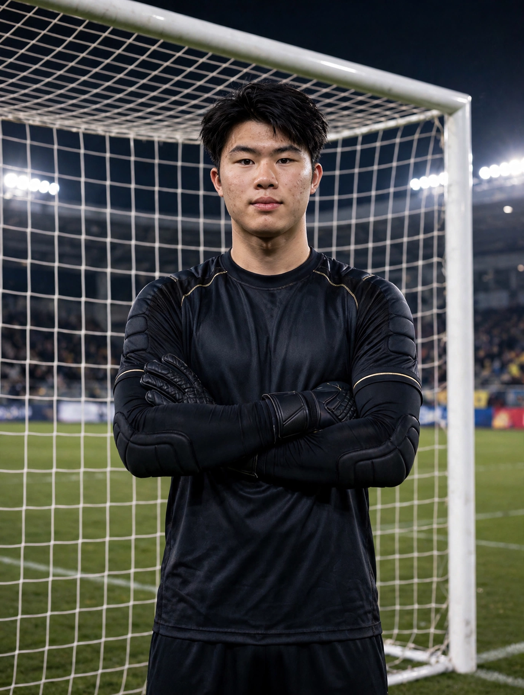

<!doctype html>
<html lang="zh-CN">
  <head>
    <meta charset="utf-8" />
    <meta name="viewport" content="width=device-width, initial-scale=1, viewport-fit=cover" />
    <meta name="color-scheme" content="light" />
    <meta name="description" content="足球俱乐部经营模拟：无限生涯、转会市场、青训体系、集团扩张，从中乙一路踢到中超冠军。可安装到手机主屏幕，像 App 一样打开。" />
    <meta name="theme-color" content="#101d29" />
    <meta name="mobile-web-app-capable" content="yes" />
    <meta name="apple-mobile-web-app-capable" content="yes" />
    <meta name="apple-mobile-web-app-status-bar-style" content="black-translucent" />
    <meta name="apple-mobile-web-app-title" content="豪门缔造者" />
    <link rel="manifest" href="" />
    <link rel="apple-touch-icon" href="apple-touch-icon.png" />
    <link rel="icon" type="image/png" sizes="192x192" href="icon-192.png" />
    <title>豪门缔造者 · 从中乙到中超冠军</title>
    <script>
      /* 启动看门狗：主脚本若因手机浏览器异常等原因没能把游戏渲染出来，超时后
         自动亮出修复面板，绝不让玩家对着白屏干等。三条防死锁规矩（旧版就是栽在这
         上面，玩家被面板永久锁在门外、点哪个按钮都没用）：
         ① 面板只是兜底，不是终点：面板亮着时每 0.4 秒复查一次，只要游戏随后
            启动成功，面板立刻自动消失，绝不压住已经打开的游戏；
         ② 页面里任何一个早期报错都不许直接触发面板——报错时只登记，2.5 秒后
            复查，没启动成功才亮面板；慢手机上脚本多、打开慢是正常的，不算卡死；
         ③ 备份 / 清档必须覆盖全部存档位置：游客存档、每个账号各自的存档、登录
            状态，一个不漏。旧版只管游客那个键，登录账号玩的玩家存档根本不在
            它手里，点「清档重新开始」也清不掉、永远循环同一块面板。 */
      window.__hmBooted = false;
      function hmSaveKeys() {
        var keys = [], i, k;
        try {
          for (i = 0; i < localStorage.length; i++) {
            k = localStorage.key(i);
            if (!k) continue;
            if (k.slice(-4) === '-bak') continue; /* 备份本身不再重复备份 / 删除 */
            if (k === 'zuqiu-km-autosave-v1' || k === 'hm-session-v1' || k.indexOf('zuqiu-km-acct-v1-') === 0) keys.push(k);
          }
        } catch (e) {}
        return keys;
      }
      function hmBackupAllSaves() {
        hmSaveKeys().forEach(function (k) {
          try { var v = localStorage.getItem(k); if (v != null) localStorage.setItem(k + '-bak', v); } catch (e) {}
        });
      }
      window.__hmRescue = function () {
        if (window.__hmBooted || document.getElementById('hm-rescue')) return;
        if (!document.body) { setTimeout(window.__hmRescue, 1000); return; }
        var d = document.createElement('div');
        d.id = 'hm-rescue';
        d.setAttribute('style', 'position:fixed;inset:0;z-index:99999;background:#101d29;color:#e8eef3;display:flex;align-items:center;justify-content:center;padding:24px;font-family:sans-serif;');
        d.innerHTML = '<div style="max-width:340px;text-align:center;">'
          + '<div style="font-size:40px;">⚽</div>'
          + '<div style="font-size:19px;font-weight:800;margin:12px 0 8px;">游戏没能打开</div>'
          + '<p style="font-size:14px;line-height:1.7;color:#a9bfd1;margin:0 0 18px;">打开时卡住了。点下面的按钮重新读取：你的存档会先原样备份一份，本机里的存档不会被删，刷新后会重新读出来接着玩。</p>'
          + '<button id="hm-rescue-fix" style="display:block;width:100%;padding:13px;border:0;border-radius:10px;background:#e85d1f;color:#fff;font-size:16px;font-weight:700;margin-bottom:10px;cursor:pointer;">备份存档并重新读取</button>'
          + '<button id="hm-rescue-retry" style="display:block;width:100%;padding:12px;border:1px solid #3a5069;border-radius:10px;background:transparent;color:#e8eef3;font-size:15px;cursor:pointer;margin-bottom:10px;">先直接刷新重试</button>'
          + '<button id="hm-rescue-wipe" style="display:block;width:100%;padding:12px;border:1px solid #6e3a30;border-radius:10px;background:transparent;color:#d8a294;font-size:13.5px;cursor:pointer;">实在打不开：备份后清档重新开始（当前进度会重开）</button>'
          + '</div>';
        document.body.appendChild(d);
        /* 面板亮着不等于游戏死了：游戏一旦随后启动成功，面板自动消失。 */
        var watch = setInterval(function () {
          if (window.__hmBooted) {
            clearInterval(watch);
            var el = document.getElementById('hm-rescue');
            if (el && el.parentNode) el.parentNode.removeChild(el);
          }
        }, 400);
        document.getElementById('hm-rescue-fix').onclick = function () {
          hmBackupAllSaves();
          location.reload();
        };
        document.getElementById('hm-rescue-retry').onclick = function () { location.reload(); };
        document.getElementById('hm-rescue-wipe').onclick = function () {
          hmBackupAllSaves(); /* 先把游客 + 全部账号的存档和登录状态都备份好 */
          hmSaveKeys().forEach(function (k) { try { localStorage.removeItem(k); } catch (e) {} });
          location.reload();
        };
      };
      window.addEventListener('error', function (e) {
        /* 早期报错只登记、延迟复查：报错不等于启动失败，慢手机上启动本来就要几秒。 */
        if (!window.__hmBooted && e && e.message) setTimeout(window.__hmRescue, 2500);
      }, true);
      setTimeout(window.__hmRescue, 10000);
    </script>
    <style>
      button, [role="button"], select, summary, input:not([type="checkbox"], [type="radio"]) { min-height: 2.25rem; }
      * { box-sizing: border-box; }
      :root{
        --ink:#1c2733; --ink2:#5a6a78; --ink3:#8b9aa6;
        --bg:#e9edf0; --card:#ffffff; --line:#dde4e9;
        --navy1:#101d29; --navy2:#1b3049;
        --orange:#e85d1f; --orange-d:#c94c14;
        --green:#1d9e62; --green-d:#14744a;
        --red:#d33f2e; --blue:#2b6cb0; --gold:#c9930a;
        --radius:14px;
        --shadow:0 2px 10px rgba(16,29,41,.07), 0 1px 3px rgba(16,29,41,.05);
      }
      html,body{ margin:0; padding:0; }
      html{ overscroll-behavior-y:none; }
      body{
        font-family:"PingFang SC","Hiragino Sans GB","Microsoft YaHei","Noto Sans SC",system-ui,sans-serif;
        background:var(--bg); color:var(--ink); font-size:14px; line-height:1.55;
        -webkit-font-smoothing:antialiased;
        -webkit-tap-highlight-color:transparent;
        touch-action:manipulation;
        overscroll-behavior-y:none;
      }
      button{ -webkit-user-select:none; user-select:none; }
      /* ---------- App 模式 ---------- */
      .app-install-card{ display:flex; gap:12px; align-items:center; background:linear-gradient(120deg,#173550,#0e2233); color:#fff; border-radius:var(--radius); box-shadow:var(--shadow); padding:14px 16px; margin-bottom:14px; }
      .app-install-card img{ width:52px; height:52px; border-radius:12px; flex:0 0 52px; }
      .app-install-card .t{ font-weight:800; font-size:15px; }
      .app-install-card .d{ font-size:12.5px; color:#a9bfd1; margin-top:2px; line-height:1.5; }
      .app-install-card .acts{ margin-left:auto; display:flex; flex-direction:column; gap:6px; flex:0 0 auto; }
      @media (max-width:560px){ .app-install-card{ flex-wrap:wrap; } .app-install-card .acts{ margin-left:0; flex-direction:row; } }
      .install-steps{ display:flex; flex-direction:column; gap:10px; margin-top:6px; }
      .install-steps .st{ display:flex; gap:11px; align-items:flex-start; background:#f4f7f9; border-radius:10px; padding:10px 12px; font-size:13.5px; }
      .install-steps .st b.n{ background:var(--orange); color:#fff; width:22px; height:22px; flex:0 0 22px; border-radius:50%; display:flex; align-items:center; justify-content:center; font-size:12.5px; margin-top:1px; }
      @media (display-mode: standalone){
        body{ background:var(--navy1); }
        .layout, .topbar{ padding-top:env(safe-area-inset-top); }
        main{ padding-bottom:calc(40px + env(safe-area-inset-bottom)); }
        #toast{ bottom:calc(26px + env(safe-area-inset-bottom)); }
      }
      .num{ font-family:"Archivo","DIN Alternate","PingFang SC",sans-serif; font-variant-numeric:tabular-nums; }
      button{ font-family:inherit; cursor:pointer; }
      /* ---------- layout ---------- */
      .layout{ display:flex; min-height:100vh; }
      aside{
        width:232px; flex:0 0 232px; position:sticky; top:0; height:100vh; overflow-y:auto;
        background:linear-gradient(168deg,var(--navy2) 0%,var(--navy1) 55%,#0b141d 100%);
        color:#dbe5ee; padding:18px 16px 20px; display:flex; flex-direction:column; gap:12px;
      }
      main{ flex:1; min-width:0; padding:20px 22px 40px; max-width:1180px; margin:0 auto; width:100%; }
      /* ---------- sidebar ---------- */
      /* ---------- 游戏 Logo（用户提供的《豪门缔造者》标志图，透明底） ---------- */
      .game-logo{ display:block; height:auto; }
      aside .game-logo{ width:188px; max-width:100%; }
      .topbar .game-logo{ height:38px; width:auto; }
      .modal .hero .game-logo{ width:min(330px,84%); margin:2px 0 6px; }
      .app-install-card img.game-logo{ width:104px; height:auto; flex:0 0 104px; border-radius:6px; }
      .club-name{ font-size:24px; font-weight:800; color:#fff; margin-top:10px; line-height:1.25; word-break:break-all; }
      .club-sub{ color:#93a7ba; font-size:12px; margin-top:2px; }
      .month-box{ border:1px solid rgba(255,255,255,.18); border-radius:10px; padding:10px 14px; margin-top:6px; background:rgba(255,255,255,.04); }
      .month-box .m{ font-size:26px; font-weight:800; color:#fff; }
      .month-box .m span{ font-size:13px; color:#9db2c4; font-weight:500; margin-left:6px; }
      .month-box .s{ font-size:12px; color:#9db2c4; }
      .tag-row{ display:flex; gap:6px; flex-wrap:wrap; }
      .tag{ font-size:11px; border:1px solid rgba(255,255,255,.3); color:#c8d6e2; padding:2px 8px; border-radius:20px; }
      .tag.hot{ border-color:var(--orange); color:#ffb38f; }
      nav.side{ display:flex; flex-direction:column; gap:4px; margin-top:4px; }
      nav.side button{
        display:flex; align-items:center; gap:10px; width:100%; text-align:left;
        background:transparent; border:none; color:#c8d6e2; font-size:14px; padding:9px 12px; border-radius:20px; min-height:40px;
      }
      nav.side button .ic{ width:18px; text-align:center; flex:0 0 18px; }
      nav.side button .bdg{ margin-left:auto; background:var(--orange); color:#fff; font-size:11px; border-radius:10px; padding:1px 7px; font-weight:700; }
      nav.side button.on{ background:rgba(255,255,255,.13); color:#fff; font-weight:700; box-shadow:inset 3px 0 0 var(--orange); }
      nav.side button:hover{ background:rgba(255,255,255,.08); color:#fff; }
      .side-stats{ border-top:1px solid rgba(255,255,255,.12); padding-top:10px; display:flex; flex-direction:column; gap:5px; font-size:12.5px; }
      .side-stats .row{ display:flex; justify-content:space-between; color:#9db2c4; }
      .side-stats .row b{ color:#eef4f9; font-weight:700; }
      .side-stats .row b.neg{ color:#ff8f7a; }
      .side-btns{ margin-top:auto; display:flex; flex-direction:column; gap:8px; }
      .btn-end{ background:var(--orange); color:#fff; border:none; font-size:15px; font-weight:800; padding:12px; border-radius:10px; }
      .btn-end:hover{ background:var(--orange-d); }
      .btn-ghost{ background:transparent; border:1px solid rgba(255,255,255,.35); color:#dbe5ee; padding:9px; border-radius:10px; font-size:13px; }
      .btn-ghost:hover{ border-color:#fff; color:#fff; }
      .credit{ font-size:11.5px; color:#7e93a7; text-align:center; }
      /* ---------- main generic ---------- */
      .kpis{ display:grid; grid-template-columns:repeat(4,1fr); gap:12px; margin-bottom:14px; }
      .kpi{ background:var(--card); border-radius:var(--radius); box-shadow:var(--shadow); padding:14px 16px; }
      .kpi .lb{ font-size:12px; color:var(--ink2); display:flex; align-items:center; gap:6px; }
      .kpi .dot{ width:8px; height:8px; border-radius:50%; flex:0 0 8px; }
      .kpi .vl{ font-size:24px; font-weight:800; margin-top:2px; }
      .kpi .sub{ font-size:11.5px; color:var(--ink3); }
      .kpi .sub .up{ color:var(--green-d); font-weight:700; } .kpi .sub .dn{ color:var(--red); font-weight:700; }
      .grid2{ display:grid; grid-template-columns:1fr 1fr; gap:14px; }
      .grid-main{ display:grid; grid-template-columns:minmax(0,7fr) minmax(0,5fr); gap:14px; align-items:start; }
      .card{ background:var(--card); border-radius:var(--radius); box-shadow:var(--shadow); padding:16px 18px; margin-bottom:14px; }
      .card h3{ margin:0 0 4px; font-size:16px; font-weight:800; display:flex; align-items:baseline; gap:10px; flex-wrap:wrap; }
      .card h3 .no{ background:var(--orange); color:#fff; font-size:11px; padding:2px 7px; border-radius:4px; font-weight:800; }
      .card h3 .hint{ font-size:12px; color:var(--ink3); font-weight:500; }
      .card .desc{ color:var(--ink2); font-size:12.5px; margin:2px 0 10px; }
      .bar{ height:8px; background:#e6ecf0; border-radius:6px; overflow:hidden; }
      .bar > i{ display:block; height:100%; border-radius:6px; background:var(--blue); }
      .bar.g > i{ background:var(--green); } .bar.o > i{ background:var(--orange); } .bar.r > i{ background:var(--red); } .bar.gold > i{ background:var(--gold); }
      .btn{ border:1px solid var(--line); background:#fff; color:var(--ink); border-radius:9px; padding:7px 14px; font-size:13px; font-weight:600; }
      .btn:hover{ border-color:#b9c7d1; }
      .btn:disabled{ opacity:.45; cursor:not-allowed; }
      .btn.pri{ background:var(--orange); border-color:var(--orange); color:#fff; }
      .btn.pri:hover{ background:var(--orange-d); }
      .btn.grn{ background:var(--green); border-color:var(--green); color:#fff; }
      .btn.grn:hover{ background:var(--green-d); }
      .btn.dark{ background:var(--navy1); border-color:var(--navy1); color:#fff; }
      .btn.sm{ padding:4px 10px; font-size:12px; min-height:32px; }
      .tabs{ display:flex; gap:6px; flex-wrap:wrap; margin-bottom:10px; }
      .tabs button{ border:1px solid var(--line); background:#fff; border-radius:8px; padding:5px 13px; font-size:12.5px; min-height:34px; }
      .tabs button.on{ background:var(--navy1); color:#fff; border-color:var(--navy1); font-weight:700; }
      table{ width:100%; border-collapse:collapse; font-size:13px; }
      th{ text-align:left; color:var(--ink3); font-weight:600; font-size:12px; padding:6px 8px; border-bottom:1px solid var(--line); white-space:nowrap; }
      td{ padding:7px 8px; border-bottom:1px solid #eef2f5; vertical-align:middle; }
      tr.me td{ background:#fff4ec; font-weight:700; }
      tr:last-child td{ border-bottom:none; }
      .pill{ display:inline-block; font-size:11px; padding:1px 8px; border-radius:10px; background:#eef3f6; color:var(--ink2); font-weight:600; white-space:nowrap; }
      .pill.fw{ background:#fde8e0; color:var(--orange-d); } .pill.mf{ background:#e2f2e7; color:var(--green-d); }
      .pill.df{ background:#e3ecf7; color:var(--blue); } .pill.gk{ background:#fdf3d3; color:#8a6508; }
      .pill.up{ background:#e2f2e7; color:var(--green-d); } .pill.dn{ background:#fdeaea; color:var(--red); }
      .pill.elite{ background:linear-gradient(135deg,#ffe9a8,#d4af37 55%,#b8912a); color:#12263f; font-weight:800; border:1px solid #8a6508; box-shadow:0 1px 3px rgba(212,175,55,.45); }
      .pill.idol{ background:linear-gradient(135deg,#1d3a5f,#12263f); color:#ffd968; font-weight:800; border:1px solid #d4af37; box-shadow:0 1px 3px rgba(18,38,63,.35); }
      .pill.tier1{ background:linear-gradient(135deg,#e0342b,#8f0f22); color:#ffe9a8; font-weight:800; border:1px solid #d4af37; box-shadow:0 1px 3px rgba(200,16,46,.35); }
      .pill.tier2{ background:linear-gradient(135deg,#f7d774,#e0aa1e); color:#4a3200; font-weight:800; border:1px solid #a87f14; box-shadow:0 1px 3px rgba(224,170,30,.35); }
      .pill.tier3{ background:linear-gradient(135deg,#ffffff,#c7d0d8); color:#3c4a56; font-weight:800; border:1px solid #93a5b1; }
      .pill.tier4{ background:#2f6db3; color:#fff; font-weight:700; border:1px solid #1d4e82; }
      .pill.tier5{ background:#dff3e2; color:#146c2e; font-weight:700; border:1px solid #57a773; }
      .pill.tier0{ background:linear-gradient(135deg,#2a0a3e,#5b21b6 55%,#7c3aed); color:#ffe9a8; font-weight:800; border:1px solid #ffd968; box-shadow:0 0 7px rgba(255,217,104,.75),0 1px 3px rgba(91,33,182,.5); }
      .pill.custom{ background:linear-gradient(135deg,#ffe9a8,#d4af37 55%,#b8912a); color:#12263f; font-weight:800; border:1px solid #8a6508; box-shadow:0 0 6px rgba(212,175,55,.65),0 1px 3px rgba(212,175,55,.45); }
      .pill.ctag{ background:#f1e8fd; color:#5b21b6; font-weight:700; border:1px solid #c9a9f2; }
      .pill.mtag{ background:#fdf3d3; color:#8a6508; font-weight:700; border:1px solid #d4af37; }
      .pill.mtag-custom{ background:linear-gradient(135deg,#5b21b6,#7c3aed); color:#ffe9a8; font-weight:800; border:1px solid #ffd968; box-shadow:0 1px 3px rgba(91,33,182,.45); }
      .mini{ font-size:11.5px; color:var(--ink3); }
      .log{ display:flex; flex-direction:column; }
      .log .it{ display:flex; gap:12px; padding:7px 0; border-bottom:1px dashed #e3e9ee; font-size:13px; }
      .log .it:last-child{ border-bottom:none; }
      .log .dt{ color:var(--ink3); font-size:12px; flex:0 0 64px; }
      .log .it.bad{ color:var(--red); } .log .it.good{ color:var(--green-d); }
      /* stadium banner */
      .stadium{ border-radius:var(--radius); overflow:hidden; box-shadow:var(--shadow); margin-bottom:14px; background:linear-gradient(180deg,#bcd8ea 0%,#dcebf3 46%,#3f9e5f 46.2%,#2e7d46 100%); position:relative; }
      .stadium .sky{ padding:18px 20px 0; display:flex; justify-content:space-between; align-items:flex-start; }
      .stadium .ttl{ font-size:21px; font-weight:900; color:#14324a; }
      .stadium .ttl small{ display:block; font-size:12px; font-weight:600; color:#40617c; margin-top:2px; }
      .stadium .score{ background:rgba(16,29,41,.85); color:#fff; border-radius:10px; padding:8px 14px; text-align:center; }
      .stadium .score b{ font-size:19px; }
      .stadium .score div{ font-size:11px; color:#b9cbda; }
      .stadium svg{ display:block; width:100%; height:auto; }
      /* rows / items */
      .item{ display:flex; gap:12px; align-items:center; padding:11px 0; border-bottom:1px solid #eef2f5; }
      .item:last-child{ border-bottom:none; }
      .item .grow{ flex:1; min-width:0; }
      .item .nm{ font-weight:700; font-size:14px; }
      .item .meta{ font-size:12px; color:var(--ink2); margin-top:1px; }
      .ab-wrap{ display:flex; align-items:center; gap:8px; min-width:130px; }
      .ab-wrap .bar{ flex:1; }
      .ab-wrap b{ font-size:13px; width:24px; text-align:right; }
      /* relation & gray cards */
      .rel-grid{ display:grid; grid-template-columns:1fr 1fr; gap:12px; }
      .rel-card{ border:1px solid var(--line); border-radius:12px; padding:13px 15px; }
      .rel-card .nm{ font-weight:800; font-size:14.5px; }
      .rel-card .role{ font-size:12px; color:var(--orange-d); font-weight:700; }
      .rel-card .ben{ font-size:12px; color:var(--ink2); margin:6px 0 8px; }
      .rel-card .acts{ display:flex; gap:8px; flex-wrap:wrap; margin-top:9px; }
      .fac{ display:flex; gap:14px; align-items:center; padding:12px 0; border-bottom:1px solid #eef2f5; }
      .fac:last-child{ border-bottom:none; }
      .fac .ic{ font-size:24px; width:44px; height:44px; flex:0 0 44px; background:#eef4f8; border-radius:12px; display:flex; align-items:center; justify-content:center; }
      .lv-dots{ letter-spacing:2px; color:var(--orange); font-size:13px; }
      .lv-dots .off{ color:#d4dde4; }
      /* recharge */
      .tiers{ display:grid; grid-template-columns:repeat(auto-fill,minmax(128px,1fr)); gap:10px; }
      .tier{ border:2px solid var(--line); border-radius:12px; padding:12px 10px; text-align:center; background:#fff; cursor:pointer; min-height:44px; }
      .tier:hover{ border-color:#c3d2dd; }
      .tier.on{ border-color:var(--orange); background:#fff7f1; }
      .tier .amt{ font-size:19px; font-weight:800; }
      .tier .dia{ color:var(--orange-d); font-weight:700; font-size:13px; margin-top:2px; }
      .tier .dbl{ font-size:11px; color:var(--red); font-weight:700; }
      .shop-grid{ display:grid; grid-template-columns:repeat(auto-fill,minmax(210px,1fr)); gap:10px; }
      .shop-it{ border:1px solid var(--line); border-radius:12px; padding:12px 14px; }
      .shop-it .nm{ font-weight:800; }
      .shop-it .ds{ font-size:12px; color:var(--ink2); margin:3px 0 9px; min-height:34px; }
      .qr-box{ display:flex; gap:18px; align-items:center; flex-wrap:wrap; }
      .qr-box img{ width:190px; height:auto; border-radius:12px; border:1px solid var(--line); }
      /* modal */
      .overlay{ position:fixed; inset:0; background:rgba(13,22,31,.62); z-index:60; display:flex; align-items:flex-start; justify-content:center; overflow-y:auto; padding:26px 14px; }
      .modal{ background:#fff; border-radius:16px; max-width:620px; width:100%; box-shadow:0 18px 50px rgba(0,0,0,.35); overflow:hidden; }
      .modal .hero{ background:linear-gradient(120deg,#173550,#0e2233); color:#fff; padding:22px 26px 18px; position:relative; }
      .modal .hero .big{ font-size:32px; font-weight:900; letter-spacing:.06em; }
      .modal .hero .big em{ font-style:normal; color:var(--orange); }
      .modal .hero .sub{ color:#a9bfd1; font-size:13px; margin-top:3px; }
      .modal .body{ padding:18px 26px 24px; max-height:62vh; overflow-y:auto; }
      .modal label.fl{ display:block; font-size:12.5px; color:var(--ink2); font-weight:700; margin:14px 0 6px; }
      .modal input[type=text]{ width:100%; padding:10px 12px; border:1.5px solid var(--line); border-radius:9px; font-size:15px; font-weight:700; font-family:inherit; }
      .opt-grid{ display:grid; grid-template-columns:1fr 1fr; gap:10px; }
      .opt{ border:1.5px solid var(--line); border-radius:11px; padding:11px 13px; cursor:pointer; background:#fff; text-align:left; width:100%; }
      .opt b{ font-size:14px; display:block; }
      .opt span{ font-size:12px; color:var(--ink2); display:block; margin-top:3px; line-height:1.5; }
      .opt.on{ border-color:var(--orange); background:#fff7f1; box-shadow:inset 3px 0 0 var(--orange); }
      .modal .foot{ padding:0 26px 22px; display:flex; gap:10px; flex-wrap:wrap; }
      /* 赛后战报 + 直播观赛 */
      .mr-score{ display:flex; align-items:center; justify-content:center; gap:14px; padding:12px 10px 4px; }
      .mr-score .tm{ font-weight:800; font-size:16px; text-align:center; flex:1; }
      .mr-score .sc{ font-size:38px; font-weight:900; letter-spacing:.04em; white-space:nowrap; }
      .mr-sec{ margin-top:14px; }
      .mr-sec h4{ margin:0 0 7px; font-size:13px; color:var(--ink2); letter-spacing:.05em; }
      .mr-goals{ display:grid; grid-template-columns:1fr 1fr; gap:4px 18px; font-size:13.5px; }
      .mr-goals .gl{ display:flex; gap:7px; }
      .mr-goals .gl.opp{ justify-content:flex-end; text-align:right; }
      .mr-goals .mn{ color:var(--orange); font-weight:800; min-width:36px; }
      .mr-goals .gl.opp .mn{ order:2; min-width:0; }
      .mr-ev{ display:flex; gap:9px; padding:5px 0; border-bottom:1px dashed var(--line); font-size:13px; line-height:1.55; }
      .mr-ev:last-child{ border-bottom:none; }
      .mr-ev .mn{ flex:0 0 40px; font-weight:800; color:var(--ink2); }
      .mr-ev.goal{ font-weight:700; }
      .mr-list{ display:flex; flex-direction:column; gap:7px; }
      .mr-row{ display:flex; align-items:center; gap:10px; background:#f7fafc; border:1px solid var(--line); border-radius:10px; padding:9px 12px; font-size:13.5px; }
      .mr-row .grow{ flex:1; min-width:0; }
      .live-modal{ max-width:860px; }
      .live-head{ background:linear-gradient(120deg,#173550,#0e2233); color:#fff; padding:16px 20px 12px; }
      .live-title{ font-size:12.5px; color:#a9bfd1; font-weight:700; letter-spacing:.04em; }
      .live-score{ display:flex; align-items:center; justify-content:center; gap:16px; margin-top:6px; }
      .live-score .lt-name{ flex:1; font-weight:800; font-size:16px; }
      .live-score .lt-name.r{ text-align:right; }
      .live-score .lt-sc{ font-size:36px; font-weight:900; white-space:nowrap; }
      .live-clock{ text-align:center; margin-top:2px; color:#ffd76a; font-weight:800; font-size:14px; }
      .live-stats{ text-align:center; color:#c8d8e4; font-size:12.5px; margin-top:5px; }
      .live-cols{ display:grid; grid-template-columns:1.6fr 1fr; max-height:52vh; }
      .live-feed{ overflow-y:auto; padding:12px 16px; }
      .live-side{ overflow-y:auto; padding:12px 16px; border-left:1px solid var(--line); background:#f7fafc; }
      .live-side h4{ margin:0 0 6px; font-size:12.5px; color:var(--ink2); }
      .live-side .lu{ font-size:12.5px; line-height:1.75; margin-bottom:12px; }
      .live-ev{ display:flex; gap:8px; padding:4px 0; font-size:13px; line-height:1.55; border-bottom:1px dashed #e6edf2; }
      .live-ev .mn{ flex:0 0 38px; font-weight:800; color:var(--ink2); }
      .live-ev.goal{ font-weight:800; background:#fff6e0; border-radius:6px; padding:4px 6px; }
      .live-controls{ display:flex; gap:7px; flex-wrap:wrap; padding:12px 16px 16px; border-top:1px solid var(--line); }
      .live-controls .btn.on{ background:var(--orange); color:#fff; border-color:var(--orange); }
      @media (max-width:640px){ .live-cols{ grid-template-columns:1fr; max-height:58vh; } .live-side{ border-left:none; border-top:1px solid var(--line); } .mr-score .sc{ font-size:30px; } }
      .btn-start{ background:var(--orange); color:#fff; border:none; font-size:16px; font-weight:800; padding:12px 30px; border-radius:10px; }
      .btn-start:hover{ background:var(--orange-d); }
      /* ---------- 登录界面 / 账号中心 ---------- */
      .login-wrap{ position:fixed; inset:0; overflow-y:auto; background:linear-gradient(168deg,#1b3049 0%,#101d29 55%,#0b141d 100%); display:flex; align-items:flex-start; justify-content:center; padding:34px 14px 40px; z-index:5; }
      .login-card{ background:#fff; border-radius:16px; max-width:430px; width:100%; box-shadow:0 18px 50px rgba(0,0,0,.4); overflow:hidden; }
      .login-hero{ background:linear-gradient(120deg,#173550,#0e2233); padding:24px 26px 18px; text-align:center; }
      .login-hero .game-logo{ width:min(300px,86%); margin:0 auto; }
      .login-sub{ color:#a9bfd1; font-size:12.5px; margin-top:8px; line-height:1.6; }
      .login-body{ padding:18px 26px 24px; }
      .login-body label.fl, .card label.fl{ display:block; font-size:12.5px; color:var(--ink2); font-weight:700; margin:14px 0 6px; }
      .login-body input[type=text], .login-body input[type=password], .card input[type=text], .card input[type=password]{ width:100%; padding:10px 12px; border:1.5px solid var(--line); border-radius:9px; font-size:15px; font-family:inherit; }
      .login-main{ width:100%; margin-top:18px; }
      .login-row{ display:flex; gap:10px; margin-top:12px; }
      .login-row .btn{ flex:1; padding:10px 8px; font-size:14px; }
      .login-err{ background:#fdecea; color:#b3352a; border:1px solid #f2c4bd; border-radius:9px; padding:9px 12px; font-size:13.5px; margin-top:14px; }
      .login-sec{ font-weight:800; font-size:14px; margin:20px 0 8px; }
      .login-note{ font-size:12.5px; color:var(--ink2); line-height:1.7; margin:18px 0 0; background:#f4f7f9; border-radius:9px; padding:10px 12px; }
      .login-note2{ font-size:13px; color:var(--ink2); margin:14px 0 0; }
      .acct-item{ display:flex; flex-direction:column; align-items:flex-start; gap:2px; width:100%; text-align:left; background:#f7fafc; border:1.5px solid var(--line); border-radius:11px; padding:10px 13px; margin-bottom:8px; font-family:inherit; }
      .acct-item:active{ border-color:var(--orange); }
      .acct-item .ai-n{ font-weight:800; font-size:15px; color:var(--ink); }
      .acct-item .ai-m{ font-size:12.5px; color:var(--ink2); }
      .vrow{ display:flex; justify-content:space-between; align-items:baseline; gap:10px; padding:7px 0; border-bottom:1px dashed var(--line); font-size:13.5px; }
      .vrow span{ color:var(--ink2); }
      .vrow.tot{ border-bottom:none; border-top:2px solid var(--line); margin-top:4px; padding-top:10px; font-size:15px; }
      .vrow.tot span{ color:var(--ink); font-weight:800; }
      .vrow.tot b{ color:var(--orange-d); font-size:17px; }
      /* ---------- 我的玩家卡（深蓝 + 金色） ---------- */
      .pcard{ background:linear-gradient(150deg,#1d3d5f 0%,#10263d 55%,#0a1a2c 100%); border:1.5px solid #d4af37; border-radius:14px; padding:16px 18px 14px; color:#eef3f8; box-shadow:0 10px 26px rgba(6,17,30,.35), inset 0 0 0 1px rgba(212,175,55,.16); }
      .pcard .pc-head{ display:flex; justify-content:space-between; align-items:flex-start; gap:10px; border-bottom:1px solid rgba(212,175,55,.45); padding-bottom:10px; }
      .pcard .pc-title{ font-size:11.5px; letter-spacing:.24em; color:#e8cf8a; font-weight:800; }
      .pcard .pc-user{ font-size:21px; font-weight:900; color:#fff; margin-top:3px; line-height:1.25; word-break:break-all; }
      .pcard .pc-club{ color:#a9bfd1; font-size:13px; margin-top:2px; }
      .pcard .pc-badge{ flex:0 0 auto; border:1.5px solid #d4af37; color:#ffd76a; border-radius:999px; font-size:11.5px; font-weight:800; padding:4px 10px; letter-spacing:.08em; }
      .pcard .pc-total{ display:flex; justify-content:space-between; align-items:baseline; gap:10px; margin-top:12px; }
      .pcard .pc-total span{ color:#a9bfd1; font-size:13px; }
      .pcard .pc-total b{ color:#ffd76a; font-size:25px; font-weight:900; white-space:nowrap; }
      .pcard .pc-grid{ display:grid; grid-template-columns:1fr 1fr; gap:0 20px; margin-top:8px; }
      .pcard .pc-row{ display:flex; justify-content:space-between; align-items:baseline; gap:8px; font-size:13px; padding:6px 0; border-bottom:1px dashed rgba(169,191,209,.25); }
      .pcard .pc-row span{ color:#a9bfd1; }
      .pcard .pc-row b{ color:#fff; font-weight:700; white-space:nowrap; }
      .pcard .pc-sec{ margin-top:12px; font-size:13px; color:#c8d8e4; line-height:1.7; }
      .pcard .pc-sec .pc-lab{ color:#a9bfd1; }
      .pcard .pc-sec b{ color:#ffd76a; font-weight:800; }
      .pcard .pc-at{ margin-top:10px; font-size:11.5px; color:#7e97ad; }
      @media (max-width:520px){ .pcard .pc-grid{ grid-template-columns:1fr; } .pcard .pc-total b{ font-size:21px; } }
      .ev-choices{ display:flex; flex-direction:column; gap:9px; margin-top:12px; }
      .ev-choices button{ text-align:left; }
      .end-grade{ font-size:54px; font-weight:900; color:var(--orange); line-height:1; }
      /* ---------- 入口海报弹窗（每次进游戏，未删除的海报依次全弹；右上角 ✕ = 永久删除） ---------- */
      .creator-overlay{ position:fixed; inset:0; z-index:120; display:flex; align-items:center; justify-content:center; padding:24px 16px; overflow-y:auto;
        background:
          radial-gradient(420px 200px at 12% -40px, rgba(255,214,120,.28), rgba(255,214,120,0) 70%),
          radial-gradient(420px 200px at 88% -40px, rgba(255,214,120,.28), rgba(255,214,120,0) 70%),
          radial-gradient(900px 480px at 50% 115%, rgba(38,110,60,.35), rgba(38,110,60,0) 65%),
          linear-gradient(180deg, rgba(6,12,22,.93), rgba(4,8,14,.96));
        animation:creatorFade .28s ease-out; }
      .creator-card{ position:relative; background:linear-gradient(180deg,#141a21,#0a0e13); border:2px solid #d4af37; border-radius:18px; padding:10px 10px 8px;
        box-shadow:0 26px 70px rgba(0,0,0,.65), 0 0 0 1px rgba(212,175,55,.25), 0 0 46px rgba(212,175,55,.16);
        max-width:min(430px,94vw); animation:creatorPop .3s ease-out; }
      .creator-card img{ display:block; width:100%; height:auto; max-width:100%; max-height:min(76vh,760px); margin:0 auto; border-radius:10px; aspect-ratio:3/4; object-fit:contain; background:linear-gradient(180deg,#263449,#0c1119); }
      .creator-hint{ text-align:center; color:#e8cf8a; font-size:12.5px; letter-spacing:.14em; padding:8px 4px 4px; }
      .creator-del-note{ text-align:center; color:#c3cedb; font-size:11.5px; line-height:1.55; padding:2px 8px 0; }
      .creator-next{ display:block; margin:10px auto 5px; background:linear-gradient(180deg,#f3cd6b,#d4af37); color:#241a02; border:none; font-size:15px; font-weight:800; padding:10px 36px; border-radius:10px; cursor:pointer; box-shadow:0 6px 16px rgba(0,0,0,.4); }
      .creator-next:active{ transform:scale(.97); }
      .pw-item img{ width:52px; height:70px; object-fit:cover; object-position:top center; border-radius:8px; border:1.5px solid #d4af37; cursor:pointer; flex:0 0 52px; display:block; }
      .creator-close{ position:absolute; top:-15px; right:-9px; width:46px; height:46px; min-height:46px; border-radius:50%; z-index:2;
        background:radial-gradient(circle at 32% 30%, #ffe9a8, #e3b93e 55%, #b8860b); border:2px solid #fff3c4; color:#2a1e02;
        font-size:23px; font-weight:900; line-height:1; display:flex; align-items:center; justify-content:center; cursor:pointer;
        box-shadow:0 6px 18px rgba(0,0,0,.55), 0 0 14px rgba(212,175,55,.45); }
      .creator-close:active{ transform:scale(.94); }
      @keyframes creatorFade{ from{ opacity:0; } to{ opacity:1; } }
      @keyframes creatorPop{ from{ opacity:0; transform:scale(.96) translateY(8px); } to{ opacity:1; transform:scale(1) translateY(0); } }
      @media (prefers-reduced-motion: reduce){ .creator-overlay,.creator-card{ animation:none; } }
      /* ---------- 按天模拟 / 每周签到 / 赛程 / 致敬传奇 ---------- */
      .sim-row{ display:flex; gap:6px; }
      .sim-row button{ flex:1; }
      .sign-grid{ display:grid; grid-template-columns:repeat(4,1fr); gap:8px; margin:12px 0 4px; }
      .sign-cell{ border:1.5px solid var(--line); border-radius:11px; padding:9px 4px 7px; text-align:center; background:#fbfcfe; position:relative; }
      .sign-cell .sd{ font-size:11.5px; color:var(--ink2); font-weight:700; }
      .sign-cell .sr{ font-size:14.5px; font-weight:800; margin-top:2px; }
      .sign-cell .sr small{ display:block; font-size:10.5px; color:var(--gold-d,#a87b12); font-weight:700; }
      .sign-cell.done{ border-color:var(--green); background:#eefaf2; color:var(--green-d); }
      .sign-cell.today{ border-color:var(--gold,#d4af37); background:#fff8e2; box-shadow:0 0 0 2px rgba(212,175,55,.25); }
      .sign-cell.big{ grid-column:span 2; border-color:var(--gold,#d4af37); background:linear-gradient(180deg,#fff6d8,#ffedb3); }
      .fx-row{ display:flex; align-items:center; gap:9px; padding:7px 2px; border-bottom:1px dashed var(--line); font-size:13.5px; }
      .fx-row:last-child{ border-bottom:none; }
      .fx-row .fd{ font-weight:800; min-width:64px; }
      .fx-row .fo{ flex:1; min-width:0; }
      .tribute-overlay{ position:fixed; inset:0; z-index:130; display:flex; align-items:center; justify-content:center; padding:20px 14px; overflow-y:auto;
        background:radial-gradient(900px 480px at 50% 110%, rgba(160,20,30,.30), rgba(0,0,0,0) 65%), linear-gradient(180deg, rgba(5,8,14,.95), rgba(3,5,9,.97));
        animation:creatorFade .28s ease-out; }
      .tribute-card{ position:relative; max-width:min(460px,94vw); animation:creatorPop .3s ease-out; }
      .tribute-card img{ display:block; width:auto; height:auto; max-width:100%; max-height:84vh; margin:0 auto; border-radius:12px; border:2px solid #d4af37;
        box-shadow:0 26px 70px rgba(0,0,0,.7), 0 0 46px rgba(212,175,55,.22); }
      .tribute-cap{ text-align:center; color:#e8cf8a; font-size:13px; letter-spacing:.18em; padding:10px 4px 0; font-weight:700; }
      @media (prefers-reduced-motion: reduce){ .tribute-overlay,.tribute-card{ animation:none; } }
      /* ---------- 游戏大厅（按用户截图：球场夜景大厅布局） ---------- */
      body.home-dark{ background:#060d16; }
      .lobby{ position:relative; border-radius:18px; overflow:hidden; color:#eef3f8; margin-bottom:14px;
        background:#0a1622 url('photo-25.jpg') center 32%/cover no-repeat; box-shadow:0 10px 34px rgba(3,8,14,.45); }
      .lobby::before{ content:''; position:absolute; inset:0;
        background:linear-gradient(180deg, rgba(5,11,20,.62) 0%, rgba(5,11,20,.34) 34%, rgba(5,11,20,.55) 68%, rgba(4,9,16,.92) 100%); }
      .lobby-in{ position:relative; z-index:1; padding:16px 14px 16px; display:flex; flex-direction:column; gap:15px; }
      .lobby-top{ display:flex; align-items:flex-start; gap:10px; flex-wrap:wrap; }
      .lobby-top .game-logo{ width:138px; filter:drop-shadow(0 4px 14px rgba(0,0,0,.6)); }
      .resbar{ margin-left:auto; display:flex; gap:8px; flex-wrap:wrap; }
      .respill{ display:flex; align-items:center; gap:2px; background:rgba(5,12,20,.78); border:1px solid rgba(255,205,110,.4); border-radius:999px; padding:3px 4px 3px 6px; }
      .respill .rmain{ background:none; border:none; color:#fff; font-size:13.5px; font-weight:700; display:flex; align-items:center; gap:5px; padding:4px 6px; min-height:30px; }
      .respill .rplus{ width:27px; height:27px; min-height:27px; border-radius:50%; border:none; flex:0 0 27px;
        background:linear-gradient(145deg,#ffe9a8,#dfa92f); color:#2a1e02; font-size:17px; font-weight:900; line-height:1;
        display:flex; align-items:center; justify-content:center; box-shadow:0 2px 8px rgba(0,0,0,.45); }
      .lobby-row2{ display:flex; gap:10px; align-items:flex-start; flex-wrap:wrap; }
      .lobby-profile{ flex:1; display:flex; align-items:center; gap:10px; text-align:left; background:rgba(6,14,24,.8);
        border:1px solid rgba(255,255,255,.16); border-radius:12px; padding:10px 12px; color:#fff; max-width:100%; }
      .lobby-profile .pshield{ font-size:30px; line-height:1; filter:drop-shadow(0 2px 6px rgba(212,175,55,.5)); }
      .lobby-profile .pname{ font-weight:800; font-size:14px; display:block; white-space:nowrap; }
      .lobby-profile .plv{ display:flex; align-items:center; gap:7px; font-size:12px; color:#e8cf8a; font-weight:700; margin-top:2px; }
      .lvlbar{ width:104px; height:8px; background:#26374c; border-radius:5px; overflow:hidden; display:inline-block; }
      .lvlbar i{ display:block; height:100%; background:linear-gradient(90deg,#b57f1d,#ffd968); border-radius:5px; }
      .lobby-profile .psub{ display:block; font-size:11.5px; color:#a9bfd1; margin-top:2px; }
      .lobby-quick{ margin-left:auto; display:flex; gap:2px; flex-wrap:wrap; }
      .qbtn{ position:relative; background:none; border:none; color:#f3e3bb; display:flex; flex-direction:column; align-items:center; gap:2px;
        font-size:12px; font-weight:600; min-width:56px; padding:6px 4px; text-shadow:0 1px 4px rgba(0,0,0,.7); }
      .qbtn .qi{ font-size:24px; line-height:1.15; filter:drop-shadow(0 3px 6px rgba(0,0,0,.55)); }
      .qbtn .dot{ position:absolute; top:1px; right:7px; background:#e03226; color:#fff; font-size:10px; font-weight:800;
        min-width:16px; height:16px; border-radius:9px; display:flex; align-items:center; justify-content:center; padding:0 4px;
        border:1.5px solid rgba(255,255,255,.85); }
      /* ---------- 大厅海报滚动区（独立整行：画面上不压任何按钮/角标/浮层，箭头与圆点都在画面下方的控制条里） ---------- */
      .pcar{ background:rgba(6,14,24,.86); border:1px solid rgba(212,175,55,.5); border-radius:14px; padding:10px 12px 9px;
        box-shadow:0 14px 34px rgba(0,0,0,.45); }
      .pcar-head{ display:flex; align-items:center; justify-content:space-between; gap:8px; margin-bottom:8px; }
      .pcar-head .pcar-t{ font-size:13px; font-weight:800; color:#e8cf8a; letter-spacing:.08em; }
      .pcar-head .pcar-count{ font-size:12px; font-weight:700; color:#a9bfd1; }
      .pcar-view{ overflow:hidden; border-radius:10px; background:#05090f; max-width:340px; margin:0 auto; }
      .pcar-track{ display:flex; transition:transform .38s ease; }
      .pcar-slide{ flex:0 0 100%; width:100%; background:none; border:none; padding:0; margin:0; cursor:pointer; min-height:0; }
      .pcar-slide img{ display:block; width:100%; aspect-ratio:3/4; object-fit:contain; background:#05090f; }
      .pcar-bar{ display:flex; align-items:center; justify-content:space-between; gap:10px; max-width:340px; margin:9px auto 0; }
      .pcar-arrow{ width:40px; height:40px; min-height:40px; flex:0 0 40px; border-radius:50%; border:1px solid rgba(212,175,55,.65);
        background:rgba(212,175,55,.14); color:#ffd968; font-size:24px; font-weight:900; line-height:1;
        display:flex; align-items:center; justify-content:center; padding:0 0 3px; }
      .pcar-arrow:active{ background:rgba(212,175,55,.32); }
      .pcar-dots{ display:flex; gap:8px; align-items:center; justify-content:center; flex:1; }
      .pcar-dot{ width:11px; height:11px; min-height:11px; border-radius:50%; border:1.5px solid rgba(212,175,55,.8);
        background:transparent; padding:0; cursor:pointer; }
      .pcar-dot.on{ background:#ffd968; box-shadow:0 0 8px rgba(212,175,55,.6); }
      .pcar-cap{ text-align:center; font-size:12px; color:#a9bfd1; margin-top:7px; line-height:1.5; }
      @media (prefers-reduced-motion: reduce){ .pcar-track{ transition:none; } }
      .pwall-entry{ display:flex; align-items:center; gap:12px; width:100%; margin-top:10px; padding:15px 16px; min-height:64px;
        background:linear-gradient(120deg, rgba(212,175,55,.22), rgba(6,14,24,.88) 55%); border:1.5px solid rgba(212,175,55,.75);
        border-radius:14px; color:#f4e9c8; font-size:17px; font-weight:900; letter-spacing:.04em; text-align:left; cursor:pointer; }
      .pwall-entry .pw-i{ font-size:26px; line-height:1; }
      .pwall-entry small{ display:block; margin-top:2px; font-size:12px; font-weight:600; color:#a9bfd1; letter-spacing:0; }
      .pwall-entry .pw-go{ margin-left:auto; font-size:22px; font-weight:900; color:#ffd968; }
      .pwall-entry:active{ background:linear-gradient(120deg, rgba(212,175,55,.38), rgba(6,14,24,.9) 55%); }
      .lobby-actions{ display:grid; grid-template-columns:5fr 7fr; gap:10px; }
      .myteam{ position:relative; border-radius:12px; overflow:hidden; border:1px solid rgba(140,190,255,.55); padding:0; min-height:92px; background:#0a1420; text-align:left; }
      .myteam img{ position:absolute; inset:0; width:100%; height:100%; object-fit:cover; display:block; }
      .myteam .mt-t{ position:absolute; left:11px; bottom:9px; color:#fff; font-weight:900; font-size:17px; text-shadow:0 2px 8px rgba(0,0,0,.85); }
      .myteam .mt-t small{ display:block; font-size:11px; font-weight:600; color:#cfe2f2; margin-top:1px; }
      .myteam .mt-go{ position:absolute; right:10px; bottom:10px; color:#fff; font-size:18px; font-weight:900; text-shadow:0 2px 8px rgba(0,0,0,.85); }
      .startmatch{ border:none; border-radius:12px; color:#23180a; padding:10px 14px; min-height:92px;
        background:linear-gradient(135deg,#f7dc8a 0%,#dfae4a 55%,#bd861f 100%);
        clip-path:polygon(2.5% 0,100% 0,97.5% 100%,0 100%);
        display:flex; flex-direction:column; align-items:center; justify-content:center; gap:1px;
        box-shadow:0 10px 26px rgba(0,0,0,.4); }
      .startmatch .big{ font-size:27px; font-weight:900; letter-spacing:.05em; line-height:1.15; }
      .startmatch .en{ font-size:11px; font-weight:800; letter-spacing:.32em; color:#5c430d; }
      .startmatch small{ font-size:11px; font-weight:600; color:#5c430d; }
      .startmatch:disabled{ opacity:.55; }
      .lobby-sec{ font-size:13px; font-weight:800; color:#e8cf8a; letter-spacing:.08em; display:flex; align-items:center; gap:8px; }
      .lobby-sec::after{ content:''; flex:1; height:1px; background:linear-gradient(90deg, rgba(212,175,55,.55), rgba(212,175,55,0)); }
      .lobby-grid{ display:grid; grid-template-columns:repeat(4,1fr); gap:10px; }
      .ltile{ background:rgba(6,14,24,.84); border:1px solid rgba(255,255,255,.15); border-radius:12px; color:#e8eef4;
        padding:12px 6px 10px; min-height:92px; display:flex; flex-direction:column; align-items:center; justify-content:center; gap:3px; font-size:12.5px; font-weight:700;
        text-align:center; position:relative; }
      .ltile.wide{ grid-column:1/-1; min-height:76px; }
      .ltile .ti{ font-size:21px; line-height:1.15; }
      .ltile small{ color:#93a7ba; font-weight:500; font-size:10.5px; line-height:1.45; }
      .ltile .bdg{ position:absolute; top:6px; right:6px; background:#f0c44f; color:#23180a; font-size:10.5px; font-weight:800;
        border-radius:9px; padding:1px 6px; }
      .lobby-banner{ position:relative; border-radius:12px; overflow:hidden; border:1px solid rgba(120,220,150,.4); padding:0; height:96px; background:#0a1420; text-align:left; width:100%; }
      .lobby-banner img{ position:absolute; inset:0; width:100%; height:100%; object-fit:cover; object-position:center; display:block; }
      .lobby-banner .lb-t{ position:absolute; left:11px; bottom:9px; color:#fff; font-weight:900; font-size:15.5px; text-shadow:0 2px 8px rgba(0,0,0,.85); }
      .lobby-banner .lb-t small{ display:block; font-size:11px; font-weight:600; color:#d8ecdc; margin-top:1px; }
      .lobby-tabs{ position:relative; z-index:1; display:grid; grid-template-columns:repeat(5,1fr);
        background:rgba(4,9,16,.94); border-top:1px solid rgba(212,175,55,.5); padding:5px 4px 7px; }
      .ltab{ background:none; border:none; color:#b7a678; display:flex; flex-direction:column; align-items:center; gap:2px;
        font-size:12px; font-weight:600; padding:6px 2px; }
      .ltab .ti{ font-size:21px; line-height:1.15; }
      .ltab.on{ color:#ffd968; font-weight:800; box-shadow:inset 0 -3px 0 #d4af37; }
      /* 全局底部导航：render() 在每个页面都渲染一份，固定在屏幕底部，点任意页签直接切换页面 */
      .gtabs{ position:fixed; left:0; right:0; bottom:0; z-index:50; display:grid; grid-template-columns:repeat(5,1fr);
        background:rgba(4,9,16,.97); border-top:1px solid rgba(212,175,55,.55); padding:5px 4px calc(7px + env(safe-area-inset-bottom));
        box-shadow:0 -8px 28px rgba(0,0,0,.4); }
      body .layout main, body .layout.lobby-mode main{ padding-bottom:118px; }
      body #toast{ bottom:calc(98px + env(safe-area-inset-bottom)); }
      @media (max-width:900px){
        .layout.lobby-mode .topbar{ display:none; }
        .layout.lobby-mode main{ padding:10px 8px 26px; }
      }
      @media (max-width:640px){
        .lobby-top .game-logo{ width:106px; }
        .lobby-banner{ height:108px; }
        .lobby-grid{ grid-template-columns:repeat(3,1fr); }
        .lobby-actions{ grid-template-columns:4fr 6fr; }
        .startmatch .big{ font-size:21px; }
        .myteam .mt-t{ font-size:14.5px; }
        .lobby-quick{ margin-left:0; }
        .qbtn{ min-width:52px; }
      }
      /* ---------- 球星图鉴（世界球星 / 五大联赛 / 中超名将，真实照片） ---------- */
      .star-grid{ display:grid; grid-template-columns:repeat(auto-fill,minmax(168px,1fr)); gap:12px; }
      .star-card{ border:1px solid var(--line); border-radius:12px; overflow:hidden; background:#fff; display:flex; flex-direction:column; flex:1; }
      .star-card>img{ width:100%; height:158px; object-fit:cover; object-position:top center; display:block; background:#0a1420; }
      .star-card .sb{ padding:10px 12px 12px; display:flex; flex-direction:column; gap:4px; flex:1; }
      .star-card .sn{ font-weight:800; font-size:15px; line-height:1.3; }
      .star-card .sn small{ color:var(--ink3); font-weight:600; font-size:11px; margin-left:4px; }
      .star-card .sm{ font-size:12px; color:var(--ink2); line-height:1.5; }
      .star-card .stag{ font-size:12px; color:var(--ink2); line-height:1.55; flex:1; }
      .star-card .sfee{ display:flex; justify-content:space-between; align-items:baseline; border-top:1px dashed #e3e9ee; padding-top:7px; margin-top:2px; }
      .star-card .sfee b{ font-size:15px; }
      .star-thumb{ width:30px; height:30px; border-radius:50%; object-fit:cover; object-position:top center; vertical-align:-9px; margin-right:7px; border:1.5px solid #d4af37; background:#0a1420; }
      .league-block{ border:1px solid var(--line); border-radius:12px; padding:13px 15px; }
      .league-block .lh{ display:flex; align-items:baseline; gap:9px; flex-wrap:wrap; }
      .league-block .lh b{ font-size:15.5px; }
      .league-block .lh span{ font-size:11.5px; color:var(--ink3); font-weight:700; letter-spacing:.06em; }
      .team-chips{ display:flex; gap:6px; flex-wrap:wrap; margin-top:8px; }
      .team-chips .chip{ font-size:12px; background:#eef3f6; color:var(--ink); border-radius:16px; padding:3px 11px; font-weight:600; }
      .team-chips .chip.hot{ background:#fdf3d3; color:#8a6508; }
      .league-stars{ display:flex; gap:12px; flex-wrap:wrap; margin-top:11px; }
      .league-stars .ls{ display:flex; align-items:center; gap:7px; font-size:12.5px; font-weight:700; background:none; border:none; padding:2px; color:var(--ink); text-align:left; }
      .league-stars .ls img{ width:42px; height:42px; border-radius:50%; object-fit:cover; object-position:top center; border:2px solid #d4af37; background:#0a1420; display:block; }
      .league-stars .ls small{ display:block; color:var(--ink3); font-weight:500; font-size:11px; }
      .news-it{ display:flex; gap:10px; padding:8px 0; border-bottom:1px dashed #e3e9ee; font-size:13px; align-items:flex-start; }
      .news-it:last-child{ border-bottom:none; }
      .news-it img{ width:40px; height:40px; border-radius:50%; object-fit:cover; object-position:top center; flex:0 0 40px; border:1.5px solid #d4af37; background:#0a1420; }
      .scorer-line{ font-size:12px; color:var(--ink2); margin-top:2px; }
      @media (max-width:640px){ .star-grid{ grid-template-columns:1fr 1fr; gap:9px; } .star-card>img{ height:118px; } }
      /* ---------- 充值中心新玩法：首充礼包 / 月卡季卡 / 累充奖励 / 庆祝礼包 / 钻石招募 ---------- */
      .deal{ border:2px solid #d4af37 !important; background:linear-gradient(180deg,#fffaf0,#ffffff); }
      .prog{ height:10px; background:#edf1f4; border-radius:6px; overflow:hidden; margin:8px 0 4px; }
      .prog i{ display:block; height:100%; background:linear-gradient(90deg,#b57f1d,#ffd968); border-radius:6px; }
      .cum-row{ display:flex; align-items:center; gap:10px; padding:8px 0; border-bottom:1px dashed var(--line); }
      .cum-row:last-child{ border-bottom:none; }
      .card-deal{ border:1px solid var(--line); border-radius:12px; padding:12px 14px; background:#fbfcfe; }
      .card-deal.on{ border-color:#d4af37; background:#fffaf0; }
      .gacha-res{ display:grid; grid-template-columns:repeat(auto-fill,minmax(118px,1fr)); gap:10px; }
      .gacha-it{ border:1px solid var(--line); border-radius:10px; padding:8px; text-align:center; font-size:12.5px; line-height:1.5; background:#fff; }
      .gacha-it img{ width:100%; height:84px; object-fit:cover; object-position:top center; border-radius:7px; display:block; margin-bottom:5px; background:#0a1420; }
      .gacha-it.star{ border:2px solid #d4af37; background:#fffaf0; font-weight:700; }
      .gacha-it .gi{ font-size:26px; line-height:1.2; display:block; margin:8px 0 4px; }
      /* toast */
      #toast{ position:fixed; left:50%; bottom:26px; transform:translateX(-50%) translateY(20px); background:var(--navy1); color:#fff; padding:11px 20px; border-radius:24px; font-size:13.5px; font-weight:600; opacity:0; pointer-events:none; transition:.25s; z-index:99; max-width:92vw; text-align:center; }
      #toast.show{ opacity:1; transform:translateX(-50%) translateY(0); }
      .warn-strip{ background:#fdf0ec; border:1px solid #f3c4b2; color:#9c3a17; border-radius:10px; padding:9px 13px; font-size:12.5px; margin-bottom:12px; }
      .ok-strip{ background:#e9f7ef; border:1px solid #bfe6cf; color:var(--green-d); border-radius:10px; padding:9px 13px; font-size:12.5px; margin-bottom:12px; }
      textarea.code{ width:100%; min-height:74px; border:1.5px solid var(--line); border-radius:9px; padding:9px; font-size:11px; font-family:monospace; }
      /* ---------- responsive ---------- */
      .topbar{ display:none; }
      @media (max-width:900px){
        .layout{ flex-direction:column; }
        aside{ display:none; }
        .topbar{ display:block; position:sticky; top:0; z-index:40; background:linear-gradient(120deg,var(--navy2),var(--navy1)); color:#fff; padding:12px 14px 10px; }
        .topbar .r1{ display:flex; align-items:center; gap:10px; flex-wrap:wrap; }
        .topbar .cn{ font-size:17px; font-weight:800; }
        .topbar .mm{ margin-left:auto; font-size:13px; color:#b9cbda; }
        .topbar .mm b{ color:#fff; font-size:16px; }
        .topbar nav{ display:flex; gap:6px; overflow-x:auto; padding:10px 0 2px; scrollbar-width:none; }
        .topbar nav::-webkit-scrollbar{ display:none; }
        .topbar nav button{ flex:0 0 auto; background:rgba(255,255,255,.1); border:none; color:#c8d6e2; border-radius:18px; padding:7px 14px; font-size:13px; min-height:38px; }
        .topbar nav button.on{ background:var(--orange); color:#fff; font-weight:700; }
        .topbar .r3{ display:flex; gap:8px; margin-top:10px; }
        .topbar .r3 .btn-end{ flex:1; padding:10px; font-size:14px; }
        .topbar .r3 .btn-ghost{ flex:0 0 auto; padding:10px 14px; }
        main{ padding:14px 12px 34px; }
        .kpis{ grid-template-columns:1fr 1fr; }
        .grid2,.grid-main,.rel-grid{ grid-template-columns:1fr; }
        .opt-grid{ grid-template-columns:1fr; }
        .modal .body{ padding:14px 18px 18px; } .modal .hero,.modal .foot{ padding-left:18px; padding-right:18px; }
        .tbl-wrap{ overflow-x:auto; }
        .qr-box img{ width:160px; }
      }
      /* ---------- 阵容球场（阵型图） ---------- */
      .pitch-wrap{ max-width:560px; margin:0 auto; }
      .pitch{ position:relative; width:100%; aspect-ratio:3/3.9; border-radius:12px; overflow:hidden;
        background:repeating-linear-gradient(180deg,#2e8b47 0 9%,#2a8143 9% 18%);
        border:3px solid #fdfdf8; box-shadow:inset 0 0 0 3px rgba(0,0,0,.12), 0 6px 22px rgba(16,29,41,.28); }
      .pitch .ln{ position:absolute; border:2px solid rgba(255,255,255,.75); pointer-events:none; }
      .pitch .half{ left:0; right:0; top:50%; height:0; border-width:2px 0 0; }
      .pitch .circ{ left:50%; top:50%; width:19%; aspect-ratio:1; border-radius:50%; transform:translate(-50%,-50%); }
      .pitch .box-t{ left:22%; right:22%; top:0; height:13.5%; border-top:none; }
      .pitch .box-b{ left:22%; right:22%; bottom:0; height:13.5%; border-bottom:none; }
      .pitch .box6-t{ left:36%; right:36%; top:0; height:6%; border-top:none; }
      .pitch .box6-b{ left:36%; right:36%; bottom:0; height:6%; border-bottom:none; }
      .pmark{ position:absolute; transform:translate(-50%,-50%); background:none; border:none; padding:0; z-index:2;
        display:flex; flex-direction:column; align-items:center; gap:2px; min-height:0; width:64px; }
      .pmark .pc{ width:38px; height:38px; border-radius:50%; background:#101d29; color:#ffd76a; border:2px solid #ffd76a;
        display:flex; align-items:center; justify-content:center; font-weight:900; font-size:14px; overflow:hidden;
        box-shadow:0 3px 8px rgba(0,0,0,.45); }
      .pmark .pc img{ width:100%; height:100%; object-fit:cover; }
      .pmark.me .pc{ background:#e85d1f; border-color:#fff; color:#fff; }
      .pmark .pl{ background:rgba(10,20,30,.82); color:#fff; border-radius:6px; padding:1px 6px; font-size:11px; line-height:1.45;
        white-space:nowrap; max-width:76px; overflow:hidden; text-overflow:ellipsis; }
      .pmark .pl b{ color:#ffd76a; font-weight:800; }
      .pmark:active .pc{ transform:scale(1.12); }
      .pmark.empty{ cursor:pointer; }
      .pmark.empty .pc{ background:rgba(10,22,34,.55); color:#ffe9a8; border:2px dashed rgba(255,215,106,.9); font-size:19px; box-shadow:none; }
      .pmark.empty .pl{ background:rgba(160,40,30,.88); }
      .slot-pick-row{ display:flex; align-items:center; gap:10px; width:100%; text-align:left; background:var(--card,#fff); border:1px solid var(--line,#dfe6ec); border-radius:10px; padding:9px 12px; margin-bottom:7px; cursor:pointer; }
      .slot-pick-row:hover{ border-color:#d4af37; }
      .slot-pick-row.cur{ border-color:#d4af37; background:#fdf6dd; }
      .form-btns{ display:flex; gap:6px; flex-wrap:wrap; margin-bottom:10px; }
      /* ---------- 荣誉中心 / 颁奖 ---------- */
      .hon-grid{ display:grid; grid-template-columns:repeat(auto-fill,minmax(230px,1fr)); gap:10px; }
      .hon-card{ background:#f7fafc; border:1px solid var(--line); border-radius:10px; padding:11px 13px; }
      .hon-card.me{ background:linear-gradient(135deg,#fff8e6,#fdf0cd); border-color:#e3c15c; }
      .hon-card .hn{ font-weight:800; font-size:14.5px; }
      .hon-card .hl{ font-size:12.5px; color:var(--ink2); margin-top:3px; line-height:1.65; }
      .award-hero{ background:linear-gradient(120deg,#173550,#0e2233); color:#fff; border-radius:var(--radius); box-shadow:var(--shadow); padding:18px; margin-bottom:14px; }
      .award-hero .cd{ font-size:30px; font-weight:900; color:#ffd76a; line-height:1.15; }
      .award-pred{ display:grid; grid-template-columns:repeat(auto-fill,minmax(215px,1fr)); gap:10px; margin-top:12px; }
      .award-pred .ap{ background:rgba(255,255,255,.08); border:1px solid rgba(255,215,106,.35); border-radius:10px; padding:10px 12px; }
      .award-pred .ap .at{ font-size:12px; color:#ffd76a; font-weight:800; }
      .award-pred .ap .an{ font-size:16px; font-weight:800; margin-top:2px; }
      .award-pred .ap .ad{ font-size:12px; color:#c8d8e4; margin-top:2px; line-height:1.5; }
      .trophy-line{ font-size:13px; line-height:1.7; }
    </style>
  </head>
  <body>
    <div id="app"></div>
    <div id="modal-root"></div>
    <div id="creator-root"></div>
    <div id="toast"></div>
<script>
"use strict";
/* ================= 豪门缔造者 · 俱乐部经营模拟 =================
   玩法移植自《基建狂魔》：月度回合 / 转会招标 / 教练组 / 人脉关系 /
   灰色账本 / 银行授信 / 全自动模拟 / 充值中心。无限生涯：赛季无限
   循环，没有强制结局，夺冠、杯赛、成就与王朝评级一直累计。
   自动存档：进入游戏自动读取上次存档，每步操作自动保存到本机，
   退出重开接着玩（另保留存档码导出/导入作备份）。
   青训体系：梯队招生、候选苗子签约、个性化培养方案、月度成长、
   梯队比赛、提拔一线队与出售苗子，青训营等级/投入/教练共同影响成材率。 */
var $app = document.getElementById('app');
var $modal = document.getElementById('modal-root');
function toast(msg){ var t=document.getElementById('toast'); t.textContent=msg; t.className='show'; setTimeout(function(){ t.className=''; },2600); }
function fmt(n){ n=Math.round(n); if(Math.abs(n)>=10000){ return (n/10000).toFixed(2).replace(/\.?0+$/,'')+'亿'; } return n.toLocaleString('zh-CN')+'万'; }
function fmtFans(n){ if(n>=10000) return (n/10000).toFixed(1).replace(/\.0$/,'')+'万人'; return n.toLocaleString('zh-CN')+'人'; }
function clamp(v,a,b){ return Math.max(a,Math.min(b,v)); }
function rnd(a,b){ return a+Math.random()*(b-a); }
function ri(a,b){ return Math.floor(rnd(a,b+1)); }
function pick(arr){ return arr[Math.floor(Math.random()*arr.length)]; }
function esc(s){ return String(s).replace(/&/g,'&amp;').replace(/</g,'&lt;'); }
/* ---------------- 深度经营默认数据 ----------------
   defaultBiz 必须定义在主脚本里、且排在读档逻辑之前：sanitizeSaveData / newGame
   都要用它。它原先只写在文末的深度经营脚本块里，而启动读档在那个脚本块执行
   之前就先跑了——老存档没有 biz 字段，一补默认值就报「defaultBiz is not
   defined」，异常被 loadAutoSave 吞掉后返回 false，玩家被当成新玩家送去开局，
   海报按钮变「去开局」、老存档入口消失。这就是老存档读不出来的根源。 */
function defaultBiz(){
  return {
    overseas:{}, ovCum:0,
    brand:{ founded:false, name:'', color:'#e85d1f', mark:'⚡', price:1, lines:{jersey:1, scarf:1, shoe:0}, value:0, cum:0, lastNet:0, mktUntil:0, star:'', starUntil:0, lt:0 },
    deal:null, dealCum:0, dealTitles:0,
    cross:{}, crossCum:0, crossNet:0
  };
}
/* ---------------- 自动存档（本机） ---------------- */
var SAVE_KEY='zuqiu-km-autosave-v1';
var lastSaveAt=null, saveAvailable=true;
function autoSave(){
  if(typeof G==='undefined' || !G || !G.started) return;
  try{
    lastSaveAt=new Date();
    localStorage.setItem(curSaveKey(), JSON.stringify({v:1, savedAt:lastSaveAt.getTime(), data:G}));
    saveAvailable=true;
    /* 登录状态下顺手把账号总价值刷新到注册表缓存，登录界面的账号列表直接读它。 */
    if(CUR_USER){ try{ var _all=acctAll(); if(_all[CUR_USER]){ _all[CUR_USER].val=accountValueParts().total; acctSaveAll(_all); } }catch(e2){} }
  }catch(e){ saveAvailable=false; }
}
function sanitizeSaveData(d){
  /* 旧版本存档缺新字段时逐个补默认值：游戏一路加了签到、集团、球探、董事会、
     按天赛程等系统，老存档里没有这些字段，读档后渲染会报 undefined 直接白屏。
     这里把当前版本需要的字段全部补齐，老存档才能接着玩；实在补不齐（没有
     俱乐部 / 没有阵容）返回 null，按新开局处理。 */
  if(!d || typeof d!=='object') return null;
  if(!d.club || !d.started) return null;
  if(!(d.squad instanceof Array) || !d.squad.length) return null;
  if(!(d.table instanceof Array)) d.table=[];
  var monWasMissing=(d.mon===undefined);
  var defs={ month:1, year:2026, mon:1, day:1, fixtures:null, fixturesMonth:0, monthResults:[], monthGate:0,
    fanSat:62, prep:null, sign:{last:0,streak:0}, sponsorBoost:1, sponsorDealSeason:-1,
    cash:0, debt:0, credit:800, rep:0, fans:0, heat:0, morale:62,
    div:2, pts:0, gf:0, ga:0, wins:0, champion:false, promoted:0,
    coach:{name:'周卫东', spec:'体能储备', ab:5, wage:2.2}, staff:[], focus:'体能储备',
    relUsed:{}, grayUsed:{}, market:[], offers:[], hist:[], log:[], lastResults:[], lastFinance:null,
    diamonds:0, vip:0, spent:0, claimed:{}, ended:false, ending:null,
    grayWinBoost:0, seasonRank:0, negMonths:0, ventures:{}, ventureNet:0,
    tactic:'均衡攻守', titles:0, cupWins:0, seasonsPlayed:0, totalWins:0,
    boardTarget:null, achClaimed:{}, opsUsed:{},
    youth:[], youthCandidates:[], youthBudget:30, youthPromoted:0, youthSold:0, youthSoldIncome:0, youthLog:[],
    formation:'4-3-3', seasonGoals:{}, goalTable:{}, awards:[], playerHonors:{}, seasonHistory:[],
    train:{intensity:'标准', physio:1}, scout:{reports:{}, used:0, mission:null}, director:{mode:'manual'},
    board:{patience:70, cityRep:35, frozen:0, budgetSeason:-1, grantSeason:-1, facGrant:false, citySeason:-1},
    mediaUsed:false,
    customTitle:'',
    pay2:{firstPack:false, vouchers:0, trialCards:0, mUntil:0, mLast:-1, sUntil:0, sLast:-1, cum:{}, pity:0, draws:0, celeb:null, badge:'', titleName:'', titlesSeen:-1},
    daily:{dateKey:'', lastDate:'', streak:0, tasks:[], counters:{}, claimed:{}, streakClaimed:{}},
    fun:{wheelFree:'', wheelSpins:0, letters:[], letterDay:'', funDay:'', hist:[]},
    neg:{cool:{}, memos:[]},
    ipo:{stage:'none', key:'', stageMonth:0, price:0, raised:0, hist:{}, priceHist:[], lastDiv:-1, inquiries:0, appliedName:''},
    pack:{draws:0, hist:[], shards:0, peaks:[]},
    hall:{club:[]},
    bet:{slips:[], rounds:{}, totalBet:0, totalWin:0, settled:0, won:0},
    rig:{plan:null, log:[], ops:0, caught:0},
    venue:{ticket:1, security:1, food:1, transport:1, exp:1, reports:[]},
    court:{cases:[], history:[], seq:0, banUntil:0},
    nm:{v:1} };
  for(var k in defs){ if(d[k]===undefined) d[k]=JSON.parse(JSON.stringify(defs[k])); }
  if(!d.pay2 || typeof d.pay2!=='object') d.pay2=JSON.parse(JSON.stringify(defs.pay2));
  var p2d={firstPack:false, vouchers:0, trialCards:0, mUntil:0, mLast:-1, sUntil:0, sLast:-1, cum:{}, pity:0, draws:0, celeb:null, badge:'', titleName:'', titlesSeen:-1};
  for(var pk in p2d){ if(d.pay2[pk]===undefined) d.pay2[pk]=p2d[pk]; }
  if(!d.pay2.cum || typeof d.pay2.cum!=='object') d.pay2.cum={};
  if(!d.daily || typeof d.daily!=='object') d.daily={dateKey:'', lastDate:'', streak:0, tasks:[], counters:{}, claimed:{}, streakClaimed:{}};
  if(!d.daily.counters) d.daily.counters={}; if(!d.daily.claimed) d.daily.claimed={}; if(!d.daily.streakClaimed) d.daily.streakClaimed={}; if(!d.daily.tasks) d.daily.tasks=[];
  if(!d.fun || typeof d.fun!=='object') d.fun={wheelFree:'', wheelSpins:0, letters:[], letterDay:'', funDay:'', hist:[]};
  if(!d.fun.letters) d.fun.letters=[]; if(!d.fun.hist) d.fun.hist=[];
  if(!d.neg || typeof d.neg!=='object') d.neg={cool:{}, memos:[]};
  if(!d.neg.cool) d.neg.cool={}; if(!d.neg.memos) d.neg.memos=[];
  if(!d.ipo || typeof d.ipo!=='object') d.ipo={stage:'none', key:'', stageMonth:0, price:0, raised:0, hist:{}, priceHist:[], lastDiv:-1, inquiries:0, appliedName:''};
  if(!d.ipo.hist) d.ipo.hist={}; if(!d.ipo.priceHist) d.ipo.priceHist=[];
  if(!d.pack || typeof d.pack!=='object') d.pack={draws:0, hist:[], shards:0, peaks:[]};
  if(!d.pack.hist) d.pack.hist=[]; if(d.pack.shards==null) d.pack.shards=0; if(d.pack.draws==null) d.pack.draws=0;
  if(!d.pack.peaks) d.pack.peaks=[];
  if(!d.hall || typeof d.hall!=='object') d.hall={club:[]};
  if(!d.hall.club) d.hall.club=[];
  if(!d.bet || typeof d.bet!=='object') d.bet={slips:[], rounds:{}, totalBet:0, totalWin:0, settled:0, won:0};
  if(!d.bet.slips) d.bet.slips=[]; if(!d.bet.rounds) d.bet.rounds={};
  if(d.bet.totalBet==null) d.bet.totalBet=0; if(d.bet.totalWin==null) d.bet.totalWin=0; if(d.bet.settled==null) d.bet.settled=0; if(d.bet.won==null) d.bet.won=0;
  if(d.pay2.titlesSeen==null || d.pay2.titlesSeen<0) d.pay2.titlesSeen=d.titles||0; // 老存档不补发夺冠礼包，从当前冠军数起算
  if(!d.fac || typeof d.fac!=='object') d.fac={stadium:1, academy:1, training:1, medical:0, data:0};
  var fd={stadium:1, academy:1, training:1, medical:0, data:0};
  for(var fk in fd){ if(d.fac[fk]===undefined) d.fac[fk]=fd[fk]; }
  if(!d.biz || typeof d.biz!=='object') d.biz=defaultBiz();
  else { var bd0=defaultBiz(); for(var bk0 in bd0){ if(d.biz[bk0]===undefined) d.biz[bk0]=bd0[bk0]; } if(!d.biz.brand || typeof d.biz.brand!=='object') d.biz.brand=bd0.brand; if(!d.biz.brand.lines) d.biz.brand.lines=bd0.brand.lines; if(!d.biz.overseas || typeof d.biz.overseas!=='object') d.biz.overseas={}; if(!d.biz.cross || typeof d.biz.cross!=='object') d.biz.cross={}; }
  if(!d.rel || typeof d.rel!=='object') d.rel={fa:30, sponsor:35, fans:40, media:25, ref:20, youth:45};
  var rd={fa:30, sponsor:35, fans:40, media:25, ref:20, youth:45};
  for(var rk in rd){ if(d.rel[rk]===undefined) d.rel[rk]=rd[rk]; }
  if(typeof d.div!=='number' || d.div<0 || d.div>2) d.div=2;
  if(typeof d.month!=='number' || d.month<1) d.month=1;
  if(monWasMissing || !d.mon || d.mon<1 || d.mon>12) d.mon=((d.month-1)%12)+1;
  /* 联赛对手表修复：极简/最老格式的存档可能根本没有对手表（table 为空），
     genFixtures 拿不到对手就生成不出联赛赛程，整月一场联赛都踢不出来。
     这种存档按当前联赛级别重建对手表（对手积分从 0 起算）；玩家自己的
     积分/进球/阵容/现金都存在 d 自身上，完全不受影响。已有 3 个以上
     对手的正常存档原样不动，只补齐缺失的数值字段。 */
  var validTable=(d.table||[]).filter(function(t){ return t && typeof t.name==='string' && t.name; });
  if(validTable.length<3){
    var dvT=DIVS[d.div]||DIVS[2];
    d.table=dvT.clubs.map(function(n){ return {name:n, str:dvT.base+ri(-4,7), pts:0, gf:0, ga:0}; });
  } else {
    validTable.forEach(function(t){ var dvB=(DIVS[d.div]||DIVS[2]).base; if(typeof t.str!=='number') t.str=dvB; if(typeof t.pts!=='number') t.pts=0; if(typeof t.gf!=='number') t.gf=0; if(typeof t.ga!=='number') t.ga=0; });
    d.table=validTable;
  }
  /* 赛程修复：本月赛程里若一场联赛都没有（空数组、或只剩一场足协杯），
     说明这份存档从没生成过联赛赛程——置空后 ensureFixtures 会按当前
     月份和当前日期重新生成本月剩余赛程（对手/主客场/比赛日齐全）。
     只要有联赛赛程（哪怕本月已全部踢完）就一律不动，正常存档不受影响。 */
  if(d.fixtures instanceof Array){
    var hasLeagueFx=d.fixtures.some(function(f){ return f && !f.cup; });
    if(!hasLeagueFx){ d.fixtures=null; d.fixturesMonth=0; }
  }
  /* 创作者链接球员迁移：老存档里签下的是旧版单卡创作者（star:'creator'，无 linkGroup），
     读档时补上 linkGroup 'creator' 并换成新球员照——这样图鉴里守门员 / 中场 / 前锋
     三个链接卡都会同步显示已签约；万一阵容里混进了两个创作者，只保留第一个，
     保证球队里永远只有一个邓元元。链接状态随 G 自动存档保存。 */
  var seenCreator=false;
  d.squad=d.squad.filter(function(p){
    if(p && (p.star==='creator' || (typeof p.star==='string' && p.star.indexOf('creator-')===0) || p.linkGroup==='creator')){
      if(seenCreator) return false;
      seenCreator=true;
      p.linkGroup='creator';
      p.img='photo-73.webp';
    }
    return true;
  });
  /* 大名单 / 手动首发迁移：没有这两个字段的老存档在这里补上——大名单 = 原阵容全部球员
     （老阵容本来就 ≤22 人），首发 = 原来自动排的那 11 人原样保留，之后永远手动维护。 */
  if(typeof migrateLineupData==='function') migrateLineupData(d);
  return d;
}
function loadAutoSave(){
  try{
    var raw=localStorage.getItem(curSaveKey());
    if(!raw) return false;
    var obj=JSON.parse(raw);
    if(!obj) return false;
    /* 兼容最老的存档格式：极早期版本直接存游戏对象、没有 {v,savedAt,data} 外壳，
       这种存档也要认——取出里面的游戏对象照常补字段读入，绝不因为外壳不同就丢档。 */
    var rawData=obj.data? obj.data : (obj.club? obj : null);
    if(!rawData || !rawData.club || !rawData.started) return false;
    var data=sanitizeSaveData(rawData);
    if(!data) return false;
    G=data;
    lastSaveAt= obj.savedAt? new Date(obj.savedAt) : null;
    return true;
  }catch(e){ return false; }
}
function clearAutoSave(){
  try{ localStorage.removeItem(curSaveKey()); }catch(e){}
  lastSaveAt=null;
}
function saveTimeText(){
  if(!saveAvailable) return '本机不可用';
  if(!lastSaveAt) return '已开启';
  var p=function(n){ return (n<10?'0':'')+n; };
  return p(lastSaveAt.getHours())+':'+p(lastSaveAt.getMinutes())+':'+p(lastSaveAt.getSeconds());
}
window.addEventListener('beforeunload', function(){ autoSave(); });
/* ---------------- 账号系统（本机多账号，价值和装备跟着账号走） ----------------
   账号只存在本设备：注册表 hm-accounts-v1 存用户名 / 密码哈希（不存明文）/
   密码提示 / 注册时间 / 上次登录 / 账号总价值缓存；hm-session-v1 记登录状态，
   下次打开直接进大厅，点「退出登录」才回登录界面。每个账号的存档单独存一个
   localStorage 键（ACCT_SAVE_PREFIX + 用户名），游客继续用原来的默认存档键
   SAVE_KEY——老进度原样保留，账号之间、账号与游客之间互不干扰。 */
var ACCT_KEY='hm-accounts-v1', SESSION_KEY='hm-session-v1', ACCT_SAVE_PREFIX='zuqiu-km-acct-v1-';
var CUR_USER=null, IS_GUEST=false, SESSION=null;
function curSaveKey(){ return CUR_USER? ACCT_SAVE_PREFIX+CUR_USER : SAVE_KEY; }
function pwHash(name, pw){
  var s='hm·'+name+'·'+pw, h1=5381, h2=52711;
  for(var i=0;i<s.length;i++){ var c=s.charCodeAt(i); h1=((h1*33)^c)>>>0; h2=((h2*31)^c)>>>0; }
  return 'h'+h1.toString(36)+h2.toString(36);
}
function acctAll(){ try{ var o=JSON.parse(localStorage.getItem(ACCT_KEY)||'{}'); return (o&&typeof o==='object')? o : {}; }catch(e){ return {}; } }
function acctSaveAll(all){ try{ localStorage.setItem(ACCT_KEY, JSON.stringify(all)); }catch(e){} }
function acctGet(name){ if(!name) return null; var all=acctAll(); return all[name]||null; }
/* ---------------- 游戏账号编码 ----------------
   每个账号一个唯一编码：HM- + 6 位大写字母数字（去掉易混淆的 0/O/1/I）。
   注册时自动生成，生成前对照已有账号的编码查重，重复就重新生成，绝不重号；
   老账号没有编码的，登录 / 恢复会话时自动补一个并保存。编码存在账号记录里，
   管理后台发邮件时收件人填用户名或这个编码，玩家都能收到。 */
var ACCT_CODE_CHARS='ABCDEFGHJKLMNPQRSTUVWXYZ23456789';
function genAcctCode(all){
  all=all||acctAll();
  var used={}; Object.keys(all).forEach(function(n){ if(all[n] && all[n].code) used[all[n].code]=1; });
  for(var t=0;t<500;t++){
    var c='HM-';
    for(var i=0;i<6;i++) c+=ACCT_CODE_CHARS.charAt(Math.floor(Math.random()*ACCT_CODE_CHARS.length));
    if(!used[c]) return c;
  }
  return 'HM-'+Date.now().toString(36).toUpperCase().slice(-6);
}
function ensureAcctCode(name){
  if(!name) return '';
  var all=acctAll(), rec=all[name];
  if(!rec) return '';
  if(!rec.code){ rec.code=genAcctCode(all); acctSaveAll(all); }
  return rec.code;
}
function curAcctCode(){ return CUR_USER? ensureAcctCode(CUR_USER) : ''; }
function copyAcctCode(){
  var code=curAcctCode();
  if(!code){ toast('还没有账号编码'); return; }
  function ok(){ toast('编码已复制，发给老板就能收到邮件'); }
  function fallback(){
    var done=false;
    try{
      var ta=document.createElement('textarea');
      ta.value=code; ta.setAttribute('readonly',''); ta.style.position='fixed'; ta.style.opacity='0';
      document.body.appendChild(ta); ta.select();
      done=document.execCommand('copy');
      document.body.removeChild(ta);
    }catch(e){}
    if(done){ ok(); return; }
    toast('自动复制没成功，你的编码是 '+code+'，记下来发给老板就能收到邮件');
  }
  if(navigator.clipboard && navigator.clipboard.writeText){ navigator.clipboard.writeText(code).then(ok, fallback); }
  else fallback();
}
function setSession(s){ SESSION=s; try{ if(s) localStorage.setItem(SESSION_KEY, JSON.stringify(s)); else localStorage.removeItem(SESSION_KEY); }catch(e){} }
function initSession(){
  var s=null; try{ s=JSON.parse(localStorage.getItem(SESSION_KEY)||'null'); }catch(e){}
  CUR_USER=null; IS_GUEST=false; SESSION=null;
  if(s && s.u && acctGet(s.u)){ CUR_USER=s.u; SESSION={u:s.u}; ensureAcctCode(CUR_USER); /* 老账号恢复会话时没有编码就自动补一个 */ }
  else if(s && s.g){ IS_GUEST=true; SESSION={g:1}; }
}
function fmtDayTime(ts){
  if(!ts) return '—';
  var d=new Date(ts), p=function(n){ return (n<10?'0':'')+n; };
  return d.getFullYear()+'/'+p(d.getMonth()+1)+'/'+p(d.getDate())+' '+p(d.getHours())+':'+p(d.getMinutes());
}
/* 账号总价值（当前进度，实时算）：俱乐部估值 + 现金 + 阵容总身价 + 钻石折算
   + 品牌/海外/跨界业务价值。钻石折算按充值中心「运营资金包」的兑换价：
   100 钻 = 现金 500万，即 1 钻 = 5万。 */
function accountValueParts(){
  ensureBiz();
  var club=valuation(), cash=G.cash||0, squad=squadValue(), dia=(G.diamonds||0)*5, biz=bizValue();
  return {club:club, cash:cash, squad:squad, dia:dia, biz:biz, total:club+cash+squad+dia+biz};
}
/* 不加载进游戏、只凭一份存档数据算账号总价值（登录界面的账号列表用）：
   公式和 accountValueParts / valuation / bizValue 完全一致。 */
function valueFromData(d){
  try{
    if(!d || !(d.squad instanceof Array)) return null;
    var squad=0; d.squad.forEach(function(p){ squad+=(p&&p.value)||0; });
    var f=d.fac||{};
    var fac=((f.stadium||0)+(f.academy||0)+(f.training||0)+(f.medical||0)+(f.data||0))*120;
    var vent=0;
    if(d.ventures){ Object.keys(d.ventures).forEach(function(id){ var df=(typeof ventDef==='function')? ventDef(id):null; if(df) vent+=Math.round(df.cost*(0.6+0.5*d.ventures[id])); }); }
    var biz=0, b=d.biz;
    if(b){
      if(b.overseas){ Object.keys(b.overseas).forEach(function(id){ var od=(typeof ovDef==='function')? ovDef(id):null; if(od) biz+=Math.round(od.cost*(0.6+0.45*(((b.overseas[id]||{}).lv)||1))); }); }
      if(b.brand && b.brand.founded) biz+=Math.round(b.brand.value||0);
      if(b.cross){ Object.keys(b.cross).forEach(function(id){ var c=b.cross[id]||{}; biz+=Math.round((c.invested||0)*(0.75+0.2*(c.lv||1))); }); }
    }
    var club=Math.round((d.cash||0)-(d.debt||0)+squad+fac+vent+biz+(d.rep||0)*15+(d.fans||0)*0.04);
    return club+(d.cash||0)+squad+(d.diamonds||0)*5+biz;
  }catch(e){ return null; }
}
function acctListValue(name, rec){
  var val=null;
  try{
    var raw=localStorage.getItem(ACCT_SAVE_PREFIX+name);
    if(raw){ var obj=JSON.parse(raw); var d=(obj&&obj.data)? obj.data : obj; val=valueFromData(d); }
  }catch(e){}
  if(val==null && rec && typeof rec.val==='number') val=rec.val;
  return val;
}
/* ---------------- 登录界面 ---------------- */
var _loginErr='', _loginName='';
function showLoginScreen(mode){
  if(typeof stopPosterCarousel==='function') stopPosterCarousel();
  if(typeof stopAuto==='function') stopAuto();
  $modal.innerHTML='';
  var cr=document.getElementById('creator-root'); if(cr) cr.innerHTML='';
  document.body.classList.remove('home-dark');
  var all=acctAll();
  var names=Object.keys(all).sort(function(a,b){ return (all[b].last||0)-(all[a].last||0); });
  window._loginNames=names;
  var formHTML='', listHTML='';
  if(mode==='reg'){
    formHTML='<div class="login-sec" style="margin-top:0;">注册新账号</div>'
    +'<label class="fl">用户名（3–20 个字符）</label><input type="text" id="reg-user" maxlength="20" placeholder="给账号起个名" autocomplete="username">'
    +'<label class="fl">密码（至少 4 位）</label><input type="password" id="reg-pw" placeholder="设置密码" autocomplete="new-password" onkeydown="if(event.key===\'Enter\')doRegister()">'
    +'<label class="fl">密码提示（可选，密码忘了时看）</label><input type="text" id="reg-hint" maxlength="30" placeholder="比如：我的幸运数字">'
    +(_loginErr? '<div class="login-err">'+esc(_loginErr)+'</div>':'')
    +'<button type="button" class="btn-start login-main" onclick="doRegister()">注册并进入游戏</button>'
    +'<div class="login-row"><button type="button" class="btn" onclick="showLoginScreen(\'login\')">← 返回登录</button></div>';
  } else {
    formHTML='<label class="fl">用户名</label><input type="text" id="login-user" maxlength="20" placeholder="输入用户名" autocomplete="username" value="'+esc(_loginName)+'" onkeydown="if(event.key===\'Enter\'){var p=document.getElementById(\'login-pw\'); if(p) p.focus(); }">'
    +'<label class="fl">密码</label><input type="password" id="login-pw" placeholder="输入密码" autocomplete="current-password" onkeydown="if(event.key===\'Enter\')doLogin()">'
    +(_loginErr? '<div class="login-err">'+esc(_loginErr)+'</div>':'')
    +'<button type="button" class="btn-start login-main" onclick="doLogin()">登 录</button>'
    +'<div class="login-row"><button type="button" class="btn" onclick="showLoginScreen(\'reg\')">注册新账号</button><button type="button" class="btn" onclick="doGuestLogin()">游客登录</button></div>';
    if(names.length){
      listHTML='<div class="login-sec">本设备上的账号（点一下自动填用户名）</div>'+names.map(function(n,i){
        var rec=all[n], v=acctListValue(n, rec);
        return '<button type="button" class="acct-item" onclick="fillLoginUser('+i+')"><span class="ai-n">👤 '+esc(n)+'</span><span class="ai-m">账号总价值 <b class="num">'+(v==null?'—':fmt(v))+'</b> · 上次登录 '+fmtDayTime(rec.last)+'</span></button>';
      }).join('');
    } else {
      listHTML='<p class="login-note2">本设备上还没有账号，点「注册新账号」建一个，或者先用游客登录直接玩。</p>';
    }
  }
  $app.innerHTML='<div class="login-wrap"><div class="login-card">'
  +'<div class="login-hero"><div class="login-sub">从一支中乙小球队，到中超冠军与体育帝国<br>登录账号进入游戏 · 账号的价值和装备都跟着账号走</div></div>'
  +'<div class="login-body">'+formHTML+listHTML
  +'<p class="login-note">🔒 账号和密码只保存在本设备上，不会上传到任何服务器。换设备时，用账号中心里的「账号备份码」就能把账号和进度一起带走。</p>'
  +'</div></div></div>';
  _loginErr='';
}
function fillLoginUser(i){
  var n=(window._loginNames||[])[i]; if(!n) return;
  _loginName=n;
  var u=document.getElementById('login-user'); if(u) u.value=n;
  var p=document.getElementById('login-pw'); if(p){ p.value=''; p.focus(); }
}
function doLogin(){
  var name=((document.getElementById('login-user')||{}).value||'').trim();
  var pw=(document.getElementById('login-pw')||{}).value||'';
  _loginName=name;
  var rec=acctGet(name);
  if(!rec){ _loginErr='这个账号还没有注册'; showLoginScreen('login'); return; }
  if(pwHash(name,pw)!==rec.h){
    _loginErr='密码不对，请重新输入'+(rec.hint? '（密码提示：'+rec.hint+'）':'');
    showLoginScreen('login'); return;
  }
  adminReady().then(function(){
    var ban=findActiveBan(name);
    if(ban){ _loginErr=banNoticeText(ban); showLoginScreen('login'); return; }
    var all=acctAll(); all[name].last=Date.now(); if(!all[name].code) all[name].code=genAcctCode(all); /* 老账号登录时没有编码就自动补一个 */ acctSaveAll(all);
    CUR_USER=name; IS_GUEST=false; setSession({u:name});
    toast('欢迎回来，'+name+'！正在进入游戏…');
    enterGame();
    postEnterHooks();
  });
}
function doGuestLogin(){
  CUR_USER=null; IS_GUEST=true; setSession({g:1});
  toast('已以游客身份进入，进度保存在原来的默认存档里');
  enterGame();
}
function validNewName(name){
  if(name.length<3 || name.length>20) return '用户名要 3–20 个字符';
  if(acctGet(name)) return '这个用户名已经被注册了，换一个';
  return '';
}
function doRegister(){
  var name=((document.getElementById('reg-user')||{}).value||'').trim();
  var pw=(document.getElementById('reg-pw')||{}).value||'';
  var hint=((document.getElementById('reg-hint')||{}).value||'').trim();
  var err=validNewName(name);
  if(!err && pw.length<4) err='密码至少 4 位';
  if(err){ _loginErr=err; showLoginScreen('reg');
    var u=document.getElementById('reg-user'); if(u) u.value=name;
    var h=document.getElementById('reg-hint'); if(h) h.value=hint;
    return; }
  adminReady().then(function(){
    var ban=findActiveBan(name);
    if(ban){ _loginErr=banNoticeText(ban); showLoginScreen('reg'); return; }
    var now=Date.now(), all=acctAll();
    all[name]={h:pwHash(name,pw), hint:hint, reg:now, last:now, val:null, code:genAcctCode(all)};
    acctSaveAll(all);
    CUR_USER=name; IS_GUEST=false; setSession({u:name});
    toast('账号「'+name+'」注册成功，开始新开局！');
    enterGame();
    postEnterHooks();
  });
}
function doLogout(){
  autoSave();
  if(typeof stopAuto==='function') stopAuto();
  setSession(null); CUR_USER=null; IS_GUEST=false; G=null; PAGE='home';
  window._acctImportPending=null; _loginName='';
  showLoginScreen('login');
  toast('已退出登录');
}
/* ---------------- 我的玩家卡 ----------------
   把账号信息生成一张卡（深蓝 + 金色），复制成一行 HM-CARD:{...} 紧凑文本，
   发给游戏老板粘贴到管理后台登记。数据全部实时从当前账号算，和账号中心里
   的账号总价值、价值明细、装备数字完全一致；游客没有用户名，生成不了。 */
function isoLocalNow(){
  var d=new Date(), p=function(n){ return (n<10?'0':'')+n; };
  var off=-d.getTimezoneOffset(), sign=off>=0? '+' : '-', a=Math.abs(off);
  return d.getFullYear()+'-'+p(d.getMonth()+1)+'-'+p(d.getDate())+'T'+p(d.getHours())+':'+p(d.getMinutes())+':'+p(d.getSeconds())+sign+p(Math.floor(a/60))+':'+p(a%60);
}
function playerCardData(){
  var parts=accountValueParts();
  var top=G.squad.slice().sort(function(a,b){ return ((b.ab||0)-(a.ab||0)) || ((b.value||0)-(a.value||0)); }).slice(0,3);
  var at=isoLocalNow();
  var obj={t:'hmcard', v:1, u:CUR_USER, code:ensureAcctCode(CUR_USER), club:G.club||'', value:Math.round(parts.total),
    vb:{valuation:Math.round(parts.club), cash:Math.round(parts.cash), squad:Math.round(parts.squad), diamonds:Math.round(parts.dia), biz:Math.round(parts.biz)},
    squad:{n:G.squad.length, value:Math.round(parts.squad), top:top.map(function(p){ return p.name; })},
    diamonds:G.diamonds||0, vouchers:(G.pay2&&G.pay2.vouchers)||0, trialCards:(G.pay2&&G.pay2.trialCards)||0, shards:(G.pack&&G.pack.shards)||0, at:at};
  return {obj:obj, parts:parts, top:top, at:at, text:'HM-CARD:'+JSON.stringify(obj)};
}
function copyPlayerCard(){
  if(!CUR_USER){ toast('注册账号后才能生成玩家卡'); return; }
  var stash=window._hmCard;
  var txt=(stash && stash.u===CUR_USER && stash.text)? stash.text : playerCardData().text;
  function ok(){ toast('玩家卡已复制，发给老板就能登记'); }
  function fallback(){
    var done=false;
    try{
      var ta=document.createElement('textarea');
      ta.value=txt; ta.setAttribute('readonly',''); ta.style.position='fixed'; ta.style.opacity='0';
      document.body.appendChild(ta); ta.select();
      done=document.execCommand('copy');
      document.body.removeChild(ta);
    }catch(e){}
    if(done){ ok(); return; }
    var el=document.getElementById('acct-code');
    if(el){ el.value=txt; el.focus(); el.select(); }
    toast('自动复制没成功，玩家卡文本已放进下方「账号备份码」的框里，长按复制那一行发给老板');
  }
  if(navigator.clipboard && navigator.clipboard.writeText){ navigator.clipboard.writeText(txt).then(ok, fallback); }
  else fallback();
}
/* ---------------- 账号中心 ---------------- */
function pageAccount(){
  ensureBiz();
  var parts=accountValueParts();
  var starters=lineupFilledCount();
  var topNames=G.squad.slice().sort(function(a,b){ return (b.value||0)-(a.value||0); }).slice(0,3).map(function(p){ return esc(p.name)+'（'+fmt(p.value)+'）'; }).join('、');
  var html='';
  if(window._acctImportPending){
    html+='<div class="card" style="border:2px solid var(--orange);"><h3>📥 恢复账号「'+esc(window._acctImportPending.name)+'」</h3><p class="desc">备份码已识别。为这个账号重新设置一个密码（至少 4 位），确认后就会切换登录到这个账号，并加载它的全部进度。</p><label class="fl">新密码</label><input type="password" id="acct-imp-pw" placeholder="为恢复的账号设置密码"><div style="display:flex;gap:8px;margin-top:12px;flex-wrap:wrap;"><button class="btn pri" onclick="acctImportConfirm()">确认恢复并登录</button><button class="btn" onclick="acctImportCancel()">取消</button></div></div>';
  }
  if(CUR_USER){
    var rec=acctGet(CUR_USER)||{};
    html+='<div class="card"><h3>👤 账号中心<span class="hint">账号的价值和装备都跟着账号走</span></h3>'
    +'<div class="item"><div class="grow"><div class="nm">用户名：<b>'+esc(CUR_USER)+'</b></div><div class="meta">注册时间 '+fmtDayTime(rec.reg)+' · 上次登录 '+fmtDayTime(rec.last)+'</div></div><span class="pill up">已登录</span></div>'
    +'<div class="item"><div class="grow"><div class="nm">我的游戏账号编码：<b>'+esc(rec.code||ensureAcctCode(CUR_USER))+'</b></div><div class="meta">这个编码只属于你的账号，别的账号都不一样。老板在管理后台发邮件时，收件人填你的用户名或者这个编码，你都能收到；把编码发给老板，他就能直接按编码给你发邮件。</div></div><button class="btn sm" onclick="copyAcctCode()">复制编码</button></div>'
    +'<div class="item"><div class="grow"><div class="nm">称号：'+(G.customTitle? '<span class="pill custom">👑 '+esc(G.customTitle)+'</span>' : '<span style="color:var(--ink3);font-weight:500;">暂无</span>')+'</div><div class="meta">后台通过邮箱发放的专属称号，会以金色小标签显示在游戏大厅的俱乐部信息旁；收到新称号会覆盖旧称号。</div></div></div>'
    +'<p class="desc">当前进度——俱乐部、现金、阵容、钻石、道具、品牌、海外俱乐部等——全部保存在这个账号名下。退出登录换别的账号，进度互不干扰。</p></div>';
  } else {
    html+='<div class="card"><h3>👤 账号中心<span class="hint">当前是游客模式</span></h3>'
    +'<p class="desc">你现在以<b>游客</b>身份在玩，进度保存在本设备的默认存档里（和以前一样，不会丢）。把当前进度注册成账号后，这份进度就归这个账号所有，以后登录这个账号就能接着玩。</p>'
    +'<label class="fl">用户名（3–20 个字符）</label><input type="text" id="guest-reg-user" maxlength="20" placeholder="给账号起个名">'
    +'<label class="fl">密码（至少 4 位）</label><input type="password" id="guest-reg-pw" placeholder="设置密码">'
    +'<label class="fl">密码提示（可选）</label><input type="text" id="guest-reg-hint" maxlength="30" placeholder="忘记密码时看的提示">'
    +'<div style="margin-top:12px;"><button class="btn pri" onclick="guestToAccount()">把当前进度注册为账号</button></div></div>';
  }
  html+='<div class="card"><h3>💰 账号总价值<span class="hint">随经营实时变化</span></h3>'
  +'<div class="vrow"><span>俱乐部估值</span><b class="num">'+fmt(parts.club)+'</b></div>'
  +'<div class="vrow"><span>现金</span><b class="num">'+fmt(parts.cash)+'</b></div>'
  +'<div class="vrow"><span>阵容总身价</span><b class="num">'+fmt(parts.squad)+'</b></div>'
  +'<div class="vrow"><span>钻石折算（💎 '+(G.diamonds||0)+' 钻）</span><b class="num">'+fmt(parts.dia)+'</b></div>'
  +'<div class="vrow"><span>品牌 / 海外 / 跨界业务价值</span><b class="num">'+fmt(parts.biz)+'</b></div>'
  +'<div class="vrow tot"><span>账号总价值</span><b class="num">'+fmt(parts.total)+'</b></div>'
  +'<p class="mini" style="margin-top:8px;">钻石折算按充值中心「运营资金包」的兑换价：100 钻 = 现金 500万，即 1 钻 = 5万。</p></div>';
  html+='<div class="card"><h3>🎒 账号装备</h3>'
  +'<div class="item"><div class="grow"><div class="nm">⚽ 阵容球员 '+G.squad.length+' 人 · 首发主力 '+starters+' 人</div><div class="meta">阵容总身价 '+fmt(squadValue())+(topNames? ' · 身价最高：'+topNames : '')+'</div></div><button class="btn sm" onclick="go(\'squad\')">看阵容</button></div>'
  +'<div class="item"><div class="grow"><div class="nm">💎 钻石 '+(G.diamonds||0)+'</div><div class="meta">VIP'+(G.vip||0)+' · 累计充值 ¥'+(G.spent||0)+'</div></div><button class="btn sm" onclick="go(\'pay\')">充值中心</button></div>'
  +'<div class="item"><div class="grow"><div class="nm">🎟️ 直签券 × '+((G.pay2&&G.pay2.vouchers)||0)+' · 🧪 球星试用卡 × '+((G.pay2&&G.pay2.trialCards)||0)+'</div><div class="meta">其他道具：抽卡碎片 × '+((G.pack&&G.pack.shards)||0)+' · 巅峰卡 × '+(((G.pack&&G.pack.peaks)||[]).length)+' 张</div></div><button class="btn sm" onclick="go(\'packs\')">球星抽卡</button></div>'
  +'</div>';
  if(CUR_USER){
    var pc=playerCardData();
    window._hmCard={u:CUR_USER, text:pc.text};
    var pcTop=pc.top.length? pc.top.map(function(p){ return esc(p.name)+'（能力 '+(p.ab||0)+'）'; }).join('、') : '暂无球员';
    html+='<div class="card"><h3>🪪 我的玩家卡<span class="hint">发给游戏老板登记用</span></h3>'
    +'<div class="pcard">'
    +'<div class="pc-head"><div><div class="pc-title">豪门缔造者 · 玩家卡</div><div class="pc-user">'+esc(CUR_USER)+'</div><div class="pc-club">🏟️ '+esc(G.club||'')+'</div></div><span class="pc-badge">正式账号</span></div>'
    +'<div class="pc-total"><span>账号总价值</span><b class="num">'+fmt(pc.parts.total)+'</b></div>'
    +'<div class="pc-grid">'
    +'<div class="pc-row"><span>俱乐部估值</span><b class="num">'+fmt(pc.parts.club)+'</b></div>'
    +'<div class="pc-row"><span>现金</span><b class="num">'+fmt(pc.parts.cash)+'</b></div>'
    +'<div class="pc-row"><span>阵容总身价</span><b class="num">'+fmt(pc.parts.squad)+'</b></div>'
    +'<div class="pc-row"><span>钻石折算</span><b class="num">'+fmt(pc.parts.dia)+'</b></div>'
    +'<div class="pc-row"><span>品牌业务价值</span><b class="num">'+fmt(pc.parts.biz)+'</b></div>'
    +'<div class="pc-row"><span>钻石</span><b class="num">💎 '+(G.diamonds||0)+'</b></div>'
    +'<div class="pc-row"><span>游戏账号编码</span><b>'+esc(pc.obj.code||'')+'</b></div>'
    +'</div>'
    +'<div class="pc-sec"><span class="pc-lab">阵容：</span>'+G.squad.length+' 人 · 总身价 <b class="num">'+fmt(pc.parts.squad)+'</b><br><span class="pc-lab">能力最高的 3 名球员：</span>'+pcTop+'</div>'
    +'<div class="pc-sec"><span class="pc-lab">道具：</span>🎟️ 直签券 × '+((G.pay2&&G.pay2.vouchers)||0)+' · 🧪 试用卡 × '+((G.pay2&&G.pay2.trialCards)||0)+' · 🧩 碎片 × '+((G.pack&&G.pack.shards)||0)+'</div>'
    +'<div class="pc-at">生成时间：'+pc.at+'</div>'
    +'</div>'
    +'<div style="margin-top:12px;"><button class="btn pri" onclick="copyPlayerCard()">📋 复制玩家卡</button></div>'
    +'<p class="mini" style="margin-top:8px;">点「复制玩家卡」，把复制到的那一行文本发给游戏老板，他粘贴到管理后台就能登记你的账号。</p></div>';
  } else {
    window._hmCard=null;
    html+='<div class="card"><h3>🪪 我的玩家卡</h3><p class="desc">注册账号后才能生成玩家卡。游客没有用户名，老板没法登记——先在上方把当前进度注册成账号，就能生成你的玩家卡，发给老板登记。</p></div>';
  }
  html+='<div class="card"><h3>⚙️ 账号操作</h3>';
  if(CUR_USER){
    html+='<label class="fl">修改密码 · 原密码</label><input type="password" id="acct-old-pw" placeholder="输入原密码">'
    +'<label class="fl">新密码（至少 4 位）</label><input type="password" id="acct-new-pw" placeholder="输入新密码">'
    +'<div style="margin-top:10px;"><button class="btn sm" onclick="acctChangePw()">修改密码</button></div>';
  }
  html+='<label class="fl">'+(CUR_USER? '账号备份码（带账号名，换设备时导入就能恢复这个账号）' : '存档码备份（游客进度也可以先导出一份留着）')+'</label>'
  +'<textarea class="code" id="acct-code" placeholder="点「导出」生成，或把备份码粘贴到这里再点「导入」"></textarea>'
  +'<div style="display:flex;gap:8px;margin-top:8px;flex-wrap:wrap;"><button class="btn sm" onclick="acctExport()">'+(CUR_USER? '导出账号备份码' : '导出存档码')+'</button><button class="btn sm" onclick="acctImport()">'+(CUR_USER? '导入账号备份码' : '导入存档码')+'</button></div>'
  +'<div style="display:flex;gap:8px;margin-top:16px;flex-wrap:wrap;"><button class="btn" onclick="doLogout()">退出登录</button>'
  +(CUR_USER? '<button class="btn" style="color:var(--red);border-color:#e5b3ab;" onclick="acctDelete(this)">删除账号</button>' : '')
  +'</div>'
  +(CUR_USER? '' : '<p class="mini" style="margin-top:8px;">退出后回到登录界面；游客进度仍保留在默认存档里，下次游客登录还能接着玩。</p>')
  +'</div>';
  return html;
}
function guestToAccount(){
  var name=((document.getElementById('guest-reg-user')||{}).value||'').trim();
  var pw=(document.getElementById('guest-reg-pw')||{}).value||'';
  var hint=((document.getElementById('guest-reg-hint')||{}).value||'').trim();
  var err=validNewName(name);
  if(err){ toast(err); return; }
  if(pw.length<4){ toast('密码至少 4 位'); return; }
  adminReady().then(function(){
  var ban=findActiveBan(name);
  if(ban){ toast(banNoticeText(ban)); return; }
  var now=Date.now(), all=acctAll();
  all[name]={h:pwHash(name,pw), hint:hint, reg:now, last:now, val:null, code:genAcctCode(all)};
  acctSaveAll(all);
  autoSave(); /* 先把当前进度稳稳存进默认存档，保证一份不丢 */
  var raw=null; try{ raw=localStorage.getItem(SAVE_KEY); }catch(e){}
  CUR_USER=name; IS_GUEST=false; setSession({u:name});
  if(raw){ try{ localStorage.setItem(curSaveKey(), raw); }catch(e){} }
  autoSave();
  PAGE='account'; render();
  toast('已注册为账号「'+name+'」，当前进度已归到这个账号名下');
  });
}
function acctChangePw(){
  if(!CUR_USER) return;
  var oldPw=(document.getElementById('acct-old-pw')||{}).value||'';
  var newPw=(document.getElementById('acct-new-pw')||{}).value||'';
  var all=acctAll(), rec=all[CUR_USER];
  if(!rec){ toast('账号记录不见了，请重新登录'); return; }
  if(pwHash(CUR_USER,oldPw)!==rec.h){ toast('原密码不对'); return; }
  if(newPw.length<4){ toast('新密码至少 4 位'); return; }
  rec.h=pwHash(CUR_USER,newPw); acctSaveAll(all);
  toast('密码已修改，下次登录用新密码');
  render();
}
function acctExport(){
  var el=document.getElementById('acct-code'); if(!el) return;
  var payload= CUR_USER? {hmAcct:1, name:CUR_USER, data:G} : G;
  el.value=btoa(unescape(encodeURIComponent(JSON.stringify(payload))));
  el.select();
  toast(CUR_USER? '账号备份码已生成（带账号名），复制保存好' : '存档码已生成，复制保存好');
}
function acctImport(){
  var el=document.getElementById('acct-code');
  var txt=((el&&el.value)||'').trim();
  if(!txt){ toast('先把备份码粘贴到上面的框里'); return; }
  try{
    var obj=JSON.parse(decodeURIComponent(escape(atob(txt))));
    if(obj && obj.hmAcct && obj.name && obj.data){
      var data=sanitizeSaveData(JSON.parse(JSON.stringify(obj.data)));
      if(!data) throw 0;
      window._acctImportPending={name:String(obj.name), data:data};
      PAGE='account'; render();
      toast('已识别账号「'+obj.name+'」，请为它重新设置密码');
      return;
    }
    var rawData=(obj && obj.data)? obj.data : obj;
    var data2=sanitizeSaveData(rawData);
    if(!data2) throw 0;
    if(typeof stopAuto==='function') stopAuto();
    G=data2; PAGE='account';
    log('💾 存档导入成功，回到第 '+G.month+' 个月。此后会自动存档，退出重开接着玩。','good');
    render(); autoSave();
    toast('导入成功，已存到'+(CUR_USER? '当前账号「'+CUR_USER+'」名下' : '默认存档里'));
  }catch(e){ toast('备份码不对，导入失败'); }
}
function acctImportConfirm(){
  var p=window._acctImportPending; if(!p) return;
  var pw=(document.getElementById('acct-imp-pw')||{}).value||'';
  if(pw.length<4){ toast('密码至少 4 位'); return; }
  var ban=findActiveBan(p.name);
  if(ban){ toast(banNoticeText(ban)); return; }
  autoSave(); /* 先把当前账号/游客的进度存好，再切换账号，不丢任何一边 */
  var now=Date.now(), all=acctAll(), old=all[p.name]||{};
  all[p.name]={h:pwHash(p.name,pw), hint:old.hint||'', reg:old.reg||now, last:now, val:null, code:old.code||genAcctCode(all)};
  acctSaveAll(all);
  CUR_USER=p.name; IS_GUEST=false; setSession({u:p.name});
  try{ localStorage.setItem(curSaveKey(), JSON.stringify({v:1, savedAt:now, data:p.data})); }catch(e){}
  window._acctImportPending=null;
  G=p.data; PAGE='home'; render(); autoSave();
  toast('账号「'+p.name+'」已恢复并登录，进度已带过来');
}
function acctImportCancel(){ window._acctImportPending=null; render(); }
function acctDelete(btn){
  if(!CUR_USER) return;
  if(window._acctDelArm){
    window._acctDelArm=false;
    var name=CUR_USER;
    try{ localStorage.removeItem(ACCT_SAVE_PREFIX+name); }catch(e){}
    var all=acctAll(); delete all[name]; acctSaveAll(all);
    setSession(null); CUR_USER=null; IS_GUEST=false; G=null; PAGE='home';
    if(typeof stopAuto==='function') stopAuto();
    showLoginScreen('login');
    toast('账号「'+name+'」已删除，它的存档也一并清除了');
    return;
  }
  window._acctDelArm=true;
  btn.textContent='再点一次确认删除（账号和存档都没了）';
  toast('删除后这个账号和它的全部进度都会被清除，再点一次确认');
  setTimeout(function(){ window._acctDelArm=false; },5000);
}
/* ---------------- 管理后台数据（admin-data.json） ----------------
   后台数据文件 admin-data.json 与游戏同目录，启动时 fetch 一次（带时间戳防
   缓存，5 秒超时），成功就存进 localStorage 缓存 zuqiu-km-admin-cache-v1；
   拉不到就用上次缓存，再没有就当没有后台数据——游戏照常玩。
   游客没有用户名：不查封禁、不收邮件、不弹公告。 */
var ADMIN=null, ADMIN_STATE='idle', ADMIN_PROMISE=null;
var ADMIN_CACHE_KEY='zuqiu-km-admin-cache-v1';
function loadAdminCache(){
  try{ var o=JSON.parse(localStorage.getItem(ADMIN_CACHE_KEY)||'null'); if(o && typeof o==='object'){ ADMIN=o; return o; } }catch(e){}
  return null;
}
function saveAdminCache(d){ try{ localStorage.setItem(ADMIN_CACHE_KEY, JSON.stringify(d)); }catch(e){} }
loadAdminCache();
function fetchAdminData(force){
  if(ADMIN_PROMISE && !force) return ADMIN_PROMISE;
  ADMIN_STATE='loading';
  ADMIN_PROMISE=new Promise(function(resolve){
    var done=false;
    function finish(d){
      if(done) return; done=true;
      if(d){ ADMIN=d; saveAdminCache(d); ADMIN_STATE='done'; }
      else ADMIN_STATE= ADMIN? 'done' : 'failed';
      resolve(ADMIN);
    }
    var ctrl=('AbortController' in window)? new AbortController() : null;
    var timer=setTimeout(function(){ if(ctrl){ try{ ctrl.abort(); }catch(e){} } finish(null); }, 5000);
    try{
      fetch('./admin-data.json?t='+Date.now(), ctrl? {signal:ctrl.signal, cache:'no-store'} : {cache:'no-store'})
      .then(function(r){ if(!r.ok) throw 0; return r.json(); })
      .then(function(d){ clearTimeout(timer); finish((d && typeof d==='object')? d : null); })
      .catch(function(){ clearTimeout(timer); finish(null); });
    }catch(e){ clearTimeout(timer); finish(null); }
  });
  return ADMIN_PROMISE;
}
function adminReady(){ return fetchAdminData(); }
function fmtISODate(s){ if(!s) return '—'; var t=Date.parse(s); return isNaN(t)? '—' : fmtDayTime(t); }
/* 封禁：用户名命中 bans 且 until 为空（永久）或还没到期，就是生效中的封禁 */
function findActiveBan(name){
  if(!name || !ADMIN || !(ADMIN.bans instanceof Array)) return null;
  var now=Date.now();
  for(var i=0;i<ADMIN.bans.length;i++){
    var b=ADMIN.bans[i];
    if(!b || b.username!==name) continue;
    if(!b.until) return b;
    var t=Date.parse(b.until);
    if(isNaN(t) || now<t) return b;
  }
  return null;
}
function banNoticeText(b){
  return '🚫 该账号已被封禁。封禁原因：'+(b.reason||'违反游戏规则')+'。'+(b.until? '封禁至 '+fmtISODate(b.until)+'，到期自动解封。' : '永久封禁。');
}
function forceBanLogout(ban){
  var name=CUR_USER;
  if(typeof stopAuto==='function') stopAuto();
  setSession(null); CUR_USER=null; IS_GUEST=false; G=null; PAGE='home';
  _loginName=name||''; _loginErr=banNoticeText(ban);
  showLoginScreen('login');
  toast('该账号已被封禁，已退出登录');
}
/* 每次进大厅都重新拉一次后台数据查封禁：玩着玩着被封，也会被请回登录界面 */
function lobbyBanCheck(){
  if(!CUR_USER) return;
  fetchAdminData(true).then(function(){
    if(!CUR_USER) return;
    var ban=findActiveBan(CUR_USER);
    if(ban) forceBanLogout(ban);
  });
}
function postEnterHooks(){
  if(!CUR_USER) return; /* 游客不查封禁、不弹公告 */
  lobbyBanCheck();
  maybeShowAnnouncement();
}
/* ---------------- 公告（登录成功后弹一次，同一条每个账号只弹一次） ---------------- */
function currentAnnouncement(){
  if(!ADMIN || !ADMIN.announcement) return null;
  var a=ADMIN.announcement;
  if(typeof a==='string') return a.trim()? {title:'📢 游戏公告', body:a, sig:'s:'+a} : null;
  if(typeof a==='object'){
    var title=a.title||'📢 游戏公告', body=a.body||a.content||'';
    if(!body && !a.title) return null;
    var sig= a.id? 'id:'+a.id : (a.sentAt? 'at:'+a.sentAt : 'h:'+title+'|'+body);
    return {title:title, body:body, sig:sig};
  }
  return null;
}
function maybeShowAnnouncement(){
  if(!CUR_USER) return;
  fetchAdminData().then(function(){
    var ann=currentAnnouncement(); if(!ann) return;
    var seen=null; try{ seen=localStorage.getItem('zuqiu-km-ann-seen-v1-'+CUR_USER); }catch(e){}
    if(seen===ann.sig) return;
    /* 海报弹窗等先占着弹窗位时等一等，等弹窗空出来再弹公告，不抢位 */
    var tries=0;
    var iv=setInterval(function(){
      tries++;
      if(!CUR_USER){ clearInterval(iv); return; }
      if($modal && !$modal.innerHTML){
        clearInterval(iv);
        try{ localStorage.setItem('zuqiu-km-ann-seen-v1-'+CUR_USER, ann.sig); }catch(e){}
        $modal.innerHTML='<div class="overlay"><div class="modal">'
        +'<div class="hero"><div class="big" style="font-size:22px;">'+esc(ann.title)+'</div><div class="sub">来自游戏管理后台</div></div>'
        +'<div class="body"><p class="desc" style="font-size:14px;line-height:1.75;">'+esc(ann.body).replace(/\n/g,'<br>')+'</p></div>'
        +'<div class="foot"><button class="btn pri" onclick="closeModal()">知道了</button></div></div></div>';
      } else if(tries>40){ clearInterval(iv); }
    }, 1200);
  });
}
/* ---------------- 邮箱（后台邮件） ----------------
   邮件收件人可以是用户名，也可以是账号的游戏账号编码（HM-XXXXXX）：
   to 等于当前用户名、或等于当前账号的编码、或 to 为 '*'（全服邮件），
   这封邮件就显示在邮箱里；未读数、领取、标为已读都走同一套 myMails()，
   规则一致。游客没有用户名和编码，不收邮件。已领取记录按账号存在 localStorage
   （zuqiu-km-mail-claimed-v1-<用户名>），领过的不重复发——全服邮件也是
   按账号各领一次。纯消息（无附件）的已读记录存在
   zuqiu-km-mail-read-v1-<用户名>。
   附件除了钻石/现金/券/卡/碎片/图鉴球星，还可以带：
   · items.customPlayer 私人定制球星 {name,pos,ab(1–120,可超99),price(万),img,tags(≤3),note}
     ——只通过邮件获得，不进图鉴、抽卡、钻石招募和转会市场；
   · items.customTitle 自定义称号字符串，领取后存 G.customTitle（新的覆盖旧的）。
   邮件还可以带 tag 标签字符串（奖励/通知/活动/补偿/私人定制），列表里显示成小标签。
   没有这些新字段的旧邮件照常显示和领取。 */
function mailClaimedSet(){
  var o={};
  try{ var arr=JSON.parse(localStorage.getItem('zuqiu-km-mail-claimed-v1-'+CUR_USER)||'[]'); if(arr instanceof Array) arr.forEach(function(id){ o[id]=1; }); }catch(e){}
  return o;
}
function mailReadSet(){
  var o={};
  try{ var arr=JSON.parse(localStorage.getItem('zuqiu-km-mail-read-v1-'+CUR_USER)||'[]'); if(arr instanceof Array) arr.forEach(function(id){ o[id]=1; }); }catch(e){}
  return o;
}
/* 带附件（钻石/现金/直签券/试用卡/碎片/球星任一非 0）= 奖励邮件；附件全空 = 纯消息 */
function mailIsReward(m){ return mailItemsParts(m).length>0; }
function myMails(){
  if(!CUR_USER || !ADMIN || !(ADMIN.mail instanceof Array)) return [];
  var now=Date.now(), code=curAcctCode();
  return ADMIN.mail.filter(function(m){
    if(!m) return false;
    if(!(m.to===CUR_USER || m.to==='*' || (code && m.to===code))) return false;
    if(m.expiresAt){ var t=Date.parse(m.expiresAt); if(!isNaN(t) && now>=t) return false; }
    return true;
  }).sort(function(a,b){ return (Date.parse(b.sentAt)||0)-(Date.parse(a.sentAt)||0); });
}
/* 点进邮箱时重新拉一次后台数据：老板刚同步到游戏里的新邮件，不用重启
   游戏就能看到。拉取失败就继续用上次缓存的数据，不报错、不白屏。 */
function refreshInboxOnOpen(){
  if(!CUR_USER) return;
  fetchAdminData(true).then(function(){ if(PAGE==='inbox') render(); });
}
/* 未读角标 = 未领取的奖励邮件数 + 未读的纯消息数 */
function unreadMailCount(){
  if(!CUR_USER) return 0;
  var c=mailClaimedSet(), r=mailReadSet(), n=0;
  myMails().forEach(function(m){
    if(mailIsReward(m)){ if(!c[m.id]) n++; }
    else if(!r[m.id]) n++;
  });
  return n;
}
function markMailRead(id){
  if(!CUR_USER) return;
  var m=null;
  myMails().forEach(function(x){ if(x.id===id) m=x; });
  if(!m || mailIsReward(m)) return;
  var read=mailReadSet();
  if(read[id]){ render(); return; }
  read[id]=1;
  try{ localStorage.setItem('zuqiu-km-mail-read-v1-'+CUR_USER, JSON.stringify(Object.keys(read))); }catch(e){}
  render();
}
function mailItemsParts(m){
  var it=m.items||{}, parts=[];
  if(it.diamonds) parts.push('💎 钻石 ×'+it.diamonds);
  if(it.cash) parts.push('🪙 现金 '+fmt(it.cash));
  if(it.vouchers) parts.push('🎟️ 球星直签券 ×'+it.vouchers);
  if(it.trialCards) parts.push('🧪 球星试用卡 ×'+it.trialCards);
  if(it.shards) parts.push('🧩 抽卡碎片 ×'+it.shards);
  if(it.playerId){
    var s=(typeof starById==='function')? starById(it.playerId) : null;
    parts.push('⭐ 球星：'+(s? esc(s.name)+'（能力 '+s.ab+'）' : esc(String(it.playerId))));
  }
  if(it.customPlayer && typeof it.customPlayer==='object'){
    var cp0=it.customPlayer;
    parts.push('👑 私人定制球星：'+esc(String(cp0.name||'定制球星'))+'（'+esc(String(cp0.pos||'中场'))+' · 能力 '+(+cp0.ab||0)+'）');
  }
  if(it.customTitle) parts.push('👑 称号「'+esc(String(it.customTitle))+'」');
  return parts;
}
function pageInbox(){
  if(!CUR_USER){
    return '<div class="card"><h3>📬 邮箱</h3><p class="desc">游客身份没有用户名，收不到管理后台发的邮件。把当前进度注册成账号（或登录已有账号）之后，后台发给你的钻石、现金、道具和球星都会送到这里来，后台发的消息也能在这里读到。</p><button class="btn pri" onclick="go(\'account\')">去账号中心注册 / 查看账号</button></div>';
  }
  if(!ADMIN){
    if(ADMIN_STATE!=='failed') fetchAdminData().then(function(){ if(PAGE==='inbox') render(); });
    return '<div class="card"><h3>📬 邮箱<span class="hint">账号：'+esc(CUR_USER)+'</span></h3><p class="desc">'+(ADMIN_STATE==='failed'? '暂时读不到后台邮件数据（网络不通或后台文件不可用），不影响正常游戏，过一会儿再进来看看。' : '正在读取后台邮件…')+'</p></div>';
  }
  var list=myMails(), claimed=mailClaimedSet(), readSet=mailReadSet();
  var head='<div class="card"><h3>📬 邮箱<span class="hint">账号：'+esc(CUR_USER)+' · 编码 '+esc(curAcctCode())+' · 共 '+list.length+' 封 · 未读 '+unreadMailCount()+' 封</span></h3>'
  +'<p class="desc">这里是游戏管理后台发给你的邮件，按发送时间从新到旧排列。老板发邮件时收件人填你的用户名或者你的游戏账号编码（在账号中心能看到、能复制），你都能收到；每次打开邮箱都会自动刷新一次，有新邮件不用重启游戏。标着「奖励」的邮件带附件，点「领取」，钻石、现金和道具就会发到你的账号里，领过的不能重复领；标着「消息」的是后台发来的纯消息，读完点「标为已读」就不算未读了。标着「全服」的邮件是发给所有玩家的，每个账号只能领一次；带「私人定制」标签的邮件里有只属于你的定制球星（能力可以超过图鉴里的所有球星）和专属称号。邮件会一直留在这里，过期邮件会自动消失。</p>';
  if(!list.length) return head+'<p class="desc">暂时没有发给你的邮件。</p></div>';
  var items=list.map(function(m){
    var parts=mailItemsParts(m), isReward=parts.length>0;
    var safeId=String(m.id).replace(/\\/g,'').replace(/'/g,'');
    var typePill=isReward? ' <span class="pill fw">🎁 奖励</span>' : ' <span class="pill df">💬 消息</span>';
    if(m.to==='*') typePill+=' <span class="pill df">🌐 全服</span>';
    if(m.tag) typePill+=' <span class="pill '+(String(m.tag)==='私人定制'? 'mtag-custom' : 'mtag')+'">'+esc(String(m.tag))+'</span>';
    var statusPill, actionBtn;
    if(isReward){
      var isC=!!claimed[m.id];
      statusPill=isC? ' <span class="pill">已领取</span>' : ' <span class="pill up">未领取</span>';
      actionBtn=isC? '<span class="pill">✓ 已领取</span>' : '<button class="btn pri sm" onclick="claimMail(\''+safeId+'\')">领取</button>';
    } else {
      var isR=!!readSet[m.id];
      statusPill=isR? ' <span class="pill">已读</span>' : ' <span class="pill up">未读</span>';
      actionBtn=isR? '<span class="pill">✓ 已读</span>' : '<button class="btn pri sm" onclick="markMailRead(\''+safeId+'\')">标为已读</button>';
    }
    return '<div class="item"><div class="grow"><div class="nm">✉️ '+esc(m.title||'（无标题）')+typePill+statusPill+'</div>'
    +'<div class="meta">发送时间 '+fmtISODate(m.sentAt)+(m.expiresAt? ' · 有效期至 '+fmtISODate(m.expiresAt) : '')+'</div>'
    +'<p class="desc" style="margin-top:6px;">'+esc(m.body||'').replace(/\n/g,'<br>')+'</p>'
    +(isReward? '<div class="meta" style="margin-top:4px;">🎁 附件：'+parts.join(' · ')+'</div>' : '')
    +'</div>'
    +actionBtn
    +'</div>';
  }).join('');
  return head+items+'</div>';
}
function claimMail(id){
  if(!CUR_USER || !G) return;
  var m=null;
  myMails().forEach(function(x){ if(x.id===id) m=x; });
  if(!m){ toast('这封邮件找不到了'); return; }
  var claimed=mailClaimedSet();
  if(claimed[id]){ toast('这封邮件已经领取过了'); return; }
  if(!G.pay2) G.pay2={firstPack:false, vouchers:0, trialCards:0, mUntil:0, mLast:-1, sUntil:0, sLast:-1, cum:{}, pity:0, draws:0, celeb:null, badge:'', titleName:'', titlesSeen:0};
  if(!G.pack) G.pack={draws:0, hist:[], shards:0, peaks:[]};
  var it=m.items||{}, got=[];
  if(it.diamonds){ G.diamonds=(G.diamonds||0)+it.diamonds; got.push('💎 钻石 ×'+it.diamonds); }
  if(it.cash){ G.cash=(G.cash||0)+it.cash; got.push('🪙 现金 '+fmt(it.cash)); }
  if(it.vouchers){ G.pay2.vouchers=(G.pay2.vouchers||0)+it.vouchers; got.push('🎟️ 直签券 ×'+it.vouchers); }
  if(it.trialCards){ G.pay2.trialCards=(G.pay2.trialCards||0)+it.trialCards; got.push('🧪 试用卡 ×'+it.trialCards); }
  if(it.shards){ G.pack.shards=(G.pack.shards||0)+it.shards; got.push('🧩 碎片 ×'+it.shards); }
  if(it.playerId){
    var s=(typeof starById==='function')? starById(it.playerId) : null;
    if(s){
      if(starInSquad(s)){ G.cash+=s.fee; got.push('⭐ '+s.name+' 已在你的球队里，折成现金 '+fmt(s.fee)); }
      else if(G.squad.length>=40){ G.cash+=s.fee; got.push('⭐ 阵容已满（40 人），'+s.name+' 折成现金 '+fmt(s.fee)); }
      else{
        var p=mkPlayer(s.name, s.pos, s.ab, s.age, s.league!=='中超');
        p.pot=Math.min(99, s.ab + (s.age<=23? 5 : 1));
        p.cost=0; p.signNote='后台邮件赠送'; p.star=s.id; p.img=s.img;
        if(s.linkGroup) p.linkGroup=s.linkGroup;
        squadPush(p);
        got.push('⭐ 球星 '+s.name+'（能力 '+s.ab+'）已加入阵容');
      }
    }
    /* playerId 不是有效球星 id 时只跳过这一项，其他附件照常发放 */
  }
  if(it.customPlayer && typeof it.customPlayer==='object'){
    /* 私人定制球星：名字/位置/能力/身价全按邮件来，能力 1–120 不截断；
       id 用 'custom-'+邮件id 保证唯一，绝不和图鉴球星重复，也永不进图鉴/抽卡/市场 */
    var cp=it.customPlayer;
    var cpName=String(cp.name||'定制球星').slice(0,20);
    var cpPos=(cp.pos==='守门员')? '门将' : ((['门将','后卫','中场','前锋'].indexOf(cp.pos)>=0)? cp.pos : '中场');
    var cpAb=Math.max(1, Math.min(120, Math.round(+cp.ab||80)));
    var cpPrice=Math.max(0, Math.round(+cp.price||0));
    var cpId='custom-'+id;
    if(G.squad.some(function(x){ return x.star===cpId || x.customId===cpId; })){
      got.push('👑 私人定制球星 '+cpName+' 已在你的阵容里（不重复加入）');
    }
    else if(G.squad.length>=40){
      G.cash+=cpPrice; got.push('👑 阵容已满（40 人），私人定制球星 '+cpName+' 折成现金 '+fmt(cpPrice));
    }
    else{
      var cpp=mkPlayer(cpName, cpPos, cpAb, 25, false);
      cpp.pot=cpAb; /* 潜力跟能力一样，不截断到 99 */
      cpp.cost=0; cpp.signNote='后台私人定制 · 邮件赠送'; cpp.star=cpId; cpp.customId=cpId; cpp.custom=true;
      cpp.customTags=(cp.tags instanceof Array)? cp.tags.slice(0,3).map(function(t){ return String(t).slice(0,12); }).filter(function(t){ return t; }) : [];
      if(cp.note) cpp.customNote=String(cp.note).slice(0,60);
      if(cpPrice>0) cpp.value=cpPrice; /* 身价按邮件里的来（单位万） */
      if(cp.img){
        var cst=(typeof starById==='function')? starById(String(cp.img)) : null;
        cpp.img= cst? cst.img : String(cp.img); /* img 可以是图鉴球星的 id，也可以直接是照片路径 */
      }
      squadPush(cpp);
      got.push('👑 私人定制球星 '+cpName+'（'+cpPos+' · 能力 '+cpAb+'）已加入阵容');
    }
  }
  if(it.customTitle){
    G.customTitle=String(it.customTitle).slice(0,20); /* 新称号覆盖旧称号 */
    got.push('👑 获得专属称号「'+G.customTitle+'」');
  }
  claimed[id]=1;
  try{ localStorage.setItem('zuqiu-km-mail-claimed-v1-'+CUR_USER, JSON.stringify(Object.keys(claimed))); }catch(e){}
  log('📬 领取了后台邮件「'+(m.title||'')+'」的附件：'+(got.join('、')||'无附件')+'。','good');
  autoSave();
  toast(got.length? '领取成功：'+got.join('、') : '已领取（这封邮件没有附件）');
  render();
}
/* ---------------- App 模式：安装到主屏幕 / 全屏 ---------------- */
var deferredInstallPrompt=null;
window.addEventListener('beforeinstallprompt', function(e){ e.preventDefault(); deferredInstallPrompt=e; refreshInstallUI(); });
window.addEventListener('appinstalled', function(){ deferredInstallPrompt=null; toast('🎉 豪门缔造者已装到主屏幕，点桌面图标就能开玩！'); refreshInstallUI(); });
function isStandaloneApp(){
  try{ if(window.matchMedia && window.matchMedia('(display-mode: standalone)').matches) return true; }catch(e){}
  return window.navigator && window.navigator.standalone===true;
}
function isIOSDevice(){ return /iphone|ipad|ipod/i.test(window.navigator.userAgent||''); }
function isWeChatBrowser(){ return /micromessenger/i.test(window.navigator.userAgent||''); }
function refreshInstallUI(){
  var els=document.querySelectorAll('.js-install-btn');
  for(var i=0;i<els.length;i++){ els[i].textContent = isStandaloneApp()? '✅ 已是 App 模式' : '📲 装成 App'; }
  var card=document.getElementById('app-install-card');
  if(card && isStandaloneApp()) card.style.display='none';
}
function toggleFullscreen(){
  try{
    if(document.fullscreenElement){ document.exitFullscreen(); }
    else if(document.documentElement.requestFullscreen){ document.documentElement.requestFullscreen(); }
    else { toast('当前浏览器不支持全屏，装成 App 打开就是全屏效果'); }
  }catch(e){ toast('当前环境不支持全屏，装成 App 打开就是全屏效果'); }
}
function doInstall(){
  if(isStandaloneApp()){ toast('你已经在 App 模式里了，尽情玩吧 ⚽'); return; }
  if(deferredInstallPrompt){
    var bip=deferredInstallPrompt;
    bip['prompt'](); // 浏览器原生的「安装应用」确认框（PWA 标准接口，非页面弹窗）
    bip.userChoice.then(function(c){ if(c && c.outcome==='accepted'){ toast('正在安装到主屏幕…'); } deferredInstallPrompt=null; });
    return;
  }
  showInstallGuide();
}
function closeInstallGuide(){
  $modal.innerHTML='';
  if(typeof G==='undefined' || !G || !G.started){ showStart(true); }
}
function showInstallGuide(){
  if(isStandaloneApp()){ toast('你已经在 App 模式里了，尽情玩吧 ⚽'); return; }
  var steps='';
  if(isWeChatBrowser()){
    steps='<div class="install-steps">'
    +'<div class="st"><b class="n">1</b><div>点右上角 <b>「···」</b>菜单</div></div>'
    +'<div class="st"><b class="n">2</b><div>选择 <b>「在浏览器打开」</b>（安卓）或用 Safari 打开本页（苹果）</div></div>'
    +'<div class="st"><b class="n">3</b><div>在浏览器里再点一次「📲 装成 App」，按提示添加到主屏幕</div></div></div>'
    +'<p class="mini" style="margin-top:10px;">微信里没法直接装 App，先跳到浏览器就行，只多一步。</p>';
  } else if(isIOSDevice()){
    steps='<div class="install-steps">'
    +'<div class="st"><b class="n">1</b><div>点 Safari 底部的 <b>分享按钮</b>（方框带向上箭头）</div></div>'
    +'<div class="st"><b class="n">2</b><div>在菜单里找到 <b>「添加到主屏幕」</b></div></div>'
    +'<div class="st"><b class="n">3</b><div>点右上角 <b>「添加」</b>——桌面上就会出现「豪门缔造者」图标</div></div></div>'
    +'<p class="mini" style="margin-top:10px;">装好后从桌面图标打开：全屏、无浏览器边框，跟真 App 一样；存档还是自动保存，进度不丢。</p>';
  } else {
    steps='<div class="install-steps">'
    +'<div class="st"><b class="n">1</b><div>点浏览器右上角 <b>「⋮」</b>菜单（电脑上是地址栏右侧的安装图标）</div></div>'
    +'<div class="st"><b class="n">2</b><div>选择 <b>「安装应用」</b>或<b>「添加到主屏幕」</b></div></div>'
    +'<div class="st"><b class="n">3</b><div>确认安装——桌面/主屏幕上就会出现「豪门缔造者」图标</div></div></div>'
    +'<p class="mini" style="margin-top:10px;">装好后从图标打开：全屏、无浏览器边框，跟真 App 一样；存档还是自动保存，进度不丢。</p>';
  }
  var directBtn = deferredInstallPrompt? '<button class="btn-start" onclick="doInstall()">立即安装</button>' : '';
  $modal.innerHTML='<div class="overlay"><div class="modal">'
  +'<div class="hero"><div style="display:flex;gap:14px;align-items:center;"><div><div class="big" style="font-size:23px;">装成 <em>App</em></div><div class="sub">把豪门缔造者放进手机主屏幕，点图标直接开玩</div></div></div></div>'
  +'<div class="body"><div style="font-weight:800;font-size:15px;">安装方法（免费，不用去应用商店）</div>'+steps+'</div>'
  +'<div class="foot">'+directBtn+'<button class="btn" onclick="closeInstallGuide()">知道了</button></div>'
  +'</div></div>';
}
function installCardHTML(){
  if(isStandaloneApp()) return '';
  return '<div class="app-install-card" id="app-install-card"><div><div class="t">📲 把豪门缔造者装成 App</div><div class="d">添加到手机主屏幕，点图标全屏开玩，不用每次找链接；进度照样自动存档。</div></div><div class="acts"><button class="btn pri" onclick="doInstall()">装成 App</button><button class="btn sm" onclick="toggleFullscreen()">⛶ 全屏玩</button></div></div>';
}
</script>
<script>
"use strict";
/* ---------------- 数据 ---------------- */
var SURNAMES=['王','李','张','刘','陈','杨','黄','周','吴','徐','孙','胡','朱','高','林','何','郭','马','罗','梁','宋','郑','谢','韩','唐','冯','于','董','萧','程','曹','袁','邓','许','傅','沈','曾','彭','吕'];
var GIVEN=['伟','强','磊','洋','杰','涛','明','超','子豪','浩然','一鸣','天宇','俊杰','文博','思远','嘉诚','子轩','宇航','泽宇','凯','鹏','飞','博','晨','阳','睿','航','铭','轩','然','峰','旭','东','南','安','康','乐','成','达','远','翔'];
var FOREIGN=[['卢卡斯','巴西'],['马特奥','阿根廷'],['伊万','塞尔维亚'],['金玟哉式','韩国'],['阿卜杜拉','沙特'],['奥斯卡','巴西'],['穆萨','尼日利亚'],['丹尼尔','加纳'],['佩德罗','西班牙'],['安德烈','葡萄牙'],['维克托','瑞典'],['萨米尔','摩洛哥']];
var POS=['门将','后卫','中场','前锋'];
var DIVS=[
  {name:'中超联赛', short:'中超', tv:200, sponsor:150, ticket:2.6, base:80, prize:[3000,1800,1200,800,600,500,400,300], clubs:['海港红狮','国安御林','泰山橙虎','申花蓝魔','蓉城凤凰','浙江绿城','津门虎','河南嵩山']},
  {name:'中甲联赛', short:'中甲', tv:70, sponsor:60, ticket:1.5, base:66, prize:[800,500,350,250,180,150,120,100], clubs:['昆山铁骑','南通海门','青岛海牛','石家庄功夫','南京城市','苏州东吴','广西平果','辽宁铁人']},
  {name:'中乙联赛', short:'中乙', tv:18, sponsor:22, ticket:0.85, base:54, prize:[300,200,140,100,80,60,50,40], clubs:['泰安天贶','泉州青工','湖北青年星','湖南湘涛','绍兴上虞','无锡吴钩','西安崇德荣海','广西恒宸']}
];
var COACH_POOL=[
  {name:'马铁山', spec:'防守体系', ab:6, wage:3.0, desc:'老派教练，球队下限高，丢球少。'},
  {name:'谢育文', spec:'进攻演练', ab:7, wage:4.2, desc:'崇尚进攻，比赛进球多，场面好看。'},
  {name:'高长青', spec:'青训提拔', ab:6, wage:3.4, desc:'擅长带年轻人，小将成长快。'},
  {name:'郑大炮', spec:'体能储备', ab:5, wage:2.6, desc:'魔鬼训练，球队跑不死，士气旺。'},
  {name:'白启明', spec:'防守体系', ab:8, wage:5.5, desc:'战术细致，擅长以弱胜强。'},
  {name:'罗振宇', spec:'进攻演练', ab:7, wage:4.6, desc:'临场调整大胆，逆转场次多。'}
];
var STAFF_POOL=[
  {name:'孙立平', role:'首席球探', wage:1.6, desc:'眼光毒，转会市场更容易刷出好苗子。'},
  {name:'钱进', role:'商务总监', wage:1.8, desc:'会谈生意，赞助与门票收入 +6%。'},
  {name:'吴康复', role:'队医主管', wage:1.5, desc:'伤病恢复快，球员状态更稳。'},
  {name:'郑小峰', role:'数据分析师', wage:1.7, desc:'对手情报准，比赛强度 +2。'}
];
var RELS=[
  {id:'fa', name:'郑国强', role:'联赛公司 · 总经理', ben:'关系好：转播分成谈判占优，赛程安排更友好。', icon:'🏛️'},
  {id:'sponsor', name:'钱明远', role:'主赞助商 · 董事长', ben:'关系好：赞助费逐年加码，续约优先给钱。', icon:'💼'},
  {id:'fans', name:'赵铁柱', role:'球迷会 · 会长', ben:'关系好：死忠球迷带头买票，主场氛围拉满。', icon:'📣'},
  {id:'media', name:'苏曼', role:'体育媒体 · 主编', ben:'关系好：正面报道多，俱乐部声望涨得快。', icon:'📰'},
  {id:'ref', name:'韩正平', role:'裁判委员会 · 主任', ben:'关系好：争议判罚少吃亏，球员心态更稳。', icon:'🏁'},
  {id:'youth', name:'林育才', role:'青训总监 · 老教练', ben:'关系好：青训苗子成材率高，梯队输送不断。', icon:'🌱'}
];
var TIERS=[{amt:1,dia:10},{amt:6,dia:60},{amt:30,dia:300},{amt:68,dia:680},{amt:128,dia:1280},{amt:328,dia:3280},{amt:648,dia:6480}];
var G=null, PAGE='home', autoTimer=null, autoOn=false;

/* ---------------- 集团扩张：创业阶段与跨界板块 ---------------- */
var STAGES=[
  {name:'草根俱乐部', desc:'一支小球队，先活下去，把比赛踢好。'},
  {name:'职业劲旅', desc:'站稳职业联赛，可以试着开第一条副业线了。'},
  {name:'豪门俱乐部', desc:'顶级联赛球队，品牌和跨界生意都能谈了。'},
  {name:'体育集团', desc:'多支球队、多条业务线，集团化运营。'},
  {name:'跨国体育帝国', desc:'国内外球队 + 电竞 + 篮球 + 自有品牌，体育版图成型。'}
];
var VENTURES=[
  {id:'esports', icon:'🎮', sector:'电竞', name:'电竞战队', desc:'组建一支 MOBA 职业电竞战队，打联赛、接代言。成绩波动大，但年轻球迷市场全靠它打开。', cost:400, upkeep:25, inc:[10,95], stage:1, fx:'每月带来年轻粉丝流入；打进决赛的月份有奖金惊喜。'},
  {id:'satellite', icon:'🛰️', sector:'足球', name:'国内卫星球队', desc:'收购一支低级别联赛球队当卫星队，年轻球员送过去练级，好苗子优先回购自家一线队。', cost:600, upkeep:35, inc:[5,40], stage:1, fx:'青训加成：年轻球员涨球更快。'},
  {id:'school', icon:'🎓', sector:'青训', name:'连锁足球学校', desc:'在省内开足球学校连锁，学费和苗子两头赚，青训总监林育才亲自挂帅。', cost:500, upkeep:20, inc:[15,50], stage:1, fx:'青训加成；声望缓慢上涨。'},
  {id:'basketball', icon:'🏀', sector:'篮球', name:'职业篮球队', desc:'收购一支职业篮球队，共享球馆、赞助商和球迷运营体系，篮球足球两开花。', cost:900, upkeep:60, inc:[30,115], stage:2, fx:'收入稳定偏高；赢下德比的月份有额外进账。'},
  {id:'brand', icon:'👕', sector:'品牌', name:'自有运动品牌', desc:'成立自己的运动品牌，卖球衣、围巾和联名款。球迷越多，卖得越火。', cost:800, upkeep:30, inc:[10,40], stage:2, fx:'收入随球迷人数增长；声望不时上涨。'},
  {id:'agency', icon:'🧾', sector:'经纪', name:'体育经纪公司', desc:'自己开经纪公司，球员买卖两头吃：卖人能多卖钱，签人少被经纪人宰。', cost:700, upkeep:30, inc:[20,80], stage:2, fx:'球员卖出报价 +20%。'},
  {id:'media', icon:'📺', sector:'传媒', name:'体育传媒公司', desc:'短视频、纪录片、直播带货，把俱乐部的流量握在自己手里变现。', cost:550, upkeep:25, inc:[15,60], stage:2, fx:'声望每月小涨，媒体关系更稳。'},
  {id:'overseas', icon:'🌍', sector:'海外', name:'海外卫星俱乐部', desc:'收购一家葡萄牙二级联赛俱乐部，欧洲球探网络和球员留洋通道一次打通。', cost:1500, upkeep:80, inc:[20,70], stage:3, fx:'每 6 个月输送一名外援小将免费加盟一线队。'},
  {id:'arena', icon:'🏙️', sector:'商业', name:'主场商业综合体', desc:'球场周边开发商业街、酒店和电竞馆，比赛日之外天天收租。', cost:2000, upkeep:90, inc:[60,170], stage:3, need:'stadium3', fx:'需要主场球场 ≥3 级；收入大头，集团估值的压舱石。'}
];
function hasVent(id){ return !!(G && G.ventures && G.ventures[id]); }
function ventDef(id){ return VENTURES.filter(function(v){ return v.id===id; })[0]; }
function ventCount(){ return (G && G.ventures)? Object.keys(G.ventures).length : 0; }
function venturesValue(){ if(!G || !G.ventures) return 0; var s=0; Object.keys(G.ventures).forEach(function(id){ var d=ventDef(id); if(d) s+=Math.round(d.cost*(0.6+0.5*G.ventures[id])); }); return s; }
function groupStage(){
  if(!G) return 0;
  var v=valuation(); var s=0;
  if(G.div<=1 || v>=3000) s=1;
  if(s>=1 && G.div===0 && G.rep>=50) s=2;
  if(s>=2 && v>=8000 && G.rep>=60) s=3;
  if(s>=3 && v>=15000 && G.rep>=75 && (G.champion || hasVent('overseas'))) s=4;
  return s;
}
function ventReqOK(d){
  if(groupStage()<d.stage) return '需要集团阶段达到「'+STAGES[d.stage].name+'」';
  if(d.need==='stadium3' && G.fac.stadium<3) return '需要主场球场先升到 3 级';
  return '';
}

/* ---------------- 状态 ---------------- */
function mkPlayer(name,pos,ability,age,foreign){
  var val=Math.max(5, Math.pow(Math.max(ability-38,2),2)*0.16*(age>30?0.75:1));
  var wage=Math.max(0.4, Math.pow(Math.max(ability-40,2),2)*0.016);
  return {name:name,pos:pos,ab:Math.round(ability),age:age,wage:Math.round(wage*10)/10,value:Math.round(val),foreign:!!foreign,inj:0,fat:0,rest:false,cost:null,signNote:''};
}
function randName(){ return pick(SURNAMES)+pick(GIVEN); }
function genPlayer(tier){
  var pos=pick(POS); var ab, age=ri(18,33), foreign=false, name;
  if(tier==='star'){ ab=ri(76,87); if(Math.random()<0.6){ var f=pick(FOREIGN); name=f[0]; foreign=true; age=ri(24,31);} else name=randName(); }
  else if(tier==='good'){ ab=ri(66,76); name=randName(); age=ri(20,30); }
  else if(tier==='young'){ ab=ri(48,60); name=randName(); age=ri(16,19); }
  else { ab=ri(55,68); name=randName(); }
  var p=mkPlayer(name,pos,ab,age,foreign); p.pot = tier==='young'? ri(72,88) : Math.max(p.ab, p.ab+ri(-2,8));
  return p;
}
function startSquad(base){
  var squad=[]; var comp=[['门将',2],['后卫',5],['中场',5],['前锋',4]];
  comp.forEach(function(c){ for(var i=0;i<c[1];i++){ var p=genPlayer('norm'); p.pos=c[0]; p.ab=clamp(base+ri(-6,6),42,80); p=mkPlayer(p.name,p.pos,p.ab,ri(19,32),false); p.pot=p.ab+ri(0,10); squad.push(p);} });
  return squad;
}
function newGame(clubName, origin, diff){
  var origins={
    campus:{cash:350, rep:22, fans:6000, base:52, note:'校园起家：钱少，但青训苗子和死忠学生球迷是你的本钱。'},
    company:{cash:900, rep:14, fans:9000, base:54, note:'企业队：金主给钱痛快，但成绩压力大，球迷基础薄。'},
    academy:{cash:550, rep:34, fans:12000, base:58, note:'接手豪门梯队：底子厚、名气大，全队等着看你出成绩。'}
  };
  var o=origins[origin];
  G={
    started:true, club:clubName||'江州竞技', origin:origin, diff:diff,
    month:1, year:2026, mon:1, day:1, // mon: 1-12 within year; day: 1-30 within month（按天推进）
    fixtures:null, fixturesMonth:0, monthResults:[], monthGate:0,
    fanSat:62, prep:null, sign:{last:0, streak:0}, sponsorBoost:1, sponsorDealSeason:-1,
    cash:o.cash, debt:0, credit:800, rep:o.rep, fans:o.fans, heat:0, morale:62,
    div:2, pts:0, gf:0, ga:0, wins:0, champion:false, promoted:0,
    squad:startSquad(o.base),
    coach:{name:'周卫东', spec:'体能储备', ab:5, wage:2.2},
    staff:[], focus:'体能储备',
    fac:{stadium:1, academy:1, training:1, medical:0},
    rel:{fa:30, sponsor:35, fans:40, media:25, ref:20, youth:45},
    relUsed:{}, grayUsed:{}, market:[], offers:[], table:[],
    hist:[o.cash], log:[], lastResults:[], lastFinance:null,
    diamonds:0, vip:0, spent:0, claimed:{}, ended:false, ending:null,
    pay2:{firstPack:false, vouchers:0, trialCards:0, mUntil:0, mLast:-1, sUntil:0, sLast:-1, cum:{}, pity:0, draws:0, celeb:null, badge:'', titleName:'', titlesSeen:0},
    customTitle:'',
    daily:{dateKey:'', lastDate:'', streak:0, tasks:[], counters:{}, claimed:{}, streakClaimed:{}},
    fun:{wheelFree:'', wheelSpins:0, letters:[], letterDay:'', funDay:'', hist:[]},
    neg:{cool:{}, memos:[]},
    ipo:{stage:'none', key:'', stageMonth:0, price:0, raised:0, hist:{}, priceHist:[], lastDiv:-1, inquiries:0, appliedName:''},
    pack:{draws:0, hist:[], shards:0, peaks:[]},
    hall:{club:[]},
    bet:{slips:[], rounds:{}, totalBet:0, totalWin:0, settled:0, won:0},
    rig:{plan:null, log:[], ops:0, caught:0},
    venue:{ticket:1, security:1, food:1, transport:1, exp:1, reports:[]},
    court:{cases:[], history:[], seq:0, banUntil:0},
    nm:{v:1},
    grayWinBoost:0, seasonRank:0, negMonths:0,
    ventures:{}, ventureNet:0, biz:defaultBiz(),
    tactic:'均衡攻守', titles:0, cupWins:0, seasonsPlayed:0, totalWins:0,
    boardTarget:null, achClaimed:{}, opsUsed:{},
    youth:[], youthCandidates:[], youthBudget:30, youthPromoted:0, youthSold:0, youthSoldIncome:0, youthLog:[],
    formation:'4-3-3', seasonGoals:{}, awards:[], playerHonors:{},
    train:{intensity:'标准', physio:1}, scout:{reports:{}, used:0, mission:null}, director:{mode:'manual'}, board:{patience:70, cityRep:35, frozen:0, budgetSeason:-1, grantSeason:-1, facGrant:false, citySeason:-1}, mediaUsed:false
  };
  buildTable(); refreshMarket(true); refreshOffers();
  // 开局大名单与首发：初始阵容全员进大名单；首发 11 个格子全部留空（每个位置都是 null），
  // 必须由玩家在球场页逐个点击选人后才成立，游戏任何时候都不自动排首发；
  // 首发不满 11 人时比赛本来就会被拦下，正好配合空首发开局。
  G.matchday=G.squad.map(function(p){ return p.name; });
  G.lineup=formationSlots(G.formation).map(function(){ return null; });
  // 青训开局：梯队里先有 4 名小将，候选名单刷出 3 人
  for(var yi=0; yi<4; yi++){ G.youth.push(genYouthPlayer('梯队在训')); }
  refreshYouthCandidates();
  youthLog('🌱 青训营开营：首批 '+G.youth.length+' 名梯队小将在训。把他们练出来提拔进一线队，比买人便宜得多。');
  G.boardTarget=mkBoardTarget();
  genFixtures();
  log('🏟️ '+G.club+'正式接手球队：'+o.note+' 现金 '+fmt(G.cash)+'，从中乙开踢。无限生涯，没有强制结局——夺冠不是终点，王朝才刚刚开始。','good');
  render();
}
function buildTable(){
  var d=DIVS[G.div]; G.table=d.clubs.map(function(n,i){ return {name:n, str:d.base+ri(-4,7), pts:0, gf:0, ga:0}; });
  G.pts=0; G.gf=0; G.ga=0; G.wins=0;
}
function log(msg, cls){ G.log.unshift({m:G.year+'/'+G.mon, t:msg, cls:cls||''}); if(G.log.length>60) G.log.length=60; }
function squadValue(){ return G.squad.reduce(function(s,p){ return s+p.value; },0); }
function fmtSign(p){ if(p.cost===0) return p.signNote||'免签'; if(p.cost==null) return fmt(p.value)+'（初始身价）'; return fmt(p.cost); }
function signCost(p){ return p.cost==null? p.value : p.cost; }
function signProfit(p, price){ return price - signCost(p); }
function facValue(){ var f=G.fac; return (f.stadium+f.academy+f.training+f.medical+(f.data||0))*120; }
function valuation(){ return Math.round(G.cash - G.debt + squadValue() + facValue() + venturesValue() + bizValue() + G.rep*15 + G.fans*0.04); }
function fatPenalty(p){ var f=p.fat||0; return f>=75?4 : f>=50?2 : f>=30?1 : 0; }
function effAb(p){ return p.ab - fatPenalty(p); }
function teamStr(){
  /* 球队强度按玩家手动定的首发算，不再按能力值自动挑 11 人。
     首发没排满时（比赛会被拦下），缺的位置只为「估算强度」临时按大名单里最强的人补算——
     真正上场的永远只有手动首发，估算补位不改变任何人的首发身份。 */
  var top=[], seen={};
  if(G && G.squad && G.lineup instanceof Array){
    pickLineup().forEach(function(s){ top.push(s.p); seen[s.p.name]=1; });
  }
  if(top.length<11){
    var pool=G.squad.filter(function(p){ return !seen[p.name]; })
      .sort(function(a,b){ return ((inMatchday(b.name)?1:0)-(inMatchday(a.name)?1:0)) || effAb(b)-effAb(a); });
    for(var i=0;i<pool.length && top.length<11;i++) top.push(pool[i]);
  }
  if(!top.length) return 40;
  var avg=top.reduce(function(s,p){ return s+effAb(p); },0)/top.length;
  var s=avg + G.coach.ab*0.7 + (G.morale-60)*0.06 + G.fac.training*0.8;
  if(G.staff.some(function(x){ return x.role==='数据分析师'; })) s+=2;
  s+=(G.fac.data||0)*0.4; // 数据分析中心：情报越准，临场越占便宜
  if(G.grayWinBoost>0) s+=7;
  return s;
}
function wagesTotal(){ return G.squad.reduce(function(s,p){ return s+p.wage; },0) + G.coach.wage + G.staff.reduce(function(s,x){ return s+x.wage; },0); }
function myRank(){
  var rows=G.table.map(function(t){ return {name:t.name, pts:t.pts, gd:t.gf-t.ga, gf:t.gf}; });
  rows.push({name:G.club, pts:G.pts, gd:G.gf-G.ga, gf:G.gf});
  rows.sort(function(a,b){ return b.pts-a.pts || b.gd-a.gd || b.gf-a.gf; });
  for(var i=0;i<rows.length;i++) if(rows[i].name===G.club) return i+1;
  return 8;
}
/* ---------------- 转会窗：1 月（冬窗）与 7 月（夏窗） ----------------
   窗口期：市场人数更多、必有好货、挂牌价打折，每天有概率上新；
   窗口最后 3 天是压哨期，折扣更狠。窗口外市场照常营业，只是不打折、不上新。 */
function isWindow(){ return !!G && (G.mon===1 || G.mon===7); }
function isDeadline(){ return isWindow() && G.day>=28; }
function windowDaysLeft(){ return isWindow()? 31-G.day : 0; }
function daysToWindow(){
  if(!G) return 0;
  if(isWindow()) return 0;
  var m=G.mon, add=0;
  while(m!==1 && m!==7){ m++; if(m>12) m=1; add++; }
  return add*30 + (31-G.day);
}
function refreshMarket(first){
  var d=G.div; G.market=[];
  var win=isWindow(), dead=isDeadline();
  var n= win? ri(6,7) : ri(4,5);
  for(var i=0;i<n;i++){
    var r=Math.random(); var tier = r<0.18?'star' : (r<0.45?'good':'norm');
    if(win && i===0) tier = Math.random()<0.5? 'star':'good'; // 窗口期保底一名好货
    if(d===2 && tier==='star' && Math.random()<0.5) tier='good';
    if(G.staff.some(function(x){ return x.role==='首席球探'; }) && Math.random()<0.25) tier='star';
    var p=genPlayer(tier);
    p.price=Math.round(p.value*rnd(0.95,1.35));
    if(dead) p.price=Math.round(p.price*0.8); else if(win) p.price=Math.round(p.price*0.92);
    G.market.push(p);
  }
  if(first || Math.random()<0.3){ var y=genPlayer('young'); y.price=Math.round(y.value*0.8*(dead?0.85:1)); G.market.push(y); }
}
function refreshOffers(){
  G.offers=[];
  if(!G.squad.length) return;
  var n=ri(1,2);
  for(var i=0;i<n;i++){
    var p=pick(G.squad);
    if(p.renewedUntil && p.renewedUntil>G.month) continue; // 刚续约的球员，短期内不会有球队来报价挖角
    if(G.offers.some(function(o){ return o.player===p; })) continue;
    G.offers.push({player:p, price:Math.round(p.value*rnd(0.9,1.5)), from:pick(['中超豪门球探','中甲竞争对手','海外低级别联赛','同城死敌'])});
  }
  if(hasVent('agency')) G.offers.forEach(function(o){ o.price=Math.round(o.price*1.2); });
}
/* ---------------- 青训体系：数据与生成 ---------------- */
var YOUTH_TRAITS=['勤奋自律','天赋异禀','大心脏','玻璃人','团队型','独狼型','领袖气质','慢热型'];
var YOUTH_PLANS=['均衡培养','技术打磨','体能强化','战术意识'];
function youthCap(){ return 10 + (G? G.fac.academy*3 : 0); }
function youthLog(msg){ if(!G) return; if(!G.youthLog) G.youthLog=[]; G.youthLog.unshift({m:G.year+'/'+G.mon, t:msg}); if(G.youthLog.length>30) G.youthLog.length=30; }
function genYouthPlayer(source){
  var pot= ri(66,86); if(Math.random()<0.12) pot=ri(87,93);
  var age= ri(14,17);
  var ab= clamp(pot - ri(20,34) + Math.max(0, age-14)*2, 36, 60);
  var p={ name:randName(), pos:pick(POS), age:age, ageM:ri(0,11), ab:ab, pot:pot,
    trait:pick(YOUTH_TRAITS), plan:'均衡培养', months:0, inj:0, source:source||'公开选拔', id:Date.now()+''+ri(1000,9999)+Math.floor(Math.random()*999) };
  return p;
}
function youthSignFee(p){ return Math.round(Math.max(5,(p.pot-58)*2.2 + p.ab*0.4)); }
function youthSellPrice(p){ return Math.round(Math.max(8, Math.pow(Math.max(p.ab-36,2),2)*0.11 + (p.pot-p.ab)*2.4) * (p.age<=16?1.1:1)); }
function refreshYouthCandidates(){
  if(!G) return; G.youthCandidates=[];
  var n=3;
  for(var i=0;i<n;i++){ var p=genYouthPlayer(Math.random()<0.5?'校园联赛':'地区选拔'); p.fee=youthSignFee(p); G.youthCandidates.push(p); }
}
function youthByName(name){ if(!G||!G.youth) return null; var f=null; G.youth.forEach(function(p){ if(p.name===name) f=p; }); return f; }
function youthGrowthChance(p){
  var ch=0.26 + G.fac.academy*0.055 + (G.rel.youth>=60?0.08:0) + (G.coach.spec==='青训提拔'?0.10:0)
    + (hasVent('school')?0.05:0) + (hasVent('satellite')?0.04:0)
    + ((G.youthBudget||0)>=60?0.12 : (G.youthBudget||0)>=30?0.07 : (G.youthBudget||0)>=15?0.03 : 0);
  if(p.trait==='勤奋自律') ch+=0.10;
  if(p.trait==='天赋异禀') ch+=0.07;
  if(p.trait==='慢热型') ch-=0.05;
  if(p.plan==='技术打磨') ch+=0.02;
  return clamp(ch,0.05,0.85);
}
function processYouth(){
  if(!G.youth) G.youth=[];
  if(!G.youthCandidates || !G.youthCandidates.length) refreshYouthCandidates();
  var budget=G.youthBudget||0;
  if(budget>0){
    if(G.cash>=budget){ G.cash-=budget; }
    else { log('🌱 青训投入 '+fmt(budget)+' 本月没扣成：现金不够，成材率按无投入计算。去青训页把投入调低一点。','bad'); budget=0; G.youthBudget=0; }
  }
  var grown=[];
  G.youth.forEach(function(p){
    p.months++;
    p.ageM++; if(p.ageM>=12){ p.ageM=0; p.age++; }
    if(p.inj>0){ p.inj--; return; }
    if(p.trait==='玻璃人' && Math.random()<0.05){ p.inj=ri(1,2); youthLog('🚑 青训小将 '+p.name+' 受伤休养 '+p.inj+' 个月（特质：玻璃人）。'); return; }
    if(Math.random()<youthGrowthChance(p) && p.ab<p.pot){
      p.ab++;
      if(p.trait==='天赋异禀' && Math.random()<0.06 && p.pot<95){ p.pot++; }
      if(p.ab>=55 || p.ab>=p.pot-2) grown.push(p.name+' → '+p.ab);
    }
  });
  if(grown.length) youthLog('📈 本月成长：'+grown.join('、')+'。');
  // 梯队比赛：每 3 个月一场
  if(G.mon%3===0 && G.youth.length>=5){
    var avg=G.youth.reduce(function(s,p){ return s+p.ab; },0)/G.youth.length;
    var win= Math.random() < clamp(0.35 + (avg-48)*0.03 + G.fac.academy*0.03, 0.15, 0.85);
    if(win){ G.fans+=600; G.rep=clamp(G.rep+1,0,100); youthLog('🏆 梯队比赛获胜！青年队平均能力 '+avg.toFixed(1)+'，小将们士气大涨，声望 +1、球迷 +600。'); var star=G.youth.slice().sort(function(a,b){return b.pot-a.pot;})[0]; if(star && star.ab<star.pot){ star.ab++; youthLog('⭐ 本场最佳 '+star.name+' 能力 +1 → '+star.ab+'（潜力 '+star.pot+'）。'); } }
    else youthLog('🏟️ 梯队比赛惜败。输球也是学费——青训营等级和投入越高，赢面越大。');
  }
  // 超龄处理：19 岁还没提拔，自动评估去留
  var keep=[];
  G.youth.forEach(function(p){
    if(p.age>=19){
      if(p.ab>=58 && G.squad.length<40){ var np=promoteYouthSilent(p); youthLog('🎓 '+p.name+' 满 19 岁，能力 '+p.ab+' 达标，自动提拔进一线队。'); if(np) G.youthPromoted=(G.youthPromoted||0)+1; }
      else if(p.ab>=50){ var pr=youthSellPrice(p); G.cash+=pr; G.youthSold=(G.youthSold||0)+1; G.youthSoldIncome=(G.youthSoldIncome||0)+pr; youthLog('💸 '+p.name+' 满 19 岁未获提拔，以 '+fmt(pr)+' 转会去其他球队梯队，青训回了一口血。'); }
      else youthLog('👋 '+p.name+' 满 19 岁，能力 '+p.ab+' 未达职业门槛，离队另谋出路。青训就是这样，大浪淘沙。');
    } else keep.push(p);
  });
  G.youth=keep;
  // 每月候选名单小刷新：有空位时补 1 名新人
  if(G.youthCandidates.length<3) { var nc=genYouthPlayer('球探推荐'); nc.fee=youthSignFee(nc); G.youthCandidates.push(nc); }
}
function promoteYouthSilent(p){
  var wage=Math.round(Math.max(0.4,Math.pow(Math.max(p.ab-40,2),2)*0.016)*10)/10;
  var val=Math.round(Math.max(5,Math.pow(Math.max(p.ab-38,2),2)*0.16));
  var np={name:p.name,pos:p.pos,ab:p.ab,age:p.age,wage:wage,value:val,foreign:false,inj:0,cost:0,signNote:'青训提拔',pot:p.pot};
  squadPush(np); return np;
}
function youthIntake(){
  if(!G.youth) G.youth=[];
  var room=youthCap()-G.youth.length; if(room<=0){ youthLog('🌱 新赛季招生：梯队已满员（'+youthCap()+' 人），本期没有招新。先提拔或出售几名小将腾位置。'); return; }
  var n=Math.min(room, ri(2,3)); var names=[];
  for(var i=0;i<n;i++){ var p=genYouthPlayer('年度招生'); G.youth.push(p); names.push(p.name+'（潜力 '+p.pot+'）'); }
  youthLog('🌱 新赛季青训招生：'+n+' 名小将入营——'+names.join('、')+'。');
  log('🌱 新赛季青训招生 '+n+' 人入营，梯队现有 '+G.youth.length+'/'+youthCap()+' 人。去「青训体系」页看他们的潜力和培养方案。','good');
}
</script>
<script>
"use strict";
/* ---------------- 月度引擎 ---------------- */
function pois(lambda){ var L=Math.exp(-lambda), k=0, p=1; do{ k++; p*=Math.random(); }while(p>L); return k-1; }
/* ---------------- 赛程与单场引擎（按天推进） ----------------
   每月 3 场联赛分布在上旬/中旬/下旬（约第 6 / 15 / 24 天，绝不同日连赛）；
   6 月另有一场足协杯（约第 12 天）。门票在比赛日当天入账（只有主场收门票，
   客场计少量分成），工资/赞助/转播/运营仍在月末统一结算。 */
function genFixtures(){
  if(!G) return;
  // 兜底：对手表缺失/不足 3 队时先按当前级别重建（只重建对手，不动玩家自己的积分进球）
  if(!G.table || G.table.filter(function(t){ return t && t.name; }).length<3){
    var dvG=DIVS[G.div]||DIVS[2];
    G.table=dvG.clubs.map(function(n){ return {name:n, str:dvG.base+ri(-4,7), pts:0, gf:0, ga:0}; });
  }
  var opps=G.table.slice().sort(function(){ return Math.random()-0.5; }).slice(0,3);
  var start=Math.max(4, G.day+2);
  var rank=myRank();
  var prevDay=0;
  G.fixtures=opps.map(function(opp,i){
    var day=Math.min(28, Math.max(start+i*9+ri(0,2), prevDay+3)); // 强制拉开间隔，绝不同日/隔日连赛
    prevDay=day;
    var tag='';
    if(i===2 && G.mon===12) tag= rank<=3? '🏆 争冠关键战' : (rank>=7? '⚠️ 保级关键战' : '🎬 赛季收官战');
    else if(opp.str>=DIVS[G.div].base+5) tag='🔥 强强对话';
    else if(rank<=2 && opp.pts>=G.pts) tag='🏆 榜首关键战';
    return {day:day, opp:opp.name, home:i!==1, played:false, result:null, tag:tag, cup:false};
  });
  if(G.mon===6){
    var cupDay=Math.min(27, Math.max(12, G.day+3));
    while(G.fixtures.some(function(f){ return f.day===cupDay; })) cupDay++;
    G.fixtures.push({day:cupDay, opp:'足协杯对手（高一级联赛）', home:true, played:false, result:null, tag:'🏆 足协杯', cup:true});
  }
  G.fixtures.sort(function(a,b){ return a.day-b.day; });
  G.fixturesMonth=G.month;
}
function ensureFixtures(){
  if(!G || !G.started) return;
  if(!G.fixtures || G.fixturesMonth!==G.month) genFixtures();
}
function nextFixture(){ ensureFixtures(); if(!G.fixtures) return null; for(var i=0;i<G.fixtures.length;i++){ if(!G.fixtures[i].played) return G.fixtures[i]; } return null; }
function matchGate(win){
  var d=DIVS[G.div];
  var attend=Math.min(G.fans, 8000+G.fac.stadium*9000);
  var satMult=0.82+(G.fanSat||60)*0.0036; // 球迷满意度直接影响上座与门票
  return Math.round(attend*d.ticket/100*(0.55+(win?0.48:0)+G.fac.stadium*0.09)*(G.rel.fans>=60?1.15:1)*(G.staff.some(function(x){return x.role==='商务总监';})?1.06:1)*((G.board&&G.board.cityRep>=60)?1.05:1)*satMult/2); // 城市声望 ≥60：这座城市以球队为荣，门票 +5%
}
function playSingleMatch(fx){
  var opp=null; G.table.forEach(function(t){ if(t.name===fx.opp) opp=t; });
  if(!opp) opp={name:fx.opp, str:DIVS[G.div].base, pts:0, gf:0, ga:0};
  var str=teamStr();
  var diff=str-opp.str + (fx.home?2.5:-1.5) + (G.rel.ref>=60?1.2:0);
  var xg=clamp(1.38+diff*0.085,0.15,4.4), xa=clamp(1.22-diff*0.085,0.1,4.2);
  var tac=G.tactic||'均衡攻守';
  if(tac==='全攻全守'){ xg*=1.28; xa*=1.18; }
  else if(tac==='防守反击'){ xg*=0.94; xa*=0.72; }
  else if(tac==='高压逼抢'){ xg*=1.14; xa*=1.06; }
  else if(tac==='青春风暴'){ var yb=G.squad.filter(function(q){ return q.age<=23; }).length>=6?1:0; xg+=yb*0.32; xa-=yb*0.14; }
  // 赛前部署：只对下一场比赛生效，踢完自动清空
  var prep=G.prep, fatScale=1, injScale=1, prepName='';
  if(prep){
    prepName=prep.name;
    if(prep.type==='speech'){ xg*=1.13; }
    else if(prep.type==='calm'){ xa*=0.82; }
    else if(prep.type==='rotate'){ xg*=0.94; fatScale=0.45; injScale=0.45; }
    G.prep=null;
  }
  // 默契球操盘（虚构玩法）：赛前安排在本场生效——暗示让球队踢差，安排则按指定结果走
  var rigPlan=(typeof rigPlanFor==='function')? rigPlanFor(fx) : null;
  var rigForced=false;
  if(rigPlan && rigPlan.type==='hint'){ xg*=0.55; xa*=1.3; }
  var gf=pois(xg), ga=pois(xa);
  if(rigPlan && rigPlan.type==='arrange'){
    if(Math.random()<0.85){
      rigForced=true;
      if(rigPlan.target==='draw'){ var rs=ri(0,2); gf=rs; ga=rs; }
      else if(rigPlan.target==='lose'){ ga=gf+ri(1,2); }
      else if(rigPlan.target==='lose2'){ ga=gf+2; }
      else if(rigPlan.target==='win'){ gf=ga+ri(1,2); }
    }
  }
  G.gf+=gf; G.ga+=ga; opp.gf+=ga; opp.ga+=gf;
  var res, cls='';
  if(gf>ga){ G.pts+=3; G.wins++; res='胜'; cls='good'; }
  else if(gf===ga){ G.pts+=1; opp.pts+=1; res='平'; }
  else { opp.pts+=3; res='负'; cls='bad'; }
  // 进球归属：每粒进球记到具体球员名下（签下的球星权重更高），首页赛果与球星页进球榜都会显示
  var scorers=[];
  if(!G.goalTable) G.goalTable={};
  if(!G.seasonGoals) G.seasonGoals={};
  for(var gi=0; gi<gf; gi++){
    var sc=pickScorer();
    if(sc){ scorers.push(sc.name); G.goalTable[sc.name]=(G.goalTable[sc.name]||0)+1; G.seasonGoals[sc.name]=(G.seasonGoals[sc.name]||0)+1; }
  }
  // 首发体能消耗与伤病：踢满一场的球员疲劳上升，疲劳越高越容易受伤；没上场的恢复
  var starters={};
  var lineupSlots=pickLineup();
  lineupSlots.forEach(function(s){ starters[s.p.name]=s.p; });
  var matchInj=[];
  G.squad.forEach(function(p){
    if(starters[p.name]){
      p.played=(p.played||0)+1; // 出场计数：出场承诺兑现、更衣室心情都看它
      var intenFat=(G.train&&G.train.intensity)==='高强度'?6:((G.train&&G.train.intensity)==='恢复调养'?-5:0);
      p.fat=clamp((p.fat||0)+Math.round(ri(16,26)*fatScale)+intenFat,0,100);
      var injCh=(0.035 + ((p.fat||0)>=70?0.06:0) - G.fac.medical*0.006 - ((G.train&&G.train.physio)||0)*0.004 + ((G.train&&G.train.intensity)==='高强度'?0.015:0)) * injScale;
      if(p.inj===0 && Math.random()<injCh){ p.inj=ri(10,40); matchInj.push({name:p.name, days:p.inj}); log('🚑 '+p.name+' 在对阵 '+fx.opp+' 的比赛中受伤，预计缺阵约 '+p.inj+' 天（医疗中心等级越高、轮换越合理，伤病越少）。','bad'); }
    } else {
      p.fat=clamp((p.fat||0)-12,0,100);
    }
  });
  // 球迷满意度：赢球涨、输球跌，关键战翻倍；满意度反过来影响门票收入
  var satDelta= res==='胜'?5 : res==='平'?1 : -6;
  if(fx.tag) satDelta*=2;
  G.fanSat=clamp((G.fanSat==null?62:G.fanSat)+satDelta,0,100);
  // 门票：比赛日当天入账
  var gate=0;
  if(fx.home){ gate=matchGate(res==='胜'); G.cash+=gate; G.monthGate=(G.monthGate||0)+gate; }
  // 场馆比赛日运营（仅主场）：票价/上座修正门票，餐饮与运营成本、安保事件、满意度一并结算
  var venueRep=null;
  if(fx.home && typeof venueSettle==='function'){ venueRep=venueSettle(fx, res, gate); if(venueRep) gate+=venueRep.ticketDelta; }
  // 关键战的额外声浪
  if(fx.tag){
    if(res==='胜'){ G.fans=Math.round(G.fans*1.03); G.rep=clamp(G.rep+1,0,100); log('🔥 '+fx.tag+'拿下！'+G.club+' '+gf+':'+ga+' 战胜 '+fx.opp+'，球迷满意度飙升，球迷 +3%、声望 +1。','good'); }
    else if(res==='负'){ G.morale=clamp(G.morale-4,0,100); log('🔥 '+fx.tag+'没拿下：'+gf+':'+ga+' 不敌 '+fx.opp+'，球迷满意度大跌，士气 -4。这场球会被念叨很久。','bad'); }
  }
  if(prep && prep.type==='speech' && res==='负'){ G.morale=clamp(G.morale-5,0,100); log('🗣️ 赛前那番激情演讲没换来胜利，更衣室士气额外 -5——话说得太满，是要还的。','bad'); }
  var result={opp:fx.opp, score:gf+':'+ga, res:res, home:fx.home, cls:cls, scorers:scorers, day:fx.day, tag:fx.tag||'', prep:prepName, gate:gate};
  if(venueRep && venueRep.report){ venueRep.report.score=result.score; result.venue=venueRep.report; }
  fx.played=true; fx.result=result;
  // 赛后战报明细：由本场已结算的真实赛果生成（进球分钟/牌/事件线/最佳球员），直播回放也读这一份，比分与结算永远一致
  result.detail=buildMatchDetail({fx:fx, gf:gf, ga:ga, myScorers:scorers, lineup:lineupSlots, injuries:matchInj, xg:xg, xa:xa, pens:null});
  queueMatchReport(result);
  if(!G.monthResults) G.monthResults=[];
  G.monthResults.push(result);
  if(typeof taskBump==='function'){ taskBump('match'); if(res==='胜') taskBump('win'); }
  log('⚽ '+G.mon+'月'+fx.day+'日 '+(fx.home?'主场':'客场')+' '+gf+':'+ga+' '+fx.opp+'（'+res+'）'+(scorers.length?'，进球：'+scorers.join('、'):'')+(fx.home?'，门票 +'+fmt(gate):'')+(prepName?'｜本场部署：'+prepName:'')+'。', cls);
  if(rigPlan && typeof rigResolve==='function') rigResolve(rigPlan, rigForced, result); // 操盘赛后结算：生效记录 + 被查风险 roll
  return result;
}
function playFixture(fx){
  if(fx.cup){ fx.played=true; fx.result=cupMatch(fx); }
  else playSingleMatch(fx);
  if(typeof settleBetsForMatch==='function') settleBetsForMatch(fx); // 体彩竞猜：本场有待开赛注单时，按这份真实赛果结算
}
function opponentDrift(){
  var d=DIVS[G.div];
  G.table.forEach(function(t){ var gain=clamp(Math.round((t.str-d.base)*0.55+rnd(2,8)),0,9); t.pts+=gain; t.gf+=ri(2,6); t.ga+=ri(2,6); });
}
function worldNewsTick(){
  // 世界足坛进球播报：没被你签走的球星，在各自联赛里照样进球（游戏世界内播报）
  if(typeof STARS==='undefined') return;
  if(!G.worldNews) G.worldNews=[];
  var awayStars=STARS.filter(function(s){ return !starInSquad(s) && !s.creator; });
  var goalTypes=['梅开二度','打入绝杀球','点球破门','头球破门','轰出一脚远射世界波','单刀冷静推射破门','任意球直接破门','上演帽子戏法'];
  for(var wn=0; wn<2 && awayStars.length; wn++){
    var ws=awayStars.splice(Math.floor(Math.random()*awayStars.length),1)[0];
    var gt2=goalTypes[Math.floor(Math.random()*goalTypes.length)];
    var min2=ri(5,90);
    G.worldNews.unshift({sid:ws.id, m:G.year+'/'+G.mon, t:ws.name+'（'+ws.club+'）在'+ws.league+'比赛中第 '+min2+' 分钟'+gt2+'，全场球迷起立鼓掌。'});
  }
  if(G.worldNews.length>10) G.worldNews.length=10;
}
function monthlyFinance(results){
  // 月末结算：门票已在比赛日逐场入账（monthGate 汇总），这里只结赞助/转播/工资/运营/利息
  var d=DIVS[G.div];
  var gate=G.monthGate||0;
  var sponsor=Math.round(d.sponsor*(0.7+G.rep/160)*(G.rel.sponsor>=60?1.3:1)*(1+G.vip*0.02)*(G.staff.some(function(x){return x.role==='商务总监';})?1.06:1)*(G.sponsorBoost||1));
  var tv=Math.round(d.tv*(G.rel.fa>=60?1.2:1));
  var wages=Math.round(wagesTotal());
  var ops=Math.round(26+G.fac.stadium*4+G.fac.training*3+G.squad.length*0.7+((G.train&&G.train.physio)||0)*25+(G.fac.data||0)*6); // 理疗投入（25万/级）与数据中心维护费进运营费
  var interest=Math.round(G.debt*0.01);
  var income=gate+sponsor+tv, cost=wages+ops+interest;
  G.cash+=sponsor+tv-cost;
  return {gate:gate, sponsor:sponsor, tv:tv, wages:wages, ops:ops, interest:interest, net:income-cost};
}
function growPlayers(){
  var inten=(G.train&&G.train.intensity)||'标准';
  var physio=(G.train&&G.train.physio)||0;
  var mult= inten==='高强度'?1.5 : (inten==='恢复调养'?0.55:1); // 训练强度直接放大/缩小成长——练得狠涨得快，但代价在体能和伤病上
  G.squad.forEach(function(p){
    if(p.inj>0){ return; } // 伤病按天恢复（advanceDays 里逐日递减），养伤期间不涨球
    var grow=0;
    if(p.age<=23 && Math.random()<(0.34+G.fac.academy*0.05+(G.rel.youth>=60?0.08:0)+(G.coach.spec==='青训提拔'?0.1:0)+(hasVent('satellite')?0.06:0)+(hasVent('school')?0.05:0))*mult) grow=1;
    if(p.age>=24 && p.age<=28 && Math.random()<(0.1+G.fac.training*0.02)*mult) grow=1;
    if(G.focus==='青训提拔' && p.age<=21 && Math.random()<0.2*mult) grow=1;
    if(inten==='高强度' && p.age<=21 && Math.random()<0.12) grow=1; // 年轻人吃得消魔鬼训练
    if(p.age>=31 && Math.random()<0.3+(inten==='高强度'?0.15:0)) grow=-1; // 老将硬练掉状态更快：现在多练 vs 以后还有人用的取舍
    if(p.firedUp){ p.firedUp=false; if(grow===0){ grow=1; log('🔥 '+p.name+' 被公开批评后知耻后勇，这个月训练拼了命，能力 +1。','good'); } }
    if(grow!==0 && p.ab+grow<= (p.pot||99)){ p.ab=clamp(p.ab+grow,35,95); p.value=Math.round(Math.max(5,Math.pow(Math.max(p.ab-38,2),2)*0.16*(p.age>30?0.75:1))); p.wage=Math.round(Math.max(0.4,Math.pow(Math.max(p.ab-40,2),2)*0.016)*10)/10; }
  });
  // 伤病（训练伤，场上伤病在单场引擎里按体能结算）：强度越高越容易练伤，理疗投入与医疗中心能压下来
  var injP=0.3 - G.fac.medical*0.035 + (inten==='高强度'?0.14:0) + (inten==='恢复调养'?-0.13:0) - physio*0.05;
  if(Math.random()<injP && G.squad.length>11){
    var p=pick(G.squad); if(p.inj===0){ p.inj=ri(10,35)+(inten==='高强度'?8:0); log('🚑 '+p.name+'训练中受伤，预计缺阵约 '+p.inj+' 天。'+(inten==='高强度'?'这就是高强度训练的代价：练得越狠，伤得越多。':''),'bad'); }
  }
}
var EVENTS=[
  {t:'死忠球迷组织了一场声势浩大的远征', d:'球迷会希望俱乐部补贴远征大巴费用，换整赛季的死忠支持。', cs:[
    {tx:'补贴 30万，球迷关系大涨', fx:function(){ G.cash-=30; G.rel.fans=clamp(G.rel.fans+14,0,100); G.fans+=2500; return '球迷会感激涕零，远征军人数翻倍。'; }},
    {tx:'婉拒，省下这笔钱', fx:function(){ G.rel.fans=clamp(G.rel.fans-6,0,100); return '球迷会有些失望，但也没闹大。'; }}]},
  {t:'主力球员深夜泡吧被拍', d:'照片已经在社交媒体传开，媒体主编苏曼打来电话问你要不要“处理一下”。', cs:[
    {tx:'队内停赛一轮+罚款，立规矩', fx:function(){ G.morale=clamp(G.morale-4,0,100); G.rep=clamp(G.rep+3,0,100); return '舆论夸你治军严明，声望反涨。'; }},
    {tx:'花 20万公关压热度', fx:function(){ G.cash-=20; G.heat=clamp(G.heat+3,0,100); return '热度压下去了，但更衣室觉得你偏袒。'; }},
    {tx:'装不知道', fx:function(){ G.rep=clamp(G.rep-5,0,100); G.morale=clamp(G.morale+3,0,100); return '球员念你的好，媒体却骂你纵容。'; }}]},
  {t:'青训营冒出一个 16 岁小将', d:'林育才说这孩子是十年一遇的料子，但豪门球探已经闻着味来了。', cs:[
    {tx:'签下并提拔进一线队历练', fx:function(){ var p=genPlayer('young'); p.ab=ri(52,58); p.pot=ri(80,90); p.cost=0; p.signNote='青训提拔'; squadPush(p); return p.name+'加入一线队，潜力 '+p.pot+'，全队都盯着他看。'; }},
    {tx:'先放梯队慢慢练', fx:function(){ G.rel.youth=clamp(G.rel.youth+6,0,100); return '林育才点头：这孩子跑不了。'; }}]},
  {t:'赞助商想加码', d:'钱明远的公司新品上市，想买你球衣胸前广告的独家升级包。', cs:[
    {tx:'签升级包：+180万，关系绑定更深', fx:function(){ G.cash+=180; G.rel.sponsor=clamp(G.rel.sponsor+8,0,100); return '胸前广告升级，钱明远笑得很开心。'; }},
    {tx:'货比三家，先晾一晾', fx:function(){ if(Math.random()<0.5){ G.cash+=240; return '另一家出价更高，多赚了 240万。'; } G.rel.sponsor=clamp(G.rel.sponsor-8,0,100); return '没人接盘，钱明远觉得你不给面子。'; }}]},
  {t:'暴雨冲毁训练场排水', d:'下一场主场比赛可能要延期，草皮也要抢修。', cs:[
    {tx:'花 45万连夜抢修', fx:function(){ G.cash-=45; G.morale=clamp(G.morale+3,0,100); return '草皮恢复如初，球员训练没耽误。'; }},
    {tx:'凑合着踢', fx:function(){ G.morale=clamp(G.morale-7,0,100); G.fans-=800; return '泥地里踢了一场，球迷骂声一片。'; }}]},
  {t:'队内老将要求涨薪', d:'更衣室领袖觉得自己的工资配不上贡献，年轻球员都在看你怎么处理。', cs:[
    {tx:'给核心涨薪 30%，稳住更衣室', fx:function(){ G.squad.forEach(function(p){ if(p.age>=28) p.wage=Math.round(p.wage*1.3*10)/10; }); G.morale=clamp(G.morale+8,0,100); return '老将们安心了，训练场上嗓门都大了。'; }},
    {tx:'强硬拒绝，谁闹谁走', fx:function(){ G.morale=clamp(G.morale-10,0,100); return '更衣室气氛降到冰点。'; }}]},
  {t:'豪门球探盯上你的头牌', d:'一家中超豪门私下接触你的核心球员，球员本人有点动心。', cs:[
    {tx:'加薪续约，强行留人', fx:function(){ var best=G.squad.slice().sort(function(a,b){return b.ab-a.ab;})[0]; if(best){ best.wage=Math.round(best.wage*1.4*10)/10; } G.cash-=40; return '头牌签了新约，但工资结构被抬高了。'; }},
    {tx:'敞开谈，价高者得', fx:function(){ refreshOffers(); G.offers.forEach(function(o){ o.price=Math.round(o.price*1.3); }); return '转会市场一下子热闹起来，去转会页看看报价。'; }}]},
  {t:'本地企业想冠名球场', d:'一家地产公司开价给主场冠名，球迷觉得名字太土有意见。', cs:[
    {tx:'接冠名：+220万', fx:function(){ G.cash+=220; G.rel.fans=clamp(G.rel.fans-5,0,100); return '钱到账了，球迷在看台上打出了抗议横幅。'; }},
    {tx:'拒绝，保住球场名字', fx:function(){ G.rel.fans=clamp(G.rel.fans+8,0,100); G.rep=clamp(G.rep+2,0,100); return '球迷直呼“这才是自家俱乐部”。'; }}]}
];
function processVentures(){
  if(!G.ventures) G.ventures={};
  var inc=0, up=0, notes=[];
  Object.keys(G.ventures).forEach(function(id){
    var d=ventDef(id); if(!d) return; var lv=G.ventures[id];
    var i=Math.round(ri(d.inc[0],d.inc[1])*(1+0.6*(lv-1)));
    if(id==='brand') i+=Math.round(G.fans*0.0008*lv);
    up+=Math.round(d.upkeep*(1+0.4*(lv-1)));
    inc+=i;
  });
  var net=inc-up; G.cash+=net; G.ventureNet=net;
  if(hasVent('esports')){ G.fans+=150*G.ventures.esports; if(Math.random()<0.14){ var b=ri(80,220); G.cash+=b; G.rep=clamp(G.rep+2,0,100); notes.push('🎮 电竞战队打进联赛决赛，奖金加代言 +'+fmt(b)+'，声望 +2。'); } }
  if(hasVent('basketball') && Math.random()<0.12){ var b2=ri(50,150); G.cash+=b2; notes.push('🏀 篮球队赢下同城德比，门票和周边大卖 +'+fmt(b2)+'。'); }
  if(hasVent('media')){ if(Math.random()<0.4) G.rep=clamp(G.rep+1,0,100); G.rel.media=clamp(G.rel.media+1,0,100); }
  if(hasVent('school') && Math.random()<0.3) G.rep=clamp(G.rep+1,0,100);
  if(hasVent('brand') && Math.random()<0.25) G.rep=clamp(G.rep+1,0,100);
  if(hasVent('overseas') && G.month%6===0 && G.squad.length<40){ var f=pick(FOREIGN); var p=mkPlayer(f[0],pick(POS),ri(55,64),ri(17,20),true); p.pot=ri(74,90); p.cost=0; p.signNote='卫星队输送'; squadPush(p); notes.push('🌍 海外卫星俱乐部输送小将 '+p.name+'（'+f[1]+'，潜力 '+p.pot+'）免费加盟一线队。'); }
  if(ventCount()>0) log('🏢 集团板块本月：收入 '+fmt(inc)+' · 支出 '+fmt(up)+' · 净'+(net>=0?'+':'')+fmt(net)+'。', net>=0?'good':'bad');
  notes.forEach(function(n){ log(n,'good'); });
}
function mkBoardTarget(){
  if(!G) return null;
  if(G.div===2) return {desc:'升入中甲（赛季前 2 名）', kind:'promote', bonus:300};
  if(G.div===1) return {desc:'升入中超（赛季前 2 名）', kind:'promote', bonus:500};
  return {desc:'夺得中超冠军', kind:'champion', bonus:900};
}
function cupMatch(fx){
  var upDiv = G.div>0 ? DIVS[G.div-1] : DIVS[0];
  var oppName = pick(upDiv.clubs);
  var oppStr = upDiv.base + 8;
  var diff = teamStr() - oppStr;
  var gf = pois(clamp(1.3+diff*0.09,0.15,4.2)), ga = pois(clamp(1.3-diff*0.09,0.15,4.2));
  var win = gf>ga || (gf===ga && Math.random()<0.5);
  var scoreTxt = gf+':'+ga+(gf===ga?(win?'（点球胜）':'（点球负）'):'');
  if(win){
    var prize=[1200,500,250][G.div];
    G.cash+=prize; G.cupWins=(G.cupWins||0)+1; G.rep=clamp(G.rep+3,0,100); G.fans+=2000; G.morale=clamp(G.morale+5,0,100);
    log('🏆 足协杯爆冷晋级！'+scoreTxt+' 淘汰 '+oppName+'，杯赛奖金 +'+fmt(prize)+'，声望 +3。这是你第 '+(G.cupWins)+' 次赢下杯赛关键战。','good');
  } else {
    G.morale=clamp(G.morale-2,0,100);
    log('🏆 足协杯 '+scoreTxt+' 不敌 '+oppName+'，止步本轮。杯赛每年 6 月都有，练兵的机会明年再来。','bad');
  }
  // 杯赛同样生成赛后战报（进球者仅作展示，不计入联赛射手榜，与原有规则一致）
  var cupScorers=[];
  for(var ci=0; ci<gf; ci++){ var cp=pickScorer(); if(cp) cupScorers.push(cp.name); }
  var cupFx=fx||{opp:oppName, home:true, cup:true, day:12, tag:'🏆 足协杯'};
  var cupResult={cup:true, opp:oppName, score:scoreTxt, res:win?'胜':'负', home:true, cls:win?'good':'bad', scorers:cupScorers, day:cupFx.day, tag:'🏆 足协杯'};
  cupResult.detail=buildMatchDetail({fx:cupFx, oppName:oppName, gf:gf, ga:ga, myScorers:cupScorers, lineup:pickLineup(), injuries:[], xg:1.3+diff*0.09, xa:1.3-diff*0.09, pens:(gf===ga? (win?'胜':'负') : null)});
  queueMatchReport(cupResult);
  // 杯赛结果同样进本月赛果：月末结算后会出现在首页「最近赛果」里（能点开战报），不再只进动态
  if(!G.monthResults) G.monthResults=[];
  G.monthResults.push(cupResult);
  if(typeof taskBump==='function'){ taskBump('match'); if(win) taskBump('win'); }
  return cupResult;
}
/* ---------------- 赛季颁奖：金靴 / 最佳球员 / 金手套 / 最佳新星 / 最佳主帅 ----------------
   每年 12 月赛季结算时揭晓，依据本赛季真实数据（进球、能力、年龄、球队失球与名次）。
   荣誉中心页有倒计时和实时领跑预测：谁表现最好、谁最接近奖项，随时可查。 */
var AWARD_DEFS=[
  {id:'boot', icon:'👟', name:'联赛金靴', ds:'本赛季进球最多的球员'},
  {id:'mvp', icon:'👑', name:'赛季最佳球员', ds:'进球贡献 + 个人能力综合评定最高'},
  {id:'glove', icon:'🧤', name:'金手套 · 最佳门将', ds:'能力最强的门将，球队失球越少越占优'},
  {id:'rookie', icon:'🌟', name:'最佳新星', ds:'21 岁及以下球员里表现最好的一个'},
  {id:'coach', icon:'🎩', name:'最佳主教练', ds:'带队打进联赛前四的主帅'}
];
function awardScores(){
  var sg=G.seasonGoals||{};
  var rank=myRank();
  var boot=null, mvp=null, glove=null, rookie=null;
  G.squad.forEach(function(p){
    var g=sg[p.name]||0;
    if(!boot || g>boot.score) boot={name:p.name, score:g, why:'本赛季已打进 '+g+' 球，射手榜第一'};
    var ms=g*3+p.ab+(p.age<=21?3:0);
    if(!mvp || ms>mvp.score) mvp={name:p.name, score:ms, why:'本赛季 '+g+' 球 · 能力 '+p.ab+'，进球与能力综合第一'};
    if(p.pos==='门将'){ var gs=p.ab+(8-rank)*1.5; if(!glove || gs>glove.score) glove={name:p.name, score:gs, why:'门将能力 '+p.ab+' · 球队暂列第 '+rank+' 名，失球控制出色'}; }
    if(p.age<=21){ var rs=g*2+p.ab; if(!rookie || rs>rookie.score) rookie={name:p.name, score:rs, why:p.age+' 岁 · 本赛季 '+g+' 球 · 能力 '+p.ab+'，同龄人里最亮眼'}; }
  });
  var coach= rank<=4? {name:G.coach.name, score:100-rank, why:'带队暂列第 '+rank+' 名，稳居前四即锁定提名'} : {name:G.coach.name, score:0, why:'球队暂列第 '+rank+' 名，需打进前四才有资格竞争'};
  return {boot:boot, mvp:mvp, glove:glove, rookie:rookie, coach:coach};
}
function monthsToAwards(){ return 13-G.mon; } // 12 月赛季结算即颁奖，mon=12 时为 1（本月揭晓）
function computeSeasonAwards(rank){
  if(!G.awards) G.awards=[];
  if(!G.playerHonors) G.playerHonors={};
  var sc=awardScores();
  var season=G.seasonsPlayed, year=G.year;
  var won=[];
  AWARD_DEFS.forEach(function(a){
    var w=sc[a.id]; if(!w || w.score<=0) return;
    if(a.id==='coach' && rank>4) return;
    var rec={season:season, year:year, award:a.name, icon:a.icon, player:w.name, detail:w.why, div:DIVS[G.div].short};
    G.awards.unshift(rec); won.push(a.icon+' '+a.name+'：'+w.name);
    if(a.id!=='coach'){
      if(!G.playerHonors[w.name]) G.playerHonors[w.name]=[];
      G.playerHonors[w.name].unshift(rec);
    }
  });
  if(won.length) log('🏆 第 '+season+' 赛季颁奖典礼：'+won.join('；')+'。全部获奖记录已存入「荣誉中心」，球员荣誉记在各自名下。','good');
  G.seasonGoals={};
}
function seasonSettle(){
  G.sponsorBoost=1; // 赞助商谈判的加价只在本赛季有效，跨赛季自动到期
  var rank=myRank(); G.seasonRank=rank; var d=DIVS[G.div];
  G.seasonsPlayed=(G.seasonsPlayed||0)+1;
  var prize=d.prize[rank-1]||50;
  G.cash+=prize;
  var msg='🏁 赛季结束（第 '+(G.seasonsPlayed)+' 个赛季）：'+d.short+'第 '+rank+' 名，联赛奖金 +'+fmt(prize)+'。';
  // 董事会赛季目标结算
  var bt=G.boardTarget;
  if(bt){
    var ok = bt.kind==='promote'? rank<=2 : rank===1;
    var partial = !ok && bt.kind==='champion' && rank<=4;
    if(ok){ G.cash+=bt.bonus; G.rep=clamp(G.rep+3,0,100); log('📋 董事会目标达成：「'+bt.desc+'」！奖金 +'+fmt(bt.bonus)+'，声望 +3。','good'); }
    else if(partial){ var pb=250; G.cash+=pb; log('📋 董事会目标未完全达成：没夺冠，但打进前四，安慰奖金 +'+fmt(pb)+'。下赛季目标不变：夺冠。',''); }
    else { G.rep=clamp(G.rep-3,0,100); G.fans=Math.round(G.fans*0.97); log('📋 董事会目标落空：「'+bt.desc+'」没完成。声望 -3，球迷流失 3%，董事会在会议室里脸色很难看。','bad'); }
  }
  var moved='';
  var wasChamp=(rank===1 && G.div===0);
  if(rank===1 && G.div===0){ G.champion=true; G.titles=(G.titles||0)+1; moved='🏆 中超冠军！这是你第 '+G.titles+' 次夺冠——奖杯放进荣誉室，故事继续，下赛季卫冕战开打！'; G.fans=Math.round(G.fans*1.15); }
  if(rank<=2 && G.div>0){ G.div--; G.promoted++; moved='⬆️ 升级！下赛季踢 '+DIVS[G.div].short+'！'; G.rep=clamp(G.rep+10,0,100); G.fans=Math.round(G.fans*1.35); }
  else if(rank>=7 && G.div<2){ G.div++; moved='⬇️ 不幸降级，下赛季去 '+DIVS[G.div].short+'。别灰心，降级不是结局，打回来就是。'; G.rep=clamp(G.rep-8,0,100); G.fans=Math.round(G.fans*0.8); }
  computeSeasonAwards(rank);
  if(!G.seasonHistory) G.seasonHistory=[];
  G.seasonHistory.unshift({season:G.seasonsPlayed, year:G.year, div:d.short, rank:rank, champion:wasChamp});
  log(msg+(moved?' '+moved:''), rank<=2?'good':(rank>=7?'bad':''));
  buildTable(); refreshMarket(true);
  youthIntake();
  G.boardTarget=mkBoardTarget();
  log('📋 新赛季董事会目标：「'+G.boardTarget.desc+'」，达成奖金 '+fmt(G.boardTarget.bonus)+'。赛季无限循环，想玩多久玩多久。','');
}
function checkInvestigation(){
  if(G.heat<65) return false;
  var chance=(G.heat-60)*0.012;
  if(Math.random()<chance){
    if(G.rel.fa>=70 && Math.random()<0.5){ G.heat=45; log('⚠️ 纪检约谈警告：郑国强提前通了气，你连夜整改，热度压回 45。','bad'); return false; }
    var fine=ri(150,400);
    if(G.heat>=96 || Math.random()<0.35){ endGame('caught'); return true; }
    G.cash-=fine; G.pts=Math.max(0,G.pts-6); G.heat=40; G.rep=clamp(G.rep-12,0,100);
    log('🚨 纪律委员会调查落地：罚款 '+fmt(fine)+'、联赛扣 6 分、声望大跌。灰色账本该收手了。','bad');
    toast('被调查了！罚款扣分，热度暂降');
    return false;
  }
  return false;
}
/* ---------------- 时间推进：按天模拟 + 月末结算 ----------------
   玩家自选推进粒度：1 天 / 3 天 / 7 天 / 1 个月（连推三月、连推一年保留）。
   比赛只在赛程日开踢；伤病、体能按天恢复；工资、赞助、转播、集团板块、
   青训成长、颁奖这些月度/赛季结算仍在月末与赛季末统一走。 */
function dailyRecovery(){
  var medic=G.staff.some(function(x){ return x.role==='队医主管'; });
  G.squad.forEach(function(p){
    if(p.inj>0) p.inj=Math.max(0, p.inj-(medic?2:1)-(((G.train&&G.train.physio)||0)>=2?1:0)); // 队医主管恢复翻倍；顶级理疗再 +1 天/日
    p.fat=clamp((p.fat||0)-(p.rest?7:3)-((G.train&&G.train.intensity)==='恢复调养'?2:0),0,100); // 轮休恢复更快；恢复调养周全队体能回得更快
  });
}
function settleMonth(manual){
  G.relUsed={}; G.grayUsed={}; G.opsUsed={};
  if(G.scout) G.scout.used=0; G.mediaUsed=false; monthlySystems(); // 承诺兑现/食言、更衣室心情、董事会耐心都在这里月结
  var results=G.monthResults||[];
  opponentDrift(); worldNewsTick();
  var fin=monthlyFinance(results);
  G.lastFinance=fin; G.lastResults=results;
  processVentures();
  processBiz();
  if(typeof processNewMonthly==='function') processNewMonthly();
  if(typeof settleOtherBets==='function') settleOtherBets(); // 体彩竞猜：联赛其他球队的比赛在月末统一模拟开奖并结算注单
  if(typeof courtMonthlyTick==='function') courtMonthlyTick(); // 足球法庭：新案子出现 / 超期自动结案 / 转会禁令到期
  var wins=results.filter(function(r){ return r.res==='胜'; }).length;
  G.totalWins=(G.totalWins||0)+wins;
  var losses=results.filter(function(r){ return r.res==='负'; }).length;
  G.morale=clamp(G.morale + wins*4 - losses*5 + (G.coach.spec==='体能储备'?2:0), 5, 100);
  var fanCap=[150000,70000,32000][G.div];
  G.fans=Math.max(800, Math.min(fanCap, Math.round(G.fans*(1 + clamp((wins-losses)*0.02,-0.03,0.025) + 0.004 + ((G.fanSat==null?62:G.fanSat)-55)*0.0006) + (G.rel.fans>=60?300:0))));
  G.fanSat=clamp(Math.round((G.fanSat==null?62:G.fanSat) + (58-(G.fanSat==null?62:G.fanSat))*0.1),0,100); // 满意度每月向中位回归
  G.rep=clamp(G.rep + (myRank()<=2?2: myRank()>=7?-2:0) + (G.rel.media>=60?1:0), 0, 100);
  growPlayers();
  processYouth();
  refreshYouthCandidates();
  G.heat=clamp(G.heat-Math.max(3, Math.round(G.heat*0.12)),0,100); // 热度按比例消退：偶尔操作能凉下来，长期滥用必爆
  Object.keys(G.rel).forEach(function(k){ G.rel[k]=clamp(G.rel[k]-2,0,100); });
  if(G.grayWinBoost>0) G.grayWinBoost--;
  G.hist.push(Math.round(G.cash)); if(G.hist.length>61) G.hist.shift();
  var sum=results.map(function(r){ return (r.home?'主':'客')+' '+r.score+' '+r.opp+'('+r.res+')'; }).join(' · ');
  log('🗓️ '+G.mon+'月结算：战绩 '+wins+'胜'+(sum?'（'+sum+'）':'')+'｜门票 '+fmt(fin.gate)+' · 赞助 '+fmt(fin.sponsor)+' · 转播 '+fmt(fin.tv)+' ｜ 工资 '+fmt(fin.wages)+' · 运营 '+fmt(fin.ops)+'，本月净'+(fin.net>=0?'+':'')+fmt(fin.net)+'，现金 '+fmt(G.cash)+'。', wins>=2?'good':(losses>=2?'bad':''));
  G.monthResults=[]; G.monthGate=0; G.fixtures=null;
  if(G.cash<0){ G.negMonths++; if(G.negMonths>=2){ endGame('bankrupt'); return; } log('⚠️ 现金已为负数！再撑一个月还不上，俱乐部就要破产清算。','bad'); }
  else G.negMonths=0;
  if(checkInvestigation()){ return; }
  var isSeasonEnd=(G.mon===12);
  G.mon++; if(G.mon>12){ G.mon=1; G.year++; }
  G.month++;
  refreshMarket(); refreshOffers();
  scoutMissionArrive(); directorAct(); // 球探考察归队带回独家候选；足球总监按建队策略自动操作
  if(isSeasonEnd){ seasonSettle(); }
  if(manual && !G.ended && Math.random()<0.38){ showEvent(pick(EVENTS)); }
}
function advanceDays(n, manual){
  if(!G || G.ended) return;
  ensureFixtures();
  for(var i=0;i<n;i++){
    if(G.ended) break;
    G.day++; dailyRecovery();
    if(G.day>30){
      G.day=1;
      settleMonth(manual);
      if(G.ended) break;
      ensureFixtures();
    } else {
      var fx=null;
      if(G.fixtures) for(var j=0;j<G.fixtures.length;j++){ if(!G.fixtures[j].played && G.fixtures[j].day===G.day){ fx=G.fixtures[j]; break; } }
      if(fx){
        if(!lineupReady()){
          /* 首发不满 11 人：比赛不许开踢，也绝不自动补人——停在这里等玩家去球场把首发点满。 */
          log('⛔ 比赛日到了，但你的首发只排了 '+lineupFilledCount()+'/11 人，这场没法踢。去阵容页点球场上的空格子，从大名单里把首发补满，再继续推进。','bad');
          toast('首发还没排满（'+lineupFilledCount()+'/11），先去阵容页补满首发才能比赛');
          break;
        }
        playFixture(fx);
      }
      if(isWindow() && Math.random()<0.3){ refreshMarket(); log('📰 转会窗动态：市场名单刷新了一批人。窗口期签约费有折扣'+(isDeadline()?'，现在是压哨期，折扣最狠，手快有手慢无':'')+'，去转会市场看看。',''); }
    }
  }
}
function endMonth(auto){
  if(!G || G.ended) return;
  expireLoans();
  advanceDays(31-G.day, !auto);
  render();
  if(batchDepth===0 && !autoOn) flushReports();
}
function simDays(n){
  if(!G || G.ended) return;
  var m0=G.month;
  advanceDays(n, true);
  render();
  flushReports();
  toast('已模拟 '+n+' 天 · 现在是 '+G.year+' 年 '+G.mon+' 月 '+G.day+' 日'+(G.month!==m0?'（已跨月结算）':''));
}
function simToNextMatch(){
  if(!G || G.ended) return;
  ensureFixtures();
  var fx=nextFixture();
  if(!fx){ endMonth(false); return; }
  if(!lineupReady()){ toast('首发还没排满（'+lineupFilledCount()+'/11），先把首发补满才能比赛'); go('squad'); return; }
  advanceDays(Math.max(0, fx.day-G.day), true);
  render();
  flushReports();
  toast(fx.cup? '🏆 足协杯比赛日到了，结果已出' : '⚽ 比赛日：'+(fx.home?'主场':'客场')+' vs '+fx.opp+(fx.tag?' · '+fx.tag:'')+'，结果已出');
}
function endGame(kind){
  G.ended=true; stopAuto();
  var v=valuation(); var rank=myRank(); var e;
  var effDiv=G.div; if(kind==='final' && rank<=2 && G.div>0) effDiv=G.div-1; // 最后一季压哨升级也算数
  if(kind==='bankrupt'){ e={grade:'D', title:'资金链断裂 · 破产清算', text:'工资发不出来，球员集体解约，俱乐部被托管拍卖。'+G.club+'的故事，在第 '+G.month+' 个月戛然而止。'}; }
  else if(kind==='caught'){ e={grade:'D', title:'东窗事发 · 禁赛重罚', text:'调查组带走了账本，俱乐部被取消注册资格。赢球的方式错了，赢多少场都不算数。'}; }
  else if(G.champion && v>=15000){ e={grade:'S', title: groupStage()>=4?'跨国体育帝国 · 王朝奠基':'豪门帝国 · 王朝奠基', text:'中超冠军奖杯在手，俱乐部估值 '+fmt(v)+'，球迷 '+fmtFans(G.fans)+'。你从中乙带出来的球队，成了别人眼里的豪门。'+(ventCount()? '旗下 '+ventCount()+' 个跨界板块横跨电竞、篮球与海外球队——这已经不只是一支球队，而是一个体育帝国。':'')}; }
  else if(G.champion){ e={grade:'A', title:'联赛冠军 · 登顶之夜', text:'你带队拿下了中超冠军！估值 '+fmt(v)+'。从第 1 个月的中乙小球会，到站在领奖台中央，你用了整整三年。'}; }
  else if(effDiv===0 && G.div===1){ e={grade:'A', title:'压哨冲超 · 梦圆顶级联赛', text:'最后一个赛季冲进前二，球队升上中超！估值 '+fmt(v)+'。三年两级跳，这支球队的故事才刚刚开始。'}; }
  else if(effDiv===0){ e={grade:'A', title:'顶级联赛 · 站稳脚跟', text:'球队在中超活了下来，最终排名第 '+rank+'，估值 '+fmt(v)+'。冠军还差一步，但没人再敢小看'+G.club+'。'}; }
  else if(effDiv===1 && G.div===2){ e={grade:'B', title:'压哨夺冠 · 升入中甲', text:'最后一个赛季拿下中乙前二，球队升入中甲，估值 '+fmt(v)+'。中超还远，但这一步迈出去了。'}; }
  else if(effDiv===1){ e={grade:'B', title:'中甲劲旅 · 只差临门一脚', text:'三年带队打到中甲前列，估值 '+fmt(v)+'，最终排名第 '+rank+'。中超的大门已经能看见了，就差最后一个赛季。'}; }
  else if(G.div===2 && rank<=4){ e={grade:'C', title:'中乙劲旅 · 升级未果', text:'球队常年前四却总差一口气，估值 '+fmt(v)+'。球迷还在，故事只能交给下一个三年。'}; }
  else { e={grade:'C', title:'小城球队 · 平凡三年', text:'没有破产，也没有奇迹。估值 '+fmt(v)+'，最终排名第 '+rank+'。这支球队还在踢，这本身就是很多小俱乐部的全部。'}; }
  G.ending=e;
  log('🎬 结局【'+e.title+'】评级 '+e.grade+'：'+e.text,'good');
}
</script>
<script>
"use strict";
/* ---------------- 操作 ---------------- */
function go(p){ PAGE=p; render(); window.scrollTo(0,0); if(p==='home' && typeof lobbyBanCheck==='function') lobbyBanCheck(); if(p==='inbox' && typeof refreshInboxOnOpen==='function') refreshInboxOnOpen(); }
function buyPlayer(i){
  var p=G.market[i]; if(!p) return;
  if(G.court && G.court.banUntil>G.month){ toast('转会禁令生效中（还剩 '+(G.court.banUntil-G.month)+' 个月）：足球法庭的裁决没到期，不能签人'); return; }
  if(G.director && G.director.mode==='none'){ toast('当前是「零引援」建队策略：只靠原阵容和青训。去转会页把策略改掉才能买人。'); return; }
  if(G.board && G.board.frozen>0){ toast('董事会冻结了本月预算，先把成绩打回来，下个月再买。'); return; }
  if(G.cash<p.price){ toast('现金不够，还差 '+fmt(p.price-G.cash)); return; }
  if(G.squad.length>=40){ toast('一线队名额已满（40人），先卖掉球员'); return; }
  G.cash-=p.price; p.cost=p.price; p.signNote=''; squadPush(p); G.market.splice(i,1);
  if(typeof nmOnSign==='function') nmOnSign(p);
  if(typeof taskBump==='function') taskBump('sign');
  log('✍️ 签下'+p.pos+' '+p.name+'（能力 '+p.ab+'），签约费（转会费）'+fmt(p.price)+'，当前身价 '+fmt(p.value)+'，月薪 '+p.wage+'万。这笔签约价会一直记在他的档案里，卖出时能看到赚了还是亏了。','good');
  toast('签下 '+p.name); render();
}
function sellPlayer(i){
  var o=G.offers[i]; if(!o) return;
  if(G.squad.length<=12){ toast('阵容太薄了，不能再卖'); return; }
  var idx=G.squad.indexOf(o.player); if(idx<0){ G.offers.splice(i,1); render(); return; }
  var pr=signProfit(o.player, o.price);
  if(typeof maybeInduct==='function') maybeInduct(o.player); // 荣耀殿堂：功勋球员离队时按条件评定入选
  G.cash+=o.price; G.squad.splice(idx,1); G.offers.splice(i,1);
  log('💸 '+o.player.name+' 以 '+fmt(o.price)+' 转会离队（'+o.from+'）。当初签约价 '+fmtSign(o.player)+'，这笔交易'+(pr>=0?'赚了 +':'亏了 ')+fmt(pr)+'。','');
  if(typeof nmDecide==='function') nmDecide('卖人','卖出 '+o.player.name+'（'+o.player.pos+'）给'+o.from+'，成交 '+fmt(o.price)+'，'+(pr>=0?'赚':'亏')+' '+fmt(Math.abs(pr)), -Math.round(((o.player.ab||55)-58)*0.4));
  toast('卖出 '+o.player.name+' +'+fmt(o.price)+'（'+(pr>=0?'赚':'亏')+' '+fmt(Math.abs(pr))+'）'); render();
}
function releasePlayer(name){
  var idx=-1; G.squad.forEach(function(p,i){ if(p.name===name) idx=i; });
  if(idx<0) return;
  if(G.squad.length<=12){ toast('阵容太薄，不能再解约'); return; }
  var p=G.squad[idx];
  if(typeof maybeInduct==='function') maybeInduct(p); // 荣耀殿堂：功勋球员离队时按条件评定入选
  G.squad.splice(idx,1);
  log('👋 与 '+p.name+' 解约，省下月薪 '+p.wage+'万。','');
  render();
}
function setFocus(f){ G.focus=f; log('🎯 训练重点调整为：'+f+'。',''); render(); }
function hireCoach(i){
  var c=COACH_POOL[i];
  var fee=Math.round(c.wage*3);
  if(G.cash<fee){ toast('签约费不够'); return; }
  G.cash-=fee;
  log('🧢 换帅：'+G.coach.name+' 下课，'+c.name+' 上任（'+c.spec+'），签约费 '+fmt(fee)+'。','');
  if(typeof nmDecide==='function') nmDecide('换帅','换帅：'+G.coach.name+' 下课，'+c.name+'（'+c.spec+'）上任', (c.ab-(G.coach.ab||5))*2);
  G.coach={name:c.name, spec:c.spec, ab:c.ab, wage:c.wage};
  G.morale=clamp(G.morale+5,0,100);
  render();
}
function hireStaff(i){
  var s=STAFF_POOL[i];
  if(G.staff.some(function(x){ return x.role===s.role; })){ toast('该岗位已有人了'); return; }
  var fee=Math.round(s.wage*3);
  if(G.cash<fee){ toast('签约费不够'); return; }
  G.cash-=fee; G.staff.push({name:s.name, role:s.role, wage:s.wage});
  log('🧑‍💼 '+s.name+' 入职担任'+s.role+'，月薪 '+s.wage+'万。','good');
  render();
}
function fireStaff(role){
  G.staff=G.staff.filter(function(x){ return x.role!==role; });
  log('🧑‍💼 '+role+' 离职，月薪支出减少。',''); render();
}
function relAct(id, kind){
  if(G.relUsed[id]){ toast('本月已经和 TA 打过交道了'); return; }
  var cost= kind==='meal'? 15 : 50;
  if(G.cash<cost){ toast('现金不够'); return; }
  G.cash-=cost; G.relUsed[id]=true;
  var gain= kind==='meal'? 7 : 16;
  G.rel[id]=clamp(G.rel[id]+gain,0,100);
  var r=RELS.filter(function(x){ return x.id===id; })[0];
  log((kind==='meal'?'🍽️ 请 ':'🤝 与 ')+r.name+'（'+r.role+'）'+(kind==='meal'?'吃了顿饭':'谈成一项合作')+'，关系 +'+gain+' → '+G.rel[id]+'。','');
  render();
}
function grayAct(kind){
  if(G.grayUsed[kind]){ toast('本月已经操作过这一项了'); return; }
  G.grayUsed[kind]=true;
  if(kind==='kickback'){
    var amt=ri(60,150); G.cash+=amt; G.heat=clamp(G.heat+10,0,100);
    log('🕶️ 引援返佣：经纪人退回 '+fmt(amt)+' 到账外账户。纪检热度 +10 → '+G.heat+'。','bad');
  } else if(kind==='contract'){
    var save=Math.round(wagesTotal()*0.4); G.cash+=save; G.heat=clamp(G.heat+8,0,100);
    log('🕶️ 阴阳合同：账面工资做低，省下 '+fmt(save)+'。纪检热度 +8 → '+G.heat+'。','bad');
  } else if(kind==='fix'){
    G.grayWinBoost=1; G.heat=clamp(G.heat+16,0,100);
    log('🕶️ 默契球安排上了：本月比赛强度暗中 +7。纪检热度 +16 → '+G.heat+'。','bad');
  } else if(kind==='poach'){
    var p=genPlayer('young'); p.ab=ri(50,58); p.pot=ri(78,90); p.cost=0; p.signNote='违规挖角（免签）'; squadPush(p); G.heat=clamp(G.heat+12,0,100);
    log('🕶️ 违规挖角：从别家青训营带走小将 '+p.name+'（潜力 '+p.pot+'）。纪检热度 +12 → '+G.heat+'。','bad');
  }
  render();
}
var FACDEF=[
  {id:'stadium', name:'主场球场', icon:'🏟️', desc:'每升一级：门票收入 +9%，球迷口碑更好。'},
  {id:'academy', name:'青训营', icon:'🌱', desc:'每升一级：年轻球员成长概率提升，梯队更出人才。'},
  {id:'training', name:'训练基地', icon:'🏋️', desc:'每升一级：全队比赛强度 +0.8，球员涨球更快。'},
  {id:'medical', name:'医疗中心', icon:'🏥', desc:'每升一级：伤病概率下降，老将状态保持更好。'},
  {id:'data', name:'数据分析中心', icon:'📊', desc:'每升一级：球探报告更完整（潜力区间更准）、球队强度 +0.4，足球总监更不容易看走眼。'}
];
function facCost(lv){ return Math.round(150*Math.pow(lv+1,1.6)); }
function upgradeFac(id){
  var lv=G.fac[id]||0; if(lv>=5){ toast('已经满级'); return; }
  if(G.board && G.board.frozen>0){ toast('董事会冻结了本月预算，设施升级也要等下个月。'); return; }
  var cost=facCost(lv);
  var grant=false;
  if(G.board && G.board.facGrant){ cost=Math.round(cost/2); grant=true; } // 董事会设施拨款：半价
  if(G.cash<cost){ toast('现金不够，还差 '+fmt(cost-G.cash)); return; }
  G.cash-=cost; G.fac[id]=lv+1;
  if(grant) G.board.facGrant=false;
  var f=FACDEF.filter(function(x){ return x.id===id; })[0];
  log('🏗️ '+f.name+' 升到 '+G.fac[id]+' 级，花费 '+fmt(cost)+(grant?'（用了董事会设施拨款，半价）':'')+'。','good');
  render();
}
/* ---- 集团扩张操作 ---- */
function buyVenture(id){
  var d=ventDef(id); if(!d || hasVent(id)) return;
  var req=ventReqOK(d); if(req){ toast(req); return; }
  if(G.cash<d.cost){ toast('现金不够，还差 '+fmt(d.cost-G.cash)); return; }
  if(!G.ventures) G.ventures={};
  G.cash-=d.cost; G.ventures[id]=1;
  log('🏢 集团扩张：'+d.name+'正式成立！投入 '+fmt(d.cost)+'，集团从此多了一条业务线（当前阶段：'+STAGES[groupStage()].name+'）。','good');
  toast(d.name+' 成立！'); render();
}
function upgradeVenture(id){
  var d=ventDef(id); if(!d || !G.ventures) return;
  var lv=G.ventures[id]; if(!lv || lv>=3) return;
  var cost=Math.round(d.cost*0.8*lv);
  if(G.cash<cost){ toast('现金不够，还差 '+fmt(cost-G.cash)); return; }
  G.cash-=cost; G.ventures[id]=lv+1;
  log('🏢 '+d.name+' 扩建到 '+G.ventures[id]+' 级规模，投入 '+fmt(cost)+'，收入盘子更大了。','good');
  render();
}
function borrow(amt){
  var avail=G.credit-G.debt;
  if(amt>avail){ toast('授信额度不够'); return; }
  G.debt+=amt; G.cash+=amt;
  log('🏦 银行借款 +'+fmt(amt)+'，负债 '+fmt(G.debt)+'（月息 1%）。','');
  render();
}
function repay(amt){
  amt=Math.min(amt, G.debt, Math.max(G.cash,0));
  if(amt<=0){ toast('没有可还的借款'); return; }
  G.debt-=amt; G.cash-=amt;
  log('🏦 还款 '+fmt(amt)+'，剩余负债 '+fmt(G.debt)+'。','');
  render();
}
/* ---- 新玩法：战术 / 运营活动 / 特训 / 成就 / 王朝评级 ---- */
var TACTICS=[
  {id:'均衡攻守', ds:'无额外加成，稳扎稳打，老教练最爱。'},
  {id:'全攻全守', ds:'进球期望 +28%，对手进球也 +18%。对攻大战，球迷爱看。'},
  {id:'防守反击', ds:'对手进球期望 -28%，自己略降。弱队保级、杯赛爆冷的神器。'},
  {id:'高压逼抢', ds:'进球期望 +14%，对手 +6%。拼体能拼士气，士气低时慎用。'},
  {id:'青春风暴', ds:'队内 23 岁以下球员 ≥6 人时攻防受益，年轻阵容专属。'}
];
function setTactic(t){ if(typeof nmDecide==='function' && G.tactic!==t) nmDecide('战术','战术体系从「'+(G.tactic||'均衡攻守')+'」切换为「'+t+'」', 2); G.tactic=t; log('🧭 战术体系切换为「'+t+'」，下月比赛开始生效。',''); toast('战术：'+t); render(); }
/* ---- 赛前部署：只对下一场比赛生效，踢完自动清空（在运营页选） ---- */
var PREPS=[
  {type:'speech', icon:'🗣️', nm:'更衣室激情演讲', ds:'下一场进球期望 +13%，选的时候全队士气 +4；但要是输了，话说太满要还的：士气额外 -5。'},
  {type:'calm', icon:'🧊', nm:'稳扎稳打部署', ds:'下一场对手进球期望 -18%。打强队、打关键战保命用，不好看但管用。'},
  {type:'rotate', icon:'🔄', nm:'轮换练兵部署', ds:'下一场进球期望 -6%，但首发体能消耗和受伤概率都减半。赛程密、伤号多的时候靠它续命。'}
];
function setPrep(type){
  var p=null; PREPS.forEach(function(x){ if(x.type===type) p=x; }); if(!p) return;
  var old=G.prep;
  if(old && old.type==='speech' && type!=='speech') G.morale=clamp(G.morale-4,5,100); // 撤下演讲，刚才涨的士气收回，防刷
  if(type==='speech' && (!old || old.type!=='speech')) G.morale=clamp(G.morale+4,5,100);
  G.prep={type:type, name:p.nm};
  log(p.icon+' 赛前部署定为「'+p.nm+'」，对下一场比赛生效。','');
  toast('赛前部署：'+p.nm); render();
}
function clearPrep(){
  if(G.prep && G.prep.type==='speech') G.morale=clamp(G.morale-4,5,100);
  G.prep=null; log('赛前部署已取消，下一场按常规踢。',''); render();
}
/* ---- 赞助商谈判：每赛季一次，成败看赞助商关系 + 声望 ---- */
function negotiateSponsor(){
  if(G.sponsorDealSeason===(G.seasonsPlayed||0)){ toast('本赛季已经谈过了，下赛季再来'); return; }
  if(G.relUsed.sponsor){ toast('本月已经和钱明远打过交道了，下个月再谈'); return; }
  G.sponsorDealSeason=(G.seasonsPlayed||0); G.relUsed.sponsor=true;
  var score=G.rel.sponsor+G.rep;
  if(score>=110){
    var bonus=ri(150,260); G.cash+=bonus; G.sponsorBoost=1.25; G.rel.sponsor=clamp(G.rel.sponsor+6,0,100);
    log('💼 赞助商谈判大获成功！钱明远拍板：签约奖金 +'+fmt(bonus)+'，本赛季剩余月份赞助费 +25%。关系 +6 → '+G.rel.sponsor+'。','good');
    toast('谈判大成功：奖金 +'+fmt(bonus)+'，赞助 +25%');
  } else if(score>=75){
    var bonus2=ri(60,120); G.cash+=bonus2; G.sponsorBoost=1.15;
    log('💼 赞助商谈判谈成了：签约奖金 +'+fmt(bonus2)+'，本赛季剩余月份赞助费 +15%。钱明远说：成绩再好点，明年还能加。','good');
    toast('谈判成功：奖金 +'+fmt(bonus2)+'，赞助 +15%');
  } else {
    G.rel.sponsor=clamp(G.rel.sponsor-6,0,100);
    log('💼 赞助商谈判谈崩了：你开口要加价，钱明远把茶杯一放——“先把成绩打出来再说。”关系 -6 → '+G.rel.sponsor+'。先把关系和声望养起来，下赛季再谈。','bad');
    toast('谈判失败：关系 -6，下赛季再来');
  }
  render();
}
var OPS=[
  {id:'openday', icon:'🎪', nm:'球迷开放日', ds:'开放训练 + 签名合影，死忠带新球迷入坑。', cost:20, fx:function(){ G.fans+=2800; G.rel.fans=clamp(G.rel.fans+5,0,100); G.rep=clamp(G.rep+1,0,100); return '球迷 +2,800，球迷会关系 +5，声望 +1。'; }},
  {id:'friendly', icon:'✈️', nm:'商业友谊赛', ds:'去外地踢一场表演赛，出场费按声望谈，顺带练兵。', cost:40, fx:function(){ var fee=Math.round(ri(70,130)*(0.6+G.rep/80)); G.cash+=fee; G.morale=clamp(G.morale+3,0,100); return '出场费 +'+fmt(fee)+'，士气 +3。'; }},
  {id:'merch', icon:'👕', nm:'周边大促', ds:'球衣、围巾、限量款线上开售，球迷越多卖得越狠。', cost:10, fx:function(){ var inc=Math.round(G.fans*0.004)+ri(10,40); G.cash+=inc; return '周边卖爆了：+'+fmt(inc)+'（球迷基数越大赚得越多）。'; }},
  {id:'trial', icon:'🔍', nm:'青训公开选拔', ds:'全城海选小球员，林育才坐镇挑苗子，挖到就是赚到。', cost:35, fx:function(){ if(G.squad.length<40 && Math.random()<0.55){ var p=genPlayer('young'); p.cost=0; p.signNote='青训选拔'; squadPush(p); return '挖到宝了！'+p.name+'（'+p.pos+'，潜力 '+p.pot+'）免签入队，签约价 0——纯赚。'; } G.rel.youth=clamp(G.rel.youth+7,0,100); return '没挑到成品，但青训口碑传开了：林育才关系 +7。'; }}
];
function opsAct(id){
  if(!G.opsUsed) G.opsUsed={};
  if(G.opsUsed[id]){ toast('本月已经办过了，下个月再来'); return; }
  var o=null; OPS.forEach(function(x){ if(x.id===id) o=x; }); if(!o) return;
  if(G.cash<o.cost){ toast('现金不够，还差 '+fmt(o.cost-G.cash)); return; }
  G.cash-=o.cost; G.opsUsed[id]=true;
  if(typeof taskBump==='function') taskBump('ops');
  var msg=o.fx();
  log(o.icon+' '+o.nm+'：'+msg,'good');
  toast(o.nm+'完成'); render();
}
function trainPlayer(name){
  var p=null; G.squad.forEach(function(q){ if(q.name===name) p=q; }); if(!p) return;
  if(p.trainM===G.month){ toast(p.name+' 本月已经特训过了'); return; }
  if(G.cash<30){ toast('特训费 30万，现金不够'); return; }
  G.cash-=30; p.trainM=G.month;
  if(typeof taskBump==='function') taskBump('train');
  var ch=0.5 + G.fac.training*0.06 + ((G.coach.spec==='青训提拔' && p.age<=23)?0.12:0);
  if(Math.random()<ch && p.ab < (p.pot||90)+2){
    p.ab++; p.value=Math.round(Math.max(5,Math.pow(Math.max(p.ab-38,2),2)*0.16*(p.age>30?0.75:1))); p.wage=Math.round(Math.max(0.4,Math.pow(Math.max(p.ab-40,2),2)*0.016)*10)/10;
    log('🏋️ 特训见效：'+p.name+' 能力 +1 → '+p.ab+'，身价涨到 '+fmt(p.value)+'（当初签约价 '+fmtSign(p)+'）。','good');
    toast(p.name+' 能力 +1！');
  } else {
    G.morale=clamp(G.morale+1,0,100);
    log('🏋️ '+p.name+' 特训一个月，球没涨，但训练态度拉满，全队士气 +1。','');
    toast('特训完成，士气 +1');
  }
  render();
}
/* ---- 轮换与康复：轮休的球员不上场（在首发里就移出首发、位置留空等玩家手动补）、体能恢复更快；康复治疗花钱买恢复时间 ---- */
function toggleRest(name){
  var p=null; G.squad.forEach(function(q){ if(q.name===name) p=q; }); if(!p) return;
  p.rest=!p.rest;
  if(p.rest && G.lineup instanceof Array && G.lineup.indexOf(name)>=0){
    /* 轮休的人不上场：把他移出首发，位置留空等玩家手动补——不自动找人顶替 */
    G.lineup=G.lineup.map(function(n){ return n===name? null : n; });
    log('🔄 '+p.name+' 安排轮休：已把他移出首发（位置空出来了，去球场上点格子手动补人），接下来的比赛不上场，专心恢复体能。','');
  } else {
    log(p.rest? '🔄 '+p.name+' 安排轮休：接下来的比赛不上场，专心恢复体能。' : '🔄 '+p.name+' 结束轮休，回到出场名单（首发要你去球场上手动点他才算数）。','');
  }
  toast(p.rest? p.name+' 轮休中' : p.name+' 回到名单');
  render(); showPlayer(name);
}
function rehabPlayer(name){
  var p=null; G.squad.forEach(function(q){ if(q.name===name) p=q; }); if(!p || p.inj<=0) return;
  if(G.cash<20){ toast('康复治疗 20万，现金不够'); return; }
  G.cash-=20; p.inj=Math.max(0, p.inj-14);
  log('💉 '+p.name+' 接受康复治疗（20万）：伤停缩短 14 天'+(p.inj>0?'，还剩约 '+p.inj+' 天':'，已经痊愈，可以出战了')+'。','good');
  toast(p.inj>0? '伤停还剩约 '+p.inj+' 天' : p.name+' 痊愈复出！');
  render(); showPlayer(name);
}
/* ---- 青训操作 ---- */
function setYouthBudget(amt){ G.youthBudget=amt; log('🌱 青训月度投入调整为 '+fmt(amt)+'/月。投入越高，小将成长越快；现金紧张时记得调低。',''); toast('青训投入：'+fmt(amt)+'/月'); render(); }
function signYouth(i){
  var p=G.youthCandidates[i]; if(!p) return;
  if(G.youth.length>=youthCap()){ toast('梯队满员了（'+youthCap()+' 人），先提拔或放走几名小将'); return; }
  var fee=p.fee||youthSignFee(p);
  if(G.cash<fee){ toast('签约费不够，还差 '+fmt(fee-G.cash)); return; }
  G.cash-=fee; G.youthCandidates.splice(i,1);
  G.youth.push({name:p.name,pos:p.pos,age:p.age,ageM:p.ageM||0,ab:p.ab,pot:p.pot,trait:p.trait,plan:'均衡培养',months:0,inj:0,source:p.source,id:p.id});
  youthLog('✍️ 签下青训小将 '+p.name+'（'+p.pos+'，'+p.age+' 岁，潜力 '+p.pot+'），培养费 '+fmt(fee)+'。来源：'+p.source+'。');
  log('🌱 青训签约：'+p.name+' 入营（潜力 '+p.pot+'），培养费 '+fmt(fee)+'。','good');
  toast('签下青训小将 '+p.name); render();
}
function cycleYouthPlan(name){
  var p=youthByName(name); if(!p) return;
  var idx=YOUTH_PLANS.indexOf(p.plan); p.plan=YOUTH_PLANS[(idx+1)%YOUTH_PLANS.length];
  toast(p.name+' 培养方案：'+p.plan); render();
}
function promoteYouth(name){
  var p=youthByName(name); if(!p) return;
  if(p.age<16){ toast(p.name+' 才 '+p.age+' 岁，16 岁才能签职业合同提拔'); return; }
  if(p.ab<50){ toast(p.name+' 能力 '+p.ab+' 还不够一线队门槛（≥50），再练练'); return; }
  if(G.squad.length>=40){ toast('一线队满员（40 人），先卖掉或解约一名球员'); return; }
  G.youth=G.youth.filter(function(q){ return q!==p; });
  var np=promoteYouthSilent(p);
  G.youthPromoted=(G.youthPromoted||0)+1;
  youthLog('🎓 '+p.name+' 提拔进一线队！能力 '+np.ab+'、潜力 '+np.pot+'，签约价 0——自己练出来的，纯赚。');
  log('🎓 青训提拔：'+p.name+'（'+p.pos+'，能力 '+p.ab+'，潜力 '+p.pot+'）升入一线队，签约价 0。累计提拔 '+(G.youthPromoted)+' 人。','good');
  toast(p.name+' 提拔进一线队！'); render();
}
function sellYouth(name){
  var p=youthByName(name); if(!p) return;
  var pr=youthSellPrice(p);
  G.youth=G.youth.filter(function(q){ return q!==p; });
  G.cash+=pr; G.youthSold=(G.youthSold||0)+1; G.youthSoldIncome=(G.youthSoldIncome||0)+pr;
  youthLog('💸 青训小将 '+p.name+' 以 '+fmt(pr)+' 转出（能力 '+p.ab+'、潜力 '+p.pot+'）。青训出售累计收入 '+fmt(G.youthSoldIncome)+'。');
  log('💸 青训出售：'+p.name+' 转出 +'+fmt(pr)+'。练出来卖掉，也是小球队的活法。','');
  toast('出售 '+p.name+' +'+fmt(pr)); render();
}
function releaseYouth(name){
  var p=youthByName(name); if(!p) return;
  G.youth=G.youth.filter(function(q){ return q!==p; });
  youthLog('👋 '+p.name+' 离开青训营。位置腾出来了，候选名单里再挑好的。');
  toast(p.name+' 已离队'); render();
}
function dynastyGrade(){
  var v=valuation();
  var score=(G.titles||0)*30 + (G.cupWins||0)*6 + groupStage()*12 + Math.min(30, v/800) + G.rep*0.25 + Math.min(10,(G.seasonsPlayed||0)*1.5) + Math.min(8,(G.totalWins||0)/25);
  var grade= score>=120?'S': score>=85?'A': score>=55?'B': score>=30?'C':'D';
  var title= grade==='S'?'王朝奠基 · 帝国级': grade==='A'?'豪门气象 · 准王朝': grade==='B'?'劲旅成型 · 上升期': grade==='C'?'站稳脚跟 · 蓄势中':'草根起步 · 路还长';
  return {grade:grade, score:Math.round(score), title:title};
}
var ACHS=[
  {id:'m24', nm:'长情陪伴', ds:'累计经营满 24 个月', rw:60, chk:function(){ return G.month>=24; }},
  {id:'m60', nm:'五年王朝', ds:'累计经营满 60 个月', rw:150, chk:function(){ return G.month>=60; }},
  {id:'title1', nm:'首冠', ds:'夺得 1 次中超冠军', rw:120, chk:function(){ return (G.titles||0)>=1; }},
  {id:'title3', nm:'三冠王朝', ds:'累计夺得 3 次中超冠军', rw:300, chk:function(){ return (G.titles||0)>=3; }},
  {id:'cup1', nm:'杯赛之王', ds:'赢下 1 次足协杯关键战', rw:80, chk:function(){ return (G.cupWins||0)>=1; }},
  {id:'val15', nm:'豪门估值', ds:'俱乐部估值达到 1.5亿', rw:120, chk:function(){ return valuation()>=15000; }},
  {id:'val30', nm:'帝国估值', ds:'俱乐部估值达到 3亿', rw:250, chk:function(){ return valuation()>=30000; }},
  {id:'fans100', nm:'十万球迷', ds:'球迷达到 100,000 人', rw:100, chk:function(){ return G.fans>=100000; }},
  {id:'vent5', nm:'多元帝国', ds:'旗下跨界板块达到 5 个', rw:150, chk:function(){ return ventCount()>=5; }},
  {id:'stage4', nm:'跨国帝国', ds:'集团升格为「跨国体育帝国」', rw:200, chk:function(){ return groupStage()>=4; }},
  {id:'rep85', nm:'声名远播', ds:'声望达到 85', rw:100, chk:function(){ return G.rep>=85; }},
  {id:'wins100', nm:'百胜俱乐部', ds:'累计赢下 100 场比赛', rw:150, chk:function(){ return (G.totalWins||0)>=100; }},
  {id:'youth1', nm:'自家孩子', ds:'提拔 1 名青训小将进一线队', rw:60, chk:function(){ return (G.youthPromoted||0)>=1; }},
  {id:'youth3', nm:'青训出品', ds:'累计提拔 3 名青训小将进一线队', rw:120, chk:function(){ return (G.youthPromoted||0)>=3; }},
  {id:'youthsell', nm:'苗子变现', ds:'青训出售累计收入达到 200万', rw:80, chk:function(){ return (G.youthSoldIncome||0)>=200; }}
];
function claimAch(id){
  var a=null; ACHS.forEach(function(x){ if(x.id===id) a=x; }); if(!a) return;
  if(!G.achClaimed) G.achClaimed={};
  if(G.achClaimed[id] || !a.chk()) return;
  G.achClaimed[id]=true; G.diamonds+=a.rw;
  log('🏅 成就达成：「'+a.nm+'」领取奖励 💎 '+a.rw+' 钻。','good');
  toast('成就「'+a.nm+'」+'+a.rw+' 钻'); render();
}
function revive(){
  if(!G || !G.ended) return;
  if(G.cash<260) G.cash=260;
  G.debt=Math.round(G.debt*0.5); G.heat=Math.min(G.heat,30); G.rep=clamp(G.rep-5,0,100); G.negMonths=0;
  G.ended=false; G.ending=null;
  log('🛟 董事会紧急注资托底：债务减半、现金补到 '+fmt(G.cash)+'、热度降到 '+G.heat+'。俱乐部没有解散——擦干眼泪接着踢（代价：声望 -5）。这游戏没有强制结局，你想玩多久玩多久。','good');
  toast('俱乐部续命成功，继续经营'); render();
}
/* ---- 充值 ---- */
var selTier=0;
function selectTier(i){ selTier=i; render(); }
function claimDiamonds(){
  var t=TIERS[selTier];
  var first=!G.claimed[t.amt];
  var gain= first? t.dia*2 : t.dia;
  G.claimed[t.amt]=true; G.diamonds+=gain; G.spent+=t.amt;
  var nv= G.spent>=648?6: G.spent>=328?5: G.spent>=128?4: G.spent>=68?3: G.spent>=30?2: G.spent>=6?1:0;
  if(nv>G.vip){ G.vip=nv; }
  log('💎 充值 '+t.amt+' 元到账 '+(first?'（首充双倍）':'')+gain+' 钻，累计消费 '+G.spent+' 元，VIP'+G.vip+'。','good');
  toast('到账 '+gain+' 钻石'); render();
}
function buyShop(kind){
  var cost=0;
  if(kind==='cash'){ cost=100; if(G.diamonds<cost){ toast('钻石不够'); return; } G.diamonds-=cost; G.cash+=500; log('💎 花 100 钻兑换运营资金 +'+fmt(500)+'。','good'); }
  else if(kind==='rep'){ cost=60; if(G.diamonds<cost){ toast('钻石不够'); return; } G.diamonds-=cost; G.rep=clamp(G.rep+6,0,100); log('💎 花 60 钻做了一轮商业包装，声望 +6 → '+G.rep+'。','good'); }
  else if(kind==='fans'){ cost=60; if(G.diamonds<cost){ toast('钻石不够'); return; } G.diamonds-=cost; G.fans+=15000; log('💎 花 60 钻搞球迷嘉年华，球迷 +15,000 人。','good'); }
  else if(kind==='heat'){ cost=80; if(G.diamonds<cost){ toast('钻石不够'); return; } G.diamonds-=cost; G.heat=clamp(G.heat-25,0,100); log('💎 花 80 钻请危机公关团队灭火，纪检热度 -25 → '+G.heat+'。','good'); }
  else if(kind==='star'){ cost=300; if(G.diamonds<cost){ toast('钻石不够'); return; } if(G.squad.length>=40){ toast('阵容已满'); return; } G.diamonds-=cost; var p=genPlayer('star'); p.wage=Math.round(p.wage*10)/10; p.cost=0; p.signNote='钻石引援'; squadPush(p); log('💎 王牌引援卡生效：'+p.pos+' '+p.name+'（能力 '+p.ab+'）空降球队！签约方式：钻石引援（无转会费）。','good'); }
  render();
}
/* ---- 充值新玩法：首充大礼包 / 月卡·季卡 / 累计充值奖励 / 限时庆祝礼包 / 钻石招募球星 ----
   全部走和普通充值一样的微信收款码信任流程：扫码付款 → 点「我已付款」→ 立刻到账。
   状态都存在 G.pay2 里，随自动存档一起保存；老存档由 sanitizeSaveData / render 补默认。 */
function absDay(){ return (G.month-1)*30 + (G.day||1); }
function vipFromSpent(sp){ return sp>=648?6: sp>=328?5: sp>=128?4: sp>=68?3: sp>=30?2: sp>=6?1:0; }
function bumpSpent(amt){
  G.spent+=amt;
  var nv=vipFromSpent(G.spent);
  if(nv>G.vip){ G.vip=nv; log('👑 累计消费达到 ¥'+G.spent+'，VIP 升到 '+nv+' 级，赞助收入加成跟着涨。','good'); }
}
function grantStar(s, note){
  var p=mkPlayer(s.name, s.pos, s.ab, s.age, s.league!=='中超');
  p.pot=Math.min(99, s.ab + (s.age<=23?5:1));
  p.cost=0; p.signNote=note; p.star=s.id; p.img=s.img;
  if(s.linkGroup) p.linkGroup=s.linkGroup;
  squadPush(p);
  var fanAdd= s.league==='中超'? 6000 : 20000;
  G.fans+=fanAdd; G.rep=clamp(G.rep+(s.league==='中超'?2:4),0,100);
  return p;
}
function signStarVoucher(id){
  var s=starById(id); if(!s) return;
  if(!(G.pay2.vouchers>0)){ toast('没有球星直签券——去充值中心攒累计充值奖励'); return; }
  if(starInSquad(s)){ toast(s.name+' 已经在你的球队里了'); return; }
  if(G.squad.length>=40){ toast('一线队名额已满（40人），先卖掉或解约一名球员'); return; }
  G.pay2.vouchers--;
  grantStar(s,'球星直签券 · '+s.club);
  log('🎟️ 用球星直签券签下 '+s.name+'（'+s.club+' · '+s.league+' · '+s.pos+'），免转会费！能力 '+s.ab+'，已进入一线队，球迷和声望都涨了。','good');
  toast('直签券签下 '+s.name+'！'); render();
}
/* 首充大礼包：任意充值一档后可领一次 */
function claimFirstPack(){
  var P=G.pay2;
  if(P.firstPack){ toast('首充大礼包已经领过了'); return; }
  if(G.spent<=0){ toast('先任意充值一档（最低 ¥1），回来就能领首充大礼包'); return; }
  P.firstPack=true; P.trialCards+=1; P.badge='🎖️ 首充金主';
  G.diamonds+=388;
  log('🎁 首充大礼包领取成功：钻石 +388、球星体验卡 ×1、专属徽章「首充金主」（已挂在俱乐部名片上）。体验卡在充值中心使用，一名球星级球员租借加盟 3 个月。','good');
  toast('首充大礼包到账：💎 +388 · 体验卡 ×1'); render();
}
function useTrialCard(){
  var P=G.pay2;
  if(P.trialCards<=0){ toast('没有球星体验卡'); return; }
  if(G.squad.length>=40){ toast('一线队名额已满（40人），先卖掉或解约一名球员'); return; }
  P.trialCards--;
  var p=genPlayer('star'); p.wage=Math.round(p.wage*10)/10; p.cost=0; p.signNote='球星体验卡租借'; p.loanLeft=3;
  squadPush(p);
  log('🎫 球星体验卡生效：'+p.pos+' '+p.name+'（能力 '+p.ab+'）租借加盟 3 个月，免转会费、工资照常发。租借到期他会离队。','good');
  toast(p.name+' 租借加盟（3 个月）'); render();
}
function expireLoans(){
  if(!G || !G.squad) return;
  var left=[];
  G.squad.forEach(function(p){
    if(p.loanLeft!=null){
      p.loanLeft--;
      if(p.loanLeft<=0){ log('🎫 租借到期：'+p.name+'（'+p.pos+' · 能力 '+p.ab+'）结束体验卡租借，离开了球队。',''); return; }
    }
    left.push(p);
  });
  G.squad=left;
}
/* 月卡 / 季卡：小额开通，每天领钻石（按游戏内天数，一天领一次） */
var selCard='';
function selectCard(k){ selCard=k; render(); }
var CARDS={
  month:{nm:'月卡', price:30, now:300, daily:60, days:30, ds:'开通立刻到账 300 钻，接下来 30 天（游戏内）每天再领 60 钻，合计最高 2100 钻——是直充 30 元档（300 钻）的 7 倍。'},
  season:{nm:'季卡', price:88, now:1000, daily:100, days:90, ds:'开通立刻到账 1000 钻，接下来 90 天（游戏内）每天再领 100 钻，合计最高 10000 钻，长期玩最划算。'}
};
function claimCard(){
  var c=CARDS[selCard]; if(!c) return;
  var P=G.pay2, today=absDay();
  if(selCard==='month'){ P.mUntil=(P.mUntil>=today? P.mUntil : today-1)+c.days; }
  else { P.sUntil=(P.sUntil>=today? P.sUntil : today-1)+c.days; }
  G.diamonds+=c.now; bumpSpent(c.price);
  log('🎫 '+c.nm+'开通成功（¥'+c.price+'）：立刻到账 '+c.now+' 钻，往后 '+c.days+' 天每天可在充值中心领 '+c.daily+' 钻。累计消费 ¥'+G.spent+'，VIP'+G.vip+'。','good');
  toast(c.nm+'开通！💎 +'+c.now); selCard=''; render();
}
function claimCardDaily(k){
  var P=G.pay2, today=absDay(), c=CARDS[k];
  var until= k==='month'? P.mUntil : P.sUntil;
  var last= k==='month'? P.mLast : P.sLast;
  if(until<today){ toast(c.nm+'已过期，去开通一张新的'); return; }
  if(last>=today){ toast('今天的'+c.nm+'钻石已经领过了，推进到新的一天再来'); return; }
  if(k==='month') P.mLast=today; else P.sLast=today;
  G.diamonds+=c.daily;
  log('🎫 '+c.nm+'每日钻石到账 +'+c.daily+' 钻。','good');
  toast('+'+c.daily+' 钻石'); render();
}
/* 累计充值奖励：累计消费到达档位领一次 */
var CUM_TIERS=[
  {amt:30, dia:150, extra:'', extraTxt:''},
  {amt:68, dia:320, extra:'', extraTxt:''},
  {amt:128, dia:600, extra:'trial', n:1, extraTxt:'球星体验卡 ×1'},
  {amt:328, dia:1500, extra:'voucher', n:1, extraTxt:'球星直签券 ×1'},
  {amt:648, dia:3200, extra:'title', extraTxt:'专属称号「豪门金主」'},
  {amt:1288, dia:7000, extra:'voucher', n:1, extraTxt:'球星直签券 ×1'}
];
function claimCum(i){
  var t=CUM_TIERS[i], P=G.pay2;
  if(P.cum[t.amt]){ toast('这一档已经领过了'); return; }
  if(G.spent<t.amt){ toast('累计充值还差 ¥'+(t.amt-G.spent)+' 到这一档'); return; }
  P.cum[t.amt]=true; G.diamonds+=t.dia;
  var msg='🏅 累计充值 ¥'+t.amt+' 奖励到账：钻石 +'+t.dia;
  if(t.extra==='trial'){ P.trialCards+=t.n; msg+='、球星体验卡 ×'+t.n; }
  if(t.extra==='voucher'){ P.vouchers+=t.n; msg+='、球星直签券 ×'+t.n+'（去球星图鉴免转会费直签任意球星）'; }
  if(t.extra==='title'){ P.titleName='豪门金主'; msg+='、专属称号「豪门金主」（已显示在俱乐部名片上）'; }
  log(msg+'。','good');
  toast('累充奖励到账 💎 +'+t.dia); render();
}
/* 限时庆祝礼包：赢球后 3 天、夺冠后 5 天（游戏内） */
var CELEB_PACKS={
  win:{nm:'🎉 胜利庆祝礼包', price:18, dia:260, cash:200, trial:0, ds:'赢球限时特惠：260 钻 + 运营资金 200万，同样的钱直充只能买 180 钻，赢球才有这个价。'},
  title:{nm:'🏆 夺冠庆典礼包', price:38, dia:620, cash:300, trial:1, ds:'夺冠专属：620 钻 + 运营资金 300万 + 球星体验卡 ×1，只在夺冠后短暂出现，错过等下次夺冠。'}
};
function celebActive(){ var c=G.pay2 && G.pay2.celeb; return !!(c && !c.bought && absDay()<=c.until); }
function noteMatchWin(){
  var P=G.pay2; if(!P) return;
  if(P.celeb && P.celeb.kind==='title' && celebActive()) return; // 夺冠礼包优先，不被胜利礼包覆盖
  P.celeb={kind:'win', until:absDay()+3, bought:false, shown:false};
}
function noteTitleWin(){
  var P=G.pay2; if(!P) return;
  if((G.titles||0)>(P.titlesSeen||0)){
    P.titlesSeen=G.titles;
    P.celeb={kind:'title', until:absDay()+5, bought:false, shown:false};
  }
}
function maybeCelebPopup(){
  var P=G.pay2; if(!P || !celebActive() || P.celeb.shown) return;
  P.celeb.shown=true;
  showCelebPack();
}
function showCelebPack(){
  var c=G.pay2.celeb; if(!c) return;
  var pk=CELEB_PACKS[c.kind];
  $modal.innerHTML='<div class="overlay"><div class="modal"><div class="hero"><div class="big" style="font-size:22px;">'+pk.nm+'</div><div class="sub">限时特惠 · 还剩 '+(c.until-absDay()+1)+' 天（游戏内），过期就没了</div></div>'
  +'<div class="body"><p class="desc">'+pk.ds+'</p>'
  +'<div class="qr-box">'
  +'<div style="flex:1;min-width:200px;"><div style="font-weight:800;font-size:16px;">微信扫码付款 ¥'+pk.price+'</div><p class="desc">收款人：Deng Yy(**元）。付款后点下面的按钮，礼包立刻到账。</p>'
  +'<button class="btn grn" onclick="claimCeleb()">我已付款，领取礼包</button></div></div></div>'
  +'<div class="foot"><button class="btn" onclick="closeModal()">下次再说（充值中心里也能买）</button></div></div></div>';
}
function claimCeleb(){
  var P=G.pay2, c=P.celeb; if(!c || c.bought){ toast('这个礼包已经买过了'); return; }
  var pk=CELEB_PACKS[c.kind];
  c.bought=true; G.diamonds+=pk.dia; G.cash+=pk.cash; if(pk.trial) P.trialCards+=pk.trial;
  bumpSpent(pk.price);
  log(pk.nm+'到账：钻石 +'+pk.dia+'、运营资金 +'+fmt(pk.cash)+(pk.trial?'、球星体验卡 ×1':'')+'。累计消费 ¥'+G.spent+'，VIP'+G.vip+'。','good');
  $modal.innerHTML=''; toast('礼包到账 💎 +'+pk.dia); render();
}
/* 钻石招募球星：抽图鉴真球星，10 次保底必出 */
function gachaDraw(n){
  var cost= n===10? 1080 : 120;
  if(G.diamonds<cost){ toast('钻石不够，还差 '+(cost-G.diamonds)+' 钻——先去上面充值'); return; }
  G.diamonds-=cost;
  if(typeof taskBump==='function') taskBump('recruit');
  var results=[];
  for(var i=0;i<n;i++) results.push(gachaOne());
  log('💎 钻石招募'+(n===10?'十连':'单抽')+'：'+results.map(function(x){ return x.txt; }).join('；')+'。','good');
  showGachaResults(results, n);
  render();
}
function gachaOne(){
  var P=G.pay2; P.draws++;
  var pool=STARS.filter(function(s){ return !starInSquad(s) && !s.creator; }); // 创作者卡不进钻石招募池，只能现金 / 直签券签下
  var forceStar= P.pity>=9 && pool.length>0;
  if(pool.length && (forceStar || Math.random()<0.10)){
    var wp=pool.filter(function(s){ return s.league!=='中超'; });
    var cp=pool.filter(function(s){ return s.league==='中超'; });
    var s= (wp.length && (forceStar || Math.random()<0.55))? pick(wp) : (cp.length? pick(cp) : pick(pool));
    P.pity=0;
    if(G.squad.length>=40){ G.cash+=200; return {kind:'starfull', s:s, txt:'抽中 '+s.name+'，但阵容已满，转租其他球队补偿现金 +'+fmt(200)}; }
    grantStar(s,'钻石招募 · '+s.club);
    return {kind:'star', s:s, txt:'图鉴球星 '+s.name+' 加盟'};
  }
  P.pity++;
  var r2=Math.random();
  if(r2<0.30){ var d=ri(30,80); G.diamonds+=d; return {kind:'dia', txt:'钻石返还 +'+d}; }
  if(r2<0.55){ var c=ri(100,300); G.cash+=c; return {kind:'cash', txt:'运营资金 +'+fmt(c)}; }
  if(r2<0.72){
    var k=pick(['rep','fans','heat']);
    if(k==='rep'){ G.rep=clamp(G.rep+3,0,100); return {kind:'rep', txt:'商业包装：声望 +3 → '+G.rep}; }
    if(k==='fans'){ G.fans+=8000; return {kind:'fans', txt:'球迷嘉年华：球迷 +8,000 人'}; }
    G.heat=clamp(G.heat-10,0,100); return {kind:'heat', txt:'危机公关：纪检热度 -10 → '+G.heat};
  }
  if(G.squad.length>=40){ G.cash+=150; return {kind:'cash', txt:'阵容已满，王牌球员转租补偿现金 +'+fmt(150)}; }
  var p=genPlayer('star'); p.wage=Math.round(p.wage*10)/10; p.cost=0; p.signNote='钻石招募';
  squadPush(p);
  return {kind:'player', txt:p.pos+' '+p.name+'（能力 '+p.ab+'）加盟'};
}
function showGachaResults(results, n){
  var items=results.map(function(x){
    if(x.kind==='star') return '<div class="gacha-it star">⭐ 图鉴球星<br>'+x.s.name+'<br><span class="mini">'+x.s.club+' · '+x.s.pos+' · 能力 '+x.s.ab+'</span></div>';
    if(x.kind==='starfull') return '<div class="gacha-it star">⭐ '+x.txt+'</div>';
    var icon= x.kind==='dia'?'💎': x.kind==='cash'?'🪙': x.kind==='player'?'👕':'🎁';
    return '<div class="gacha-it"><span class="gi">'+icon+'</span>'+x.txt+'</div>';
  }).join('');
  var starN=results.filter(function(x){ return x.kind==='star'; }).length;
  $modal.innerHTML='<div class="overlay"><div class="modal"><div class="hero"><div class="big" style="font-size:22px;">💎 钻石招募结果</div><div class="sub">'+(starN? '🎉 抽中 '+starN+' 位图鉴球星，已经进你的球队了！' : '这轮没出图鉴球星——保底进度 '+G.pay2.pity+'/10，攒满必出图鉴球星')+'</div></div>'
  +'<div class="body"><div class="gacha-res">'+items+'</div></div>'
  +'<div class="foot"><button class="btn" onclick="closeModal()">关闭</button>'+(G.diamonds>=(n===10?1080:120)?'<button class="btn pri" onclick="closeModal();gachaDraw('+n+')">再来'+(n===10?'十连':'一抽')+'</button>':'')+'</div></div></div>';
}
function payClaimableCount(){
  if(!G || !G.pay2) return 0;
  var P=G.pay2, n=0, today=absDay();
  if(G.spent>0 && !P.firstPack) n++;
  if(celebActive()) n++;
  if(P.mUntil>=today && P.mLast<today) n++;
  if(P.sUntil>=today && P.sLast<today) n++;
  CUM_TIERS.forEach(function(t){ if(G.spent>=t.amt && !P.cum[t.amt]) n++; });
  return n;
}
function payExtraHTML(){
  var P=G.pay2, today=absDay(), h='';
  if(celebActive()){
    var pk=CELEB_PACKS[P.celeb.kind];
    h+='<div class="card deal"><h3>'+pk.nm+'<span class="hint">限时特惠 · 还剩 '+(P.celeb.until-today+1)+' 天（游戏内）</span></h3>'
    +'<p class="desc">'+pk.ds+'</p>'
    +'<div class="qr-box"><div style="flex:1;min-width:200px;"><div style="font-weight:800;font-size:16px;">微信扫码付款 ¥'+pk.price+'</div><p class="desc">收款人：Deng Yy(**元）。付款后点按钮，礼包立刻到账。</p><button class="btn grn" onclick="claimCeleb()">我已付款，领取礼包</button></div></div></div>';
  }
  h+='<div class="card'+(G.spent>0 && !P.firstPack?' deal':'')+'"><h3>🎁 首充大礼包<span class="hint">任意充值一档即可领取 · 只领一次</span></h3>'
  +(P.firstPack? '<p class="desc">已领取 ✓ 内容：钻石 388 + 球星体验卡 ×1 + 专属徽章「首充金主」。</p>'
    : G.spent>0? '<p class="desc">你已经充值过，礼包在等你领：<b>钻石 +388</b>、<b>球星体验卡 ×1</b>（一名球星级球员租借加盟 3 个月）、<b>专属徽章「首充金主」</b>（显示在俱乐部名片上）。</p><button class="btn pri" onclick="claimFirstPack()">立即领取首充大礼包</button>'
    : '<p class="desc">第一次充值（任意档位，最低 ¥1）后，这里解锁：<b>钻石 +388</b>、<b>球星体验卡 ×1</b>、<b>专属徽章「首充金主」</b>。先去上面选一档充值，回来就能领。</p>')
  +(P.trialCards>0? '<div style="margin-top:10px;"><button class="btn sm" onclick="useTrialCard()">🎫 使用球星体验卡（剩 '+P.trialCards+' 张）</button><span class="mini" style="margin-left:8px;">一名能力 76–87 的球星租借加盟 3 个月，免转会费</span></div>':'')
  +(P.vouchers>0? '<div style="margin-top:10px;"><span class="pill up">🎟️ 球星直签券 ×'+P.vouchers+'</span><span class="mini" style="margin-left:8px;">去球星图鉴，任意一位球星都能免转会费直接签下</span> <button class="btn sm" onclick="go(\'stars\')">去图鉴选球星</button></div>':'')
  +'</div>';
  function cardHTML(k){
    var c=CARDS[k], until= k==='month'? P.mUntil : P.sUntil, last= k==='month'? P.mLast : P.sLast;
    var active= until>=today;
    var s='<div class="card-deal'+(active?' on':'')+'"><div style="display:flex;justify-content:space-between;align-items:baseline;gap:8px;flex-wrap:wrap;"><b style="font-size:15.5px;">'+(k==='month'?'🌙 月卡':'☀️ 季卡')+' · ¥'+c.price+'</b>'+(active?'<span class="pill up">生效中 · 还剩 '+(until-today+1)+' 天</span>':'<span class="pill">未开通</span>')+'</div>'
    +'<p class="desc" style="margin:6px 0 10px;">'+c.ds+'</p>';
    if(active){
      s+= (last>=today? '<span class="pill up">今日已领 ✓</span>' : '<button class="btn pri sm" onclick="claimCardDaily(\''+k+'\')">领今日 '+c.daily+' 钻</button>');
      s+=' <button class="btn sm" onclick="selectCard(\''+k+'\')">续费 '+c.days+' 天</button>';
    } else {
      s+='<button class="btn pri sm" onclick="selectCard(\''+k+'\')">'+(selCard===k?'已选中 · 扫码开通':'开通'+c.nm)+'</button>';
    }
    if(selCard===k){
      s+='<div class="qr-box" style="margin-top:12px;"><div style="flex:1;min-width:200px;"><div style="font-weight:800;">微信扫码付款 ¥'+c.price+'</div><p class="desc">收款人：Deng Yy(**元）。付款后点按钮，'+c.nm+'立刻生效，先到账 '+c.now+' 钻。</p><button class="btn grn" onclick="claimCard()">我已付款，开通'+c.nm+'</button></div></div>';
    }
    return s+'</div>';
  }
  h+='<div class="card"><h3>🎫 月卡 / 季卡<span class="hint">小额开通，每天回来领钻石——最划算的钻石来源</span></h3><div style="display:flex;flex-direction:column;gap:10px;">'+cardHTML('month')+cardHTML('season')+'</div></div>';
  var next=null;
  for(var ci=0;ci<CUM_TIERS.length;ci++){ if(G.spent<CUM_TIERS[ci].amt){ next=CUM_TIERS[ci]; break; } }
  var pct= next? Math.min(100, Math.round(G.spent/next.amt*100)) : 100;
  var cumRows=CUM_TIERS.map(function(t,i){
    var got=!!P.cum[t.amt], can=G.spent>=t.amt && !got;
    return '<div class="cum-row"><span class="num" style="font-weight:800;min-width:64px;">¥'+t.amt+'</span><div class="grow"><div style="font-weight:700;">钻石 +'+t.dia+(t.extraTxt?' · '+t.extraTxt:'')+'</div><div class="mini">'+(got?'已领取': can?'已达成，点右边领取':'累计充值达到 ¥'+t.amt+' 解锁')+'</div></div>'+(got?'<span class="pill up">✓ 已领</span>': can?'<button class="btn pri sm" onclick="claimCum('+i+')">领取</button>':'<span class="pill">还差 ¥'+(t.amt-G.spent)+'</span>')+'</div>';
  }).join('');
  h+='<div class="card"><h3>🏅 累计充值奖励<span class="hint">累计已充 ¥'+G.spent+' · 充得越多，送得越多</span></h3>'
  +(next? '<div class="mini">距离下一档 ¥'+next.amt+' 还差 ¥'+(next.amt-G.spent)+'</div><div class="prog"><i style="width:'+pct+'%"></i></div>' : '<div class="mini">全部档位都已达成，感谢支持！</div>')
  + cumRows +'</div>';
  h+='<div class="card"><h3>💎 钻石招募球星<span class="hint">余额 💎 '+G.diamonds+' 钻 · 已招募 '+P.draws+' 次 · 保底 '+P.pity+'/10</span></h3>'
  +'<p class="desc">用钻石直接招募：有机会抽中<b>图鉴里的真球星</b>（姆巴佩、罗德里、范戴克、武磊、颜骏凌……还没签过的都有机会），抽中直接进一线队、免转会费；没抽中也有钻石返还、运营资金、声望 / 球迷 / 公关物资或王牌球员加盟。<b>保底：连续 10 次没出图鉴球星，第 10 次必出。</b></p>'
  +'<div style="display:flex;gap:10px;flex-wrap:wrap;"><button class="btn pri" onclick="gachaDraw(1)">单抽 · 💎 120</button><button class="btn" style="border-color:#d4af37;color:#8a6508;font-weight:800;" onclick="gachaDraw(10)">十连抽 · 💎 1080（省 120）</button></div></div>';
  return h;
}
/* ---- 自动模拟 ---- */
function autoStep(){
  if(!autoOn || !G || G.ended){ stopAuto(); return; }
  ensureFixtures();
  if(nextFixture() && !lineupReady()){ stopAuto(); toast('自动模拟已停下：首发还没排满（'+lineupFilledCount()+'/11），去阵容页把首发补满再继续'); render(); return; }
  // 简单经营策略：缺人补强、现金多升级、关系低维护
  var sorted=G.squad.slice().sort(function(a,b){ return a.ab-b.ab; });
  var weakest=sorted.length? sorted[0].ab : 0;
  for(var i=0;i<G.market.length;i++){
    var p=G.market[i];
    if(p.ab>=weakest+4 && G.cash>p.price+300 && G.squad.length<20){ buyPlayerSilent(i); break; }
  }
  if(G.rel.sponsor<40 && G.cash>200) relActSilent('sponsor');
  // 青训托管：达标小将自动提拔，梯队有空位且现金宽裕时自动签潜力最高的候选
  if(G.youth && G.squad.length<20){
    var ready=G.youth.filter(function(p){ return p.age>=16 && p.ab>=52; }).sort(function(a,b){ return b.ab-a.ab; })[0];
    if(ready){ G.youth=G.youth.filter(function(q){ return q!==ready; }); promoteYouthSilent(ready); G.youthPromoted=(G.youthPromoted||0)+1; youthLog('🎓 自动经营：'+ready.name+' 达标，提拔进一线队。'); log('🤖 自动经营：青训小将 '+ready.name+'（能力 '+ready.ab+'）提拔进一线队。',''); }
  }
  if(G.youth && G.youthCandidates && G.youth.length<youthCap()-2 && G.cash>400){
    var cand=G.youthCandidates.slice().sort(function(a,b){ return b.pot-a.pot; })[0];
    if(cand && cand.pot>=78){ var cfee=cand.fee||youthSignFee(cand); if(G.cash>cfee+300){ G.cash-=cfee; G.youthCandidates.splice(G.youthCandidates.indexOf(cand),1); G.youth.push({name:cand.name,pos:cand.pos,age:cand.age,ageM:cand.ageM||0,ab:cand.ab,pot:cand.pot,trait:cand.trait,plan:'均衡培养',months:0,inj:0,source:cand.source,id:cand.id}); log('🤖 自动经营：签下青训苗子 '+cand.name+'（潜力 '+cand.pot+'），培养费 '+fmt(cfee)+'。',''); } }
  }
  if(ventCount()<9){
    for(var vi=0; vi<VENTURES.length; vi++){
      var vd=VENTURES[vi];
      if(!hasVent(vd.id) && !ventReqOK(vd) && G.cash>vd.cost+700){ buyVentureSilent(vd); break; }
    }
  }
  endMonth(true);
  render();
}
function buyPlayerSilent(i){ var p=G.market[i]; G.cash-=p.price; p.cost=p.price; p.signNote=''; squadPush(p); G.market.splice(i,1); log('🤖 自动经营：签下 '+p.name+'（能力 '+p.ab+'），签约费 '+fmt(p.price)+'。',''); }
function relActSilent(id){ if(G.relUsed[id]) return; G.cash-=15; G.relUsed[id]=true; G.rel[id]=clamp(G.rel[id]+7,0,100); }
function buyVentureSilent(d){ if(!G.ventures) G.ventures={}; G.cash-=d.cost; G.ventures[d.id]=1; log('🤖 自动经营：成立'+d.name+'，投入 '+fmt(d.cost)+'，集团板块 +1。',''); }
function startAuto(){ if(!G||G.ended) return; autoOn=true; autoTimer=setInterval(autoStep, 650); render(); }
function stopAuto(){ autoOn=false; if(autoTimer){ clearInterval(autoTimer); autoTimer=null; } }
function toggleAuto(){ if(autoOn){ stopAuto(); render(); flushReports(); } else startAuto(); }
function endThree(){ if(!G||G.ended) return; batchDepth++; for(var i=0;i<3 && !G.ended;i++) endMonth(true); batchDepth--; render(); flushReports(); toast('已连推三个月'); }
function endYear(){ if(!G||G.ended) return; batchDepth++; for(var i=0;i<12 && !G.ended;i++) endMonth(true); batchDepth--; render(); flushReports(); toast('已连推一整年（12 个月）· 当前第 '+G.month+' 个月，赛季无限循环，想玩多久玩多久'); }
function restart(){ stopAuto(); clearAutoSave(); G=null; PAGE='home'; showStart(); render(); }
</script>
<script>
"use strict";
/* ---------------- 渲染 ---------------- */
var NAV=[['home','游戏大厅','📋'],['account','账号中心','👤'],['inbox','邮箱','📬'],['tasks','每日任务','✅'],['league','联盟联赛','🏆'],['market','转会市场','🔁'],['intel','数据球探','🔭'],['stars','球星图鉴','⭐'],['ops','运营活动','🎪'],['fun','趣味乐园','🎡'],['squad','阵容教练','👕'],['honors','荣誉中心','🎖️'],['youth','青训体系','🌱'],['rel','人脉关系','🤝'],['media','媒体中心','🎙️'],['gray','灰色账本','🕶️'],['club','俱乐部','🏛️'],['career','我的生涯','🏆'],['empire','集团扩张','🏢'],['overseas','海外俱乐部','🌍'],['brand','自有品牌','👕'],['deals','品牌合作','🤝'],['neg','商务谈判中心','📞'],['cross','跨行业经营','🏭'],['ipo','企业上市','📈'],['packs','球星抽卡','🃏'],['hall','荣耀殿堂','🏛️'],['bet','体彩竞猜','🎟️'],['rig','默契球操盘','🎭'],['venue','场馆运营','🏟️'],['court','足球法庭','⚖️'],['pay','充值中心','💎'],['auto','全自动模拟','🤖']];
function navBtns(cls){
  return NAV.map(function(n){
    var bdg='';
    if(n[0]==='market' && G && G.market.length) bdg='<span class="bdg">'+G.market.length+'</span>';
    if(n[0]==='youth' && G && G.youth){ var pr=G.youth.filter(function(p){ return p.age>=16 && p.ab>=50; }).length; if(pr) bdg='<span class="bdg">可提拔 '+pr+'</span>'; }
    if(n[0]==='gray' && G && G.heat>=60) bdg='<span class="bdg">热度'+G.heat+'</span>';
    if(n[0]==='court' && G && G.court && G.court.cases && G.court.cases.length) bdg='<span class="bdg">待办 '+G.court.cases.length+'</span>';
    if(n[0]==='rig' && G && G.rig && G.rig.plan) bdg='<span class="bdg">已安排</span>';
    if(n[0]==='tasks' && G && typeof dailyClaimable==='function'){ var dc=dailyClaimable(); if(dc) bdg='<span class="bdg">'+dc+' 可领</span>'; }
    if(n[0]==='inbox' && CUR_USER && typeof unreadMailCount==='function'){ var uc=unreadMailCount(); if(uc) bdg='<span class="bdg">'+uc+' 未读</span>'; }
    return '<button class="'+(PAGE===n[0]?'on':'')+'" onclick="go(\''+n[0]+'\')"><span class="ic">'+n[2]+'</span>'+n[1]+bdg+'</button>';
  }).join('');
}
function heatColor(h){ return h>=70?'#ff8f7a':(h>=45?'#ffc46b':'#9fe8bb'); }
function render(){
  document.body.classList.toggle('home-dark', !!(G && G.started && PAGE==='home'));
  if(!G || !G.started){ $app.innerHTML='<div style="padding:60px 20px;text-align:center;color:#5a6a78;">正在打开俱乐部办公室…</div>'; return; }
  if(G.tactic===undefined) G.tactic='均衡攻守';
  if(!G.achClaimed) G.achClaimed={};
  if(!G.opsUsed) G.opsUsed={};
  if(G.titles===undefined) G.titles=G.champion?1:0;
  if(G.cupWins===undefined) G.cupWins=0;
  if(G.totalWins===undefined) G.totalWins=0;
  if(G.seasonsPlayed===undefined) G.seasonsPlayed=Math.floor((G.month-1)/12);
  if(!G.boardTarget) G.boardTarget=mkBoardTarget();
  if(!G.youth) G.youth=[];
  if(!G.youthCandidates) G.youthCandidates=[];
  if(G.youthBudget===undefined) G.youthBudget=30;
  if(G.youthPromoted===undefined) G.youthPromoted=0;
  if(G.youthSold===undefined) G.youthSold=0;
  if(G.youthSoldIncome===undefined) G.youthSoldIncome=0;
  if(!G.youthLog) G.youthLog=[];
  if(!G.seasonHistory) G.seasonHistory=[];
  if(!G.formation) G.formation='4-3-3';
  if(!G.seasonGoals) G.seasonGoals={};
  if(!G.awards) G.awards=[];
  if(!G.playerHonors) G.playerHonors={};
  if(!G.day) G.day=1;
  if(!G.monthResults) G.monthResults=[];
  if(G.monthGate==null) G.monthGate=0;
  if(G.fanSat==null) G.fanSat=62;
  if(!G.sign) G.sign={last:0, streak:0};
  if(!G.pay2) G.pay2={firstPack:false, vouchers:0, trialCards:0, mUntil:0, mLast:-1, sUntil:0, sLast:-1, cum:{}, pity:0, draws:0, celeb:null, badge:'', titleName:'', titlesSeen:(G.titles||0)};
  if(!G.pay2.cum) G.pay2.cum={};
  if(G.sponsorBoost==null) G.sponsorBoost=1;
  if(G.sponsorDealSeason==null) G.sponsorDealSeason=-1;
  if(!G.train) G.train={intensity:'标准', physio:1};
  if(!G.scout) G.scout={reports:{}, used:0, mission:null};
  if(!G.director) G.director={mode:'manual'};
  if(!G.board) G.board={patience:70, cityRep:35, frozen:0, budgetSeason:-1, grantSeason:-1, facGrant:false, citySeason:-1};
  if(G.mediaUsed==null) G.mediaUsed=false;
  if(!G.fac) G.fac={stadium:1, academy:1, training:1, medical:0, data:0};
  if(G.fac.data==null) G.fac.data=0;
  ensureBiz();
  G.squad.forEach(function(p){ if(p.fat==null) p.fat=0; if(p.rest==null) p.rest=false; if(p.trust==null) p.trust=55; if(p.mood==null) p.mood=60; if(p.played==null) p.played=0; if(p.promise===undefined) p.promise=null; });
  migrateLineupData(G); // 大名单/首发补字段 + 清掉已离队球员（位置留空等玩家补，绝不自动填人）
  ensureFixtures();
  var d=DIVS[G.div];
  var side=''
  +'<div></div>'
  +'<div><div class="club-name">'+esc(G.club)+'</div><div class="club-sub">江州 · '+d.name+' · 第 '+Math.ceil(G.month/12)+' 赛季</div></div>'
  +'<div class="month-box"><div class="m num">'+G.mon+'月'+G.day+'日<span>'+G.year+'年 · 第 '+G.month+' 个月 · 无限生涯</span></div><div class="s">联赛排名 第 '+myRank()+' · 积分 '+G.pts+' · 🏆 冠军×'+(G.titles||0)+' · 王朝评级 '+dynastyGrade().grade+'</div></div>'
  +'<div class="tag-row"><span class="tag hot">'+d.short+'</span><span class="tag">声望 '+G.rep+'</span><span class="tag">🏢 '+STAGES[groupStage()].name+(ventCount()?' · '+ventCount()+'板块':'')+'</span>'+(G.champion?'<span class="tag hot">🏆 已夺冠</span>':'')+(G.vip?'<span class="tag hot">VIP'+G.vip+'</span>':'')+((G.pay2&&G.pay2.titleName)?'<span class="tag hot">👑 '+esc(G.pay2.titleName)+'</span>':'')+(G.customTitle?'<span class="tag hot">👑 '+esc(G.customTitle)+'</span>':'')+((G.pay2&&G.pay2.badge)?'<span class="tag">'+esc(G.pay2.badge)+'</span>':'')+'</div>'
  +'<nav class="side">'+navBtns()+'</nav>'
  +'<div class="side-stats">'
  +'<div class="row"><span>现金</span><b class="num'+(G.cash<0?' neg':'')+'">'+fmt(G.cash)+'</b></div>'
  +'<div class="row"><span>俱乐部估值</span><b class="num">'+fmt(valuation())+'</b></div>'
  +'<div class="row"><span>银行授信可用</span><b class="num">'+fmt(G.credit-G.debt)+'</b></div>'
  +'<div class="row"><span>球迷</span><b class="num">'+fmtFans(G.fans)+'</b></div>'
  +'<div class="row"><span>纪检热度</span><b style="color:'+heatColor(G.heat)+'">'+G.heat+' / 100</b></div>'
  +'<div class="row"><span>钻石</span><b class="num">💎 '+G.diamonds+'</b></div>'
  +'<div class="row"><span>自动存档</span><b style="color:#9fe8bb;">💾 '+saveTimeText()+'</b></div>'
  +'<div class="row"><span>登录账号</span><b>'+(CUR_USER? '👤 '+esc(CUR_USER) : '游客')+'</b></div>'
  +'</div>'
  +'<div class="side-btns">'
  +'<div class="sim-row"><button class="btn-ghost" onclick="simDays(1)" '+(G.ended?'disabled style="opacity:.5"':'')+'>模拟 1 天</button><button class="btn-ghost" onclick="simDays(3)" '+(G.ended?'disabled style="opacity:.5"':'')+'>3 天</button><button class="btn-ghost" onclick="simDays(7)" '+(G.ended?'disabled style="opacity:.5"':'')+'>7 天</button></div>'
  +'<button class="btn-end" onclick="endMonth(false)" '+(G.ended?'disabled style="opacity:.5"':'')+'>结束本月 →</button>'
  +'<button class="btn-ghost" onclick="endThree()" '+(G.ended?'disabled style="opacity:.5"':'')+'>连推三个月</button>'
  +'<button class="btn-ghost" onclick="endYear()" '+(G.ended?'disabled style="opacity:.5"':'')+'>连推一年（12 个月）</button>'
  +'<button class="btn-ghost js-install-btn" onclick="doInstall()">📲 装成 App</button>'
  +'<button class="btn-ghost" onclick="toggleFullscreen()">⛶ 全屏模式</button>'
  +'<button class="btn-ghost" onclick="restart()">重新开局</button>'
  +'<div class="credit">游戏创作者：邓元元</div>'
  +'</div>';
  var top='<div class="topbar"><div class="r1"><span class="cn">'+esc(G.club)+'</span><span class="mm"><b class="num">'+G.mon+'月'+G.day+'日</b> '+G.year+' · '+d.short+'第'+myRank()+' · 💾 '+saveTimeText()+'</span></div>'
  +'<nav>'+NAV.map(function(n){ return '<button class="'+(PAGE===n[0]?'on':'')+'" onclick="go(\''+n[0]+'\')">'+n[2]+' '+n[1]+'</button>'; }).join('')+'</nav>'
  +'<div class="r3"><button class="btn-ghost" onclick="simDays(1)">模拟 1 天</button><button class="btn-ghost" onclick="simDays(7)">7 天</button><button class="btn-end" onclick="endMonth(false)" '+(G.ended?'disabled style="opacity:.5"':'')+'>结束本月 →</button><button class="btn-ghost" onclick="endThree()">连推三月</button><button class="btn-ghost js-install-btn" onclick="doInstall()">📲 装成 App</button><button class="btn-ghost" onclick="toggleFullscreen()">⛶</button></div></div>';
  var body='';
  if(G.ended && G.ending) body+=endingBanner();
  if(PAGE==='home'){ body+=lobbyHTML(); body+=installCardHTML(); body+=pageHome(); }
  else if(PAGE==='account') body+=pageAccount();
  else if(PAGE==='inbox') body+=pageInbox();
  else if(PAGE==='league') body+=pageLeague();
  else if(PAGE==='market') body+=pageMarket();
  else if(PAGE==='intel') body+=pageIntel();
  else if(PAGE==='media') body+=pageMedia();
  else if(PAGE==='stars') body+=pageStars();
  else if(PAGE==='ops') body+=pageOps();
  else if(PAGE==='squad') body+=pageSquad();
  else if(PAGE==='honors') body+=pageHonors();
  else if(PAGE==='youth') body+=pageYouth();
  else if(PAGE==='rel') body+=pageRel();
  else if(PAGE==='gray') body+=pageGray();
  else if(PAGE==='club') body+=pageClub();
  else if(PAGE==='career') body+=pageCareer();
  else if(PAGE==='empire') body+=pageEmpire();
  else if(PAGE==='overseas') body+=pageOverseas();
  else if(PAGE==='brand') body+=pageBrand();
  else if(PAGE==='deals') body+=pageDeals();
  else if(PAGE==='cross') body+=pageCross();
  else if(PAGE==='tasks') body+=pageTasks();
  else if(PAGE==='fun') body+=pageFun();
  else if(PAGE==='neg') body+=pageNeg();
  else if(PAGE==='ipo') body+=pageIpo();
  else if(PAGE==='packs') body+=pagePacks();
  else if(PAGE==='hall') body+=pageHall();
  else if(PAGE==='bet') body+=pageBet();
  else if(PAGE==='rig') body+=pageRig();
  else if(PAGE==='venue') body+=pageVenue();
  else if(PAGE==='court') body+=pageCourt();
  else if(PAGE==='pay') body+=pagePay();
  else if(PAGE.indexOf('nm')===0) body+=pageNM(PAGE);
  else if(PAGE==='auto') body+=pageAuto();
  $app.innerHTML='<div class="layout'+(PAGE==='home'?' lobby-mode':'')+'"><aside>'+side+'</aside><div style="flex:1;min-width:0;">'+top+'<main>'+body+'</main></div></div>'+bottomTabsHTML();
  if(PAGE==='home' && typeof startPosterCarousel==='function') startPosterCarousel();
  else if(typeof stopPosterCarousel==='function') stopPosterCarousel();
  autoSave();
  if(window.refreshInstallUI) refreshInstallUI();
}
function endingBanner(){
  var e=G.ending;
  return '<div class="card" style="border:2px solid var(--orange);"><div style="display:flex;gap:18px;align-items:center;flex-wrap:wrap;"><div class="end-grade">'+e.grade+'</div><div style="flex:1;min-width:220px;"><h3 style="margin:0;">🎬 '+e.title+'</h3><p class="desc" style="margin-top:6px;font-size:13.5px;">'+e.text+'</p><div class="mini">当前数据：估值 '+fmt(valuation())+' · 现金 '+fmt(G.cash)+' · 声望 '+G.rep+' · 球迷 '+fmtFans(G.fans)+' · 阵容身价 '+fmt(squadValue())+' · 累计冠军 '+(G.titles||0)+' 次 · 集团阶段 '+STAGES[groupStage()].name+' · 旗下板块 '+ventCount()+' 个（估值 '+fmt(venturesValue())+'）</div><p class="desc" style="margin-top:6px;">不想结束？点「注资续命，继续经营」——债务减半、现金补底、热度降温，擦干眼泪接着踢。这游戏没有强制结局。</p></div><div style="display:flex;flex-direction:column;gap:8px;"><button class="btn pri" onclick="revive()">🛟 注资续命，继续经营</button><button class="btn" onclick="restart()">重新开局</button></div></div></div>';
}
function kpiHTML(){
  var rank=myRank(); var fin=G.lastFinance;
  var netTxt= fin? ('本月净 '+(fin.net>=0?'<span class="up">+':'<span class="dn">')+fmt(fin.net)+'</span>') : '尚未结算';
  return '<div class="kpis">'
  +'<div class="kpi"><div class="lb"><span class="dot" style="background:var(--orange)"></span>现金</div><div class="vl num" style="'+(G.cash<0?'color:var(--red)':'')+'">'+fmt(G.cash)+'</div><div class="sub">'+netTxt+'</div></div>'
  +'<div class="kpi"><div class="lb"><span class="dot" style="background:var(--blue)"></span>俱乐部估值</div><div class="vl num">'+fmt(valuation())+'</div><div class="sub">阵容身价 '+fmt(squadValue())+'</div></div>'
  +'<div class="kpi"><div class="lb"><span class="dot" style="background:var(--green)"></span>联赛排名</div><div class="vl num">第 '+rank+' 名</div><div class="sub">'+DIVS[G.div].short+' · '+G.pts+' 分 · 进'+G.gf+' 失'+G.ga+'</div></div>'
  +'<div class="kpi"><div class="lb"><span class="dot" style="background:var(--gold)"></span>声望 / 球迷</div><div class="vl num">'+G.rep+' <span style="font-size:14px;color:var(--ink3)">· '+fmtFans(G.fans)+'</span></div><div class="sub">士气 '+G.morale+' · 球迷满意度 <b style="color:'+((G.fanSat||62)>=60?'var(--green-d)':(G.fanSat||62)>=40?'inherit':'var(--red)')+'">'+(G.fanSat==null?62:G.fanSat)+'</b>（影响门票） · 热度 <span style="color:'+(G.heat>=60?'var(--red)':'inherit')+'">'+G.heat+'</span></div></div>'
  +'</div>';
}
function stadiumHTML(){
  var d=DIVS[G.div];
  var stands='';
  for(var i=0;i<9;i++){ var h=26+((i*37)%22); stands+='<rect x="'+(28+i*62)+'" y="'+(118-h)+'" width="46" height="'+h+'" rx="3" fill="#28455e" opacity="'+(0.55+ (i%3)*0.18)+'"/>'; }
  return '<div class="stadium"><div class="sky"><div class="ttl">'+esc(G.club)+'<small>'+d.name+' · 主场 '+['','简陋球场','市体育场','专业足球场','现代化球场','豪门级球场','世界级球场'][G.fac.stadium]+' · 青训营 '+G.fac.academy+' 级</small></div>'
  +'<div class="score"><b class="num">'+G.pts+' 分</b><div>第 '+myRank()+' 名 · '+G.wins+' 胜</div></div></div>'
  +'<svg viewBox="0 0 620 190" preserveAspectRatio="none" style="height:120px;"><circle cx="540" cy="34" r="17" fill="#f7c948" opacity="0.9"/>'+stands+'<rect x="0" y="140" width="620" height="50" fill="#2e7d46"/><ellipse cx="310" cy="168" rx="120" ry="15" fill="none" stroke="rgba(255,255,255,.65)" stroke-width="2"/><line x1="310" y1="142" x2="310" y2="190" stroke="rgba(255,255,255,.5)" stroke-width="2"/></svg></div>';
}
function chartHTML(){
  var h=G.hist; if(h.length<2) return '<p class="mini">结束本月后开始记录。</p>';
  var max=Math.max.apply(null,h.concat([100])), min=Math.min.apply(null,h.concat([0]));
  var W=520,H=130,pad=8; var range=(max-min)||1;
  var pts=h.map(function(v,i){ var x=pad+i*(W-2*pad)/(h.length-1); var y=H-pad-((v-min)/range)*(H-2*pad); return x.toFixed(1)+','+y.toFixed(1); }).join(' ');
  return '<svg viewBox="0 0 '+W+' '+H+'" style="width:100%;height:auto;"><polyline points="'+pts+'" fill="none" stroke="#e85d1f" stroke-width="2.5"/><text x="'+pad+'" y="12" font-size="10" fill="#8b9aa6">最高 '+fmt(max)+'</text><text x="'+pad+'" y="'+(H-2)+'" font-size="10" fill="#8b9aa6">最低 '+fmt(min)+'</text></svg>';
}
function tableHTML(){
  var rows=G.table.map(function(t){ return {name:t.name, pts:t.pts, gd:t.gf-t.ga, gf:t.gf, me:false}; });
  rows.push({name:G.club, pts:G.pts, gd:G.gf-G.ga, gf:G.gf, me:true});
  rows.sort(function(a,b){ return b.pts-a.pts || b.gd-a.gd || b.gf-a.gf; });
  var html='<div class="tbl-wrap"><table><tr><th>#</th><th>球队</th><th>积分</th><th>净胜</th><th>进球</th><th>区位</th></tr>';
  rows.forEach(function(r,i){
    var zone= i<2? '<span class="pill up">升级区</span>' : (i>=7? '<span class="pill dn">降级区</span>' : '<span class="mini">—</span>');
    if(G.div===0 && i===0) zone='<span class="pill up">🏆 冠军</span>';
    if(G.div===0 && i>=7) zone='<span class="pill dn">降级区</span>';
    html+='<tr class="'+(r.me?'me':'')+'"><td class="num">'+(i+1)+'</td><td>'+esc(r.name)+(r.me?'（本队）':'')+'</td><td class="num"><b>'+r.pts+'</b></td><td class="num">'+(r.gd>0?'+':'')+r.gd+'</td><td class="num">'+r.gf+'</td><td>'+zone+'</td></tr>';
  });
  return html+'</table></div>';
}
function stageNextText(s){
  if(s===0) return '下一步：升入中甲，或俱乐部估值达到 3000万 → 升格「职业劲旅」，解锁电竞战队、国内卫星球队、连锁足球学校。';
  if(s===1) return '下一步：升入中超且声望达到 50 → 升格「豪门俱乐部」，解锁职业篮球队、自有运动品牌、经纪公司、传媒公司。';
  if(s===2) return '下一步：估值达到 8000万且声望 60 → 升格「体育集团」，解锁海外卫星俱乐部和主场商业综合体。';
  if(s===3) return '下一步：估值达到 1.5亿、声望 75，且夺冠或拥有海外俱乐部 → 登顶「跨国体育帝国」。';
  return '🏆 你已经站在体育产业的顶层：国内外球队、电竞、篮球、自有品牌全线开花。';
}
function stageCardHTML(withBtn){
  var s=groupStage();
  var steps=STAGES.map(function(st,i){
    return '<div style="flex:1;min-width:82px;text-align:center;"><div style="font-size:18px;">'+(i<s?'✅':(i===s?'🔵':'⚪'))+'</div><div style="font-weight:'+(i===s?'800':'600')+';font-size:12.5px;color:'+(i===s?'var(--orange-d)':'var(--ink2)')+'">'+st.name+'</div></div>';
  }).join('<div style="align-self:center;color:#c3d2dd;font-weight:700;">→</div>');
  return '<div class="card"><h3><span class="no">创业</span>集团发展之路<span class="hint">当前阶段：'+STAGES[s].name+' · '+STAGES[s].desc+'</span></h3>'
  +'<div style="display:flex;gap:4px;flex-wrap:wrap;align-items:flex-start;">'+steps+'</div>'
  +'<p class="desc" style="margin-top:10px;">'+stageNextText(s)+'</p>'
  +(withBtn?'<button class="btn pri sm" onclick="go(\'empire\')">去集团扩张 →</button>':'')
  +'</div>';
}
function pageEmpire(){
  var s=groupStage();
  var cards=VENTURES.map(function(d){
    var lv=(G.ventures && G.ventures[d.id])||0;
    var req=ventReqOK(d);
    var head='<div style="display:flex;justify-content:space-between;align-items:baseline;gap:8px;"><span class="nm">'+d.icon+' '+d.name+'</span><span class="pill">'+d.sector+' · '+STAGES[d.stage].name+'解锁</span></div>'
    +'<div class="ben">'+d.desc+'</div>'
    +'<div class="ben" style="color:var(--ink);">💡 '+d.fx+'</div>'
    +'<div class="mini">投入 '+fmt(d.cost)+' · 月支出 '+fmt(d.upkeep)+' · 月收入约 '+fmt(d.inc[0])+'~'+fmt(d.inc[1])+(d.id==='brand'?'+球迷加成':'')+' · 计入集团估值</div>';
    var act='';
    if(lv>0){
      var upCost=Math.round(d.cost*0.8*lv);
      act='<div class="acts"><span class="pill up">运营中 · '+lv+' 级</span>'+(lv>=3?'<span class="pill">已扩到顶级规模</span>':'<button class="btn sm" onclick="upgradeVenture(\''+d.id+'\')">扩建到 '+(lv+1)+' 级 · '+fmt(upCost)+'</button>')+'</div>';
    } else if(req){
      act='<div class="acts"><button class="btn sm" disabled>🔒 未解锁</button><span class="mini">'+req+'</span></div>';
    } else {
      act='<div class="acts"><button class="btn pri sm" onclick="buyVenture(\''+d.id+'\')">成立 · '+fmt(d.cost)+'</button><span class="mini">现金 '+fmt(G.cash)+'</span></div>';
    }
    return '<div class="rel-card">'+head+act+'</div>';
  }).join('');
  return '<div class="kpis">'
  +'<div class="kpi"><div class="lb"><span class="dot" style="background:var(--orange)"></span>集团阶段</div><div class="vl" style="font-size:20px;">'+STAGES[s].name+'</div><div class="sub">第 '+(s+1)+' / 5 阶段</div></div>'
  +'<div class="kpi"><div class="lb"><span class="dot" style="background:var(--blue)"></span>旗下板块</div><div class="vl num">'+ventCount()+' <span style="font-size:14px;color:var(--ink3)">/ '+VENTURES.length+'</span></div><div class="sub">足球 · 电竞 · 篮球 · 品牌…</div></div>'
  +'<div class="kpi"><div class="lb"><span class="dot" style="background:var(--green)"></span>板块估值</div><div class="vl num">'+fmt(venturesValue())+'</div><div class="sub">已计入俱乐部总估值 '+fmt(valuation())+'</div></div>'
  +'<div class="kpi"><div class="lb"><span class="dot" style="background:var(--gold)"></span>板块上月净额</div><div class="vl num" style="'+(G.ventureNet<0?'color:var(--red)':'')+'">'+(G.ventureNet>=0?'+':'')+fmt(G.ventureNet||0)+'</div><div class="sub">每月随主队账目一起结算</div></div>'
  +'</div>'
  + stageCardHTML(false)
  +'<div class="card"><h3><span class="no">扩张</span>跨界板块<span class="hint">像创业一样一步一步来：先站稳联赛，再开副业，最后铺向海外</span></h3>'
  +'<p class="desc">每个板块成立后每月自动结算收入和支出，等级越高盘子越大（最高 3 级）。板块估值计入俱乐部总估值——冲 S 级「豪门帝国」不只靠夺冠，集团做大了同样算数。注意别在现金紧张时贪多，板块的月支出可是雷打不动的。</p>'
  +'<div class="rel-grid">'+cards+'</div></div>'
  + bizHubHTML();
}
function scheduleCardHTML(){
  ensureFixtures();
  var rows=(G.fixtures||[]).map(function(fx,fi){
    if(fx.cup) return '<div class="fx-row"><span class="fd num">'+G.mon+'月'+fx.day+'日</span><span class="fo">🏆 足协杯 · 主场迎战高一级联赛球队</span>'+(fx.played?'<span class="pill up">已赛</span>'+(fx.result&&fx.result.detail?'<button class="btn sm" onclick="viewStoredReport(\'fx\','+fi+')">📋 战报</button>':''):'<span class="pill">待赛</span>')+'</div>';
    var r=fx.result;
    return '<div class="fx-row"><span class="fd num">'+G.mon+'月'+fx.day+'日</span><span class="fo">'+(fx.home?'主场':'客场')+' vs '+esc(fx.opp)+(fx.tag?' · '+fx.tag:'')+'</span>'+(r? '<span class="pill '+(r.res==='胜'?'up':(r.res==='负'?'dn':''))+'">'+r.score+' '+r.res+'</span>'+(r.detail?'<button class="btn sm" onclick="viewStoredReport(\'fx\','+fi+')">📋 战报</button>':'') : '<span class="pill">待赛</span>')+'</div>';
  }).join('');
  var nf=nextFixture();
  return '<div class="card"><h3><span class="no">赛程</span>本月赛程<span class="hint">'+G.year+' 年 '+G.mon+' 月 · 今天 '+G.day+' 日 · 每月 3 场联赛分散在全月，不会扎堆</span></h3>'+rows
  +'<div style="display:flex;gap:6px;flex-wrap:wrap;margin-top:10px;"><button class="btn sm" onclick="simDays(1)">模拟 1 天</button><button class="btn sm" onclick="simDays(3)">模拟 3 天</button><button class="btn sm" onclick="simDays(7)">模拟 7 天</button>'+(nf?'<button class="btn pri sm" onclick="watchLive()">📺 观看直播（下一场）</button><button class="btn pri sm" onclick="simToNextMatch()">直达下一场（'+G.mon+'月'+nf.day+'日）</button>':'')+'<button class="btn sm" onclick="endMonth(false)">结束本月</button></div>'
  +'<p class="mini" style="margin-top:8px;">推进粒度随你选：按天慢慢过、直达下一场，或整月结算。每场比赛踢完都会弹出赛后战报（比分、进球时间、红黄牌、伤病、事件时间线、最佳球员）；下一场点「观看直播」能按分钟看球，可暂停、快进、跳关键时刻，直播比分与赛季结算完全一致。不想看就直接模拟，战报照样出。门票在比赛日当天入账（球迷满意度越高卖得越好）；工资、赞助、转播在月末统一结算。赛前部署在「运营活动」页，只对下一场生效。</p></div>';
}
function pageHome(){
  var fin=G.lastFinance;
  var finHTML= fin? '<div class="item"><div class="grow"><div class="nm">上月账目</div><div class="meta">门票 '+fmt(fin.gate)+' · 赞助 '+fmt(fin.sponsor)+' · 转播 '+fmt(fin.tv)+' ｜ 工资 '+fmt(fin.wages)+' · 运营 '+fmt(fin.ops)+' · 利息 '+fmt(fin.interest)+'</div></div><b class="num" style="color:'+(fin.net>=0?'var(--green-d)':'var(--red)')+'">'+(fin.net>=0?'+':'')+fmt(fin.net)+'</b></div>' : '<p class="desc">本月比赛按赛程逐场踢：门票当天入账，月末统一发工资、结赞助和转播。</p>';
  var resHTML= G.lastResults.length? G.lastResults.map(function(r,idx){ return '<div class="item"><span class="pill '+(r.res==='胜'?'up':(r.res==='负'?'dn':''))+'">'+r.res+'</span><div class="grow"><div class="nm num">'+esc(G.club)+' '+r.score+' '+esc(r.opp)+'</div><div class="meta">'+(r.home?'主场':'客场')+'</div>'+(r.scorers&&r.scorers.length?'<div class="scorer-line">⚽ 进球：'+r.scorers.map(function(n){ return esc(n); }).join('、')+'</div>':'')+'</div>'+(r.detail?'<button class="btn sm" onclick="viewStoredReport(\'lr\','+idx+')">📋 战报</button>':'')+'</div>'; }).join('') : '<p class="desc">本赛季还没有比赛记录。</p>';
  var warn='';
  if(G.heat>=60) warn+='<div class="warn-strip">🚨 纪检热度已达 '+G.heat+'：随时可能被调查，罚款、扣分甚至取消资格。去灰色账本收手，或者到充值中心找危机公关。</div>';
  if(G.cash<300) warn+='<div class="warn-strip">💸 现金只剩 '+fmt(G.cash)+'：工资快发不出来了。可以卖球员、去俱乐部页借银行授信，或到转会市场回血。</div>';
  if(G.youth){ var prY=G.youth.filter(function(p){ return p.age>=16 && p.ab>=50; }); if(prY.length) warn+='<div class="ok-strip">🌱 青训提醒：'+prY.length+' 名小将已达提拔门槛（'+prY.map(function(p){return p.name+' '+p.ab;}).join('、')+'），去「青训体系」页把他们提拔进一线队，签约价 0。梯队现有 '+G.youth.length+' 人。</div>'; }
  var goal='';
  if(G.div===2) goal='当前目标：赛季结束冲进前 2，升上中甲。';
  else if(G.div===1) goal='当前目标：赛季结束冲进前 2，升上中超。';
  else if(!G.champion) goal='当前目标：拿下中超第 1，把冠军奖杯带回家。';
  else goal='🏆 已夺冠（累计 '+(G.titles||0)+' 冠）！继续卫冕、扩集团、打杯赛，把王朝评级冲到 S。';
  if(G.boardTarget) goal+=' 董事会目标：'+G.boardTarget.desc+'（达成奖金 '+fmt(G.boardTarget.bonus)+'）。';
  goal+=' 当前战术：'+(G.tactic||'均衡攻守')+'（在「运营活动」页切换）。';
  return kpiHTML()+warn+stadiumHTML()+stageCardHTML(true)+scheduleCardHTML()
  +'<div class="grid-main"><div>'
  +'<div class="card"><h3><span class="no">1/3</span>最近赛果<span class="hint">'+goal+'</span></h3>'+resHTML+finHTML+'</div>'
  +'<div class="card"><h3><span class="no">2/3</span>经营动态</h3><div class="log">'+(G.log.slice(0,10).map(function(l){ return '<div class="it '+l.cls+'"><span class="dt num">'+l.m+'</span><span>'+l.t+'</span></div>'; }).join('')||'<p class="desc">暂无动态。</p>')+'</div></div>'
  +'</div><div>'
  +'<div class="card"><h3>'+DIVS[G.div].short+'积分榜</h3>'+tableHTML()+'<p class="mini" style="margin-top:8px;">每赛季 12 个月；前 2 名升级、后 2 名降级（中乙不再降）；每年 6 月还有一场足协杯。没有强制结局：赛季无限循环，冠军、杯赛、成就与王朝评级一直累计，想玩多久玩多久。</p></div>'
  +'<div class="card"><h3>现金走势</h3>'+chartHTML()+'</div>'
  +'</div></div>';
}
</script>
<script>
"use strict";
/* ---------------- 各页面 ---------------- */
function abBar(p){
  return '<div class="ab-wrap"><div class="bar '+(p.ab>=75?'g':(p.ab>=62?'':'o'))+'"><i style="width:'+Math.min(100,p.ab)+'%"></i></div><b class="num">'+p.ab+'</b></div>';
}
function posPill(pos){ var c= pos==='前锋'?'fw': pos==='中场'?'mf': pos==='后卫'?'df':'gk'; return '<span class="pill '+c+'">'+pos+'</span>'; }
function pageMarket(){
  var buy=G.market.map(function(p,i){
    var r=scoutReportFor(p);
    return '<div class="item"><div class="grow"><div class="nm">'+esc(p.name)+(p.foreign?' <span class="pill">外援</span>':'')+' '+posPill(p.pos)+'</div><div class="meta">'+p.age+' 岁 · 潜力 '+p.pot+' · 月薪 '+p.wage+'万 · 当前身价 '+fmt(p.value)+'</div>'
    +(r? '<div class="meta">🔭 球探报告：适配度 <b>'+r.fit+'/100</b> · 真实潜力约 '+r.potLo+'~'+r.potHi+' · '+r.verdict+'</div>' : '<div class="meta">🔭 暂无球探报告：标称潜力是经纪人嘴里的话，派球探实地看过（8万/份）才算数。</div>')
    +'</div>'+abBar(p)+'<div style="text-align:right;"><div class="mini">签约费（转会费）</div><div class="num" style="font-weight:800;">'+fmt(p.price)+'</div>'+(r?'':'<button class="btn sm" onclick="scoutPlayer('+i+')">情报 · 8万</button> ')+'<button class="btn pri sm" onclick="buyPlayer('+i+')">签下</button></div></div>';
  }).join('') || '<p class="desc">本月市场已空，下个月刷新。</p>';
  var sell=G.offers.map(function(o,i){
    var pr=signProfit(o.player, o.price);
    return '<div class="item"><div class="grow"><div class="nm">'+esc(o.player.name)+' '+posPill(o.player.pos)+'</div><div class="meta">'+o.from+' 报价 · <b>当初签约价 '+fmtSign(o.player)+'</b> · 当前身价 '+fmt(o.player.value)+' · 月薪 '+o.player.wage+'万 · 这笔卖出'+(pr>=0?'<span style="color:var(--green-d);font-weight:700;">赚 +'+fmt(pr)+'</span>':'<span style="color:var(--red);font-weight:700;">亏 '+fmt(pr)+'</span>')+'</div></div>'+abBar(o.player)+'<div style="text-align:right;"><div class="mini">对方报价</div><div class="num" style="font-weight:800;">'+fmt(o.price)+'</div><button class="btn sm" onclick="sellPlayer('+i+')">卖出</button></div></div>';
  }).join('') || '<p class="desc">暂时没人给你的球员报价，赢球涨身价后自然有人来。</p>';
  var winBanner= isWindow()
    ? '<div class="ok-strip" style="margin-bottom:10px;">🪟 转会窗（'+(G.mon===1?'冬窗':'夏窗')+'）开启中 · 还剩 '+windowDaysLeft()+' 天'+(isDeadline()?' · <b>压哨期！全场挂牌价已打八折，窗口关门前最后的机会</b>':' · 窗口期挂牌价九二折，每天有新面孔上架')+'</div>'
    : '<div class="item" style="margin-bottom:10px;"><div class="grow"><div class="nm">🪟 转会窗未开启</div><div class="meta">冬窗 1 月 / 夏窗 7 月开启：人数更多、必有好货、价格打折，最后 3 天压哨八折。距离下个窗口还有 '+daysToWindow()+' 天。窗口外市场照常营业，就是不打折、不上新。</div></div></div>';
  return winBanner+'<div class="card"><h3><span class="no">转会</span>球员市场<span class="hint">每月刷新 · 现金 '+fmt(G.cash)+' · 阵容 '+G.squad.length+'/40</span></h3><p class="desc">买人看能力与潜力：能力决定现在的战绩，潜力决定年轻球员能涨多高。外援和明星球员贵，但能直接把球队抬一个档次。每名球员的<b>签约价会被记进档案</b>：以后卖他的时候，报价旁边会直接标出当初多少钱签的、这笔买卖赚了还是亏了（阵容页也能查每个人的签约价）。</p>'+buy+'</div>'
  +'<div class="card"><h3><span class="no">卖出</span>收到的报价<span class="hint">每笔报价都标了当初签约价和卖出盈亏</span></h3>'+sell+'</div>'+directorCardHTML()+(typeof blindMarketHTML==='function'? blindMarketHTML():'');
}
function pageOps(){
  var bt=G.boardTarget;
  var boardHTML= bt? '<div class="item"><div class="grow"><div class="nm">📋 本赛季目标：'+bt.desc+'</div><div class="meta">达成奖金 '+fmt(bt.bonus)+' · 赛季末（12 月）结算 · 当前 '+DIVS[G.div].short+'第 '+myRank()+' 名</div></div><span class="pill">进行中</span></div>' : '<p class="desc">暂无目标。</p>';
  var tacHTML=TACTICS.map(function(t){
    var on=(G.tactic||'均衡攻守')===t.id;
    return '<div class="item"><div class="grow"><div class="nm">'+t.id+(on?' <span class="pill up">使用中</span>':'')+'</div><div class="meta">'+t.ds+'</div></div>'+(on?'':'<button class="btn sm" onclick="setTactic(\''+t.id+'\')">切换</button>')+'</div>';
  }).join('');
  var opsHTML=OPS.map(function(o){
    var used=G.opsUsed && G.opsUsed[o.id];
    return '<div class="rel-card"><div class="nm">'+o.icon+' '+o.nm+'</div><div class="ben">'+o.ds+'</div><div class="mini">费用 '+fmt(o.cost)+' · 每月限办 1 次</div><div class="acts"><button class="btn '+(used?'':'pri')+' sm" '+(used?'disabled':'')+' onclick="opsAct(\''+o.id+'\')">'+(used?'本月已办':'举办 · '+fmt(o.cost))+'</button></div></div>';
  }).join('');
  var nfx=nextFixture();
  var prepHTML=PREPS.map(function(p){
    var on=G.prep && G.prep.type===p.type;
    return '<div class="rel-card"><div class="nm">'+p.icon+' '+p.nm+(on?' <span class="pill up">已部署</span>':'')+'</div><div class="ben">'+p.ds+'</div><div class="acts">'+(on?'<button class="btn sm" onclick="clearPrep()">取消部署</button>':'<button class="btn pri sm" onclick="setPrep(\''+p.type+'\')">部署这场</button>')+'</div></div>';
  }).join('');
  var prepCard='<div class="card"><h3><span class="no">部署</span>赛前部署<span class="hint">'+(nfx? '下一场：'+G.mon+'月'+nfx.day+'日 · '+(nfx.home?'主场':'客场')+' vs '+esc(nfx.opp)+(nfx.tag?' · '+nfx.tag:'') : '本月比赛已踢完')+'</span></h3>'
  +'<p class="desc">比赛开踢前最后能做的事：只对<b>下一场</b>生效，踢完自动清空，下一场要重新部署。跟战术体系（长期）不是一回事——战术管整个赛季的打法，部署管这一场的临场状态。</p>'
  +'<div class="rel-grid">'+prepHTML+'</div></div>';
  return '<div class="card"><h3><span class="no">目标</span>董事会赛季目标</h3>'+boardHTML+'<p class="desc" style="margin-top:8px;">每个赛季董事会都会下目标：低级别要升级，到了中超就要夺冠。达成有奖金和声望，落空会被扣声望、流失球迷——但不会强制结束游戏，下赛季接着打。</p></div>'
  +'<div class="card"><h3><span class="no">战术</span>战术体系<span class="hint">当前：'+(G.tactic||'均衡攻守')+' · 每场比赛按此结算</span></h3>'+tacHTML+'</div>'
  + prepCard
  +'<div class="card"><h3><span class="no">活动</span>运营活动<span class="hint">每项每月限办 1 次 · 现金 '+fmt(G.cash)+'</span></h3><p class="desc">比赛之外也能经营：办活动涨球迷、赚外快、挖苗子。每月四项都能办一遍，是中乙小球队早期回血和攒球迷的好路子。</p><div class="rel-grid">'+opsHTML+'</div></div>'
  +'<div class="card"><h3><span class="no">杯赛</span>足协杯<span class="hint">已赢下关键战 '+(G.cupWins||0)+' 次</span></h3><p class="desc">每个赛季的 6 月自动打一场足协杯，对手是高一级联赛的球队：赢了拿高额奖金（中乙赢球 +250万 / 中甲 +500万 / 中超 +1200万）+声望，平局踢点球。用「防守反击」战术爆冷的概率更高。</p></div>';
}
/* ---------------- 阵容球场：阵型图（球场上印着每名首发的位置、名字与踢的位置） ---------------- */
var FORMATIONS={'4-3-3':{DF:4,MF:3,FW:3},'4-4-2':{DF:4,MF:4,FW:2},'4-2-3-1':{DF:4,MF:5,FW:1},'3-5-2':{DF:3,MF:5,FW:2},'5-3-2':{DF:5,MF:3,FW:2},'3-4-3':{DF:3,MF:4,FW:3}};
var POS_ORDER={'门将':0,'后卫':1,'中场':2,'前锋':3};
/* ---------------- 手动首发 + 比赛大名单 ----------------
   规则（玩家手动说了算，游戏任何时候都不自动改首发）：
   · 一线队最多 40 人；比赛大名单（G.matchday，球员名数组）最多 22 人，只有大名单里的人能上场。
   · 首发（G.lineup，与当前阵型 11 个位置一一对应的球员名数组，空位为 null）完全由玩家在球场上点选；
     签人 / 训练 / 伤愈 / 换阵型 / 读档都不自动增删首发。新签球员只进总阵容：大名单没满 22 人时
     自动进大名单（只是替补，绝不进首发），满了就留在大名单外等玩家自己换。
   · 换阵型：按位置组尽量保留原首发（门将→门将、后卫→后卫……），对不上位置的格子留空，玩家手动补。
   · 把球员移出大名单时，他在首发里的位置同时清空，不找人顶替。
   · 比赛只用手动首发这 11 人；首发不满 11 人时比赛打不了，先提示玩家补满。 */
var SQUAD_CAP=40, MATCHDAY_CAP=22;
function formationSlots(f){
  var F=FORMATIONS[f||'4-3-3']||FORMATIONS['4-3-3'];
  var arr=['门将'], i;
  for(i=0;i<F.DF;i++) arr.push('后卫');
  for(i=0;i<F.MF;i++) arr.push('中场');
  for(i=0;i<F.FW;i++) arr.push('前锋');
  return arr;
}
function squadByName(name){ var r=null; if(G && G.squad) G.squad.forEach(function(p){ if(p.name===name) r=p; }); return r; }
function inMatchday(name){ return !!(G && G.matchday instanceof Array && G.matchday.indexOf(name)>=0); }
function autoPickLineupNames(d){
  /* 只在「老存档第一次补首发」和「新开局」时用一次：按旧的自动排法（各位置能力最高、伤停轮休靠后）
     算出一套 11 人当初始首发，之后永远由玩家手动维护，这套算法再也不会被调用来改首发。 */
  var F=FORMATIONS[d.formation||'4-3-3']||FORMATIONS['4-3-3'];
  var need={'门将':1,'后卫':F.DF,'中场':F.MF,'前锋':F.FW};
  var groups={'门将':[],'后卫':[],'中场':[],'前锋':[]};
  (d.squad||[]).forEach(function(p){
    if(((typeof isCreatorPlayer==='function' && isCreatorPlayer(p)) || p.star==='creator') && typeof CREATOR_SLOTS!=='undefined'){ CREATOR_SLOTS.forEach(function(cp){ groups[cp].push(p); }); }
    else (groups[p.pos]||groups['中场']).push(p);
  });
  Object.keys(groups).forEach(function(k){ groups[k].sort(function(a,b){ return ((a.inj>0)-(b.inj>0)) || ((a.rest?1:0)-(b.rest?1:0)) || effAb(b)-effAb(a); }); });
  var used={}, bySlot={'门将':[],'后卫':[],'中场':[],'前锋':[]};
  ['门将','后卫','中场','前锋'].forEach(function(pos){
    for(var gi=0; gi<groups[pos].length && bySlot[pos].length<need[pos]; gi++){
      var gp=groups[pos][gi];
      if(used[gp.name]) continue;
      used[gp.name]=1; bySlot[pos].push(gp.name);
    }
  });
  ['门将','后卫','中场','前锋'].forEach(function(pos){
    while(bySlot[pos].length<need[pos]){
      var rest=(d.squad||[]).filter(function(p){ return !used[p.name]; }).sort(function(a,b){ return ((a.rest?1:0)-(b.rest?1:0)) || effAb(b)-effAb(a); });
      if(!rest.length) break;
      used[rest[0].name]=1; bySlot[pos].push(rest[0].name);
    }
  });
  var out=bySlot['门将'].concat(bySlot['后卫'], bySlot['中场'], bySlot['前锋']);
  while(out.length<11) out.push(null);
  return out.slice(0,11);
}
function migrateLineupData(d){
  /* 存档迁移 + 日常清理（幂等，可反复调用）：
     · 没有大名单字段的老存档：原阵容全部进大名单（老阵容本来就 ≤22 人）。
     · 没有首发字段的老存档：把原来自动排的那 11 人原样定为首发，之后不再自动改。
     · 已离队（卖出/解约/租借到期离队）的球员从大名单和首发里清掉，首发位置留空等玩家补。 */
  if(!d || !(d.squad instanceof Array)) return;
  var inSquad={}; d.squad.forEach(function(p){ if(p && p.name) inSquad[p.name]=1; });
  if(!(d.matchday instanceof Array)){
    d.matchday=d.squad.slice(0,MATCHDAY_CAP).map(function(p){ return p.name; });
  } else {
    var seenM={}, md=[];
    d.matchday.forEach(function(n){ if(inSquad[n] && !seenM[n] && md.length<MATCHDAY_CAP){ seenM[n]=1; md.push(n); } });
    d.matchday=md;
  }
  var slotNames=formationSlots(d.formation||'4-3-3');
  if(!(d.lineup instanceof Array) || d.lineup.length!==slotNames.length) d.lineup=autoPickLineupNames(d);
  var mdSet={}, seenL={};
  d.matchday.forEach(function(n){ mdSet[n]=1; });
  d.lineup=d.lineup.map(function(n){ if(n && inSquad[n] && mdSet[n] && !seenL[n]){ seenL[n]=1; return n; } return null; });
}
function lineupFilledCount(){ if(!G || !(G.lineup instanceof Array)) return 0; return G.lineup.filter(function(n){ return !!n; }).length; }
function lineupReady(){ return lineupFilledCount()>=11; }
function squadPush(p){
  /* 所有「球员加入一线队」的入口都走这里：只进总阵容；大名单没满 22 人时顺带进大名单（替补），
     绝不自动进首发——首发永远是玩家自己在球场上点的那 11 人。 */
  G.squad.push(p);
  if(!(G.matchday instanceof Array)) migrateLineupData(G);
  if(G.matchday.length<MATCHDAY_CAP && G.matchday.indexOf(p.name)<0) G.matchday.push(p.name);
}
function setFormation(f){
  if(!G || G.formation===f) { if(G){ G.formation=f; render(); } return; }
  if(typeof nmDecide==='function') nmDecide('用人','阵型从 '+(G.formation||'4-3-3')+' 改为 '+f, 1);
  migrateLineupData(G);
  var oldSlots=formationSlots(G.formation), newSlots=formationSlots(f);
  var old=G.lineup||[], nl=newSlots.map(function(){ return null; }), kept=0, dropped=[];
  old.forEach(function(nm,i){
    if(!nm) return;
    for(var j=0;j<newSlots.length;j++){ if(newSlots[j]===oldSlots[i] && !nl[j]){ nl[j]=nm; kept++; return; } }
    dropped.push(nm);
  });
  G.formation=f; G.lineup=nl;
  log('🧭 阵型切换为 '+f+'：'+kept+' 名首发按位置保留'+(dropped.length? '，'+dropped.join('、')+' 的位置在新阵型里对不上，已下场回到替补席，空位去球场上点格子手动补人':'')+'。首发永远由你手动定，游戏不会自动填人。','');
  render();
}
function jerseyNumbers(){
  var sorted=G.squad.slice().sort(function(a,b){ return (POS_ORDER[a.pos]-POS_ORDER[b.pos]) || b.ab-a.ab; });
  var map={}; sorted.forEach(function(p,i){ map[p.name]=i+1; });
  return map;
}
function lineupSlotsAll(){
  /* 当前阵型的全部 11 个位置格子（含空位）：p 为 null 就是还没人——等玩家手动点选，绝不自动填。 */
  migrateLineupData(G);
  var slotNames=formationSlots(G.formation);
  var slots=slotNames.map(function(slot,i){
    var nm=G.lineup[i];
    return { p: nm? squadByName(nm) : null, slot:slot, idx:i };
  });
  // 排坐标：球场竖版，上方是进攻方向。前锋 y=15，门将 y=88
  function rowY(slot, count, idxInRow){
    if(slot==='门将') return 88;
    if(slot==='后卫') return 69;
    if(slot==='前锋') return 15;
    return count===5? (idxInRow<3? 38:57) : 43; // 中场 5 人时分两排：前腰排 + 后腰排
  }
  var bySlot={};
  slots.forEach(function(s){ (bySlot[s.slot]=bySlot[s.slot]||[]).push(s); });
  Object.keys(bySlot).forEach(function(slot){
    var row=bySlot[slot];
    var front=null, back=null;
    if(slot==='中场' && row.length===5){ front=row.slice(0,3); back=row.slice(3); }
    function place(r, y){
      r.forEach(function(s,i){ s.x=Math.round((i+1)*100/(r.length+1)); s.y=y; });
    }
    if(front){ place(front,38); place(back,57); }
    else place(row, rowY(slot,row.length,0));
  });
  return slots;
}
function pickLineup(){
  /* 比赛引擎唯一的首发来源：玩家手动定的 11 人（空位直接略过，比赛前会先拦下让玩家补满）。 */
  return lineupSlotsAll().filter(function(s){ return !!s.p; });
}
function setLineupSlot(idx, name){
  migrateLineupData(G);
  var p=squadByName(name); if(!p) return;
  if(!inMatchday(name)){ toast(name+' 还不在大名单里，先去阵容页把他加进大名单'); return; }
  var prev=G.lineup[idx];
  var other=G.lineup.indexOf(name);
  if(other>=0 && other!==idx) G.lineup[other]=null; // 他原来占着别的首发位：挪过来，老位置留空
  G.lineup[idx]=name;
  if(typeof nmDecide==='function' && prev!==name) nmDecide('用人','手动排首发：'+name+' 上「'+formationSlots(G.formation)[idx]+'」位'+(prev? '，换下 '+prev : ''), 0);
  log('👕 你亲手把 '+name+'（'+p.pos+' · 能力 '+p.ab+'）放进了首发「'+formationSlots(G.formation)[idx]+'」位'+(prev && prev!==name? '，'+prev+' 回到替补席':'')+'。首发 '+lineupFilledCount()+'/11。','');
  closeModal(); render();
}
function clearLineupSlot(idx){
  migrateLineupData(G);
  var prev=G.lineup[idx]; if(!prev) { closeModal(); return; }
  G.lineup[idx]=null;
  log('👕 你把 '+prev+' 从首发换下，这个位置先空着——点格子再选别人。首发 '+lineupFilledCount()+'/11。','');
  closeModal(); render();
}
function openSlotPicker(idx){
  migrateLineupData(G);
  var slot=formationSlots(G.formation)[idx];
  var cur=G.lineup[idx];
  var pool=G.squad.filter(function(p){ return inMatchday(p.name); });
  pool.sort(function(a,b){
    var fa=fitsSlot(a,slot)?0:1, fb=fitsSlot(b,slot)?0:1;
    return (fa-fb) || (b.ab-a.ab);
  });
  var rows=pool.map(function(p){
    var at=G.lineup.indexOf(p.name);
    var st= p.name===cur? '<span class="pill" style="background:#fdf3d3;color:#8a6508;">当前人选</span>'
      : (at>=0? '<span class="pill">首发中 · '+formationSlots(G.formation)[at]+'位（点选挪过来）</span>' : '<span class="pill up">替补</span>');
    return '<div class="slot-pick-row'+(p.name===cur?' cur':'')+'">'
      +'<div class="grow" style="flex:1;min-width:0;cursor:pointer;" onclick="setLineupSlot('+idx+',\''+esc(p.name)+'\')"><div class="nm" style="font-weight:700;">'+esc(p.name)+' <b style="color:#b8860b;">'+p.ab+'</b>'+(p.inj>0?' <span class="pill dn">伤停 '+p.inj+' 天</span>':'')+(p.rest?' <span class="pill">轮休中</span>':'')+'</div><div class="meta">'+((typeof squadPosText==='function')? squadPosText(p):p.pos)+(fitsSlot(p,slot)?' · 本行位置':' · 客串')+' · '+p.age+' 岁</div></div>'
      + st
      +'<button class="btn sm" onclick="showPlayer(\''+esc(p.name)+'\')">球员卡</button></div>';
  }).join('');
  $modal.innerHTML='<div class="overlay"><div class="modal">'
  +'<div class="hero"><div class="big" style="font-size:21px;">👕 选人上场 · '+slot+'位</div><div class="sub">只能从比赛大名单里选人（大名单 '+G.matchday.length+'/22）· 点球员名字就把他放进这个位置</div></div>'
  +'<div class="body">'
  +(cur? '<button class="btn" style="width:100%;margin-bottom:10px;" onclick="clearLineupSlot('+idx+')">⬇ 先把 '+esc(cur)+' 换下（这个位置空着）</button>' : '')
  +(rows || '<p class="desc">大名单是空的。先去阵容页把球员加进大名单，才能排首发。</p>')
  +'<p class="mini" style="margin-top:6px;">想用的人不在名单里？去阵容页（一线队名单）把他加进大名单——大名单最多 22 人，满了要先移出一个。</p>'
  +'</div><div class="foot"><button class="btn" onclick="closeModal()">取消</button></div></div></div>';
}
function matchdayAdd(name){
  migrateLineupData(G);
  if(!squadByName(name)) return;
  if(inMatchday(name)){ toast(name+' 已经在大名单里了'); return; }
  if(G.matchday.length>=MATCHDAY_CAP){ toast('大名单满了（22 人），先移出一个才能再加'); return; }
  G.matchday.push(name);
  log('📋 '+name+' 加入比赛大名单（'+G.matchday.length+'/22），可以上场了——但首发还得你去球场上手动点。','');
  toast(name+' 已进大名单'); render();
}
function matchdayRemove(name){
  migrateLineupData(G);
  if(!inMatchday(name)) return;
  G.matchday=G.matchday.filter(function(n){ return n!==name; });
  var wasStarter=G.lineup.indexOf(name)>=0;
  if(wasStarter) G.lineup=G.lineup.map(function(n){ return n===name? null : n; });
  log('📋 '+name+' 移出比赛大名单'+(wasStarter? '，他在首发里的位置也一起空出来了——去球场上点空格子补人，游戏不会自动找人顶替':'')+'。大名单 '+G.matchday.length+'/22。','');
  toast(name+' 已移出大名单'+(wasStarter?'，首发位置已空出':'')); render();
}
function pitchHTML(){
  var nums=jerseyNumbers();
  var slots=lineupSlotsAll();
  var marks=slots.map(function(s){
    if(!s.p){
      return '<button class="pmark empty" style="left:'+s.x+'%;top:'+s.y+'%;" onclick="openSlotPicker('+s.idx+')" title="这个位置还空着，点一下从大名单里选人">'
      +'<span class="pc">＋</span>'
      +'<span class="pl">'+s.slot+' · 待选人</span></button>';
    }
    var p=s.p;
    var inner= p.img? '' : nums[p.name];
    return '<button class="pmark'+(p.star?' me':'')+'" style="left:'+s.x+'%;top:'+s.y+'%;" onclick="openSlotPicker('+s.idx+')" title="'+esc(p.name)+' · '+((typeof squadPosText==='function')? squadPosText(p):p.pos)+' · 能力 '+p.ab+'，点一下换人">'
    +'<span class="pc">'+inner+'</span>'
    +'<span class="pl">'+esc(p.name)+' <b>'+p.ab+'</b></span>'
    +'<span class="pl" style="background:rgba(201,147,10,.85);">'+s.slot+(((typeof fitsSlot==='function')? !fitsSlot(p,s.slot) : p.pos!==s.slot)?'（客串）':'')+(p.inj>0?' · 伤停':'')+'</span></button>';
  }).join('');
  var filled=lineupFilledCount();
  var bench=G.squad.filter(function(p){ return inMatchday(p.name) && G.lineup.indexOf(p.name)<0; })
    .sort(function(a,b){ return b.ab-a.ab; })
    .map(function(p){ return '<button class="chip" onclick="showPlayer(\''+esc(p.name)+'\')">'+nums[p.name]+' 号 '+esc(p.name)+' · '+((typeof squadPosText==='function')? squadPosText(p):p.pos)+' '+p.ab+'</button>'; }).join('');
  var notIn=G.squad.filter(function(p){ return !inMatchday(p.name); }).length;
  var btns=Object.keys(FORMATIONS).map(function(f){ return '<button class="btn sm '+(G.formation===f?'pri':'')+'" onclick="setFormation(\''+f+'\')">'+f+'</button>'; }).join('');
  return '<div class="card"><h3><span class="no">球场</span>首发阵容 · 阵型图<span class="hint">当前阵型 '+(G.formation||'4-3-3')+' · 首发 '+filled+'/11 · 大名单 '+(G.matchday||[]).length+'/22 · 点任意格子选人 / 换人</span></h3>'
  +'<div class="form-btns"><span class="mini" style="align-self:center;">切换阵型：</span>'+btns+'</div>'
  +'<div class="pitch-wrap"><div class="pitch">'
  +'<div class="ln half"></div><div class="ln circ"></div><div class="ln box-t"></div><div class="ln box-b"></div><div class="ln box6-t"></div><div class="ln box6-b"></div>'
  + marks
  +'</div></div>'
  +(filled<11? '<p class="mini" style="margin-top:8px;color:#c0392b;font-weight:700;">⚠️ 首发还差 '+(11-filled)+' 人：点球场上的红色空格子，从大名单里把人选满——不满 11 人比赛开不了，游戏不会替你自动补人。</p>' : '<p class="mini" style="margin-top:8px;color:#1e7d46;font-weight:700;">✅ 首发 11 人已排满，可以比赛了。想换人就点格子。</p>')
  +'<p class="mini" style="margin-top:6px;">首发 11 人<b>完全由你手动指定</b>：点任意格子，从<b>比赛大名单</b>里选人放进去；格子里有人时点他可以换下再选别人。签新人、训练涨能力、伤病恢复、切换阵型都不会自动改动你的首发。换阵型时能对上位置的首发会保留，对不上的位置留空等你补。进攻方向朝上。</p>'
  +(bench? '<div style="margin-top:6px;"><span class="mini">替补席（大名单里没首发的，点名字看球员卡）：</span><div class="team-chips" style="margin-top:5px;">'+bench+'</div></div>':'')
  +(notIn? '<p class="mini" style="margin-top:6px;">还有 '+notIn+' 名球员没进大名单，不能上场——在下方一线队名单里点「加入大名单」管理（最多 22 人）。</p>':'')
  +'</div>';
}
function showPlayer(name){
  var p=null; G.squad.forEach(function(x){ if(x.name===name) p=x; });
  if(!p) return;
  var nums=jerseyNumbers();
  var star=null; if(typeof STARS!=='undefined') STARS.forEach(function(s){ if(s.id===p.star || s.name===p.name) star=s; });
  var hon=(G.playerHonors&&G.playerHonors[p.name])||[];
  var honHTML= hon.length? hon.map(function(h){ return '<div class="item"><span class="pill up">'+h.icon+' '+h.award+'</span><div class="grow"><div class="nm" style="font-weight:600;">第 '+h.season+' 赛季 · '+h.year+' 年 · '+h.div+'</div><div class="meta">'+h.detail+'</div></div></div>'; }).join('') : '<p class="desc">还没有拿到赛季奖项。赛季末（12 月）颁奖：进球多、能力高、年轻，都有机会——荣誉中心有实时领跑预测。</p>';
  $modal.innerHTML='<div class="overlay"><div class="modal">'
  +'<div class="hero"><div class="big" style="font-size:23px;">'+(p.img?'':'⚽ ')+esc(p.name)+' <span style="font-size:14px;color:#ffd76a;">'+nums[p.name]+' 号</span></div><div class="sub">'+esc(G.club)+' · '+((typeof squadPosText==='function')? squadPosText(p):p.pos)+' · '+(star? star.club+' 出品 · ⭐ 球星':'一线队球员')+'</div></div>'
  +'<div class="body">'
  +(p.img? '':'')
  +((typeof playerBadgesHTML==='function'&&playerBadgesHTML(p))? '<div style="display:flex;gap:6px;flex-wrap:wrap;margin-bottom:10px;">'+playerBadgesHTML(p)+'</div>':'')
  +'<div class="item"><div class="grow"><div class="nm">能力 '+p.ab+' · 潜力 '+(p.pot||p.ab)+'</div><div class="meta">'+p.age+' 岁 · 月薪 '+p.wage+'万 · 当前身价 '+fmt(p.value)+' · 签约价 '+fmtSign(p)+(p.inj>0?' · 🚑 伤停约 '+p.inj+' 天':'')+'</div></div></div>'
  +'<div class="item"><div class="grow"><div class="nm">📋 名单状态：'+(G.lineup.indexOf(p.name)>=0? '⭐ 首发（'+formationSlots(G.formation)[G.lineup.indexOf(p.name)]+'位）' : (inMatchday(p.name)? '大名单 · 替补' : '未入选大名单（不能上场）'))+'</div><div class="meta">大名单 '+(G.matchday||[]).length+'/22 · 首发在阵容页的球场图里点格子手动排，这里只管进不进大名单</div></div><div style="display:flex;gap:8px;flex-wrap:wrap;">'+(inMatchday(p.name)? '<button class="btn sm" onclick="matchdayRemove(\''+esc(p.name)+'\');showPlayer(\''+esc(p.name)+'\')">移出大名单</button>' : '<button class="btn sm" onclick="matchdayAdd(\''+esc(p.name)+'\');showPlayer(\''+esc(p.name)+'\')">加入大名单</button>')+'</div></div>'
  +'<div class="item"><div class="grow"><div class="nm">🩺 状态：'+(p.inj>0?'伤停养伤中（约 '+p.inj+' 天复出）':(p.rest?'轮休中（不上场，体能恢复更快）':'健康，可出战'))+'</div><div class="meta">体能 '+(100-(p.fat||0))+'/100'+((p.fat||0)>=50?' · 疲劳偏高：出场能力打折、受伤风险上升，给他轮休一场能缓过来':'')+' · 伤病按天恢复，队医主管在队时恢复翻倍</div></div><div style="display:flex;gap:8px;flex-wrap:wrap;"><button class="btn sm" onclick="toggleRest(\''+esc(p.name)+'\')">'+(p.rest?'取消轮休':'安排轮休')+'</button>'+(p.inj>0?'<button class="btn sm" onclick="rehabPlayer(\''+esc(p.name)+'\')">💉 康复治疗 · 20万（伤停 -14 天）</button>':'')+'</div></div>'
  +'<div class="item"><div class="grow"><div class="nm">🤝 与你的关系：信任 '+(p.trust||55)+' · 心情 '+(p.mood||60)+'</div><div class="meta">本赛季出场 '+(p.played||0)+' 次'+(p.promise?' · 🤝 有承诺待兑现：下个月至少首发 '+p.promise.need+' 次，食言信任 -25':'')+(p.renewedUntil&&p.renewedUntil>G.month?' · 已续约，'+p.renewedUntil+' 月前不会被报价挖走':'')+' · 在阵容页「更衣室」里用谈话、承诺、续约经营这段关系</div></div></div>'
  +'<div class="item"><div class="grow"><div class="nm">⚽ 进球账</div><div class="meta">本赛季 '+( (G.seasonGoals&&G.seasonGoals[p.name])||0 )+' 球 · 累计为本队打进 '+((G.goalTable&&G.goalTable[p.name])||0)+' 球</div></div></div>'
  +(star&&STAR_HONORS[star.id]? '<div class="item"><div class="grow"><div class="nm">🏅 真实荣誉</div><div class="meta">'+STAR_HONORS[star.id]+'</div></div></div>':'')
  +'<div style="font-weight:800;margin:12px 0 4px;">🏆 他在本队拿过的奖项</div>'+honHTML
  +'</div><div class="foot"><button class="btn pri" onclick="closeModal();go(\'honors\')">去荣誉中心</button><button class="btn" onclick="closeModal()">关闭</button></div></div></div>';
}
function pageSquad(){
  var sorted=G.squad.slice().sort(function(a,b){ return b.ab-a.ab; });
  var rows=sorted.map(function(p){
    var stPill= G.lineup.indexOf(p.name)>=0? ' <span class="pill" style="background:#12263f;color:#ffd968;font-weight:800;">⭐ 首发</span>'
      : (inMatchday(p.name)? ' <span class="pill up">大名单</span>' : ' <span class="pill" style="background:#eceff2;color:#7a8794;">未入选</span>');
    var mdBtn= inMatchday(p.name)? '<button class="btn sm" onclick="matchdayRemove(\''+esc(p.name)+'\')">移出大名单</button>' : '<button class="btn sm" onclick="matchdayAdd(\''+esc(p.name)+'\')">加入大名单</button>';
    return '<tr><td>'+(p.img?'':'')+'<b>'+esc(p.name)+'</b>'+stPill+(p.star?' <span class="pill" style="background:#fdf3d3;color:#8a6508;">⭐ 球星</span>':'')+((typeof playerBadgesHTML==='function'&&playerBadgesHTML(p))?' '+playerBadgesHTML(p):'')+(p.peak?' <span class="pill" style="background:#12263f;color:#ffd968;">🌟 卡包限定</span>':'')+(p.foreign?' <span class="pill">外援</span>':'')+(p.inj>0?' <span class="pill dn">伤停 '+p.inj+' 天</span>':'')+(p.rest?' <span class="pill">轮休</span>':'')+((p.fat||0)>=50?' <span class="pill dn">疲劳 '+(p.fat||0)+'</span>':'')+'</td><td>'+((typeof squadPosHTML==='function')? squadPosHTML(p):posPill(p.pos))+'</td><td class="num">'+p.age+'</td><td>'+abBar(p)+'</td><td class="num">'+p.pot+'</td><td class="num">'+p.wage+'万</td><td class="num">'+fmt(p.value)+'</td><td class="num">'+fmtSign(p)+'</td><td style="white-space:nowrap;"><button class="btn sm" onclick="trainPlayer(\''+esc(p.name)+'\')">特训 30万</button> '+mdBtn+' <button class="btn sm" onclick="releasePlayer(\''+esc(p.name)+'\')">解约</button></td></tr>';
  }).join('');
  var coachCands=COACH_POOL.map(function(c,i){
    var cur= G.coach.name===c.name;
    return '<div class="item"><div class="grow"><div class="nm">'+c.name+' <span class="pill">'+c.spec+'</span></div><div class="meta">'+c.desc+' 能力 '+c.ab+' · 月薪 '+c.wage+'万 · 签约费 '+fmt(Math.round(c.wage*3))+'</div></div>'+(cur?'<span class="pill up">现任主帅</span>':'<button class="btn sm" onclick="hireCoach('+i+')">聘请</button>')+'</div>';
  }).join('');
  var staffHTML=STAFF_POOL.map(function(s,i){
    var has=G.staff.some(function(x){ return x.role===s.role; });
    return '<div class="item"><div class="grow"><div class="nm">'+s.name+' <span class="pill">'+s.role+'</span></div><div class="meta">'+s.desc+' 月薪 '+s.wage+'万</div></div>'+(has?'<button class="btn sm" onclick="fireStaff(\''+s.role+'\')">解聘</button>':'<button class="btn sm" onclick="hireStaff('+i+')">聘请</button>')+'</div>';
  }).join('');
  var focuses=['进攻演练','防守体系','体能储备','青训提拔'];
  return '<div class="kpis"><div class="kpi"><div class="lb"><span class="dot" style="background:var(--orange)"></span>球队强度</div><div class="vl num">'+teamStr().toFixed(1)+'</div><div class="sub">首发均能 + 教练 + 士气 + 设施</div></div>'
  +'<div class="kpi"><div class="lb"><span class="dot" style="background:var(--blue)"></span>月工资总支出</div><div class="vl num">'+fmt(wagesTotal())+'</div><div class="sub">球员 + 教练组</div></div>'
  +'<div class="kpi"><div class="lb"><span class="dot" style="background:var(--green)"></span>主教练</div><div class="vl" style="font-size:19px;">'+esc(G.coach.name)+'</div><div class="sub">'+G.coach.spec+' · 能力 '+G.coach.ab+'</div></div>'
  +'<div class="kpi"><div class="lb"><span class="dot" style="background:var(--gold)"></span>球队士气</div><div class="vl num">'+G.morale+'</div><div class="sub">赢球涨、输球跌、换帅回血</div></div></div>'
  + pitchHTML()
  +'<div class="card"><h3><span class="no">阵容</span>一线队<span class="hint">'+G.squad.length+'/40 人 · 大名单 '+(G.matchday||[]).length+'/22 · 首发 '+lineupFilledCount()+'/11 · 身价合计 '+fmt(squadValue())+'</span></h3>'
  +'<p class="desc">一线队最多可以签 <b>40 人</b>，但每场能带的人只有 <b>大名单 22 人</b>：只有进了大名单的球员才能上场（首发和替补都从大名单里出），没进大名单的人在队里也踢不了比赛。用每行的「加入大名单 / 移出大名单」调整名单——满 22 人时先移出一个才能再加；把首发球员移出大名单，他在首发里的位置会同时空出来，要你去球场上手动补。<b>首发 11 人永远由你在上方球场图里点选，游戏不会自动按能力排首发。</b>新签的球员只进一线队：大名单没满时自动进大名单当替补，满了就留在名单外等你换。</p>'
  +'<div style="display:flex;gap:8px;align-items:center;flex-wrap:wrap;margin-bottom:8px;"><span class="mini">训练重点：</span>'+focuses.map(function(f){ return '<button class="btn sm '+(G.focus===f?'pri':'')+'" onclick="setFocus(\''+f+'\')">'+f+'</button>'; }).join('')+'</div>'
  +'<div class="tbl-wrap"><table><tr><th>球员</th><th>位置</th><th>年龄</th><th>能力</th><th>潜力</th><th>月薪</th><th>当前身价</th><th>签约价</th><th>操作</th></tr>'+rows+'</table></div><p class="mini" style="margin-top:8px;">「签约价」= 当初签下他花的钱（免签/青训会注明来源）；卖出时拿报价减签约价就是这笔交易的盈亏。「特训」每月每人限 1 次：30万，有概率能力 +1（训练基地等级和教练风格会影响成功率）。</p></div>'
  +'<div class="grid2"><div class="card"><h3>主教练市场</h3>'+coachCands+'</div><div class="card"><h3>教练组与职员</h3>'+staffHTML+'</div></div>'+trainCardHTML()+dressingCardHTML();
}
function pageYouth(){
  var cap=youthCap();
  var budgets=[0,15,30,60];
  var budgetHTML=budgets.map(function(b){
    var on=(G.youthBudget||0)===b;
    return '<button class="btn sm '+(on?'pri':'')+'" onclick="setYouthBudget('+b+')">'+(b===0?'不投入':fmt(b)+'/月')+(on?' · 当前':'')+'</button>';
  }).join('');
  var cands=(G.youthCandidates||[]).map(function(p,i){
    var fee=p.fee||youthSignFee(p);
    return '<div class="item"><div class="grow"><div class="nm">'+esc(p.name)+' '+posPill(p.pos)+' <span class="pill">'+p.trait+'</span></div><div class="meta">'+p.age+' 岁 · 当前能力 '+p.ab+' · 潜力 '+p.pot+' · 来源：'+p.source+' · 培养费 '+fmt(fee)+'</div></div><button class="btn pri sm" onclick="signYouth('+i+')">签入梯队</button></div>';
  }).join('') || '<p class="desc">本月候选名单已空，下个月刷新——球探每月都会带新苗子来试训。</p>';
  var sorted=(G.youth||[]).slice().sort(function(a,b){ return (b.pot-b.ab)-(a.pot-a.ab) || b.pot-a.pot; });
  var rows=sorted.map(function(p){
    var pct= p.pot>40? Math.round(clamp((p.ab-35)/(p.pot-35),0,1)*100):0;
    var ready= p.age>=16 && p.ab>=50;
    var sellPr=youthSellPrice(p);
    return '<div class="item" style="align-items:flex-start;"><div class="grow"><div class="nm">'+esc(p.name)+' '+posPill(p.pos)+' <span class="pill">'+p.trait+'</span>'+(p.inj>0?' <span class="pill dn">伤停'+p.inj+'月</span>':'')+(ready?' <span class="pill up">可提拔</span>':'')+'</div>'
    +'<div class="meta">'+p.age+' 岁 · 在营 '+p.months+' 个月 · 来源：'+p.source+' · 本月成长概率约 '+Math.round(youthGrowthChance(p)*100)+'%</div>'
    +'<div class="ab-wrap" style="margin-top:5px;max-width:340px;"><span class="mini">能力 '+p.ab+'</span><div class="bar g"><i style="width:'+pct+'%"></i></div><span class="mini">潜力 '+p.pot+'</span></div>'
    +'<div class="meta" style="margin-top:4px;">培养方案：<b>'+p.plan+'</b>（点「换方案」轮换：均衡培养 / 技术打磨 / 体能强化 / 战术意识）· 现在转出可卖 '+fmt(sellPr)+(ready?'':' · 提拔门槛：16 岁且能力 ≥50（当前 '+(p.age<16? '差 '+(16-p.age)+' 岁' : '能力差 '+(50-p.ab)+' 点')+'）')+'</div></div>'
    +'<div style="display:flex;flex-direction:column;gap:6px;flex:0 0 auto;"><button class="btn sm" onclick="cycleYouthPlan(\''+esc(p.name)+'\')">换方案</button>'
    +'<button class="btn '+(ready?'grn':'')+' sm" onclick="promoteYouth(\''+esc(p.name)+'\')">提拔一线队</button>'
    +'<button class="btn sm" onclick="sellYouth(\''+esc(p.name)+'\')">出售 '+fmt(sellPr)+'</button>'
    +'<button class="btn sm" onclick="releaseYouth(\''+esc(p.name)+'\')">放走</button></div></div>';
  }).join('') || '<p class="desc">梯队暂时没人。先从上面的候选名单签几个苗子，或者等新赛季招生。</p>';
  var ylog=(G.youthLog||[]).map(function(l){ return '<div class="it"><span class="dt num">'+l.m+'</span><span>'+l.t+'</span></div>'; }).join('') || '<p class="desc">暂无青训动态。</p>';
  return '<div class="kpis">'
  +'<div class="kpi"><div class="lb"><span class="dot" style="background:var(--green)"></span>梯队在训</div><div class="vl num">'+G.youth.length+' <span style="font-size:14px;color:var(--ink3)">/ '+cap+' 人</span></div><div class="sub">容量 = 10 + 青训营等级 ×3</div></div>'
  +'<div class="kpi"><div class="lb"><span class="dot" style="background:var(--blue)"></span>青训营等级</div><div class="vl num">'+G.fac.academy+' 级</div><div class="sub">在「俱乐部」页升级 · 等级越高成长越快</div></div>'
  +'<div class="kpi"><div class="lb"><span class="dot" style="background:var(--orange)"></span>累计提拔</div><div class="vl num">'+(G.youthPromoted||0)+' 人</div><div class="sub">提拔进一线队签约价 0，纯赚</div></div>'
  +'<div class="kpi"><div class="lb"><span class="dot" style="background:var(--gold)"></span>青训出售收入</div><div class="vl num">'+fmt(G.youthSoldIncome||0)+'</div><div class="sub">已转出 '+(G.youthSold||0)+' 名小将</div></div>'
  +'</div>'
  +'<div class="card"><h3><span class="no">体系</span>青训体系<span class="hint">自己练人，比买人便宜得多</span></h3>'
  +'<p class="desc">完整链条：<b>候选签约 → 梯队培养 → 提拔一线队 / 出售变现</b>。小将每月按成长概率涨能力（涨到潜力为止），概率由青训营等级、月度投入、主教练风格（青训提拔型教练 +10%）、青训总监林育才关系（≥60 加成）、连锁足球学校和国内卫星球队板块共同决定。每 3 个月打一场梯队比赛，赢球涨声望；每个新赛季自动招生 2–3 人；满 19 岁自动评估去留：达标提拔、不达标转出或离队。16 岁且能力 ≥50 即可手动提拔，提拔后签约价记为 0，卖出全是利润。</p>'
  +'<div style="display:flex;gap:8px;align-items:center;flex-wrap:wrap;"><span class="mini">月度青训投入（每月结算时自动扣除）：</span>'+budgetHTML+'</div>'
  +'<p class="mini" style="margin-top:8px;">当前关系加成：林育才（青训总监）关系 '+G.rel.youth+(G.rel.youth>=60?' · 已解锁成材率加成':' · 到 60 解锁成材率加成，去人脉页打点')+' · 主教练 '+esc(G.coach.name)+'（'+G.coach.spec+(G.coach.spec==='青训提拔'?' · 成长加成中':'')+'）</p></div>'
  +'<div class="card"><h3><span class="no">招生</span>候选苗子<span class="hint">每月刷新 · 现金 '+fmt(G.cash)+' · 梯队 '+G.youth.length+'/'+cap+'</span></h3>'+cands+'</div>'
  +'<div class="card"><h3><span class="no">梯队</span>在训小将<span class="hint">按成长空间排序</span></h3>'+rows+'</div>'
  +'<div class="card"><h3><span class="no">战报</span>青训动态</h3><div class="log">'+ylog+'</div></div>';
}
function pageRel(){
  var cards=RELS.map(function(r){
    var v=G.rel[r.id]; var used=G.relUsed[r.id];
    var dealBtn='';
    if(r.id==='sponsor'){
      var talked=G.sponsorDealSeason===(G.seasonsPlayed||0);
      dealBtn='<button class="btn pri sm" '+(talked||used?'disabled':'')+' onclick="negotiateSponsor()">'+(talked?'本赛季已谈判':'💼 谈判续约加价')+'</button>';
    }
    return '<div class="rel-card"><div style="display:flex;justify-content:space-between;align-items:baseline;"><span class="nm">'+r.icon+' '+r.name+'</span><span class="num" style="font-weight:800;color:'+(v>=60?'var(--green-d)':(v>=35?'var(--ink)':'var(--red)'))+'">'+v+'</span></div><div class="role">'+r.role+'</div><div class="ben">'+r.ben+'</div><div class="bar '+(v>=60?'g':(v>=35?'':'r'))+'"><i style="width:'+v+'%"></i></div>'
    +'<div class="acts"><button class="btn sm" '+(used?'disabled':'')+' onclick="relAct(\''+r.id+'\',\'meal\')">请客吃饭 · 15万 (+7)</button><button class="btn sm" '+(used?'disabled':'')+' onclick="relAct(\''+r.id+'\',\'deal\')">商务合作 · 50万 (+16)</button>'+dealBtn+(used?'<span class="mini">本月已打点</span>':'')+'</div>'
    +(r.id==='sponsor'?'<div class="mini" style="margin-top:5px;">谈判每赛季一次，成败看关系 + 声望（合计 ≥75 有奖金和加价，≥110 大成功）；谈成后本赛季赞助费按 +15%/+25% 结算'+(G.sponsorBoost>1?'，当前已生效 ×'+G.sponsorBoost:'')+'。</div>':'')
    +'</div>';
  }).join('');
  var total=Math.round(RELS.reduce(function(s,r){ return s+G.rel[r.id]; },0)/RELS.length);
  return '<div class="card"><h3><span class="no">关系</span>人脉关系<span class="hint">总评 '+total+' · 每人每月可打点一次 · 关系每月自然 -2</span></h3><p class="desc">足球圈也是人情圈：关系到 60 解锁对应加成。钱要花在刀刃上——冲超那年，赛程、判罚、赞助，哪一样都离不开人。</p><div class="rel-grid">'+cards+'</div></div>';
}
function pageGray(){
  var ops=[
    {id:'kickback', nm:'引援返佣', ds:'经纪人从转会费里退一笔“咨询费”到账外。来钱快，查出来是经济问题。', gain:'现金 +60~150万', heat:'热度 +10'},
    {id:'contract', nm:'阴阳合同', ds:'账面工资做低、奖金私下补，省下真金白银。球员知道，财务知道，纸包不住火。', gain:'省下本月工资 40%', heat:'热度 +8'},
    {id:'fix', nm:'默契球', ds:'和对手“达成默契”，本月比赛暗中占便宜。赢球最快的方式，也是最脏的方式。', gain:'本月球队强度 +7', heat:'热度 +16'},
    {id:'poach', nm:'违规挖角青训', ds:'绕过培养费协议，从别家青训营直接带走好苗子。省了钱，得罪了整个圈子。', gain:'免费得到潜力小将', heat:'热度 +12'}
  ];
  var list=ops.map(function(o){
    var used=G.grayUsed[o.id];
    return '<div class="item"><div class="grow"><div class="nm">'+o.nm+'</div><div class="meta">'+o.ds+'</div><div class="meta" style="margin-top:3px;"><span class="pill up">'+o.gain+'</span> <span class="pill dn">'+o.heat+'</span></div></div><button class="btn dark sm" '+(used?'disabled':'')+' onclick="grayAct(\''+o.id+'\')">'+(used?'本月已操作':'操作')+'</button></div>';
  }).join('');
  return '<div class="card"><h3><span class="no">灰账</span>灰色账本<span class="hint">见不得光的操作都在这里</span></h3>'
  +'<p class="desc">热度每月按比例消退（约 12%）：偶尔操作能慢慢凉下来，天天全开只会越烧越旺。热度 65 以上随时可能被调查：轻则罚款扣分，重则取消注册资格、直接结局。郑国强关系到 70，有一半概率能提前给你通气。</p>'
  +'<div style="display:flex;align-items:center;gap:12px;margin:10px 0 4px;"><b>纪检热度</b><div class="bar r" style="flex:1;"><i style="width:'+G.heat+'%"></i></div><b class="num" style="color:'+(G.heat>=60?'var(--red)':'inherit')+'">'+G.heat+' / 100</b></div>'
  +(G.heat>=60?'<div class="warn-strip">⚠️ 热度过高！建议立刻停手几个月，或者去充值中心用危机公关降温。</div>':'')
  +list+'</div>'
  +(typeof rigGrayHTML==='function'? rigGrayHTML():'');
}
function pageClub(){
  var facs=FACDEF.map(function(f){
    var lv=G.fac[f.id]; var dots=''; for(var i=0;i<5;i++) dots+='<span class="'+(i<lv?'':'off')+'">●</span>';
    return '<div class="fac"><div class="ic">'+f.icon+'</div><div class="grow"><div class="nm" style="font-weight:800;">'+f.name+' <span class="lv-dots">'+dots+'</span> <span class="mini">'+lv+' 级</span></div><div class="meta" style="font-size:12px;color:var(--ink2);">'+f.desc+'</div></div>'+(lv>=5?'<span class="pill up">满级</span>':'<button class="btn sm" onclick="upgradeFac(\''+f.id+'\')">升级 · '+fmt(facCost(lv))+'</button>')+'</div>';
  }).join('');
  var v=valuation();
  var goals=[
    {t:'升入中甲', done:G.promoted>=1||G.div<=1},
    {t:'升入中超', done:G.div===0},
    {t:'夺得中超冠军', done:G.champion},
    {t:'累计夺得 3 次中超冠军（当前 '+(G.titles||0)+' 次）', done:(G.titles||0)>=3},
    {t:'赢下足协杯关键战（当前 '+(G.cupWins||0)+' 次）', done:(G.cupWins||0)>=1},
    {t:'累计经营满 60 个月（当前 '+G.month+' 个月）', done:G.month>=60},
    {t:'俱乐部估值达到 1.5亿（当前 '+fmt(v)+')', done:v>=15000},
    {t:'声望达到 80（当前 '+G.rep+')', done:G.rep>=80},
    {t:'集团升格为「体育集团」（当前：'+STAGES[groupStage()].name+'）', done:groupStage()>=3},
    {t:'旗下跨界板块达到 5 个（当前 '+ventCount()+' 个）', done:ventCount()>=5},
    {t:'登顶「跨国体育帝国」', done:groupStage()>=4}
  ];
  var goalHTML=goals.map(function(g){ return '<div class="item"><span class="pill '+(g.done?'up':'')+'">'+(g.done?'✓ 已达成':'未达成')+'</span><div class="grow"><div class="nm" style="font-weight:600;">'+g.t+'</div></div></div>'; }).join('');
  if(!G.achClaimed) G.achClaimed={};
  var achHTML=ACHS.map(function(a){
    var done=a.chk(), claimed=!!G.achClaimed[a.id];
    return '<div class="item"><span class="pill '+(done?'up':'')+'">'+(claimed?'✓ 已领取':(done?'可领取':'未达成'))+'</span><div class="grow"><div class="nm" style="font-weight:600;">🏅 '+a.nm+'</div><div class="meta">'+a.ds+' · 奖励 💎 '+a.rw+' 钻</div></div>'+(done&&!claimed?'<button class="btn pri sm" onclick="claimAch(\''+a.id+'\')">领取</button>':'')+'</div>';
  }).join('');
  return '<div class="grid-main"><div>'
  +'<div class="card"><h3><span class="no">设施</span>基地与设施</h3>'+facs+'</div>'
  +boardCityHTML()
  +'<div class="card"><h3><span class="no">银行</span>银行与授信</h3>'
  +'<div class="item"><div class="grow"><div class="nm">授信额度 '+fmt(G.credit)+'</div><div class="meta">已用 '+fmt(G.debt)+' · 月息 1% · 估值和声望越高越容易借（本版固定额度）</div></div></div>'
  +'<div style="display:flex;gap:8px;flex-wrap:wrap;margin-top:6px;"><button class="btn sm" onclick="borrow(100)">借 100万</button><button class="btn sm" onclick="borrow(300)">借 300万</button><button class="btn sm" onclick="borrow(500)">借 500万</button><button class="btn sm" onclick="repay(100)">还 100万</button><button class="btn sm" onclick="repay(99999)">全部还清</button></div>'
  +'<p class="mini" style="margin-top:8px;">每月固定支出：球员工资 '+fmt(wagesTotal())+' + 运营费。现金连续两个月为负，俱乐部破产清算。</p></div>'
  +'</div><div>'
  +'<div class="card"><h3>👑 王朝评级（实时）</h3><p class="desc">没有强制结局，评级随经营一直涨：夺冠次数、杯赛、集团阶段、估值、声望、资历和胜场都算分。</p><div style="display:flex;gap:16px;align-items:center;flex-wrap:wrap;"><div class="end-grade">'+dynastyGrade().grade+'</div><div><b>'+dynastyGrade().title+'</b><div class="mini" style="margin-top:3px;">王朝积分 '+dynastyGrade().score+' · 中超冠军 '+(G.titles||0)+' 次 · 足协杯关键战 '+(G.cupWins||0)+' 胜 · 已运营 '+(G.seasonsPlayed||0)+' 个赛季 / '+G.month+' 个月 · 累计胜场 '+(G.totalWins||0)+'</div></div></div></div>'
  +'<div class="card"><h3>🏆 长期目标</h3>'+goalHTML+'</div>'
  +'<div class="card"><h3>🏅 成就墙<span class="hint">达成后点领取，钻石直接到账</span></h3>'+achHTML+'</div>'
  +'<div class="card"><h3>💾 自动存档</h3><p class="desc">游戏已开启<b>自动存档</b>：进入游戏自动读取上次进度，每步操作（结束月份、买卖球员、青训签约提拔、充值等）都会自动保存到本机，退出重开接着玩，不用从头开始。最近一次存档：<b>'+saveTimeText()+'</b>（状态也显示在侧边栏）。当前登录：<b>'+(CUR_USER? '账号「'+esc(CUR_USER)+'」' : '游客')+'</b>，进度保存在'+(CUR_USER? '这个账号名下' : '默认存档里')+'。自动存档只存在这台设备的这个浏览器里；换设备或想留备份，再用下面的存档码导出一份。</p><div style="display:flex;gap:8px;flex-wrap:wrap;margin-bottom:10px;"><button class="btn pri sm" onclick="autoSave();render();toast(\'已存档 · \'+saveTimeText())">立即存档</button><button class="btn sm" onclick="confirmClearSave(this)">清除存档 · 重新开局</button></div><textarea class="code" id="save-code" placeholder="备份用：点「导出存档码」生成，或把存档码粘贴到这里再点「导入存档码」"></textarea><div style="display:flex;gap:8px;margin-top:8px;flex-wrap:wrap;"><button class="btn sm" onclick="exportSave()">导出存档码</button><button class="btn sm" onclick="importSave()">导入存档码</button></div></div>'
  +'</div></div>';
}
function confirmClearSave(btn){
  if(window._clearArm){ window._clearArm=false; restart(); return; }
  window._clearArm=true; btn.textContent='再点一次确认清除（当前进度会被删掉）';
  toast('再点一次「清除存档」确认，当前进度会被删掉');
  setTimeout(function(){ window._clearArm=false; },4000);
}
function exportSave(){ var el=document.getElementById('save-code'); el.value=btoa(unescape(encodeURIComponent(JSON.stringify(G)))); el.select(); toast('存档码已生成，复制保存好'); }
function importSave(){
  var el=document.getElementById('save-code');
  try{
    var obj=JSON.parse(decodeURIComponent(escape(atob(el.value.trim()))));
    /* 和自动读档走同一套修复：兼容带外壳 {data:...} 与直接存游戏对象的老格式，
       并用 sanitizeSaveData 把旧存档缺的新字段全部补齐——之前导入不走修复，
       老存档码导入后渲染报错、还误报「存档码不对」。 */
    var rawData=(obj && obj.data)? obj.data : obj;
    var data=sanitizeSaveData(rawData);
    if(!data) throw 0;
    stopAuto(); G=data; PAGE='home'; log('💾 存档导入成功，回到第 '+G.month+' 个月。此后会自动存档，退出重开接着玩。','good'); render(); autoSave(); toast('导入成功，已自动存档');
  }
  catch(e){ toast('存档码不对，导入失败'); }
}
function pagePay(){
  var tiers=TIERS.map(function(t,i){
    var first=!G.claimed[t.amt];
    return '<div class="tier '+(selTier===i?'on':'')+'" onclick="selectTier('+i+')"><div class="amt num">¥'+t.amt+'</div><div class="dia">💎 '+(first? t.dia*2 : t.dia)+' 钻</div>'+(first?'<div class="dbl">首充双倍</div>':'<div class="mini">已享首充</div>')+'</div>';
  }).join('');
  var t=TIERS[selTier];
  var shop=[
    {id:'cash', nm:'运营资金包', ds:'现金 +500万，救急周转、转会补强都靠它。', cost:100},
    {id:'star', nm:'王牌引援卡', ds:'一名能力 76–87 的球星直接空降（外援概率高），工资照常发。', cost:300},
    {id:'rep', nm:'商业包装', ds:'声望 +6，赞助和估值都跟着涨。', cost:60},
    {id:'fans', nm:'球迷嘉年华', ds:'球迷 +15,000 人，门票收入水涨船高。', cost:60},
    {id:'heat', nm:'危机公关', ds:'纪检热度 -25，调查临头时能救命。', cost:80}
  ];
  var shopHTML=shop.map(function(s){ return '<div class="shop-it"><div class="nm">'+s.nm+'</div><div class="ds">'+s.ds+'</div><button class="btn pri sm" onclick="buyShop(\''+s.id+'\')">💎 '+s.cost+' 兑换</button></div>'; }).join('');
  return '<div class="card"><h3><span class="no">充值</span>充值中心<span class="hint">余额 💎 '+G.diamonds+' 钻 · 累计 ¥'+G.spent+' · VIP'+G.vip+'</span></h3>'
  +'<p class="desc">选档位 → 微信扫码付款 → 点「我已付款，领取钻石」。每个档位首充双倍。VIP 等级按累计消费计算，赞助收入有 VIP 加成。</p>'
  +'<div class="tiers">'+tiers+'</div>'
  +'<div class="qr-box" style="margin-top:16px;">'
  +'<div style="flex:1;min-width:200px;"><div style="font-weight:800;font-size:16px;">微信扫码付款 ¥'+t.amt+'</div><p class="desc">收款人：Deng Yy(**元）。付款后点下面的按钮，'+( !G.claimed[t.amt]? '本档首充双倍，到账 💎 '+(t.dia*2)+' 钻。' : '到账 💎 '+t.dia+' 钻。')+'</p>'
  +'<button class="btn grn" onclick="claimDiamonds()">我已付款，领取钻石</button></div></div></div>'
  + payExtraHTML()
  +'<div class="card"><h3>💎 钻石商城</h3><div class="shop-grid">'+shopHTML+'</div></div>'
  +'<div class="card" style="border:2px solid #d4af37;"><h3>🃏 球星抽卡<span class="hint">商城新玩法 · 五档卡包 · 概率全公开</span></h3><p class="desc">新秀包 60 钻 → 传奇包 1200 钻，五档卡包、六个卡等级（普通 / 优秀 / 精英 / 巨星 / 传奇 / 限定）：等级越高能力越强、抽中概率越低。传奇卡有机会直接开出<b>图鉴里的真传奇</b>；最稀有的<b>限定卡</b>出的是图鉴里没有的<b>卡包限定·巅峰</b>球员——巅峰C罗（99）、巅峰梅西（98）只能在这里抽到。</p><button class="btn pri" onclick="go(\'packs\')">去抽卡 ›</button></div>';
}
function pageAuto(){
  return '<div class="card"><h3><span class="no">自动</span>全自动模拟</h3>'
  +'<p class="desc">托管经营：自动补强阵容（买比最弱首发强 4 点以上的球员）、自动维护赞助商关系、现金充裕时自动扩张集团板块，还会自动经营青训（达标小将提拔进一线队、潜力 ≥78 的候选苗子自动签入梯队），逐月无限推进，想停随时停；每一步都会自动存档，关掉重开接着玩。真出了事（破产/被查）会停下来等你处理，也可以注资续命接着玩。灰色操作不会自动碰。</p>'
  +'<div style="display:flex;gap:10px;flex-wrap:wrap;align-items:center;"><button class="btn '+(autoOn?'dark':'pri')+'" onclick="toggleAuto()">'+(autoOn?'⏸ 停止自动模拟':'▶ 开始自动模拟')+'</button>'
  +'<span class="mini">当前：第 '+G.month+' 个月 · '+DIVS[G.div].short+'第 '+myRank()+' 名 · 现金 '+fmt(G.cash)+' · 估值 '+fmt(valuation())+' · 冠军×'+(G.titles||0)+'</span></div>'
  +'<div class="log" style="margin-top:12px;">'+G.log.slice(0,14).map(function(l){ return '<div class="it '+l.cls+'"><span class="dt num">'+l.m+'</span><span>'+l.t+'</span></div>'; }).join('')+'</div></div>';
}
</script>
<script>
"use strict";
/* ---------------- 球星图鉴：世界级球星 / 五大联赛球队 / 中超知名球员 ----------------
   照片均为网上搜到的本人真实比赛照片，已下载到 assets/star-*.jpg 与球员一一对应。
   球星可以真签进你的球队：签约后进入一线队名单，比赛进球会记到他名下，
   首页赛果和本页「进球榜」都能看到；没被你签走的球星，每月会在
   「世界足坛进球播报」里进球（游戏世界内的播报，不是真实赛况）。 */
var STAR_LEAGUES=[
  {name:'英超', en:'PREMIER LEAGUE · 英格兰', teams:['曼城','利物浦','阿森纳','切尔西','曼联','热刺','纽卡斯尔联']},
  {name:'西甲', en:'LA LIGA · 西班牙', teams:['皇家马德里','巴塞罗那','马德里竞技','塞维利亚','瓦伦西亚']},
  {name:'德甲', en:'BUNDESLIGA · 德国', teams:['拜仁慕尼黑','多特蒙德','勒沃库森','RB莱比锡','斯图加特']},
  {name:'意甲', en:'SERIE A · 意大利', teams:['国际米兰','AC米兰','尤文图斯','那不勒斯','罗马']},
  {name:'法甲', en:'LIGUE 1 · 法国', teams:['巴黎圣日耳曼','马赛','摩纳哥','里尔','里昂']}
];
var STARS=[
  {id:'mbappe', name:'姆巴佩', en:'Kylian Mbappé', nat:'法国', club:'皇家马德里', league:'西甲', pos:'前锋', age:27, ab:95, fee:3000, img:'photo-10.jpg', tag:'法国队队长，速度与终结的代名词，皇马锋线头牌。'},
  {id:'haaland', name:'哈兰德', en:'Erling Haaland', nat:'挪威', club:'曼城', league:'英超', pos:'前锋', age:26, ab:94, fee:2800, img:'photo-11.jpg', tag:'曼城进球机器，中锋位置的身体与射术天花板。'},
  {id:'yamal', name:'亚马尔', en:'Lamine Yamal', nat:'西班牙', club:'巴塞罗那', league:'西甲', pos:'前锋', age:19, ab:92, fee:2600, img:'photo-12.jpg', tag:'巴萨金童，右路爆点，未成年就踢成球队核心。'},
  {id:'bellingham', name:'贝林厄姆', en:'Jude Bellingham', nat:'英格兰', club:'皇家马德里', league:'西甲', pos:'中场', age:23, ab:91, fee:2200, img:'photo-13.jpg', tag:'皇马中场核心，能抢能传能进球的全能中场。'},
  {id:'vinicius', name:'维尼修斯', en:'Vinícius Júnior', nat:'巴西', club:'皇家马德里', league:'西甲', pos:'前锋', age:26, ab:91, fee:2100, img:'photo-14.jpg', tag:'皇马左路核心，欧冠决赛进球功臣，爆点型边锋。'},
  {id:'dembele', name:'登贝莱', en:'Ousmane Dembélé', nat:'法国', club:'巴黎圣日耳曼', league:'法甲', pos:'前锋', age:29, ab:90, fee:1900, img:'photo-15.jpg', tag:'大巴黎爆点，2025 年金球奖得主，双足均衡。'},
  {id:'salah', name:'萨拉赫', en:'Mohamed Salah', nat:'埃及', club:'利物浦', league:'英超', pos:'前锋', age:34, ab:90, fee:1700, img:'photo-16.jpg', tag:'“埃及法老”，利物浦右路核心，常年英超顶级射手。'},
  {id:'kane', name:'凯恩', en:'Harry Kane', nat:'英格兰', club:'拜仁慕尼黑', league:'德甲', pos:'前锋', age:33, ab:90, fee:1600, img:'photo-27.jpg', tag:'英格兰队长，拜仁中锋，进球和做球都是顶级。'},
  {id:'lautaro', name:'劳塔罗', en:'Lautaro Martínez', nat:'阿根廷', club:'国际米兰', league:'意甲', pos:'前锋', age:29, ab:89, fee:1700, img:'photo-28.jpg', tag:'国米队长，禁区嗅觉顶级，阿根廷主力前锋。'},
  {id:'musiala', name:'穆西亚拉', en:'Jamal Musiala', nat:'德国', club:'拜仁慕尼黑', league:'德甲', pos:'中场', age:23, ab:89, fee:1800, img:'photo-17.jpg', tag:'拜仁“魔术师”，小空间盘带如穿花蝴蝶。'},
  {id:'saka', name:'萨卡', en:'Bukayo Saka', nat:'英格兰', club:'阿森纳', league:'英超', pos:'前锋', age:25, ab:88, fee:1600, img:'photo-29.jpg', tag:'阿森纳自家青训出品，右路核心，枪迷的宠儿。'},
  {id:'leao', name:'莱奥', en:'Rafael Leão', nat:'葡萄牙', club:'AC米兰', league:'意甲', pos:'前锋', age:27, ab:87, fee:1400, img:'photo-18.jpg', tag:'AC米兰左路爆点，速度型突击手，笑起来很治愈。'},
  {id:'wulei', name:'武磊', en:'Wu Lei', nat:'中国', club:'上海海港', league:'中超', pos:'前锋', age:35, ab:82, fee:800, img:'photo-19.jpg', tag:'海港 7 号，中超历史射手王，中国球员留洋代表。'},
  {id:'wangdalei', name:'王大雷', en:'Wang Dalei', nat:'中国', club:'山东泰山', league:'中超', pos:'门将', age:37, ab:80, fee:600, img:'photo-20.jpg', tag:'泰山 14 号门将，性格门神，手抛球发动进攻一绝。'},
  {id:'zhangyuning', name:'张玉宁', en:'Zhang Yuning', nat:'中国', club:'北京国安', league:'中超', pos:'前锋', age:29, ab:78, fee:550, img:'photo-21.jpg', tag:'国安 9 号中锋，国足主力中锋，支点作用突出。'},
  {id:'weishihao', name:'韦世豪', en:'Wei Shihao', nat:'中国', club:'成都蓉城', league:'中超', pos:'前锋', age:31, ab:77, fee:500, img:'photo-22.jpg', tag:'蓉城攻击手，脚下技术细腻，脾气和球技一样出名。'},
  {id:'zhuchenjie', name:'朱辰杰', en:'Zhu Chenjie', nat:'中国', club:'上海申花', league:'中超', pos:'后卫', age:26, ab:76, fee:450, img:'photo-23.jpg', tag:'申花 5 号中卫，国足防线新核心，出球稳健。'},
  {id:'xiepengfei', name:'谢鹏飞', en:'Xie Pengfei', nat:'中国', club:'上海申花', league:'中超', pos:'中场', age:33, ab:75, fee:400, img:'photo-24.jpg', tag:'申花中场，脚法细腻，定位球和最后一传见长。'},
  {id:'rodri', name:'罗德里', en:'Rodri', nat:'西班牙', club:'曼城', league:'英超', pos:'中场', age:30, ab:93, fee:2400, img:'photo-33.jpg', tag:'2024 年金球奖得主，曼城后腰，公认的世界第一防守中场。'},
  {id:'pedri', name:'佩德里', en:'Pedri', nat:'西班牙', club:'巴塞罗那', league:'西甲', pos:'中场', age:23, ab:90, fee:2000, img:'photo-34.jpg', tag:'巴萨中场大脑，节奏掌控者，欧洲金童奖得主。'},
  {id:'rice', name:'赖斯', en:'Declan Rice', nat:'英格兰', club:'阿森纳', league:'英超', pos:'中场', age:27, ab:89, fee:1800, img:'photo-35.jpg', tag:'阿森纳亿元后腰，覆盖全场，远射还有一脚。'},
  {id:'vitinha', name:'维蒂尼亚', en:'Vitinha', nat:'葡萄牙', club:'巴黎圣日耳曼', league:'法甲', pos:'中场', age:26, ab:89, fee:1800, img:'photo-36.jpg', tag:'大巴黎中场节拍器，欧冠冠军班底的推进核心。'},
  {id:'vandijk', name:'范戴克', en:'Virgil van Dijk', nat:'荷兰', club:'利物浦', league:'英超', pos:'后卫', age:35, ab:91, fee:1900, img:'photo-37.jpg', tag:'利物浦队长，防线定海神针，英超最稳的中卫之一。'},
  {id:'dias', name:'鲁本·迪亚斯', en:'Rúben Dias', nat:'葡萄牙', club:'曼城', league:'英超', pos:'后卫', age:29, ab:89, fee:1700, img:'photo-38.jpg', tag:'曼城防线领袖，出球和对抗都是顶级。'},
  {id:'saliba', name:'萨利巴', en:'William Saliba', nat:'法国', club:'阿森纳', league:'英超', pos:'后卫', age:25, ab:88, fee:1600, img:'photo-39.jpg', tag:'阿森纳后防基石，速度与选位俱佳的年轻中卫。'},
  {id:'hakimi', name:'阿什拉夫', en:'Achraf Hakimi', nat:'摩洛哥', club:'巴黎圣日耳曼', league:'法甲', pos:'后卫', age:28, ab:88, fee:1600, img:'photo-40.jpg', tag:'世界最快的边卫之一，整条右路走廊一个人包办。'},
  {id:'courtois', name:'库尔图瓦', en:'Thibaut Courtois', nat:'比利时', club:'皇家马德里', league:'西甲', pos:'门将', age:34, ab:91, fee:1800, img:'photo-41.jpg', tag:'皇马门神，两米身高覆盖整个球门，大场面先生。'},
  {id:'alisson', name:'阿利松', en:'Alisson Becker', nat:'巴西', club:'利物浦', league:'英超', pos:'门将', age:34, ab:90, fee:1700, img:'photo-42.jpg', tag:'利物浦一号门将，出击果断，脚下出球也是顶级。'},
  {id:'donnarumma', name:'多纳鲁马', en:'Gianluigi Donnarumma', nat:'意大利', club:'曼城', league:'英超', pos:'门将', age:27, ab:90, fee:1700, img:'photo-43.jpg', tag:'意大利队长，2025 年加盟曼城，扑点球专家。'},
  {id:'oblak', name:'奥布拉克', en:'Jan Oblak', nat:'斯洛文尼亚', club:'马德里竞技', league:'西甲', pos:'门将', age:33, ab:89, fee:1500, img:'photo-44.jpg', tag:'马竞十年门神，稳定性历史级，常年西甲丢球最少。'},
  {id:'xuxin', name:'徐新', en:'Xu Xin', nat:'中国', club:'上海海港', league:'中超', pos:'中场', age:32, ab:74, fee:380, img:'photo-45.jpg', tag:'海港 16 号后腰，拦截凶悍，是中场的一道屏障。'},
  {id:'liyuanyi', name:'李源一', en:'Li Yuanyi', nat:'中国', club:'山东泰山', league:'中超', pos:'中场', age:33, ab:74, fee:360, img:'photo-46.jpg', tag:'泰山 22 号，跑动覆盖大，攻防两端都能顶上。'},
  {id:'jiangguangtai', name:'蒋光太', en:'Jiang Guangtai', nat:'中国', club:'上海海港', league:'中超', pos:'后卫', age:32, ab:77, fee:480, img:'photo-47.jpg', tag:'海港 3 号中卫，国足主力，身体对抗中超顶级。'},
  {id:'jiangshenglong', name:'蒋圣龙', en:'Jiang Shenglong', nat:'中国', club:'上海申花', league:'中超', pos:'后卫', age:25, ab:75, fee:420, img:'photo-48.jpg', tag:'申花 4 号，1 米 93 的高塔中卫，头球争顶出色。'},
  {id:'yanjunling', name:'颜骏凌', en:'Yan Junling', nat:'中国', club:'上海海港', league:'中超', pos:'门将', age:35, ab:79, fee:520, img:'photo-49.jpg', tag:'海港 1 号，国足多年一号门将，反应和选位俱佳。'},
  {id:'liudianzuo', name:'刘殿座', en:'Liu Dianzuo', nat:'中国', club:'成都蓉城', league:'中超', pos:'门将', age:36, ab:76, fee:420, img:'photo-50.jpg', tag:'蓉城门神，2025 赛季中超最佳守门员，老将稳如泰山。'},
  {id:'gaotianyi', name:'高天意', en:'Gao Tianyi', nat:'中国', club:'上海申花', league:'中超', pos:'中场', age:27, ab:73, fee:340, img:'photo-51.jpg', tag:'申花 17 号中场，跑动和出球俱佳的国脚级中场。'},
  {id:'xiewenneng', name:'谢文能', en:'Xie Wenneng', nat:'中国', club:'山东泰山', league:'中超', pos:'中场', age:25, ab:74, fee:360, img:'photo-52.jpg', tag:'泰山 23 号边路突击手，国足新星，速度见长。'},
  {id:'zhanglinpeng', name:'张琳芃', en:'Zhang Linpeng', nat:'中国', club:'上海海港', league:'中超', pos:'后卫', age:37, ab:75, fee:380, img:'photo-53.jpg', tag:'海港老队长，右路和中卫都能顶，经验拉满。'},
  {id:'gaozhunyi', name:'高准翼', en:'Gao Zhunyi', nat:'中国', club:'山东泰山', league:'中超', pos:'后卫', age:31, ab:74, fee:350, img:'photo-54.jpg', tag:'泰山后卫，出球型中卫，也能客串边后卫。'},
  {id:'hanjiaqi', name:'韩佳奇', en:'Han Jiaqi', nat:'中国', club:'北京国安', league:'中超', pos:'门将', age:27, ab:74, fee:340, img:'photo-55.jpg', tag:'国安 1 号门将，反应奇快，年轻门将里的佼佼者。'},
  {id:'jiantao', name:'蹇韬', en:'Jian Tao', nat:'中国', club:'成都蓉城', league:'中超', pos:'门将', age:25, ab:74, fee:330, img:'photo-56.jpg', tag:'蓉城 16 号门将，拿过中超月度最佳门将，扑救稳健。'},
  /* ---- 创作者链接球员（creator:true + linkGroup:'creator'）：游戏创作者邓元元本人，拆成三个独立条目——
     邓元元（守门员）/ 邓元元（中场）/ 邓元元（前锋），每人能力 99、转会费 6666 万，各用一张按本人照片
     生成的专属球员照（守门员 photo-74.webp / 中场 photo-75.webp / 前锋 assets/creator-fw.webp，
     三张脸一致、五官脸型都是本人；荣耀殿堂条目用守门员正面肖像；创作者海报仍用 assets/creator-poster.jpg，不动）。三人是同一个人：
     共用 linkGroup 'creator'，签下任意一个，三个都显示已签约（starInSquad 按 linkGroup 判定），
     不能重复签、阵容里只占一个名额，排阵时守门员 / 中场 / 前锋任意位置都认他、不算客串；
     现金 / 直签券可签，抽卡与钻石招募不产出（池子按 creator:true 排除） ---- */
  {id:'creator-gk', name:'邓元元', en:'Deng Yuanyuan', nat:'中国', club:'《豪门缔造者》', league:'游戏创作者', pos:'门将', posLabel:'守门员', posList:['门将','中场','前锋'], posText:'守门员 · 中场 · 前锋', age:30, ab:99, fee:6666, img:'photo-74.webp', creator:true, linkGroup:'creator', elite:true, idol:true, tag:'本游戏的创作者亲自下场——守门员版：能力 99，全图鉴最高。他和中场、前锋两个邓元元是同一个人（链接球员）：签下任意一个，三个同时显示已签约，球队里只占一个名额。'},
  {id:'creator-mf', name:'邓元元', en:'Deng Yuanyuan', nat:'中国', club:'《豪门缔造者》', league:'游戏创作者', pos:'中场', posLabel:'中场', posList:['门将','中场','前锋'], posText:'守门员 · 中场 · 前锋', age:30, ab:99, fee:6666, img:'photo-75.webp', creator:true, linkGroup:'creator', elite:true, idol:true, tag:'本游戏的创作者亲自下场——中场版：能力 99，全图鉴最高。他和守门员、前锋两个邓元元是同一个人（链接球员）：签下任意一个，三个同时显示已签约，球队里只占一个名额。'},
  {id:'creator-fw', name:'邓元元', en:'Deng Yuanyuan', nat:'中国', club:'《豪门缔造者》', league:'游戏创作者', pos:'前锋', posLabel:'前锋', posList:['门将','中场','前锋'], posText:'守门员 · 中场 · 前锋', age:30, ab:99, fee:6666, img:'photo-76.webp', creator:true, linkGroup:'creator', elite:true, idol:true, tag:'本游戏的创作者亲自下场——前锋版：能力 99，全图鉴最高。他和守门员、中场两个邓元元是同一个人（链接球员）：签下任意一个，三个同时显示已签约，球队里只占一个名额。'},
  /* ---- 传奇巨星（legend:true）：照片均为本人真实比赛动作照，与下方图鉴一一对应 ---- */
  {id:'messi', name:'梅西', en:'Lionel Messi', nat:'阿根廷', club:'迈阿密国际', league:'美职联', pos:'前锋', age:39, ab:95, fee:3200, img:'photo-57.jpg', legend:true, tag:'八座金球奖的历史第一人，迈阿密国际 10 号，左脚依旧是这个星球上最危险的武器。'},
  {id:'ronaldo', name:'C罗', en:'Cristiano Ronaldo', nat:'葡萄牙', club:'利雅得胜利', league:'沙特联', pos:'前锋', age:41, ab:97, fee:3000, img:'photo-58.jpg', legend:true, elite:true, idol:true, tag:'克里斯蒂亚诺·罗纳尔多，利雅得胜利 7 号，41 岁还在刷新进球纪录，自律的代名词。'},
  {id:'lewandowski', name:'莱万多夫斯基', en:'Robert Lewandowski', nat:'波兰', club:'巴塞罗那', league:'西甲', pos:'前锋', age:38, ab:92, fee:2000, img:'photo-59.jpg', legend:true, tag:'巴萨 9 号中锋，禁区内的终结机器，越老越妖的代表。'},
  {id:'debruyne', name:'德布劳内', en:'Kevin De Bruyne', nat:'比利时', club:'那不勒斯', league:'意甲', pos:'中场', age:35, ab:91, fee:1900, img:'photo-60.jpg', legend:true, tag:'那不勒斯中场大脑，一脚直塞能撕开任何防线，传球视野历史级。'},
  {id:'neymar', name:'内马尔', en:'Neymar Jr', nat:'巴西', club:'桑托斯', league:'巴甲', pos:'前锋', age:34, ab:90, fee:1800, img:'photo-61.jpg', legend:true, elite:true, idol:true, tag:'回到梦开始的桑托斯，巴西队史射手王，脚下花活与创造力无人能及。'},
  {id:'benzema', name:'本泽马', en:'Karim Benzema', nat:'法国', club:'吉达联合', league:'沙特联', pos:'前锋', age:38, ab:90, fee:1600, img:'photo-62.jpg', legend:true, tag:'2022 年金球先生，吉达联合 9 号，能进球也能做球的全能中锋。'},
  {id:'kroos', name:'克罗斯', en:'Toni Kroos', nat:'德国', club:'皇家马德里', league:'西甲', pos:'中场', age:36, ab:90, fee:1500, img:'photo-63.jpg', legend:true, tag:'2024 年在皇马功成身退的中场大师，传球成功率历史级——在游戏里，他愿意为你的球队复出一次。'},
  {id:'modric', name:'莫德里奇', en:'Luka Modrić', nat:'克罗地亚', club:'AC米兰', league:'意甲', pos:'中场', age:41, ab:89, fee:1300, img:'photo-64.jpg', legend:true, tag:'41 岁还在意甲踢主力的金球先生，AC米兰 14 号，外脚背传球是艺术品。'},
  {id:'son', name:'孙兴慜', en:'Son Heung-min', nat:'韩国', club:'洛杉矶FC', league:'美职联', pos:'前锋', age:34, ab:89, fee:1500, img:'photo-65.jpg', legend:true, tag:'亚洲一哥，洛杉矶FC锋线核心，英超金靴得主，双足均衡、反击致命。'},
  {id:'ramos', name:'拉莫斯', en:'Sergio Ramos', nat:'西班牙', club:'蒙特雷', league:'墨超', pos:'后卫', age:40, ab:88, fee:1200, img:'photo-66.jpg', legend:true, tag:'蒙特雷 93 号，皇马传奇队长，92 分 48 秒的头球绝平至今仍是欧冠名场面。'}
];
/* ---------------- 荣誉档案：球星个人荣誉 / 五大联赛俱乐部荣誉 / 本游戏联赛俱乐部荣誉 ---------------- */
var STAR_HONORS={
  mbappe:'世界杯冠军（2018）· 世界杯金靴（2022）· 法甲冠军 ×7',
  haaland:'欧冠冠军（2023）· 英超金靴 · 欧洲金童奖',
  yamal:'欧洲杯冠军（2024）· 科帕奖（最佳年轻球员）',
  bellingham:'欧冠冠军（2024）· 西甲冠军 · 欧洲金童奖',
  vinicius:'欧冠冠军 ×2 · 西甲冠军 · 世俱杯冠军',
  dembele:'金球奖（2025）· 欧冠冠军（2025）· 世界杯冠军（2018）',
  salah:'欧冠冠军（2019）· 英超冠军 · 英超金靴',
  kane:'德甲冠军（2025）· 世界杯金靴（2018）· 英超金靴 ×3',
  lautaro:'世界杯冠军（2022）· 美洲杯冠军 · 意甲冠军',
  musiala:'德甲冠军 · 德国足球先生',
  saka:'足总杯冠军（2020）· 英格兰年度最佳球员',
  leao:'意甲冠军（2022）· 意甲赛季最佳球员',
  wulei:'中超冠军 · 中超历史射手王 · 留洋西班牙人',
  wangdalei:'中超冠军（2021）· 足协杯冠军 · 亚洲杯国门',
  zhangyuning:'国足主力中锋 · 荷甲海牙留洋经历',
  weishihao:'中超冠军 · 国足边路攻击手',
  zhuchenjie:'足协杯冠军（2023）· 国足防线核心',
  xiepengfei:'中超冠军 · 申花中场核心',
  rodri:'金球奖（2024）· 欧冠冠军（2023）· 欧洲杯冠军（2024）',
  pedri:'欧洲杯冠军（2024）· 科帕奖 · 欧洲金童奖',
  rice:'欧协联冠军（2023）· 英格兰年度最佳球员',
  vitinha:'欧冠冠军（2025）· 法甲冠军',
  vandijk:'欧冠冠军（2019）· 英超冠军 · 欧足联年度最佳球员',
  dias:'欧冠冠军（2023）· 英超冠军 ×4 · 英超赛季最佳球员',
  saliba:'英超赛季最佳阵容 · 法国国脚',
  hakimi:'欧冠冠军（2025）· 非洲足球先生（2025）',
  courtois:'欧冠冠军 ×2 · 世界杯金手套（2018）',
  alisson:'欧冠冠军（2019）· 英超金手套 · 雅辛奖',
  donnarumma:'欧洲杯冠军（2021）· 欧洲杯最佳球员 · 欧冠冠军（2025）',
  oblak:'西甲冠军（2021）· 萨莫拉奖（西甲最佳门将）×5',
  xuxin:'中超冠军 · 国足主力后腰',
  liyuanyi:'国足中场 · 泰山中场主力',
  jiangguangtai:'中超冠军 · 国足主力中卫',
  jiangshenglong:'足协杯冠军（2023）· 国足中卫',
  yanjunling:'中超冠军 ×3 · 中超最佳门将 · 国足一号门将',
  liudianzuo:'2025 赛季中超最佳守门员 · 足协杯冠军',
  gaotianyi:'国足中场 · 中超 200 场里程碑',
  xiewenneng:'国足边路新星 · 泰山青训出品',
  zhanglinpeng:'亚冠冠军 ×2 · 中超冠军多次 · 国足百场老将',
  gaozhunyi:'国足后卫 · 中超冠军',
  hanjiaqi:'国足门将 · 国安一号门将',
  jiantao:'中超月度最佳门将 · 蓉城主力门将',
  creator:'《豪门缔造者》游戏创作者 · 荣耀殿堂永久置顶 · 守门员 / 中场 / 前锋三栖全能的 99 能力王牌',
  'creator-gk':'《豪门缔造者》游戏创作者 · 荣耀殿堂永久置顶 · 守门员 / 中场 / 前锋三栖全能的 99 能力王牌',
  'creator-mf':'《豪门缔造者》游戏创作者 · 荣耀殿堂永久置顶 · 守门员 / 中场 / 前锋三栖全能的 99 能力王牌',
  'creator-fw':'《豪门缔造者》游戏创作者 · 荣耀殿堂永久置顶 · 守门员 / 中场 / 前锋三栖全能的 99 能力王牌',
  messi:'世界杯冠军（2022）· 金球奖 ×8（历史第一）· 欧冠冠军 ×4 · 美洲杯冠军（2021）',
  ronaldo:'欧冠冠军 ×5 · 金球奖 ×5 · 欧洲杯冠军（2016）· 职业生涯进球 900+',
  lewandowski:'欧冠冠军（2020）· 世界足球先生 ×2 · 德甲金靴 ×7',
  debruyne:'欧冠冠军（2023）· 英超冠军 ×6 · 英超赛季最佳球员 ×2',
  neymar:'欧冠冠军（2015）· 巴西国家队队史射手王 · 奥运会金牌（2016）',
  benzema:'金球奖（2022）· 欧冠冠军 ×5 · 西甲冠军 ×4',
  kroos:'世界杯冠军（2014）· 欧冠冠军 ×6 · 2024 年在皇马退役',
  modric:'金球奖（2018）· 欧冠冠军 ×6 · 世界杯亚军（2018）',
  son:'英超金靴（2021-22）· 欧联杯冠军（2025）· 亚洲足球先生',
  ramos:'世界杯冠军（2010）· 欧洲杯冠军 ×2 · 欧冠冠军 ×4'
};
var CLUB_HONORS={
  '曼城':'欧冠冠军（2023）· 英超多届冠军','利物浦':'欧冠冠军 ×6 · 英超冠军','阿森纳':'英超冠军 ×13 · 足总杯冠军 ×14',
  '切尔西':'欧冠冠军 ×2 · 世俱杯冠军','曼联':'欧冠冠军 ×3 · 英超冠军 ×13','热刺':'欧联杯冠军（2025）','纽卡斯尔联':'联赛杯冠军（2025）',
  '皇家马德里':'欧冠冠军 ×15（历史第一）· 西甲冠军 ×36','巴塞罗那':'欧冠冠军 ×5 · 西甲冠军 ×28','马德里竞技':'西甲冠军 ×11 · 欧联杯冠军 ×3',
  '塞维利亚':'欧联杯冠军 ×7（历史第一）','瓦伦西亚':'西甲冠军 ×6 · 欧联杯冠军',
  '拜仁慕尼黑':'欧冠冠军 ×6 · 德甲冠军次数历史第一','多特蒙德':'欧冠冠军（1997）· 德甲冠军 ×8','勒沃库森':'德甲冠军（2024）· 德国杯冠军',
  'RB莱比锡':'德国杯冠军 ×2','斯图加特':'德甲冠军 ×5',
  '国际米兰':'欧冠冠军 ×3 · 意甲冠军 ×20','AC米兰':'欧冠冠军 ×7 · 意甲冠军 ×19','尤文图斯':'意甲冠军 ×36（历史第一）· 欧冠冠军 ×2',
  '那不勒斯':'意甲冠军 ×4','罗马':'欧协联冠军（2022）· 意甲冠军 ×3',
  '巴黎圣日耳曼':'欧冠冠军（2025）· 法甲冠军 ×13','马赛':'欧冠冠军（1993）· 法甲冠军 ×9','摩纳哥':'法甲冠军 ×8',
  '里尔':'法甲冠军（2021）','里昂':'法甲七连冠（2002–2008）· 法甲冠军 ×7'
};
/* 本游戏三级联赛的俱乐部荣誉档案：按队名固定生成（同一支队每次打开都一样），
   记录的是游戏世界里这支球队的历史，不是现实赛况。 */
function cnClubHonors(name, divIdx){
  var h=0; for(var i=0;i<name.length;i++) h=(h*31+name.charCodeAt(i))%997;
  var parts=[];
  if(divIdx===0){
    var t=h%4, c=(h>>2)%3;
    if(t) parts.push('联赛冠军 ×'+t);
    if(c) parts.push('足协杯冠军 ×'+c);
    parts.push('队史最佳排名 第 '+(1+(h>>3)%3)+' 名');
    if((h>>4)%2) parts.push('亚冠参赛经历');
  } else if(divIdx===1){
    if((h>>2)%2) parts.push('中乙冠军 ×1');
    parts.push('冲超成功 ×'+(1+(h>>3)%2));
    parts.push('队史最佳排名 中甲第 '+(2+(h>>4)%5)+' 名');
  } else {
    parts.push('地区联赛冠军 ×'+(1+h%3));
    parts.push('队史最佳排名 中乙第 '+(3+(h>>3)%5)+' 名');
  }
  parts.push('建队 '+(1988+h%30)+' 年');
  return parts.join(' · ');
}
function starById(id){ var f=null; STARS.forEach(function(s){ if(s.id===id) f=s; }); return f; }
function starWage(ab){ return Math.round(Math.max(0.4, Math.pow(Math.max(ab-40,2),2)*0.016)*10)/10; }
function starInSquad(s){
  return G.squad.some(function(p){
    if(p.star===s.id || p.name===s.name) return true;
    /* 链接球员：同 linkGroup 视为同一个人——创作者三个条目签任意一个，三个都算已签约；
       老存档里签下的是旧版单卡（star:'creator'），同样认作已签下三个链接球员 */
    if(s.linkGroup && p.linkGroup===s.linkGroup) return true;
    if(s.linkGroup==='creator' && p.star==='creator') return true;
    return false;
  });
}
/* 创作者邓元元是三栖球员：守门员 / 中场 / 前锋三个位置都是他的本行——
   图鉴卡、详情、殿堂、阵容表都显示三个位置；排阵时三个位置都认他、不算客串 */
var CREATOR_SLOTS=['门将','中场','前锋'];
var CREATOR_POS_TEXT='守门员 · 中场 · 前锋';
/* 创作者三张链接卡各自的位置短评：图鉴卡（置顶分区 + 位置分组）和详情弹窗只显示对应位置的这一句，
   不再重复整段人物介绍；总体介绍只在图鉴置顶分区顶部出现一次 */
var CREATOR_POS_TAG={
 'creator-gk':'守门员：反应极快，扑救稳健，指挥防线像指挥董事会，一夫当关。',
 'creator-mf':'中场：视野开阔，调度从容，攻防转换的节拍器。',
 'creator-fw':'前锋：射门果断，跑位鬼魅，禁区里的终结者。'
};
function creatorPosTag(s){ return CREATOR_POS_TAG[s.id] || s.tag; }
/* 专属等级标志：按能力值自动判定，每个球员一个——
   100 及以上 超凡巨星（紫金，只有后台私人定制球星能达到）/
   93–99 传奇巨星（红金）/ 88–92 世界级（金色）/ 80–87 顶级球星（银色）/
   70–79 主力悍将（蓝色）/ 60–69 及以下 未来之星（绿色）。
   适用于图鉴全部条目（传奇组、各位置组、中超组、卡包限定巅峰预览）；
   创作者三个链接条目不加等级标志（已有精英球员+创作者偶像+创作者+链接球员四个标志） */
function abilityTier(ab){
  ab=+ab||0;
  if(ab>=100) return {name:'超凡巨星', cls:'tier0'};
  if(ab>=93) return {name:'传奇巨星', cls:'tier1'};
  if(ab>=88) return {name:'世界级', cls:'tier2'};
  if(ab>=80) return {name:'顶级球星', cls:'tier3'};
  if(ab>=70) return {name:'主力悍将', cls:'tier4'};
  return {name:'未来之星', cls:'tier5'};
}
function tierPillHTML(ab){ var t=abilityTier(ab); return '<span class="pill '+t.cls+'">'+t.name+'</span>'; }
/* 精英球员 / 创作者偶像标志：图鉴卡、详情弹窗、阵容表、球员卡共用；
   数据上由球星条目的 elite / idol 标记决定——创作者偶像只给三个人：
   创作者三条目、C罗、内马尔（三人也都有精英球员）；其他球员一律没有这两个标志，
   只有各自的等级标志。所以普通球员 1 个标志，C罗 / 内马尔 3 个（等级+精英+偶像） */
function starBadgesHTML(s){
  if(!s) return '';
  var parts=[];
  if(!s.creator) parts.push(tierPillHTML(s.ab));
  if(s.elite) parts.push('<span class="pill elite">⭐ 精英球员</span>');
  if(s.idol) parts.push('<span class="pill idol">👑 创作者偶像</span>');
  return parts.join(' ');
}
/* 私人定制球星：只通过后台邮件获得（p.custom=true，p.star='custom-<邮件id>'），
   不在 STARS 图鉴里，所以 playerBadgesHTML 要先于图鉴查表处理：
   等级标志（能力可超 99，100+ 是超凡巨星）+「👑 私人定制」金标志 + 他自己的标签 */
function isCustomPlayer(p){ return !!(p && (p.custom || (typeof p.star==='string' && p.star.indexOf('custom-')===0))); }
function playerBadgesHTML(p){
  if(!p) return '';
  if(isCustomPlayer(p)){
    var cparts=[tierPillHTML(p.ab), '<span class="pill custom">👑 私人定制</span>'];
    if(p.customTags instanceof Array) p.customTags.slice(0,3).forEach(function(t){ if(t) cparts.push('<span class="pill ctag">'+esc(String(t))+'</span>'); });
    return cparts.join(' ');
  }
  var s=null;
  if(typeof STARS!=='undefined' && p.star) STARS.forEach(function(x){ if(x.id===p.star) s=x; });
  if(!s && p.peak && typeof peakById==='function') s=peakById(p.peak); // 卡包限定巅峰球员：只有等级标志
  if(!s && isCreatorPlayer(p)) return starBadgesHTML({elite:true, idol:true, creator:true}); // 老存档的旧版单卡创作者同样带两个标志，且不加等级标志
  if(!s) return '';
  if(s.creator) return starBadgesHTML(s); // 创作者三个链接条目：只带精英球员＋创作者偶像，不加等级标志
  var parts=[tierPillHTML(typeof p.ab==='number'? p.ab : s.ab)];
  if(s.elite) parts.push('<span class="pill elite">⭐ 精英球员</span>');
  if(s.idol) parts.push('<span class="pill idol">👑 创作者偶像</span>');
  return parts.join(' ');
}
function isCreatorPlayer(p){ return !!(p && (p.linkGroup==='creator' || p.star==='creator' || (typeof p.star==='string' && p.star.indexOf('creator-')===0))); }
function creatorPosPills(){ return '<span class="pill gk">守门员</span> <span class="pill mf">中场</span> <span class="pill fw">前锋</span>'; }
function squadPosHTML(p){ return isCreatorPlayer(p)? creatorPosPills() : posPill(p.pos); }
function squadPosText(p){ return isCreatorPlayer(p)? CREATOR_POS_TEXT : p.pos; }
function fitsSlot(p, slot){ if(!p) return false; if(p.pos===slot) return true; return isCreatorPlayer(p) && CREATOR_SLOTS.indexOf(slot)>=0; }
function signStar(id){
  var s=starById(id); if(!s) return;
  if(starInSquad(s)){ toast(s.name+' 已经在你的球队里了'); return; }
  if(G.squad.length>=40){ toast('一线队名额已满（40人），先卖掉或解约一名球员'); return; }
  if(G.cash<s.fee){ toast('现金不够签 '+s.name+'，还差 '+fmt(s.fee-G.cash)+'——先冲上中超、多夺冠攒钱'); return; }
  G.cash-=s.fee;
  var p=mkPlayer(s.name, s.pos, s.ab, s.age, s.league!=='中超');
  p.pot=Math.min(99, s.ab + (s.age<=23?5:1));
  p.cost=s.fee; p.signNote='球星签约 · '+s.club; p.star=s.id; p.img=s.img;
  if(s.linkGroup) p.linkGroup=s.linkGroup;
  squadPush(p);
  var fanAdd= s.league==='中超'? 6000 : 20000;
  G.fans+=fanAdd; G.rep=clamp(G.rep+(s.league==='中超'?2:4),0,100);
  log('⭐ 重磅签约！'+s.name+'（'+s.club+' · '+s.league+'）以 '+fmt(s.fee)+' 加盟 '+G.club+'！能力 '+s.ab+'，月薪 '+p.wage+'万。消息一出，球迷 +'+fanAdd.toLocaleString('zh-CN')+'，声望上涨。接下来就看他在场上进球了。','good');
  toast('签下 '+s.name+'！去首页开始比赛，看他进球');
  render();
}
function pickScorer(){
  /* 进球只记在真正上场的人头上：手动首发 11 人是主力得分手，大名单里的替补按替补登场的
     概率小权重入池；没进大名单的人压根不在比赛名单里，不会进球。 */
  var pool=[], starterSet={};
  pickLineup().forEach(function(s){ starterSet[s.p.name]=1; });
  G.squad.forEach(function(p){
    if(p.inj>0 || p.rest) return; // 伤停和轮休的球员不上场，自然不会进球
    var isStarter=!!starterSet[p.name];
    if(!isStarter && !inMatchday(p.name)) return; // 不在大名单：这场跟他没关系
    var w= p.pos==='前锋'? p.ab*3 : p.pos==='中场'? p.ab*1.4 : p.pos==='后卫'? p.ab*0.35 : p.ab*0.04;
    if(p.star) w*=1.7;
    if(!isStarter) w*=0.3; // 替补登场时间有限，进球权重打折
    pool.push({p:p, w:w});
  });
  if(!pool.length) return null;
  var tot=pool.reduce(function(s,x){ return s+x.w; },0), r=Math.random()*tot;
  for(var i=0;i<pool.length;i++){ r-=pool[i].w; if(r<=0) return pool[i].p; }
  return pool[pool.length-1].p;
}
function starCardHTML(s){
  var owned=starInSquad(s);
  var pot=Math.min(99, s.ab + (s.age<=23?5:1));
  var btn= owned? '<span class="pill up" style="align-self:flex-start;">✓ 已在我的球队</span>'
    : (G.cash>=s.fee? '<button class="btn pri sm" onclick="signStar(\''+s.id+'\')">签下他</button>' : '<button class="btn sm" disabled>现金不够</button>')
      +((G.pay2 && G.pay2.vouchers>0)? '<button class="btn sm" style="border-color:#d4af37;color:#8a6508;font-weight:800;" onclick="signStarVoucher(\''+s.id+'\')">🎟️ 直签券签下</button>' : '');
  return '<div class="star-card">'
  +'<div class="sb"><div class="sn">'+s.name+'<small>'+s.en+'</small></div>'
  +'<div class="sm">'+s.club+' · '+s.league+' · '+s.nat+'<br>'+posPill(s.pos)+' '+s.age+' 岁 · 潜力 '+pot+'</div>'
  +(starBadgesHTML(s)? '<div style="display:flex;gap:6px;flex-wrap:wrap;">'+starBadgesHTML(s)+'</div>':'')
  +'<div class="ab-wrap"><div class="bar g"><i style="width:'+s.ab+'%"></i></div><b class="num">'+s.ab+'</b></div>'
  +'<div class="stag">'+s.tag+'</div>'
  +(STAR_HONORS[s.id]? '<div class="stag" style="color:#8a6508;">🏅 '+STAR_HONORS[s.id]+'</div>':'')
  +'<div class="sfee"><span class="mini">转会费</span><b class="num">'+fmt(s.fee)+'</b></div>'
  +'<div style="display:flex;justify-content:space-between;align-items:center;gap:8px;flex-wrap:wrap;"><span class="mini">月薪 '+starWage(s.ab)+'万</span><span style="display:flex;gap:6px;flex-wrap:wrap;">'+btn+'</span></div>'
  +'</div></div>';
}
/* 创作者链接卡（邓元元）：三个条目各一张卡——守门员 / 中场 / 前锋，点开是对应位置的详情；
   三人共用 linkGroup 'creator'，是同一个人：签下任意一个，三个都显示已签约 */
function creatorCardHTML(s){
  var owned=starInSquad(s);
  var posLabel=s.posLabel||s.pos;
  var btn= owned? '<span class="pill up" style="align-self:flex-start;">✓ 已在我的球队</span>'
    : (G.cash>=s.fee? '<button class="btn pri sm" onclick="signStar(\''+s.id+'\')">签下他</button>' : '<button class="btn sm" disabled>现金不够</button>')
      +((G.pay2 && G.pay2.vouchers>0)? '<button class="btn sm" style="border-color:#d4af37;color:#8a6508;font-weight:800;" onclick="signStarVoucher(\''+s.id+'\')">🎟️ 直签券签下</button>' : '');
  return '<div class="star-card" style="border:2px solid #d4af37;background:linear-gradient(180deg,#fffdf4,#ffffff);width:100%;">'
  +''
  +'<div class="sb"><div class="sn">'+s.name+'<small>'+s.en+' · '+posLabel+'</small></div>'
  +'<div><span class="pill" style="background:#12263f;color:#ffd968;font-weight:800;">✍️ 创作者</span> <span class="pill" style="background:#fdf3d3;color:#8a6508;font-weight:800;">🔗 链接球员</span> '+starBadgesHTML(s)+'</div>'
  +'<div class="sm">'+s.club+' · '+s.nat+'<br>'+posPill(s.pos)+' '+s.age+' 岁 · 潜力 99<br><span class="mini">三张创作者卡是同一个人，签一张 = 三张全签</span></div>'
  +'<div class="ab-wrap"><div class="bar g"><i style="width:'+s.ab+'%"></i></div><b class="num">'+s.ab+'</b></div>'
  +'<div class="stag">'+creatorPosTag(s)+'</div>'
  +(STAR_HONORS[s.id]? '<div class="stag" style="color:#8a6508;">🏅 '+STAR_HONORS[s.id]+'</div>':'')
  +'<div class="sfee"><span class="mini">转会费</span><b class="num">'+fmt(s.fee)+'</b></div>'
  +'<div style="display:flex;justify-content:space-between;align-items:center;gap:8px;flex-wrap:wrap;"><span class="mini">月薪 '+starWage(s.ab)+'万</span><span style="display:flex;gap:6px;flex-wrap:wrap;"><button class="btn sm" onclick="showCreatorDetail(\''+s.id+'\')">看详情</button>'+btn+'</span></div>'
  +'</div></div>';
}
function showCreatorDetail(id){
  var s=starById(id||'creator-gk') || STARS.filter(function(x){ return x.creator; })[0]; if(!s) return;
  var posLabel=s.posLabel||s.pos;
  var owned=starInSquad(s);
  var signBtns= owned? '<span class="pill up">✓ 已在我的球队（三张链接卡同步已签约）</span>'
    : '<button class="btn pri" onclick="closeModal();signStar(\''+s.id+'\')">现金签下 · '+fmt(s.fee)+'</button>'
      +((G.pay2 && G.pay2.vouchers>0)? '<button class="btn" style="border-color:#d4af37;color:#8a6508;font-weight:800;" onclick="closeModal();signStarVoucher(\''+s.id+'\')">🎟️ 直签券签下</button>':'');
  $modal.innerHTML='<div class="overlay"><div class="modal">'
  +'<div class="hero"><div class="big" style="font-size:23px;">✍️ '+s.name+'（'+posLabel+'） <span style="font-size:14px;color:#ffd76a;">游戏创作者 · 链接球员</span></div><div class="sub">'+s.club+' · 本卡位置：'+posLabel+' · 能力 '+s.ab+'</div></div>'
  +'<div class="body">'
  +''
  +'<div class="item"><div class="grow"><div class="nm">能力 '+s.ab+' · 潜力 99</div><div class="meta">本卡位置 '+posLabel+'（三栖：'+CREATOR_POS_TEXT+'） · '+s.nat+' · '+s.age+' 岁 · 月薪 '+starWage(s.ab)+'万 · 转会费 '+fmt(s.fee)+'</div></div></div>'
  +'<div class="item"><div class="grow"><div class="nm">✍️ 游戏创作者 · 🔗 链接球员</div><div style="display:flex;gap:6px;flex-wrap:wrap;margin:5px 0;">'+starBadgesHTML(s)+'</div><div class="meta">'+creatorPosTag(s)+'</div></div></div>'
  +(STAR_HONORS[s.id]? '<div class="item"><div class="grow"><div class="nm">🏅 荣誉</div><div class="meta">'+STAR_HONORS[s.id]+'</div></div></div>':'')
  +'<div class="item"><div class="grow"><div class="nm">签约方式</div><div class="meta">和图鉴传奇一样：现金直签或球星直签券签下；球星抽卡与钻石招募不会产出创作者卡。守门员、中场、前锋三张创作者卡是<b>同一个人</b>：签下任意一张，另外两张同步显示已签约，不能重复签；他进入一线队只占一个名额，三个位置都能首发（排阵时三处都算他的本行），也陈列在荣耀殿堂最顶部。</div></div></div>'
  +'</div><div class="foot">'+signBtns+'<button class="btn" onclick="closeModal()">关闭</button></div></div></div>';
}
function peakLockCardHTML(s){
  var owned=(typeof peakInSquad==='function') && peakInSquad(s);
  return '<div class="star-card" style="border-color:#12263f;">'
  +'<div class="sb"><div class="sn">'+s.name+'<small>'+s.en+'</small></div>'
  +'<div class="sm">'+s.club+' · '+s.nat+'<br>'+posPill(s.pos)+' '+s.age+' 岁 · 巅峰状态</div>'
  +'<div class="ab-wrap"><div class="bar g"><i style="width:'+s.ab+'%"></i></div><b class="num">'+s.ab+'</b></div>'
  +'<div class="stag">'+s.tag+'</div>'
  +'<div>'+tierPillHTML(s.ab)+' <span class="pill" style="background:#12263f;color:#ffd968;">🔒 卡包限定 · 仅抽卡获得</span></div>'
  +(owned? '<span class="pill up" style="align-self:flex-start;">✓ 已抽到，在我的球队</span>' : '<button class="btn sm" style="border-color:#d4af37;color:#8a6508;font-weight:800;align-self:flex-start;" onclick="peakLockedTip()">去抽卡碰运气 ›</button>')
  +'</div></div>';
}
function peakLockedTip(){
  $modal.innerHTML='<div class="overlay"><div class="modal"><div class="hero"><div class="big" style="font-size:21px;">🔒 卡包限定 · 仅抽卡获得</div><div class="sub">这批巅峰球员不在图鉴签约名单里</div></div>'
  +'<div class="body"><p class="desc" style="margin:0;">巅峰C罗（99）、巅峰梅西（98）这些「卡包限定」球员，<b>现金买不到、直签券签不到、转会市场也没有</b>，唯一的获得方式是去<b>球星抽卡</b>开卡包抽「限定卡」（能力 93–99）。限定概率：传奇包 5%（最高）、黄金包 3%、白银包 1%、青铜包 0.3%、新秀包 0.1%，抽中直接入队。</p></div>'
  +'<div class="foot"><button class="btn" onclick="closeModal()">再想想</button><button class="btn pri" onclick="closeModal();go(\'packs\')">去球星抽卡 ›</button></div></div></div>';
}
function pageStars(){
  var world=STARS.filter(function(s){ return s.league!=='中超'; });
  var csl=STARS.filter(function(s){ return s.league==='中超'; });
  var signedN=STARS.filter(function(s){ return starInSquad(s); }).length;
  var leaguesHTML=STAR_LEAGUES.map(function(L){
    var ls=STARS.filter(function(s){ return s.league===L.name; });
    var chips=L.teams.map(function(t){
      var hot=ls.some(function(s){ return s.club===t; });
      return '<span class="chip'+(hot?' hot':'')+'">'+t+(hot?' ⭐':'')+'</span>';
    }).join('');
    var starsRow=ls.map(function(s){
      return '<button class="ls" onclick="document.getElementById(\'star-'+s.id+'\').scrollIntoView({behavior:\'smooth\',block:\'center\'})"><span>'+s.name+'<small>'+s.club+' · 能力 '+s.ab+'</small></span></button>';
    }).join('');
    return '<div class="league-block"><div class="lh"><b>'+L.name+'</b><span>'+L.en+'</span></div><div class="team-chips">'+chips+'</div>'+(starsRow?'<div class="league-stars">'+starsRow+'</div>':'')+'</div>';
  }).join('');
  var gt=G.goalTable||{};
  var topScorers=Object.keys(gt).map(function(n){ return {name:n, goals:gt[n]}; }).sort(function(a,b){ return b.goals-a.goals; }).slice(0,8);
  var scorerHTML= topScorers.length? topScorers.map(function(t,i){
    var st=null; STARS.forEach(function(s){ if(s.name===t.name) st=s; });
    return '<div class="item"><span class="num" style="font-weight:800;width:22px;">'+(i+1)+'</span>'+(st?'':'')+'<div class="grow"><div class="nm">'+esc(t.name)+(st?' <span class="pill">球星</span>':'')+'</div><div class="meta">'+(st? st.club+' 出品 · 已为 '+esc(G.club)+' 出战':'本队球员')+'</div></div><b class="num" style="font-size:17px;">'+t.goals+' 球</b></div>';
  }).join('') : '<p class="desc">还没有进球记录。点首页「开始比赛」踢完一个月，这里就会排出你队里的射手榜——签下的球星进球会记在他名下。</p>';
  var news=G.worldNews||[];
  var newsHTML= news.length? news.map(function(n){
    var st=starById(n.sid);
    return '<div class="news-it">'+(st?'':'')+'<div><b>'+esc(n.t)+'</b><div class="mini">'+n.m+'</div></div></div>';
  }).join('') : '<p class="desc">暂无播报。踢完一个月（开始比赛），这里会播报姆巴佩、哈兰德、武磊们在各自联赛的进球动态。</p>';
  var creatorTrio=STARS.filter(function(s){ return s.creator; }).sort(function(a,b){ return (POS_ORDER[a.pos]||0)-(POS_ORDER[b.pos]||0); });
  var creatorHTML= creatorTrio.length? '<div class="card" style="border:2px solid #d4af37;background:linear-gradient(180deg,#fffdf4,#ffffff);"><h3>✍️ 创作者<span class="hint">图鉴置顶 · 三个链接球员 · 邓元元（守门员 / 中场 / 前锋）· 能力 99</span></h3>'
  +'<p class="desc" style="font-size:14px;line-height:1.7;"><b>邓元元</b>，游戏创作者，从中乙到中超冠军的缔造者，能力99，三栖全能巨星。守门员反应神速、扑救稳健、指挥防线如指挥董事会；中场视野开阔、调度从容，是攻防转换的节拍器；前锋射门果断、跑位鬼魅，是禁区里的终结者。球场上的绝对掌控者，商场上的资本大佬，三个位置，一种气场。</p>'
  +'<div class="star-grid">'+creatorTrio.map(function(s){ return '<div style="display:flex;">'+creatorCardHTML(s)+'</div>'; }).join('')+'</div></div>' : '';
  var legends=STARS.filter(function(s){ return s.legend; }).sort(function(a,b){ return b.ab-a.ab; });
  var legendHTML='<div class="card" style="border:2px solid #d4af37;background:linear-gradient(180deg,#fffdf4,#ffffff);"><h3>👑 传奇巨星<span class="hint">C罗（97）领衔 · 梅西（95） · 能力 88–97 · 照片均为本人真实比赛动作照</span></h3>'
  +'<p class="desc">这一组是世界足坛的传奇名字：<b>C罗（克里斯蒂亚诺·罗纳尔多）、梅西、内马尔、莫德里奇、德布劳内、莱万多夫斯基、孙兴慜、拉莫斯、克罗斯、本泽马</b>（萨拉赫已在下方前锋组里）。他们年纪都不小了，但能力依旧顶级、身价依旧吓人。签约方式和图鉴其他球星一样：<b>现金直签</b>、<b>球星直签券</b>，或去<b>球星抽卡</b>碰运气——传奇包有机会直接抽中他们。已签下 '+legends.filter(function(s){ return starInSquad(s); }).length+'/'+legends.length+' 位传奇。</p>'
  +'<div class="star-grid">'+legends.map(function(s){ return '<div id="legend-'+s.id+'" style="display:flex;">'+starCardHTML(s)+'</div>'; }).join('')+'</div></div>';
  var peakGot=(G.pack && G.pack.peaks)? G.pack.peaks.length : 0;
  var peakHTML='<div class="card" style="border:2px solid #12263f;background:linear-gradient(180deg,#eef3f8,#ffffff);"><h3>🔒 卡包限定 · 巅峰<span class="hint">图鉴里没有 · 能力 93–99 · 仅抽卡获得 · 已抽到 '+peakGot+'/'+PEAK_STARS.length+' 人</span></h3>'
  +'<p class="desc">这一组是全游戏最强的一档：上面 10 位传奇的<b>巅峰版本</b>（巅峰C罗 <b>99</b> 全游戏最高、巅峰梅西 <b>98</b>），再加图鉴里根本没有的<b>维尔茨、帕尔默、巴尔韦德</b>。他们是<b>锁定预览</b>：<b>不能用现金签约、直签券也签不到、转会市场买不到</b>，唯一的获得方式是去<b>球星抽卡</b>开卡包——传奇包抽到限定球员的概率最高（5%）。</p>'
  +'<div class="star-grid">'+PEAK_STARS.map(function(s){ return '<div style="display:flex;">'+peakLockCardHTML(s)+'</div>'; }).join('')+'</div></div>';
  var POSG=[['前锋','⚡ 前锋'],['中场','🎯 中场'],['后卫','🛡️ 后卫'],['门将','🧤 门将']];
  var posHTML=POSG.map(function(pg){
    /* 创作者链接球员：门将 / 中场 / 前锋三个分组里各有对应位置的那一张卡——
       点开是对应位置的详情；三人共用 linkGroup 'creator'，starInSquad 按链接判定，
       签过任意一个三组同步显示已签约，不会重复签、不会出现两个邓元元 */
    var arr=STARS.filter(function(s){ return s.pos===pg[0]; }).sort(function(a,b){ return b.ab-a.ab; });
    var wn=arr.filter(function(s){ return s.league!=='中超'; }).length;
    return '<div class="card"><h3>'+pg[1]+'<span class="hint">共 '+arr.length+' 人 · 世界球星 '+wn+' · 中超 '+(arr.length-wn)+' · 按能力排序</span></h3><div class="star-grid">'
    + arr.map(function(s){ return s.creator? '<div style="display:flex;">'+creatorCardHTML(s)+'</div>' : '<div id="star-'+s.id+'" style="display:flex;">'+starCardHTML(s)+'</div>'; }).join('') +'</div></div>';
  }).join('');
  return '<div class="card"><h3><span class="no">球星</span>球星图鉴<span class="hint">按位置分组 · 前锋 / 中场 / 后卫 / 门将 · 照片全部本人对应</span></h3>'
  +'<p class="desc">照片都是每位球员本人的真实比赛照片，名字、球队、联赛、位置一一对应。图鉴已按<b>前锋 / 中场 / 后卫 / 门将</b>四个位置分组，每个位置都有世界球星和中超名将。这些球星<b>可以真签进你的球队</b>：付转会费签下后，他进入一线队（大名单没满 22 人时自动进大名单），你在阵容页把他排进首发，他就能上场拉高球队强度、进球记在他名下，首页赛果会写清谁进的球。世界球星身价高、月薪也高，是冲超夺冠后攒钱追的终极目标；中超名将便宜得多，中甲阶段就能下手。有<b>球星直签券</b>时（累计充值奖励发放），任意球星可免转会费直接签下；也可以去充值中心用<b>钻石招募</b>抽图鉴球星。当前现金 '+fmt(G.cash)+' · 已签下球星 '+signedN+' 位 · 阵容 '+G.squad.length+'/40。</p></div>'
  + creatorHTML
  + legendHTML
  + peakHTML
  + posHTML
  +'<div class="card"><h3>🏟️ 五大联赛球队<span class="hint">带 ⭐ 的球队有球星在上面的图鉴里，点球星头像跳到他的卡片</span></h3><div style="display:flex;flex-direction:column;gap:10px;">'+leaguesHTML+'</div></div>'
  +'<div class="grid2"><div class="card"><h3>⚽ 我的球队进球榜<span class="hint">你签的球星进了多少球，一目了然</span></h3>'+scorerHTML+'</div>'
  +'<div class="card"><h3>🌍 世界足坛进球播报<span class="hint">游戏世界内的每月播报</span></h3>'+newsHTML+'</div></div>';
}
</script>
<script>
"use strict";
/* ---------------- 游戏大厅（整洁分区布局：一个功能只留一个入口，不重复摆） ----------------
   顶部：游戏标志 + 资源栏（金币=俱乐部现金 / 钻石 / 士气）+ 俱乐部信息卡（点开俱乐部页）。
   海报滚动区：未删除的海报整行独立展示，左右滑动/箭头/圆点切换、自动轮播，点海报放大看；
               画面上不压任何按钮、角标或浮层，箭头和圆点都在画面下方的控制条里。
   中部：我的球队（阵容页）+ 大号「下一场 / 开始比赛」+ 观看直播。
   功能区按类别分组、每组一个小标题、组内瓷砖统一尺寸：
     俱乐部=集团扩张/企业上市/商务谈判/董事会与设施
     球队=转会市场/球星图鉴/青训体系/数据球探（阵容由「我的球队」卡与底部页签进入）
     赛事=每日任务/运营活动/荣耀殿堂/体彩竞猜/荣誉中心/趣味乐园（联盟由底部页签进入）
     商城=充值中心/球星抽卡/福利中心/每周签到
     更多=不常用功能收进 showLobbyCat('more') 弹窗：人脉/媒体/海外/品牌/跨界/灰账/自动模拟/
          任务中心/联盟排行/致敬传奇（装成 App 用大厅下方的安装卡，不再重复）
     海报墙不在这里：它是海报精选轮播正下方的大入口（.pwall-entry），直接点开。
   生涯由底部页签进入，不再在大厅重复摆入口。
   底部五栏（bottomTabsHTML 由 render() 全局渲染，所有页面常驻，点任意页签直接切换）：
   首页=大厅 球队=俱乐部页 阵容=阵容页（球队强度/一线队名单/主教练）
   生涯=独立生涯页（王朝评级/成就墙/长期目标/历届冠军/我的荣誉） 联盟=联盟联赛页 */
function closeModal(){ $modal.innerHTML=''; }
function managerLevel(){ return Math.min(99, 1+Math.floor((G.month-1)/3)); }
function managerLevelPct(){ return Math.round(((G.month-1)%3)/3*100); }
function claimableAchCount(){ if(!G.achClaimed) G.achClaimed={}; var n=0; ACHS.forEach(function(a){ if(!G.achClaimed[a.id] && a.chk()) n++; }); return n; }
/* ---------------- 每周签到（全游戏唯一一套：大厅按钮 / 福利中心 / 入口弹窗都走这里） ----------------
   7 天一个循环，奖励逐天递增，第 7 天是大奖。按游戏内日期计：每推进到新的一天可领一次，
   同一天重复点不会重复发。断签不清空进度，下次接着往后领。 */
var SIGN_REWARDS=[10,15,20,30,40,60,150];
function absDay(){ return (G.month-1)*30 + (G.day||1); }
function signCan(){ if(!G || !G.started) return false; if(!G.sign) G.sign={last:0, streak:0}; return G.sign.last < absDay(); }
function signNextDay(){ if(!G.sign) G.sign={last:0, streak:0}; return (G.sign.streak % 7) + 1; }
function lobbySignIn(){ showWeeklySign(false); }
function showWeeklySign(thenStart){
  if(!G || !G.started) return;
  window._signThenStart=!!thenStart;
  if(!G.sign) G.sign={last:0, streak:0};
  var can=signCan(), next=signNextDay();
  var cells=SIGN_REWARDS.map(function(rw,i){
    var dn=i+1;
    var cls= dn<next || (!can && dn===next)? 'done' : (can && dn===next? 'today':'');
    if(dn===7) cls+=' big';
    return '<div class="sign-cell '+cls+'"><div class="sd">第 '+dn+' 天</div><div class="sr">💎 '+rw+(dn===7?'<small>+ 现金 100万</small>':'')+'</div><div class="sd">'+(dn<next?'✓ 已领':(dn===next?(can?'可领取':'今日已领'):'待领取'))+'</div></div>';
  }).join('');
  $modal.innerHTML='<div class="overlay"><div class="modal">'
  +'<div class="hero"><div class="big" style="font-size:23px;">📅 每周签到</div><div class="sub">7 天一循环 · 奖励逐天涨 · 第 7 天是大奖 · 推进到新的一天就能领下一次</div></div>'
  +'<div class="body"><div class="sign-grid">'+cells+'</div>'
  +'<p class="desc">今天是 '+G.year+' 年 '+G.mon+' 月 '+G.day+' 日'+(G.sign.streak>0?'，本轮已领到第 '+(((G.sign.streak-1)%7)+1)+' 天':'')+(G.sign.streak>=7?'（已完整领过 '+Math.floor(G.sign.streak/7)+' 轮）':'')+'。'+(can?'点下面按钮领第 '+next+' 天的奖励。':'今天的已经领过了——模拟推进到新的一天再来领第 '+next+' 天。')+'</p></div>'
  +'<div class="foot">'+(can?'<button class="btn-start" onclick="claimWeeklySign()">领取第 '+next+' 天 · 💎 '+SIGN_REWARDS[next-1]+(next===7?' + 现金 100万':'')+'</button>':'<button class="btn pri" onclick="closeSignModal()">明天再来</button>')+'<button class="btn" onclick="closeSignModal()">关闭</button></div></div></div>';
}
function claimWeeklySign(){
  if(!signCan()){ toast('今天已经签到过了，推进到新的一天再来'); return; }
  var next=signNextDay();
  var rw=SIGN_REWARDS[next-1];
  G.sign.streak+=1;
  G.sign.last=absDay();
  G.diamonds+=rw;
  var extra='';
  if(next===7){ G.cash+=100; extra='，外加现金 '+fmt(100)+'——第 7 天大奖到手！新的一轮明天开始。'; }
  log('📅 每周签到第 '+next+' 天：领取 💎 '+rw+' 钻'+extra,'good');
  toast('签到成功：💎 +'+rw+(next===7?' + 现金 100万（大奖！）':''));
  showWeeklySign(window._signThenStart);
  render();
}
function closeSignModal(){
  $modal.innerHTML='';
  var ts=window._signThenStart; window._signThenStart=false;
  if(ts) showStart(false);
}
/* ---------------- 致敬传奇海报（大厅入口，全屏查看，不挡入口流程） ---------------- */
function showTribute(){
  $modal.innerHTML='<div class="tribute-overlay" role="dialog" aria-modal="true" aria-label="致敬传奇 · OBRIGADO CR7 海报">'
  +'<div class="tribute-card">'
  +'<button type="button" class="creator-close" aria-label="关闭" title="关闭" onclick="closeModal()">✕</button>'
  +''
  +'<div class="tribute-cap">致 敬 传 奇 · OBRIGADO CR7</div>'
  +'</div></div>';
}
function showWelfare(){
  var claim=claimableAchCount();
  var can=signCan();
  $modal.innerHTML='<div class="overlay"><div class="modal">'
  +'<div class="hero"><div class="big" style="font-size:23px;">🎁 福利中心</div><div class="sub">签到、成就奖励、VIP 福利都在这里</div></div>'
  +'<div class="body">'
  +'<div class="item"><div class="grow"><div class="nm">📅 每周签到</div><div class="meta">'+(can?'今天还没签到：本轮第 '+signNextDay()+' 天，奖励 💎 '+SIGN_REWARDS[signNextDay()-1]+' 钻'+(signNextDay()===7?' + 现金 100万（大奖）':'')+'，点右边按钮打开签到板。':'今天已经签到过了，推进到新的一天再来领第 '+signNextDay()+' 天的奖励。')+'</div></div>'+(can?'<button class="btn pri sm" onclick="lobbySignIn()">去签到</button>':'<span class="pill up">今日已领</span>')+'</div>'
  +'<div class="item"><div class="grow"><div class="nm">🏅 成就奖励</div><div class="meta">'+(claim>0?'有 '+claim+' 个成就已达成、奖励还没领，去生涯页的成就墙领取。':'暂时没有可领的成就奖励，去生涯页成就墙看进度。')+'</div></div><button class="btn sm" onclick="closeModal();go(\'career\')">去成就墙</button></div>'
  +'<div class="item"><div class="grow"><div class="nm">👑 VIP 福利</div><div class="meta">当前 VIP'+G.vip+' · 累计消费 ¥'+G.spent+'。VIP 每升一级，赞助收入 +2%；在充值中心消费自动升级。</div></div><button class="btn sm" onclick="closeModal();go(\'pay\')">去充值中心</button></div>'
  +'<div class="item"><div class="grow"><div class="nm">💎 钻石商城</div><div class="meta">当前余额 💎 '+G.diamonds+' 钻，可兑换运营资金包、王牌引援卡、商业包装、球迷嘉年华、危机公关。</div></div><button class="btn sm" onclick="closeModal();go(\'pay\')">去钻石商城</button></div>'
  +'<div class="item"><div class="grow"><div class="nm">🎁 充值好礼</div><div class="meta">'+(payClaimableCount()>0? '有 '+payClaimableCount()+' 项充值福利可以领：首充大礼包 / 月卡·季卡每日钻石 / 累计充值奖励 / 限时庆祝礼包，去充值中心领取。' : '首充大礼包、月卡每天领钻、累计充值奖励、赢球庆祝礼包、钻石招募球星，都在充值中心。')+'</div></div><button class="btn sm" onclick="closeModal();go(\'pay\')">去充值中心</button></div>'
  +'</div><div class="foot"><button class="btn" onclick="closeModal()">关闭</button></div></div></div>';
}
function showTasks(){
  var bt=G.boardTarget;
  var goals=[
    {t:'升入中甲', done:G.promoted>=1||G.div<=1},
    {t:'升入中超', done:G.div===0},
    {t:'夺得中超冠军', done:G.champion},
    {t:'累计夺得 3 次中超冠军（当前 '+(G.titles||0)+' 次）', done:(G.titles||0)>=3},
    {t:'赢下足协杯关键战（当前 '+(G.cupWins||0)+' 次）', done:(G.cupWins||0)>=1},
    {t:'累计经营满 60 个月（当前 '+G.month+' 个月）', done:G.month>=60},
    {t:'俱乐部估值达到 1.5亿（当前 '+fmt(valuation())+')', done:valuation()>=15000},
    {t:'声望达到 80（当前 '+G.rep+')', done:G.rep>=80},
    {t:'集团升格为「体育集团」（当前：'+STAGES[groupStage()].name+'）', done:groupStage()>=3},
    {t:'旗下跨界板块达到 5 个（当前 '+ventCount()+' 个）', done:ventCount()>=5},
    {t:'登顶「跨国体育帝国」', done:groupStage()>=4}
  ];
  var goalHTML=goals.map(function(g){ return '<div class="item"><span class="pill '+(g.done?'up':'')+'">'+(g.done?'✓ 已达成':'进行中')+'</span><div class="grow"><div class="nm" style="font-weight:600;">'+g.t+'</div></div></div>'; }).join('');
  var claim=claimableAchCount();
  $modal.innerHTML='<div class="overlay"><div class="modal">'
  +'<div class="hero"><div class="big" style="font-size:23px;">📋 任务中心</div><div class="sub">董事会赛季目标 + 长期目标，完成有真金白银的奖励</div></div>'
  +'<div class="body">'
  +(bt?'<div class="item"><div class="grow"><div class="nm">🎯 本赛季董事会目标：'+bt.desc+'</div><div class="meta">达成奖金 '+fmt(bt.bonus)+' · 赛季末（12 月）结算 · 当前 '+DIVS[G.div].short+'第 '+myRank()+' 名</div></div><span class="pill">进行中</span></div>':'')
  +(claim>0?'<div class="item"><div class="grow"><div class="nm">🏅 有 '+claim+' 个成就奖励可领</div><div class="meta">去生涯页成就墙点「领取」，钻石直接到账。</div></div><button class="btn pri sm" onclick="closeModal();go(\'career\')">去领取</button></div>':'')
  +'<div style="font-weight:800;margin:12px 0 4px;">长期目标</div>'+goalHTML
  +'</div><div class="foot"><button class="btn pri" onclick="closeModal();go(\'ops\')">看董事会目标</button><button class="btn" onclick="closeModal()">关闭</button></div></div></div>';
}
function showRanking(){
  var dg=dynastyGrade();
  $modal.innerHTML='<div class="overlay"><div class="modal">'
  +'<div class="hero"><div class="big" style="font-size:23px;">📊 联盟排行</div><div class="sub">'+DIVS[G.div].name+' · 第 '+Math.ceil(G.month/12)+' 赛季 · '+G.year+' 年 '+G.mon+' 月</div></div>'
  +'<div class="body">'+tableHTML()
  +'<p class="desc" style="margin-top:10px;">我的王朝评级：<b>'+dg.grade+' 级 · '+dg.title+'</b>（王朝积分 '+dg.score+'）。中超冠军 '+(G.titles||0)+' 次 · 足协杯关键战 '+(G.cupWins||0)+' 胜 · 累计胜场 '+(G.totalWins||0)+' 场。</p>'
  +'</div><div class="foot"><button class="btn pri" onclick="closeModal();go(\'league\')">打开联盟页</button><button class="btn" onclick="closeModal()">关闭</button></div></div></div>';
}
function bottomTabsHTML(){
  var cur={home:'home',club:'club',squad:'squad',career:'career',league:'league'}[PAGE]||'';
  function tab(p,icon,label){ return '<button class="ltab'+(cur===p?' on':'')+'" onclick="go(\''+p+'\')"><span class="ti">'+icon+'</span>'+label+'</button>'; }
  return '<nav class="gtabs" aria-label="底部导航">'
  +tab('home','🏠','首页')
  +tab('club','👕','球队')
  +tab('squad','🧭','阵容')
  +tab('career','🏆','生涯')
  +tab('league','🛡️','联盟')
  +'</nav>';
}
/* ---------------- 大厅海报滚动区 ----------------
   未被删除的海报（与入口弹窗同一份 POSTERS / 同一套删除标记）在大厅整行独立滚动展示：
   左右滑动、点箭头、点圆点都能切换，停留时自动轮播；点海报放大看（全屏查看）。
   画面里只有海报本身——没有任何按钮、角标、文字压在画面上；标题、计数、箭头、圆点
   全部在画面外的框里（上方标题行 + 下方控制条），与海报彻底分开。海报按原比例完整
   显示（object-fit:contain，不裁剪、不拉伸）。已删除的海报不进滚动区，去海报墙恢复后
   下次进大厅自动回来；三张全删时整个滚动区不显示。 */
var _pcIdx=0, _pcTimer=null, _pcTx=null, _pcSuppress=false;
function pcList(){ return POSTERS.filter(function(p){ return !posterDeleted(p); }); }
function posterCarouselHTML(){
  var list=pcList();
  if(!list.length) return '';
  if(_pcIdx>=list.length || _pcIdx<0) _pcIdx=0;
  var slides=list.map(function(p){
    return '<button type="button" class="pcar-slide" onclick="viewLobbyPoster(\''+p.id+'\')" aria-label="放大看：'+p.name+'"></button>';
  }).join('');
  var dots=list.map(function(p,i){
    return '<button type="button" class="pcar-dot'+(i===_pcIdx?' on':'')+'" onclick="pcGo('+i+')" aria-label="切换到第 '+(i+1)+' 张海报"></button>';
  }).join('');
  return '<div class="pcar">'
  +'<div class="pcar-head"><span class="pcar-t">🖼️ 海报精选</span><span class="pcar-count" id="pcar-count">'+(_pcIdx+1)+' / '+list.length+'</span></div>'
  +'<div class="pcar-view" ontouchstart="pcTouchStart(event)" ontouchend="pcTouchEnd(event)"><div class="pcar-track" id="pcar-track" style="transform:translateX(-'+(_pcIdx*100)+'%)">'+slides+'</div></div>'
  +'<div class="pcar-bar"><button type="button" class="pcar-arrow" onclick="pcPrev()" aria-label="上一张海报">‹</button><div class="pcar-dots" id="pcar-dots">'+dots+'</div><button type="button" class="pcar-arrow" onclick="pcNext()" aria-label="下一张海报">›</button></div>'
  +'<div class="pcar-cap" id="pcar-cap">'+list[_pcIdx].name+' · 点海报放大看</div>'
  +'</div>';
}
function pcGo(i, auto){
  var list=pcList(); if(!list.length) return;
  _pcIdx=((i%list.length)+list.length)%list.length;
  var tr=document.getElementById('pcar-track');
  if(tr) tr.style.transform='translateX(-'+(_pcIdx*100)+'%)';
  var dots=document.getElementById('pcar-dots');
  if(dots){ for(var k=0;k<dots.children.length;k++){ dots.children[k].className='pcar-dot'+(k===_pcIdx?' on':''); } }
  var cap=document.getElementById('pcar-cap'); if(cap) cap.textContent=list[_pcIdx].name+' · 点海报放大看';
  var cnt=document.getElementById('pcar-count'); if(cnt) cnt.textContent=(_pcIdx+1)+' / '+list.length;
  if(!auto) startPosterCarousel(); // 手动切换后重新计时，不跟自动轮播抢
}
function pcNext(){ pcGo(_pcIdx+1); }
function pcPrev(){ pcGo(_pcIdx-1); }
function pcTouchStart(e){ _pcTx=e.changedTouches[0].clientX; }
function pcTouchEnd(e){
  if(_pcTx==null) return;
  var dx=e.changedTouches[0].clientX-_pcTx; _pcTx=null;
  if(dx<=-40){ _pcSuppress=true; setTimeout(function(){ _pcSuppress=false; },350); pcNext(); }
  else if(dx>=40){ _pcSuppress=true; setTimeout(function(){ _pcSuppress=false; },350); pcPrev(); }
}
function startPosterCarousel(){
  stopPosterCarousel();
  if(pcList().length<2) return;
  try{ if(window.matchMedia && window.matchMedia('(prefers-reduced-motion: reduce)').matches) return; }catch(e){}
  _pcTimer=setInterval(function(){ pcGo(_pcIdx+1, true); }, 4500);
}
function stopPosterCarousel(){ if(_pcTimer){ clearInterval(_pcTimer); _pcTimer=null; } }
function viewLobbyPoster(id){
  if(_pcSuppress) return; // 刚滑动过，这一下是滑动带起的误触，不打开
  var p=posterById(id); if(!p) return;
  $modal.innerHTML='<div class="tribute-overlay" role="dialog" aria-modal="true" aria-label="'+p.name+'">'
  +'<div class="tribute-card">'
  +'<button type="button" class="creator-close" aria-label="关闭" title="关闭" onclick="closeModal()">✕</button>'
  +''
  +'<div class="tribute-cap">'+p.cap+'</div>'
  +'</div></div>';
}
/* ---------------- 大厅「更多功能」弹窗（不常用的玩法收在这里，点一行「打开」直达） ----------------
   大厅功能区已按 俱乐部 / 球队 / 赛事 / 商城 四组直接摆瓷砖；这里只收不常用的：
   人脉关系 / 媒体中心 / 海外俱乐部 / 自有品牌 / 品牌合作 / 跨行业经营 / 灰色账本 /
   全自动模拟 / 训练·更衣室（阵容页内）/ 任务中心 / 联盟排行 / 致敬传奇。
   海报墙不在此弹窗：它在大厅海报精选轮播正下方有独立大入口。
   一个玩法只出现一次：装成 App 用大厅下方安装卡，生涯与联盟用底部页签，不在这里重复。 */
function showLobbyCat(key){
  var claim=claimableAchCount();
  var cats={
    more:{ t:'⋯ 更多功能', rows:[
      ['go','rel','🤝','人脉关系','六位关键人物打点：赞助商、足协、青训总监、媒体…'],
      ['go','media','🎙️','媒体中心','发布会四种表态 · 公开表扬与批评球员'],
      ['go','overseas','🌍','海外俱乐部','成就解锁：葡/西/英/巴/日/荷建队 · 独立经营 · 青训输送主队'],
      ['go','brand','👕','自有品牌','成就解锁：起名选标志 · 卖球衣周边 · 品牌价值随成绩涨'],
      ['go','deals','🤝','品牌合作','成就解锁：耐克/阿迪/安踏/李宁等真实品牌赞助合同'],
      ['go','cross','🏭','跨行业经营','成就解锁：餐饮/房地产/影视/电竞酒店等 · 投钱升级看盈亏'],
      ['go','gray','🕶️','灰色账本','来钱快，但纪检热度会涨'+(G.heat>=60?' · 当前热度 '+G.heat+'，危险':' · 当前热度 '+G.heat)],
      ['go','auto','🤖','全自动模拟','托管经营：自动买人、自动推进，无限玩下去'],
      ['go','squad','🏋️','训练 · 更衣室 · 球员关系','在阵容页下方：训练强度与理疗、球员谈话、首发承诺、续约都在那'],
      ['fn','tasks','📋','任务中心','董事会赛季目标 + 长期目标'+(claim?' · '+claim+' 个成就奖励可领':'')],
      ['fn','ranking','📊','联盟排行','当前联赛积分榜 · 我的王朝评级'],
      ['fn','tribute','🐐','致敬传奇','游戏创作者 × C罗国家队谢幕海报，全屏看']
    ]}
  };
  var c=cats[key]; if(!c) return;
  var fnMap={ tasks:'showTasks()', ranking:'showRanking()', tribute:'showTribute()' };
  var rows=c.rows.map(function(r){
    var oc= r[0]==='go' ? 'closeModal();go(\''+r[1]+'\')' : fnMap[r[1]];
    return '<div class="item"><span style="font-size:22px;line-height:1.2;">'+r[2]+'</span><div class="grow"><div class="nm">'+r[3]+'</div><div class="meta">'+r[4]+'</div></div><button class="btn pri sm" onclick="'+oc+'">打开</button></div>';
  }).join('');
  $modal.innerHTML='<div class="overlay"><div class="modal">'
  +'<div class="hero"><div class="big" style="font-size:23px;">'+c.t+'</div><div class="sub">不常用的玩法都收在这里，点任意一行「打开」直接进去</div></div>'
  +'<div class="body">'+rows+'</div>'
  +'<div class="foot"><button class="btn" onclick="closeModal()">关闭</button></div></div></div>';
}
function lobbyHTML(){
  var d=DIVS[G.div];
  var lv=managerLevel(), pct=managerLevelPct();
  var claim=claimableAchCount();
  var signed=!signCan();
  var welfareN=claim+(signed?0:1);
  var mailN=(CUR_USER && typeof unreadMailCount==='function')? unreadMailCount() : 0;
  /* 功能区按 俱乐部 / 球队 / 赛事 / 商城 分组摆瓷砖（统一尺寸、统一字号），
     不常用的收进「更多功能」弹窗；一个玩法只出现一次，不再重复摆 */
  var youthReady=(G.youth||[]).filter(function(p){ return p.age>=16 && p.ab>=50; }).length;
  function ltile(oc, icon, name, small, badge){
    return '<button class="ltile" onclick="'+oc+'"><span class="ti">'+icon+'</span>'+name+'<small>'+small+'</small>'+(badge?'<span class="bdg">'+badge+'</span>':'')+'</button>';
  }
  var clubTilesHTML=''
  + ltile("go('account')",'👤','账号中心','账号价值 · 装备 · 备份码 · 退出登录')
  + ltile("go('inbox')",'📬','邮箱','后台邮件 · 奖励领取 · 消息阅读', mailN? mailN+' 封未读':'')
  + ltile("go('empire')",'🏢','集团扩张','电竞 · 篮球 · 海外 · 跨界板块')
  + ltile("go('ipo')",'📈','企业上市','达标申请上市 · 募资 · 股价分红')
  + ltile("go('neg')",'📞','商务谈判','给品牌对接人打电话谈合同')
  + ltile("go('club')",'📋','董事会与设施','设施升级 · 银行授信 · 王朝评级');
  var teamTilesHTML=''
  + ltile("go('market')",'🔁','转会市场','买人卖人 · 报价标签约价盈亏')
  + ltile("go('stars')",'⭐','球星图鉴','C罗 97 领衔 · 传奇巨星可签')
  + ltile("go('youth')",'🌱','青训体系','签苗子 · 培养 · 提拔一线队', youthReady? youthReady+' 人可提拔':'')
  + ltile("go('intel')",'🔭','数据球探','球探报告 · 适配度 · 独家候选');
  var eventTilesHTML=''
  + ltile("go('tasks')",'✅','每日任务','每天 6 个 · 连登奖励 · 明日预告', dailyClaimable()? dailyClaimable()+' 个可领':'')
  + ltile("go('ops')",'🎪','运营活动','战术体系 · 赛前部署 · 足协杯')
  + ltile("go('hall')",'🏛️','荣耀殿堂','名人堂 · 退役号码 · 世界传奇')
  + ltile("go('bet')",'🎟️','体彩竞猜','只用游戏内现金 · 赛后结算')
  + ltile("go('rig')",'🎭','默契球操盘','虚构玩法 · 暗示/安排 · 配合竞猜赚钱', (G.rig&&G.rig.plan)?'已安排':'')
  + ltile("go('venue')",'🏟️','场馆运营','票务 · 安保 · 餐饮 · 交通 · 球迷体验')
  + ltile("go('court')",'⚖️','足球法庭','合同纠纷 · 转会违规 · 纪律处罚', (G.court&&G.court.cases&&G.court.cases.length)? G.court.cases.length+' 案待办':'')
  + ltile("go('honors')",'🎖️','荣誉中心','俱乐部与球员荣誉 · 赛季颁奖')
  + ltile("go('fun')",'🎡','趣味乐园','幸运转盘 · 球迷来信 · 随机事件');
  var shopTilesHTML=''
  + ltile("go('pay')",'💎','充值中心','钻石 · VIP · 首充礼包 · 月卡', payClaimableCount()>0? '可领 '+payClaimableCount():'')
  + ltile("go('packs')",'🃏','球星抽卡','五档卡包 · 限定巅峰C罗 99')
  + ltile('showWelfare()','🎁','福利中心','签到 · 成就奖励 · VIP 福利', welfareN? ''+welfareN:'')
  + ltile('lobbySignIn()','📅','每周签到','7 天循环 · 第 7 天大奖', signed?'':'可领');
  var moreTileHTML='<button class="ltile wide" onclick="showLobbyCat(\'more\')"><span class="ti">⋯</span>更多功能<small>人脉关系 · 媒体中心 · 海外俱乐部 · 自有品牌 · 品牌合作 · 跨行业 · 灰色账本 · 自动模拟</small>'+(G.heat>=60?'<span class="bdg">热度 '+G.heat+'</span>':'')+'</button>';
  var nfx=nextFixture();
  var startBtn= G.ended
    ? '<button class="startmatch" onclick="revive()"><span class="big">注资续命 ›</span><span class="en">REVIVE CLUB</span><small>俱乐部已停摆，注资后继续经营</small></button>'
    : (nfx
      ? '<button class="startmatch" onclick="simToNextMatch()"><span class="big">下一场 ›</span><span class="en">NEXT MATCH</span><small>'+G.mon+'月'+nfx.day+'日 · '+(nfx.home?'主场':'客场')+' vs '+esc(nfx.opp)+(nfx.tag?' · '+nfx.tag:'')+' · 点一下模拟到比赛日</small></button>'
      : '<button class="startmatch" onclick="endMonth(false)"><span class="big">结算本月 ›</span><span class="en">SETTLE MONTH</span><small>本月比赛已踢完，点一下发工资、结赞助、过完这个月</small></button>');
  return '<section class="lobby"><div class="lobby-in">'
  +'<div class="lobby-top">'
  +'<div class="resbar">'
  +'<div class="respill"><button class="rmain" onclick="go(\'club\')" title="金币 = 俱乐部现金，点开看银行与账目">🪙 <b class="num">'+fmt(G.cash)+'</b></button><button class="rplus" onclick="go(\'pay\')" aria-label="去充值中心" title="去充值中心">+</button></div>'
  +'<div class="respill"><button class="rmain" onclick="go(\'pay\')" title="钻石余额，点开充值中心">💎 <b class="num">'+G.diamonds+'</b></button><button class="rplus" onclick="go(\'pay\')" aria-label="去充值中心" title="去充值中心">+</button></div>'
  +'<div class="respill"><button class="rmain" onclick="go(\'squad\')" title="球队士气，点开阵容页">⚡ <b class="num">'+G.morale+'/100</b></button><button class="rplus" onclick="go(\'ops\')" aria-label="去运营活动提升士气" title="去运营活动提升士气">+</button></div>'
  +'</div></div>'
  +'<div class="lobby-row2">'
  +'<button class="lobby-profile" onclick="go(\'club\')" title="点开俱乐部页：设施、银行、王朝评级与成就"><span class="pshield">🛡️</span><span><span class="pname">经理人 · '+esc(G.club)+'</span>'+(G.customTitle? ' <span class="pill custom">👑 '+esc(G.customTitle)+'</span>':'')+'<span class="plv">Lv.'+lv+' <span class="lvlbar"><i style="width:'+pct+'%"></i></span></span><span class="psub">'+d.short+' 第 '+myRank()+' 名 · '+G.mon+'月'+G.day+'日 · 声望 '+G.rep+' · 球迷 '+fmtFans(G.fans)+' · 满意度 '+(G.fanSat==null?62:G.fanSat)+'</span></span></button>'
  +'</div>'
  + posterCarouselHTML()
  +'<button class="pwall-entry" onclick="showPosterWall()"><span class="pw-i">🖼️</span><span>海报墙 · 三张海报<small>C罗致敬海报 · 梅西反向海报 · 创作者海报 — 查看大图 / 删除 / 恢复</small></span><span class="pw-go">›</span></button>'
  +'<div class="lobby-actions">'
  +'<button class="myteam" onclick="go(\'squad\')"><span class="mt-t">我的球队 · 阵容<small>'+esc(G.club)+' · '+d.short+' · 阵容 '+G.squad.length+' 人 · 教练与更衣室都在这</small></span><span class="mt-go">›</span></button>'
  + startBtn
  +((!G.ended && nfx)? '<button class="startmatch" style="background:linear-gradient(120deg,#1e4d78,#0c2a47);color:#eaf3fb;" onclick="watchLive()"><span class="big">📺 观看直播 ›</span><span class="en" style="color:#9fc3e2;">WATCH LIVE</span><small style="color:#b9d2e8;">下一场按分钟直播：可暂停、快进、只看关键时刻，比分与结算一致</small></button>' : '')
  +'</div>'
  +'<div class="lobby-sec">俱乐部</div>'
  +'<div class="lobby-grid">'+clubTilesHTML+'</div>'
  +'<div class="lobby-sec">球队</div>'
  +'<div class="lobby-grid">'+teamTilesHTML+'</div>'
  +'<div class="lobby-sec">赛事</div>'
  +'<div class="lobby-grid">'+eventTilesHTML+'</div>'
  +'<div class="lobby-sec">商城</div>'
  +'<div class="lobby-grid">'+shopTilesHTML+'</div>'
  +(typeof nmLobbySections==='function'? nmLobbySections():'')
  +'<div class="lobby-sec">更多</div>'
  +'<div class="lobby-grid">'+moreTileHTML+'</div>'
  +'</div>'
  +'</section>';
}
function pageLeague(){
  var d=DIVS[G.div];
  var others=DIVS.map(function(dd,i){
    return '<div class="item"><div class="grow"><div class="nm">'+dd.name+(i===G.div?' <span class="pill up">你在这里</span>':'')+'</div><div class="meta">转播 '+fmt(dd.tv)+'/月 · 赞助 '+fmt(dd.sponsor)+'/月 · 冠军奖金 '+fmt(dd.prize[0])+' · 代表球队：'+dd.clubs.slice(0,4).join('、')+' 等</div></div></div>';
  }).join('');
  return '<div class="card"><h3><span class="no">联盟</span>'+d.name+'积分榜<span class="hint">第 '+Math.ceil(G.month/12)+' 赛季 · '+G.year+' 年 '+G.mon+' 月</span></h3>'+tableHTML()
  +'<p class="mini" style="margin-top:8px;">规则：每赛季 12 个月、每月 3 场比赛分散在全月（约上旬/中旬/下旬各一场，可按天模拟）；赛季末前 2 名升级、后 2 名降级（中乙不再降级，中超第 1 名夺冠）；每年 6 月打一场足协杯。你现在排第 '+myRank()+' 名，董事会目标：'+(G.boardTarget?G.boardTarget.desc:'—')+'。</p></div>'
  +'<div class="card"><h3><span class="no">联赛</span>三级联赛体系</h3>'+others+'</div>'
  +'<div class="grid2"><div class="card"><h3>🏆 我的荣誉</h3><p class="desc">中超冠军 '+(G.titles||0)+' 次 · 足协杯关键战 '+(G.cupWins||0)+' 胜 · 累计胜场 '+(G.totalWins||0)+' · 王朝评级 '+dynastyGrade().grade+'（'+dynastyGrade().title+'）</p></div>'
  +'<div class="card"><h3>🏟️ 我的主场</h3><p class="desc">'+esc(G.club)+' · 主场 '+G.fac.stadium+' 级 · 球迷 '+fmtFans(G.fans)+' 人 · 声望 '+G.rep+' · 俱乐部估值 '+fmt(valuation())+'</p></div></div>';
}
function pageCareer(){
  var dg=dynastyGrade();
  var v=valuation();
  var goals=[
    {t:'升入中甲', done:G.promoted>=1||G.div<=1},
    {t:'升入中超', done:G.div===0},
    {t:'夺得中超冠军', done:G.champion},
    {t:'累计夺得 3 次中超冠军（当前 '+(G.titles||0)+' 次）', done:(G.titles||0)>=3},
    {t:'赢下足协杯关键战（当前 '+(G.cupWins||0)+' 次）', done:(G.cupWins||0)>=1},
    {t:'累计经营满 60 个月（当前 '+G.month+' 个月）', done:G.month>=60},
    {t:'俱乐部估值达到 1.5亿（当前 '+fmt(v)+')', done:v>=15000},
    {t:'声望达到 80（当前 '+G.rep+')', done:G.rep>=80},
    {t:'集团升格为「体育集团」（当前：'+STAGES[groupStage()].name+'）', done:groupStage()>=3},
    {t:'旗下跨界板块达到 5 个（当前 '+ventCount()+' 个）', done:ventCount()>=5},
    {t:'登顶「跨国体育帝国」', done:groupStage()>=4}
  ];
  var goalHTML=goals.map(function(g){ return '<div class="item"><span class="pill '+(g.done?'up':'')+'">'+(g.done?'✓ 已达成':'未达成')+'</span><div class="grow"><div class="nm" style="font-weight:600;">'+g.t+'</div></div></div>'; }).join('');
  if(!G.achClaimed) G.achClaimed={};
  var achHTML=ACHS.map(function(a){
    var done=a.chk(), claimed=!!G.achClaimed[a.id];
    return '<div class="item"><span class="pill '+(done?'up':'')+'">'+(claimed?'✓ 已领取':(done?'可领取':'未达成'))+'</span><div class="grow"><div class="nm" style="font-weight:600;">🏅 '+a.nm+'</div><div class="meta">'+a.ds+' · 奖励 💎 '+a.rw+' 钻</div></div>'+(done&&!claimed?'<button class="btn pri sm" onclick="claimAch(\''+a.id+'\')">领取</button>':'')+'</div>';
  }).join('');
  var hist=G.seasonHistory||[];
  var champRows=hist.filter(function(h){ return h.champion; });
  var champHTML= champRows.length
    ? champRows.map(function(h){ return '<div class="item"><span class="pill up">🏆 冠军</span><div class="grow"><div class="nm" style="font-weight:700;">第 '+h.season+' 赛季 · '+h.year+' 年中超冠军</div><div class="meta">'+esc(G.club)+' 以联赛第 1 名登顶，奖杯入荣誉室。</div></div></div>'; }).join('')
    : ((G.titles||0)>0
      ? '<p class="desc">已累计夺得中超冠军 '+(G.titles||0)+' 次。这份存档开始逐季记录之前的冠军没有分赛季明细；从现在起，每个夺冠赛季都会单独记在这里。</p>'
      : '<p class="desc">还没有冠军。带队打上中超并拿下联赛第 1，第一个冠军赛季就会记在这里。</p>');
  var histHTML= hist.length
    ? hist.map(function(h){ return '<div class="item"><span class="pill '+(h.champion?'up':'')+'">'+(h.champion?'🏆 冠军':'第 '+h.rank+' 名')+'</span><div class="grow"><div class="nm" style="font-weight:600;">第 '+h.season+' 赛季 · '+h.year+' 年</div><div class="meta">'+h.div+' 第 '+h.rank+' 名</div></div></div>'; }).join('')
    : '<p class="desc">暂无完整赛季记录：打完一个赛季（12 个月）后，这里会逐季记下名次，夺冠赛季会单独列进上面的历届冠军。</p>';
  return '<div class="card"><h3><span class="no">生涯</span>我的生涯<span class="hint">'+esc(G.club)+' · 已运营 '+(G.seasonsPlayed||0)+' 个赛季 / '+G.month+' 个月</span></h3>'
  +'<p class="desc">这是你一个人的荣誉室：王朝评级、成就墙、长期目标、历届冠军和我的荣誉都在这一页，随经营实时更新。</p></div>'
  +'<div class="grid2">'
  +'<div class="card"><h3>👑 王朝评级</h3><p class="desc">夺冠次数、杯赛、集团阶段、估值、声望、资历和胜场都算分，评级随经营一直涨。</p><div style="display:flex;gap:16px;align-items:center;flex-wrap:wrap;"><div class="end-grade">'+dg.grade+'</div><div><b>'+dg.title+'</b><div class="mini" style="margin-top:3px;">王朝积分 '+dg.score+' · 中超冠军 '+(G.titles||0)+' 次 · 足协杯关键战 '+(G.cupWins||0)+' 胜 · 累计胜场 '+(G.totalWins||0)+' · 集团阶段 '+STAGES[groupStage()].name+'</div></div></div></div>'
  +'<div class="card"><h3>🏆 我的荣誉</h3><p class="desc">中超冠军 '+(G.titles||0)+' 次 · 足协杯关键战 '+(G.cupWins||0)+' 胜 · 累计胜场 '+(G.totalWins||0)+' 场 · 已运营 '+(G.seasonsPlayed||0)+' 个赛季 · 声望 '+G.rep+' · 球迷 '+fmtFans(G.fans)+' · 俱乐部估值 '+fmt(v)+'</p></div>'
  +'</div>'
  +'<div class="card"><h3><span class="no">冠军</span>历届冠军<span class="hint">累计 '+(G.titles||0)+' 冠</span></h3>'+champHTML+'</div>'
  +'<div class="card"><h3><span class="no">赛季</span>历届赛季战绩</h3>'+histHTML+'</div>'
  +'<div class="card"><h3>🎯 长期目标</h3>'+goalHTML+'</div>'
  +'<div class="card"><h3>🏅 成就墙<span class="hint">达成后点领取，钻石直接到账</span></h3>'+achHTML+'</div>';
}
function pageHonors(){
  var left=monthsToAwards();
  var sc=awardScores();
  var predHTML=AWARD_DEFS.map(function(a){
    var w=sc[a.id];
    var locked= a.id==='coach' && myRank()>4;
    return '<div class="ap"><div class="at">'+a.icon+' '+a.name+'</div>'
    +'<div class="an">'+(w? esc(w.name):'暂无候选')+'</div>'
    +'<div class="ad">'+(w? (locked? '目前球队第 '+myRank()+' 名，还没进前四——'+esc(G.coach.name)+' 暂时无缘这个奖，先把名次打上去。' : w.why+'，是目前最接近这个奖的人。') : a.ds)+'</div></div>';
  }).join('');
  var hero='<div class="award-hero"><div style="font-size:13px;color:#ffd76a;font-weight:800;">🏆 年度颁奖典礼 · 第 '+Math.ceil(G.month/12)+' 赛季</div>'
  +'<div class="cd">'+(left<=1? '本月揭晓！赛季一结算就颁奖' : '倒计时 '+left+' 个月')+'</div>'
  +'<p style="margin:6px 0 0;color:#c8d8e4;font-size:13px;">每年 12 月赛季结算时颁发五大奖项：联赛金靴、赛季最佳球员、金手套、最佳新星、最佳主教练，全部按本赛季真实数据评（进球、能力、年龄、球队名次）。下面是<b style="color:#fff;">此刻的领跑者</b>——谁表现最好、谁最容易获奖，一眼看清；踢完剩下的月份，领跑随时会变。</p>'
  +'<div class="award-pred">'+predHTML+'</div></div>';
  // 历届获奖
  var past=G.awards||[];
  var pastHTML= past.length? past.slice(0,20).map(function(r){
    return '<div class="item"><span class="pill up">'+r.icon+' '+r.award+'</span><div class="grow"><div class="nm" style="font-weight:700;">'+esc(r.player)+'</div><div class="meta">第 '+r.season+' 赛季 · '+r.year+' 年 · '+r.div+' · '+r.detail+'</div></div></div>';
  }).join('') : '<p class="desc">还没有颁过奖。打完第一个赛季（12 个月），12 月结算时自动举行第一次颁奖典礼，获奖名单会记在这里，球员的奖项也会记进他的球员卡。</p>';
  // 我的俱乐部荣誉（真实经营数据）
  var myHon='<div class="hon-card me"><div class="hn">⭐ '+esc(G.club)+'（我的俱乐部）</div><div class="hl trophy-line">'
  +'中超冠军 ×'+(G.titles||0)+' · 足协杯关键战 '+(G.cupWins||0)+' 胜 · 升级 '+(G.promoted||0)+' 次<br>'
  +'累计胜场 '+(G.totalWins||0)+' · 王朝评级 '+dynastyGrade().grade+'（'+dynastyGrade().title+'）· 集团阶段 '+STAGES[groupStage()].name+'<br>'
  +'当前 '+DIVS[G.div].short+'第 '+myRank()+' 名 · 声望 '+G.rep+' · 球迷 '+fmtFans(G.fans)+'</div></div>';
  // 三级联赛每支俱乐部的荣誉
  var cnHTML=DIVS.map(function(dd,di){
    var cards=dd.clubs.map(function(cn){ return '<div class="hon-card"><div class="hn">'+cn+'</div><div class="hl">'+cnClubHonors(cn,di)+'</div></div>'; }).join('');
    return '<div style="margin-top:12px;"><div style="font-weight:800;margin-bottom:6px;">'+dd.name+'<span class="mini" style="margin-left:8px;">游戏世界荣誉档案</span></div><div class="hon-grid">'+cards+'</div></div>';
  }).join('');
  // 五大联赛俱乐部荣誉
  var worldHTML=STAR_LEAGUES.map(function(L){
    var cards=L.teams.map(function(t){ return '<div class="hon-card"><div class="hn">'+t+'</div><div class="hl">'+(CLUB_HONORS[t]||'欧洲老牌球队')+'</div></div>'; }).join('');
    return '<div style="margin-top:12px;"><div style="font-weight:800;margin-bottom:6px;">'+L.name+'<span class="mini" style="margin-left:8px;">'+L.en+'</span></div><div class="hon-grid">'+cards+'</div></div>';
  }).join('');
  // 我的球员荣誉
  var nums=jerseyNumbers();
  var myPlayers=G.squad.slice().sort(function(a,b){ return ((G.goalTable||{})[b.name]||0)-((G.goalTable||{})[a.name]||0) || b.ab-a.ab; }).map(function(p){
    var hon=(G.playerHonors&&G.playerHonors[p.name])||[];
    var star=null; STARS.forEach(function(s){ if(s.id===p.star || s.name===p.name) star=s; });
    var lines=[];
    if(hon.length) lines.push('🏆 '+hon.map(function(h){ return '第 '+h.season+' 赛季'+h.award; }).join('、'));
    lines.push('本队累计进球 '+((G.goalTable&&G.goalTable[p.name])||0)+' · 本赛季 '+((G.seasonGoals&&G.seasonGoals[p.name])||0)+' 球');
    if(star && STAR_HONORS[star.id]) lines.push('真实荣誉：'+STAR_HONORS[star.id]);
    return '<div class="hon-card"><div class="hn">'+(p.img?' ':'')+nums[p.name]+' 号 '+esc(p.name)+' <span class="mini">'+p.pos+' · 能力 '+p.ab+'</span></div><div class="hl">'+lines.join('<br>')+'</div><div style="margin-top:6px;"><button class="btn sm" onclick="showPlayer(\''+esc(p.name)+'\')">看球员卡</button></div></div>';
  }).join('');
  // 球星荣誉档案
  var starHon=STARS.map(function(s){
    return '<div class="hon-card"><div class="hn"> '+s.name+' <span class="mini">'+s.club+' · '+s.league+'</span></div><div class="hl">🏅 '+(STAR_HONORS[s.id]||'')+'<br>'+s.tag+'</div></div>';
  }).join('');
  return '<div class="card"><h3>🏛️ 荣耀殿堂<span class="hint">独立页面 · 与荣誉中心互通</span></h3><p class="desc">为本队立下大功的球员离队后入选<b>本俱乐部名人堂</b>，号码随之退役；C罗、梅西等图鉴传奇则陈列在<b>世界足坛名人堂</b>里。</p><button class="btn pri" onclick="go(\'hall\')">进入荣耀殿堂 ›</button></div>'
  + hero
  +'<div class="card"><h3><span class="no">颁奖</span>历届获奖名单<span class="hint">累计已颁 '+(past.length)+' 个奖项</span></h3>'+pastHTML+'</div>'
  +'<div class="card"><h3><span class="no">俱乐部</span>俱乐部荣誉室<span class="hint">我的俱乐部 + 三级联赛全部 24 支球队</span></h3><div class="hon-grid">'+myHon+'</div>'+cnHTML+'</div>'
  +'<div class="card"><h3><span class="no">世界</span>五大联赛俱乐部荣誉<span class="hint">27 支欧洲球队的队史荣誉</span></h3>'+worldHTML+'</div>'
  +'<div class="card"><h3><span class="no">球员</span>我的球员荣誉<span class="hint">点「看球员卡」查每个人的奖项和进球账</span></h3><div class="hon-grid">'+myPlayers+'</div></div>'
  +'<div class="card"><h3><span class="no">球星</span>球星荣誉档案<span class="hint">图鉴球星的真实个人荣誉</span></h3><div class="hon-grid">'+starHon+'</div></div>';
}
</script>
<script>
"use strict";
/* ================= 新系统（七大经营系统，全部与钱/士气/能力/声望/热度/球迷/青训/转会/设施挂钩） =================
   1 训练与发展：训练强度 + 理疗投入（growPlayers / 单场引擎 / 月度财务已接入）
   2 转会与建队：足球总监四种策略（含零引援锁买人）
   3 俱乐部运营：董事会耐心/预算/设施拨款 + 城市赛事运营（门票加成已接入 matchGate）
   4 数据球探：残缺报告（完整度=球探+数据中心）、适配度、考察任务带回独家候选
   5 更衣室：心情月结、出场承诺兑现/食言
   6 人际关系：谈话 / 承诺首发 / 续约（续约球员不被报价挖角）
   7 媒体关系：发布会四种表态 + 公开表扬/批评（批评有概率激出状态，growPlayers 已接入） */
function playerByName(name){ var f=null; if(G) G.squad.forEach(function(p){ if(p.name===name) f=p; }); return f; }
function hasScout(){ return !!(G && G.staff.some(function(x){ return x.role==='首席球探'; })); }
function scoutLevel(){ return 1 + (hasScout()?1:0) + ((G&&G.fac.data)||0); } // 报告完整度：1 起步，首席球探 +1，数据中心每级 +1

/* ---- 1. 训练计划 ---- */
function setTrainIntensity(v){
  if(!G.train) G.train={intensity:'标准', physio:1};
  G.train.intensity=v;
  log('🏋️ 训练强度调整为「'+v+'」：'+(v==='高强度'?'成长加速、年轻人涨得更快，但体能掉得快、训练伤和比赛伤都变多，老将掉状态也更快。':(v==='恢复调养'?'成长放缓，换全队体能和健康——赛程密、伤号多的时候用它保人。':'按常规节奏训练，成长、体能、伤病都走中间路线。')),'');
  render();
}
function setPhysio(lv){
  if(!G.train) G.train={intensity:'标准', physio:1};
  G.train.physio=lv;
  log('🩹 理疗投入调整为 '+(lv===0?'0 级（不投入：省钱，但训练伤概率最高）':(lv===1?'标准理疗 · 25万/月':'顶级理疗 · 50万/月（训练伤概率再降，伤员每天多恢复 1 天）'))+'。费用在每月运营费里扣。','');
  render();
}
function trainCardHTML(){
  var t=G.train||{intensity:'标准', physio:1};
  var intens=['恢复调养','标准','高强度'].map(function(v){ return '<button class="btn sm '+(t.intensity===v?'pri':'')+'" onclick="setTrainIntensity(\''+v+'\')">'+v+'</button>'; }).join('');
  var phys=[0,1,2].map(function(lv){ return '<button class="btn sm '+((t.physio||0)===lv?'pri':'')+'" onclick="setPhysio('+lv+')">'+(lv===0?'不投入':(lv===1?'标准理疗 · 25万/月':'顶级理疗 · 50万/月'))+'</button>'; }).join('');
  return '<div class="card"><h3><span class="no">训练</span>训练与球员发展<span class="hint">重点定方向 · 强度定取舍 · 理疗定伤病</span></h3>'
  +'<p class="desc">训练重点在上面阵容卡里选（进攻演练/防守体系/体能储备/青训提拔）。这里定<b>强度</b>和<b>理疗投入</b>：高强度让成长 ×1.5、年轻人涨得更快，但体能消耗、训练伤、比赛伤和老将掉状态全都变多；恢复调养正好反过来。年龄、主教练风格、训练基地、医疗中心和理疗投入一起决定谁涨球、谁受伤——永远在「现在多练」和「以后还有人用」之间取舍。</p>'
  +'<div style="display:flex;gap:8px;align-items:center;flex-wrap:wrap;margin-bottom:8px;"><span class="mini">训练强度：</span>'+intens+'</div>'
  +'<div style="display:flex;gap:8px;align-items:center;flex-wrap:wrap;"><span class="mini">理疗投入：</span>'+phys+'</div>'
  +'<p class="mini" style="margin-top:8px;">当前生效：强度「'+t.intensity+'」· 理疗 '+(t.physio||0)+' 级（每级让训练伤概率 -5%）· 训练基地 '+G.fac.training+' 级 · 医疗中心 '+G.fac.medical+' 级 · 主教练 '+esc(G.coach.name)+'（'+G.coach.spec+'）· 数据分析中心 '+(G.fac.data||0)+' 级</p></div>';
}

/* ---- 4. 数据球探与情报 ---- */
function fitScore(p){
  var F=FORMATIONS[G.formation||'4-3-3']||FORMATIONS['4-3-3'];
  var need={'门将':1,'后卫':F.DF,'中场':F.MF,'前锋':F.FW};
  var have={}; G.squad.forEach(function(q){ have[q.pos]=(have[q.pos]||0)+1; });
  var gap=(need[p.pos]||3)-(have[p.pos]||0);
  var starters=G.squad.slice().sort(function(a,b){ return b.ab-a.ab; }).slice(0,11);
  var avgAb=starters.length? starters.reduce(function(s2,q){ return s2+q.ab; },0)/starters.length : 55;
  var score=55 + gap*7 + (p.ab-avgAb)*2.2 - Math.max(0,p.age-27)*1.6 - Math.max(0,p.wage-6)*1.2 + (p.pot-p.ab)*0.9;
  return Math.round(clamp(score,5,99));
}
function scoutReportFor(p){ if(!G || !G.scout || !p) return null; return G.scout.reports[p.name]||null; }
function makeReport(p){
  var lv=scoutLevel();
  var spread=Math.max(0, 9-lv*2); // 完整度越高，潜力区间越窄：1 级 ±7，3 级 ±3，5 级起精确
  var risks=[];
  if(p.age>=31) risks.push('年龄偏大，状态下滑风险高，买的是即战力');
  if(p.age>=29 && p.pot<=p.ab) risks.push('已过巅峰，没有成长空间');
  if(p.wage>=10) risks.push('工资高，会抬高更衣室薪资结构');
  if(p.pot-p.ab>=14) risks.push('成长空间大，但需要出场时间喂，买回来坐板凳会废');
  if(!risks.length) risks.push('暂无明显风险点');
  var verdict= p.price!=null? (p.price<p.value*0.92? '挂牌价低于身价，属于被低估' : (p.price>p.value*1.25? '挂牌价明显溢价，慎重' : '价格与身价基本匹配')) : '';
  return {lv:lv, potLo:Math.max(p.ab, p.pot-spread), potHi:p.pot+(spread>0? Math.round(spread/2):0), fit:fitScore(p), risks:risks, verdict:verdict, month:G.month};
}
function scoutPlayer(i){
  var p=G.market[i]; if(!p) return;
  if(!G.scout) G.scout={reports:{}, used:0, mission:null};
  if(G.scout.reports[p.name]){ toast('已经有 '+p.name+' 的球探报告了'); return; }
  if(G.scout.used>=3){ toast('球探本月已经出了 3 份报告，下个月再来——情报也是要花时间的'); return; }
  if(G.cash<8){ toast('球探差旅费 8万，现金不够'); return; }
  G.cash-=8; G.scout.used++;
  var r=makeReport(p); G.scout.reports[p.name]=r;
  log('🔭 球探报告：'+p.name+'（'+p.pos+'）—— 适配度 '+r.fit+'/100，真实潜力约 '+r.potLo+'~'+r.potHi+'（报告完整度 '+r.lv+' 级）。'+r.verdict+'。','');
  toast('报告到手：'+p.name+' 适配度 '+r.fit+'/100');
  render();
}
function scoutMission(region){
  if(!G.scout) G.scout={reports:{}, used:0, mission:null};
  if(G.scout.mission){ toast('球探已经在外考察了，等他下个月回来'); return; }
  var cost= region==='国内'? 30 : 60;
  if(G.cash<cost){ toast('考察经费 '+cost+'万，现金不够'); return; }
  G.cash-=cost;
  G.scout.mission={region:region, due:G.month+1};
  log('✈️ 球探团队出发去'+region+'考察（经费 '+fmt(cost)+'），下个月带回 1~2 名独家候选，附完整报告。','');
  render();
}
function scoutMissionArrive(){
  if(!G.scout || !G.scout.mission) return;
  if(G.month < G.scout.mission.due) return;
  var region=G.scout.mission.region; G.scout.mission=null;
  var n=ri(1,2), names=[];
  for(var i=0;i<n;i++){
    var p= region==='国内'? genPlayer(Math.random()<0.5?'young':'good') : genPlayer('star');
    if(region!=='国内' && p.ab<66) p.ab=ri(66,78);
    p.price=Math.round(p.value*rnd(0.95,1.15));
    G.market.unshift(p);
    G.scout.reports[p.name]=makeReport(p);
    names.push(p.name+'（'+p.pos+' · 能力 '+p.ab+' · 潜力 '+p.pot+'）');
  }
  log('✈️ 球探从'+region+'回来了，带回独家候选：'+names.join('、')+'，已置顶放进转会市场，报告一并附上。','good');
}
function pageIntel(){
  var lv=scoutLevel();
  var rows=G.market.map(function(p,i){
    var r=scoutReportFor(p);
    return '<div class="item"><div class="grow"><div class="nm">'+esc(p.name)+(p.foreign?' <span class="pill">外援</span>':'')+' '+posPill(p.pos)+(r?' <span class="pill up">已有报告</span>':'')+'</div>'
    +'<div class="meta">'+p.age+' 岁 · 能力 '+p.ab+' · 标称潜力 '+p.pot+' · 月薪 '+p.wage+'万 · 挂牌价 '+fmt(p.price)+' · 身价 '+fmt(p.value)+'</div>'
    +(r? '<div class="meta">🔭 报告（完整度 '+r.lv+' 级）：真实潜力约 <b>'+r.potLo+'~'+r.potHi+'</b> · 适配度 <b>'+r.fit+'/100</b>（按当前阵型 '+ (G.formation||'4-3-3') +' 的位置缺口、能力差、年龄和工资算）'+(r.verdict?' · '+r.verdict:'')+' · 风险：'+r.risks.join('；')+'</div>' : '<div class="meta">暂无报告：只有标称潜力——那是经纪人报的数。派球探看过，才知道真实潜力和适不适合你的阵型。</div>')
    +'</div><div style="display:flex;flex-direction:column;gap:6px;flex:0 0 auto;">'+(r?'':'<button class="btn sm" onclick="scoutPlayer('+i+')">派球探 · 8万</button>')+'<button class="btn pri sm" onclick="buyPlayer('+i+')">签下</button></div></div>';
  }).join('') || '<p class="desc">市场暂时没人，等下个月刷新。</p>';
  var missionHTML= (G.scout && G.scout.mission)
    ? '<p class="desc">✈️ 球探正在<b>'+G.scout.mission.region+'</b>考察，下个月带回独家候选（附完整报告）。</p>'
    : '<div style="display:flex;gap:8px;flex-wrap:wrap;"><button class="btn sm" onclick="scoutMission(\'国内\')">派去国内考察 · 30万</button><button class="btn sm" onclick="scoutMission(\'欧洲\')">派去欧洲考察 · 60万</button><button class="btn sm" onclick="scoutMission(\'南美\')">派去南美考察 · 60万</button></div>';
  return '<div class="kpis">'
  +'<div class="kpi"><div class="lb"><span class="dot" style="background:var(--blue)"></span>报告完整度</div><div class="vl num">'+lv+' 级</div><div class="sub">首席球探 +1 · 数据中心每级 +1 · 5 级潜力精确</div></div>'
  +'<div class="kpi"><div class="lb"><span class="dot" style="background:var(--green)"></span>本月已出报告</div><div class="vl num">'+((G.scout&&G.scout.used)||0)+' / 3</div><div class="sub">每份 8万差旅费 · 每月最多 3 份</div></div>'
  +'<div class="kpi"><div class="lb"><span class="dot" style="background:var(--orange)"></span>数据分析中心</div><div class="vl num">'+(G.fac.data||0)+' 级</div><div class="sub">在「俱乐部」页升级 · 还加球队强度</div></div>'
  +'<div class="kpi"><div class="lb"><span class="dot" style="background:var(--gold)"></span>首席球探</div><div class="vl" style="font-size:19px;">'+(hasScout()?'孙立平 · 在队':'未聘请')+'</div><div class="sub">在阵容页「教练组与职员」里聘请</div></div>'
  +'</div>'
  +'<div class="card"><h3><span class="no">情报</span>数据球探与情报<span class="hint">在信息差里赌潜力与适配</span></h3>'
  +'<p class="desc">转会市场上的「潜力」是经纪人报的数，真假只有球探知道。派球探（8万/份，每月 3 份）拿到<b>残缺报告</b>：真实潜力只给区间，报告越完整区间越窄——首席球探和数据分析中心等级决定完整度。适配度按你当前阵型的位置缺口、和首发的差距、年龄、工资综合算。赌的就是这个信息差：区间下限都比标称高，是捡漏；上限还不如标称，是坑。</p>'
  + missionHTML + '</div>'
  +'<div class="card"><h3><span class="no">对比</span>市场情报对比<span class="hint">现金 '+fmt(G.cash)+' · 阵容 '+G.squad.length+'/40</span></h3>'+rows+'</div>';
}

/* ---- 2. 转会策略与足球总监 ---- */
var DIRECTOR_MODES=[
  {id:'manual', nm:'手动引援', ds:'一切你说了算，足球总监只看不动手。适合每笔钱都要自己拍板的人。'},
  {id:'star', nm:'巨星路线', ds:'每月结算后，总监自动追市场里能力最高的球员（保留 300万 保底现金）；收到高于身价 35% 的报价也会自动卖。没首席球探把关时，每笔自动签约有 20% 概率看走眼（能力 -2）。'},
  {id:'youth', nm:'青训低买高卖', ds:'每月结算后，总监专挑 20 岁以下、潜力 ≥75 的最便宜苗子自动签下（保留 200万 保底现金）；高价报价同样自动卖。买回来靠训练和青训练出来，涨了身价再卖——低买高卖的循环。'},
  {id:'none', nm:'零引援', ds:'关窗锁门：不买任何人，买人按钮直接锁住。只靠原班人马 + 青训提拔过日子，卖人和提拔不受影响。最省钱，也最考验耐心。'}
];
function setDirectorMode(m){
  if(!G.director) G.director={mode:'manual'};
  G.director.mode=m;
  var d=DIRECTOR_MODES.filter(function(x){ return x.id===m; })[0];
  log('🧭 建队策略切换为「'+d.nm+'」：'+d.ds,'');
  toast('建队策略：'+d.nm); render();
}
function directorAct(){
  if(!G.director || G.director.mode==='manual' || G.director.mode==='none') return;
  if(G.board && G.board.frozen>0) return;
  if(G.squad.length<40){
    if(G.director.mode==='star'){
      var best=null; G.market.forEach(function(p){ if(!best || p.ab>best.ab) best=p; });
      if(best && G.cash>best.price+300){
        G.cash-=best.price; best.cost=best.price; best.signNote='';
        var idx=G.market.indexOf(best); if(idx>=0) G.market.splice(idx,1);
        squadPush(best);
        if(!hasScout() && Math.random()<0.2){ best.ab=Math.max(40,best.ab-2); best.value=Math.round(Math.max(5,Math.pow(Math.max(best.ab-38,2),2)*0.16*(best.age>30?0.75:1))); log('🧭 足球总监签下 '+best.name+'（签约费 '+fmt(best.cost)+'），但没有首席球探把关，看走眼了：实际能力只有 '+best.ab+'。','bad'); }
        else log('🧭 足球总监按「巨星路线」自动签下 '+best.name+'（能力 '+best.ab+'），签约费 '+fmt(best.cost)+'。','good');
      }
    } else if(G.director.mode==='youth'){
      var cand=null; G.market.forEach(function(p){ if(p.age<=20 && p.pot>=75 && (!cand || p.price<cand.price)) cand=p; });
      if(cand && G.cash>cand.price+200){
        G.cash-=cand.price; cand.cost=cand.price; cand.signNote='';
        var idx2=G.market.indexOf(cand); if(idx2>=0) G.market.splice(idx2,1);
        squadPush(cand);
        log('🧭 足球总监按「低买高卖」自动签下小将 '+cand.name+'（'+cand.age+' 岁，潜力 '+cand.pot+'），签约费 '+fmt(cand.cost)+'。练出来就是利润。','good');
      }
    }
  }
  if(G.offers && G.squad.length>15){
    for(var i=0;i<G.offers.length;i++){
      var o=G.offers[i];
      if(o.price>o.player.value*1.35){
        var ix=G.squad.indexOf(o.player); if(ix<0) continue;
        G.cash+=o.price; G.squad.splice(ix,1); G.offers.splice(i,1);
        log('🧭 足球总监自动接受高价报价：'+o.player.name+' 以 '+fmt(o.price)+' 离队（身价 '+fmt(o.player.value)+'，溢价 35% 以上，落袋为安）。','good');
        break;
      }
    }
  }
}
function directorCardHTML(){
  var mode=(G.director&&G.director.mode)||'manual';
  var cur=DIRECTOR_MODES.filter(function(m){ return m.id===mode; })[0];
  var btns=DIRECTOR_MODES.map(function(m){ return '<button class="btn sm '+(mode===m.id?'pri':'')+'" onclick="setDirectorMode(\''+m.id+'\')">'+m.nm+'</button>'; }).join('');
  return '<div class="card"><h3><span class="no">建队</span>转会策略与足球总监<span class="hint">当前：'+cur.nm+'</span></h3>'
  +'<p class="desc">'+cur.ds+'</p>'
  +'<div style="display:flex;gap:8px;flex-wrap:wrap;">'+btns+'</div>'
  +'<p class="mini" style="margin-top:8px;">四条建队路线：自己动手、赌巨星、赌青训低买高卖、或者干脆零引援只靠原班人马和青训。总监的眼光取决于球探团队——首席球探在队，总监从不看走眼；不在队，自动签约有翻车风险。想先看清再下手，就去「数据球探」页拿报告。</p></div>';
}

/* ---- 5+6. 更衣室与球员关系 ---- */
function talkPlayer(name){
  var p=playerByName(name); if(!p) return;
  if(p.talkM===G.month){ toast('本月已经和 '+name+' 谈过了'); return; }
  p.talkM=G.month;
  p.mood=clamp((p.mood||60)+8,0,100); p.trust=clamp((p.trust||55)+4,0,100);
  log('💬 你和 '+name+' 一对一谈了一次：出场、待遇、未来，他都说了，你也给了回应。他的心情 +8、信任 +4（现在心情 '+p.mood+'、信任 '+p.trust+'）。','');
  render();
}
function promisePlayer(name){
  var p=playerByName(name); if(!p) return;
  if(p.promise){ toast(name+' 身上已经有一个承诺在等着兑现了'); return; }
  p.promise={need:2, due:G.month+1, base:p.played||0};
  p.mood=clamp((p.mood||60)+6,0,100); p.trust=clamp((p.trust||55)+3,0,100);
  log('🤝 你向 '+name+' 承诺：下个月至少让他首发 2 场。承诺记在他心里——兑现了信任大涨，食言了整个更衣室都会看不起你。','');
  render();
}
function renewPlayer(name){
  var p=playerByName(name); if(!p) return;
  var fee=Math.round(p.wage*6);
  if(G.cash<fee){ toast('续约签字费 '+fmt(fee)+'，现金不够'); return; }
  G.cash-=fee;
  p.wage=Math.round(p.wage*1.2*10)/10;
  p.trust=clamp((p.trust||55)+20,0,100); p.mood=clamp((p.mood||60)+15,0,100);
  p.value=Math.round(p.value*1.1);
  p.renewedUntil=G.month+3;
  log('✍️ '+name+' 续约完成：签字费 '+fmt(fee)+'，月薪涨到 '+p.wage+'万，身价 +10% → '+fmt(p.value)+'。未来 3 个月不会有球队报价挖他，他的信任 +20、心情 +15。','good');
  render();
}
function processPromises(){
  G.squad.forEach(function(p){
    if(p.promise && G.month>=p.promise.due){
      var played=(p.played||0)-(p.promise.base||0);
      if(played>=p.promise.need){ p.trust=clamp((p.trust||55)+15,0,100); p.mood=clamp((p.mood||60)+10,0,100); log('✅ 承诺兑现：'+p.name+' 上个月首发了 '+played+' 场，你说话算话。他的信任 +15、心情 +10，更衣室都看在眼里。','good'); }
      else { p.trust=clamp((p.trust||55)-25,0,100); p.mood=clamp((p.mood||60)-20,0,100); G.morale=clamp(G.morale-3,5,100); log('❌ 承诺食言：你答应给 '+p.name+' 至少 '+p.promise.need+' 次首发，实际只有 '+played+' 次。他的信任 -25、心情 -20，全队士气 -3——球员记承诺，也记仇。','bad'); }
      p.promise=null;
    }
  });
}
function monthlySystems(){
  processPromises();
  // 更衣室心情月结：能力靠前却打不上比赛的人会一直不满，长期不满拖全队士气
  var sorted=G.squad.slice().sort(function(a,b){ return b.ab-a.ab; });
  var unhappy=[];
  G.squad.forEach(function(p){
    var mp=(p.played||0)-(p.playedSnap||0); p.playedSnap=p.played||0;
    var rank=sorted.indexOf(p);
    if(mp===0 && rank>=0 && rank<14 && !(p.inj>0)) p.mood=clamp((p.mood||60)-6,0,100);
    if(mp>=2) p.mood=clamp((p.mood||60)+3,0,100);
    if(p.trust==null) p.trust=55;
    p.trust=clamp(p.trust+(p.trust<55?1:(p.trust>55?-1:0)),0,100);
    if((p.mood||60)<35) unhappy.push(p.name);
  });
  if(unhappy.length){ G.morale=clamp(G.morale-unhappy.length*2,5,100); log('😤 更衣室有 '+unhappy.length+' 名球员心情低落（'+unhappy.join('、')+'），全队士气 -'+(unhappy.length*2)+'。去阵容页的「更衣室」找他们谈话、给首发承诺，或者用轮换让他们上场。','bad'); }
  // 董事会耐心月结：看排名与声望；耗尽会冻结下个月预算
  var b=G.board;
  if(b){
    var rank=myRank();
    var delta= rank<=2?6 : (rank<=4?2 : (rank>=7?-8 : -2));
    if(G.rep>=60) delta+=2;
    b.patience=clamp((b.patience==null?70:b.patience)+delta,0,100);
    if(b.frozen>0) b.frozen--;
    if(b.patience<=0){ b.frozen=1; b.patience=35; G.rep=clamp(G.rep-3,0,100); log('🏛️ 董事会耐心耗尽！董事会冻结下个月的引援与设施预算，并公开质疑了你的执教（声望 -3）。先把成绩打回来，再谈花钱。','bad'); }
    else if(b.patience<30) log('🏛️ 董事会耐心只剩 '+b.patience+'：再不拿出成绩，下个月的预算可能被冻结。发布会上低调一点、把球赢下来，都能续命。','bad');
  }
}
function dressingCardHTML(){
  var rows=G.squad.slice().sort(function(a,b){ return (a.mood||60)-(b.mood||60); }).map(function(p){
    var mood=p.mood||60, trust=p.trust||55;
    return '<div class="item"><div class="grow"><div class="nm">'+esc(p.name)+' '+posPill(p.pos)+(p.promise?' <span class="pill">🤝 承诺待兑现</span>':'')+(p.renewedUntil&&p.renewedUntil>G.month?' <span class="pill up">已续约</span>':'')+'</div>'
    +'<div class="meta">心情 '+mood+'/100'+(mood<35?' <b style="color:var(--red)">低落 · 在拖士气</b>':'')+' · 信任 '+trust+'/100 · 本赛季出场 '+(p.played||0)+' 次 · 月薪 '+p.wage+'万</div></div>'
    +'<div style="display:flex;gap:6px;flex-wrap:wrap;flex:0 0 auto;"><button class="btn sm" onclick="talkPlayer(\''+esc(p.name)+'\')">一对一谈话</button><button class="btn sm" onclick="promisePlayer(\''+esc(p.name)+'\')">承诺首发</button><button class="btn sm" onclick="renewPlayer(\''+esc(p.name)+'\')">续约 · '+fmt(Math.round(p.wage*6))+'</button></div></div>';
  }).join('');
  return '<div class="card"><h3><span class="no">更衣室</span>更衣室与球员关系<span class="hint">按心情从低到高排 · 最危险的在最上面</span></h3>'
  +'<p class="desc">球员都记承诺、看待遇：<b>谈话</b>每月每人一次，心情 +8、信任 +4；<b>承诺首发</b>是下个月至少首发 2 场，兑现信任 +15、心情 +10，食言信任 -25、心情 -20 还拖全队士气；<b>续约</b>花签字费（月薪 ×6）换工资 +20%、信任 +20、身价 +10%，3 个月内不被报价挖走。能力排前 14 却整月没上场的人，心情每月 -6；心情掉到 35 以下，每人每月拖全队士气 -2。用谈话、承诺、续约和轮换，把派系不满压在冒头之前。</p>'+rows+'</div>';
}

/* ---- 3. 董事会与城市运营 ---- */
function boardBudget(){
  var b=G.board; if(!b) return;
  var season=G.seasonsPlayed||0;
  if(b.budgetSeason===season){ toast('本赛季已经申请过预算了'); return; }
  b.budgetSeason=season;
  if(b.patience>=60){ var amt=ri(200,400); G.cash+=amt; log('🏛️ 董事会预算申请通过：追加运营预算 '+fmt(amt)+'。董事会说：成绩摆在那儿，这钱批得痛快。','good'); }
  else if(b.patience>=40){ var amt2=ri(100,200); G.cash+=amt2; b.patience=clamp(b.patience-3,0,100); log('🏛️ 董事会勉强批了 '+fmt(amt2)+' 预算，但撂下话：下赛季要看到回报（耐心 -3）。',''); }
  else { b.patience=clamp(b.patience-5,0,100); log('🏛️ 预算申请被驳回：“先把成绩打出来，再来谈钱。”董事会耐心 -5。先赢球，再开口。','bad'); }
  render();
}
function boardFacGrant(){
  var b=G.board; if(!b) return;
  var season=G.seasonsPlayed||0;
  if(b.facGrant){ toast('已经有一笔设施拨款没用，下一次升级自动半价'); return; }
  if(b.grantSeason===season){ toast('本赛季已经申请过设施拨款了'); return; }
  b.grantSeason=season;
  if(b.patience>=50){ b.facGrant=true; log('🏛️ 设施拨款申请通过：下一次设施升级半价，董事会出一半。去俱乐部页升级任意设施时自动抵扣。','good'); }
  else { b.patience=clamp(b.patience-4,0,100); log('🏛️ 设施拨款被驳回：董事会耐心只有 '+b.patience+'，觉得你应该先证明自己（耐心 -4）。','bad'); }
  render();
}
function cityAct(kind){
  var b=G.board; if(!b) return;
  var season=G.seasonsPlayed||0;
  if(kind==='carnival'){
    if(G.cash<60){ toast('嘉年华经费 60万，现金不够'); return; }
    G.cash-=60; b.cityRep=clamp(b.cityRep+5,0,100); G.fans+=2000; G.rel.fans=clamp(G.rel.fans+3,0,100);
    log('🎉 城市足球嘉年华办成了：球迷 +2,000、球迷会关系 +3、城市声望 +5 → '+b.cityRep+(b.cityRep>=60?'（门票 +5% 已生效）':'（到 60 解锁门票 +5%）')+'。','good');
  } else if(kind==='invitational'){
    if(b.citySeason===season){ toast('本赛季已经办过大型赛事了'); return; }
    if(G.cash<120){ toast('邀请赛成本 120万，现金不够'); return; }
    G.cash-=120; b.citySeason=season;
    var inc=Math.round(ri(150,260)*(0.7+G.rep/100)+G.fac.stadium*30);
    G.cash+=inc; b.cityRep=clamp(b.cityRep+8,0,100); G.fans+=3500; G.rep=clamp(G.rep+2,0,100);
    log('🏙️ 城市邀请赛圆满落幕：你以赛事组织者的身份操盘了整届比赛，转播与赞助分成 +'+fmt(inc)+'，球迷 +3,500、声望 +2、城市声望 +8。','good');
  } else if(kind==='hostbid'){
    if(G.fac.stadium<3){ toast('申办全国大赛要求主场球场 ≥3 级'); return; }
    if(b.citySeason===season){ toast('本赛季已经用过大型赛事名额了'); return; }
    if(G.cash<300){ toast('申办费用 300万，现金不够'); return; }
    G.cash-=300; b.citySeason=season;
    if(Math.random() < clamp(0.3 + b.cityRep*0.005 + G.rep*0.003, 0.2, 0.9)){
      var inc2=ri(600,1000); G.cash+=inc2; G.rep=clamp(G.rep+5,0,100); b.cityRep=clamp(b.cityRep+12,0,100); G.fans+=8000;
      log('🏆 申办成功！全国性赛事落户本市：赛事补贴与转播分成 +'+fmt(inc2)+'，声望 +5、球迷 +8,000、城市声望 +12。这座城市开始以你的球队为荣。','good');
    } else { b.cityRep=clamp(b.cityRep+3,0,100); log('🏙️ 申办大赛落选：评审觉得城市配套还差一点。300万打了水漂，只换来城市声望 +3 和一堆经验。把球场升上去、城市声望养高，下赛季再冲。','bad'); }
  }
  render();
}
function boardCityHTML(){
  var b=G.board||{patience:70, cityRep:35, frozen:0, budgetSeason:-1, grantSeason:-1, facGrant:false, citySeason:-1};
  var season=G.seasonsPlayed||0;
  return '<div class="card"><h3><span class="no">董事会</span>董事会与预算<span class="hint">耐心 '+(b.patience==null?70:b.patience)+'/100'+(b.frozen>0?' · ⚠️ 本月预算冻结中':'')+'</span></h3>'
  +'<div style="display:flex;align-items:center;gap:12px;margin:6px 0;"><b>董事会耐心</b><div class="bar '+((b.patience||70)<30?'r':'g')+'" style="flex:1;"><i style="width:'+(b.patience||70)+'%"></i></div><b class="num">'+(b.patience||70)+'</b></div>'
  +'<p class="desc">排名靠前、声望高，耐心就涨；一直输，耐心耗尽时董事会会冻结一个月的引援和设施预算。耐心够高的时候可以开口要钱：追加预算直接给现金，设施拨款让下一次升级半价——这就是「成长—增值—再投资」循环里向董事会要资源的那一环。</p>'
  +'<div style="display:flex;gap:8px;flex-wrap:wrap;"><button class="btn sm" '+(b.budgetSeason===season?'disabled':'')+' onclick="boardBudget()">'+(b.budgetSeason===season?'本赛季已申请预算':'申请追加预算 · 每赛季一次')+'</button><button class="btn sm" '+((b.grantSeason===season||b.facGrant)?'disabled':'')+' onclick="boardFacGrant()">'+(b.facGrant?'设施拨款待使用（下次升级半价）':(b.grantSeason===season?'本赛季已申请拨款':'申请设施拨款 · 每赛季一次'))+'</button></div></div>'
  +'<div class="card"><h3><span class="no">城市</span>城市与赛事运营<span class="hint">城市声望 '+(b.cityRep||0)+'/100'+((b.cityRep||0)>=60?' · 门票 +5% 生效中':' · 到 60 解锁门票 +5%')+'</span></h3>'
  +'<p class="desc">不止管球队，也能当赛事组织者经营这座城市：嘉年华攒人气，邀请赛赚分成，球场够大还能申办全国大赛。城市声望越高，申办越容易成，主场门票也卖得越贵。</p>'
  +'<div style="display:flex;gap:8px;flex-wrap:wrap;"><button class="btn sm" onclick="cityAct(\'carnival\')">城市足球嘉年华 · 60万</button><button class="btn sm" '+(b.citySeason===season?'disabled':'')+' onclick="cityAct(\'invitational\')">'+(b.citySeason===season?'本赛季已办大型赛事':'城市邀请赛 · 120万（每赛季一次）')+'</button><button class="btn sm" '+(b.citySeason===season?'disabled':'')+' onclick="cityAct(\'hostbid\')">申办全国大赛 · 300万（需球场 3 级）</button></div></div>';
}

/* ---- 7. 媒体关系 ---- */
function mediaAct(kind){
  if(G.mediaUsed){ toast('本月已经在媒体面前表过态了，下个月再来'); return; }
  G.mediaUsed=true;
  if(kind==='tough'){ G.rep=clamp(G.rep+2,0,100); G.fanSat=clamp((G.fanSat==null?62:G.fanSat)+2,0,100); if(G.board) G.board.patience=clamp(G.board.patience-4,0,100); log('🎙️ 发布会强硬表态：“目标就是冠军，不接受任何借口。”球迷听得热血（满意度 +2、声望 +2），但董事会觉得你把话说太满（耐心 -4）——成绩得跟上。',''); }
  else if(kind==='calm'){ if(G.board) G.board.patience=clamp(G.board.patience+4,0,100); G.rel.media=clamp(G.rel.media+3,0,100); log('🎙️ 发布会低调务实：“一场一场踢，先站稳再谈别的。”董事会很受用（耐心 +4），苏曼的报道也给了正面版面（媒体关系 +3）。',''); }
  else if(kind==='hype'){ G.fans+=1500; G.heat=clamp(G.heat+3,0,100); if(Math.random()<0.55){ G.rep=clamp(G.rep+1,0,100); log('🎙️ 你向媒体放风“转会窗会有大动作”：球迷 +1,500、声望 +1，但纪检热度也 +3——话放出去了，窗口期得真有动作。',''); } else { G.rep=clamp(G.rep-2,0,100); log('🎙️ 你放风要引进强援，结果被同行记者拆穿是烟雾弹：球迷 +1,500，但声望 -2、热度 +3。放风有风险，开口需谨慎。','bad'); } }
  else if(kind==='silent'){ if(G.board) G.board.patience=clamp(G.board.patience+2,0,100); G.rel.media=clamp(G.rel.media-3,0,100); G.heat=clamp(G.heat-4,0,100); log('🎙️ 面对追问，你选择官方沉默：不回应、不辟谣。热度 -4、董事会耐心 +2，但苏曼觉得你不给面子（媒体关系 -3）。',''); }
  render();
}
function mediaPraiseCore(){
  var core=G.squad.slice().sort(function(a,b){ return b.ab-a.ab; })[0]; if(!core) return;
  if(core.pubM===G.month){ toast('本月已经公开表扬过 '+core.name+' 了'); return; }
  core.pubM=G.month;
  core.mood=clamp((core.mood||60)+8,0,100); core.trust=clamp((core.trust||55)+5,0,100); G.rel.media=clamp(G.rel.media+2,0,100);
  log('📰 你在发布会上点名表扬 '+core.name+'：“他就是这支球队的标杆。”他的心情 +8、信任 +5，媒体关系 +2。','good');
  render();
}
function mediaCriticize(){
  var worst=null; G.squad.forEach(function(p){ if(!worst || (p.mood||60)<(worst.mood||60)) worst=p; });
  if(!worst) return;
  if(worst.pubM===G.month){ toast('本月已经公开点过 '+worst.name+' 了'); return; }
  worst.pubM=G.month;
  worst.mood=clamp((worst.mood||60)-10,0,100);
  if(Math.random()<0.4){ worst.firedUp=true; log('📰 你公开批评 '+worst.name+' 状态低迷。他把报道贴在了更衣室柜门上——下个月训练要是还不拼，就真没机会了（被激出状态的概率不低）。',''); }
  else { worst.trust=clamp((worst.trust||55)-10,0,100); G.morale=clamp(G.morale-2,5,100); log('📰 你公开批评 '+worst.name+'，他觉得很没面子：心情 -10、信任 -10，全队士气 -2。公开批评是双刃剑，用之前想清楚。','bad'); }
  render();
}
function pageMedia(){
  var b=G.board||{patience:70};
  var used=G.mediaUsed;
  function stance(kind, icon, nm, ds){ return '<div class="rel-card"><div class="nm">'+icon+' '+nm+'</div><div class="ben">'+ds+'</div><div class="acts"><button class="btn '+(used?'':'pri')+' sm" '+(used?'disabled':'')+' onclick="mediaAct(\''+kind+'\')">'+(used?'本月已表态':'就这么说')+'</button></div></div>'; }
  var core=G.squad.slice().sort(function(a,b){ return b.ab-a.ab; })[0];
  var worst=null; G.squad.forEach(function(p){ if(!worst || (p.mood||60)<(worst.mood||60)) worst=p; });
  return '<div class="kpis">'
  +'<div class="kpi"><div class="lb"><span class="dot" style="background:var(--blue)"></span>媒体关系（苏曼）</div><div class="vl num">'+G.rel.media+'</div><div class="sub">≥60 时每月声望 +1</div></div>'
  +'<div class="kpi"><div class="lb"><span class="dot" style="background:var(--gold)"></span>董事会耐心</div><div class="vl num">'+(b.patience==null?70:b.patience)+'</div><div class="sub">耗尽会冻结一个月预算</div></div>'
  +'<div class="kpi"><div class="lb"><span class="dot" style="background:var(--green)"></span>球迷满意度</div><div class="vl num">'+(G.fanSat==null?62:G.fanSat)+'</div><div class="sub">直接影响每场门票收入</div></div>'
  +'<div class="kpi"><div class="lb"><span class="dot" style="background:var(--orange)"></span>俱乐部声望</div><div class="vl num">'+G.rep+'</div><div class="sub">发布会表态能推也能砸</div></div>'
  +'</div>'
  +'<div class="card"><h3><span class="no">发布会</span>赛前发布会表态<span class="hint">每月一次 · 说出去的话收不回来</span></h3>'
  +'<p class="desc">每句话都有代价：强硬能点燃球迷，但董事会怕你把话说满；低调最稳，耐心和媒体关系都涨；放风能炒热度，也可能被拆穿；沉默能降温，但媒体会觉得你不给面子。球迷耐心和董事会耐心，都在你这张嘴上。</p>'
  +'<div class="rel-grid">'
  + stance('tough','🔥','强硬表态','放话冲冠军：声望 +2、球迷满意度 +2，董事会耐心 -4。')
  + stance('calm','🧘','低调务实','一场一场踢：董事会耐心 +4、媒体关系 +3。')
  + stance('hype','📣','放风造势','暗示有大动作：球迷 +1,500、热度 +3，声望看运气（+1 或 -2）。')
  + stance('silent','🤐','官方沉默','不回应不辟谣：热度 -4、董事会耐心 +2，媒体关系 -3。')
  +'</div></div>'
  +'<div class="card"><h3><span class="no">点名</span>公开表扬与批评<span class="hint">每月每名球员限一次</span></h3>'
  +'<p class="desc">表扬核心能稳军心；批评状态最差的人是双刃剑——四成概率把他激出状态（下月能力 +1），六成概率记恨你（信任 -10、全队士气 -2）。</p>'
  +(core? '<div class="item"><div class="grow"><div class="nm">📰 公开表扬核心球员：'+esc(core.name)+'</div><div class="meta">当前能力最高（'+core.ab+'）· 表扬后他的心情 +8、信任 +5，媒体关系 +2</div></div><button class="btn sm" '+(core.pubM===G.month?'disabled':'')+' onclick="mediaPraiseCore()">'+(core.pubM===G.month?'本月已表扬':'开发布会表扬')+'</button></div>':'')
  +(worst? '<div class="item"><div class="grow"><div class="nm">📰 公开批评状态最差：'+esc(worst.name)+'</div><div class="meta">当前心情最低（'+(worst.mood||60)+'）· 批评后心情 -10，结果看他的性格</div></div><button class="btn dark sm" '+(worst.pubM===G.month?'disabled':'')+' onclick="mediaCriticize()">'+(worst.pubM===G.month?'本月已批评':'公开批评')+'</button></div>':'')
  +'</div>';
}
/* ---------------- 弹窗：开局 / 事件 ---------------- */
var selOrigin='campus', selDiff='std';
function selOpt(kind, v){ if(kind==='o') selOrigin=v; else selDiff=v; showStart(true); }
function showStart(keep){
  var nameVal= keep? (document.getElementById('club-name')? document.getElementById('club-name').value : '江州竞技') : '江州竞技';
  var origins=[
    {id:'campus', t:'校园起家', d:'现金 350万 · 声望 22 · 球迷 6,000。钱少，但青训苗子和学生死忠是你的本钱。'},
    {id:'company', t:'企业队', d:'现金 900万 · 声望 14 · 球迷 9,000。金主给钱痛快，成绩压力也大。'},
    {id:'academy', t:'接手豪门梯队', d:'现金 550万 · 声望 34 · 球迷 12,000。底子最厚，开局阵容能力最高。'}
  ];
  var diffs=[
    {id:'easy', t:'宽松', d:'对手报价保守，现金压力小，意外风险少。'},
    {id:'std', t:'标准', d:'市场环境正常，竞争适中。推荐第一次玩选这个。'},
    {id:'hard', t:'困难', d:'对手更强、工资更高，调查也更勤。'}
  ];
  $modal.innerHTML='<div class="overlay"><div class="modal">'
  +'<div class="hero"><div class="sub">从一支中乙小球队，到中超冠军与体育帝国 —— 无限生涯，想玩多久玩多久</div></div>'
  +'<div class="body">'
  +'<div style="font-weight:800;font-size:16px;">新开局 · 从哪里起步？</div>'
  +'<label class="fl">俱乐部名称</label><input type="text" id="club-name" maxlength="10" value="'+esc(nameVal)+'">'
  +'<div class="mini" style="margin-top:4px;">全称：'+esc(nameVal)+'足球俱乐部 · 主场 江州奥体中心</div>'
  +'<label class="fl">出身背景</label><div class="opt-grid">'
  + origins.map(function(o){ return '<button class="opt '+(selOrigin===o.id?'on':'')+'" onclick="selOpt(\'o\',\''+o.id+'\')"><b>'+o.t+'</b><span>'+o.d+'</span></button>'; }).join('')
  +'</div><label class="fl">难度</label><div class="opt-grid">'
  + diffs.map(function(o){ return '<button class="opt '+(selDiff===o.id?'on':'')+'" onclick="selOpt(\'d\',\''+o.id+'\')"><b>'+o.t+'</b><span>'+o.d+'</span></button>'; }).join('')
  +'</div>'
  +'<p class="mini" style="margin-top:12px;">玩法：时间按天推进——模拟 1 天 / 3 天 / 7 天 / 1 个月随你选，每月 3 场联赛分散在全月，门票比赛日入账、工资赞助月末结算；赛前部署（激情演讲/稳扎稳打/轮换练兵）只对下一场生效，球员有体能和伤病（按天恢复，可轮休、可花钱康复），球迷满意度直接影响门票，转会窗（1 月/7 月）有折扣和压哨签约，赞助商每赛季可谈判一次加价，每周签到 7 天循环领钻石。转会补强、人脉打点、设施升级、银行授信都能用；赛季前 2 升级、后 2 降级。踢出名堂后还能像创业一样搞集团扩张：从草根俱乐部一步步升格到跨国体育帝国——办电竞战队、组职业篮球队、收购国内卫星球队和海外俱乐部、创自有运动品牌、开足球学校和经纪公司，板块收入每月结算、计入集团估值。没有强制结局：赛季无限循环，夺冠次数、足协杯、成就和王朝评级一直累计，破产/被查也能注资续命接着玩。新玩法：五套战术体系（全攻全守/防守反击/高压逼抢/青春风暴）、董事会赛季目标、每月运营活动（球迷开放日/商业友谊赛/周边大促/青训选拔）、球员特训、成就墙。转会卖人时会标出每名球员当初的签约价和这笔交易的盈亏。灰色账本能救命，也能送你进去。<b>自动存档已开启</b>：进入游戏自动读取上次进度，每步操作自动保存到本机，退出重开接着玩，不用重新开始。新开局会覆盖旧存档。还有完整的<b>青训体系</b>：梯队招生、候选苗子签约、四种培养方案、每月成长、梯队比赛，练达标了提拔进一线队（签约价 0），练多了还能出售变现。</p>'
  +'</div>'
  +'<div class="foot"><button class="btn-start" onclick="beginGame()">开始经营</button><button class="btn" style="align-self:center;" onclick="doInstall()">📲 装成 App</button></div>'
  +'</div></div>';
}
function beginGame(){
  var name=document.getElementById('club-name').value.trim()||'江州竞技';
  $modal.innerHTML='';
  newGame(name, selOrigin, selDiff);
  if(selDiff==='easy'){ G.credit=1200; }
  if(selDiff==='hard'){ G.credit=500; G.squad.forEach(function(p){ p.wage=Math.round(p.wage*1.15*10)/10; }); }
  render();
  toast('开局：'+name+'，从中乙踢起！');
  if(signCan()) showWeeklySign(false); // 新开局也走同一套每周签到，第一天就能领（海报已在开局界面之前依次弹过）
}
function showEvent(ev){
  $modal.innerHTML='<div class="overlay"><div class="modal"><div class="hero"><div class="big" style="font-size:23px;">📣 突发事件</div><div class="sub">'+G.year+' 年 '+G.mon+' 月 · '+esc(G.club)+'</div></div>'
  +'<div class="body"><div style="font-weight:800;font-size:16px;">'+ev.t+'</div><p class="desc" style="font-size:13.5px;">'+ev.d+'</p>'
  +'<div class="ev-choices">'+ev.cs.map(function(c,i){ return '<button class="btn" onclick="resolveEvent('+i+')">'+c.tx+'</button>'; }).join('')+'</div>'
  +'</div></div></div>';
  window._ev=ev;
}
function resolveEvent(i){
  var ev=window._ev; if(!ev) return;
  var msg=ev.cs[i].fx();
  log('📣 '+ev.t+' —— '+msg,'');
  $modal.innerHTML=''; window._ev=null;
  if(G.cash<0 && G.negMonths>=1){ /* 破产判定在下月结算 */ }
  render();
}
/* ---------------- 入口海报流程（新规则）：每次进游戏，未删除的海报全部依次弹出 ----------------
   顺序：C罗致敬海报 → 梅西反向海报 → 游戏创作者海报 → 每周签到。
   没有「每会话只弹一次」：每次页面加载都重新弹。点海报右上角 ✕ = 永久删除这张海报
   （localStorage 按海报单独记标记，互不影响），删了以后不再自动弹；点「下一张 / 进入游戏」
   只是关掉这张，下次进游戏还会弹。大厅「海报墙」可随时查看三张海报，已删除的能在那里恢复。
   （旧版的会话标记和梅西删除标记不再读取：新规则下三张海报重新全部弹出，删除从这次开始算。） */
var POSTERS=[
  { id:'cr7', delKey:'hm_poster_del_cr7_v1', src:'tribute-cr7.webp', name:'致敬传奇 · C罗谢幕海报',
    alt:'游戏创作者邓元元手举葡萄牙 7 号 RONALDO 球衣的致敬海报：致敬传奇 OBRIGADO CR7，C罗葡萄牙国家队 2003–2026，游戏创作者：邓元元',
    cap:'致 敬 传 奇 · OBRIGADO CR7' },
  { id:'messi', delKey:'hm_poster_del_messi_v1', src:'messi-reverse-fixed.jpg', name:'梅西啥也不是 · 反向海报',
    alt:'游戏创作者手举打红叉的阿根廷 10 号 MESSI 球衣的反向海报：梅西啥也不是 MESSI IS NOTHING',
    cap:'梅 西 啥 也 不 是 · MESSI IS NOTHING' },
  { id:'creator', delKey:'hm_poster_del_creator_v1', src:'photo-32.jpg', name:'游戏创作者海报',
    alt:'《豪门缔造者》游戏创作者宣传海报：游戏创作者邓元元',
    cap:'游 戏 创 作 者 ：邓 元 元' }
];
function posterById(id){ for(var i=0;i<POSTERS.length;i++){ if(POSTERS[i].id===id) return POSTERS[i]; } return null; }
/* 海报加载兜底：偶发加载失败（弱网/缓存异常）时自动带参数重拉，最多两次；
   两次都失败就把图淡化而不是留一块死黑——三张海报文件本身都在 assets 里，
   入口流程开始前还会先预加载一遍，正常情况下弹窗打开时图已经在缓存里。 */
function posterImgErr(img){
  var n=parseInt(img.getAttribute('data-r')||'0',10);
  if(n<2){ img.setAttribute('data-r',String(n+1)); var s=(img.getAttribute('src')||'').split('?')[0]; img.src=s+'?r='+(n+1); }
  else { img.style.opacity='0.3'; }
}
function preloadPosters(){ POSTERS.forEach(function(p){ var im=new Image(); im.src=p.src; }); }
function posterDeleted(p){ try{ return localStorage.getItem(p.delKey)==='1'; }catch(e){ return false; } }
function setPosterDeleted(p, del){
  try{ if(del) localStorage.setItem(p.delKey,'1'); else localStorage.removeItem(p.delKey); }catch(e){}
}
var posterQueue=[], posterThenStart=false, curPosterId='';
function startPosterChain(thenStart){
  // 每次进游戏都跑：把还没被删除的海报按顺序排队，逐张弹出；全删了就直接走后面的流程。
  preloadPosters();
  posterThenStart=!!thenStart;
  posterQueue=POSTERS.filter(function(p){ return !posterDeleted(p); });
  nextPoster();
}
function nextPoster(){
  var p=posterQueue.shift();
  if(!p){ endPosterChain(); return; }
  curPosterId=p.id;
  var r=document.getElementById('creator-root');
  if(!r){ endPosterChain(); return; }
  var last=posterQueue.length===0;
  r.innerHTML='<div class="creator-overlay" role="dialog" aria-modal="true" aria-label="'+p.name+'">'
  +'<div class="creator-card">'
  +'<button type="button" class="creator-close" aria-label="永久删除这张海报" title="永久删除这张海报" onclick="deleteCurrentPoster()">✕</button>'
  +''
  +'<div class="creator-hint">'+p.cap+'</div>'
  +'<div class="creator-del-note">点右上角 ✕ 永久删除这张海报（删了不再自动弹，可在大厅「海报墙」恢复）</div>'
  +'<button type="button" class="creator-next" onclick="nextPoster()">'+(last?(posterThenStart?'去开局 ›':'进入游戏 ›'):'下一张 ›')+'</button>'
  +'</div></div>';
}
function deleteCurrentPoster(){
  // 点 ✕ = 永久删除当前这张海报（只删这一张），然后接着弹下一张。
  var p=posterById(curPosterId);
  if(p){ setPosterDeleted(p,true); toast('已永久删除「'+p.name+'」，大厅海报墙里可恢复'); }
  nextPoster();
}
function endPosterChain(){
  var r=document.getElementById('creator-root');
  if(r) r.innerHTML='';
  curPosterId='';
  if(posterThenStart){ posterThenStart=false; showStart(false); return; } // 新玩家：海报看完再进开局界面
  chainSignAfterPoster();
}
function chainSignAfterPoster(){
  // 海报流程走完后，接着弹每周签到。只在当天还没领时弹：已领过 signCan() 为 false，不会重复弹。
  if(typeof G!=='undefined' && G && G.started && !G.ended && signCan()) showWeeklySign(false);
}
/* ---------------- 海报墙（大厅入口）：三张海报随时查看，已删除的可恢复 ---------------- */
function showPosterWall(){
  var items=POSTERS.map(function(p){
    var del=posterDeleted(p);
    return '<div class="item pw-item">'
    +''
    +'<div class="grow"><div class="nm">'+p.name+'</div>'
    +'<div class="meta">'+(del?'已删除 · 进游戏时不再自动弹出':'每次进游戏都会弹出 · 点图片放大看')+'</div></div>'
    +(del?'<button class="btn pri sm" onclick="restorePoster(\''+p.id+'\')">恢复</button>'
         :'<button class="btn sm" onclick="wallDeletePoster(\''+p.id+'\')">删除</button>')
    +'</div>';
  }).join('');
  $modal.innerHTML='<div class="overlay"><div class="modal">'
  +'<div class="hero"><div class="big" style="font-size:23px;">🖼️ 海报墙</div><div class="sub">三张海报都在这里 · 已删除的点「恢复」，下次进游戏就会重新弹出</div></div>'
  +'<div class="body">'+items+'</div>'
  +'<div class="foot"><button class="btn" onclick="closeModal()">关闭</button></div></div></div>';
}
function viewPoster(id){
  var p=posterById(id); if(!p) return;
  $modal.innerHTML='<div class="tribute-overlay" role="dialog" aria-modal="true" aria-label="'+p.name+'">'
  +'<div class="tribute-card">'
  +'<button type="button" class="creator-close" aria-label="返回海报墙" title="返回海报墙" onclick="showPosterWall()">✕</button>'
  +''
  +'<div class="tribute-cap">'+p.cap+'</div>'
  +'</div></div>';
}
function restorePoster(id){
  var p=posterById(id); if(!p) return;
  setPosterDeleted(p,false);
  toast('已恢复「'+p.name+'」，下次进游戏会重新弹出');
  showPosterWall();
}
function wallDeletePoster(id){
  var p=posterById(id); if(!p) return;
  setPosterDeleted(p,true);
  toast('已删除「'+p.name+'」，进游戏时不再弹出');
  showPosterWall();
}
/* ---------------- 启动：优先自动读档 ----------------
   ⚠️ 启动必须等整个文档解析完（DOMContentLoaded）再跑，绝不能在本脚本块里
   立刻执行：大厅 render() 要用 ensureBiz() / bizValue()，它们定义在后面的
   「深度经营」脚本块里；本脚本块执行时那个脚本块还没跑，直接启动会报
   「ensureBiz is not defined」——有存档时首屏渲染必炸，启动 try/catch 里的
   二次抢救再渲染还是同一个错，于是黑屏 + 看门狗修复面板，点哪个按钮刷新
   都是同样的死循环（新玩家路径在 render 里提前返回、不用 ensureBiz，所以
   空存档看起来正常，偏偏老玩家进不去）。等 DOMContentLoaded 时全部脚本块
   都已执行完，顺序问题不复存在。
   整个启动包在 try 里：万一读档 / 首屏渲染还是报错，也不能白屏、更不能清档——
   原始存档先原样备份到 curSaveKey()+'-bak'，然后做「二次抢救」：重新读档、强制回
   大厅再渲染一次；连抢救都失败才进开局界面，但自动存档一个字都不删，原样留在
   本机（玩家手动点「清除存档」或之后版本修好，都还能接着用）。 */
/* 登录成功（或已有登录状态）后进入游戏：读当前账号（或游客默认存档）的存档，
   读不到就走海报 → 开局界面。原启动的二次抢救逻辑原样保留，只是存档键换成
   当前账号的键 curSaveKey()，哪个账号登录就抢救哪个账号的存档。 */
function enterGame(){
try{
  if(loadAutoSave()){
    PAGE='home';
    render();
    toast('💾 已自动读取上次存档：'+G.club+' · 第 '+G.month+' 个月，接着玩！');
    startPosterChain(false); // 每次进游戏：未删除的海报依次全弹（C罗 → 梅西 → 游戏创作者），然后接每周签到
  } else {
    render();
    startPosterChain(true); // 新玩家：先依次看完未删除的海报，再进开局界面
  }
  window.__hmBooted=true;
}catch(bootErr){
  try{
    var badRaw=null;
    try{ badRaw=localStorage.getItem(curSaveKey()); }catch(e1){}
    if(badRaw){ try{ localStorage.setItem(curSaveKey()+'-bak', badRaw); }catch(e2){} }
    var rescued=false;
    try{ rescued=loadAutoSave(); }catch(e3){ rescued=false; }
    /* 逐级兜底，每一级都单独包好：读档渲染失败 → 开局界面 → 登录界面。
       旧版只有前两级且共用一个 try：第二级的 render() 再抛错就被最外层吞掉，
       __hmBooted 永远置不上，看门狗面板成了唯一的「界面」，而旧面板的按钮又
       只管游客存档——账号玩家就这样被永久锁死。现在只要有任何一屏画出来，
       就置 __hmBooted，游戏至少能进；三级全灭才轮到看门狗面板。 */
    var shown=false;
    if(rescued){
      try{
        PAGE='home';
        render();
        toast('💾 已自动读取上次存档：'+G.club+' · 第 '+G.month+' 个月，接着玩！');
        startPosterChain(false);
        shown=true;
      }catch(e6){ shown=false; }
    }
    if(!shown){
      /* 抢救失败也绝不自动清档：存档原样保留，只进开局界面兜底显示。 */
      try{
        G=null; PAGE='home';
        render();
        startPosterChain(true);
        toast('⚠️ 这次没能读出旧存档，但它还完整保存在本机、没有被删除。退出重开一次通常就能恢复。');
        shown=true;
      }catch(e7){
        try{ G=null; showLoginScreen('login'); shown=true; }catch(e8){}
      }
    }
    if(shown) window.__hmBooted=true;
  }catch(fallbackErr){ /* 看门狗接管，显示一键修复面板 */ }
}
}
function hmBoot(){
  /* 先看登录状态：没登录（或账号已被删）就停在登录界面，不进大厅；
     已登录（账号或游客）保持登录状态，直接进游戏。
     整个启动包在 try 里：主流程任何一步抛错，都退到完全不读存档的登录界面，
     绝不让启动死在半路、只剩看门狗面板。 */
  try{
    fetchAdminData(); /* 启动先拉一次后台数据（封禁 / 邮件 / 公告），拉不到不影响进游戏 */
    initSession();
    if(!SESSION){ showLoginScreen('login'); window.__hmBooted=true; return; }
    enterGame();
    try{ postEnterHooks(); }catch(hookErr){}
  }catch(bootErr){
    try{ G=null; showLoginScreen('login'); window.__hmBooted=true; }
    catch(e2){ /* 登录界面也画不出来才交给看门狗面板 */ }
  }
}
if(document.readyState==='loading'){ document.addEventListener('DOMContentLoaded', hmBoot); }
else{ hmBoot(); }
</script>
<script>
"use strict";
/* ================= 深度经营 · 成就解锁（在集团扩张板块之上做深，不另起一套） =================
   四个独立页面：海外俱乐部 / 自有品牌 / 品牌合作 / 跨行业经营。
   每个都有明确成就门槛（集团阶段 / 估值 / 声望 / 球迷），未达成显示锁定页 + 条件 + 当前进度；
   达成后进入真实经营：投钱、升级、签约、定价、输送球员、看月度账目，全部月末随主账结算。
   与旧板块联动：板块「海外卫星俱乐部」让第一家海外俱乐部打八折；板块「自有运动品牌」
   让自有品牌创立费减半、品牌价值涨得更快。老存档没有 biz 字段时由 defaultBiz 补齐，不清进度。
   （defaultBiz 定义在主脚本的存档区上方——读档在启动时先于本脚本块执行，必须提前。） */
function ensureBiz(){
  if(!G) return;
  if(!G.biz || typeof G.biz!=='object') G.biz=defaultBiz();
  var bd=defaultBiz();
  for(var k in bd){ if(G.biz[k]===undefined) G.biz[k]=bd[k]; }
  if(!G.biz.brand || typeof G.biz.brand!=='object') G.biz.brand=bd.brand;
  if(!G.biz.brand.lines) G.biz.brand.lines=bd.brand.lines;
  if(!G.biz.overseas || typeof G.biz.overseas!=='object') G.biz.overseas={};
  if(!G.biz.cross || typeof G.biz.cross!=='object') G.biz.cross={};
}
function bizValue(){
  if(!G || !G.biz) return 0;
  var b=G.biz, s=0;
  Object.keys(b.overseas||{}).forEach(function(id){ var d=ovDef(id); if(d) s+=Math.round(d.cost*(0.6+0.45*(b.overseas[id].lv||1))); });
  if(b.brand && b.brand.founded) s+=Math.round(b.brand.value||0);
  Object.keys(b.cross||{}).forEach(function(id){ var c=b.cross[id]; s+=Math.round((c.invested||0)*(0.75+0.2*(c.lv||1))); });
  return s;
}
/* ---------------- 成就门槛 ---------------- */
function bizReqs(kind){
  if(kind==='overseas') return [
    {label:'集团阶段达到「豪门俱乐部」（站稳中超）', cur:groupStage(), need:2, curTxt:STAGES[groupStage()].name, needTxt:'豪门俱乐部'},
    {label:'俱乐部估值达到 6,000万', cur:valuation(), need:6000, money:true},
    {label:'声望达到 55', cur:G.rep, need:55}];
  if(kind==='brand') return [
    {label:'集团阶段达到「豪门俱乐部」（站稳中超）', cur:groupStage(), need:2, curTxt:STAGES[groupStage()].name, needTxt:'豪门俱乐部'},
    {label:'球迷达到 30,000 人', cur:G.fans, need:30000, fans:true},
    {label:'声望达到 40', cur:G.rep, need:40}];
  if(kind==='deals') return [
    {label:'声望达到 45', cur:G.rep, need:45},
    {label:'球迷达到 40,000 人', cur:G.fans, need:40000, fans:true},
    {label:'集团阶段达到「豪门俱乐部」（站稳中超）', cur:groupStage(), need:2, curTxt:STAGES[groupStage()].name, needTxt:'豪门俱乐部'}];
  return [
    {label:'集团阶段达到「体育集团」', cur:groupStage(), need:3, curTxt:STAGES[groupStage()].name, needTxt:'体育集团'},
    {label:'俱乐部估值达到 1亿', cur:valuation(), need:10000, money:true}];
}
function gateOK(kind){ return bizReqs(kind).every(function(r){ return r.cur>=r.need; }); }
function lockHTML(icon, title, kind, desc){
  var rows=bizReqs(kind).map(function(r){
    var pct=clamp(Math.round(r.cur/r.need*100),0,100), ok=r.cur>=r.need;
    var curTxt=r.money? fmt(r.cur) : (r.fans? fmtFans(r.cur) : (r.curTxt!==undefined? r.curTxt : r.cur));
    var needTxt=r.money? fmt(r.need) : (r.fans? r.need.toLocaleString('zh-CN')+' 人' : (r.needTxt!==undefined? r.needTxt : r.need));
    return '<div class="item"><div class="grow"><div class="nm">'+(ok?'✅ ':'🔒 ')+r.label+'</div><div class="meta">当前 '+curTxt+' / 需要 '+needTxt+'</div><div style="height:6px;background:#e8eef2;border-radius:3px;margin-top:5px;overflow:hidden;"><div style="height:6px;width:'+pct+'%;background:'+(ok?'var(--green)':'var(--orange)')+';"></div></div></div><span class="pill '+(ok?'up':'')+'">'+pct+'%</span></div>';
  }).join('');
  return '<div class="card"><h3>'+icon+' '+title+'<span class="hint">成就解锁 · 全部达成后开放经营</span></h3><p class="desc">'+desc+'</p>'+rows
  +'<p class="mini" style="margin-top:8px;">进度随联赛成绩、声望和估值自动更新——正常踢几个赛季就能达成。先去把比赛踢好、把集团做大，达成了回来这里开业。</p><div class="acts" style="margin-top:10px;"><button class="btn" onclick="go(\'empire\')">← 回集团扩张</button><button class="btn" onclick="go(\'home\')">回大厅</button></div></div>';
}
function bizHubHTML(){
  ensureBiz(); var b=G.biz;
  function card(icon,title,kind,page,desc,stat){
    var ok=gateOK(kind);
    var miss=bizReqs(kind).filter(function(r){ return r.cur<r.need; })[0];
    return '<div class="rel-card"><div style="display:flex;justify-content:space-between;align-items:baseline;gap:8px;"><span class="nm">'+icon+' '+title+'</span><span class="pill '+(ok?'up':'')+'">'+(ok?'已解锁':'🔒 未解锁')+'</span></div>'
    +'<div class="ben">'+desc+'</div><div class="mini">'+stat+'</div>'
    +'<div class="acts">'+(ok? '<button class="btn pri sm" onclick="go(\''+page+'\')">进入经营 →</button>' : '<button class="btn sm" onclick="go(\''+page+'\')">查看解锁条件</button><span class="mini">还差：'+miss.label+'</span>')+'</div></div>';
  }
  return '<div class="card"><h3><span class="no">进阶</span>深度经营 · 成就解锁<span class="hint">在跨界板块之上做深：海外建队、自创品牌、品牌赞助合同、跨行业投资，都要先达成成就</span></h3>'
  +'<p class="desc">集团板块是「买了就每月自动结算」；下面这四摊是能真正下场经营的生意——每摊都有成就门槛，达成了才能进，进了就能投钱、升级、签约、定价、看账，盈亏每月进俱乐部账目，资产计入俱乐部估值。</p>'
  +'<div class="rel-grid">'
  + card('🌍','海外俱乐部','overseas','overseas','在葡萄牙、西班牙、英格兰、巴西、日本、荷兰收购俱乐部：独立阵容、独立联赛、独立账目，青训小将能输送回主队，成绩好还能给母队涨声望。','已拥有 '+Object.keys(b.overseas).length+' 家海外俱乐部 · 累计净收益 '+((b.ovCum||0)>=0?'+':'')+fmt(b.ovCum||0))
  + card('👕','自有品牌','brand','brand','给品牌起名、选配色和标志，卖球衣、周边和联名球鞋：定价、扩产品线、投广告、签球星代言，品牌价值随球队成绩和曝光一起涨。', b.brand.founded? '品牌「'+esc(b.brand.name)+'」价值 '+fmt(b.brand.value||0)+' · 累计净收入 '+((b.brand.cum||0)>=0?'+':'')+fmt(b.brand.cum||0) : '尚未创立 · 创立费 '+(hasVent('brand')?'300万（已有板块「自有运动品牌」，半价）':'500万'))
  + card('🤝','品牌合作','deals','deals','和耐克、阿迪达斯、安踏、李宁、彪马、新百伦等真实品牌签装备赞助：年费按月到账，夺冠有奖金；声望越高，能谈到的品牌越大、合同越肥。', b.deal? '当前合同：'+(dealDef(b.deal.id)? dealDef(b.deal.id).name : '')+' · 年费 '+fmt(b.deal.annual)+' · 剩 '+b.deal.left+' 个月' : '当前没有生效合同 · 累计赞助收入 '+fmt(b.dealCum||0))
  + card('🏭','跨行业经营','cross','cross','餐饮连锁、房地产、影视娱乐、电竞酒店、体育科技、健身连锁：每个行业独立经营，投钱、扩店、看月度盈亏，行情有涨有跌。','已投 '+Object.keys(b.cross).length+' 个行业 · 累计净收益 '+((b.crossCum||0)>=0?'+':'')+fmt(b.crossCum||0))
  +'</div></div>';
}
/* ---------------- 海外俱乐部 ---------------- */
var OVERSEAS_DEFS=[
  {id:'lisbon', flag:'🇵🇹', country:'葡萄牙', city:'里斯本', club:'里斯本之星', league:'葡萄牙二级联赛', cost:1200, upkeep:55, inc:[25,85], names:['若昂·费雷拉','蒂亚戈·莫雷拉','鲁本·科斯塔','贡萨洛·阿尔维斯','迪奥戈·佩雷拉','拉斐尔·戈麦斯','努诺·席尔瓦','安德烈·桑托斯','布鲁诺·罗德里格斯','马特奥·里贝罗']},
  {id:'sevilla', flag:'🇪🇸', country:'西班牙', city:'塞维利亚', club:'塞维利亚城', league:'西班牙三级联赛', cost:1500, upkeep:65, inc:[30,95], names:['巴勃罗·加西亚','阿尔瓦罗·费尔南德斯','乌奈·洛佩斯','马科斯·阿隆索','伊克尔·马丁内斯','豪尔赫·鲁伊斯','塞尔吉奥·埃雷拉','丹尼尔·维达尔','鲁本·卡斯特罗','阿德里安·索拉']},
  {id:'london', flag:'🇬🇧', country:'英格兰', city:'伦敦', club:'伦敦流浪者', league:'英格兰三级联赛', cost:2400, upkeep:95, inc:[45,140], names:['杰克·威尔逊','哈里·史密斯','奥利·约翰逊','梅森·克拉克','德克兰·赖特','布卡约·福斯特','贾马尔·刘易斯','伊森·布朗','利亚姆·戴维斯','诺亚·泰勒']},
  {id:'saopaulo', flag:'🇧🇷', country:'巴西', city:'圣保罗', club:'圣保罗竞技', league:'巴西乙级联赛', cost:1400, upkeep:60, inc:[28,100], names:['卢卡斯·席尔瓦','加布里埃尔·桑托斯','马特乌斯·奥利维拉','拉斐尔·科斯塔','蒂亚戈·阿尔梅达','费利佩·罗查','布鲁诺·费雷拉','安德烈·佩雷拉','卡约·戈麦斯','维尼修斯·里贝罗']},
  {id:'osaka', flag:'🇯🇵', country:'日本', city:'大阪', club:'大阪樱花城', league:'日本 J2 联赛', cost:1100, upkeep:50, inc:[22,75], names:['佐藤翔太','铃木健太','高桥悠真','田中莲','伊藤大辉','渡边飒太','山本翼','中村航','小林庆','加藤树']},
  {id:'amsterdam', flag:'🇳🇱', country:'荷兰', city:'阿姆斯特丹', club:'阿姆斯特丹青年', league:'荷兰乙级联赛', cost:1800, upkeep:75, inc:[35,110], names:['斯文·德容','卢克·范德伯格','蒂姆·科普迈纳斯','达恩·里根斯','尤里安·蒂尔','马茨·维弗','诺亚·朗','科迪·斯赫拉德','瑞安·弗林蓬','约雷尔·哈托']}
];
function ovDef(id){ return OVERSEAS_DEFS.filter(function(d){ return d.id===id; })[0]; }
var OV_SEL=null;
function ovAvgAb(c){ if(!c.squad || !c.squad.length) return 55; return c.squad.reduce(function(s,p){ return s+p.ab; },0)/c.squad.length; }
function buyOverseas(id){
  ensureBiz();
  if(!gateOK('overseas')){ toast('还没解锁海外俱乐部，先达成解锁条件'); return; }
  var d=ovDef(id); if(!d || G.biz.overseas[id]) return;
  var cost=d.cost, disc=false;
  if(hasVent('overseas') && !Object.keys(G.biz.overseas).length){ cost=Math.round(cost*0.8); disc=true; }
  if(G.cash<cost){ toast('现金不够，还差 '+fmt(cost-G.cash)); return; }
  G.cash-=cost;
  var poss=['门将','后卫','后卫','后卫','中场','中场','中场','前锋','前锋'];
  var used={}, squad=[];
  for(var i=0;i<9;i++){ var nm=pick(d.names); var guard=0; while(used[nm] && guard<8){ nm=pick(d.names); guard++; } used[nm]=1; squad.push({name:nm, pos:poss[i], ab:ri(52,63), age:ri(18,29)}); }
  G.biz.overseas[id]={lv:1, invested:cost, w:0, d:0, l:0, rank:ri(4,7), cumNet:0, lastNet:0, youth:[], results:[], squad:squad};
  log('🌍 海外俱乐部收购完成：'+d.flag+' '+d.club+'（'+d.city+' · '+d.league+'）正式成为 '+esc(G.club)+' 的海外俱乐部！投入 '+fmt(cost)+(disc?'（板块「海外卫星俱乐部」联动，首家八折）':'')+'。它有自己的阵容、联赛和账目，青训出苗子能输送回主队。','good');
  toast(d.club+' 收购完成！'); OV_SEL=id; render();
}
function upgradeOverseas(id){
  ensureBiz(); var d=ovDef(id), c=G.biz.overseas[id]; if(!d || !c || c.lv>=3) return;
  var cost=Math.round(d.cost*0.7*c.lv);
  if(G.cash<cost){ toast('现金不够，还差 '+fmt(cost-G.cash)); return; }
  G.cash-=cost; c.lv++; c.invested+=cost;
  c.squad.forEach(function(p){ p.ab=Math.min(88, p.ab+2); });
  log('🌍 '+d.club+' 追加投资 '+fmt(cost)+'：规模升到 '+c.lv+' 级，训练基地和球探网络升级，全队能力 +2，收入盘子更大了。','good');
  toast(d.club+' 升到 '+c.lv+' 级'); render();
}
function sellOverseas(id){
  ensureBiz(); var d=ovDef(id), c=G.biz.overseas[id]; if(!d || !c) return;
  var back=Math.round(c.invested*(0.65+0.15*c.lv));
  G.cash+=back; delete G.biz.overseas[id]; if(OV_SEL===id) OV_SEL=null;
  log('🌍 已出售 '+d.club+'，回款 '+fmt(back)+'（累计投入 '+fmt(c.invested)+'）。海外版图收缩，钱落袋为安。','');
  toast('出售回款 '+fmt(back)); render();
}
function recallOvYouth(cid, idx){
  ensureBiz(); var c=G.biz.overseas[cid]; if(!c) return;
  var p=c.youth[idx]; if(!p) return;
  if(G.squad.length>=40){ toast('一线队满员（40 人），先卖掉或解约一名球员'); return; }
  c.youth.splice(idx,1);
  p.cost=0; p.signNote=ovDef(cid).city+'青训输送';
  squadPush(p);
  log('🌍 青训输送：'+ovDef(cid).club+' 的小将 '+p.name+'（'+p.pos+'，能力 '+p.ab+'，潜力 '+p.pot+'）免费加盟一线队，签约价 0。海外建队开始反哺主队了。','good');
  toast(p.name+' 加盟一线队！'); render();
}
function sellOvYouth(cid, idx){
  ensureBiz(); var c=G.biz.overseas[cid]; if(!c) return;
  var p=c.youth[idx]; if(!p) return;
  c.youth.splice(idx,1);
  var pr=Math.max(20, Math.round(p.value||40));
  G.cash+=pr;
  log('🌍 '+ovDef(cid).club+' 把青训小将 '+p.name+' 卖给当地球队，收入 '+fmt(pr)+' 直接进账。','');
  toast('出售小将 +'+fmt(pr)); render();
}
function pageOverseas(){
  ensureBiz();
  if(!gateOK('overseas')) return lockHTML('🌍','海外俱乐部','overseas','把俱乐部开到海外去：在六个国家收购现成俱乐部，独立打当地联赛、独立算账，青训营出的好苗子直接输送回主队免签入队；海外球队成绩好，母俱乐部的声望和收入都跟着涨。');
  var b=G.biz;
  if(OV_SEL && b.overseas[OV_SEL]) return ovDetailHTML(OV_SEL);
  OV_SEL=null;
  var ownedN=Object.keys(b.overseas).length;
  var cards=OVERSEAS_DEFS.map(function(d){
    var c=b.overseas[d.id];
    if(c){
      return '<div class="rel-card"><div style="display:flex;justify-content:space-between;align-items:baseline;gap:8px;"><span class="nm">'+d.flag+' '+d.club+'</span><span class="pill up">运营中 · '+c.lv+' 级</span></div>'
      +'<div class="ben">'+d.country+' · '+d.city+' · '+d.league+' · 当前第 '+c.rank+' 名（'+c.w+'胜 '+c.d+'平 '+c.l+'负）</div>'
      +'<div class="mini">累计投入 '+fmt(c.invested)+' · 累计净收益 '+(c.cumNet>=0?'+':'')+fmt(c.cumNet)+' · 上月净 '+(c.lastNet>=0?'+':'')+fmt(c.lastNet)+' · 待输送青训 '+(c.youth? c.youth.length:0)+' 人</div>'
      +'<div class="acts"><button class="btn pri sm" onclick="OV_SEL=\''+d.id+'\';render();window.scrollTo(0,0);">进入俱乐部 →</button>'+(c.lv>=3?'<span class="pill">已顶级规模</span>':'<button class="btn sm" onclick="upgradeOverseas(\''+d.id+'\')">追加投资升 '+(c.lv+1)+' 级 · '+fmt(Math.round(d.cost*0.7*c.lv))+'</button>')+'</div></div>';
    }
    var cost=d.cost, disc=hasVent('overseas') && !ownedN;
    if(disc) cost=Math.round(cost*0.8);
    return '<div class="rel-card"><div style="display:flex;justify-content:space-between;align-items:baseline;gap:8px;"><span class="nm">'+d.flag+' '+d.club+'</span><span class="pill">'+d.league+'</span></div>'
    +'<div class="ben">'+d.country+' · '+d.city+' · 收购后独立运营：自己的阵容打当地联赛，青训出苗子输送主队，排名靠前给母队涨声望。</div>'
    +'<div class="mini">收购价 '+fmt(cost)+(disc?'（板块「海外卫星俱乐部」联动，首家八折）':'')+' · 月支出约 '+fmt(d.upkeep)+' · 月收入约 '+fmt(d.inc[0])+'~'+fmt(d.inc[1])+'（随名次浮动）</div>'
    +'<div class="acts"><button class="btn pri sm" onclick="buyOverseas(\''+d.id+'\')">收购 · '+fmt(cost)+'</button><span class="mini">现金 '+fmt(G.cash)+'</span></div></div>';
  }).join('');
  return '<div class="kpis">'
  +'<div class="kpi"><div class="lb"><span class="dot" style="background:var(--orange)"></span>海外俱乐部</div><div class="vl num">'+ownedN+' <span style="font-size:14px;color:var(--ink3)">/ '+OVERSEAS_DEFS.length+'</span></div><div class="sub">六国可选 · 各有独立页面</div></div>'
  +'<div class="kpi"><div class="lb"><span class="dot" style="background:var(--green)"></span>海外累计净收益</div><div class="vl num" style="'+((b.ovCum||0)<0?'color:var(--red)':'')+'">'+((b.ovCum||0)>=0?'+':'')+fmt(b.ovCum||0)+'</div><div class="sub">每月随主账一起结算</div></div>'
  +'<div class="kpi"><div class="lb"><span class="dot" style="background:var(--blue)"></span>海外资产估值</div><div class="vl num">'+fmt(Object.keys(b.overseas).reduce(function(s,id){ var d=ovDef(id); return s+(d? Math.round(d.cost*(0.6+0.45*b.overseas[id].lv)):0); },0))+'</div><div class="sub">已计入俱乐部总估值</div></div>'
  +'<div class="kpi"><div class="lb"><span class="dot" style="background:var(--gold)"></span>联动板块</div><div class="vl" style="font-size:16px;">'+(hasVent('overseas')?'✅ 海外卫星俱乐部':'未成立')+'</div><div class="sub">集团扩张里成立它，首家收购八折</div></div>'
  +'</div>'
  +'<div class="card"><h3><span class="no">海外</span>海外俱乐部<span class="hint">点「进入俱乐部」看它自己的阵容、比赛、财务和青训输送</span></h3><div class="rel-grid">'+cards+'</div></div>';
}
function ovDetailHTML(id){
  var d=ovDef(id), c=G.biz.overseas[id]; if(!d || !c) return '';
  var squadRows=c.squad.slice().sort(function(a,b2){ return b2.ab-a.ab; }).map(function(p){
    return '<div class="item"><span class="pill">'+p.pos+'</span><div class="grow"><div class="nm" style="font-weight:600;">'+esc(p.name)+'</div><div class="meta">'+p.age+' 岁</div></div><b class="num">'+p.ab+'</b></div>';
  }).join('');
  var resRows=(c.results&&c.results.length)? c.results.map(function(r){ return '<div class="item"><div class="grow"><div class="nm" style="font-weight:600;">'+r+'</div></div></div>'; }).join('') : '<p class="desc">还没有比赛记录——推进月份后，这里会记下每个月的战绩。</p>';
  var youthRows=(c.youth&&c.youth.length)? c.youth.map(function(p,i){
    return '<div class="item"><div class="grow"><div class="nm" style="font-weight:700;">'+esc(p.name)+' <span class="mini">'+p.pos+' · '+p.age+' 岁 · 能力 '+p.ab+' · 潜力 '+p.pot+'</span></div><div class="meta">本地估价 '+fmt(Math.max(20, Math.round(p.value||40)))+' · 输送回主队免费（签约价 0）</div></div><button class="btn pri sm" onclick="recallOvYouth(\''+id+'\','+i+')">输送主队</button><button class="btn sm" onclick="sellOvYouth(\''+id+'\','+i+')">本地出售</button></div>';
  }).join('') : '<p class="desc">青训营暂时没有可输送的苗子。每个月都有机会冒出新人，俱乐部规模越大、概率越高。</p>';
  var upCost=Math.round(d.cost*0.7*c.lv);
  return '<div style="margin-bottom:10px;"><button class="btn sm" onclick="OV_SEL=null;render();window.scrollTo(0,0);">← 全部海外俱乐部</button></div>'
  +'<div class="card"><h3>'+d.flag+' '+d.club+'<span class="hint">'+d.country+' · '+d.city+' · '+d.league+' · '+c.lv+' 级规模</span></h3>'
  +'<div class="kpis" style="margin:0 0 6px;">'
  +'<div class="kpi"><div class="lb">联赛排名</div><div class="vl num">第 '+c.rank+' 名</div><div class="sub">'+c.w+'胜 '+c.d+'平 '+c.l+'负 · 阵容均能 '+Math.round(ovAvgAb(c))+'</div></div>'
  +'<div class="kpi"><div class="lb">累计投入</div><div class="vl num">'+fmt(c.invested)+'</div><div class="sub">收购 + 历次追加投资</div></div>'
  +'<div class="kpi"><div class="lb">累计净收益</div><div class="vl num" style="'+(c.cumNet<0?'color:var(--red)':'')+'">'+(c.cumNet>=0?'+':'')+fmt(c.cumNet)+'</div><div class="sub">上月净 '+(c.lastNet>=0?'+':'')+fmt(c.lastNet)+'</div></div>'
  +'<div class="kpi"><div class="lb">出售回款价</div><div class="vl num">'+fmt(Math.round(c.invested*(0.65+0.15*c.lv)))+'</div><div class="sub">不玩了可以整家卖掉</div></div>'
  +'</div>'
  +'<div class="acts">'+(c.lv>=3?'<span class="pill up">已顶级规模</span>':'<button class="btn pri sm" onclick="upgradeOverseas(\''+id+'\')">追加投资升 '+(c.lv+1)+' 级 · '+fmt(upCost)+'</button>')+'<button class="btn sm" onclick="sellOverseas(\''+id+'\')">出售俱乐部</button></div>'
  +'<p class="mini" style="margin-top:8px;">经营要点：排名前 3 收入 +25%，还有机会给母队 +1 声望；排名垫底收入打八折。追加投资能升规模、涨全队能力、抬收入盘子。</p></div>'
  +'<div class="card"><h3><span class="no">阵容</span>一线队阵容<span class="hint">能力每月随联赛磨炼，追加投资 +2</span></h3>'+squadRows+'</div>'
  +'<div class="card"><h3><span class="no">比赛</span>近期战绩<span class="hint">每月 3 场联赛，月末结算时更新</span></h3>'+resRows+'</div>'
  +'<div class="card"><h3><span class="no">输送</span>青训输送<span class="hint">苗子归你处置：回主队免签，或在当地卖掉换钱</span></h3>'+youthRows+'</div>';
}
/* ---------------- 自有品牌 ---------------- */
var BRAND_COLORS=['#e85d1f','#1d6fb8','#c8102e','#0f7a4d','#7a3ea8','#14181d','#d4a017','#0e7c86'];
var BRAND_MARKS=['⚡','🔥','🦁','⭐','👑','🐉','💎','🚀'];
var BRAND_LINES=[['jersey','👕','球衣产品线','主场/客场/训练服，销量的基本盘'],['scarf','🧣','周边产品线','围巾、帽子、纪念品，球迷人手一件'],['shoe','👟','联名球鞋线','和球星联名的限量款，单价高、要品牌够响才卖得动']];
window._bColor='#e85d1f'; window._bMark='⚡';
function brandPickColor(c){
  window._bColor=c;
  var els=document.querySelectorAll('.bsw');
  for(var i=0;i<els.length;i++){ els[i].style.boxShadow = els[i].getAttribute('data-c')===c? '0 0 0 3px #fff, 0 0 0 6px '+c : '0 0 0 1px #d5dee5'; }
  var pv=document.getElementById('brandPrev'); if(pv) pv.style.background=c;
}
function brandPickMark(m){
  window._bMark=m;
  var els=document.querySelectorAll('.bmk');
  for(var i=0;i<els.length;i++){ els[i].style.boxShadow = els[i].textContent===m? '0 0 0 3px #fff, 0 0 0 6px var(--orange)' : '0 0 0 1px #d5dee5'; }
  var pv=document.getElementById('brandPrevMark'); if(pv) pv.textContent=m;
}
function foundBrand(){
  ensureBiz();
  if(!gateOK('brand')){ toast('还没解锁自有品牌'); return; }
  var inp=document.getElementById('brandNameInp');
  var name=inp? String(inp.value).replace(/\s+/g,' ').trim() : '';
  if(!name){ toast('先给品牌起个名字'); return; }
  if(name.length>10){ toast('名字太长了，最多 10 个字'); return; }
  var cost=hasVent('brand')?300:500;
  if(G.cash<cost){ toast('创立费不够，还差 '+fmt(cost-G.cash)); return; }
  G.cash-=cost;
  var br=G.biz.brand;
  br.founded=true; br.name=name; br.color=window._bColor||'#e85d1f'; br.mark=window._bMark||'⚡'; br.value=260; br.lt=G.titles||0;
  log('👕 自有品牌「'+esc(name)+'」正式创立！创立费 '+fmt(cost)+(hasVent('brand')?'（板块「自有运动品牌」联动，半价）':'')+'。球衣和周边从此自己卖，品牌价值随球队成绩、球星和曝光一起涨，收入每月进账。','good');
  toast('品牌「'+name+'」创立！'); render();
}
function brandSetPrice(i){ ensureBiz(); G.biz.brand.price=i; log('👕 品牌「'+esc(G.biz.brand.name)+'」定价改为「'+['亲民价','标准价','高端价'][i]+'」：'+['走量，卖得多、单件赚得少','量价均衡','单件利润高，但销量打折'][i]+'。',''); render(); }
function brandLineCost(lv){ return Math.round(130*Math.pow(lv+1,1.35)); }
function brandUpgradeLine(line){
  ensureBiz(); var br=G.biz.brand; if(!br.founded) return;
  var lv=br.lines[line]||0; if(lv>=5){ toast('这条线已经满级'); return; }
  if(line==='shoe' && lv===0 && !(br.value>=1500 || br.lines.jersey>=3)){ toast('联名球鞋线要品牌价值 ≥1500万，或球衣线先升到 3 级'); return; }
  var cost=brandLineCost(lv);
  if(G.cash<cost){ toast('现金不够，还差 '+fmt(cost-G.cash)); return; }
  G.cash-=cost; br.lines[line]=lv+1;
  var nm=BRAND_LINES.filter(function(x){ return x[0]===line; })[0][2];
  log('👕 '+nm+' 扩到 '+(lv+1)+' 级，投入 '+fmt(cost)+'：产能和款式都上来了，月销量跟着涨。','good');
  toast(nm+' 升到 '+(lv+1)+' 级'); render();
}
function brandMarketing(){
  ensureBiz(); var br=G.biz.brand; if(!br.founded) return;
  if(br.mktUntil>=G.month){ toast('广告投放还在生效期（到第 '+br.mktUntil+' 个月），不用重复砸钱'); return; }
  if(G.cash<80){ toast('广告投放 80万，现金不够'); return; }
  G.cash-=80; br.mktUntil=G.month+2;
  log('👕 品牌「'+esc(br.name)+'」投放广告 80万：接下来 3 个月销量 +50%，品牌价值涨得更快。','good');
  toast('广告投放生效 3 个月'); render();
}
function brandSignStar(){
  ensureBiz(); var br=G.biz.brand; if(!br.founded) return;
  if(!G.squad.length){ toast('一线队没人可签'); return; }
  var best=G.squad.slice().sort(function(a,b){ return b.ab-a.ab; })[0];
  var cost=Math.round(best.wage*12)+60;
  if(G.cash<cost){ toast('代言费不够，还差 '+fmt(cost-G.cash)); return; }
  G.cash-=cost; br.star=best.name; br.starUntil=G.month+12;
  log('👕 '+best.name+'（能力 '+best.ab+'）签约成为品牌「'+esc(br.name)+'」代言人，代言费 '+fmt(cost)+'，合约 12 个月：有球星站台，曝光和品牌价值都涨得快。','good');
  toast(best.name+' 成为品牌代言人'); render();
}
function pageBrand(){
  ensureBiz();
  if(!gateOK('brand')) return lockHTML('👕','自有品牌','brand','把球衣和周边握在自己手里卖：起名、选配色和标志，定价、扩产品线、投广告、签球星代言——品牌价值随球队成绩、球星和曝光增长，卖货的钱每月进账，品牌本身还计入俱乐部估值。');
  var br=G.biz.brand;
  if(!br.founded){
    var sw=BRAND_COLORS.map(function(c){ return '<button type="button" class="bsw" data-c="'+c+'" onclick="brandPickColor(\''+c+'\')" aria-label="选择配色" style="width:38px;height:38px;border:none;border-radius:10px;background:'+c+';cursor:pointer;box-shadow:'+(c===window._bColor?'0 0 0 3px #fff, 0 0 0 6px '+c:'0 0 0 1px #d5dee5')+';"></button>'; }).join('');
    var mk=BRAND_MARKS.map(function(m){ return '<button type="button" class="bmk" onclick="brandPickMark(\''+m+'\')" aria-label="选择标志" style="width:38px;height:38px;border:none;border-radius:10px;background:#eef4f8;font-size:19px;cursor:pointer;box-shadow:'+(m===window._bMark?'0 0 0 3px #fff, 0 0 0 6px var(--orange)':'0 0 0 1px #d5dee5')+';">'+m+'</button>'; }).join('');
    return '<div class="card"><h3>👕 创立你的品牌<span class="hint">起名 · 选配色 · 选标志，创立后就能卖货赚钱</span></h3>'
    +'<div style="display:flex;gap:18px;flex-wrap:wrap;align-items:flex-start;">'
    +'<div id="brandPrev" style="width:120px;height:120px;border-radius:18px;background:'+window._bColor+';display:flex;align-items:center;justify-content:center;flex:0 0 120px;"><span id="brandPrevMark" style="font-size:52px;">'+window._bMark+'</span></div>'
    +'<div style="flex:1;min-width:240px;">'
    +'<div style="font-weight:800;margin-bottom:6px;">品牌名字</div><input id="brandNameInp" type="text" maxlength="10" placeholder="例如：江州风暴 / DYY SPORT" style="width:100%;max-width:340px;padding:10px 12px;border:1px solid #cfdce5;border-radius:10px;font-size:15px;">'
    +'<div style="font-weight:800;margin:12px 0 6px;">品牌配色</div><div style="display:flex;gap:8px;flex-wrap:wrap;">'+sw+'</div>'
    +'<div style="font-weight:800;margin:12px 0 6px;">品牌标志</div><div style="display:flex;gap:8px;flex-wrap:wrap;">'+mk+'</div>'
    +'</div></div>'
    +'<p class="desc" style="margin-top:12px;">创立费 '+(hasVent('brand')?'300万（已有集团板块「自有运动品牌」，半价联动）':'500万')+' · 当前现金 '+fmt(G.cash)+'。创立即带球衣线和周边线各 1 级开卖；品牌价值从 260万 起步，卖得越好、球队成绩越好，涨得越快。</p>'
    +'<div class="acts"><button class="btn pri" onclick="foundBrand()">创立品牌 · '+(hasVent('brand')?'300万':'500万')+'</button><button class="btn" onclick="go(\'empire\')">← 回集团扩张</button></div></div>';
  }
  var starIn=G.squad.some(function(p){ return p.name===br.star; });
  var starOn=br.star && br.starUntil>=G.month && starIn;
  var lineRows=BRAND_LINES.map(function(L){
    var lv=br.lines[L[0]]||0;
    var locked=(L[0]==='shoe' && lv===0 && !(br.value>=1500 || br.lines.jersey>=3));
    var dots=''; for(var i=0;i<5;i++) dots+='<span class="'+(i<lv?'':'off')+'">●</span>';
    return '<div class="fac"><div class="ic">'+L[1]+'</div><div class="grow"><div class="nm" style="font-weight:800;">'+L[2]+' <span class="lv-dots">'+dots+'</span> <span class="mini">'+lv+' 级</span></div><div class="meta" style="font-size:12px;color:var(--ink2);">'+L[3]+'</div></div>'
    +(locked? '<span class="pill">需品牌价值 1500万 或球衣线 3 级</span>' : (lv>=5? '<span class="pill up">满级</span>' : '<button class="btn sm" onclick="brandUpgradeLine(\''+L[0]+'\')">扩产 · '+fmt(brandLineCost(lv))+'</button>'))+'</div>';
  }).join('');
  var priceBtns=['亲民价','标准价','高端价'].map(function(t,i){ return '<button class="btn sm'+(br.price===i?' pri':'')+'" onclick="brandSetPrice('+i+')">'+t+'</button>'; }).join('');
  return '<div class="kpis">'
  +'<div class="kpi"><div class="lb"><span class="dot" style="background:var(--orange)"></span>品牌价值</div><div class="vl num">'+fmt(br.value||0)+'</div><div class="sub">计入俱乐部总估值</div></div>'
  +'<div class="kpi"><div class="lb"><span class="dot" style="background:var(--green)"></span>上月净收入</div><div class="vl num" style="'+((br.lastNet||0)<0?'color:var(--red)':'')+'">'+((br.lastNet||0)>=0?'+':'')+fmt(br.lastNet||0)+'</div><div class="sub">卖货收入 − 运营成本</div></div>'
  +'<div class="kpi"><div class="lb"><span class="dot" style="background:var(--blue)"></span>累计净收入</div><div class="vl num">'+((br.cum||0)>=0?'+':'')+fmt(br.cum||0)+'</div><div class="sub">创立以来一共赚了多少</div></div>'
  +'<div class="kpi"><div class="lb"><span class="dot" style="background:var(--gold)"></span>代言球星</div><div class="vl" style="font-size:16px;">'+(starOn? esc(br.star)+'（到第 '+br.starUntil+' 个月）' : '暂无')+'</div><div class="sub">'+(starOn?'曝光加成生效中':'签个头牌代言，价值涨更快')+'</div></div>'
  +'</div>'
  +'<div class="card"><h3><span style="display:inline-flex;width:34px;height:34px;border-radius:9px;background:'+br.color+';align-items:center;justify-content:center;font-size:18px;vertical-align:-8px;margin-right:8px;">'+br.mark+'</span>'+esc(br.name)+'<span class="hint">你的自有品牌 · '+(br.mktUntil>=G.month?'📣 广告投放中（到第 '+br.mktUntil+' 个月，销量 +50%）':'')+'</span></h3>'
  +'<p class="desc">销量由四件事决定：球迷基数、俱乐部声望、头牌球星的能力、三条产品线的等级。夺冠的赛季品牌价值会跳涨；集团板块里的「自有运动品牌」和这里联动——有板块时价值涨幅 +30%。</p>'
  +'<div style="font-weight:800;margin:6px 0;">产品线（扩产 = 提销量）</div>'+lineRows
  +'<div style="font-weight:800;margin:14px 0 6px;">定价策略</div><div style="display:flex;gap:8px;flex-wrap:wrap;align-items:center;">'+priceBtns+'<span class="mini">亲民价走量 · 标准价均衡 · 高端价单件利润高但销量打折</span></div>'
  +'<div style="font-weight:800;margin:14px 0 6px;">市场动作</div><div style="display:flex;gap:8px;flex-wrap:wrap;"><button class="btn sm" onclick="brandMarketing()">📣 投放广告 · 80万（3 个月销量 +50%）</button><button class="btn sm" onclick="brandSignStar()">⭐ 签头牌球星代言（按球星身价计费）</button></div>'
  +'</div>';
}
/* ---------------- 品牌合作（装备赞助） ---------------- */
var DEAL_BRANDS=[
  {id:'nike', name:'耐克 Nike', rep:75, annual:950, years:3, bonus:650, signFee:320, note:'全球顶级：只跟豪门谈，夺冠奖金最厚，年费也最高。'},
  {id:'adidas', name:'阿迪达斯 Adidas', rep:70, annual:850, years:3, bonus:550, signFee:280, note:'全球顶级：合同一签三年，续约优先权写进条款。'},
  {id:'puma', name:'彪马 Puma', rep:60, annual:620, years:3, bonus:420, signFee:200, note:'国际大牌：主打年轻球迷和潮流联名。'},
  {id:'nb', name:'新百伦 New Balance', rep:55, annual:520, years:2, bonus:350, signFee:170, note:'国际品牌：跑鞋渠道强，周边联名好谈。'},
  {id:'lining', name:'李宁', rep:45, annual:430, years:2, bonus:280, signFee:130, note:'国货头部：国潮联名曝光足，国内球迷认。'},
  {id:'anta', name:'安踏', rep:40, annual:390, years:2, bonus:250, signFee:120, note:'国货头部：渠道下沉无敌，卖货能力一流。'},
  {id:'xtep', name:'特步', rep:30, annual:260, years:2, bonus:150, signFee:80, note:'国产品牌：跑步圈层口碑好，谈判不端着。'},
  {id:'peak', name:'匹克', rep:22, annual:190, years:2, bonus:110, signFee:55, note:'国产品牌：门槛最低，起步先拿一笔稳的。'}
];
function dealDef(id){ return DEAL_BRANDS.filter(function(d){ return d.id===id; })[0]; }
function signDeal(id){
  ensureBiz();
  if(!gateOK('deals')){ toast('还没解锁品牌合作'); return; }
  var d=dealDef(id); if(!d) return;
  if(G.biz.deal){ toast('已有合同在身：先等到期，或解约后再签新的'); return; }
  if(G.rep<d.rep){ toast(d.name+' 要求声望 ≥ '+d.rep+'（当前 '+G.rep+'），先把声望打上去'); return; }
  G.cash+=d.signFee;
  G.biz.deal={id:id, annual:d.annual, bonus:d.bonus, years:d.years, left:d.years*12};
  if(typeof taskBump==='function') taskBump('deal');
  G.biz.dealTitles=G.titles||0;
  log('🤝 装备赞助签约：'+d.name+' 成为俱乐部装备赞助商！签约费 +'+fmt(d.signFee)+' 先到账；合同 '+d.years+' 年，年费 '+fmt(d.annual)+' 按月发放，夺得中超冠军另有奖金 '+fmt(d.bonus)+'。','good');
  toast('签约 '+d.name+'：签约费 +'+fmt(d.signFee)); render();
}
function renewDeal(){
  ensureBiz(); var dl=G.biz.deal; if(!dl) return;
  var d=dealDef(dl.id); if(!d) return;
  var fee=Math.round(d.signFee/2);
  var bump=(G.rep>=d.rep+15)? 0.15 : 0;
  G.cash+=fee;
  dl.annual=Math.round(d.annual*(1+bump)); dl.left+=d.years*12; dl.years+=d.years;
  log('🤝 与 '+d.name+' 续约 '+d.years+' 年：续约费 +'+fmt(fee)+(bump?'，声望涨了，年费上浮 15% 到 '+fmt(dl.annual):'，年费维持 '+fmt(dl.annual))+'，合同期延长到还剩 '+dl.left+' 个月。','good');
  toast('续约成功：+'+fmt(fee)); render();
}
function endDeal(){
  ensureBiz(); var dl=G.biz.deal; if(!dl) return;
  var d=dealDef(dl.id);
  var pen=Math.round(dl.annual*0.3);
  if(G.cash<pen){ toast('解约违约金 '+fmt(pen)+'，现金不够'); return; }
  G.cash-=pen; G.biz.deal=null;
  log('🤝 与 '+(d? d.name : '赞助商')+' 提前解约，支付违约金 '+fmt(pen)+'。自由身了，可以去谈更大的牌子。','bad');
  toast('已解约，违约金 '+fmt(pen)); render();
}
function pageDeals(){
  ensureBiz();
  if(!gateOK('deals')) return lockHTML('🤝','品牌合作','deals','球衣胸前和装备赞助是豪门的印钞机：耐克、阿迪达斯、安踏、李宁……每家报价、年限、夺冠奖金和声望门槛都不同。声望越高，能谈到的牌子越大、合同越肥；签约费先到账，年费按月发，夺冠奖金另算。');
  var b=G.biz, dl=b.deal;
  var cur='';
  if(dl){
    var d=dealDef(dl.id);
    cur='<div class="card" style="border:2px solid var(--green);"><h3>🤝 当前合同 · '+(d? d.name : '')+'<span class="hint">生效中 · 还剩 '+dl.left+' 个月</span></h3>'
    +'<div class="kpis" style="margin:0 0 6px;">'
    +'<div class="kpi"><div class="lb">年费（按月发）</div><div class="vl num">'+fmt(dl.annual)+'</div><div class="sub">每月到账约 '+fmt(Math.round(dl.annual/12))+'</div></div>'
    +'<div class="kpi"><div class="lb">夺冠奖金</div><div class="vl num">'+fmt(dl.bonus)+'</div><div class="sub">每夺一次中超冠军发一次</div></div>'
    +'<div class="kpi"><div class="lb">累计已收赞助</div><div class="vl num">'+fmt(b.dealCum||0)+'</div><div class="sub">含签约费、年费与奖金</div></div>'
    +'<div class="kpi"><div class="lb">提前解约违约金</div><div class="vl num">'+fmt(Math.round(dl.annual*0.3))+'</div><div class="sub">年费的 30%</div></div>'
    +'</div>'
    +'<div class="acts"><button class="btn pri sm" onclick="renewDeal()">续约 '+(d? d.years : 2)+' 年（续约费 +'+fmt(d? Math.round(d.signFee/2):0)+(G.rep>=(d? d.rep+15:999)?'，年费 +15%':'')+')</button><button class="btn sm" onclick="endDeal()">提前解约</button></div>'
    +'<p class="mini" style="margin-top:8px;">合同到期会自动结束，到期前续约最划算；声望比签约时高出 15 点以上，续约年费自动上浮 15%。</p></div>';
  } else {
    cur='<div class="card"><h3>🤝 当前没有装备赞助合同</h3><p class="desc">从下面挑一家签：签约费立刻到账，年费按月发，夺冠有奖金。同一时间只能有一家——先想好要「现在就拿钱」还是「等声望涨了谈大牌」。</p><div class="mini">累计已收赞助 '+fmt(b.dealCum||0)+'</div></div>';
  }
  var offers=DEAL_BRANDS.map(function(d){
    var ok=G.rep>=d.rep;
    var isCur=dl && dl.id===d.id;
    return '<div class="rel-card"><div style="display:flex;justify-content:space-between;align-items:baseline;gap:8px;"><span class="nm">'+d.name+'</span><span class="pill '+(isCur?'up':'')+'">'+(isCur?'合作中':'声望门槛 '+d.rep)+'</span></div>'
    +'<div class="ben">'+d.note+'</div>'
    +'<div class="mini">年费 '+fmt(d.annual)+' · 合同 '+d.years+' 年 · 签约费 '+fmt(d.signFee)+' · 夺冠奖金 '+fmt(d.bonus)+'</div>'
    +'<div class="acts">'+(isCur? '<span class="pill up">合同生效中</span>' : (dl? '<button class="btn sm" disabled>已有合同在身</button>' : (ok? '<button class="btn pri sm" onclick="signDeal(\''+d.id+'\')">签约 · 先拿 '+fmt(d.signFee)+'</button>' : '<button class="btn sm" disabled>🔒 声望还差 '+(d.rep-G.rep)+'</button><span class="mini">当前声望 '+G.rep+' / 需要 '+d.rep+'</span>')))+'</div></div>';
  }).join('');
  return cur+'<div class="card"><h3><span class="no">报价</span>品牌报价单<span class="hint">声望越高，解锁的牌子越大</span></h3><div class="rel-grid">'+offers+'</div></div>';
}
/* ---------------- 跨行业经营 ---------------- */
var CROSS_DEFS=[
  {id:'food', icon:'🍜', name:'餐饮连锁', desc:'球队主题餐厅 + 预制菜品牌，比赛日爆满、平时靠外卖。稳当，现金流细水长流。', cost:800, up:35, inc:[30,115]},
  {id:'gym', icon:'💪', name:'健身连锁', desc:'借球队体能团队的口碑开健身房，会员制预付费，回款快。', cost:700, up:30, inc:[25,95]},
  {id:'ehotel', icon:'🎮', name:'电竞酒店', desc:'电竞房 + 观赛大厅，年轻球迷周末包夜看球，入住率看球队成绩脸色。', cost:1000, up:40, inc:[35,125]},
  {id:'tech', icon:'⌚', name:'体育科技', desc:'运动手环、训练数据 SaaS，卖设备也卖订阅，毛利高但研发烧钱。', cost:1200, up:50, inc:[20,155]},
  {id:'film', icon:'🎬', name:'影视娱乐', desc:'拍球队纪录片、投体育题材影视：扑了赔租金，爆了吃十年。波动最大。', cost:1500, up:45, inc:[-30,230]},
  {id:'estate', icon:'🏠', name:'房地产开发', desc:'球场周边地块开发，盘子最大、周期最长，行情好一年顶三年，行情差能套住现金。需要俱乐部估值 ≥2亿 才能入场。', cost:3200, up:60, inc:[-50,330], needVal:20000}
];
function crossDef(id){ return CROSS_DEFS.filter(function(d){ return d.id===id; })[0]; }
var CROSS_SEL=null;
function buyCross(id){
  ensureBiz();
  if(!gateOK('cross')){ toast('还没解锁跨行业经营'); return; }
  var d=crossDef(id); if(!d || G.biz.cross[id]) return;
  if(d.needVal && valuation()<d.needVal){ toast(d.name+' 需要俱乐部估值 ≥ '+fmt(d.needVal)+'（当前 '+fmt(valuation())+'）'); return; }
  if(G.cash<d.cost){ toast('现金不够，还差 '+fmt(d.cost-G.cash)); return; }
  G.cash-=d.cost;
  G.biz.cross[id]={lv:1, invested:d.cost, cum:0, lastNet:0, hist:[]};
  log('🏭 跨行业入场：'+d.icon+' '+d.name+' 正式开业！投入 '+fmt(d.cost)+'。每月单独算盈亏，赚赔都进俱乐部账目——行情有波动，别把现金全压在一个行业上。','good');
  toast(d.name+' 开业！'); CROSS_SEL=id; render();
}
function upgradeCross(id){
  ensureBiz(); var d=crossDef(id), c=G.biz.cross[id]; if(!d || !c || c.lv>=3) return;
  var cost=Math.round(d.cost*0.75*c.lv);
  if(G.cash<cost){ toast('现金不够，还差 '+fmt(cost-G.cash)); return; }
  G.cash-=cost; c.lv++; c.invested+=cost;
  log('🏭 '+d.name+' 扩到 '+c.lv+' 级规模，追加投入 '+fmt(cost)+'：门店/产能翻倍，月收入盘子更大，固定支出也更高。','good');
  toast(d.name+' 升到 '+c.lv+' 级'); render();
}
function sellCross(id){
  ensureBiz(); var d=crossDef(id), c=G.biz.cross[id]; if(!d || !c) return;
  var back=Math.round(c.invested*0.8 + Math.max(0,c.cum)*0.3);
  G.cash+=back; delete G.biz.cross[id]; if(CROSS_SEL===id) CROSS_SEL=null;
  log('🏭 已退出 '+d.name+'，回款 '+fmt(back)+'（累计投入 '+fmt(c.invested)+'，经营期累计净收益 '+(c.cum>=0?'+':'')+fmt(c.cum)+'）。','');
  toast('退出回款 '+fmt(back)); render();
}
function pageCross(){
  ensureBiz();
  if(!gateOK('cross')) return lockHTML('🏭','跨行业经营','cross','球队之外再造几个现金牛：餐饮、房地产、影视、电竞酒店、体育科技、健身连锁，每个行业独立开店、独立算账。投钱、扩店、盯月度盈亏，行情有涨有跌——像真实做生意一样，有赚有赔。');
  var b=G.biz;
  if(CROSS_SEL && b.cross[CROSS_SEL]) return crossDetailHTML(CROSS_SEL);
  CROSS_SEL=null;
  var cards=CROSS_DEFS.map(function(d){
    var c=b.cross[d.id];
    if(c){
      return '<div class="rel-card"><div style="display:flex;justify-content:space-between;align-items:baseline;gap:8px;"><span class="nm">'+d.icon+' '+d.name+'</span><span class="pill up">经营中 · '+c.lv+' 级</span></div>'
      +'<div class="ben">'+d.desc+'</div>'
      +'<div class="mini">累计投入 '+fmt(c.invested)+' · 累计净收益 '+(c.cum>=0?'+':'')+fmt(c.cum)+' · 上月净 '+(c.lastNet>=0?'+':'')+fmt(c.lastNet)+'</div>'
      +'<div class="acts"><button class="btn pri sm" onclick="CROSS_SEL=\''+d.id+'\';render();window.scrollTo(0,0);">进入经营 →</button>'+(c.lv>=3?'<span class="pill">已顶级规模</span>':'<button class="btn sm" onclick="upgradeCross(\''+d.id+'\')">扩店升 '+(c.lv+1)+' 级 · '+fmt(Math.round(d.cost*0.75*c.lv))+'</button>')+'</div></div>';
    }
    var locked=d.needVal && valuation()<d.needVal;
    return '<div class="rel-card"><div style="display:flex;justify-content:space-between;align-items:baseline;gap:8px;"><span class="nm">'+d.icon+' '+d.name+'</span><span class="pill">入场 '+fmt(d.cost)+'</span></div>'
    +'<div class="ben">'+d.desc+'</div>'
    +'<div class="mini">月固定支出约 '+fmt(d.up)+' · 月毛收入区间 '+fmt(d.inc[0])+'~'+fmt(d.inc[1])+'（随行情和规模浮动）'+(d.needVal?' · 需估值 ≥ '+fmt(d.needVal):'')+'</div>'
    +'<div class="acts">'+(locked? '<button class="btn sm" disabled>🔒 估值还差 '+fmt(d.needVal-valuation())+'</button>' : '<button class="btn pri sm" onclick="buyCross(\''+d.id+'\')">开业 · '+fmt(d.cost)+'</button><span class="mini">现金 '+fmt(G.cash)+'</span>')+'</div></div>';
  }).join('');
  return '<div class="kpis">'
  +'<div class="kpi"><div class="lb"><span class="dot" style="background:var(--orange)"></span>已投行业</div><div class="vl num">'+Object.keys(b.cross).length+' <span style="font-size:14px;color:var(--ink3)">/ '+CROSS_DEFS.length+'</span></div><div class="sub">每个行业独立页面经营</div></div>'
  +'<div class="kpi"><div class="lb"><span class="dot" style="background:var(--green)"></span>跨行业累计净收益</div><div class="vl num" style="'+((b.crossCum||0)<0?'color:var(--red)':'')+'">'+((b.crossCum||0)>=0?'+':'')+fmt(b.crossCum||0)+'</div><div class="sub">赚赔都已进俱乐部账目</div></div>'
  +'<div class="kpi"><div class="lb"><span class="dot" style="background:var(--blue)"></span>上月合计净额</div><div class="vl num" style="'+((b.crossNet||0)<0?'color:var(--red)':'')+'">'+((b.crossNet||0)>=0?'+':'')+fmt(b.crossNet||0)+'</div><div class="sub">全部行业上月盈亏合计</div></div>'
  +'<div class="kpi"><div class="lb"><span class="dot" style="background:var(--gold)"></span>跨行业资产估值</div><div class="vl num">'+fmt(Object.keys(b.cross).reduce(function(s,id){ var c=b.cross[id]; return s+Math.round((c.invested||0)*(0.75+0.2*c.lv)); },0))+'</div><div class="sub">已计入俱乐部总估值</div></div>'
  +'</div>'
  +'<div class="card"><h3><span class="no">跨界</span>跨行业经营<span class="hint">点「进入经营」看单个行业的月度账本</span></h3><div class="rel-grid">'+cards+'</div></div>';
}
function crossDetailHTML(id){
  var d=crossDef(id), c=G.biz.cross[id]; if(!d || !c) return '';
  var back=Math.round(c.invested*0.8 + Math.max(0,c.cum)*0.3);
  var hist=(c.hist&&c.hist.length)? c.hist.map(function(h){ return '<div class="item"><div class="grow"><div class="nm" style="font-weight:600;">'+h.m+'</div></div><b class="num" style="color:'+(h.net>=0?'var(--green-d)':'var(--red)')+'">'+(h.net>=0?'+':'')+fmt(h.net)+'</b></div>'; }).join('') : '<p class="desc">还没有月度账目——推进一个月后，这里会逐月记下这个行业的盈亏。</p>';
  var upCost=Math.round(d.cost*0.75*c.lv);
  return '<div style="margin-bottom:10px;"><button class="btn sm" onclick="CROSS_SEL=null;render();window.scrollTo(0,0);">← 全部行业</button></div>'
  +'<div class="card"><h3>'+d.icon+' '+d.name+'<span class="hint">'+c.lv+' 级规模 · 独立核算</span></h3><p class="desc">'+d.desc+'</p>'
  +'<div class="kpis" style="margin:0 0 6px;">'
  +'<div class="kpi"><div class="lb">累计投入</div><div class="vl num">'+fmt(c.invested)+'</div><div class="sub">开业 + 历次扩店</div></div>'
  +'<div class="kpi"><div class="lb">累计净收益</div><div class="vl num" style="'+(c.cum<0?'color:var(--red)':'')+'">'+(c.cum>=0?'+':'')+fmt(c.cum)+'</div><div class="sub">开业以来赚赔总账</div></div>'
  +'<div class="kpi"><div class="lb">上月净额</div><div class="vl num" style="'+(c.lastNet<0?'color:var(--red)':'')+'">'+(c.lastNet>=0?'+':'')+fmt(c.lastNet)+'</div><div class="sub">月固定支出约 '+fmt(Math.round(d.up*(1+0.3*(c.lv-1))))+'</div></div>'
  +'<div class="kpi"><div class="lb">退出回款价</div><div class="vl num">'+fmt(back)+'</div><div class="sub">随时可卖，落袋为安</div></div>'
  +'</div>'
  +'<div class="acts">'+(c.lv>=3?'<span class="pill up">已顶级规模</span>':'<button class="btn pri sm" onclick="upgradeCross(\''+id+'\')">扩店升 '+(c.lv+1)+' 级 · '+fmt(upCost)+'</button>')+'<button class="btn sm" onclick="sellCross(\''+id+'\')">退出这个行业</button></div>'
  +'<p class="mini" style="margin-top:8px;">经营要点：扩店能放大收入盘子，也放大固定支出；行情差的月份可能亏钱，连亏时可以退出止损，盈利的行业退出时还能按累计利润加价回款。</p></div>'
  +'<div class="card"><h3><span class="no">账本</span>月度盈亏<span class="hint">每月结算后自动记账，最多保留近 8 个月</span></h3>'+hist+'</div>';
}
/* ---------------- 深度经营月度结算（月末随主账一起走） ---------------- */
function processBiz(){
  if(!G || !G.biz) return;
  var b=G.biz, notes=[], bizNet=0;
  /* 海外俱乐部：每月 3 场联赛 + 收入支出 + 青训出苗 */
  Object.keys(b.overseas||{}).forEach(function(id){
    var d=ovDef(id), c=b.overseas[id]; if(!d || !c) return;
    if(!c.squad) c.squad=[]; if(!c.youth) c.youth=[]; if(!c.results) c.results=[];
    var avg=ovAvgAb(c), w=0, dr=0, l=0, res=[];
    for(var i=0;i<3;i++){
      var pWin=clamp(0.34+(c.lv-1)*0.09+(avg-58)*0.012, 0.12, 0.72), r=Math.random();
      if(r<pWin){ res.push('胜'); w++; } else if(r<pWin+0.27){ res.push('平'); dr++; } else { res.push('负'); l++; }
      c.squad.forEach(function(p){ if(p.age<=24 && Math.random()<0.10 && p.ab<85) p.ab++; });
    }
    c.w+=w; c.d+=dr; c.l+=l;
    c.rank=clamp(c.rank + (l>=2? ri(0,2):0) - (w>=2? ri(0,2):0), 1, 10);
    c.results.unshift(G.year+'年'+G.mon+'月 · '+res.join(' ')+' · 第 '+c.rank+' 名');
    if(c.results.length>8) c.results.length=8;
    var inc=Math.round(ri(d.inc[0],d.inc[1])*(1+0.55*(c.lv-1))*(c.rank<=3?1.25:(c.rank>=8?0.8:1)));
    var up=Math.round(d.upkeep*(1+0.35*(c.lv-1)));
    var net=inc-up; c.lastNet=net; c.cumNet=(c.cumNet||0)+net; b.ovCum=(b.ovCum||0)+net; bizNet+=net;
    if(c.rank<=2 && Math.random()<0.3){ G.rep=clamp(G.rep+1,0,100); notes.push('🌍 '+d.club+' 在'+d.league+'高居第 '+c.rank+' 名，当地媒体报道母队 '+G.club+'，声望 +1。'); }
    if(c.youth.length<3 && Math.random()<0.30+0.06*c.lv){
      var yp=mkPlayer(pick(d.names), pick(POS), ri(50,60), ri(16,19), true);
      yp.pot=ri(74,90); yp.cost=0; yp.signNote=d.city+'青训输送';
      c.youth.push(yp);
      notes.push('🌍 '+d.club+' 青训营冒出苗子：'+yp.name+'（'+yp.pos+'，'+yp.age+' 岁，潜力 '+yp.pot+'），去海外俱乐部页可以把他输送回主队免签。');
    }
  });
  /* 自有品牌：销量与品牌价值 */
  var br=b.brand;
  if(br && br.founded){
    var bestAb=G.squad.length? G.squad.slice().sort(function(a2,b2){ return b2.ab-a2.ab; })[0].ab : 60;
    var starIn=br.star && G.squad.some(function(p){ return p.name===br.star; });
    var starOn=starIn && br.starUntil>=G.month;
    var expo=0.45 + G.fans/70000 + G.rep/130 + Math.max(0,(bestAb-60))/55 + (starOn?0.28:0);
    var vol=[1.35,1,0.6][br.price]||1, rev=[0.85,1.35,2.3][br.price]||1.35;
    var units=(br.lines.jersey*26 + br.lines.scarf*14 + br.lines.shoe*34);
    var sales=Math.round(units*expo*vol*rev*(br.mktUntil>=G.month?1.5:1));
    var bcost=Math.round(22 + (br.lines.jersey+br.lines.scarf+br.lines.shoe)*9 + (starOn?15:0));
    var bnet=sales-bcost;
    br.lastNet=bnet; br.cum=(br.cum||0)+bnet; bizNet+=bnet;
    var newTitle=(G.titles||0)>(br.lt||0);
    var growth=Math.round(bnet*0.5 + expo*22 + (newTitle?300:0));
    if(hasVent('brand')) growth=Math.round(growth*1.3);
    br.value=Math.max(50, Math.round((br.value||0)+growth));
    if(newTitle) notes.push('👕 球队夺冠，品牌「'+br.name+'」价值跳涨 +'+fmt(300)+'：冠军同款球衣卖断货了。');
    br.lt=G.titles||0;
  }
  /* 品牌合作：年费按月发 + 夺冠奖金 + 到期 */
  if(b.deal){
    var fee=Math.round(b.deal.annual/12);
    bizNet+=fee; b.dealCum=(b.dealCum||0)+fee;
    b.deal.left--;
    if(b.deal.left<=0){ var dn=dealDef(b.deal.id); notes.push('🤝 与 '+(dn? dn.name : '赞助商')+' 的合同到期结束。去品牌合作页续约或换一家更大的。'); b.deal=null; }
  }
  if((G.titles||0)>(b.dealTitles||0) && b.deal){
    var nb=(G.titles||0)-(b.dealTitles||0);
    var bonus=b.deal.bonus*nb;
    bizNet+=bonus; b.dealCum=(b.dealCum||0)+bonus;
    var dd=dealDef(b.deal.id);
    notes.push('🤝 夺冠奖金到账：'+(dd? dd.name : '赞助商')+' 按合同支付 '+fmt(bonus)+'，大字标题都帮你想好了。');
  }
  b.dealTitles=G.titles||0;
  /* 跨行业：逐个行业算月度盈亏，行情有波动 */
  var crossSum=0;
  Object.keys(b.cross||{}).forEach(function(id){
    var d=crossDef(id), c=b.cross[id]; if(!d || !c) return;
    if(!c.hist) c.hist=[];
    var net=Math.round(ri(d.inc[0],d.inc[1])*(1+0.55*(c.lv-1)) - d.up*(1+0.3*(c.lv-1)));
    if(Math.random()<0.07){ var wind=ri(150,400); net+=wind; notes.push('🏭 '+d.name+' 撞上风口：单月额外 +'+fmt(wind)+'，账面一下就好看了。'); }
    else if(Math.random()<0.05){ var loss=ri(80,200); net-=loss; notes.push('🏭 '+d.name+' 踩了个坑：单月额外 -'+fmt(loss)+'，做生意就是有赚有赔。'); }
    c.lastNet=net; c.cum=(c.cum||0)+net; b.crossCum=(b.crossCum||0)+net; crossSum+=net; bizNet+=net;
    c.hist.unshift({m:G.year+'年'+G.mon+'月', net:net});
    if(c.hist.length>8) c.hist.length=8;
  });
  b.crossNet=crossSum;
  if(bizNet!==0) G.cash+=bizNet;
  var hasBiz=Object.keys(b.overseas||{}).length || (br && br.founded) || b.deal || Object.keys(b.cross||{}).length;
  if(hasBiz) log('🏢 深度经营本月合计：'+(bizNet>=0?'+':'')+fmt(bizNet)+'（海外俱乐部 / 自有品牌 / 品牌合作 / 跨行业，明细在各自页面）。', bizNet>=0?'good':'bad');
  notes.forEach(function(n){ log(n,'good'); });
}
</script>
<script>
"use strict";
/* ================= 赛后战报 + 直播观赛 =================
   战报明细由比赛结算的那一刻、按已定的真实赛果生成（进球分钟、红黄牌、
   伤病、事件时间线、最佳球员、双方阵容与数据），挂在 result.detail 上随
   存档保存。直播观赛先用正式引擎把下一场结算掉，再把这份明细按分钟
   逐条放出来——所以直播里看到的比分、进球者与积分/射手榜结算完全一致，
   不存在看一场算一场。每场踢完把战报排进 pendingReports，推进动作结束
   后统一弹：单场弹完整战报，连推多场弹汇总（可逐场看详情），一场不丢。
   全自动模拟期间只攒不弹，停下时再出汇总。 */
var pendingReports=[], reportOpen=false, reportFromQueue=false, batchDepth=0, flushTries=0;
function queueMatchReport(result){ if(result && result.detail) pendingReports.push(result); if(result && result.detail && result.detail.res==='胜') noteMatchWin(); }
function flushReports(){
  if(reportOpen || !pendingReports.length || !G || G.ended) return;
  if($modal.innerHTML.trim()){ if(flushTries++<60) setTimeout(flushReports, 700); return; } // 有别的弹窗（如突发事件）先让它处理完
  flushTries=0; reportOpen=true; reportFromQueue=true;
  noteTitleWin();
  if(pendingReports.length===1) showReportDetail(pendingReports[0], false);
  else showReportSummary();
}
function closeReport(){
  reportOpen=false;
  if(reportFromQueue){ pendingReports=[]; reportFromQueue=false; }
  $modal.innerHTML='';
  maybeCelebPopup(); // 战报关掉后，若有赢球/夺冠限时礼包，顺势弹出来
}
function showReportSummary(){
  var rows=pendingReports.map(function(rec,i){
    var d=rec.detail; if(!d) return '';
    return '<div class="mr-row"><span class="pill '+(d.res==='胜'?'up':(d.res==='负'?'dn':''))+'">'+d.res+'</span><div class="grow"><div style="font-weight:700;" class="num">'+esc(G.club)+' '+d.gf+' : '+d.ga+' '+esc(d.opp)+'</div><div class="mini">'+d.dateTxt+(d.cup?' · 🏆 足协杯':' · 联赛')+(d.myGoals.length?' · 进球：'+d.myGoals.map(function(g){ return esc(g.name)+' '+g.min+'\''; }).join('、'):' · 无进球')+'</div></div><button class="btn sm" onclick="showQueuedReport('+i+')">详情</button></div>';
  }).join('');
  $modal.innerHTML='<div class="overlay"><div class="modal"><div class="hero"><div class="big" style="font-size:22px;">📋 比赛战报汇总</div><div class="sub">这段时间一共踢了 '+pendingReports.length+' 场，逐场结果都在这里，点「详情」看完整战报</div></div>'
  +'<div class="body"><div class="mr-list">'+rows+'</div></div>'
  +'<div class="foot"><button class="btn pri" onclick="closeReport()">关闭，继续经营</button></div></div></div>';
}
function showQueuedReport(i){ var rec=pendingReports[i]; if(rec && rec.detail) showReportDetail(rec, true); }
function showReportDetail(rec, fromList){
  var d=rec.detail; if(!d) return;
  $modal.innerHTML='<div class="overlay"><div class="modal"><div class="hero"><div class="big" style="font-size:22px;">📋 赛后战报</div><div class="sub">'+d.dateTxt+' · '+(d.cup?'🏆 足协杯':'联赛')+(d.tag?' · '+esc(d.tag):'')+'</div></div>'
  +'<div class="body">'+reportBodyHTML(rec)+'</div>'
  +'<div class="foot">'+(fromList?'<button class="btn" onclick="showReportSummary()">← 返回汇总</button>':'')+'<button class="btn pri" onclick="closeReport()">关闭，继续</button></div></div></div>';
}
function reportBodyHTML(rec){
  var d=rec.detail;
  var myG= d.myGoals.length? d.myGoals.map(function(g){ return '<div class="gl"><span class="mn num">'+g.min+'\'</span><span>⚽ '+esc(g.name)+'</span></div>'; }).join('') : '<div class="gl"><span class="mini">无进球</span></div>';
  var opG= d.oppGoals.length? d.oppGoals.map(function(g){ return '<div class="gl opp"><span>⚽ '+esc(g.name)+'</span><span class="mn num">'+g.min+'\'</span></div>'; }).join('') : '<div class="gl opp"><span class="mini">无进球</span></div>';
  var evs=d.events.map(function(e){
    var cls= e.type==='goal'?'goal':'';
    var icon= e.type==='goal'?'⚽': e.type==='yellow'?'🟨': e.type==='red'?'🟥': e.type==='injury'?'🚑': e.type==='chance'?'🎯': e.type==='sub'?'🔄': e.type==='pens'?'🎲': e.type==='ht'?'⏸️': e.type==='ft'?'🏁':'📣';
    return '<div class="mr-ev '+cls+'"><span class="mn num">'+e.min+'\'</span><span>'+icon+' '+esc(e.text)+'</span></div>';
  }).join('');
  var disc= d.cards.length? d.cards.map(function(c){ return (c.color==='红牌'?'🟥':'🟨')+' '+esc(c.name)+'（'+(c.side==='me'?esc(G.club):esc(d.opp))+'）'+c.min+'\' '+c.color; }).join('<br>') : '全场无红黄牌，踢得干净。';
  var injT= d.injuries.length? d.injuries.map(function(x){ return '🚑 '+esc(x.name)+'（'+x.min+'\' 受伤，预计缺阵约 '+x.days+' 天）'; }).join('<br>') : '双方均无新增伤病。';
  var poss=d.stats.poss;
  return '<div class="mr-score"><span class="tm">'+esc(G.club)+'</span><span class="sc num">'+d.gf+' : '+d.ga+'</span><span class="tm">'+esc(d.opp)+'</span></div>'
  +'<div style="text-align:center;"><span class="pill '+(d.res==='胜'?'up':(d.res==='负'?'dn':''))+'">'+d.res+'</span><span class="mini" style="margin-left:8px;">'+(d.home?'主场':'客场')+(rec.gate?' · 门票 +'+fmt(rec.gate):'')+'</span></div>'
  +'<div class="mr-sec"><h4>⚽ 进球时间</h4><div class="mr-goals"><div>'+myG+'</div><div>'+opG+'</div></div></div>'
  +(d.motm? '<div class="mr-sec"><h4>⭐ 全场最佳球员</h4><div style="font-size:14px;"><b>'+esc(d.motm.name)+'</b>（'+(d.motm.side==='me'?esc(G.club):esc(d.opp))+'）· 评分 <b class="num">'+d.motm.rating.toFixed(1)+'</b></div></div>' : '')
  +'<div class="mr-sec"><h4>📊 本场数据</h4><div class="mini" style="font-size:12.5px;line-height:1.9;">射门 '+d.stats.myShots+' : '+d.stats.oppShots+' · 射正 '+d.stats.myOT+' : '+d.stats.oppOT+' · 控球率 '+poss+'% : '+(100-poss)+'%</div></div>'
  +'<div class="mr-sec"><h4>🟨 红黄牌</h4><div style="font-size:13px;line-height:1.8;">'+disc+'</div></div>'
  +'<div class="mr-sec"><h4>🚑 伤病</h4><div style="font-size:13px;line-height:1.8;">'+injT+'</div></div>'
  +'<div class="mr-sec"><h4>🕐 关键事件时间线</h4>'+evs+'</div>';
}
function viewStoredReport(src, idx){
  var rec=null;
  if(src==='fx' && G && G.fixtures && G.fixtures[idx]) rec=G.fixtures[idx].result;
  if(src==='lr' && G && G.lastResults && G.lastResults[idx]) rec=G.lastResults[idx];
  if(!rec || !rec.detail){ toast('这场比赛没有详细战报（新版本之前踢的比赛只有比分）'); return; }
  reportOpen=true; reportFromQueue=false;
  showReportDetail(rec, false);
}
/* ---------------- 战报明细生成：只吃已结算的赛果，不碰任何结算数值 ---------------- */
function buildMatchDetail(o){
  var fx=o.fx||{};
  var oppName=o.oppName||fx.opp||'对手';
  var gf=o.gf, ga=o.ga;
  var oppPos=['门将','后卫','后卫','后卫','后卫','中场','中场','中场','前锋','前锋','前锋','中场','前锋','后卫'];
  var oppPool=[], usedN={};
  for(var i=0;i<oppPos.length;i++){
    var nm=randName(), tr=0;
    while(usedN[nm] && tr++<8) nm=randName();
    usedN[nm]=1; oppPool.push({name:nm, pos:oppPos[i]});
  }
  function oppAttacker(){ var c=oppPool.filter(function(p){ return p.pos==='前锋'||p.pos==='中场'; }); return pick(c.length?c:oppPool); }
  var usedMin={};
  function goalMin(){ var m, t=0; do{ m=ri(2,90); }while(usedMin[m] && t++<12); usedMin[m]=1; return m; }
  var lineupNames=(o.lineup||[]).map(function(s){ return s.p.name; });
  var myGoals=(o.myScorers||[]).map(function(n){ return {name:n, min:goalMin()}; });
  while(myGoals.length<gf && lineupNames.length) myGoals.push({name:pick(lineupNames), min:goalMin()});
  myGoals.sort(function(a,b){ return a.min-b.min; });
  var oppGoals=[];
  for(var gi=0; gi<ga; gi++) oppGoals.push({name:oppAttacker().name, min:goalMin()});
  oppGoals.sort(function(a,b){ return a.min-b.min; });
  var evs=[{min:0, type:'info', key:false, side:'', text:'比赛开始！'+G.club+(fx.home?'坐镇主场迎战':'客场挑战')+oppName+'。'}];
  var myAtt=(o.lineup||[]).filter(function(s){ return s.slot==='前锋'||s.slot==='中场'; }).map(function(s){ return s.p.name; });
  function myShooter(){ return pick(myAtt.length?myAtt:(lineupNames.length?lineupNames:[G.club])); }
  var chanceTxt=['的射门被对方门将奋力扑出','的头球攻门稍稍偏出立柱','的远射擦着横梁飞出底线','的单刀被门将用脚挡出','的凌空抽射打在边网上','的任意球绕过人墙，可惜高出横梁','的低射被后卫在门线上解围','的推射滑门而过，看台上一片叹息'];
  var myCh=ri(2,6), oppCh=ri(2,5), ci2;
  for(ci2=0; ci2<myCh; ci2++) evs.push({min:ri(3,89), type:'chance', side:'me', key:true, text:myShooter()+pick(chanceTxt)+'。'});
  for(ci2=0; ci2<oppCh; ci2++) evs.push({min:ri(3,89), type:'chance', side:'opp', key:true, text:oppAttacker().name+pick(chanceTxt)+'。'});
  var cards=[], nCards=ri(0,4);
  for(ci2=0; ci2<nCards; ci2++){
    var cSide=Math.random()<0.5?'me':'opp';
    var cWho= cSide==='me'? pick(lineupNames.length?lineupNames:[G.club]) : pick(oppPool).name;
    var isRed=Math.random()<0.10, cm=ri(8,88);
    cards.push({min:cm, side:cSide, name:cWho, color:isRed?'红牌':'黄牌'});
    evs.push({min:cm, type:isRed?'red':'yellow', side:cSide, key:true, text:(cSide==='me'?G.club:oppName)+'的 '+cWho+' 吃到'+(isRed?'红牌，被直接罚下！':'一张黄牌')+'。'});
  }
  cards.sort(function(a,b){ return a.min-b.min; });
  var inj=(o.injuries||[]).map(function(x){
    var im=ri(10,85);
    evs.push({min:im, type:'injury', side:'me', key:true, text:x.name+' 在拼抢中受伤倒地，队医进场处理后确认无法坚持（预计缺阵约 '+x.days+' 天）。'});
    return {name:x.name, days:x.days, min:im};
  });
  var bench=G.squad.filter(function(p){ return lineupNames.indexOf(p.name)<0 && p.inj===0 && inMatchday(p.name); }).map(function(p){ return p.name; });
  var nSub=ri(1,3);
  for(ci2=0; ci2<nSub; ci2++){
    var sm=ri(55,86);
    if(Math.random()<0.6 && bench.length && lineupNames.length){
      var off=pick(lineupNames), on=bench.splice(Math.floor(Math.random()*bench.length),1)[0];
      evs.push({min:sm, type:'sub', side:'me', key:false, text:'换人调整：'+on+' 替补登场，换下 '+off+'。'});
    } else {
      evs.push({min:sm, type:'sub', side:'opp', key:false, text:'换人调整：'+oppName+' 用 '+pick(oppPool).name+' 换下 '+pick(oppPool).name+'。'});
    }
  }
  myGoals.forEach(function(g){ evs.push({min:g.min, type:'goal', side:'me', key:true, scorer:g.name, text:''}); });
  oppGoals.forEach(function(g){ evs.push({min:g.min, type:'goal', side:'opp', key:true, scorer:g.name, text:''}); });
  evs.push({min:45, type:'ht', key:false, side:'', text:''});
  evs.push({min:90, type:'ft', key:true, side:'', text:''});
  if(o.pens) evs.push({min:91, type:'pens', key:true, side:'me', text:'点球大战：'+G.club+(o.pens==='胜'?'顶住压力，点球击败 '+oppName+'，晋级下一轮！':'遗憾落败，止步本轮。')});
  evs.sort(function(a,b){ return a.min-b.min; });
  var s1=0, s2=0;
  evs.forEach(function(e){
    if(e.type==='goal'){ if(e.side==='me') s1++; else s2++; e.text='进球！'+(e.side==='me'?G.club:oppName)+'的 '+e.scorer+' 在第 '+e.min+' 分钟破门，比分 '+s1+' : '+s2+'。'; }
    else if(e.type==='ht'){ e.text='上半场比赛结束，'+G.club+' '+s1+' : '+s2+' '+oppName+'。'; }
    else if(e.type==='ft'){ e.text='全场比赛结束！'+G.club+' '+gf+' : '+ga+' '+oppName+'。'; }
  });
  var stats={ myShots:gf+myCh, oppShots:ga+oppCh, myOT:gf+ri(0,myCh), oppOT:ga+ri(0,oppCh), poss:clamp(Math.round(50+((o.xg||1.3)-(o.xa||1.2))*5+ri(-5,5)),30,70) };
  var motm=null, cnt={};
  myGoals.forEach(function(g){ cnt[g.name]=(cnt[g.name]||0)+1; });
  var bestMy=null;
  Object.keys(cnt).forEach(function(n){ if(!bestMy || cnt[n]>cnt[bestMy]) bestMy=n; });
  if(bestMy) motm={name:bestMy, side:'me', rating:Math.min(9.9, Math.round((7.4+cnt[bestMy]*0.8+rnd(0,0.4))*10)/10)};
  else if(ga>gf && oppGoals.length) motm={name:oppGoals[0].name, side:'opp', rating:Math.round(rnd(7.8,9.2)*10)/10};
  else if(o.lineup && o.lineup.length){ var bs=o.lineup.slice().sort(function(a,b){ return b.p.ab-a.p.ab; })[0]; motm={name:bs.p.name, side:'me', rating:Math.round(rnd(7.2,8.5)*10)/10}; }
  return {
    opp:oppName, home:!!fx.home, cup:!!fx.cup, tag:fx.tag||'',
    dateTxt:G.year+' 年 '+G.mon+' 月 '+(fx.day||G.day)+' 日',
    gf:gf, ga:ga, res:(o.pens? o.pens : (gf>ga?'胜':(gf===ga?'平':'负'))),
    myGoals:myGoals, oppGoals:oppGoals, events:evs, cards:cards, injuries:inj, motm:motm, stats:stats,
    myLineup:(o.lineup||[]).map(function(s){ return {name:s.p.name, pos:s.slot, ab:s.p.ab}; }),
    oppLineup:oppPool.slice(0,11)
  };
}
/* ---------------- 直播观赛：结算仍走正式引擎（同一套），呈现严格防剧透 ----------------
   内部仍先用正式引擎结算、再逐分钟放出同一份明细，比分与结算永远一致；
   但呈现层只显示「当前分钟为止」的数据：比分/射门随事件逐条出现，控球率
   随分钟从 50:50 逐步走向终场值；终场数据、最终比分、赛后战报只在终场后
   才出现。直播期间不 render() 背景页面（赛程状态/积分/动态不提前刷出
   结果），终场前点「退出直播」也先跳到终场，不会提前弹出战报。 */
var LIVE=null;
function watchLive(){
  if(!G || G.ended || LIVE) return;
  ensureFixtures();
  var fx=nextFixture();
  if(!fx){ toast('本月比赛已踢完，去结束本月结算吧'); return; }
  if(!lineupReady()){ toast('首发还没排满（'+lineupFilledCount()+'/11），先把首发补满才能比赛'); go('squad'); return; }
  var guard=0;
  while(G.day<fx.day && guard++<40){ G.day++; dailyRecovery(); } // 推进到比赛日（下一场之前没有别的比赛）
  playFixture(fx); // 正式引擎结算：积分、进球、射手榜、伤病、门票全部在这一步落账
  // 不在这里 render()：直播结束前不把已结算的比分/积分/动态刷到背景页面上，防剧透；退出直播时再统一 render
  var rec=fx.result;
  if(!rec || !rec.detail){ flushReports(); return; }
  LIVE={ fx:fx, det:rec.detail, min:0, speed:1, paused:false, keyOnly:false, done:false, timer:null };
  showLive();
  LIVE.timer=setInterval(liveTick, 200);
}
function liveEventIcon(t){ return t==='goal'?'⚽': t==='yellow'?'🟨': t==='red'?'🟥': t==='injury'?'🚑': t==='chance'?'🎯': t==='sub'?'🔄': t==='pens'?'🎲': t==='ht'?'⏸️': t==='ft'?'🏁':'📣'; }
function showLive(){
  var d=LIVE.det;
  var myLU=d.myLineup.map(function(p){ return esc(p.name)+'（'+p.pos+' · 能力 '+p.ab+'）'; }).join('<br>')||'—';
  var opLU=d.oppLineup.map(function(p){ return esc(p.name)+'（'+p.pos+'）'; }).join('<br>')||'—';
  $modal.innerHTML='<div class="overlay"><div class="modal live-modal">'
  +'<div class="live-head"><div class="live-title">📺 比赛直播 · '+d.dateTxt+' · '+(d.cup?'🏆 足协杯':'联赛')+(d.tag?' · '+esc(d.tag):'')+'</div>'
  +'<div class="live-score"><span class="lt-name">'+esc(G.club)+'</span><span class="lt-sc num" id="lv-score">0 : 0</span><span class="lt-name r">'+esc(d.opp)+'</span></div>'
  +'<div class="live-clock"><span id="lv-clock">0\'</span> · <span id="lv-phase">上半场</span></div>'
  +'<div class="live-stats" id="lv-stats">射门 0 : 0 · 控球 50% : 50%</div></div>'
  +'<div class="lv-viewbar"><button class="btn sm on" id="lv-vp" onclick="liveSetView(\'pitch\')">🏟️ 球场画面</button><button class="btn sm" id="lv-vt" onclick="liveSetView(\'text\')">📋 文字解说</button><span class="lv-vhint">球场画面：双方球员按阵型站位并随比赛跑动，足球随事件在场上移动，进球时球进网——和文字直播是同一份比赛数据</span></div>'
  +'<div id="lv-pitch-wrap"><canvas id="lv-pitch" width="880" height="430"></canvas></div>'
  +'<div class="live-cols" id="lv-cols" style="display:none;"><div class="live-feed" id="lv-feed"></div>'
  +'<div class="live-side"><h4>🏠 '+esc(G.club)+' 首发</h4><div class="lu">'+myLU+'</div><h4>🚌 '+esc(d.opp)+' 首发</h4><div class="lu">'+opLU+'</div><h4 id="lv-stats-h">📊 实时数据（截至当前分钟）</h4><div class="lu" id="lv-side-stats">射门 0 : 0<br>控球 50% : 50%</div></div></div>'
  +'<div class="live-controls">'
  +'<button class="btn sm" id="lv-pause" onclick="liveTogglePause()">⏸ 暂停</button>'
  +'<button class="btn sm lv-spd on" onclick="liveSetSpeed(1,this)">1× 速度</button>'
  +'<button class="btn sm lv-spd" onclick="liveSetSpeed(2,this)">2× 速度</button>'
  +'<button class="btn sm lv-spd" onclick="liveSetSpeed(4,this)">4× 速度</button>'
  +'<button class="btn sm" onclick="liveNextKey()">⏭ 下一关键时刻</button>'
  +'<button class="btn sm" id="lv-key" onclick="liveToggleKey()">⭐ 只看关键时刻</button>'
  +'<button class="btn sm" onclick="liveSkipEnd()">⏩ 跳到终场</button>'
  +'<button class="btn pri sm" id="lv-exit" onclick="liveExit()">退出直播</button>'
  +'</div></div></div>';
  liveReveal();
  if(typeof pitchStart==='function') pitchStart();
}
function liveNextKeyMin(from){
  var evs=LIVE.det.events;
  for(var i=0;i<evs.length;i++){ if(evs[i].key && evs[i].min>from) return evs[i].min; }
  return null;
}
function liveTick(){
  if(!LIVE || LIVE.paused || LIVE.done) return;
  // 节奏：1× 时 1 分钟比赛 ≈ 5 秒真实时间（每 200ms 推进 0.04 分钟），看得清传球和跑位；2×/4× 按倍率加快
  var step=LIVE.speed*0.04;
  if(LIVE.keyOnly){
    var nk=liveNextKeyMin(LIVE.min);
    step= nk!=null? Math.min(LIVE.speed*1.6, Math.max(0.04, nk-LIVE.min)) : LIVE.speed*1.6;
  }
  LIVE.min+=step;
  liveReveal();
  if(LIVE.min>=91) liveFinish();
}
function liveReveal(){
  if(!LIVE) return;
  var feed=document.getElementById('lv-feed'); if(!feed) return;
  var d=LIVE.det, s1=0, s2=0, sh1=0, sh2=0, html='';
  d.events.forEach(function(e){
    if(e.min>LIVE.min) return;
    if(e.type==='goal'){ if(e.side==='me'){ s1++; sh1++; } else { s2++; sh2++; } }
    else if(e.type==='chance'){ if(e.side==='me') sh1++; else sh2++; }
    html+='<div class="live-ev'+(e.type==='goal'?' goal':'')+'"><span class="mn num">'+e.min+'\'</span><span>'+liveEventIcon(e.type)+' '+esc(e.text)+'</span></div>';
  });
  feed.innerHTML=html||'<div class="live-ev"><span class="mn num">0\'</span><span>📣 双方球员入场，比赛马上开始。</span></div>';
  feed.scrollTop=feed.scrollHeight;
  var sc=document.getElementById('lv-score'); if(sc) sc.textContent=s1+' : '+s2;
  var ck=document.getElementById('lv-clock'); if(ck) ck.textContent=Math.floor(Math.min(90,LIVE.min))+'\'';
  var ph=document.getElementById('lv-phase'); if(ph && !LIVE.done) ph.textContent= LIVE.min<45?'上半场':(LIVE.min<90?'下半场':'全场结束');
  // 控球率随分钟推进：从 50:50 出发，按已踢分钟占比逐步走向终场控球，终场前看不到终场值
  var possNow=Math.round(50+(d.stats.poss-50)*(Math.min(90,Math.max(0,LIVE.min))/90));
  var st=document.getElementById('lv-stats'); if(st) st.textContent='射门 '+sh1+' : '+sh2+' · 控球 '+possNow+'% : '+(100-possNow)+'%';
  var ss=document.getElementById('lv-side-stats'); if(ss && !LIVE.done) ss.innerHTML='射门 '+sh1+' : '+sh2+'<br>控球 '+possNow+'% : '+(100-possNow)+'%';
}
function liveFinish(){
  if(!LIVE || LIVE.done) return;
  LIVE.min=999; liveReveal();
  LIVE.done=true;
  if(LIVE.timer){ clearInterval(LIVE.timer); LIVE.timer=null; }
  var ph=document.getElementById('lv-phase'); if(ph) ph.textContent='全场结束';
  var ck=document.getElementById('lv-clock'); if(ck) ck.textContent='90\'';
  // 终场哨响后才亮出全场数据（射门/射正/控球终场值），直播进行中侧栏只有实时数据
  var d=LIVE.det;
  var sh=document.getElementById('lv-stats-h'); if(sh) sh.textContent='📊 全场数据（终场）';
  var ss=document.getElementById('lv-side-stats'); if(ss) ss.innerHTML='射门 '+d.stats.myShots+' : '+d.stats.oppShots+'<br>射正 '+d.stats.myOT+' : '+d.stats.oppOT+'<br>控球 '+d.stats.poss+'% : '+(100-d.stats.poss)+'%';
  var ex=document.getElementById('lv-exit'); if(ex) ex.textContent='📋 查看赛后战报';
  var pb=document.getElementById('lv-pause'); if(pb){ pb.disabled=true; pb.style.opacity='.5'; }
}
function liveTogglePause(){
  if(!LIVE || LIVE.done) return;
  LIVE.paused=!LIVE.paused;
  var pb=document.getElementById('lv-pause'); if(pb) pb.textContent= LIVE.paused?'▶ 继续':'⏸ 暂停';
}
function liveSetSpeed(s, btn){
  if(!LIVE) return;
  LIVE.speed=s;
  var bs=document.querySelectorAll('.lv-spd');
  for(var i=0;i<bs.length;i++) bs[i].classList.remove('on');
  if(btn) btn.classList.add('on');
}
function liveNextKey(){
  if(!LIVE || LIVE.done) return;
  var nk=liveNextKeyMin(LIVE.min);
  if(nk==null){ liveSkipEnd(); return; }
  LIVE.min=nk; liveReveal();
  if(LIVE.min>=91) liveFinish();
}
function liveToggleKey(){
  if(!LIVE) return;
  LIVE.keyOnly=!LIVE.keyOnly;
  var kb=document.getElementById('lv-key'); if(kb) kb.classList.toggle('on', LIVE.keyOnly);
  toast(LIVE.keyOnly?'⭐ 只看关键时刻：自动快进无事件的分钟':'已恢复正常速度推进');
}
function liveSkipEnd(){ liveFinish(); }
function liveExit(){
  if(LIVE && !LIVE.done){
    // 终场前点退出：先跳到终场把全场呈现完——赛后战报只在终场后出现，不提前剧透
    liveFinish();
    toast('已到终场，点「📋 查看赛后战报」打开本场战报');
    return;
  }
  if(LIVE && LIVE.timer) clearInterval(LIVE.timer);
  LIVE=null;
  $modal.innerHTML='';
  render();
  flushReports(); // 终场后退出直播，照常弹本场赛后战报（同一份已结算赛果）
}
</script>
<style>
.wheel-wrap{position:relative;width:250px;height:250px;margin:10px auto;border:8px solid #d4af37;border-radius:50%;box-shadow:0 10px 30px rgba(3,8,14,.45);background:#101d29;}
.wheel-disc{position:absolute;inset:0;border-radius:50%;}
.wheel-rot{position:absolute;inset:0;transition:transform 4.2s cubic-bezier(.12,.8,.16,1);}
.wheel-ptr{position:absolute;top:-12px;left:50%;transform:translateX(-50%);font-size:30px;color:#e85d1f;z-index:3;text-shadow:0 2px 6px rgba(0,0,0,.4);}
.wheel-hub{position:absolute;top:50%;left:50%;transform:translate(-50%,-50%);width:74px;height:74px;border-radius:50%;background:#101d29;color:#f3d27a;font-weight:900;font-size:14px;display:flex;align-items:center;justify-content:center;text-align:center;border:3px solid #d4af37;z-index:2;padding:6px;}
.wheel-lbl{position:absolute;top:50%;left:50%;font-size:11.5px;font-weight:800;color:#fff;text-shadow:0 1px 4px rgba(0,0,0,.75);z-index:1;white-space:nowrap;}
.call-log{background:#0b1622;border-radius:12px;padding:12px;color:#dcebf5;font-size:13.5px;line-height:1.65;max-height:300px;overflow:auto;}
.call-log .me{color:#ffd76a;}
.call-log .op{color:#9fe8bb;}
.task-row{display:flex;gap:10px;align-items:center;padding:10px 0;border-bottom:1px solid #e8eef2;}
.task-row:last-child{border-bottom:none;}
.streak-cells{display:flex;gap:6px;flex-wrap:wrap;}
.streak-cell{flex:1;min-width:64px;text-align:center;border:1px solid #d5dee5;border-radius:10px;padding:8px 4px;font-size:12px;}
.streak-cell.done{background:#e9f7ee;border-color:#9fe8bb;}
.streak-cell.can{background:#fff7e0;border-color:#d4af37;font-weight:800;}
</style>
<script>
"use strict";
/* ================= 新系统：每日任务 / 趣味乐园 / 商务谈判 / 企业上市 =================
   全部状态存进 G（daily / fun / neg / ipo），随自动存档保存；老存档由
   sanitizeSaveData 补默认，这里再兜底一层 ensureNew()。 */
function ensureNew(){
  if(!G) return;
  if(!G.daily) G.daily={dateKey:'', lastDate:'', streak:0, tasks:[], counters:{}, claimed:{}, streakClaimed:{}};
  if(!G.daily.counters) G.daily.counters={}; if(!G.daily.claimed) G.daily.claimed={}; if(!G.daily.streakClaimed) G.daily.streakClaimed={}; if(!G.daily.tasks) G.daily.tasks=[];
  if(!G.fun) G.fun={wheelFree:'', wheelSpins:0, letters:[], letterDay:'', funDay:'', hist:[]};
  if(!G.fun.letters) G.fun.letters=[]; if(!G.fun.hist) G.fun.hist=[];
  if(!G.neg) G.neg={cool:{}, memos:[]};
  if(!G.neg.cool) G.neg.cool={}; if(!G.neg.memos) G.neg.memos=[];
  if(!G.ipo) G.ipo={stage:'none', key:'', stageMonth:0, price:0, raised:0, hist:{}, priceHist:[], lastDiv:-1, inquiries:0, appliedName:''};
  if(!G.ipo.hist) G.ipo.hist={}; if(!G.ipo.priceHist) G.ipo.priceHist=[];
}
function realDayKey(off){
  var d=new Date(Date.now()+(off||0)*86400000);
  return d.getFullYear()+'-'+(d.getMonth()+1)+'-'+d.getDate();
}
function seedNum(s){ var h=0; for(var i=0;i<s.length;i++){ h=(h*31 + s.charCodeAt(i))>>>0; } return h; }
/* ---------------- 每日任务（按真实日期刷新） ---------------- */
var TASK_POOL=[
  {id:'login', nm:'登录游戏', ds:'打开游戏就算完成——坚持每天来看看球队', target:1, rw:{dia:10}, rwTxt:'💎 10 钻'},
  {id:'win', nm:'赢下 1 场比赛', ds:'联赛或足协杯，赢一场就行', target:1, rw:{cash:30}, rwTxt:'现金 30万'},
  {id:'match', nm:'踢完 2 场比赛', ds:'推进赛程，踢完任意 2 场比赛', target:2, rw:{fans:1200}, rwTxt:'球迷 +1,200'},
  {id:'sign', nm:'签下 1 名球员', ds:'去转会市场签一名球员进一线队', target:1, rw:{dia:15}, rwTxt:'💎 15 钻'},
  {id:'train', nm:'完成 1 次球员特训', ds:'在阵容页给任意球员安排一次特训', target:1, rw:{fans:1000}, rwTxt:'球迷 +1,000'},
  {id:'ops', nm:'办 1 次运营活动', ds:'球迷开放日、友谊赛、周边大促、选拔，任选其一', target:1, rw:{dia:10}, rwTxt:'💎 10 钻'},
  {id:'deal', nm:'谈成 1 笔品牌合作', ds:'在品牌合作页签约，或在商务谈判中心谈成一单', target:1, rw:{cash:50}, rwTxt:'现金 50万'},
  {id:'recruit', nm:'完成 1 次钻石招募', ds:'在充值中心用钻石招募一次球星', target:1, rw:{dia:20}, rwTxt:'💎 20 钻'}
];
function taskDef(id){ return TASK_POOL.filter(function(t){ return t.id===id; })[0]; }
function tasksForDay(key){
  var seed=seedNum('tasks-'+key);
  var others=TASK_POOL.filter(function(t){ return t.id!=='login'; });
  var picked=[];
  var pool=others.slice();
  for(var i=0;i<5 && pool.length;i++){ var idx=(seed>>>(i*3))%pool.length; picked.push(pool.splice(idx,1)[0].id); }
  return ['login'].concat(picked);
}
function ensureDaily(){
  if(!G || !G.started) return;
  ensureNew();
  var today=realDayKey(0);
  if(G.daily.dateKey===today) return;
  var yest=realDayKey(-1);
  if(G.daily.lastDate===yest) G.daily.streak=(G.daily.streak||0)+1;
  else if(G.daily.lastDate!==today) G.daily.streak=1;
  G.daily.lastDate=today;
  G.daily.dateKey=today;
  G.daily.tasks=tasksForDay(today);
  G.daily.counters={login:1};
  G.daily.claimed={};
  log('✅ 新的一天（'+today+'）：每日任务已刷新 6 个，连续登录第 '+G.daily.streak+' 天。做完任务领钻石、现金和球迷，明天的任务可以在任务页提前看。','good');
}
function taskBump(kind){
  if(!G || !G.started) return;
  ensureDaily();
  if(!G.daily.tasks || G.daily.tasks.indexOf(kind)<0) return;
  G.daily.counters[kind]=(G.daily.counters[kind]||0)+1;
}
function taskDone(t){ return ((G.daily.counters&&G.daily.counters[t.id])||0) >= t.target; }
function dailyClaimable(){
  if(!G || !G.started) return 0;
  ensureDaily();
  var n=0;
  (G.daily.tasks||[]).forEach(function(id){ var t=taskDef(id); if(t && taskDone(t) && !G.daily.claimed[id]) n++; });
  STREAK_REWARDS.forEach(function(s){ if(G.daily.streak>=s.day && !G.daily.streakClaimed[s.day]) n++; });
  return n;
}
function giveReward(rw){
  var parts=[];
  if(rw.dia){ G.diamonds+=rw.dia; parts.push('💎 +'+rw.dia); }
  if(rw.cash){ G.cash+=rw.cash; parts.push('现金 +'+fmt(rw.cash)); }
  if(rw.fans){ G.fans+=rw.fans; parts.push('球迷 +'+rw.fans.toLocaleString('zh-CN')); }
  if(rw.rep){ G.rep=clamp(G.rep+rw.rep,0,100); parts.push('声望 +'+rw.rep); }
  if(rw.trial){ if(!G.pay2) G.pay2={trialCards:0}; G.pay2.trialCards=(G.pay2.trialCards||0)+rw.trial; parts.push('球星体验卡 ×'+rw.trial); }
  return parts.join(' · ');
}
function claimTask(id){
  ensureDaily();
  var t=taskDef(id); if(!t) return;
  if(!taskDone(t)){ toast('还没完成：'+t.nm); return; }
  if(G.daily.claimed[id]){ toast('这项奖励已经领过了'); return; }
  G.daily.claimed[id]=true;
  var got=giveReward(t.rw);
  log('✅ 每日任务完成并领奖：「'+t.nm+'」→ '+got+'。','good');
  toast('领奖成功：'+got); render();
}
var STREAK_REWARDS=[
  {day:3, rw:{dia:30}, txt:'💎 30 钻'},
  {day:7, rw:{dia:80, cash:100}, txt:'💎 80 钻 + 现金 100万'},
  {day:14, rw:{dia:150, fans:5000}, txt:'💎 150 钻 + 球迷 +5,000'},
  {day:30, rw:{dia:400, trial:1}, txt:'💎 400 钻 + 球星体验卡 ×1'}
];
function claimStreak(day){
  ensureDaily();
  var s=null; STREAK_REWARDS.forEach(function(x){ if(x.day===day) s=x; }); if(!s) return;
  if(G.daily.streak<day){ toast('连续登录 '+day+' 天才能领（当前 '+G.daily.streak+' 天）'); return; }
  if(G.daily.streakClaimed[day]){ toast('这个连登奖励已经领过了'); return; }
  G.daily.streakClaimed[day]=true;
  var got=giveReward(s.rw);
  log('🔥 连续登录 '+day+' 天奖励到账：'+got+'。断签会清零，明天记得来。','good');
  toast('连登奖励：'+got); render();
}
function pageTasks(){
  ensureDaily();
  var rows=G.daily.tasks.map(function(id){
    var t=taskDef(id); if(!t) return '';
    var cur=Math.min((G.daily.counters[id]||0), t.target);
    var done=taskDone(t), claimed=!!G.daily.claimed[id];
    return '<div class="task-row"><div class="grow"><div class="nm" style="font-weight:700;">'+(done?'✅ ':'⬜ ')+t.nm+' <span class="mini">'+cur+' / '+t.target+'</span></div><div class="meta">'+t.ds+' · 奖励：'+t.rwTxt+'</div></div>'
    +(claimed? '<span class="pill up">已领取</span>' : (done? '<button class="btn pri sm" onclick="claimTask(\''+id+'\')">领取奖励</button>' : '<span class="pill">进行中</span>'))+'</div>';
  }).join('');
  var streakCells=STREAK_REWARDS.map(function(s){
    var st= G.daily.streakClaimed[s.day]? 'done' : (G.daily.streak>=s.day? 'can':'');
    return '<div class="streak-cell '+st+'"><div style="font-weight:800;">连登 '+s.day+' 天</div><div>'+s.txt+'</div>'
    +(G.daily.streakClaimed[s.day]? '<div>✓ 已领</div>' : (G.daily.streak>=s.day? '<button class="btn pri sm" style="margin-top:5px;" onclick="claimStreak('+s.day+')">领取</button>' : '<div class="mini">还差 '+(s.day-G.daily.streak)+' 天</div>'))+'</div>';
  }).join('');
  var tomorrow=tasksForDay(realDayKey(1)).map(function(id){ var t=taskDef(id); return '<div class="task-row"><div class="grow"><div class="nm" style="font-weight:600;">🔮 '+t.nm+'</div><div class="meta">'+t.ds+' · 奖励：'+t.rwTxt+'</div></div><span class="pill">明日</span></div>'; }).join('');
  return '<div class="card" style="border:2px solid var(--gold);"><h3>✅ 每日任务<span class="hint">按真实日期每天刷新 · 今天是 '+realDayKey(0)+'</span></h3>'
  +'<p class="desc">每天打开游戏就有一组新任务：做完领钻石、现金、球迷和声望。<b>连续登录</b>天数越多奖励越大，<b>断签一天清零重来</b>——明天记得回来。下面还能提前看明天的任务，今晚就能盘算好明天怎么打。</p>'
  +'<div class="kpis" style="margin:0 0 4px;"><div class="kpi"><div class="lb">🔥 连续登录</div><div class="vl num">'+G.daily.streak+' 天</div><div class="sub">断签清零，每天打开游戏自动累计</div></div><div class="kpi"><div class="lb">今日进度</div><div class="vl num">'+G.daily.tasks.filter(function(id){ var t=taskDef(id); return t&&taskDone(t); }).length+' / '+G.daily.tasks.length+'</div><div class="sub">完成 '+dailyClaimable()+' 项奖励待领取</div></div></div>'
  +rows+'</div>'
  +'<div class="card"><h3>🔥 连续登录奖励<span class="hint">不断签才能拿满，断一天从第 1 天重数</span></h3><div class="streak-cells">'+streakCells+'</div></div>'
  +'<div class="card"><h3>🔮 明日任务预告<span class="hint">'+realDayKey(1)+' 的任务，零点刷新</span></h3>'+tomorrow
  +'<div class="acts" style="margin-top:10px;"><button class="btn" onclick="go(\'home\')">← 回大厅</button><button class="btn sm" onclick="go(\'fun\')">去趣味乐园 →</button></div></div>';
}
/* ---------------- 趣味乐园：转盘 / 球迷来信 / 趣味事件 ---------------- */
var WHEEL_PRIZES=[
  {nm:'💎 30 钻', rw:{dia:30}, w:20, col:'#1d6fb8'},
  {nm:'现金 50万', rw:{cash:50}, w:20, col:'#0f7a4d'},
  {nm:'试训卡 ×1', rw:{voucher:1}, w:12, col:'#7a3ea8'},
  {nm:'💎 80 钻', rw:{dia:80}, w:10, col:'#c8102e'},
  {nm:'球迷 +2,000', rw:{fans:2000}, w:16, col:'#0e7c86'},
  {nm:'球星体验卡 ×1', rw:{trial:1}, w:6, col:'#d4a017'},
  {nm:'现金 120万', rw:{cash:120}, w:8, col:'#28455e'},
  {nm:'声望 +2', rw:{rep:2}, w:8, col:'#e85d1f'}
];
var _wheelRot=0, _wheelBusy=false;
function wheelFreeLeft(){ ensureNew(); return G.fun.wheelFree!==realDayKey(0); }
function spinWheel(){
  if(_wheelBusy) return;
  ensureNew();
  var free=wheelFreeLeft();
  if(!free && G.diamonds<30){ toast('今日免费次数已用完，再转需要 30 钻（当前 '+G.diamonds+' 钻）'); return; }
  if(!free) G.diamonds-=30; else G.fun.wheelFree=realDayKey(0);
  G.fun.wheelSpins=(G.fun.wheelSpins||0)+1;
  var tot=0; WHEEL_PRIZES.forEach(function(p){ tot+=p.w; });
  var r=Math.random()*tot, idx=0;
  for(var i=0;i<WHEEL_PRIZES.length;i++){ r-=WHEEL_PRIZES[i].w; if(r<=0){ idx=i; break; } }
  var targetOff=(360-(idx*45+22.5))%360;
  _wheelRot += 360*5 + ((targetOff - (_wheelRot%360)) + 360)%360;
  _wheelBusy=true;
  render();
  setTimeout(function(){
    _wheelBusy=false;
    var p=WHEEL_PRIZES[idx];
    var rw={}; for(var k in p.rw) rw[k]=p.rw[k];
    if(rw.voucher){ if(!G.pay2) G.pay2={vouchers:0}; G.pay2.vouchers=(G.pay2.vouchers||0)+1; delete rw.voucher; }
    var got=Object.keys(rw).length? giveReward(rw) : '球星直签券 ×1（去球星图鉴用券签人）';
    if(p.rw.voucher) got='球星直签券 ×1（去球星图鉴用券签人）';
    log('🎡 幸运大转盘：转中了「'+p.nm+'」！'+(free?'（今日免费次数）':'（花 30 钻再转）'),'good');
    toast('🎡 恭喜转中：'+p.nm);
    render();
  }, 4400);
}
var LETTER_POOL=[
  {from:'老球迷 · 赵大爷（看台 30 年）', txt:'小伙子，我从中乙看台一路跟到今天。别的不求，下场球能不能让孩子们踢得开心点？输赢我都认，就是别怂。'},
  {from:'小学生球迷 · 豆豆', txt:'经理叔叔，我把零花钱都买了球队围巾！我同桌说我们队不行，我跟他打赌赢了，他现在也入坑了。你们要加油呀！'},
  {from:'外地球迷 · 漂在深圳的江州人', txt:'每次主场比赛我都开着直播加班看。同事问我图啥，我说图个念想。球队就是家乡的一封信，踢到哪儿我跟到哪儿。'},
  {from:'球迷会会长夫人', txt:'我家那口子为了看球把结婚纪念日都忘了！不过看他开心的样子……算了，下场球我也去，给我留两张票。'},
  {from:'刚入坑的新球迷 · 阿哲', txt:'朋友拉我看了一场，直接垂直入坑。现在满脑子都是队歌，洗澡都在唱。就是想问：周边啥时候出新款？钱包已经准备好了。'},
  {from:'理性的数据派球迷 · 老K', txt:'我做了个表格分析球队的攻防数据，结论是：再给教练一点时间，体系正在成型。附件就不发了，怕你们看不懂（开玩笑的）。'},
  {from:'带着父亲看球的女儿', txt:'我爸年轻时是球队死忠，现在腿脚不好，我推着轮椅带他来。进球那一刻他站起来喊，我眼泪都下来了。谢谢你们，让他又年轻了一回。'},
  {from:'客队球迷（伪装的）', txt:'坦白说我是隔壁球队的球迷，但你们这赛季踢得真好看，我偷偷买了你们的会员。这封信看完请销毁，别让我主队知道。'}
];
function ensureLetter(){
  ensureNew();
  var today=realDayKey(0);
  var pending=G.fun.letters.some(function(l){ return !l.replied; });
  if(!pending && G.fun.letterDay!==today){
    G.fun.letterDay=today;
    var used=G.fun.letters.map(function(l){ return l.from; });
    var pool=LETTER_POOL.filter(function(l){ return used.indexOf(l.from)<0; });
    if(!pool.length) pool=LETTER_POOL;
    var l=pick(pool);
    G.fun.letters.unshift({from:l.from, txt:l.txt, replied:false, style:'', day:today});
    if(G.fun.letters.length>8) G.fun.letters.length=8;
  }
}
function replyLetter(i, style){
  ensureNew();
  var l=G.fun.letters[i]; if(!l || l.replied) return;
  l.replied=true; l.style=style;
  var msg='';
  if(style==='暖心'){ G.fans+=1500; G.fanSat=clamp((G.fanSat==null?62:G.fanSat)+3,0,100); msg='球迷 +1,500，球迷满意度 +3。这封回信被球迷会贴在了公告栏上，大家都说「这俱乐部有人情味」。'; }
  else if(style==='幽默'){ G.fans+=800; G.morale=clamp(G.morale+2,0,100); if(Math.random()<0.4){ G.rep=clamp(G.rep+1,0,100); msg='球迷 +800，士气 +2，声望 +1。你的段子被截屏发上了热搜边角，球迷笑称「经理比段子手还会整活」。'; } else msg='球迷 +800，全队士气 +2。回信在更衣室里传阅，球员们笑成一团，训练都更有劲了。'; }
  else { G.morale=clamp(G.morale+1,0,100); G.rep=clamp(G.rep+1,0,100); msg='士气 +1，声望 +1。高冷回复反而被夸「有豪门气场」，球迷表示：就喜欢这个范儿。'; }
  log('💌 你用「'+style+'」的口吻回复了 '+l.from+' 的来信：'+msg,'good');
  toast('回信已寄出：'+style); render();
}
var FUN_EVENTS=[
  {t:'🎂 球员生日派对', txt:'今天是队里小将的生日，更衣室里藏了一个三层蛋糕——就是不知道是谁把奶油抹在了队长鞋里。', opts:[['出钱办个大的（30万）', function(){ G.cash-=30; G.morale=clamp(G.morale+4,0,100); G.fans+=600; return '派对办得热热闹闹，士气 +4，球迷 +600。队长穿着奶油鞋完成了训练，毫无怨言（假的）。'; }],['简单庆祝一下', function(){ G.morale=clamp(G.morale+2,0,100); return '一个蛋糕一首歌，士气 +2。寿星许愿：今年冲超。大家都假装没听见——万一实现了呢。'; }]]},
  {t:'🤡 更衣室恶作剧', txt:'有人把主教练的战术板贴纸全换成了表情包，最后一张写着「就按这个踢」。教练站在门口，表情复杂。', opts:[['跟着一起笑', function(){ G.morale=clamp(G.morale+3,0,100); return '你带头笑出声，教练也绷不住了。士气 +3。下午的训练课，跑动距离创了赛季新高。'; }],['严肃批评（装的）', function(){ G.rep=clamp(G.rep+1,0,100); G.morale=clamp(G.morale+1,0,100); return '你板着脸说了两句，转身自己也笑了。声望 +1（治军严明），士气 +1（其实大家都知道）。'; }]]},
  {t:'🐯 吉祥物互动日', txt:'俱乐部吉祥物「江小虎」在商场快闪，跳了一段科目三，视频被路人拍下传到了网上。', opts:[['官方转发助阵', function(){ G.fans+=1800; G.rep=clamp(G.rep+1,0,100); return '视频小火了一把，球迷 +1,800，声望 +1。江小虎的扮演者要求加鸡腿，已批准。'; }],['低调处理', function(){ G.fans+=500; return '热度慢慢发酵，球迷 +500。有球迷留言：这虎，我粉了。'; }]]},
  {t:'🍜 球员深夜加餐被拍', txt:'三名球员深夜在小面馆被球迷偶遇，照片配文「夺冠热门深夜集训（吃面）」上了本地热榜。', opts:[['顺势发周边面馆联名', function(){ G.cash+=40; G.fans+=900; return '联名款卖爆了，现金 +40万，球迷 +900。面馆老板连夜挂上了「球队指定加餐点」的牌子。'; }],['提醒注意饮食', function(){ G.morale=clamp(G.morale+1,0,100); return '队医给全队上了一课，球员们点头如捣蒜——然后约了下周去吃火锅。士气 +1。'; }]]},
  {t:'🎤 球员上综艺', txt:'电视台邀请队内头牌去唱歌综艺踢馆，他五音不全但勇气可嘉，经纪人拿着邀约来问你的意见。', opts:[['放他去，快乐最重要', function(){ G.fans+=1500; G.morale=clamp(G.morale+2,0,100); return '节目效果拉满，热搜词条「被足球耽误的灵魂歌手」。球迷 +1,500，士气 +2。'; }],['留在队里加练', function(){ if(G.squad.length){ var p=G.squad[0]; } return '他留下来加练了一周，综艺的热度没蹭到，但训练态度感动了全队。'; }]]},
  {t:'🧦 球袜颜色风波', txt:'装备管理员把客场球袜订成了荧光粉，全队看着那箱袜子陷入了沉默，只有门将眼睛一亮。', opts:[['将错就错穿上场', function(){ G.fans+=1200; G.rep=clamp(G.rep+1,0,100); return '荧光粉球袜意外出圈，球迷 +1,200，声望 +1。赛后同款球袜在周边店卖断货。'; }],['紧急换货（20万）', function(){ G.cash-=20; return '连夜换回了正常颜色，花了 20万。门将默默把那双粉袜子留作了纪念。'; }]]},
  {t:'🐱 主场闯入一只猫', txt:'训练课上，一只橘猫大摇大摆走进球场，在中圈趴下晒太阳，全队围着它不敢动。', opts:[['收编当队宠', function(){ G.fans+=2000; G.morale=clamp(G.morale+2,0,100); return '橘猫「中圈」正式成为球队吉祥物，球迷 +2,000，士气 +2。它的伙食费走俱乐部账目，审计无异议。'; }],['温柔请它离场', function(){ G.fans+=400; return '工作人员用小鱼干把它请了出去，球迷 +400。保安说：它比某些球员跑位还合理。'; }]]},
  {t:'📱 球员直播翻车', txt:'年轻球员直播时不小心把战术白板拍进了画面，对手教练连夜下载了视频——还好白板上画的是上周的外卖菜单。', opts:[['官方玩梗辟谣', function(){ G.fans+=1000; G.rep=clamp(G.rep+1,0,100); return '官方发帖「我们的战术就是吃饱了踢」，球迷 +1,000，声望 +1。对手教练表示受到了冒犯（心理上的）。'; }],['内部警告一次', function(){ G.morale=clamp(G.morale+1,0,100); return '球员写了检讨，标题是《论直播角度的重要性》。士气 +1，全队引以为戒（笑）。'; }]]}
];
function triggerFunEvent(){
  ensureNew();
  var today=realDayKey(0);
  if(G.fun.funDay===today){ toast('今天的趣事已经发生过了，明天再来——球队的乐子也是按天供应的'); return; }
  G.fun.funDay=today;
  var ev=pick(FUN_EVENTS);
  window._funEv=FUN_EVENTS.indexOf(ev);
  $modal.innerHTML='<div class="overlay"><div class="modal"><div class="hero"><div class="big" style="font-size:22px;">'+ev.t+'</div><div class="sub">今日趣味事件 · 选一个处理方式</div></div>'
  +'<div class="body"><p class="desc" style="font-size:14px;">'+ev.txt+'</p></div>'
  +'<div class="foot" style="flex-direction:column;align-items:stretch;gap:8px;">'+ev.opts.map(function(o,i){ return '<button class="btn'+(i===0?' pri':'')+'" onclick="resolveFunEvent('+i+')">'+o[0]+'</button>'; }).join('')+'</div></div></div>';
}
function resolveFunEvent(i){
  var ev=FUN_EVENTS[window._funEv||0]; if(!ev) { closeModal(); return; }
  var msg=ev.opts[i][1]();
  G.fun.hist.unshift({d:realDayKey(0), t:ev.t+' —— '+msg});
  if(G.fun.hist.length>10) G.fun.hist.length=10;
  log('🎲 趣味事件「'+ev.t+'」：'+msg,'good');
  $modal.innerHTML='';
  toast('趣事已记录，去乐园看看回放'); render();
}
function pageFun(){
  ensureNew(); ensureLetter();
  var free=wheelFreeLeft();
  var grad='conic-gradient(' + WHEEL_PRIZES.map(function(p,i){ return p.col+' '+(i*45)+'deg '+((i+1)*45)+'deg'; }).join(',') + ')';
  var labels=WHEEL_PRIZES.map(function(p,i){
    var ang=(i*45+22.5)*Math.PI/180;
    var x=50+Math.sin(ang)*36, y=50-Math.cos(ang)*36;
    return '<span class="wheel-lbl" style="left:'+x+'%;top:'+y+'%;transform:translate(-50%,-50%) rotate('+(i*45+22.5)+'deg);">'+p.nm+'</span>';
  }).join('');
  var letters=G.fun.letters.map(function(l,i){
    return '<div class="item"><div class="grow"><div class="nm" style="font-weight:700;">💌 '+esc(l.from)+'</div><div class="meta" style="font-size:13px;color:var(--ink2);line-height:1.6;">'+esc(l.txt)+'</div>'
    +(l.replied? '<div class="meta">已回复（'+l.style+'）</div>' : '<div style="display:flex;gap:6px;flex-wrap:wrap;margin-top:7px;"><button class="btn pri sm" onclick="replyLetter('+i+',\'暖心\')">💗 暖心回复</button><button class="btn sm" onclick="replyLetter('+i+',\'幽默\')">😂 幽默回复</button><button class="btn sm" onclick="replyLetter('+i+',\'高冷\')">😎 高冷回复</button></div>')+'</div></div>';
  }).join('');
  var hist=G.fun.hist.length? G.fun.hist.map(function(h){ return '<div class="item"><div class="grow"><div class="nm" style="font-weight:600;font-size:13px;">'+esc(h.t)+'</div><div class="meta">'+h.d+'</div></div></div>'; }).join('') : '<p class="desc">还没有发生过趣事。点上面的按钮，看看今天球队里有什么乐子。</p>';
  return '<div class="card"><h3>🎡 幸运大转盘<span class="hint">每天 1 次免费 · 再转 30 钻 · 累计已转 '+(G.fun.wheelSpins||0)+' 次</span></h3>'
  +'<p class="desc">奖品有钻石、现金、试训卡（球星直签券）、球星体验卡、球迷和声望。每天免费转一次，零点刷新；手气这东西，攒着不用是会过期的。</p>'
  +'<div class="wheel-wrap"><div class="wheel-ptr">▼</div><div class="wheel-rot" style="transform:rotate('+_wheelRot+'deg);"><div class="wheel-disc" style="background:'+grad+';"></div>'+labels+'</div><div class="wheel-hub">幸运<br>大转盘</div></div>'
  +'<div style="text-align:center;"><button class="btn pri" onclick="spinWheel()" '+(_wheelBusy?'disabled':'')+'>'+(_wheelBusy?'转动中…':(free?'🎡 免费转一次':'🎡 再转一次 · 30 钻'))+'</button><div class="mini" style="margin-top:6px;">'+(free?'今日免费次数还在，转盘已经饥渴难耐了':'今日免费次数已用完 · 当前 💎 '+G.diamonds+' 钻')+'</div></div></div>'
  +'<div class="card"><h3>💌 球迷来信<span class="hint">每天一封新信 · 回信风格影响球迷和士气</span></h3>'
  +'<p class="desc">球迷写来的信都攒在这里。暖心回复涨粉涨满意度，幽默回复涨士气还可能上热搜，高冷回复有豪门气场——怎么回，你说了算。</p>'+letters+'</div>'
  +'<div class="card"><h3>🎲 每日趣味事件<span class="hint">'+(G.fun.funDay===realDayKey(0)?'今天的趣事已经发生过了，明天再来':'今天的趣事还没触发')+'</span></h3>'
  +'<p class="desc">生日派对、更衣室恶作剧、吉祥物整活、闯进训练场的橘猫……球队的日子不只有输赢。每天能触发一件，处理方式不同，奖励也不同。</p>'
  +'<button class="btn pri" onclick="triggerFunEvent()" '+(G.fun.funDay===realDayKey(0)?'disabled':'')+'>🎲 触发今日趣事</button>'
  +'<div style="margin-top:12px;">'+hist+'</div>'
  +'<div class="acts" style="margin-top:10px;"><button class="btn" onclick="go(\'home\')">← 回大厅</button><button class="btn sm" onclick="go(\'tasks\')">去每日任务 →</button></div></div>';
}
</script>
<script>
"use strict";
/* ================= 商务谈判中心：电话谈判 + 谈判桌 =================
   在品牌合作（DEAL_BRANDS）的基础上加一层真谈判：每家品牌有虚构对接人和
   电话，性格分强硬 / 豪爽 / 精明，还价空间各不相同。谈成走同一份合同结构
   （G.biz.deal），并生成合作备忘存进 G.neg.memos；谈崩冷却 2 个游戏月。 */
var NEG_PEOPLE={
  nike:{name:'陈嘉铭', title:'大中华区商务合作总监', tel:'138-****-6721', style:'强硬', line:'我们只和有冠军相的球队谈。价格可以聊，但别指望我们让太多。'},
  adidas:{name:'林书瑶', title:'足球品类合作负责人', tel:'139-****-3058', style:'精明', line:'每一分钱我都要算 ROI。你出个数，我看看值不值。'},
  puma:{name:'高天野', title:'中国区赞助业务总经理', tel:'137-****-8842', style:'豪爽', line:'痛快点！条件差不多就签，年轻人就爱我们这股潮劲。'},
  nb:{name:'许文博', title:'品牌合作高级经理', tel:'136-****-1190', style:'精明', line:'我们渠道强、账算得细。拿出诚意，我帮你向总部争取。'},
  lining:{name:'王思远', title:'篮球足球事业部商务总监', tel:'135-****-4417', style:'豪爽', line:'国货挺国货！只要球队有心气，条件好商量。'},
  anta:{name:'郑海峰', title:'专业运动群合作总监', tel:'133-****-9026', style:'豪爽', line:'我们下沉渠道无敌，卖货的事包在我们身上，价格好说。'},
  xtep:{name:'刘子墨', title:'跑步与足球品类合作经理', tel:'131-****-7753', style:'精明', line:'预算有限，但我是真看好你们。咱们把每一块钱都花在刀刃上。'},
  peak:{name:'赵启航', title:'商务拓展经理', tel:'130-****-2284', style:'豪爽', line:'我们门槛最低、诚意最足。先签下来，一起成长嘛。'}
};
function negAsk(d){
  /* 品牌开价：以品牌合作页的标价为锚，按性格微调（强硬开价低、豪爽开价高） */
  var f= d.id==='nike'||d.id==='adidas'? 0.95 : (NEG_PEOPLE[d.id].style==='豪爽'? 1.08 : 1.0);
  return {signFee:Math.round(d.signFee*f), annual:Math.round(d.annual*f), years:d.years, bonus:Math.round(d.bonus*f)};
}
function negCoolLeft(id){ ensureNew(); var until=G.neg.cool[id]||0; return Math.max(0, until-G.month); }
function negFinalize(id, offer, via){
  ensureBiz();
  var d=dealDef(id);
  G.cash+=offer.signFee;
  G.biz.deal={id:id, annual:offer.annual, bonus:offer.bonus, years:offer.years, left:offer.years*12};
  G.biz.dealTitles=G.titles||0;
  G.neg.memos.unshift({brand:d.name, person:NEG_PEOPLE[id].name, month:G.year+'年'+G.mon+'月', via:via, signFee:offer.signFee, annual:offer.annual, years:offer.years, bonus:offer.bonus});
  if(G.neg.memos.length>10) G.neg.memos.length=10;
  if(typeof taskBump==='function') taskBump('deal');
  log('📞 谈判谈成！'+d.name+' 装备赞助合同通过'+via+'敲定：签约费 +'+fmt(offer.signFee)+' 先到账，年费 '+fmt(offer.annual)+' 按月发，合同 '+offer.years+' 年，夺冠奖金 '+fmt(offer.bonus)+'。合作备忘已生成，存在商务谈判中心。','good');
}
function negBreak(id, why){
  ensureNew();
  G.neg.cool[id]=G.month+2;
  var d=dealDef(id);
  log('📞 与 '+d.name+' 的谈判谈崩了（'+why+'）。对方放话：两个月后再谈。这段时间先把声望和成绩打上去，下次开价更有底气。','bad');
}
var _call=null;
function startCall(id){
  ensureBiz(); ensureNew();
  if(!gateOK('deals')){ toast('还没解锁品牌合作：先达成声望 45、球迷 4 万、集团阶段「豪门俱乐部」'); return; }
  var d=dealDef(id); if(!d) return;
  if(negCoolLeft(id)>0){ toast(d.name+' 还在冷却期，'+negCoolLeft(id)+' 个月后再打'); return; }
  if(G.rep<d.rep){ toast(d.name+' 的对接人婉拒了通话：声望要 ≥ '+d.rep+'（当前 '+G.rep+'）才肯谈'); return; }
  var p=NEG_PEOPLE[id];
  _call={id:id, round:1, offer:negAsk(d), log:[['op', p.name+'（'+p.title+'）：你好，我是 '+d.name+' 的 '+p.name+'。'+p.line],['op','这是我们的开价：签约费 '+fmt(_call?_call.offer.signFee:0)+'。']]};
  _call.log[1]=['op','开价如下：签约费 '+fmt(_call.offer.signFee)+' · 年费 '+fmt(_call.offer.annual)+' · 合同 '+_call.offer.years+' 年 · 夺冠奖金 '+fmt(_call.offer.bonus)+'。你看看，怎么回？'];
  renderCall();
}
function renderCall(){
  if(!_call) return;
  var d=dealDef(_call.id), p=NEG_PEOPLE[_call.id];
  var lines=_call.log.map(function(l){ return '<div class="'+(l[0]==='me'?'me':'op')+'">'+(l[0]==='me'?'🗣️ 你：':'📞 '+p.name+'：')+l[1]+'</div>'; }).join('');
  var hasDeal=!!(G.biz && G.biz.deal);
  $modal.innerHTML='<div class="overlay"><div class="modal">'
  +'<div class="hero"><div class="big" style="font-size:22px;">📞 正在通话 · '+d.name+'</div><div class="sub">'+p.name+' · '+p.title+' · '+p.tel+' · 性格：'+p.style+' · 第 '+_call.round+' / 4 轮</div></div>'
  +'<div class="body"><div class="call-log">'+lines+'</div>'
  +'<p class="desc" style="margin-top:10px;">当前报价：签约费 <b>'+fmt(_call.offer.signFee)+'</b> · 年费 <b>'+fmt(_call.offer.annual)+'</b> · <b>'+_call.offer.years+' 年</b> · 夺冠奖金 <b>'+fmt(_call.offer.bonus)+'</b>。'+(hasDeal?'注意：你已有合同在身，谈成也要先解约旧合同才能签这一份（点接受时会提示）。':'')+'</p></div>'
  +'<div class="foot" style="flex-direction:column;align-items:stretch;gap:8px;">'
  +'<button class="btn pri" onclick="callAct(\'accept\')">✅ 接受这个报价，签约</button>'
  +'<button class="btn" onclick="callAct(\'haggle\')">💬 还价：年费和签约费再涨一截</button>'
  +'<button class="btn" onclick="callAct(\'demand\')">🏆 要求加码：夺冠奖金和年限往上谈</button>'
  +'<button class="btn" onclick="callAct(\'shelve\')">⏸️ 暂时搁置，先挂电话（不冷却，随时再打）</button>'
  +'</div></div></div>';
}
function callAct(act){
  if(!_call) return;
  var id=_call.id, d=dealDef(id), p=NEG_PEOPLE[id], o=_call.offer;
  if(act==='shelve'){
    _call.log.push(['me','先这样，我这边再商量商量，改天细聊。']);
    log('📞 与 '+d.name+' 的通话暂时搁置，报价保留着——回谈判中心随时能再打过去。','');
    _call=null; $modal.innerHTML=''; render(); return;
  }
  if(act==='accept'){
    if(G.biz && G.biz.deal){ toast('已有合同在身：先去品牌合作页解约，再来签这一份'); return; }
    negFinalize(id, o, '电话谈判');
    _call=null; $modal.innerHTML=''; toast('签约成功：'+d.name); render(); return;
  }
  if(_call.round>=4){
    _call.log.push(['op','聊了这么多轮还没定，我这边先报总部了。两个月后咱们重新谈。']);
    negBreak(id, '电话里拉扯太久');
    _call=null; renderCallEnd('谈判谈崩：拉扯太久，对方先撤了。冷却 2 个月。'); return;
  }
  _call.round++;
  var style=p.style;
  var acceptP= act==='haggle'? (style==='豪爽'?0.55:(style==='精明'?0.38:0.26)) : (style==='豪爽'?0.5:(style==='精明'?0.4:0.3));
  acceptP += (G.rep-d.rep)*0.008;
  if(Math.random()<acceptP){
    if(act==='haggle'){ o.signFee=Math.round(o.signFee*1.12); o.annual=Math.round(o.annual*1.12); _call.log.push(['me','这个数还是低了点，年费和签约费都再往上走一走。']); _call.log.push(['op','行吧，看在你球队势头不错——签约费和年费各涨 12%，这是我能批的最大额度了。']); }
    else { o.bonus=Math.round(o.bonus*1.25); _call.log.push(['me','夺冠奖金得再厚一点，我们可是冲着冠军去的。']); _call.log.push(['op','有野心，我喜欢。夺冠奖金涨 25%，夺冠那天支票当场开。']); }
  } else if(Math.random()<0.55){
    if(act==='haggle'){ o.annual=Math.round(o.annual*1.05); _call.log.push(['me','再加点吧，就差临门一脚了。']); _call.log.push(['op','真加不了那么多。年费涨 5%，这是我越权批的，签不签一句话。']); }
    else { o.years=Math.min(4, o.years+1); _call.log.push(['me','奖金不动的话，年限能不能拉长一点？我们要的是长期伙伴。']); _call.log.push(['op','年限可以拉长 1 年，稳定性对我们也是好事。就这么定？']); }
  } else {
    _call.log.push(['me', act==='haggle'?'这价格我没法跟董事会交代。':'夺冠奖金这块，必须再谈谈。']);
    _call.log.push(['op', style==='强硬'?'我把话放这儿：这个价，爱签不签。下一轮你再不点头，我就找别家了。':(style==='精明'?'我算过了，你的要价超出我们的模型。下一轮还这样，我只能先撤。':'哈哈，胃口不小。下一轮咱们把话说定，别再绕了。')]);
  }
  renderCall();
}
function renderCallEnd(msg){
  $modal.innerHTML='<div class="overlay"><div class="modal"><div class="hero"><div class="big" style="font-size:22px;">📞 通话结束</div><div class="sub">'+msg+'</div></div><div class="foot"><button class="btn pri" onclick="closeModal();render();">回谈判中心</button></div></div></div>';
}
/* 谈判桌：正式报价单 */
var _tableBrand=null;
function openTable(id){
  ensureBiz(); ensureNew();
  if(!gateOK('deals')){ toast('还没解锁品牌合作，先达成解锁条件'); return; }
  var d=dealDef(id); if(!d) return;
  if(negCoolLeft(id)>0){ toast(d.name+' 还在冷却期，'+negCoolLeft(id)+' 个月后再谈'); return; }
  if(G.rep<d.rep){ toast(d.name+' 要求声望 ≥ '+d.rep+' 才肯上谈判桌（当前 '+G.rep+'）'); return; }
  _tableBrand=id;
  var a=negAsk(d);
  $modal.innerHTML='<div class="overlay"><div class="modal">'
  +'<div class="hero"><div class="big" style="font-size:22px;">📋 谈判桌 · '+d.name+'</div><div class="sub">正式报价单：改数、提交，对方当场评估 · 对接人 '+NEG_PEOPLE[id].name+'（'+NEG_PEOPLE[id].style+'）</div></div>'
  +'<div class="body"><p class="desc">对方开价参考：签约费 '+fmt(a.signFee)+' · 年费 '+fmt(a.annual)+' · '+a.years+' 年 · 夺冠奖金 '+fmt(a.bonus)+'。性格决定让步空间：豪爽的最松，精明的卡模型，强硬的几乎不让。开得太离谱会直接谈崩，冷却 2 个月。</p>'
  +'<div style="display:grid;grid-template-columns:1fr 1fr;gap:10px;">'
  +'<label class="mini">签约费（万）<input id="tb-sign" type="number" value="'+a.signFee+'" style="width:100%;padding:9px;border:1px solid #cfdce5;border-radius:9px;font-size:15px;"></label>'
  +'<label class="mini">年费（万 / 年）<input id="tb-annual" type="number" value="'+a.annual+'" style="width:100%;padding:9px;border:1px solid #cfdce5;border-radius:9px;font-size:15px;"></label>'
  +'<label class="mini">合同年限（年，1–5）<input id="tb-years" type="number" value="'+a.years+'" min="1" max="5" style="width:100%;padding:9px;border:1px solid #cfdce5;border-radius:9px;font-size:15px;"></label>'
  +'<label class="mini">夺冠奖金（万）<input id="tb-bonus" type="number" value="'+a.bonus+'" style="width:100%;padding:9px;border:1px solid #cfdce5;border-radius:9px;font-size:15px;"></label>'
  +'</div><div id="tb-result" style="margin-top:10px;"></div></div>'
  +'<div class="foot"><button class="btn pri" onclick="submitTable()">提交报价</button><button class="btn" onclick="closeModal()">离开谈判桌</button></div></div></div>';
}
function submitTable(){
  var id=_tableBrand; if(!id) return;
  var d=dealDef(id), p=NEG_PEOPLE[id], a=negAsk(d);
  function gv(el){ var v=parseInt(document.getElementById(el).value,10); return isNaN(v)?0:v; }
  var ask={signFee:Math.max(0,gv('tb-sign')), annual:Math.max(0,gv('tb-annual')), years:clamp(gv('tb-years')||a.years,1,5), bonus:Math.max(0,gv('tb-bonus'))};
  var askTot=ask.signFee + ask.annual*ask.years + ask.bonus*0.4;
  var baseTot=a.signFee + a.annual*a.years + a.bonus*0.4;
  var cap= p.style==='豪爽'? 1.22 : (p.style==='精明'? 1.12 : 1.05);
  cap += (G.rep-d.rep)*0.002;
  var box=document.getElementById('tb-result');
  if(askTot<=baseTot*cap){
    if(G.biz && G.biz.deal){ if(box) box.innerHTML='<p class="desc" style="color:var(--red);">对方点头了，但你已有合同在身：先去品牌合作页解约，再回来签这一份。</p>'; return; }
    negFinalize(id, ask, '谈判桌');
    $modal.innerHTML=''; toast('谈判桌签约成功：'+d.name); render(); return;
  }
  if(askTot<=baseTot*cap*1.12){
    var counter={signFee:Math.round((ask.signFee+a.signFee)/2), annual:Math.round((ask.annual+a.annual)/2), years:a.years, bonus:Math.round((ask.bonus+a.bonus)/2)};
    window._counter={id:id, offer:counter};
    if(box) box.innerHTML='<p class="desc">'+p.name+' 摇头又点头：「你的要价高了点。按这个折中数来——签约费 '+fmt(counter.signFee)+' · 年费 '+fmt(counter.annual)+' · '+counter.years+' 年 · 夺冠奖金 '+fmt(counter.bonus)+'，行就签，不行就散。」</p><button class="btn pri sm" onclick="acceptCounter()">接受折中报价，签约</button>';
    return;
  }
  negBreak(id, '谈判桌要价过高');
  $modal.innerHTML=''; renderCallEnd('谈判谈崩：要价超出对方底线太多。冷却 2 个月，期间可以先打打电话探探口风（也不行——冷却期内对方不接）。');
  render();
}
function acceptCounter(){
  var c=window._counter; if(!c) return;
  if(G.biz && G.biz.deal){ toast('已有合同在身：先去品牌合作页解约再签'); return; }
  negFinalize(c.id, c.offer, '谈判桌（折中报价）');
  window._counter=null; $modal.innerHTML=''; toast('签约成功'); render();
}
function pageNeg(){
  ensureBiz(); ensureNew();
  if(!gateOK('deals')) return lockHTML('📞','商务谈判中心','deals','品牌合作的进阶玩法：不只是点一下签约，而是给八大品牌的对接人打电话、坐上谈判桌，一轮一轮把签约费、年费、年限和夺冠奖金谈上去。解锁条件与品牌合作相同：声望 45、球迷 4 万、集团阶段达到「豪门俱乐部」。');
  var cards=DEAL_BRANDS.map(function(d){
    var p=NEG_PEOPLE[d.id], a=negAsk(d), cool=negCoolLeft(d.id), locked=G.rep<d.rep, isCur=G.biz.deal && G.biz.deal.id===d.id;
    return '<div class="rel-card"><div style="display:flex;justify-content:space-between;align-items:baseline;gap:8px;"><span class="nm">'+d.name+'</span><span class="pill '+(isCur?'up':'')+'">'+(isCur?'合作中':(cool?'冷却 '+cool+' 个月':(locked?'声望门槛 '+d.rep:'可谈判')))+'</span></div>'
    +'<div class="ben">对接人：<b>'+p.name+'</b> · '+p.title+'<br>📞 '+p.tel+' · 性格：<b>'+p.style+'</b>（'+(p.style==='强硬'?'几乎不让步，开价就是底价':(p.style==='豪爽'?'让步空间最大，谈得爽快':( '精打细算，卡着模型给价')))+'）</div>'
    +'<div class="mini">当前开价：签约费 '+fmt(a.signFee)+' · 年费 '+fmt(a.annual)+' · '+a.years+' 年 · 夺冠奖金 '+fmt(a.bonus)+'</div>'
    +'<div class="acts">'
    +(cool? '<button class="btn sm" disabled>冷却中 · '+cool+' 个月后再联系</button>' : (locked? '<button class="btn sm" disabled>🔒 声望还差 '+(d.rep-G.rep)+'</button>' : '<button class="btn pri sm" onclick="startCall(\''+d.id+'\')">📞 打电话谈</button><button class="btn sm" onclick="openTable(\''+d.id+'\')">📋 上谈判桌</button>'))
    +'</div></div>';
  }).join('');
  var memos=G.neg.memos.length? G.neg.memos.map(function(m){
    return '<div class="item"><div class="grow"><div class="nm" style="font-weight:700;">🤝 '+esc(m.brand)+' 合作备忘</div><div class="meta">'+m.month+' · 经 '+m.via+' 与对接人 '+esc(m.person)+' 敲定：签约费 '+fmt(m.signFee)+' · 年费 '+fmt(m.annual)+' · '+m.years+' 年 · 夺冠奖金 '+fmt(m.bonus)+'。双方签字盖章，合同已在品牌合作页生效。</div></div><span class="pill up">已存档</span></div>';
  }).join('') : '<p class="desc">还没有谈成过合作。在这里谈成的每一单，都会生成一份合作备忘存放在这里。</p>';
  return '<div class="card"><h3>📞 商务谈判中心<span class="hint">打电话 · 上谈判桌 · 把合同一轮一轮谈肥</span></h3>'
  +'<p class="desc">品牌合作页是「明码标价点签约」；这里是<b>真谈判</b>：每家品牌都有专属对接人和电话，点「打电话」进入模拟通话，对方先开价，你可以接受、还价、要求加码或暂时搁置，最多谈 4 轮；「谈判桌」是正式报价单，你改数提交，对方按性格和底线当场评估。谈成的合同与品牌合作页完全互通（同一时间仍只有一份生效合同）；谈崩了冷却 2 个游戏月。当前生效合同：'+(G.biz.deal? (dealDef(G.biz.deal.id)? dealDef(G.biz.deal.id).name:'')+' · 年费 '+fmt(G.biz.deal.annual)+' · 剩 '+G.biz.deal.left+' 个月' : '无（自由身，正是谈判的好时机）')+'。</p>'
  +'<div class="rel-grid">'+cards+'</div></div>'
  +'<div class="card"><h3><span class="no">备忘</span>合作备忘录<span class="hint">谈判中心谈成的合同都在这里留底</span></h3>'+memos
  +'<div class="acts" style="margin-top:10px;"><button class="btn" onclick="go(\'home\')">← 回大厅</button><button class="btn sm" onclick="go(\'deals\')">去品牌合作页 →</button></div></div>';
}
/* ================= 企业上市系统 =================
   政策（与页面说明一致）：上市条件 = 公司估值 ≥ 3,000万 + 最近连续 3 个月
   盈利 + 俱乐部声望 ≥ 50 + 纪检热度 < 40；流程 = 申请 → 辅导期 1 个月 →
   申报审核 1 个月 → 发行上市（发行 25% 股份，募资 = 上市时估值 × 25%）；
   上市后：总股本 1,000 万股，股价每月按公司业绩与球队战绩波动（±12% 封顶），
   每月信息披露；分红 = 市值的 3%（每游戏月最多一次，分红后股价 +4%）；
   纪检热度 ≥ 60 时每月 50% 概率被监管问询：罚款 = 市值 2%，股价 -8%。 */
function ipoCompanies(){
  ensureBiz(); ensureNew();
  var list=[];
  var br=G.biz.brand;
  if(br && br.founded) list.push({key:'brand', name:br.name+'（自有品牌公司）', icon:br.mark||'👕', value:Math.round(br.value||0), net:br.lastNet||0});
  Object.keys(G.biz.cross||{}).forEach(function(id){
    var d=crossDef(id), c=G.biz.cross[id]; if(!d||!c) return;
    list.push({key:'cross:'+id, name:d.name+'公司', icon:d.icon, value:Math.round((c.invested||0)*(0.75+0.2*(c.lv||1))), net:c.lastNet||0});
  });
  return list;
}
function ipoCompany(key){ var f=null; ipoCompanies().forEach(function(c){ if(c.key===key) f=c; }); return f; }
function ipoProfitStreak(key){
  var h=(G.ipo.hist&&G.ipo.hist[key])||[];
  var n=0; for(var i=0;i<h.length;i++){ if(h[i]>0) n++; else break; }
  return n;
}
function ipoConds(c){
  return [
    {label:'公司估值达到 3,000万', cur:c.value, need:3000, txt:fmt(c.value)+' / '+fmt(3000)},
    {label:'最近连续 3 个月盈利', cur:ipoProfitStreak(c.key), need:3, txt:ipoProfitStreak(c.key)+' / 3 个月'},
    {label:'俱乐部声望达到 50', cur:G.rep, need:50, txt:G.rep+' / 50'},
    {label:'纪检热度低于 40', cur:40-G.heat, need:1, txt:'当前热度 '+G.heat+' / 需 < 40'}
  ];
}
function applyIpo(key){
  ensureNew();
  if(G.ipo.stage!=='none'){ toast('已经有一家公司在上市流程中了，先走完这一家'); return; }
  var c=ipoCompany(key); if(!c){ toast('这家公司不存在'); return; }
  var bad=ipoConds(c).filter(function(x){ return x.cur<x.need; });
  if(bad.length){ toast('还不满足上市条件：'+bad[0].label); return; }
  G.ipo.stage='counsel'; G.ipo.key=key; G.ipo.stageMonth=G.month; G.ipo.appliedName=c.name;
  log('📈 企业上市申请已受理：「'+c.name+'」进入上市辅导期（1 个游戏月）。券商和律所进场尽调，这段时间把账做干净、把热度压住。','good');
  toast('已进入上市辅导期'); render();
}
function cancelIpo(){
  ensureNew();
  log('📈 已撤回「'+(G.ipo.appliedName||'公司')+'」的上市申请，流程终止，条件攒够了随时再来。','');
  G.ipo.stage='none'; G.ipo.key=''; G.ipo.appliedName=''; render();
}
function payDividend(){
  ensureNew();
  var ip=G.ipo; if(ip.stage!=='listed') return;
  if(ip.lastDiv===G.month){ toast('本月已经分过红了，下个月再分'); return; }
  var cap=Math.round(ip.price*1000);
  var amt=Math.round(cap*0.03);
  if(G.cash<amt){ toast('分红要拿出 '+fmt(amt)+' 现金，俱乐部现金不够'); return; }
  G.cash-=amt; ip.lastDiv=G.month; ip.price=Math.round(ip.price*1.04*100)/100;
  G.fans+=800; G.rep=clamp(G.rep+1,0,100);
  log('📈 上市公司分红：拿出 '+fmt(amt)+'（市值的 3%）分给股东，市场一片叫好，股价 +4% → '+ip.price.toFixed(2)+' 元，球迷 +800，声望 +1。','good');
  toast('分红完成：-'+fmt(amt)+'，股价 +4%'); render();
}
function processNewMonthly(){
  /* 月末钩子（settleMonth 里在 processBiz 之后调用）：记各公司月度盈亏、
     推进上市流程、更新股价、处理监管问询。 */
  if(!G || !G.biz) return;
  ensureNew();
  ipoCompanies().forEach(function(c){
    if(!G.ipo.hist[c.key]) G.ipo.hist[c.key]=[];
    G.ipo.hist[c.key].unshift(c.net);
    if(G.ipo.hist[c.key].length>6) G.ipo.hist[c.key].length=6;
  });
  var ip=G.ipo;
  if(ip.stage==='counsel' && G.month>ip.stageMonth){
    ip.stage='review'; ip.stageMonth=G.month;
    log('📈 上市进度：「'+ip.appliedName+'」辅导期结束，申报材料已递交，进入审核期（1 个游戏月）。','');
  } else if(ip.stage==='review' && G.month>ip.stageMonth){
    var c=ipoCompany(ip.key);
    var val=c? c.value : 3000;
    ip.stage='listed'; ip.raised=Math.round(val*0.25); ip.price=Math.round((val/1000)*100)/100;
    ip.priceHist=[{m:G.year+'年'+G.mon+'月', p:ip.price, note:'发行上市'}];
    G.cash+=ip.raised;
    log('🎉 上市成功！「'+ip.appliedName+'」正式挂牌：发行 25% 股份，一次性募资 '+fmt(ip.raised)+' 已到账；发行价 '+ip.price.toFixed(2)+' 元/股，总股本 1,000 万股。以后每月信息披露，股价随业绩波动，别忘了分红和合规。','good');
  } else if(ip.stage==='listed'){
    var c2=ipoCompany(ip.key);
    var net=c2? c2.net:0, val2=c2? Math.max(500,c2.value):3000;
    var chg=clamp((net/Math.max(val2,1))*40 + rnd(-4,4), -12, 12);
    ip.price=Math.max(0.2, Math.round(ip.price*(1+chg/100)*100)/100);
    var note='信息披露：本月公司净利 '+(net>=0?'+':'')+fmt(net)+'，股价 '+(chg>=0?'+':'')+chg.toFixed(1)+'%';
    if(G.heat>=60 && Math.random()<0.5){
      var cap=Math.round(ip.price*1000);
      var fine=Math.round(cap*0.02);
      G.cash-=fine; ip.inquiries++; ip.price=Math.max(0.2, Math.round(ip.price*0.92*100)/100);
      note+='；⚠️ 监管问询：因俱乐部纪检热度过高被交易所问询，罚款 '+fmt(fine)+'，股价 -8%';
      log('📉 监管问询！上市公司「'+ip.appliedName+'」被交易所发函问询（纪检热度 '+G.heat+'），罚款 '+fmt(fine)+'，股价下跌 8%。把热度降下来，别让上市公司替俱乐部的灰色操作背锅。','bad');
    }
    ip.priceHist.unshift({m:G.year+'年'+G.mon+'月', p:ip.price, note:note});
    if(ip.priceHist.length>8) ip.priceHist.length=8;
  }
}
function pageIpo(){
  ensureNew();
  var comps=ipoCompanies();
  var ip=G.ipo;
  var policy='<div class="card"><h3>📜 上市政策与流程<span class="hint">条件和数值都写在这里，游戏里严格按这套执行</span></h3>'
  +'<p class="desc"><b>谁能上：</b>你旗下的公司——自有品牌公司（在自有品牌页创立后）、跨行业经营的公司（餐饮/健身/电竞酒店/体育科技/影视/房地产，逐家独立核算）。同一时间只能推进一家上市。</p>'
  +'<p class="desc"><b>上市条件（四条全满足才能申请）：</b>① 公司估值 ≥ 3,000万（品牌公司看品牌价值，跨行业公司看投入与规模折算的估值）；② 最近连续 3 个月盈利（按每月结算的真实净利计，断一个月重新数）；③ 俱乐部声望 ≥ 50；④ 纪检热度 &lt; 40（账要干净，灰色操作玩多了别想过会）。</p>'
  +'<p class="desc"><b>流程：</b>提交申请 → <b>辅导期 1 个游戏月</b>（券商律所尽调）→ <b>申报审核 1 个游戏月</b> → <b>发行上市</b>：公开发行 25% 股份，一次性募资 = 上市时公司估值 × 25%，直接进俱乐部现金；总股本 1,000 万股，发行价 = 估值 ÷ 1,000 万股。</p>'
  +'<p class="desc"><b>上市后规则：</b>① 信息披露：每月结算自动披露公司净利与股价变动，记录在本页；② 股价波动：每月按公司业绩（净利/估值）和球队战绩在 ±12% 内波动，业绩越好涨得越猛；③ 分红：可主动分红，金额 = 当前市值的 3%（从俱乐部现金出，每游戏月最多一次），分红后股价 +4%、声望 +1；④ 监管问询：纪检热度 ≥ 60 时，每月 50% 概率被交易所问询，罚款 = 市值的 2%，股价 -8%——热度越高，上市公司越替你挨打。</p></div>';
  var flow='';
  if(ip.stage==='counsel'||ip.stage==='review'){
    flow='<div class="card" style="border:2px solid var(--gold);"><h3>📈 上市进行中 · '+esc(ip.appliedName)+'</h3>'
    +'<p class="desc">当前阶段：<b>'+(ip.stage==='counsel'?'辅导期':'申报审核期')+'</b>（本阶段还需约 1 个游戏月，推进月份自动流转）。这段时间保持公司盈利、压住纪检热度，别让尽调挑出毛病。</p>'
    +'<div class="acts"><button class="btn sm" onclick="cancelIpo()">撤回申请</button><button class="btn" onclick="go(\'home\')">回大厅</button></div></div>';
  } else if(ip.stage==='listed'){
    var c=ipoCompany(ip.key);
    var cap=Math.round(ip.price*1000);
    var hist=ip.priceHist.map(function(h){ return '<div class="item"><div class="grow"><div class="nm" style="font-weight:600;">'+h.m+' · 股价 '+h.p.toFixed(2)+' 元</div><div class="meta">'+h.note+'</div></div></div>'; }).join('');
    flow='<div class="card" style="border:2px solid var(--green);"><h3>🔔 已上市公司 · '+esc(ip.appliedName)+'<span class="hint">累计被监管问询 '+ip.inquiries+' 次</span></h3>'
    +'<div class="kpis" style="margin:0 0 6px;">'
    +'<div class="kpi"><div class="lb">当前股价</div><div class="vl num">'+ip.price.toFixed(2)+' 元</div><div class="sub">总股本 1,000 万股</div></div>'
    +'<div class="kpi"><div class="lb">当前市值</div><div class="vl num">'+fmt(cap)+'</div><div class="sub">公司经营估值 '+(c?fmt(c.value):'—')+'</div></div>'
    +'<div class="kpi"><div class="lb">上市募资（已到账）</div><div class="vl num">'+fmt(ip.raised)+'</div><div class="sub">发行 25% 股份一次性募资</div></div>'
    +'<div class="kpi"><div class="lb">本月可分红</div><div class="vl num">'+fmt(Math.round(cap*0.03))+'</div><div class="sub">市值的 3% · '+(ip.lastDiv===G.month?'本月已分':'本月未分')+'</div></div></div>'
    +'<div class="acts"><button class="btn pri sm" onclick="payDividend()" '+(ip.lastDiv===G.month?'disabled':'')+'>💰 分红（市值 3%）</button><span class="mini">分红后股价 +4%、声望 +1；纪检热度 ≥ 60 有被监管问询的风险，先把热度降下来</span></div>'
    +'<h3 style="margin-top:14px;"><span class="no">披露</span>信息披露记录</h3>'+hist+'</div>';
  }
  var compCards= comps.length? comps.map(function(c){
    var conds=ipoConds(c);
    var okAll=conds.every(function(x){ return x.cur>=x.need; });
    var rows=conds.map(function(x){
      var ok=x.cur>=x.need, pct=clamp(Math.round(x.cur/x.need*100),0,100);
      return '<div class="item"><div class="grow"><div class="nm">'+(ok?'✅ ':'🔒 ')+x.label+'</div><div class="meta">当前 '+x.txt+'</div><div style="height:6px;background:#e8eef2;border-radius:3px;margin-top:5px;overflow:hidden;"><div style="height:6px;width:'+pct+'%;background:'+(ok?'var(--green)':'var(--orange)')+';"></div></div></div><span class="pill '+(ok?'up':'')+'">'+pct+'%</span></div>';
    }).join('');
    var histTxt=((G.ipo.hist[c.key]||[]).length? '近月净利：'+G.ipo.hist[c.key].map(function(n){ return (n>=0?'+':'')+fmt(n); }).join(' · ') : '暂无月度盈亏记录，推进月份后开始累计（连续盈利从有记录起算）');
    return '<div class="card"><h3>'+c.icon+' '+esc(c.name)+'<span class="hint">估值 '+fmt(c.value)+' · 上月净利 '+(c.net>=0?'+':'')+fmt(c.net)+'</span></h3>'+rows
    +'<p class="mini" style="margin-top:6px;">'+histTxt+'</p>'
    +'<div class="acts" style="margin-top:8px;">'+(ip.stage==='listed'&&ip.key===c.key? '<span class="pill up">已上市</span>' : (ip.stage!=='none'? '<button class="btn sm" disabled>有公司正在上市流程中</button>' : (okAll? '<button class="btn pri sm" onclick="applyIpo(\''+c.key+'\')">📈 申请上市</button>' : '<button class="btn sm" disabled>条件未达标</button>')))+'</div></div>';
  }).join('') : '<div class="card"><h3>📈 还没有可上市的公司</h3><p class="desc">先去创立一家公司：自有品牌（品牌页创立品牌）或跨行业经营（餐饮、健身、电竞酒店、体育科技、影视、房地产任选一家开业），把估值做上去、连着盈利三个月，再回来申请上市。</p><div class="acts"><button class="btn sm" onclick="go(\'brand\')">去自有品牌</button><button class="btn sm" onclick="go(\'cross\')">去跨行业经营</button></div></div>';
  return policy+flow+compCards+'<div class="acts" style="margin:4px 0 10px;"><button class="btn" onclick="go(\'home\')">← 回大厅</button><button class="btn sm" onclick="go(\'empire\')">去集团扩张 →</button></div>';
}
</script>
<style>
/* ---------- 球星抽卡 / 荣耀殿堂 / 体彩竞猜 / 直播球场画面 ---------- */
.pack-grid{display:grid;grid-template-columns:repeat(auto-fill,minmax(215px,1fr));gap:12px;}
.pack-card{border:1px solid var(--line);border-radius:12px;padding:14px;background:#fff;display:flex;flex-direction:column;gap:7px;}
.pack-card.legend{border:2px solid #d4af37;background:linear-gradient(180deg,#fffdf4,#ffffff);}
.pack-card .pn{font-weight:900;font-size:16.5px;}
.pack-card .pp{font-weight:900;color:#8a6508;font-size:15px;}
.tier-badge{display:inline-block;padding:1px 9px;border-radius:20px;color:#fff;font-size:11.5px;font-weight:800;line-height:1.6;}
.prob-tbl{width:100%;border-collapse:collapse;font-size:12.5px;}
.prob-tbl th,.prob-tbl td{border:1px solid var(--line);padding:5px 6px;text-align:center;}
.prob-tbl th{background:#101d29;color:#f3d27a;font-weight:800;}
.prob-tbl td:first-child{font-weight:700;text-align:left;}
@media (max-width:640px){ .prob-tbl{font-size:11px;} .prob-tbl th,.prob-tbl td{padding:4px 2px;} }
.pack-open{font-size:62px;text-align:center;padding:22px 0 26px;animation:packshake .45s ease-in-out 2;}
@keyframes packshake{0%,100%{transform:rotate(0deg) scale(1);}25%{transform:rotate(-7deg) scale(1.07);}75%{transform:rotate(7deg) scale(1.07);}}
@media (prefers-reduced-motion: reduce){ .pack-open{animation:none;} }
.hall-num{display:inline-flex;align-items:center;justify-content:center;min-width:44px;height:44px;border-radius:50%;border:2.5px solid #d4af37;color:#8a6508;font-weight:900;font-size:17px;background:#fffaf0;padding:0 6px;}
.bet-picks{display:flex;flex-wrap:wrap;gap:7px;margin-top:8px;}
.bet-picks .btn.on{background:var(--navy1);color:#ffd76a;border-color:#d4af37;}
.bet-mtabs{display:flex;gap:7px;flex-wrap:wrap;margin-top:10px;}
.bet-mtabs .btn.on{background:var(--navy1);color:#ffd76a;border-color:#d4af37;}
.bet-amt{width:110px;padding:8px 10px;border:1.5px solid var(--line);border-radius:9px;font-size:15px;font-weight:700;}
.lv-viewbar{display:flex;gap:8px;align-items:center;flex-wrap:wrap;padding:10px 16px;background:#0e2233;border-top:1px solid rgba(255,255,255,.08);}
.lv-viewbar .btn{background:transparent;color:#c8d8e4;border:1px solid #33506b;}
.lv-viewbar .btn.on{background:#d4af37;color:#101d29;border-color:#d4af37;font-weight:800;}
.lv-vhint{color:#8fa9bd;font-size:12px;flex:1;min-width:200px;}
#lv-pitch-wrap{position:relative;background:#14532d;line-height:0;}
#lv-pitch{width:100%;height:auto;display:block;}
</style>
<script>
"use strict";
/* ================= 新系统二：球星抽卡 / 荣耀殿堂 / 直播球场画面 / 体彩竞猜 =================
   状态全部存进 G（pack / hall / bet），随自动存档保存；老存档由
   sanitizeSaveData 补默认，这里再兜底一层 ensureX2()。
   抽卡只花游戏内钻石、竞猜只花游戏内现金，都不涉及真实货币。 */
function ensureX2(){
  if(!G) return;
  if(!G.pack || typeof G.pack!=='object') G.pack={draws:0, hist:[], shards:0, peaks:[]};
  if(!G.pack.hist) G.pack.hist=[]; if(G.pack.shards==null) G.pack.shards=0; if(G.pack.draws==null) G.pack.draws=0;
  if(!G.pack.peaks) G.pack.peaks=[];
  if(!G.hall || typeof G.hall!=='object') G.hall={club:[]};
  if(!G.hall.club) G.hall.club=[];
  if(!G.bet || typeof G.bet!=='object') G.bet={slips:[], rounds:{}, totalBet:0, totalWin:0, settled:0, won:0};
  if(!G.bet.slips) G.bet.slips=[]; if(!G.bet.rounds) G.bet.rounds={};
  if(G.bet.totalBet==null) G.bet.totalBet=0; if(G.bet.totalWin==null) G.bet.totalWin=0; if(G.bet.settled==null) G.bet.settled=0; if(G.bet.won==null) G.bet.won=0;
}

/* ---------------- 球星抽卡：五档卡包 × 六个卡等级 ----------------
   等级与能力区间：普通 60–70 / 优秀 71–78 / 精英 79–85 / 巨星 86–92 / 传奇 93–97 /
   限定 93–99（卡包限定·巅峰池，全游戏最强的一档）。
   每档包的六级概率写死在 PACKS.probs 里（顺序：普通/优秀/精英/巨星/传奇/限定），
   每档合计 100%，页面上完整公开。巨星/传奇卡优先从图鉴真球星里出（按能力区间匹配），
   限定卡只从 PEAK_STARS 里出；抽到已拥有的球员自动转碎片；阵容满时转现金补偿。 */
var CARD_TIERS=[
  {nm:'普通', ab:[60,70], col:'#7d8a96', dup:5,  cash:50},
  {nm:'优秀', ab:[71,78], col:'#2b6cb0', dup:12, cash:100},
  {nm:'精英', ab:[79,85], col:'#0e7a7a', dup:30, cash:200},
  {nm:'巨星', ab:[86,92], col:'#e85d1f', dup:80, cash:400},
  {nm:'传奇', ab:[93,97], col:'#c9930a', dup:200, cash:800},
  {nm:'限定', ab:[93,99], col:'#12263f', dup:400, cash:2000}
];
var PACKS=[
  {id:'rookie', nm:'新秀包', price:60,   probs:[69.9,24,5,0.9,0.1,0.1],  ds:'便宜练手：普通、优秀为主，偶尔蹦出一张精英；限定只有 0.1%，纯属撞大运。'},
  {id:'bronze', nm:'青铜包', price:150,  probs:[49.7,35,12,2.7,0.3,0.3], ds:'精英开始常见，巨星得看运气，传奇和限定基本是梦想。'},
  {id:'silver', nm:'白银包', price:300,  probs:[31,38,22,7,1,1],         ds:'精英概率明显提升，传奇、限定各有 1% 的盼头。'},
  {id:'gold',   nm:'黄金包', price:600,  probs:[12,30,35,17,3,3],        ds:'冲高卡的主力包：巨星 17%、传奇 3%、限定 3%。'},
  {id:'legend', nm:'传奇包', price:1200, probs:[2,18,37,33,5,5],         ds:'传奇 5%、限定 5% 都是全场最高——限定池里是巅峰C罗（99）、巅峰梅西（98）。'}
];
function packDef(id){ var f=null; PACKS.forEach(function(p){ if(p.id===id) f=p; }); return f; }
function rollTier(probs){ var r=Math.random()*100, acc=0; for(var i=0;i<probs.length;i++){ acc+=probs[i]; if(r<acc) return i; } return 0; }
/* ---------------- 卡包限定 · 巅峰池（PEAK_STARS） ----------------
   图鉴里没有、转会市场买不到、现金和直签券都签不到——只能抽卡获得。
   前 10 位是图鉴传奇巨星的巅峰版本（照片复用同一位球员的图鉴照片），
   后 3 位是图鉴里没有的其他顶级球星。抽中直接入队，收集记录存 G.pack.peaks。 */
var PEAK_STARS=[
  {id:'pk-ronaldo', name:'巅峰C罗', en:'Cristiano Ronaldo · 巅峰期', nat:'葡萄牙', club:'皇家马德里', pos:'前锋', age:29, ab:99, img:'photo-58.jpg', tag:'2014 年的 C罗：欧冠单赛季 17 球封王，头顶脚踢无所不能，身体机能和射术同时拉满的历史级赛季。'},
  {id:'pk-messi', name:'巅峰梅西', en:'Lionel Messi · 巅峰期', nat:'阿根廷', club:'巴塞罗那', pos:'前锋', age:25, ab:98, img:'photo-57.jpg', tag:'2012 年的梅西：自然年 91 球的世界纪录，五大联赛在他脚下踢得像训练赛。'},
  {id:'pk-neymar', name:'巅峰内马尔', en:'Neymar Jr · 巅峰期', nat:'巴西', club:'巴塞罗那', pos:'前锋', age:23, ab:97, img:'photo-61.jpg', tag:'2015 年的内马尔：MSN 组合的左翼，欧冠决赛进球，三冠王赛季的桑巴魔术师。'},
  {id:'pk-debruyne', name:'巅峰德布劳内', en:'Kevin De Bruyne · 巅峰期', nat:'比利时', club:'曼城', pos:'中场', age:29, ab:97, img:'photo-60.jpg', tag:'2020 年的德布劳内：单赛季 20 次助攻追平英超纪录，每一脚传球都像装了导航。'},
  {id:'pk-modric', name:'巅峰莫德里奇', en:'Luka Modrić · 巅峰期', nat:'克罗地亚', club:'皇家马德里', pos:'中场', age:33, ab:96, img:'photo-64.jpg', tag:'2018 年的莫德里奇：欧冠三连冠 + 世界杯亚军 + 金球奖，打破梅罗十年垄断的那个人。'},
  {id:'pk-lewandowski', name:'巅峰莱万', en:'Robert Lewandowski · 巅峰期', nat:'波兰', club:'拜仁慕尼黑', pos:'前锋', age:32, ab:96, img:'photo-59.jpg', tag:'2020 年的莱万：六冠王赛季的全勤中锋，德甲 41 球打破尘封纪录，禁区里没有死角。'},
  {id:'pk-kroos', name:'巅峰克罗斯', en:'Toni Kroos · 巅峰期', nat:'德国', club:'皇家马德里', pos:'中场', age:28, ab:96, img:'photo-63.jpg', tag:'2018 年的克罗斯：欧冠三连冠的节拍器，传球成功率常年九成以上，冷静得像台机器。'},
  {id:'pk-benzema', name:'巅峰本泽马', en:'Karim Benzema · 巅峰期', nat:'法国', club:'皇家马德里', pos:'前锋', age:34, ab:96, img:'photo-62.jpg', tag:'2022 年的本泽马：欧冠淘汰赛连续上演帽子戏法逆天改命，金球奖实至名归的大器晚成。'},
  {id:'pk-son', name:'巅峰孙兴慜', en:'Son Heung-min · 巅峰期', nat:'韩国', club:'托特纳姆热刺', pos:'前锋', age:29, ab:95, img:'photo-65.jpg', tag:'2022 年的孙兴慜：23 球零点球拿下英超金靴，亚洲球员的天花板，左右脚都能轰世界波。'},
  {id:'pk-ramos', name:'巅峰拉莫斯', en:'Sergio Ramos · 巅峰期', nat:'西班牙', club:'皇家马德里', pos:'后卫', age:28, ab:95, img:'photo-66.jpg', tag:'2014 年的拉莫斯：欧冠决赛 92 分 48 秒头球绝平，铁血队长，关键球比前锋还狠。'},
  {id:'pk-wirtz', name:'维尔茨', en:'Florian Wirtz', nat:'德国', club:'利物浦', pos:'中场', age:22, ab:94, img:'photo-70.jpg', tag:'图鉴里没有的限定球星：勒沃库森不败夺冠的进攻核心，2025 年天价登陆安菲尔德，德国队的新大脑。'},
  {id:'pk-palmer', name:'帕尔默', en:'Cole Palmer', nat:'英格兰', club:'切尔西', pos:'前锋', age:23, ab:94, img:'photo-71.jpg', tag:'图鉴里没有的限定球星：切尔西的“冰人”，大心脏先生，2025 年世俱杯决赛一战封神。'},
  {id:'pk-valverde', name:'巴尔韦德', en:'Federico Valverde', nat:'乌拉圭', club:'皇家马德里', pos:'中场', age:27, ab:93, img:'photo-72.jpg', tag:'图鉴里没有的限定球星：皇马的永动机，覆盖全场、远射如炮弹，能从后腰踢到边锋的全能战士。'}
];
function peakById(id){ var f=null; PEAK_STARS.forEach(function(s){ if(s.id===id) f=s; }); return f; }
function peakInSquad(pk){ return G.squad.some(function(p){ return p.peak===pk.id; }); }
function grantPeak(pk){
  var p=mkPlayer(pk.name, pk.pos, pk.ab, pk.age, true);
  p.pot=99; p.cost=0; p.signNote='球星抽卡 · 卡包限定'; p.peak=pk.id; p.img=pk.img;
  squadPush(p);
  G.fans+=30000; G.rep=clamp(G.rep+5,0,100);
  return p;
}
function resolvePackTier(tier){
  var T=CARD_TIERS[tier];
  if(tier===5){
    var pk2=pick(PEAK_STARS);
    if(peakInSquad(pk2)){ G.pack.shards+=T.dup; return {tier:5, peak:pk2, dup:true, txt:'重复！卡包限定 '+pk2.name+' 已经在队里，自动转为球员碎片 +'+T.dup}; }
    if(G.squad.length>=40){ G.cash+=T.cash; return {tier:5, peak:pk2, full:true, txt:'抽中卡包限定 '+pk2.name+'（能力 '+pk2.ab+'），但阵容已满（40人），转为现金补偿 +'+fmt(T.cash)}; }
    grantPeak(pk2);
    if(G.pack.peaks.indexOf(pk2.id)<0) G.pack.peaks.push(pk2.id);
    return {tier:5, peak:pk2, txt:'卡包限定 '+pk2.name+'（'+pk2.pos+' · 能力 '+pk2.ab+'）直接入队！'};
  }
  if(tier>=3){
    var pool=STARS.filter(function(s){ return !s.creator && s.ab>=T.ab[0] && s.ab<=T.ab[1]; }); // 创作者卡不进抽卡池
    var chance= tier===4? 0.75 : 0.5;
    if(pool.length && Math.random()<chance){
      var s=pick(pool);
      if(starInSquad(s)){ G.pack.shards+=T.dup; return {tier:tier, star:s, dup:true, txt:'重复！图鉴球星 '+s.name+' 已经在队里，自动转为球员碎片 +'+T.dup}; }
      if(G.squad.length>=40){ G.cash+=T.cash; return {tier:tier, star:s, full:true, txt:'抽中图鉴球星 '+s.name+'，但阵容已满（40人），转为现金补偿 +'+fmt(T.cash)}; }
      grantStar(s,'球星抽卡 · '+s.club);
      return {tier:tier, star:s, txt:'图鉴球星 '+s.name+'（'+s.pos+' · 能力 '+s.ab+'）直接入队！'};
    }
  }
  var ab=ri(T.ab[0], T.ab[1]);
  var foreign=Math.random()<0.45;
  var name= foreign? pick(FOREIGN)[0] : randName();
  var guard=0;
  while(G.squad.some(function(p){ return p.name===name; }) && guard++<10) name=randName();
  if(G.squad.some(function(p){ return p.name===name; })){ G.pack.shards+=T.dup; return {tier:tier, dup:true, txt:'抽到重复球员 '+name+'，自动转为球员碎片 +'+T.dup}; }
  if(G.squad.length>=40){ G.cash+=T.cash; return {tier:tier, full:true, txt:T.nm+'卡球员（能力 '+ab+'），但阵容已满，转为现金补偿 +'+fmt(T.cash)}; }
  var p=mkPlayer(name, pick(POS), ab, ri(17,33), foreign);
  p.pot=Math.min(99, ab+ri(0,6)); p.cost=0; p.signNote='球星抽卡 · '+T.nm+'卡';
  squadPush(p);
  return {tier:tier, txt:T.nm+'卡 · '+p.pos+' '+name+'（能力 '+ab+'）入队'};
}
function drawPack(id, n){
  var pk=packDef(id); if(!pk) return;
  ensureX2();
  var cost=pk.price*n;
  if(G.diamonds<cost){ toast('钻石不够，还差 '+(cost-G.diamonds)+' 钻——去充值中心补钻'); return; }
  G.diamonds-=cost;
  if(typeof taskBump==='function') taskBump('recruit');
  var tiers=[];
  for(var i=0;i<n;i++) tiers.push(rollTier(pk.probs));
  if(n===10 && Math.max.apply(null,tiers)<2) tiers[9]=2; // 十连保底：至少一张精英或更高
  var results=tiers.map(function(t){ return resolvePackTier(t); });
  G.pack.draws+=n;
  results.forEach(function(r){ G.pack.hist.unshift({t:r.txt, tier:r.tier, m:G.year+'/'+G.mon}); });
  if(G.pack.hist.length>20) G.pack.hist.length=20;
  log('🃏 '+pk.nm+(n===10?'十连抽':'单抽')+'（💎 '+cost+'）：'+results.map(function(r){ return r.txt; }).join('；')+'。','good');
  render();
  showPackResults(pk, results, n);
}
function showPackResults(pk, results, n){
  var items=results.map(function(r){
    var T=CARD_TIERS[r.tier];
    var head='<span class="tier-badge" style="background:'+T.col+';">'+T.nm+'卡</span>';
    if(r.peak) return '<div class="gacha-it" style="border:3px solid #d4af37;background:linear-gradient(180deg,#12263f,#0a1420);color:#ffe9a8;font-weight:800;"><span class="tier-badge" style="background:#d4af37;color:#12263f;font-size:13px;">🌟 卡包限定</span><br>'+r.txt+'</div>';
    if(r.star) return '<div class="gacha-it" style="border:2px solid '+T.col+';background:#fffaf0;font-weight:700;">'+head+'<br>'+r.txt+'</div>';
    return '<div class="gacha-it" style="border:2px solid '+T.col+';"><span class="gi">👕</span>'+head+'<br>'+r.txt+'</div>';
  }).join('');
  var best=Math.max.apply(null, results.map(function(r){ return r.tier; }));
  $modal.innerHTML='<div class="overlay"><div class="modal"><div class="hero"><div class="big" style="font-size:22px;">🃏 '+pk.nm+' · 开包结果</div><div class="sub">'+(best>=5?'🌟🌟 卡包限定降临！图鉴里买不到的巅峰巨星来了！': best>=4?'🌟 传奇降临！这包开出传奇卡了！': best===3?'🔥 出巨星了！': best===2?'✨ 至少一张精英，不亏。':'开包完成，球员已入队（重复的自动转碎片，阵容满的转现金）。')+'</div></div>'
  +'<div class="body"><div class="pack-open" id="pack-open">🎁</div><div class="gacha-res" id="pack-res" style="display:none;">'+items+'</div></div>'
  +'<div class="foot"><button class="btn" onclick="closeModal()">关闭</button>'+(G.diamonds>=pk.price?'<button class="btn pri" onclick="closeModal();drawPack(\''+pk.id+'\','+n+')">再来'+(n===10?'十连':'一包')+'（💎 '+(pk.price*n)+'）</button>':'')+'</div></div></div>';
  setTimeout(function(){
    var o=document.getElementById('pack-open'); if(o) o.style.display='none';
    var r=document.getElementById('pack-res'); if(r) r.style.display='grid';
  }, 950);
}
function exchangeShards(){
  ensureX2();
  if(G.pack.shards<=0){ toast('还没有球员碎片——抽到重复球员时会自动给'); return; }
  var dia=G.pack.shards*2;
  log('♻️ 球员碎片兑换：'+G.pack.shards+' 碎片 → 💎 '+dia+' 钻。','good');
  G.diamonds+=dia; G.pack.shards=0;
  toast('碎片兑换到账 💎 +'+dia); render();
}
function pagePacks(){
  ensureX2();
  var cards=PACKS.map(function(pk){
    var probLine=CARD_TIERS.map(function(T,i){ return '<span class="tier-badge" style="background:'+T.col+';">'+T.nm+' '+pk.probs[i]+'%</span>'; }).join(' ');
    return '<div class="pack-card'+(pk.id==='legend'?' legend':'')+'"><div class="pn">🃏 '+pk.nm+'</div>'
    +'<div class="pp">💎 '+pk.price+' 钻 / 包</div>'
    +'<p class="desc" style="margin:0;">'+pk.ds+'</p>'
    +'<div style="display:flex;gap:4px;flex-wrap:wrap;">'+probLine+'</div>'
    +'<div style="display:flex;gap:8px;margin-top:auto;"><button class="btn pri sm" onclick="drawPack(\''+pk.id+'\',1)">单抽</button><button class="btn sm" style="border-color:#d4af37;color:#8a6508;font-weight:800;" onclick="drawPack(\''+pk.id+'\',10)">十连抽（💎 '+(pk.price*10)+' · 保底精英）</button></div></div>';
  }).join('');
  var tbl='<table class="prob-tbl"><tr><th>卡包</th><th>价格</th>'+CARD_TIERS.map(function(T){ return '<th>'+T.nm+'<br><span style="font-weight:400;font-size:11px;">能力 '+T.ab[0]+'–'+T.ab[1]+'</span></th>'; }).join('')+'</tr>'
  + PACKS.map(function(pk){ return '<tr><td>'+pk.nm+'</td><td>💎 '+pk.price+'</td>'+pk.probs.map(function(x){ return '<td>'+x+'%</td>'; }).join('')+'</tr>'; }).join('') +'</table>';
  var hist= G.pack.hist.length? G.pack.hist.map(function(h){ var T=CARD_TIERS[h.tier]; return '<div class="item"><span class="tier-badge" style="background:'+T.col+';">'+T.nm+'</span><div class="grow"><div class="nm" style="font-weight:600;">'+esc(h.t)+'</div><div class="meta">'+h.m+'</div></div></div>'; }).join('') : '<p class="desc">还没有抽卡记录。开第一包，看看运气怎么样。</p>';
  var peakPool='<div class="star-grid">'+PEAK_STARS.map(function(s){
    var got=peakInSquad(s) || G.pack.peaks.indexOf(s.id)>=0;
    return '<div class="star-card" style="border:2px solid #d4af37;">'
    +'<div class="sb"><div class="sn">'+s.name+'<small>'+s.en+'</small></div>'
    +'<div class="sm">'+s.club+' · '+s.nat+'<br>'+posPill(s.pos)+' '+s.age+' 岁 · 巅峰状态</div>'
    +'<div class="ab-wrap"><div class="bar g"><i style="width:'+s.ab+'%"></i></div><b class="num">'+s.ab+'</b></div>'
    +'<div class="stag">'+s.tag+'</div>'
    +'<div>'+(typeof tierPillHTML==='function'? tierPillHTML(s.ab)+' ':'')+'<span class="pill" style="background:#12263f;color:#ffd968;">🌟 卡包限定 · 仅抽卡获得</span>'+(got?' <span class="pill up">✓ 已抽到</span>':'')+'</div>'
    +'</div></div>';
  }).join('')+'</div>';
  return '<div class="card"><h3><span class="no">抽卡</span>球星抽卡<span class="hint">钻石余额 💎 '+G.diamonds+' · 累计已抽 '+G.pack.draws+' 包 · 球员碎片 '+G.pack.shards+' 个</span></h3>'
  +'<p class="desc">商城新玩法：用<b>游戏内钻石</b>开卡包（不涉及真实货币，钻石在充值中心获取）。五档卡包价格不同，六种卡的等级与能力区间也不同——<b>等级越高、能力越强，抽中概率越低</b>，全部概率见下方概率表。抽到的球员<b>直接进一线队</b>；巨星卡（86–92）和传奇卡（93–97）有机会直接开出<b>图鉴里的真球星</b>（含 C罗、梅西等传奇巨星）；最稀有的是<b>限定卡（93–99）</b>——出的是<b>图鉴里没有的「卡包限定·巅峰」球员</b>，比图鉴传奇更强，只能抽卡获得。抽到<b>重复球员</b>自动转为球员碎片（1 碎片 = 2 钻，随时兑换），阵容满 40 人时转为现金补偿。十连抽保底至少一张精英卡。</p>'
  +(G.pack.shards>0? '<div class="acts"><button class="btn sm" onclick="exchangeShards()">♻️ 把 '+G.pack.shards+' 碎片兑换成 💎 '+(G.pack.shards*2)+' 钻</button></div>':'')
  +'<div class="acts"><button class="btn sm" onclick="go(\'pay\')">💎 钻石不够？去充值中心</button><button class="btn sm" onclick="go(\'stars\')">⭐ 去图鉴看传奇巨星</button></div></div>'
  +'<div class="pack-grid">'+cards+'</div>'
  +'<div class="card" style="border:2px solid #d4af37;background:linear-gradient(180deg,#fffdf4,#ffffff);"><h3>🌟 卡包限定池 · 巅峰<span class="hint">共 '+PEAK_STARS.length+' 人 · 能力 93–99 · 已抽到 '+G.pack.peaks.length+'/'+PEAK_STARS.length+' 人</span></h3>'
  +'<p class="desc">这一池是全游戏最强的一档：10 位传奇巨星的<b>巅峰版本</b>（巅峰C罗 <b>99</b> 全游戏最高、巅峰梅西 <b>98</b>），加上图鉴里根本没有的<b>维尔茨、帕尔默、巴尔韦德</b>。他们<b>不在图鉴签约名单里、转会市场买不到、直签券也签不到</b>——<b>仅抽卡获得</b>。限定卡概率：新秀包 0.1% / 青铜包 0.3% / 白银包 1% / 黄金包 3% / <b>传奇包 5%（最高）</b>，抽中直接入队。</p>'
  + peakPool +'</div>'
  +'<div class="card"><h3>📊 概率公示<span class="hint">五档卡包 × 六个等级，抽之前看清楚</span></h3>'+tbl
  +'<p class="mini" style="margin-top:8px;">读法：限定卡（93–99）是最稀有的一档——传奇包每包 5%，是新秀包（0.1%）的 50 倍；传奇卡（93–97）传奇包同样是 5%。巨星 / 传奇卡命中图鉴真球星的概率分别为 50% / 75%，其余为同能力区间的虚构强援；限定卡则必出上面限定池里的真球星。</p></div>'
  +'<div class="card"><h3>🧾 最近抽卡记录</h3>'+hist+'</div>'
  +'<div class="acts" style="margin:4px 0 10px;"><button class="btn" onclick="go(\'home\')">← 回大厅</button><button class="btn sm" onclick="go(\'squad\')">去阵容看新球员 →</button></div>';
}

/* ---------------- 荣耀殿堂 ----------------
   (a) 本俱乐部名人堂：球员离队（转会卖出 / 解约）时评定，满足任一条件入选：
       累计进球 ≥ 50 / 累计出场 ≥ 80 场 / 夺得过赛季个人奖项且出场 ≥ 30 场 /
       图鉴球星且出场 ≥ 40 场。入选者的球衣号码随之退役。
   (b) 世界足坛名人堂：图鉴传奇巨星 + 他们的历史荣誉。 */
function playerSeasonsAtClub(p){ return Math.max(1, Math.ceil((p.played||0)/30)); }
function inductCheck(p){
  var goals=(G.goalTable&&G.goalTable[p.name])||0;
  var played=p.played||0;
  var hon=(G.playerHonors&&G.playerHonors[p.name])||[];
  var reasons=[];
  if(goals>=50) reasons.push('为 '+G.club+' 累计进球 '+goals+' 个（≥ 50）');
  if(played>=80) reasons.push('累计出场 '+played+' 场（≥ 80）');
  if(hon.length && played>=30) reasons.push('效力期间夺得赛季个人奖项（'+hon.map(function(h){ return h.award; }).join('、')+'）');
  if(p.star && played>=40) reasons.push('图鉴球星身份为球队出战 '+played+' 场');
  return reasons;
}
function maybeInduct(p){
  if(!G || !p || !p.name) return;
  ensureX2();
  if(G.hall.club.some(function(h){ return h.name===p.name; })) return;
  var reasons=inductCheck(p);
  if(!reasons.length) return;
  var nums=jerseyNumbers();
  var hon=(G.playerHonors&&G.playerHonors[p.name])||[];
  G.hall.club.unshift({ name:p.name, num:nums[p.name]||'', img:p.img||'', pos:p.pos, ab:p.ab,
    goals:(G.goalTable&&G.goalTable[p.name])||0, played:p.played||0, seasons:playerSeasonsAtClub(p),
    honors:hon.map(function(h){ return '第 '+h.season+' 赛季 · '+h.award; }),
    reason:reasons.join('；'), year:G.year });
  log('🏛️ 荣耀殿堂：'+p.name+' 离队时达成入选条件（'+reasons[0]+'），正式入选 '+G.club+' 名人堂'+(nums[p.name]? '，他的 '+nums[p.name]+' 号球衣就此退役':'')+'。','good');
}
function pageHall(){
  ensureX2();
  var entries=G.hall.club;
  var retired=entries.filter(function(h){ return h.num; }).map(function(h){ return '<span class="hall-num" title="'+esc(h.name)+' 的退役号码">'+h.num+'</span>'; }).join(' ');
  var clubHTML= entries.length? '<div class="hon-grid">'+entries.map(function(h){
    return '<div class="hon-card" style="border:2px solid #d4af37;"><div class="hn">'+(h.img?' ':'')+esc(h.name)+' <span class="mini">'+h.pos+' · 能力 '+h.ab+'</span></div>'
    +'<div class="hl">🏛️ '+h.year+' 年入选'+(h.num?' · <b>'+h.num+' 号球衣已退役</b>':'')+'<br>效力约 '+h.seasons+' 个赛季 · 出场 '+h.played+' 场 · 进球 '+h.goals+' 个'
    +(h.honors.length? '<br>🏆 '+h.honors.join('、'):'')
    +'<br>入选理由：'+esc(h.reason)+'</div></div>';
  }).join('')+'</div>' : '<p class="desc">还没有人入选。把一名球员培养成球队传奇——进球攒到 50 个、出场攒到 80 场，或者带他拿个赛季大奖——等他将来转会或解约离队时，就会在这里留下名字和退役号码。现役球员里谁最接近入选，看下面「传奇候选」。</p>';
  var cands=G.squad.map(function(p){ return {p:p, r:inductCheck(p)}; }).filter(function(x){ return x.r.length; });
  var candHTML= cands.length? cands.map(function(x){ return '<div class="item"><span class="pill up">传奇候选</span><div class="grow"><div class="nm" style="font-weight:700;">'+esc(x.p.name)+' <span class="mini">'+x.p.pos+' · 能力 '+x.p.ab+' · 已出场 '+(x.p.played||0)+' 场 · 进球 '+((G.goalTable&&G.goalTable[x.p.name])||0)+'</span></div><div class="meta">已达成：'+esc(x.r.join('；'))+'——将来离队时自动入选名人堂</div></div></div>'; }).join('') : '<p class="desc">暂无候选。入选条件：进球 ≥ 50，或出场 ≥ 80 场，或拿过赛季个人奖项且出场 ≥ 30 场，或图鉴球星出场 ≥ 40 场。多让核心球员上场、进球，候选名单自然就有了。</p>';
  var legends=STARS.filter(function(s){ return s.legend; }).sort(function(a,b){ return b.ab-a.ab; });
  var worldHTML='<div class="hon-grid">'+legends.map(function(s){
    return '<div class="hon-card"><div class="hn"> '+s.name+' <span class="mini">'+s.club+' · '+s.league+' · 能力 '+s.ab+'</span></div><div class="hl">🏅 '+(STAR_HONORS[s.id]||'')+'<br>'+s.tag+'</div><div style="margin-top:6px;"><button class="btn sm" onclick="go(\'stars\')">去图鉴签下他</button></div></div>';
  }).join('')+'</div>';
  var creatorHallHTML='<div class="card" style="border:2px solid #d4af37;background:linear-gradient(180deg,#fffdf4,#ffffff);"><h3>✍️ 创作者<span class="hint">殿堂置顶 · 永久陈列</span></h3>'
  +'<div class="hon-grid"><div class="hon-card" style="border:2px solid #d4af37;"><div class="hn"> 邓元元 <span class="mini">守门员 · 中场 · 前锋 · 能力 99</span></div>'
  +'<div class="hl">✍️ <b>游戏创作者</b>——这个游戏的作者本人，亲自下场，还是三栖球员：守门员、中场、前锋都能踢。<br>🏅 《豪门缔造者》游戏创作者 · 荣耀殿堂永久置顶 · 守门员 / 中场 / 前锋三栖全能的 99 能力王牌 · 图鉴第一行同样是他，现金或直签券就能把他签进你的球队。</div>'
  +'<div style="margin-top:6px;display:flex;gap:6px;flex-wrap:wrap;"><button class="btn sm" onclick="showCreatorDetail()">看详情</button><button class="btn sm" onclick="go(\'stars\')">去图鉴签下他</button></div></div></div></div>';
  return creatorHallHTML
  +'<div class="card"><h3><span class="no">殿堂</span>荣耀殿堂<span class="hint">本俱乐部名人堂 + 世界足坛名人堂 · 与荣誉中心互通</span></h3>'
  +'<p class="desc">这里供奉两种传奇：一种是<b>为你的俱乐部立下大功</b>的人——他们离队时入选名人堂，号码退役，名字永远留在墙上；一种是<b>世界足坛的传奇巨星</b>——C罗、梅西们的历史荣誉陈列于此，他们也都还在图鉴里等你签下。</p>'
  +'<div class="acts"><button class="btn sm" onclick="go(\'honors\')">🎖️ 去荣誉中心</button><button class="btn sm" onclick="go(\'stars\')">⭐ 去球星图鉴</button><button class="btn sm" onclick="go(\'home\')">← 回大厅</button></div></div>'
  +'<div class="card"><h3>🏛️ 本俱乐部名人堂<span class="hint">'+esc(G.club)+' · 已入选 '+entries.length+' 人</span></h3>'
  +'<p class="desc"><b>入选条件（离队时评定，满足任意一条）：</b>① 为本队累计进球 ≥ 50 个；② 累计出场 ≥ 80 场；③ 效力期间夺得赛季个人奖项且出场 ≥ 30 场；④ 图鉴球星且出场 ≥ 40 场。入选者的<b>球衣号码随之退役</b>，陈列在下方。</p>'
  +(retired? '<div style="margin:10px 0;"><span class="mini" style="display:block;margin-bottom:6px;">退役号码墙：</span><div style="display:flex;gap:8px;flex-wrap:wrap;">'+retired+'</div></div>':'')
  + clubHTML
  +'<h3 style="margin-top:16px;">🌟 现役传奇候选<span class="hint">已达成入选条件、还在队里的球员</span></h3>'+candHTML+'</div>'
  +'<div class="card"><h3>🌍 世界足坛名人堂<span class="hint">图鉴传奇巨星 · 历史荣誉</span></h3>'+worldHTML+'</div>'
  +'<div class="acts" style="margin:4px 0 10px;"><button class="btn" onclick="go(\'home\')">← 回大厅</button><button class="btn sm" onclick="go(\'honors\')">去荣誉中心 →</button></div>';
}

/* ---------------- 直播球场画面（canvas 俯视 2D · 连续运动模拟） ----------------
   与文字直播共用 LIVE.det 同一份比赛数据：比分、分钟、进球/机会事件完全一致，
   进球与机会的射门严格按事件分钟、事件方发生，进球后比分与战报一致。
   画面是一套连续运动模拟（按真实时间步进，速度随直播倍率缩放）：
   · 球永远沿连续轨迹运动——带球时粘在持球人脚下；传球按距离定飞行时间
     （短传约 1 秒、长传约 2.5 秒），起脚快、到脚前减速停稳，贴地滚动；
     射门/传中带一点平滑弧线（用 z 高度只影响阴影与球大小，不跳跃）。
   · 球员有位置/速度/加速度：起步加速、停下减速，按阵型站位整体随球移动，
     有接应、前插、盯人、门将站位；无球时慢速回位，绝不瞬移（用户点
     「下一关键时刻/跳到终场」造成分钟跳变时才整体重排一次）。
   · 节奏有呼吸感：后场/中场倒脚时持球人多停顿、多横传回传；进入进攻
     三区后传球间隔变短、前插变多。机会/进球前约 1 分钟比赛时间开始由
     事件方组织进攻，射门在事件分钟打出。进球/半场后双方回位、球自然
     滚回中圈由失球方开球。 */
var PITCH={raf:0, built:false, players:[], ball:null, carrier:null, poss:'me',
  state:'play', stateT:0, dwell:1.4, passInfo:null, shotInfo:null, pendingShot:null, looseTarget:null, kickoffPlayer:null,
  kickoffSide:'me', htDone:false, slowT:0, lastMin:-1, lastFrame:0, lastSeenEv:-1, keyIdx:0,
  flashUntil:0, flashTxt:''};
var PXM=880/105; // 画布像素/米（球场按 105m×68m 折算）
function liveSetView(v){
  var w=document.getElementById('lv-pitch-wrap'), c=document.getElementById('lv-cols');
  var bp=document.getElementById('lv-vp'), bt=document.getElementById('lv-vt');
  if(w) w.style.display= v==='pitch'? 'block':'none';
  if(c) c.style.display= v==='pitch'? 'none':'grid';
  if(bp) bp.classList.toggle('on', v==='pitch');
  if(bt) bt.classList.toggle('on', v==='text');
  if(v==='text' && typeof liveReveal==='function') liveReveal();
}
function pitchStart(){
  PITCH.built=false; PITCH.players=[]; PITCH.ball=null; PITCH.carrier=null; PITCH.poss='me';
  PITCH.state='play'; PITCH.stateT=0; PITCH.dwell=1.4; PITCH.passInfo=null; PITCH.shotInfo=null; PITCH.pendingShot=null; PITCH.looseTarget=null; PITCH.keyIdx=0;
  PITCH.kickoffSide='me'; PITCH.htDone=false; PITCH.slowT=0; PITCH.lastMin=-1; PITCH.lastFrame=0; PITCH.lastSeenEv=-1;
  PITCH.flashUntil=0; PITCH.flashTxt='';
  if(PITCH.raf) cancelAnimationFrame(PITCH.raf);
  var step=function(){
    var cv=document.getElementById('lv-pitch');
    if(!cv || typeof LIVE==='undefined' || !LIVE){ PITCH.raf=0; return; }
    pitchDraw(cv);
    PITCH.raf=requestAnimationFrame(step);
  };
  step();
}
function pitchBuild(){
  var d=LIVE.det, nums={}; try{ nums=jerseyNumbers(); }catch(e){}
  var mine=pitchLineCoords(d.myLineup||[], true, nums);
  var opps=pitchLineCoords(d.oppLineup||[], false, nums);
  PITCH.players=[];
  mine.concat(opps).forEach(function(pl,i){
    PITCH.players.push({x:pl.x, y:pl.y, vx:0, vy:0, hx:pl.x, hy:pl.y, num:pl.num, name:pl.name,
      gk:pl.gk, mine:pl.mine, team:pl.mine?'me':'opp', idx:i, tx:pl.x, ty:pl.y, cap:30});
  });
  PITCH.ball={x:440, y:215, z:0};
  // 开球：我方一名中场在中圈持球
  var cands=PITCH.players.filter(function(p){ return p.team==='me' && !p.gk; });
  cands.sort(function(a,b){ return (Math.abs(a.hx-440)+Math.abs(a.hy-215))-(Math.abs(b.hx-440)+Math.abs(b.hy-215)); });
  PITCH.carrier=cands[0]||PITCH.players[0];
  if(PITCH.carrier){ PITCH.carrier.x=440; PITCH.carrier.y=215; }
  PITCH.poss='me'; PITCH.state='play'; PITCH.dwell=1.6;
  PITCH.keyIdx=0;
  PITCH.built=true;
}
function pitchReset(kickoffSide, dur){
  PITCH.state='reset'; PITCH.stateT=dur||3.0; PITCH.kickoffSide=kickoffSide;
  PITCH.passInfo=null; PITCH.shotInfo=null; PITCH.pendingShot=null; PITCH.carrier=null; PITCH.looseTarget=null;
  // 指定开球球员：回位阶段他就走向中圈站在球旁，开球时不瞬移
  var cc=pitchTeam(kickoffSide).filter(function(p){ return !p.gk; });
  cc.sort(function(a,b){ return (Math.abs(a.hx-440)+Math.abs(a.hy-215))-(Math.abs(b.hx-440)+Math.abs(b.hy-215)); });
  PITCH.kickoffPlayer=cc[0]||null;
}
function pitchTeam(side){ return PITCH.players.filter(function(p){ return p.team===side; }); }
function pitchOther(side){ return side==='me'?'opp':'me'; }
function pitchAtkDir(side){ return side==='me'? 1 : -1; }
function pitchGoalX(side){ return side==='me'? 872 : 8; } // 该方进攻的球门
function pitchOwnGoalX(side){ return side==='me'? 8 : 872; }
function pitchDist(a,b){ var dx=a.x-b.x, dy=a.y-b.y; return Math.sqrt(dx*dx+dy*dy); }
function pitchNextKeyEv(){
  // 指针式：返回第一个尚未上演的进球/机会事件（哪怕其分钟刚被越过也不会漏掉）
  var evs=LIVE.det.events, i=PITCH.keyIdx||0;
  while(i<evs.length && evs[i].type!=='goal' && evs[i].type!=='chance') i++;
  PITCH.keyIdx=i;
  return i<evs.length? evs[i] : null;
}
function pitchAttack(ev){
  // 组织事件方的这次进攻：球权不对先断球，位置太远先一脚直塞，都到位了直接射门
  var c=PITCH.carrier; if(!c) return;
  if(PITCH.poss!==ev.side){
    var op=pitchTeam(ev.side).filter(function(p){ return !p.gk; });
    op.sort(function(a,b){ return pitchDist(a,c)-pitchDist(b,c); });
    if(!op.length) return;
    var stealer=op[0];
    pitchStartPass(c, {x:stealer.x, y:stealer.y}, { recv:stealer, dur:0.7, onDone:function(){
      PITCH.poss=ev.side; PITCH.carrier=stealer; PITCH.state='play'; PITCH.dwell=99;
    }});
    return;
  }
  var gx=pitchGoalX(ev.side);
  var mates=pitchTeam(ev.side).filter(function(p){ return p!==c && !p.gk; });
  mates.sort(function(a,b){ return Math.abs(a.x-gx)-Math.abs(b.x-gx); });
  if(Math.abs(c.x-gx)>330 && mates.length && Math.abs(mates[0].x-gx)<Math.abs(c.x-gx)-90){
    PITCH.pendingShot=ev;
    var recv=mates[0];
    pitchStartPass(c, {x:recv.x, y:recv.y}, { recv:recv, dur:0.8, onDone:function(){
      PITCH.carrier=recv; PITCH.state='play'; PITCH.dwell=99;
    }});
  } else pitchShoot(ev);
}
function pitchStartPass(from, to, opts){
  opts=opts||{};
  var dx=to.x-from.x, dy=to.y-from.y, dist=Math.sqrt(dx*dx+dy*dy), distM=dist/PXM;
  var dur= opts.dur || Math.min(2.9, Math.max(0.75, 0.35+distM*0.06)); // 短传(12m)≈1.1s · 长传(35m)≈2.5s
  PITCH.passInfo={ fx:from.x, fy:from.y, tx:to.x, ty:to.y, t:0, dur:dur,
    recv:opts.recv||null, inter:opts.inter||null, cross:!!opts.cross, onDone:opts.onDone||null };
  PITCH.state='pass';
  if(opts.recv){ opts.recv.tx=to.x; opts.recv.ty=to.y; }
}
function pitchDoPass(){
  var c=PITCH.carrier; if(!c) return;
  var mates=pitchTeam(PITCH.poss).filter(function(p){ return p!==c && !p.gk; });
  if(!mates.length) return;
  var dir=pitchAtkDir(PITCH.poss), gx=pitchGoalX(PITCH.poss);
  // 接应点权重：靠前、距离适中（多在 8~35 米）者优先；后场多横传/回传，前场多向前
  var scored=mates.map(function(m){
    var dM=pitchDist(c,m)/PXM;
    var fwd=(m.x-c.x)*dir/PXM; // 向前米数（可负）
    var w=1/(1+Math.abs(dM-16)*0.16);
    if(fwd>2) w*=1.5; else if(fwd<-4) w*=0.75;
    if(m.gk) w*=0.1;
    if(Math.random()<0.10) w*=2.6; // 偶尔一脚长传转移
    return {m:m, w:w*Math.random()};
  });
  scored.sort(function(a,b){ return b.w-a.w; });
  var recv=scored[0].m;
  // 抢断：传球线路附近有对方球员时有概率被断
  var inter=null;
  var opps=pitchTeam(pitchOther(PITCH.poss));
  for(var i=0;i<opps.length;i++){
    var o=opps[i]; if(o.gk) continue;
    var mx=(c.x+recv.x)/2, my=(c.y+recv.y)/2;
    if(Math.abs(o.x-mx)<46 && Math.abs(o.y-my)<40 && Math.random()<0.4){ inter=o; break; }
  }
  if(inter){
    pitchStartPass(c, {x:inter.x, y:inter.y}, { recv:inter, onDone:function(){
      PITCH.poss=pitchOther(PITCH.poss); PITCH.carrier=inter; PITCH.state='play'; PITCH.dwell=0.9+Math.random()*0.9;
    }});
    return;
  }
  // 传中：持球人在对方禁区两侧且接应点在禁区内 → 带弧线
  var cross = Math.abs(c.x-gx)<190 && Math.abs(recv.x-gx)<130 && Math.abs(recv.y-215)<95 && Math.abs(c.y-215)>55;
  pitchStartPass(c, {x:recv.x+recv.vx*0.25, y:recv.y+recv.vy*0.25}, { recv:recv, cross:cross, onDone:function(){
    PITCH.carrier=recv; PITCH.state='play';
    PITCH.dwell=pitchDwellFor(recv);
  }});
}
function pitchDwellFor(p){
  // 节奏呼吸：后场/中场倒脚慢（1.4~3.0s），进攻三区快（0.7~1.5s）
  var dir=pitchAtkDir(PITCH.poss), gx=pitchGoalX(PITCH.poss);
  var toGoal=Math.abs(p.x-gx);
  if(toGoal<250) return 0.7+Math.random()*0.8;
  if(toGoal<480) return 1.1+Math.random()*1.2;
  return 1.5+Math.random()*1.6;
}
function pitchShoot(ev){
  var c=PITCH.carrier; if(!c) return;
  PITCH.keyIdx=(PITCH.keyIdx||0)+1; // 该事件已上演，指针后移
  var side=ev.side, gx=pitchGoalX(side);
  var isGoal= ev.type==='goal';
  var ty, kind;
  if(isGoal){ ty=215+(Math.random()*44-22); kind='goal'; }
  else if(Math.random()<0.55){ ty=215+(Math.random()*36-18); kind='saved'; } // 被门将扑住/挡出
  else { ty=215+(Math.random()<0.5?-1:1)*(52+Math.random()*26); kind='wide'; } // 偏出立柱
  var dist=Math.abs(gx-c.x), dur=Math.min(1.15, Math.max(0.38, dist/560));
  PITCH.shotInfo={ fx:PITCH.ball.x, fy:PITCH.ball.y, tx:gx, ty:ty, t:0, dur:dur, kind:kind, ev:ev };
  PITCH.state='shot';
}
function pitchSim(dt){
  var d=LIVE.det, min=LIVE.min;
  // 分钟跳变（点「下一关键时刻/跳到终场」）：整体重排一次，其余时间绝不瞬移
  if(PITCH.lastMin>=0 && Math.abs(min-PITCH.lastMin)>1.5){
    PITCH.players.forEach(function(p){ p.x=p.hx; p.y=p.hy; p.vx=0; p.vy=0; });
    PITCH.ball.x=440; PITCH.ball.y=215; PITCH.ball.z=0;
    PITCH.passInfo=null; PITCH.shotInfo=null; PITCH.pendingShot=null; PITCH.looseTarget=null;
    // 跳过的旧事件不再补演：指针推进到当前分钟的事件为止
    var evsJ=d.events;
    while(PITCH.keyIdx<evsJ.length){
      var ej=evsJ[PITCH.keyIdx];
      if((ej.type==='goal'||ej.type==='chance') && ej.min>=min-0.02) break;
      PITCH.keyIdx++;
    }
    var nk=pitchNextKeyEv();
    PITCH.poss= nk? nk.side : 'me';
    var cc=pitchTeam(PITCH.poss).filter(function(p){ return !p.gk; });
    cc.sort(function(a,b){ return (Math.abs(a.hx-440)+Math.abs(a.hy-215))-(Math.abs(b.hx-440)+Math.abs(b.hy-215)); });
    PITCH.carrier=cc[0]||null; PITCH.state='play'; PITCH.dwell=1.2;
  }
  PITCH.lastMin=min;
  // 红黄牌/伤病事件刚揭示时，场上短暂放慢（裁判中断比赛的感觉）
  var seen=-1;
  d.events.forEach(function(e,i){ if(e.min<=min) seen=i; });
  if(seen>PITCH.lastSeenEv){
    for(var i=Math.max(0,PITCH.lastSeenEv+1); i<=seen; i++){
      var et=d.events[i].type;
      if(et==='yellow'||et==='red'||et==='injury') PITCH.slowT=1.1;
      if(et==='ht' && !PITCH.htDone){ PITCH.htDone=true; pitchReset(pitchOther(PITCH.kickoffSide), 3.4); }
    }
    PITCH.lastSeenEv=seen;
  }
  if(LIVE.done){ if(PITCH.state!=='reset') pitchReset('me', 3.0); }
  if(PITCH.slowT>0) PITCH.slowT-=dt;
  var nextEv=pitchNextKeyEv();
  var slowMul= PITCH.slowT>0? 0.35 : 1;

  /* ---------- 状态机 ---------- */
  if(PITCH.state==='reset'){
    PITCH.stateT-=dt;
    // 球自然滚回中圈（匀速偏减速，不闪现）
    var bx=PITCH.ball.x-440, by=PITCH.ball.y-215, bd=Math.sqrt(bx*bx+by*by);
    if(bd>2){
      var sp=Math.min(bd, 130*dt*(0.4+0.6*bd/160));
      PITCH.ball.x-=bx/bd*sp; PITCH.ball.y-=by/bd*sp;
    }
    PITCH.ball.z=0;
    if(PITCH.stateT<=0 && !LIVE.done){
      PITCH.poss=PITCH.kickoffSide;
      PITCH.carrier=PITCH.kickoffPlayer||null;
      if(!PITCH.carrier){
        var cc2=pitchTeam(PITCH.poss).filter(function(p){ return !p.gk; });
        cc2.sort(function(a,b){ return pitchDist(a,PITCH.ball)-pitchDist(b,PITCH.ball); });
        PITCH.carrier=cc2[0]||null;
      }
      PITCH.state='play'; PITCH.dwell=1.5;
    }
  }
  else if(PITCH.state==='pass'){
    var pi=PITCH.passInfo;
    pi.t+=dt/Math.max(0.2,pi.dur);
    var tt=Math.min(1, pi.t), e2=1-Math.pow(1-tt,1.8); // 起脚快、临到脚下减速
    PITCH.ball.x=pi.fx+(pi.tx-pi.fx)*e2;
    PITCH.ball.y=pi.fy+(pi.ty-pi.fy)*e2;
    PITCH.ball.z= pi.cross? Math.sin(tt*Math.PI)*13 : 0;
    if(tt>=1){
      var cb=pi.onDone; PITCH.passInfo=null; PITCH.ball.z=0;
      if(cb) cb();
      if(PITCH.pendingShot && PITCH.state==='play'){
        var ev2=PITCH.pendingShot; PITCH.pendingShot=null; pitchShoot(ev2);
      } else if(PITCH.state==='play'){
        var dev=pitchNextKeyEv();
        if(dev && min>=dev.min-0.02) pitchAttack(dev); // 传球途中越过事件分钟：接球后立刻补上这次进攻
      }
    }
  }
  else if(PITCH.state==='loose'){
    // 球被扑出/偏出后滚向防守方门将，门将拿到球再开出——全程滚动，不瞬移
    var gt=PITCH.looseTarget;
    if(gt){
      var lx=gt.x-PITCH.ball.x, ly=gt.y-PITCH.ball.y, ld=Math.sqrt(lx*lx+ly*ly);
      if(ld<10){
        PITCH.carrier=gt; PITCH.state='play'; PITCH.dwell=1.1; PITCH.looseTarget=null;
      } else {
        var ls=Math.min(ld, 165*dt);
        PITCH.ball.x+=lx/ld*ls; PITCH.ball.y+=ly/ld*ls;
      }
    } else PITCH.state='play';
    PITCH.ball.z=0;
  }
  else if(PITCH.state==='shot'){
    var si=PITCH.shotInfo;
    si.t+=dt/Math.max(0.2,si.dur);
    var st2=Math.min(1, si.t), se=st2*st2*0.25+st2*0.75; // 出脚即高速、略带加速感
    PITCH.ball.x=si.fx+(si.tx-si.fx)*se;
    PITCH.ball.y=si.fy+(si.ty-si.fy)*se;
    PITCH.ball.z=Math.sin(st2*Math.PI)*9;
    if(st2>=1){
      var ev3=si.ev; PITCH.shotInfo=null; PITCH.ball.z=0;
      if(si.kind==='goal'){
        PITCH.flashTxt='⚽ 进球！'+(ev3.side==='me'? G.club : d.opp)+' · '+(ev3.scorer||'');
        PITCH.flashUntil=performance.now()+2600;
        pitchReset(pitchOther(ev3.side), 3.4); // 失球方中圈开球
      } else {
        // 没进：球滚向防守方门将（扑出/偏出的余势），门将拿到后把球开出，比赛继续
        var defSide=pitchOther(ev3.side);
        var gk=pitchTeam(defSide).filter(function(p){ return p.gk; })[0];
        PITCH.poss=defSide; PITCH.carrier=null;
        if(gk){ PITCH.looseTarget=gk; PITCH.state='loose'; }
        else { PITCH.state='play'; PITCH.dwell=1.0; }
      }
    }
  }
  else { // play：持球推进 / 组织
    var c=PITCH.carrier;
    if(!c){ var cc3=pitchTeam(PITCH.poss).filter(function(p){ return !p.gk; }); PITCH.carrier=cc3[0]||PITCH.players[0]; c=PITCH.carrier; }
    if(c){
      // 球粘在脚下：略在身前，跟随球员速度
      var fx2=c.x, fy2=c.y;
      var spd=Math.sqrt(c.vx*c.vx+c.vy*c.vy);
      if(spd>4){ fx2+=c.vx/spd*11; fy2+=c.vy/spd*11; }
      else { fx2+=pitchAtkDir(PITCH.poss)*9; }
      var kk=1-Math.pow(0.0001, dt); // 强跟随但仍平滑
      PITCH.ball.x+=(fx2-PITCH.ball.x)*kk;
      PITCH.ball.y+=(fy2-PITCH.ball.y)*kk;
      PITCH.ball.z=0;
      // 事件临近：提前约 1 分钟由事件方抢回球权组织进攻；到事件分钟打出射门
      if(nextEv && nextEv.side!==PITCH.poss && min>=nextEv.min-1.0){
        pitchAttack(nextEv);
      }
      else if(nextEv && nextEv.side===PITCH.poss && min>=nextEv.min-0.02){
        pitchAttack(nextEv);
      }
      else {
        PITCH.dwell-=dt*slowMul;
        if(PITCH.dwell<=0 && PITCH.state==='play') pitchDoPass();
      }
    }
  }

  /* ---------- 球员目标点与移动（加速度平滑，速度分档） ---------- */
  var ball=PITCH.ball;
  var shiftX=(ball.x-440)*0.11, shiftY=(ball.y-215)*0.06;
  var presser=null, container=null;
  if(PITCH.carrier && PITCH.state!=='reset'){
    var defs=pitchTeam(pitchOther(PITCH.poss)).filter(function(p){ return !p.gk; });
    defs.sort(function(a,b){ return pitchDist(a,PITCH.carrier)-pitchDist(b,PITCH.carrier); });
    presser=defs[0]||null; container=defs[1]||null;
  }
  var support=null;
  if(PITCH.carrier){
    var ms=pitchTeam(PITCH.poss).filter(function(p){ return p!==PITCH.carrier && !p.gk; });
    ms.sort(function(a,b){ return pitchDist(a,PITCH.carrier)-pitchDist(b,PITCH.carrier); });
    support=ms[0]||null;
  }
  PITCH.players.forEach(function(p){
    var tx=p.hx+shiftX, ty=p.hy+shiftY, cap=26; // 默认：慢速回位/走动
    var dir=pitchAtkDir(p.team), gxA=pitchGoalX(p.team), gxO=pitchOwnGoalX(p.team);
    if(p.gk){
      tx=gxO+(p.team==='me'? 26 : -26);
      ty=215+(ball.y-215)*0.42;
      cap=44;
    } else if(PITCH.state==='reset' && p===PITCH.kickoffPlayer){
      tx=440; ty=215; cap=46; // 开球球员走向中圈，站到球旁
    } else if(PITCH.state==='reset'){
      tx=p.hx; ty=p.hy; cap=42; // 回阵型：小跑
    } else if(p===PITCH.carrier){
      // 持球人：向对方球门方向盘带，进攻三区更坚决；被逼近时略横移护球
      var adv= nextEv && nextEv.side===p.team? 150 : 62;
      tx=p.x+dir*adv; ty=p.y+(215-p.y)*0.12+Math.sin(performance.now()/2400+p.idx)*14;
      if(Math.abs(p.x-gxA)<215) tx=gxA-dir*36; // 临门一带直冲球门
      cap= (nextEv && nextEv.side===p.team)? 66 : 46;
      if(PITCH.dwell>90) cap=66; // 已进入事件进攻：冲刺
    } else if(PITCH.passInfo && PITCH.passInfo.recv===p){
      tx=PITCH.passInfo.tx; ty=PITCH.passInfo.ty; cap=58; // 接应跑向落点
    } else if(p===presser){
      tx=PITCH.carrier.x-dir*10; ty=PITCH.carrier.y; cap=76; // 上抢：冲刺
    } else if(p===container){
      tx=(PITCH.carrier.x+gxO)/2; ty=(PITCH.carrier.y+215)/2; cap=58; // 协防封堵线路
    } else if(p===support && p.team===PITCH.poss){
      tx=p.hx+shiftX+dir*36; ty=p.hy+shiftY; cap=50; // 最近接应者前插
    } else if(p.team===PITCH.poss){
      tx=p.hx+shiftX+dir*14; ty=p.hy+shiftY; cap=34; // 有球方整体前压、保持阵型
    } else {
      tx=p.hx+shiftX; ty=p.hy+shiftY; cap=30; // 无球方回防保持阵型
    }
    if(PITCH.slowT>0) cap*=0.4;
    tx=Math.max(18, Math.min(862, tx)); ty=Math.max(30, Math.min(400, ty));
    // 转向带加速度的期望速度（arrive：越近越慢）→ 平滑起步/停下
    var dx=tx-p.x, dy=ty-p.y, dd=Math.sqrt(dx*dx+dy*dy);
    var want= dd>1? Math.min(cap, dd*1.5) : 0;
    var wvx= dd>1? dx/dd*want : 0, wvy= dd>1? dy/dd*want : 0;
    var acc=170*dt, dvx=wvx-p.vx, dvy=wvy-p.vy, dl=Math.sqrt(dvx*dvx+dvy*dvy);
    if(dl>acc){ dvx*=acc/dl; dvy*=acc/dl; }
    p.vx+=dvx; p.vy+=dvy;
    p.x+=p.vx*dt; p.y+=p.vy*dt;
    p.tx=tx; p.ty=ty;
  });
}
function pitchLineCoords(lineup, mine, nums){
  var groups={'门将':[],'后卫':[],'中场':[],'前锋':[]};
  lineup.forEach(function(p,i){ (groups[p.pos]||groups['中场']).push({p:p, i:i}); });
  var xs= mine? {'门将':58,'后卫':205,'中场':425,'前锋':630} : {'门将':822,'后卫':675,'中场':455,'前锋':250};
  var out=[];
  Object.keys(groups).forEach(function(k){
    var g=groups[k];
    g.forEach(function(it,j){
      out.push({ x:xs[k], y:(j+1)*(430/(g.length+1)), num: mine? (nums[it.p.name]||it.i+1) : it.i+1, name:it.p.name, gk:k==='门将', mine:mine, idx:out.length });
    });
  });
  return out;
}
function pitchDraw(cv){
  var ctx=cv.getContext('2d'); if(!ctx) return;
  var W=880, H=430, d=LIVE.det;
  var now=performance.now();
  if(!PITCH.built) pitchBuild();
  // 按真实时间步进模拟（暂停时冻结；倍率与直播速度一致），单步钳制防卡顿跳变
  var dtR= PITCH.lastFrame? Math.min(0.05, (now-PITCH.lastFrame)/1000) : 0.016;
  PITCH.lastFrame=now;
  var dt= LIVE.paused? 0 : dtR*(LIVE.speed||1);
  if(dt>0) pitchSim(dt);
  var ball=PITCH.ball;
  // 1) 球场
  ctx.fillStyle='#1a6e3e'; ctx.fillRect(0,0,W,H);
  ctx.fillStyle='#1e7d46';
  for(var sx=0;sx<8;sx+=2) ctx.fillRect(sx*(W/8),0,W/8,H);
  ctx.strokeStyle='rgba(255,255,255,.85)'; ctx.lineWidth=2;
  ctx.strokeRect(24,24,W-48,H-48);
  ctx.beginPath(); ctx.moveTo(W/2,24); ctx.lineTo(W/2,H-24); ctx.stroke();
  ctx.beginPath(); ctx.arc(W/2,H/2,62,0,Math.PI*2); ctx.stroke();
  ctx.strokeRect(24,95,120,H-190); ctx.strokeRect(W-144,95,120,H-190);
  ctx.strokeRect(24,155,48,H-310); ctx.strokeRect(W-72,155,48,H-310);
  ctx.fillStyle='#0b2e1a'; ctx.fillRect(6,175,18,80); ctx.fillRect(W-24,175,18,80);
  ctx.strokeStyle='rgba(255,255,255,.85)'; ctx.strokeRect(6,175,18,80); ctx.strokeRect(W-24,175,18,80);
  // 2) 球员（位置来自模拟，带朝向小三角表示跑动方向）
  PITCH.players.forEach(function(p){
    ctx.beginPath(); ctx.arc(p.x,p.y,13.5,0,Math.PI*2);
    ctx.fillStyle= p.gk? '#e8b71f' : (p.mine? '#2f7fe0' : '#e05252');
    ctx.fill(); ctx.lineWidth=2; ctx.strokeStyle='#ffffff'; ctx.stroke();
    ctx.fillStyle= p.gk? '#101d29' : '#ffffff';
    ctx.font='800 11px sans-serif'; ctx.textAlign='center'; ctx.textBaseline='middle';
    ctx.fillText(String(p.num), p.x, p.y+0.5);
    if(p.mine){ ctx.font='10px sans-serif'; ctx.fillStyle='rgba(255,255,255,.92)'; ctx.fillText(p.name, p.x, p.y+21); }
    if(p===PITCH.carrier){ // 持球人脚下高亮环
      ctx.beginPath(); ctx.arc(p.x,p.y,17.5,0,Math.PI*2);
      ctx.lineWidth=2; ctx.strokeStyle='rgba(255,215,106,.95)'; ctx.stroke();
    }
  });
  // 3) 足球：贴地滚动；传中/射门时略离地（z 只抬高阴影间距与球径，轨迹仍连续平滑）
  var bz=ball.z||0;
  ctx.beginPath(); ctx.ellipse(ball.x, ball.y+5, 6.5, 2.6, 0, 0, Math.PI*2);
  ctx.fillStyle='rgba(0,0,0,'+(0.30-Math.min(0.18, bz*0.012))+')'; ctx.fill();
  ctx.beginPath(); ctx.arc(ball.x, ball.y-bz, 6.5+bz*0.16, 0, Math.PI*2);
  ctx.fillStyle='#ffffff'; ctx.fill(); ctx.lineWidth=1.6; ctx.strokeStyle='#101d29'; ctx.stroke();
  ctx.fillStyle='#101d29'; ctx.beginPath(); ctx.arc(ball.x, ball.y-bz, 2.2, 0, Math.PI*2); ctx.fill();
  // 4) 队名与进球闪字
  ctx.font='800 12px sans-serif'; ctx.textAlign='left'; ctx.fillStyle='rgba(255,255,255,.9)';
  ctx.fillText('🔵 '+G.club+'（向右攻）', 30, 16);
  ctx.textAlign='right'; ctx.fillText('🔴 '+d.opp+'（向左攻）', W-30, 16);
  if(now<PITCH.flashUntil){
    ctx.font='900 34px sans-serif'; ctx.textAlign='center';
    ctx.lineWidth=6; ctx.strokeStyle='rgba(16,29,41,.75)'; ctx.strokeText(PITCH.flashTxt, W/2, H/2-84);
    ctx.fillStyle='#ffd76a'; ctx.fillText(PITCH.flashTxt, W/2, H/2-84);
  }
}

/* ---------------- 体彩竞猜（只用游戏内现金 · 虚拟玩法） ----------------
   赔率按双方球队强度算：用与比赛引擎同口径的期望进球推胜平负 / 比分 /
   总进球概率，赔率 = 0.92 / 概率（庄家留 8% 边际），强队赔率低、弱队高。
   本队比赛的注单在本场踢完时按真实赛果结算（playFixture 钩子）；
   其他球队的比赛在月末统一模拟开奖（settleMonth 钩子）。 */
var BET_SCORES=['0:0','1:0','2:0','2:1','3:0','3:1','3:2','1:1','2:2','0:1','0:2','1:2','2:3','0:3','1:3'];
var betSel={key:'', market:'wdl', pick:''};
function poisPmf(k, lam){ var p=Math.exp(-lam); for(var i=1;i<=k;i++) p*=lam/i; return p; }
function betXG(m){
  var adv= m.mine? (m.fx && m.fx.home? 2.5 : -1.5) : 1.5;
  var dd=(m.hs-m.as)+adv;
  return { xg:clamp(1.38+dd*0.085,0.15,4.4), xa:clamp(1.22-dd*0.085,0.1,4.2) };
}
function betProbs(m){
  var e=betXG(m), pw=0, pd=0, pl=0, scores={}, totals={};
  for(var i=0;i<=8;i++) for(var j=0;j<=8;j++){
    var p=poisPmf(i,e.xg)*poisPmf(j,e.xa);
    if(i>j) pw+=p; else if(i===j) pd+=p; else pl+=p;
    scores[i+':'+j]=p;
    var tt=i+j; totals[tt]=(totals[tt]||0)+p;
  }
  var t6=0; Object.keys(totals).forEach(function(k){ if(+k>=6) t6+=totals[k]; });
  totals['6+']=t6;
  return { w:pw, d:pd, l:pl, scores:scores, totals:totals };
}
function betOdds(p){ return Math.min(80, Math.max(1.02, Math.round(0.92/Math.max(p,0.004)*100)/100)); }
function betRound(){
  ensureX2();
  var key='R'+G.month;
  if(!G.bet.rounds[key]){
    var teams=G.table.slice(), ms=[];
    for(var i=0;i+1<teams.length;i+=2){
      ms.push({ key:key+'-'+i, mine:false, h:teams[i].name, a:teams[i+1].name, hs:teams[i].str, as:teams[i+1].str, day:8+(i/2)*7, played:false, score:'', res:'' });
    }
    G.bet.rounds[key]=ms;
  }
  return G.bet.rounds[key];
}
function betMatches(){
  ensureX2(); ensureFixtures();
  var list=[];
  (G.fixtures||[]).forEach(function(fx){
    var opp=null; G.table.forEach(function(t){ if(t.name===fx.opp) opp=t; });
    list.push({ key:'M'+G.month+'-'+fx.day+'-'+fx.opp, mine:true, fx:fx, cup:!!fx.cup,
      h: fx.home? G.club : fx.opp, a: fx.home? fx.opp : G.club,
      hs: teamStr(), as: opp? opp.str : (fx.cup? ((G.div>0?DIVS[G.div-1]:DIVS[0]).base+8) : DIVS[G.div].base),
      day: fx.day, played: !!fx.played, score: fx.result? fx.result.score : '', res: fx.result? fx.result.res : '' });
  });
  betRound().forEach(function(m){ list.push(m); });
  return list;
}
function betSelect(key){ betSel={key:key, market:'wdl', pick:''}; render(); }
function betSetMarket(mk){ betSel.market=mk; betSel.pick=''; render(); }
function betSetPick(p){ betSel.pick=p; render(); }
function betQuick(v){ var el=document.getElementById('bet-amt'); if(el) el.value=v; }
function placeBet(){
  ensureX2();
  var m=null; betMatches().forEach(function(x){ if(x.key===betSel.key) m=x; });
  if(!m){ toast('先选一场比赛'); return; }
  if(m.played){ toast('这场比赛已经开赛/结束，不能下注了'); return; }
  if(!betSel.pick){ toast('先选一个投注选项（点上面的赔率按钮）'); return; }
  var amtEl=document.getElementById('bet-amt');
  var amt=parseInt(amtEl? amtEl.value : '', 10);
  if(isNaN(amt) || amt<10){ toast('单注最低 10万'); return; }
  if(amt>500){ toast('单注上限 500万'); return; }
  if(G.cash<amt){ toast('现金不够下注，还差 '+fmt(amt-G.cash)); return; }
  var used=0; G.bet.slips.forEach(function(s){ if(s.key===m.key && s.status==='待开赛') used+=s.amt; });
  if(used+amt>1000){ toast('这场已投 '+fmt(used)+'，单场累计上限 1000万'); return; }
  var pr=betProbs(m), o, pickTxt;
  if(betSel.market==='wdl'){ o=betOdds(betSel.pick==='主胜'? pr.w : betSel.pick==='平局'? pr.d : pr.l); pickTxt= betSel.pick==='主胜'? m.h+' 获胜' : betSel.pick==='客胜'? m.a+' 获胜' : '双方战平'; }
  else if(betSel.market==='score'){ var sp= betSel.pick==='其他比分'? Math.max(0.004, 1-BET_SCORES.reduce(function(sm,x){ return sm+(pr.scores[x]||0); },0)) : (pr.scores[betSel.pick]||0.004); o=betOdds(sp); pickTxt='比分 '+betSel.pick; }
  else { o=betOdds(pr.totals[betSel.pick]||0.004); pickTxt='总进球 '+betSel.pick+(betSel.pick==='6+'?' 个或更多':' 个'); }
  G.cash-=amt; G.bet.totalBet+=amt;
  G.bet.slips.unshift({ key:m.key, label:m.h+' vs '+m.a, mine:!!m.mine, market:betSel.market, pick:betSel.pick, pickTxt:pickTxt, odds:o, amt:amt, status:'待开赛', payout:0, score:'', when:G.year+'/'+G.mon });
  log('🎟️ 体彩竞猜下注：'+m.h+' vs '+m.a+'，'+pickTxt+'，赔率 '+o+'，注金 '+fmt(amt)+'（游戏内现金）。比赛结束自动结算。','');
  toast('下注成功：'+pickTxt+' · '+fmt(amt)+' · 赔率 '+o);
  betSel.pick='';
  render();
}
function settleSlip(s, hg, ag, wdlOver){
  var win=false;
  if(s.market==='wdl'){ var r= wdlOver || (hg>ag? '主胜' : hg===ag? '平局' : '客胜'); win= s.pick===r; }
  else if(s.market==='score'){ win= s.pick===(hg+':'+ag) || (s.pick==='其他比分' && BET_SCORES.indexOf(hg+':'+ag)<0); }
  else { var tt=hg+ag; win= s.pick===(tt>=6? '6+' : String(tt)); }
  s.score=hg+':'+ag;
  G.bet.settled++;
  if(win){
    s.payout=Math.round(s.amt*s.odds); s.status='已中奖'; G.cash+=s.payout; G.bet.totalWin+=s.payout; G.bet.won++;
    log('🎟️ 体彩中奖！'+s.label+'（'+s.pickTxt+'）实际比分 '+s.score+'，注金 '+fmt(s.amt)+' × 赔率 '+s.odds+'，派奖 +'+fmt(s.payout)+' 已到账。','good');
  } else {
    s.payout=0; s.status='未中奖';
    log('🎟️ 体彩未中：'+s.label+'（'+s.pickTxt+'）实际比分 '+s.score+'，注金 '+fmt(s.amt)+' 没了。小赌怡情，别上头。','bad');
  }
}
function settleBetsForMatch(fx){
  if(!G || !G.bet || !fx || !fx.result) return;
  ensureX2();
  var key='M'+G.month+'-'+fx.day+'-'+fx.opp;
  var pend=G.bet.slips.filter(function(s){ return s.key===key && s.status==='待开赛'; });
  if(!pend.length) return;
  var mm=String(fx.result.score||'').match(/(\d+)\s*[:：]\s*(\d+)/);
  if(!mm) return;
  var myG=+mm[1], opG=+mm[2];
  var hg= fx.home? myG:opG, ag= fx.home? opG:myG;
  var wdlOver=null;
  if(fx.cup && hg===ag) wdlOver= fx.result.res==='胜'? (fx.home?'主胜':'客胜') : (fx.home?'客胜':'主胜'); // 杯赛点球决胜：胜平负按晋级方算
  pend.forEach(function(s){ settleSlip(s, hg, ag, wdlOver); });
  if(typeof autoSave==='function') autoSave();
}
function settleOtherBets(upTo){
  if(!G || !G.bet) return;
  ensureX2();
  Object.keys(G.bet.rounds).forEach(function(rk){
    var mon=parseInt(rk.slice(1),10);
    if(isNaN(mon) || mon>upTo) return;
    G.bet.rounds[rk].forEach(function(m){
      if(m.played) return;
      var e=betXG(m);
      var hg=pois(e.xg), ag=pois(e.xa);
      m.played=true; m.score=hg+':'+ag; m.res= hg>ag?'主胜': hg===ag?'平局':'客胜';
      G.bet.slips.forEach(function(s){ if(s.key===m.key && s.status==='待开赛') settleSlip(s, hg, ag, null); });
    });
  });
}
function pageBet(){
  ensureX2();
  var B=G.bet;
  var profit=B.totalWin-B.totalBet;
  var stats='<div class="kpis" style="margin:0 0 6px;">'
  +'<div class="kpi"><div class="lb">累计投注</div><div class="vl num">'+fmt(B.totalBet)+'</div><div class="sub">全部用游戏内现金</div></div>'
  +'<div class="kpi"><div class="lb">累计派奖</div><div class="vl num">'+fmt(B.totalWin)+'</div><div class="sub">中奖自动到账</div></div>'
  +'<div class="kpi"><div class="lb">净盈亏</div><div class="vl num" style="color:'+(profit>=0?'var(--green)':'var(--red)')+';">'+(profit>=0?'+':'')+fmt(profit)+'</div><div class="sub">派奖 − 投注</div></div>'
  +'<div class="kpi"><div class="lb">中奖率</div><div class="vl num">'+(B.settled? Math.round(B.won/B.settled*100)+'%':'—')+'</div><div class="sub">已结算 '+B.settled+' 注 · 中奖 '+B.won+' 注</div></div></div>';
  var matches=betMatches();
  var matchHTML=matches.map(function(m){
    var sel= betSel.key===m.key;
    var head='<div style="display:flex;justify-content:space-between;gap:8px;flex-wrap:wrap;align-items:baseline;"><b style="font-size:15px;">'+esc(m.h)+' <span style="color:var(--ink3);">vs</span> '+esc(m.a)+'</b>'
    +'<span class="mini">'+G.mon+'月'+m.day+'日 · '+(m.mine? (m.cup?'🏆 足协杯':'⭐ 我的比赛') : '联赛其他场次 · 月末开奖')+' · 实力 '+m.hs+' : '+m.as+'</span></div>';
    if(m.played) return '<div class="card"><h3 style="margin:0;">'+(m.mine?'⭐':'⚽')+' 已结束</h3>'+head+'<p class="desc" style="margin:6px 0 0;">全场比分 <b class="num">'+esc(m.score)+'</b>（'+esc(m.res||'')+'），相关注单已结算，见下方投注记录。</p></div>';
    var body='';
    if(sel){
      var pr=betProbs(m);
      var tabs=[['wdl','胜平负'],['score','猜比分'],['total','总进球数']].map(function(tb){ return '<button class="btn sm'+(betSel.market===tb[0]?' on':'')+'" onclick="betSetMarket(\''+tb[0]+'\')">'+tb[1]+'</button>'; }).join('');
      var picks='';
      if(betSel.market==='wdl'){
        picks=[['主胜',m.h+' 胜',pr.w],['平局','平局',pr.d],['客胜',m.a+' 胜',pr.l]].map(function(x){ return '<button class="btn sm'+(betSel.pick===x[0]?' on':'')+'" onclick="betSetPick(\''+x[0]+'\')">'+x[1]+' · 赔率 '+betOdds(x[2])+'</button>'; }).join('');
      } else if(betSel.market==='score'){
        var otherP=Math.max(0.004, 1-BET_SCORES.reduce(function(sm,x){ return sm+(pr.scores[x]||0); },0));
        picks=BET_SCORES.map(function(sc){ return '<button class="btn sm'+(betSel.pick===sc?' on':'')+'" onclick="betSetPick(\''+sc+'\')">'+sc+' · '+betOdds(pr.scores[sc]||0.004)+'</button>'; }).join('')
          +'<button class="btn sm'+(betSel.pick==='其他比分'?' on':'')+'" onclick="betSetPick(\'其他比分\')">其他比分 · '+betOdds(otherP)+'</button>';
      } else {
        picks=['0','1','2','3','4','5','6+'].map(function(tt){ return '<button class="btn sm'+(betSel.pick===tt?' on':'')+'" onclick="betSetPick(\''+tt+'\')">'+tt+(tt==='6+'?' 球+':' 球')+' · '+betOdds(pr.totals[tt]||0.004)+'</button>'; }).join('');
      }
      body='<div class="bet-mtabs">'+tabs+'</div><div class="bet-picks">'+picks+'</div>'
      +'<div style="display:flex;gap:8px;align-items:center;flex-wrap:wrap;margin-top:12px;"><span class="mini">注金（万）</span><input class="bet-amt" id="bet-amt" type="number" value="50" min="10" max="500" step="10">'
      +[10,50,100,300,500].map(function(v){ return '<button class="btn sm" onclick="betQuick('+v+')">'+v+'万</button>'; }).join('')
      +'<button class="btn pri" onclick="placeBet()">确认下注</button><span class="mini">现金 '+fmt(G.cash)+' · 单注 10–500万 · 单场累计上限 1000万 · 赔率下单时锁定</span></div>';
    }
    return '<div class="card">'+head+'<div class="acts" style="margin-top:8px;">'+(sel? '<button class="btn sm" onclick="betSelect(\'\')">收起</button>' : '<button class="btn pri sm" onclick="betSelect(\''+m.key+'\')">选这场下注</button>')+'<span class="mini">开赛前可下注；我的比赛踢完即结算，其他场次月末开奖</span></div>'+body+'</div>';
  }).join('');
  var slips= B.slips.length? B.slips.slice(0,30).map(function(s){
    var pill= s.status==='已中奖'? '<span class="pill up">已中奖 +'+fmt(s.payout)+'</span>' : s.status==='未中奖'? '<span class="pill dn">未中奖</span>' : '<span class="pill">待开赛</span>';
    return '<div class="item">'+pill+'<div class="grow"><div class="nm" style="font-weight:700;">'+esc(s.label)+' · '+esc(s.pickTxt)+'</div><div class="meta">注金 '+fmt(s.amt)+' · 赔率 '+s.odds+' · '+s.when+(s.score?' · 实际比分 '+s.score:'')+'</div></div></div>';
  }).join('') : '<p class="desc">还没有注单。在上面选一场比赛，点赔率、下注金，开赛前都能投。</p>';
  return '<div class="card"><h3><span class="no">竞猜</span>体彩竞猜<span class="hint">本月可投注 '+matches.filter(function(m){ return !m.played; }).length+' 场 · 待开赛注单 '+B.slips.filter(function(s){ return s.status==='待开赛'; }).length+' 张</span></h3>'
  +'<p class="desc"><b>游戏内虚拟玩法，不涉及真实货币。</b>只能用俱乐部<b>游戏内现金</b>下注，赢了派发的也是游戏内现金，不与任何真实支付挂钩。玩法三种：<b>胜平负、猜比分、总进球数</b>；赔率按双方球队实力计算（强队赔率低、弱队赔率高，下单时锁定）。<b>限额：单注 10万–500万，单场累计投注上限 1000万。</b>本队比赛踢完立即按真实赛果结算；联赛其他场次在月末统一模拟开奖。小赌怡情，别把转会预算赌没了。</p>'
  + stats
  +'<div class="acts"><button class="btn sm" onclick="go(\'league\')">🏆 看积分榜</button><button class="btn sm" onclick="go(\'home\')">← 回大厅</button></div></div>'
  + matchHTML
  +'<div class="card"><h3>🧾 我的注单<span class="hint">投注记录与盈亏都在这里</span></h3>'+slips+'</div>'
  +'<div class="acts" style="margin:4px 0 10px;"><button class="btn" onclick="go(\'home\')">← 回大厅</button></div>';
}
</script>
<style>
.nm-slider{display:flex;align-items:center;gap:10px;padding:7px 0;border-bottom:1px solid #eef2f5;flex-wrap:wrap;}
.nm-slider:last-child{border-bottom:none;}
.nm-slider .lb{flex:0 0 118px;font-weight:700;font-size:13px;}
.nm-slider input[type=range]{flex:1;min-width:120px;accent-color:#c9930a;}
.nm-slider .vl{flex:0 0 74px;text-align:right;font-weight:800;color:#8a6508;}
.nm-cmp{display:grid;grid-template-columns:1fr 1fr;gap:12px;}
@media(max-width:640px){.nm-cmp{grid-template-columns:1fr;}}
.nm-col{border:1px solid var(--line);border-radius:12px;padding:12px 14px;background:#fbfcfd;}
.nm-col.alt{background:#fdf6e0;border-color:#e8d48a;}
.nm-role-grid{display:grid;grid-template-columns:repeat(auto-fill,minmax(150px,1fr));gap:10px;}
.nm-role{border:1.5px solid var(--line);border-radius:12px;padding:12px;background:#fff;text-align:left;cursor:pointer;font-family:inherit;}
.nm-role.on{border-color:var(--gold);background:#fdf6e0;box-shadow:var(--shadow);}
.nm-role .ri2{font-size:24px;}
.nm-role .rn{font-weight:800;font-size:15px;margin-top:4px;}
.nm-role .rd{font-size:12px;color:var(--ink2);line-height:1.5;margin-top:2px;}
.nm-bar{height:9px;border-radius:99px;background:#e6edf2;overflow:hidden;margin-top:5px;}
.nm-bar i{display:block;height:100%;background:linear-gradient(90deg,#c9930a,#e8b93c);border-radius:99px;}
.nm-chain{border-left:3px solid #d9c26a;padding:2px 0 2px 14px;margin-left:6px;position:relative;}
.nm-chain:before{content:'';position:absolute;left:-7px;top:8px;width:11px;height:11px;border-radius:50%;background:#c9930a;}
</style>
<script>
"use strict";
/* ================= 新模式合集（19 个） =================
   状态全部存进 G.nm，随自动存档保存；老存档由 sanitizeSaveData 补 {v:1}，
   这里 ensureNM() 再把每个子系统补齐。优先 6 个做深：因果回放 / 俱乐部网络 /
   经纪人 / 双盲转会市场（挂在转会页）/ 同一世界多角色 / 规则沙盒；
   其余 13 个也都是能点、能玩、能结算的完整页面。 */
function nmDef(){ return {
  causal:{dec:[], snap:null, par:null},
  net:{sats:[], ovBudget:{}},
  agent:{cash:200, rep:20, clients:[], pool:[], deals:0, earned:0},
  blind:{intel:{}, bought:0, burned:0},
  world:{role:'经理', feed:[]},
  sandbox:{rules:{prom:2, winLen:2, cap:0, ffp:2, youth:2}, sim:null},
  inst:{rules:{teams:8, prom:2, foreign:3, tv:1, youth:2, window:2}, sim:null},
  pcareer:null,
  reg:{cap:0, ffp:2, dens:2, cred:60, cases:[], eco:null, months:0},
  reporter:{fame:15, cases:[], pub:[]},
  fans:{members:1200, funds:60, infl:20, acts:0},
  city:{traffic:40, comm:35, sec:55, biz:30},
  crisis:null,
  restart:{role:'', xp:0, lv:1, lastWork:-1, log:[]},
  locker:{mem:{}, rumors:[], lastTalk:-1},
  media:{frame:'中立报道', sent:50, journos:null, pressMonth:-1},
  board:{good:{'成绩派':45,'盈利派':35,'青训派':30}, done:{}, log:[]},
  dynasty:{gen:1, startMonth:1, baseAge:35, heir:'', heirAge:6, heirAb:40, log:[]},
  director:{events:[], arcs:[], lastGen:-1}
};}
function ensureNM(){
  if(!G) return null;
  if(!G.nm || typeof G.nm!=='object') G.nm={};
  var d=nmDef();
  for(var k in d){ if(G.nm[k]===undefined) G.nm[k]=JSON.parse(JSON.stringify(d[k])); }
  return G.nm;
}
function nmBack(){ return '<div class="acts" style="margin:2px 0 12px;"><button class="btn" onclick="go(\'home\')">← 回大厅</button></div>'; }
function nmKpis(arr){
  return '<div class="kpis" style="margin:0 0 6px;">'+arr.map(function(a){ return '<div class="kpi"><div class="lb">'+a[0]+'</div><div class="vl num" style="font-size:19px;">'+a[1]+'</div><div class="sub">'+a[2]+'</div></div>'; }).join('')+'</div>';
}
function nmFeed(txt){ var nm=ensureNM(); nm.world.feed.unshift({m:G.year+'年'+G.mon+'月', t:txt}); if(nm.world.feed.length>24) nm.world.feed.length=24; }
/* ---------- 因果记录：关键决策实时入账（转会/卖人/战术/换帅/阵型由主游戏钩子调用） ---------- */
function nmDecide(type, text, impact){
  if(!G || !G.started) return;
  var nm=ensureNM(); if(!nm) return;
  nm.causal.dec.unshift({m:G.month, ym:G.year+'年'+G.mon+'月', type:type, text:text, imp:impact||0, pts:G.pts, rank:myRank(), cash:G.cash});
  if(nm.causal.dec.length>40) nm.causal.dec.length=40;
}
/* ---------- 双盲市场：签约结算（主游戏 buyPlayer 钩子调用） ---------- */
function nmBlindFor(p){
  var nm=ensureNM(); if(!nm) return null;
  var it=nm.blind.intel[p.name];
  if(!it){
    var cred=ri(38,97);
    var fake=Math.random() < (cred<60? 0.5 : (cred<80? 0.25 : 0.1));
    var delta= fake? (Math.random()<0.72? -ri(6,14) : ri(4,9)) : ri(-2,2);
    it={cred:cred, fake:fake, delta:delta, bought:false,
        rumor:pick(['经纪人放风：多家豪门在抢人，身价要涨','小道消息：球员和现东家闹矛盾，急着走','媒体爆料：体检报告有一项存疑','经纪人放话：不续约，今夏必走','传闻：球员私下更想去大城市球队','小道消息：他的真实年龄可能比登记大 2 岁'])};
    nm.blind.intel[p.name]=it;
  }
  return it;
}
function nmOnSign(p){
  var nm=ensureNM(); if(!nm) return;
  var it=nm.blind.intel[p.name];
  var trueAb=p.ab;
  if(it) trueAb=clamp(p.ab + (it.bought? it.delta : it.delta), 30, 99);
  if(it && it.delta<=-6 && !it.bought){
    p.ab=trueAb; p.pot=clamp((p.pot||p.ab)+it.delta, p.ab, 99); p.value=Math.max(10, Math.round(p.value*(p.ab/ (p.ab-it.delta)) ));
    nm.blind.burned++;
    log('🕶️ 双盲市场翻车：'+p.name+' 的球探报告注水了！标称能力虚高，真实能力只有 '+trueAb+'。没买深度情报就下手，这就是信息不对称的代价。','bad');
    toast('买亏了：'+p.name+' 真实能力 '+trueAb);
  } else if(it && it.delta>=4){
    p.ab=trueAb; p.pot=clamp((p.pot||p.ab)+2, p.ab, 99);
    log('🎯 双盲市场捡漏：'+p.name+' 被低估了，真实能力 '+trueAb+'，比标称还强！','good');
  } else if(it && it.bought){
    p.ab=trueAb; log('🔎 '+p.name+' 的深度情报兑现：真实能力 '+trueAb+'，和情报一致，这钱花得值。','');
  }
  nmDecide('转会','签下 '+p.name+'（'+p.pos+'），转会费 '+fmt(p.cost||0)+'，真实能力 '+p.ab, Math.round(((p.ab||55)-58)*0.5));
  if(it) delete nm.blind.intel[p.name];
}
/* ---------- 大厅「新模式」分区：三档分组，19 个入口 ---------- */
function nmLobbySections(){
  function t(pg, icon, name, small){ return '<button class="ltile" onclick="go(\''+pg+'\')"><span class="ti">'+icon+'</span>'+name+'<small>'+small+'</small></button>'; }
  var g1=''
  + t('nmCausal','🧬','因果回放','赛季决策链 · 平行存档对比')
  + t('nmNetwork','🕸️','俱乐部网络','主队 + 卫星队 + 海外队统一调度')
  + t('nmAgent','🕴️','经纪人模式','签新星 · 谈合同 · 撮合转会赚佣金')
  + t('nmPcareer','👟','球员生涯','当一名球员：训练 · 谈判 · 退役')
  + t('nmReg','⚖️','联赛监管者','定工资帽与财政公平 · 处理投诉')
  + t('nmReporter','🕵️','调查记者','挖黑幕 · 取证 · 发稿改变命运')
  + t('nmFans','📣','球迷组织','经营球迷会 · 助威与抗议')
  + t('nmCity','🏙️','城市足球生态','交通社区治安 · 赛事就绪度')
  + t('nmCrisis','🚨','危机管理','限时接手破产俱乐部 · 起死回生')
  + t('nmRestart','🔄','失败重开','以助教/青训教练/总监身份爬回来');
  var g2=''
  + t('nmMarketBlind','🎭','双盲转会市场','报告有真假 · 在转会页里玩')
  + t('nmLocker','🗣️','更衣室社交网络','球员记忆 · 派系 · 谣言连锁')
  + t('nmMediaEco','📰','媒体生态','记者有立场 · 发布会定框架')
  + t('nmBoard','🗳️','董事会派系投票','拉票过会 · 提案决定花钱方向')
  + t('nmSandbox','🧪','规则沙盒','自定义联赛规则 · 模拟多赛季')
  + t('nmDynasty','👨‍👦','世代继承','跨 30 年 · 儿子接班全继承');
  var g3=''
  + t('nmWorld','🌐','同一世界多角色','经理/球员/经纪人/记者/监管者共享一个世界')
  + t('nmDirector','🎬','AI 叙事导演','按经济与关系规则自动生成事件')
  + t('nmInstitute','🏛️','制度设计','设计整个足球世界 · 看生态自己长');
  return '<div class="lobby-sec">新模式 · 新玩法</div><div class="lobby-grid">'+g1+'</div>'
  + '<div class="lobby-sec">新模式 · 创新机制</div><div class="lobby-grid">'+g2+'</div>'
  + '<div class="lobby-sec">新模式 · 颠覆性方向</div><div class="lobby-grid">'+g3+'</div>';
}
function pageNM(p){
  ensureNM();
  var map={nmCausal:pageNmCausal, nmNetwork:pageNmNetwork, nmAgent:pageNmAgent, nmWorld:pageNmWorld,
    nmSandbox:pageNmSandbox, nmInstitute:pageNmInstitute, nmPcareer:pageNmPcareer, nmReg:pageNmReg,
    nmReporter:pageNmReporter, nmFans:pageNmFans, nmCity:pageNmCity, nmCrisis:pageNmCrisis,
    nmRestart:pageNmRestart, nmLocker:pageNmLocker, nmMediaEco:pageNmMedia, nmBoard:pageNmBoard,
    nmDynasty:pageNmDynasty, nmDirector:pageNmDirector, nmMarketBlind:pageNmBlind};
  var f=map[p];
  return f? f() : '<div class="card"><h3>新模式</h3><p class="desc">这个页面不存在。</p></div>'+nmBack();
}
/* ================= 1. 因果回放（做深） ================= */
function pageNmCausal(){
  var nm=ensureNM(), C=nm.causal;
  var dec=C.dec;
  var chain= dec.length? dec.slice().reverse().map(function(d,i){
    return '<div class="nm-chain" style="margin-bottom:12px;"><div style="font-weight:700;">'+d.ym+' · <span class="pill">'+d.type+'</span> '+esc(d.text)+'</div>'
    +'<div class="mini">当时：联赛第 '+d.rank+' 名 · '+d.pts+' 分 · 现金 '+fmt(d.cash)+' · 这一步对赛季走势的估算影响 '+(d.imp>=0?'+':'')+d.imp+' 分量级</div></div>';
  }).join('') : '<p class="desc">还没有记录到关键决策。去转会市场签个人、卖个人，或者换战术、换帅、改阵型，这里就会开始记账——赛季末回头看，赢在哪、输在哪，一清二楚。</p>';
  var snapHTML= C.snap? '<div class="item"><span class="pill up">🏁 赛季定格</span><div class="grow"><div class="nm" style="font-weight:700;">第 '+C.snap.season+' 赛季 · '+C.snap.div+' 第 '+C.snap.rank+' 名</div><div class="meta">定格时现金 '+fmt(C.snap.cash)+' · 累计冠军 '+C.snap.titles+' 次 · 本赛季共记录 '+C.snap.decCount+' 个关键决策</div></div></div>'
    : '<p class="desc">还没有赛季定格：打完一个完整赛季（12 个月），赛季末会自动把这一季的结果定格在这里，和决策链对照着看。</p>';
  var parHTML='';
  if(C.par){
    var P=C.par;
    parHTML='<div class="nm-cmp" style="margin-top:10px;">'
    +'<div class="nm-col"><div style="font-weight:800;">📕 实际时间线</div><div class="mini" style="margin-top:6px;line-height:1.9;">当前排名：第 '+P.rankA+' 名<br>当前积分：'+P.ptsA+' 分<br>当前现金：'+fmt(P.cashA)+'<br>阵容人数：'+P.squadA+' 人</div></div>'
    +'<div class="nm-col alt"><div style="font-weight:800;">📘 平行时间线：如果没做这一步</div><div class="mini" style="margin-top:6px;line-height:1.9;">推演排名：第 '+P.rankB+' 名<br>推演积分：'+P.ptsB+' 分<br>推演现金：'+fmt(P.cashB)+'<br>阵容人数：'+P.squadB+' 人</div></div></div>'
    +'<p class="desc" style="margin-top:8px;">'+esc(P.note)+'</p>';
  }
  var btns= dec.length? '<div style="margin-top:6px;"><div style="font-weight:800;margin-bottom:6px;">🔀 选一个关键决策，生成平行存档对比：</div><div style="display:flex;gap:8px;flex-wrap:wrap;">'
    + dec.slice(0,8).map(function(d,i){ return '<button class="btn sm" onclick="nmParallel('+i+')">如果没做：'+esc(d.type)+' · '+esc(d.text.slice(0,16))+'…</button>'; }).join('')+'</div></div>' : '';
  return nmBack()
  +'<div class="card"><h3>🧬 因果回放<span class="hint">决策 → 后果链 · 平行存档对比</span></h3>'
  +'<p class="desc">这个赛季你做的每个关键决定——签人、卖人、换战术、换帅、改阵型——都被记成一条<b>因果链</b>。当时站在什么位置、花了多少钱、后来怎么样，对照着看。再选一步生成<b>平行存档</b>：用本赛季的真实积分榜和账目重算「如果没做这一步」的另一条时间线，两条线并排比。</p>'
  + snapHTML + btns + parHTML + '</div>'
  +'<div class="card"><h3><span class="no">链</span>本赛季因果链<span class="hint">按时间顺序 · 共 '+dec.length+' 步</span></h3>'+chain+'</div>';
}
function nmParallel(i){
  var nm=ensureNM(), C=nm.causal, d=C.dec[i]; if(!d) return;
  var ptsB=Math.max(0, G.pts - d.imp);
  var rows=G.table.map(function(t){ return t.pts; }); rows.push(ptsB);
  rows.sort(function(a,b){ return b-a; });
  var rankB=rows.indexOf(ptsB)+1;
  var cashB=G.cash, squadB=G.squad.length;
  if(d.type==='转会'){ var m=d.text.match(/转会费 ([^，]+)/); cashB=G.cash; squadB=Math.max(11, G.squad.length-1); }
  if(d.type==='卖人'){ squadB=G.squad.length+1; }
  var diff=ptsB-G.pts;
  C.par={rankA:myRank(), ptsA:G.pts, cashA:G.cash, squadA:G.squad.length, rankB:rankB, ptsB:ptsB, cashB:cashB, squadB:squadB,
    note:'推演口径：拿掉「'+d.text+'」这一步的估算影响（'+(d.imp>=0?'+':'')+d.imp+' 分量级），用当前积分榜重排——平行线 '+(diff===0?'和实际线几乎没差别，这一步更多是账目和阵容层面的影响。':(diff<0?'比实际线少 '+Math.abs(diff)+' 分、排名掉到第 '+rankB+' 名。回头看，这一步做对了。':'反而比实际线多 '+diff+' 分、排到第 '+rankB+' 名。回头看，这一步可能是败笔。'))};
  toast('平行存档已生成'); render();
}
/* ================= 2. 多俱乐部网络（做深） ================= */
var NM_SAT_CITIES=[['蓉城','凤凰山卫星队'],['津门','海河卫星队'],['山城','两江卫星队'],['琴岛','黄海卫星队'],['星城','橘子洲卫星队'],['春城','滇池卫星队']];
function nmSatAvg(s){ if(!s.loans.length) return 0; return Math.round(s.loans.reduce(function(a,l){ return a+l.p.ab; },0)/s.loans.length); }
function pageNmNetwork(){
  var nm=ensureNM(), N=nm.net; ensureBiz();
  var ov=Object.keys(G.biz.overseas||{});
  var ovHTML= ov.length? ov.map(function(id){
    var d=ovDef(id), c=G.biz.overseas[id]; if(!d||!c) return '';
    var bud=N.ovBudget[id]||0;
    return '<div class="item"><div class="grow"><div class="nm" style="font-weight:700;">'+d.flag+' '+d.club+' <span class="pill">'+d.league+'</span></div><div class="meta">第 '+c.rank+' 名 · '+c.w+'胜'+c.d+'平'+c.l+'负 · 上月净 '+(c.lastNet>=0?'+':'')+fmt(c.lastNet)+' · 网络追加预算池 '+fmt(bud)+'（每月自动拨 50万 运营，排名往上顶）</div></div><button class="btn sm" onclick="nmOvFund(\''+id+'\')">追加 100万</button><button class="btn sm" onclick="go(\'overseas\')">进俱乐部</button></div>';
  }).join('') : '<p class="desc">还没有海外俱乐部。先去「海外俱乐部」收购一家（需集团阶段解锁），它会自动接入俱乐部网络。</p>';
  var satHTML= N.sats.length? N.sats.map(function(s,si){
    var loans= s.loans.map(function(l,li){ return '<div class="item"><div class="grow"><div class="nm" style="font-weight:600;">↗️ 租借中：'+esc(l.p.name)+' <span class="mini">'+l.p.pos+' · 能力 '+l.p.ab+' · 潜力 '+l.p.pot+'</span></div><div class="meta">租到第 '+l.back+' 个月到期自动回主队 · 在卫星队踢主力，成长比坐板凳快</div></div><button class="btn sm" onclick="nmLoanBack('+si+','+li+')">提前召回</button></div>'; }).join('');
    var cand= G.squad.filter(function(p){ return (p.played||0)<3 && p.age<=24; }).slice(0,4).map(function(p){ return '<button class="btn sm" onclick="nmLoanOut('+si+',\''+esc(p.name)+'\')">租出 '+esc(p.name)+'（'+p.pos+' '+p.ab+'）</button>'; }).join('');
    return '<div class="card"><h3>🛰️ '+esc(s.name)+'<span class="hint">'+esc(s.city)+' · '+s.divName+' · 第 '+s.rank+' 名 · 预算 '+fmt(s.budget)+'</span></h3>'
    + nmKpis([['联赛排名','第 '+s.rank+' 名', s.divName+' · 赛季末前 2 名升级'],['主教练', esc(s.coach), '教练能力 '+s.coachAb+' · 影响战绩与成长'],['租借球员', s.loans.length+' 人', s.loans.length? '外租平均能力 '+nmSatAvg(s):'暂无外租'],['本季战绩', s.w+'胜 '+s.d+'平 '+s.l+'负', '升级给集团 +声望 +分红']])
    +'<div style="display:flex;gap:8px;flex-wrap:wrap;margin-bottom:8px;"><button class="btn sm" onclick="nmSatFund('+si+')">从主队拨款 100万</button>'
    + COACH_POOL.filter(function(c){ return c.name!==s.coach; }).slice(0,3).map(function(c){ return '<button class="btn sm" onclick="nmSatCoach('+si+',\''+c.name+'\','+c.ab+')">派 '+c.name+' 执教</button>'; }).join('')+'</div>'
    + (loans || '<p class="desc">暂无租借球员。把主队打不上比赛的年轻人租过去踢主力，是最划算的练级方式。</p>')
    + (cand? '<div style="margin-top:8px;"><span class="mini">可外租（本季出场少、24 岁以下）：</span><div style="display:flex;gap:8px;flex-wrap:wrap;margin-top:5px;">'+cand+'</div></div>':'')
    +'</div>';
  }).join('') : '<p class="desc">还没有国内卫星队。用下面的按钮成立第一家：卫星队独立打低级别联赛，你拨预算、派教练、租球员过去练级；它升级，集团跟着涨声望拿分红；它亏空，预算池见底就会拖累主队现金。</p>';
  var canNew= N.sats.length<3;
  return nmBack()
  +'<div class="card"><h3>🕸️ 俱乐部网络<span class="hint">主队 + 卫星队 + 海外队 · 每月统一结算</span></h3>'
  +'<p class="desc">你不再只管一支队，而是一张<b>俱乐部网络</b>：主队 '+esc(G.club)+'（'+DIVS[G.div].short+'第 '+myRank()+' 名 · 现金 '+fmt(G.cash)+'）是中枢，卫星队和海外队是触角。给卫星队<b>拨预算、派教练、租球员</b>，每月结算时它们自己打联赛：升级了，集团声望和分红一起涨；长期亏损，预算池烧完就开始啃主队的现金。平衡升级和财政，是这个模式的全部功课。</p>'
  +'<div style="font-weight:800;margin:10px 0 4px;">🌍 海外俱乐部（已接入网络 '+ov.length+' 家）</div>'+ovHTML
  +'</div>'
  + satHTML
  +'<div class="card"><h3><span class="no">建</span>成立国内卫星队<span class="hint">最多 3 家 · 成立费 400万</span></h3>'
  +(canNew? '<div style="display:flex;gap:8px;flex-wrap:wrap;">'+NM_SAT_CITIES.filter(function(c){ return !N.sats.some(function(s){ return s.city===c[0]; }); }).map(function(c){ return '<button class="btn pri sm" onclick="nmSatNew(\''+c[0]+'\',\''+c[1]+'\')">在'+c[0]+'成立「'+c[1]+'」· 400万</button>'; }).join('')+'</div><p class="mini" style="margin-top:8px;">新队从地区联赛（第 3 级）起步，初始预算 150万，自带一名普通教练。</p>' : '<p class="desc">卫星队数量已达上限（3 家）。</p>')
  +'</div>';
}
function nmSatNew(city, name){
  var nm=ensureNM(), N=nm.net;
  if(N.sats.length>=3){ toast('卫星队已达上限'); return; }
  if(G.cash<400){ toast('成立费 400万，现金不够'); return; }
  G.cash-=400;
  N.sats.push({name:name, city:city, div:3, divName:'地区联赛', rank:ri(4,7), budget:150, coach:'王铁柱', coachAb:4, loans:[], w:0, d:0, l:0, seasons:0});
  log('🛰️ 俱乐部网络扩张：在'+city+'成立卫星队「'+name+'」，成立费 '+fmt(400)+'。它从地区联赛起步，拨款、派教练、租球员的事都归你管。','good');
  nmFeed('集团在'+city+'成立卫星队「'+name+'」，俱乐部网络再添一城。');
  toast('卫星队「'+name+'」成立'); render();
}
function nmSatFund(si){ var nm=ensureNM(), s=nm.net.sats[si]; if(!s) return; if(G.cash<100){ toast('现金不够 100万'); return; } G.cash-=100; s.budget+=100; log('🛰️ 向卫星队「'+s.name+'」拨款 '+fmt(100)+'，预算池 '+fmt(s.budget)+'。',''); render(); }
function nmOvFund(id){ var nm=ensureNM(); if(G.cash<100){ toast('现金不够 100万'); return; } G.cash-=100; nm.net.ovBudget[id]=(nm.net.ovBudget[id]||0)+100; log('🌍 向海外俱乐部追加网络预算 '+fmt(100)+'，每月自动拨付运营，帮它把排名往上顶。',''); render(); }
function nmSatCoach(si, name, ab){ var nm=ensureNM(), s=nm.net.sats[si]; if(!s) return; s.coach=name; s.coachAb=ab; log('🛰️ '+name+' 出任卫星队「'+s.name+'」主教练（能力 '+ab+'）：战绩和年轻人的成长都看他了。',''); toast(name+' 已上任'); render(); }
function nmLoanOut(si, pname){
  var nm=ensureNM(), s=nm.net.sats[si]; if(!s) return;
  var idx=-1; G.squad.forEach(function(p,i){ if(p.name===pname) idx=i; });
  if(idx<0) return;
  if(G.squad.length<=13){ toast('一线队太薄，不能再往外租'); return; }
  var p=G.squad.splice(idx,1)[0];
  s.loans.push({p:p, back:G.month+6});
  log('↗️ '+p.name+' 租借加盟卫星队「'+s.name+'」，租期 6 个月：在那边踢主力练级，到期自动回主队。','good');
  nmDecide('用人','把 '+p.name+' 租借到卫星队「'+s.name+'」练级 6 个月', 1);
  toast(p.name+' 已租出'); render();
}
function nmLoanBack(si, li){
  var nm=ensureNM(), s=nm.net.sats[si]; if(!s || !s.loans[li]) return;
  if(G.squad.length>=40){ toast('一线队满员（40 人），先卖掉球员再召回'); return; }
  var l=s.loans.splice(li,1)[0]; squadPush(l.p);
  log('↩️ '+l.p.name+' 从卫星队「'+s.name+'」提前召回，当前能力 '+l.p.ab+'。','');
  toast(l.p.name+' 已召回'); render();
}
/* ================= 3. 经纪人模式（做深） ================= */
function nmAgentGen(){
  var nm=ensureNM(), A=nm.agent;
  while(A.pool.length<4){
    var age=ri(16,21), pot=ri(68,92), ab=clamp(pot-ri(18,30), 38, 70);
    A.pool.push({name:randName(), pos:pick(POS), age:age, ab:ab, pot:pot, value:Math.max(15, Math.round((pot-55)*(pot-55)/9)), wage:Math.max(1, Math.round(ab/14)), comm:ri(10,20)});
  }
}
function pageNmAgent(){
  var nm=ensureNM(), A=nm.agent; nmAgentGen();
  var pool= A.pool.map(function(p,i){
    return '<div class="item"><div class="grow"><div class="nm" style="font-weight:700;">'+esc(p.name)+' '+posPill(p.pos)+'</div><div class="meta">'+p.age+' 岁 · 能力 '+p.ab+' · 潜力 '+p.pot+' · 估价身价 '+fmt(p.value)+' · 期望佣金 '+p.comm+'%</div></div><button class="btn pri sm" onclick="nmAgentSign('+i+')">签约 · 运作费 20万</button></div>';
  }).join('');
  var clients= A.clients.length? A.clients.map(function(c,i){
    return '<div class="item"><div class="grow"><div class="nm" style="font-weight:700;">'+esc(c.name)+' '+posPill(c.pos)+(c.hot?' <span class="pill" style="background:#fdf3d3;color:#8a6508;">🔥 被豪门盯上</span>':'')+'</div><div class="meta">'+c.age+' 岁 · 能力 '+c.ab+' · 潜力 '+c.pot+' · 身价 '+fmt(c.value)+' · 合同月薪 '+c.wage+'万 · 佣金 '+c.comm+'%'+(c.club? ' · 现效力 '+esc(c.club):' · 自由身，等你安排')+'</div></div>'
    +'<div style="display:flex;gap:6px;flex-wrap:wrap;flex:0 0 auto;"><button class="btn sm" onclick="nmAgentContract('+i+')">谈合同</button><button class="btn sm" onclick="nmAgentHype('+i+')">放风造势</button><button class="btn sm" onclick="nmAgentDeal('+i+')">撮合转会</button><button class="btn pri sm" onclick="nmAgentToMain('+i+')">运作到我的主队</button></div></div>';
  }).join('') : '<p class="desc">旗下还没有球员。先从下面的新星池里签人——签得越早、潜力越高，将来撮合转会时的佣金越肥。</p>';
  return nmBack()
  +'<div class="card"><h3>🕴️ 经纪人模式<span class="hint">不执教，经营一家经纪公司 · 与主队世界互通</span></h3>'
  +'<p class="desc">你不当教练了，你当<b>经纪人</b>：签下新星，帮他谈合同、放风造势抬身价，最后撮合一笔转会，佣金落袋。公司有自己的资金和声望（与俱乐部现金分开记账）。最妙的是互通：<b>你旗下的球员可以运作到你自己的主队</b>——主队付转会费，你的公司赚佣金，两边都不亏，就是左手倒右手要有点分寸。</p>'
  + nmKpis([['公司资金', fmt(A.cash), '签约运作费、佣金都走这个账'],['公司声望', A.rep+' / 100', '声望高，新星抢着签你'],['旗下球员', A.clients.length+' 人', '累计撮合 '+A.deals+' 笔'],['累计佣金', fmt(A.earned), '全部来自谈判桌，不是球场']])
  +'<div style="font-weight:800;margin:8px 0 4px;">📋 我的球员</div>'+clients+'</div>'
  +'<div class="card"><h3><span class="no">签</span>新星池<span class="hint">每月刷新 · 签约运作费 20万/人（公司资金）</span></h3>'+pool+'</div>';
}
function nmAgentSign(i){
  var nm=ensureNM(), A=nm.agent; nmAgentGen();
  var p=A.pool[i]; if(!p) return;
  if(A.cash<20){ toast('公司资金不够 20万运作费——先撮合一笔转会赚钱'); return; }
  A.cash-=20; A.pool.splice(i,1); p.club=''; A.clients.push(p);
  log('🕴️ 经纪公司签下新星 '+p.name+'（'+p.pos+'，潜力 '+p.pot+'，佣金 '+p.comm+'%）。运作费 '+fmt(20)+' 已付，接下来就看你怎么把他卖出个好价钱。','good');
  toast('签下 '+p.name); render();
}
function nmAgentContract(i){
  var nm=ensureNM(), A=nm.agent, c=A.clients[i]; if(!c) return;
  var up=ri(1,4); c.wage+=up;
  var fee=Math.round(c.wage*c.comm/100*6);
  A.cash+=fee; A.earned+=fee;
  c.value=Math.round(c.value*1.06);
  log('🕴️ 谈判桌捷报：'+c.name+' 的合同月薪谈到 '+c.wage+'万（+'+up+'），你按佣金比例抽到谈判费 '+fmt(fee)+'。','good');
  toast('谈判费 +'+fmt(fee)); render();
}
function nmAgentHype(i){
  var nm=ensureNM(), A=nm.agent, c=A.clients[i]; if(!c) return;
  if(Math.random()<0.62){
    var up=ri(12,30); c.value=Math.round(c.value*(1+up/100)); c.hot=true; A.rep=clamp(A.rep+2,0,100);
    log('🕴️ 放风成功：几家媒体跟进炒作，'+c.name+' 身价涨了 '+up+'%，豪门球探开始打听。公司声望 +2。','good');
    nmFeed('经纪人放风：'+c.name+' 身价暴涨，引来多家豪门关注。');
  } else {
    c.value=Math.round(c.value*0.88); c.hot=false; A.rep=clamp(A.rep-3,0,100);
    log('🕴️ 放风翻车：同行扒出 '+c.name+' 的伤病史，身价跌 12%，公司声望 -3。造势是把双刃剑。','bad');
  }
  render();
}
function nmAgentDeal(i){
  var nm=ensureNM(), A=nm.agent, c=A.clients[i]; if(!c) return;
  var buyer=pick(['中超豪门','中甲竞争对手','海外低级别联赛','同城死敌','西亚土豪队']);
  var fee=Math.round(c.value*rnd(1.0,1.35));
  var comm=Math.round(fee*c.comm/100);
  A.cash+=comm; A.earned+=comm; A.deals++; A.rep=clamp(A.rep+3,0,100);
  A.clients.splice(i,1);
  log('🕴️ 撮合成交！'+c.name+' 以 '+fmt(fee)+' 转会'+buyer+'，你抽佣 '+fmt(comm)+'（'+c.comm+'%），公司声望 +3。这就是经纪人的钱——球员踢球，你数钱。','good');
  nmFeed('重磅转会：'+c.name+' 以 '+fmt(fee)+' 转会'+buyer+'，经纪公司抽佣 '+fmt(comm)+'。');
  toast('佣金到账 +'+fmt(comm)); render();
}
function nmAgentToMain(i){
  var nm=ensureNM(), A=nm.agent, c=A.clients[i]; if(!c) return;
  if(G.squad.length>=40){ toast('主队一线队满员（40 人），先卖掉球员'); return; }
  var fee=c.value;
  if(G.cash<fee){ toast('主队现金不够付转会费 '+fmt(fee)); return; }
  var comm=Math.round(fee*c.comm/100);
  if(G.cash<fee+comm){ toast('主队现金不够连佣金一起付（共 '+fmt(fee+comm)+'）'); return; }
  G.cash-=(fee+comm); A.cash+=comm; A.earned+=comm; A.deals++;
  A.clients.splice(i,1);
  var p={name:c.name, pos:c.pos, age:c.age, ab:c.ab, pot:c.pot, wage:c.wage, value:c.value, cost:fee, fat:0, rest:false, trust:60, mood:65, played:0, signNote:''};
  squadPush(p);
  log('🕴️➡️🏟️ 左手倒右手：你把旗下球员 '+c.name+' 运作到自己的主队 '+esc(G.club)+'，转会费 '+fmt(fee)+'，经纪公司佣金 '+fmt(comm)+' 照付不误。球员进了你的队，钱进了你的公司。','good');
  nmDecide('转会','经纪公司运作旗下球员 '+c.name+' 加盟主队，转会费 '+fmt(fee), Math.round((c.ab-58)*0.5));
  toast(c.name+' 加盟主队，佣金 +'+fmt(comm)); render();
}
/* ================= 11. 双盲转会市场（做深，挂在转会页底部） ================= */
function pageNmBlind(){
  return nmBack()+'<div class="card"><h3>🎭 双盲转会市场<span class="hint">情报有真假 · 买人之前先看这里</span></h3><p class="desc">双盲机制已经接进<b>转会市场</b>：每名挂牌球员都带一份来源不明的球探报告——<b>可信度</b>有高有低，报告可能注水，能力只能看区间；经纪人还在到处放风，真假难辨。你可以花钱买<b>深度情报</b>看清真实能力，也可以反过来<b>放风压价</b>。买错了人，真实能力远低于报告，亏的是你自己的转会预算。下面就是本月全部挂牌球员的双盲情报，买完情报再去转会页签约。</p><button class="btn pri" onclick="go(\'market\')">去转会市场签约 →</button></div>'
  + blindMarketHTML();
}
function blindMarketHTML(){
  var nm=ensureNM(); if(!nm) return '';
  if(!G.market.length) return '<div class="card"><h3>🎭 双盲情报站<span class="hint">情报有真假</span></h3><p class="desc">本月市场已空，下个月刷新后这里会同步出现双盲情报。</p></div>';
  var rows=G.market.map(function(p,i){
    var it=nmBlindFor(p);
    var spread= it.cred>=80? 2 : (it.cred>=60? 4 : 7);
    var range= it.bought? '<b style="color:var(--green-d);">真实能力 '+clamp(p.ab+it.delta,30,99)+'</b>（深度情报已核实）' : '标称能力约 '+(p.ab-spread)+'~'+(p.ab+spread)+'（可信度 '+it.cred+'%'+(it.cred<60?'，⚠️ 这份报告水分很大':'')+'）';
    return '<div class="item"><div class="grow"><div class="nm" style="font-weight:700;">'+esc(p.name)+' '+posPill(p.pos)+'</div><div class="meta">'+range+'</div><div class="meta">🗣️ '+esc(it.rumor)+'</div></div>'
    +'<div style="display:flex;gap:6px;flex-wrap:wrap;flex:0 0 auto;">'+(it.bought? '<span class="pill up">情报已买</span>' : '<button class="btn sm" onclick="nmBlindBuy('+i+')">买深度情报 · 30万</button>')+'<button class="btn sm" onclick="nmBlindRumor('+i+')">放风压价 · 10万</button></div></div>';
  }).join('');
  return '<div class="card"><h3>🎭 双盲情报站<span class="hint">情报有真假 · 已核实 '+nm.blind.bought+' 人 · 被报告坑过 '+nm.blind.burned+' 次</span></h3>'
  +'<p class="desc">这个市场里<b>没有谁说的是真话</b>：球探报告带可信度，低可信度的报告大概率注水——标称能力看看就好；经纪人放的风一半是烟雾弹。花 30万 买<b>深度情报</b>能锁定一人的真实能力再下手；也可以花 10万 <b>放风压价</b>，赌卖家心慌降价（也可能弄巧成拙涨价，还招纪检热度）。不买情报直接签约，签完才知道真实能力——捡漏还是踩雷，看命。</p>'+rows+'</div>';
}
function nmBlindBuy(i){
  var nm=ensureNM(), p=G.market[i]; if(!p) return;
  var it=nmBlindFor(p);
  if(it.bought){ toast('已经买过他的深度情报了'); return; }
  if(G.cash<30){ toast('深度情报 30万，现金不够'); return; }
  G.cash-=30; it.bought=true; nm.blind.bought++;
  var ta=clamp(p.ab+it.delta,30,99);
  log('🔎 深度情报到手：'+p.name+' 真实能力 '+ta+'（标称 '+p.ab+'）。'+(it.delta<=-6?'报告注水严重，差点当了冤大头。':(it.delta>=4?'这人被低估了，是块璞玉。':'和标称基本一致，可以放心谈。')),'good');
  toast(p.name+' 真实能力 '+ta); render();
}
function nmBlindRumor(i){
  var nm=ensureNM(), p=G.market[i]; if(!p) return;
  if(G.cash<10){ toast('放风也要经费：10万，现金不够'); return; }
  G.cash-=10;
  if(Math.random()<0.55){
    var cut=ri(6,12); p.price=Math.max(5, Math.round(p.price*(1-cut/100)));
    log('🗣️ 放风见效：关于 '+p.name+' 的负面消息传开，卖家心慌，挂牌价降了 '+cut+'% 到 '+fmt(p.price)+'。','good');
  } else {
    p.price=Math.round(p.price*1.08); G.heat=clamp(G.heat+2,0,100);
    log('🗣️ 放风弄巧成拙：消息被对方经纪人反手利用，'+p.name+' 挂牌价反涨 8%，你还惹了 +2 纪检热度。','bad');
  }
  render();
}
/* ================= 17. 同一世界多角色（做深） ================= */
var NM_ROLES=[
  {id:'经理', icon:'🧑‍💼', ds:'执教主队：转会、战术、比赛，全世界的原点。', goal:function(){ return '联赛第 '+myRank()+' 名 · 冠军 '+(G.titles||0)+' 次'; }, pg:'home'},
  {id:'球员', icon:'👟', ds:'以一名球员的身份活在这个联赛里，被同一个经理（NPC）管着。', goal:function(){ var nm=ensureNM(); return nm.pcareer? ('生涯进球 '+nm.pcareer.goals+' · 出场 '+nm.pcareer.apps) : '尚未开始球员生涯'; }, pg:'nmPcareer'},
  {id:'经纪人', icon:'🕴️', ds:'经营经纪公司，旗下的球员就在这个世界里转会。', goal:function(){ var nm=ensureNM(); return '累计佣金 '+fmt(nm.agent.earned)+' · 旗下 '+nm.agent.clients.length+' 人'; }, pg:'nmAgent'},
  {id:'记者', icon:'🕵️', ds:'调查这个世界的黑幕，发稿能让俱乐部声誉和财政地震。', goal:function(){ var nm=ensureNM(); return '名望 '+nm.reporter.fame+' · 已发稿 '+nm.reporter.pub.length+' 篇'; }, pg:'nmReporter'},
  {id:'监管者', icon:'⚖️', ds:'制定这个世界的规则：工资帽、财政公平，一句话影响所有球队。', goal:function(){ var nm=ensureNM(); return '公信力 '+nm.reg.cred+' · 已执法 '+nm.reg.months+' 个月'; }, pg:'nmReg'}
];
function pageNmWorld(){
  var nm=ensureNM(), W=nm.world;
  var roleCards=NM_ROLES.map(function(r){
    var on=W.role===r.id;
    return '<button class="nm-role'+(on?' on':'')+'" onclick="nmWorldRole(\''+r.id+'\')"><div class="ri2">'+r.icon+'</div><div class="rn">'+r.id+(on?' · 当前身份':'')+'</div><div class="rd">'+r.ds+'</div><div class="rd" style="margin-top:5px;color:#8a6508;font-weight:700;">进度：'+r.goal()+'</div></button>';
  }).join('');
  var acts='';
  if(W.role==='记者') acts='<button class="btn pri sm" onclick="nmWorldExpose()">📸 以记者身份曝光一桩丑闻</button><button class="btn sm" onclick="go(\'nmReporter\')">去调查记者台 →</button>';
  else if(W.role==='监管者') acts='<button class="btn pri sm" onclick="nmWorldInspect()">⚖️ 以监管者身份突击财政检查</button><button class="btn sm" onclick="go(\'nmReg\')">去监管者办公室 →</button>';
  else if(W.role==='经纪人') acts='<button class="btn pri sm" onclick="nmWorldAgentBuzz()">🕴️ 以经纪人身份给市场放风</button><button class="btn sm" onclick="go(\'nmAgent\')">去经纪公司 →</button>';
  else if(W.role==='球员') acts='<button class="btn pri sm" onclick="go(\'nmPcareer\')">👟 进入球员生涯 →</button>';
  else acts='<button class="btn pri sm" onclick="go(\'home\')">🧑‍💼 回经理办公室（大厅）→</button><button class="btn sm" onclick="go(\'nmCausal\')">看因果回放</button>';
  var feed= W.feed.length? W.feed.map(function(f){ return '<div class="item"><span class="pill">'+esc(f.m)+'</span><div class="grow"><div class="nm" style="font-weight:600;">'+esc(f.t)+'</div></div></div>'; }).join('') : '<p class="desc">世界还很安静。切换身份做点事——记者的稿子、监管者的罚单、经纪人的放风，都会记进这条世界动态里，所有角色看的是同一条。</p>';
  var glog= (G.log||[]).slice(0,5).map(function(l){ return '<div class="item"><span class="pill">'+esc(l.m)+'</span><div class="grow"><div class="nm" style="font-weight:600;">'+l.t+'</div></div></div>'; }).join('');
  return nmBack()
  +'<div class="card"><h3>🌐 同一世界 · 多角色<span class="hint">五个身份共享同一个持久世界</span></h3>'
  +'<p class="desc">这里没有五个互不相干的小游戏，只有一个世界：<b>同一支主队、同一个联赛、同一本账、同一条新闻流</b>。你切换成记者曝光丑闻，经理身份下的俱乐部声誉会跟着掉；你以监管者身份收紧财政公平，所有球队的生态一起变。每个身份都有自己的进度，世界状态随自动存档一起保存——关掉游戏，这个世界也冻在原地等你回来。</p>'
  + nmKpis([['世界时间', G.year+'年'+G.mon+'月', '第 '+G.month+' 个月 · '+DIVS[G.div].short],['共享账目', fmt(G.cash), esc(G.club)+' 的现金，所有身份共用一本账'],['共享声誉', G.rep+' / 100', '记者发稿、监管处罚都会动它'],['当前身份', W.role, '点下方卡片随时切换']])
  +'<div class="nm-role-grid">'+roleCards+'</div>'
  +'<div style="display:flex;gap:8px;flex-wrap:wrap;margin-top:12px;">'+acts+'</div></div>'
  +'<div class="card"><h3><span class="no">流</span>世界动态<span class="hint">跨身份事件都记在这里</span></h3>'+feed+'</div>'
  +'<div class="card"><h3><span class="no">报</span>俱乐部日志（经理视角）<span class="hint">同一个世界的另一面</span></h3>'+glog+'</div>';
}
function nmWorldRole(r){ var nm=ensureNM(); nm.world.role=r; log('🌐 你切换了身份：现在以「'+r+'」的身份活在这个足球世界里。世界没变，变的是你看它的眼睛。',''); toast('当前身份：'+r); render(); }
function nmWorldExpose(){
  var nm=ensureNM();
  var targets=(DIVS[G.div].clubs||[]).filter(function(c){ return c!==G.club; });
  var t=pick(targets.length? targets:['对手俱乐部']);
  var mine=Math.random()<0.3;
  if(mine){
    G.rep=clamp(G.rep-4,0,100); G.cash=Math.max(0,G.cash-80);
    nm.reporter.fame=clamp(nm.reporter.fame+4,0,100);
    nmFeed('记者曝光了 '+G.club+' 的一桩更衣室丑闻：俱乐部声誉 -4、公关灭火花掉 80万。经理在骂记者，记者在涨名望——同一个人，两本账。');
    log('🕵️ 你以记者身份曝光了自家丑闻：名望 +4，但俱乐部声誉 -4、罚款式支出 80万。','bad');
  } else {
    nm.reporter.fame=clamp(nm.reporter.fame+5,0,100); G.rep=clamp(G.rep+1,0,100);
    nmFeed('记者曝光 '+t+' 的财政违规，联赛震动，'+t+' 被罚没一笔收入——你的主队反而因为「干净」声誉 +1。');
    log('🕵️ 曝光 '+t+' 的黑幕成功：记者名望 +5，主队声誉 +1。','good');
  }
  render();
}
function nmWorldInspect(){
  var nm=ensureNM();
  nm.reg.cred=clamp(nm.reg.cred+3,0,100); G.heat=clamp(G.heat-5,0,100);
  nmFeed('监管者突击财政检查：多家俱乐部连夜补账，联赛热度下降，你的主队纪检热度 -5。');
  log('⚖️ 你以监管者身份发起突击检查：监管公信力 +3，全联赛风气一紧，主队热度 -5。','good');
  render();
}
function nmWorldAgentBuzz(){
  var nm=ensureNM();
  nm.agent.rep=clamp(nm.agent.rep+2,0,100);
  if(G.market.length){ var p=pick(G.market); p.price=Math.round(p.price*1.06); }
  nmFeed('经纪人在市场上放风造势：转会市场整体热度上升，一名挂牌球员涨价 6%。');
  log('🕴️ 你以经纪人身份放了一轮风：公司声望 +2，市场被你搅热了。','');
  render();
}
/* ================= 15. 规则沙盒（做深） ================= */
function nmSlider(label, key, obj, min, max, step, fmtFn){
  var v=obj[key];
  return '<div class="nm-slider"><span class="lb">'+label+'</span><input type="range" min="'+min+'" max="'+max+'" step="'+step+'" value="'+v+'" onchange="nmRuleSet(\''+obj._nm+'\',\''+key+'\',this.value)"><span class="vl">'+fmtFn(v)+'</span></div>';
}
function nmRuleSet(which, key, val){
  var nm=ensureNM();
  var o= which==='sandbox'? nm.sandbox.rules : nm.inst.rules;
  o[key]= ((''+val).indexOf('.')>=0)? parseFloat(val) : parseInt(val,10);
  render();
}
function pageNmSandbox(){
  var nm=ensureNM(), S=nm.sandbox; S.rules._nm='sandbox';
  var r=S.rules;
  var sliders=''
  + nmSlider('升降级名额','prom',r,0,4,1,function(v){ return v+' 队'; })
  + nmSlider('转会窗','winLen',r,1,3,1,function(v){ return ['','只开冬窗','冬窗+夏窗','全年开放'][v]; })
  + nmSlider('工资帽','cap',r,0,500,25,function(v){ return v===0?'不限':fmt(v)+'/月'; })
  + nmSlider('财政公平严格度','ffp',r,1,3,1,function(v){ return ['','宽松','标准','严苛'][v]; })
  + nmSlider('青训产出','youth',r,1,3,1,function(v){ return ['','低','中','高'][v]; });
  var simHTML='';
  if(S.sim){
    var rows=S.sim.table.map(function(t,i){ return '<tr class="'+(i< r.prom?'me':'')+'"><td class="num">'+(i+1)+'</td><td>'+esc(t.name)+'</td><td class="num"><b>'+t.pts+'</b></td><td class="num">'+fmt(t.fin)+'</td><td class="num">'+t.youth+'</td></tr>'; }).join('');
    simHTML='<div class="card"><h3><span class="no">果</span>模拟结果 · '+S.sim.seasons+' 个赛季后<span class="hint">'+esc(S.sim.when)+'</span></h3>'
    +'<div class="tbl-wrap"><table><tr><th>#</th><th>球队</th><th>积分</th><th>财政结余</th><th>青训新星</th></tr>'+rows+'</table></div>'
    +'<p class="desc" style="margin-top:8px;">'+esc(S.sim.summary)+'</p></div>';
  }
  return nmBack()
  +'<div class="card"><h3>🧪 规则沙盒<span class="hint">改规则 → 看 AI 联赛自己演化</span></h3>'
  +'<p class="desc">把联赛的规则攥在自己手里：升降级几个名额、转会窗开多久、工资帽卡多死、财政公平多严、青训出多少人。调好之后点「模拟 3 个赛季」，8 支 AI 球队会在你的规则下自己打、自己花钱、自己培养新人——强弱差距、财政健康、竞争悬念，全是规则长出来的。</p>'
  + sliders
  +'<div style="display:flex;gap:8px;flex-wrap:wrap;margin-top:12px;"><button class="btn pri" onclick="nmSandboxSim()">▶ 按这套规则模拟 3 个赛季</button><button class="btn" onclick="nmSandboxReset()">恢复默认规则</button><button class="btn" onclick="go(\'nmInstitute\')">更高一层：制度设计 →</button></div></div>'
  + simHTML;
}
function nmSandboxReset(){ var nm=ensureNM(); nm.sandbox.rules={prom:2, winLen:2, cap:0, ffp:2, youth:2}; nm.sandbox.sim=null; toast('已恢复默认规则'); render(); }
function nmLeagueSim(rules, seasons, names, worldLevel){
  var clubs=names.map(function(n,i){ return {name:n, str:ri(52,72), fin:ri(200,600), youth:0}; });
  for(var s=0;s<seasons;s++){
    clubs.forEach(function(c){
      var eff=c.str;
      if(rules.cap>0){ var over=Math.max(0, c.str- (55+rules.cap/12)); eff-= over*0.7; }
      c.pts=Math.round(30 + (eff-50)*1.6 + ri(-8,8));
      var spend= ri(150,300) + (c.str-55)*6 - (rules.ffp===3? 40: rules.ffp===1? -30:0);
      var income= ri(200,340) + c.pts*2;
      c.fin+= income-spend;
      if(rules.ffp===3 && c.fin<0){ c.pts=Math.max(0,c.pts-6); c.fin+=120; }
      var yBase= rules.youth===3? ri(1,3) : rules.youth===2? ri(0,2) : ri(0,1);
      c.youth+=yBase; c.str=clamp(c.str + (yBase? ri(0,2):0) + ri(-2,2), 45, 85);
      if(rules.winLen===3) c.str=clamp(c.str+ri(-1,3),45,85);
    });
  }
  clubs.sort(function(a,b){ return b.pts-a.pts; });
  return clubs;
}
function nmSandboxSim(){
  var nm=ensureNM(), S=nm.sandbox, r=S.rules;
  var names=['北方钢铁','东海蓝鲸','西岭矿工','中原铁军','江南水乡','北疆雪豹','岭南虎','江州联队'];
  var table=nmLeagueSim({cap:r.cap, ffp:r.ffp, youth:r.youth, winLen:r.winLen}, 3, names, false);
  var top=table[0], bot=table[table.length-1];
  var spread=top.pts-bot.pts;
  var broke=table.filter(function(t){ return t.fin<0; }).length;
  var youthTot=table.reduce(function(a,t){ return a+t.youth; },0);
  var summary='3 个赛季打完：冠军 '+top.name+'（'+top.pts+' 分），垫底 '+bot.name+'（'+bot.pts+' 分），头尾分差 '+spread+' 分'
    +(spread<=18?'——工资帽/财政规则把强弱压得很平，这是一个谁都能赢的联赛。':(spread>=34?'——强弱分化明显，豪门统治力十足，小球队很难翻身。':'——竞争格局适中，爆冷和统治都时有发生。'))
    +' 财政方面 '+broke+' 支球队结余为负'+(r.ffp===3?'（严苛财政公平下仍有球队踩线，被扣分注资续命）':(r.ffp===1?'（宽松监管下花钱没人管，泡沫就是这么吹起来的）':'（标准监管，收支大体可控）'))
    +'；青训共冒出 '+youthTot+' 名新星'+(r.youth===3?'，高产青训让中小球队有了活路。':(r.youth===1?'，青训稀薄，球队只能靠买人。':'。'))
    +(r.prom===0?' 你关闭了升降级：联赛成了封闭圈子，下层球队彻底失去上升通道。':(r.prom>=3?' 升降级名额给到 '+r.prom+' 个，联赛流动性拉满，年年大换血。':''));
  S.sim={seasons:3, when:G.year+'年'+G.mon+'月', table:table, summary:summary};
  nmFeed('规则沙盒完成一轮 3 赛季模拟：冠军 '+top.name+'，头尾分差 '+spread+' 分。');
  toast('模拟完成'); render();
}
/* ================= 19. 制度设计 ================= */
function pageNmInstitute(){
  var nm=ensureNM(), I=nm.inst; I.rules._nm='inst';
  var r=I.rules;
  var sliders=''
  + nmSlider('联赛球队数','teams',r,6,10,2,function(v){ return v+' 支'; })
  + nmSlider('升降级名额','prom',r,0,3,1,function(v){ return v+' 队'; })
  + nmSlider('外援名额','foreign',r,0,5,1,function(v){ return v+' 人'; })
  + nmSlider('转播费分配','tv',r,1,3,1,function(v){ return ['','完全均分','按名次分配','赢家通吃'][v]; })
  + nmSlider('青训投入要求','youth',r,1,3,1,function(v){ return ['','自愿','强制达标','重金扶持'][v]; })
  + nmSlider('转会窗制度','window',r,1,3,1,function(v){ return ['','单窗（仅夏季）','双窗','全年开放'][v]; });
  var simHTML='';
  if(I.sim){
    simHTML='<div class="card"><h3><span class="no">报</span>演化报告 · 5 个赛季<span class="hint">'+esc(I.sim.when)+'</span></h3>'
    + I.sim.lines.map(function(l){ return '<div class="item"><div class="grow"><div class="nm" style="font-weight:600;">'+esc(l)+'</div></div></div>'; }).join('')+'</div>';
  }
  return nmBack()
  +'<div class="card"><h3>🏛️ 制度设计<span class="hint">世界级规则 · 比规则沙盒高一层</span></h3>'
  +'<p class="desc">规则沙盒调的是<b>一个联赛的参数</b>，制度设计定的是<b>整个足球世界的宪法</b>：联赛规模、升降级通道、外援政策、转播费怎么分、青训要不要强制、转会窗开几次。定好之后模拟 5 个赛季，看这个世界自己长成什么样——是百花齐放，还是豪门世袭，制度说了算。</p>'
  + sliders
  +'<div style="display:flex;gap:8px;flex-wrap:wrap;margin-top:12px;"><button class="btn pri" onclick="nmInstSim()">▶ 按这套制度模拟 5 个赛季</button><button class="btn" onclick="nmInstReset()">恢复默认制度</button><button class="btn" onclick="go(\'nmSandbox\')">回规则沙盒（联赛级）</button></div></div>'
  + simHTML;
}
function nmInstReset(){ var nm=ensureNM(); nm.inst.rules={teams:8, prom:2, foreign:3, tv:1, youth:2, window:2}; nm.inst.sim=null; toast('已恢复默认制度'); render(); }
function nmInstSim(){
  var nm=ensureNM(), I=nm.inst, r=I.rules;
  var all=['北方钢铁','东海蓝鲸','西岭矿工','中原铁军','江南水乡','北疆雪豹','岭南虎','江州联队','塞北骑兵','临海帆船'];
  var names=all.slice(0, r.teams);
  var table=nmLeagueSim({cap: r.foreign>=4? 0: 220, ffp: r.youth>=2? 2:1, youth:r.youth, winLen:r.window}, 5, names, true);
  var top=table[0], bot=table[table.length-1];
  var rich=table.filter(function(t){ return t.fin>=600; }).length;
  var youthTot=table.reduce(function(a,t){ return a+t.youth; },0);
  var lines=[
    '🏆 五年霸主：'+top.name+' 以 '+top.pts+' 分登顶，财政结余 '+fmt(top.fin)+'——'+(r.tv===3?'赢家通吃的转播分配让它越赢越有钱， dynasty 正在形成。':(r.tv===1?'在完全均分的转播制度下还能夺冠，靠的是真本事。':'按名次分配的转播费让它滚起了雪球。')),
    '📊 竞争平衡：头尾分差 '+(top.pts-bot.pts)+' 分。'+(r.prom===0?'没有升降级，下层世界与上层世界彻底断联，垫底球队年年躺平。':(r.prom>=2?'升降级通道宽阔，五年里中下游球队大换血，联赛保持新鲜。':'升降级名额偏少，格局趋于固化。')),
    '💰 财政生态：结余 600万 以上的富队 '+rich+' 支，垫底的 '+bot.name+' 结余 '+fmt(bot.fin)+'。'+(bot.fin<0?'已经有球队资不抵债——你的制度需要财政公平兜底。':'整体财政健康，没有球队被拖垮。'),
    '🌍 外援政策：每队 '+r.foreign+' 名外援。'+(r.foreign>=4?'外援拉高了联赛上限，但本土年轻人出场被挤压。':(r.foreign===0?'全华班制度下本土球员被迫挑大梁，短期成绩疼，长期根基牢。':'外援与本土的比例大体均衡。')),
    '🌱 青训产出：五年共 '+youthTot+' 名新星冒头。'+(r.youth===3?'重金扶持青训的效果肉眼可见，新星是中小球队翻身的本钱。':(r.youth===1?'没人强制投入青训，球队宁愿买现成的——新星荒正在形成。':'强制达标让每队都留了青训的火种。')),
    '🪟 转播与转会窗：'+['','单窗让交易集中在夏季，价格被炒高。','双窗给了冬窗纠错的机会，联赛中途也能洗牌。','全年开放让交易随时发生，豪门可以随时补强，悬念被稀释。'][r.window]
  ];
  I.sim={when:G.year+'年'+G.mon+'月', lines:lines};
  nmFeed('制度设计完成 5 赛季演化模拟：'+top.name+' 成为五年霸主。');
  toast('演化报告已生成'); render();
}
/* ================= 7. 球员生涯 ================= */
function pageNmPcareer(){
  var nm=ensureNM(), P=nm.pcareer;
  if(!P){
    var cands=G.squad.slice().sort(function(a,b){ return b.pot-a.pot; }).slice(0,5).map(function(p){
      return '<div class="item"><div class="grow"><div class="nm" style="font-weight:700;">'+esc(p.name)+' '+posPill(p.pos)+'</div><div class="meta">'+p.age+' 岁 · 能力 '+p.ab+' · 潜力 '+p.pot+' · 现在是主队球员，以他的视角开启生涯</div></div><button class="btn pri sm" onclick="nmPcStartSquad(\''+esc(p.name)+'\')">以他开启生涯</button></div>';
    }).join('');
    return nmBack()+'<div class="card"><h3>👟 球员生涯<span class="hint">这次，你不是经理，你是一名球员</span></h3>'
    +'<p class="desc">换个活法：你只控制<b>一名球员</b>——训练、谈判、伤病、心理、媒体，全是你的事；排兵布阵、买人卖人，归 NPC 经理管，他会给你安排位置、决定你的出场、跟你谈续约。生涯从 17 岁开始，到 36 岁挂靴，踢成什么样，看你自己。</p>'
    +'<div style="font-weight:800;margin:8px 0 4px;">从主队阵容里选一个人：</div>'+cands
    +'<div style="margin-top:12px;"><button class="btn pri" onclick="nmPcStartNew()">✨ 或者：新建一名 17 岁小将，从青训营开始</button></div></div>';
  }
  if(P.retired){
    return nmBack()+'<div class="card"><h3>👟 '+esc(P.name)+' · 生涯落幕<span class="hint">第 '+nm.dynasty.gen+' 代世界 · 已退役</span></h3>'
    +'<p class="desc">'+esc(P.name)+' 的职业生涯结束了：共出场 '+P.apps+' 次、打进 '+P.goals+' 球，巅峰能力 '+P.peak+'，生涯总收入 '+fmt(P.earned)+'。'+(P.goals>=80?'这是一段传奇级的生涯，球衣值得挂在球场顶棚。':(P.goals>=30?'一段扎实的职业生涯，对得起每一个清晨的加练。':'没有成为巨星，但他真实地活过、拼过——这也是绝大多数球员的人生。'))+'</p>'
    +'<button class="btn pri" onclick="nmPcReset()">开启另一段球员生涯</button></div>'
    +'<div class="card"><h3><span class="no">录</span>生涯日志</h3>'+P.log.map(function(l){ return '<div class="item"><div class="grow"><div class="nm" style="font-weight:600;">'+esc(l)+'</div></div></div>'; }).join('')+'</div>';
  }
  var teamAvg= G.squad.length? Math.round(G.squad.reduce(function(a,p){ return a+p.ab; },0)/G.squad.length):55;
  return nmBack()
  +'<div class="card"><h3>👟 '+esc(P.name)+' 的生涯<span class="hint">'+P.pos+' · 效力 '+esc(P.club)+' · NPC 经理：'+esc(G.coach.name)+'</span></h3>'
  + nmKpis([['年龄', P.age+' 岁', '36 岁自动挂靴 · 已踢 '+P.seasons+' 个赛季'],['能力 / 潜力', P.ab+' / '+P.pot, '巅峰能力 '+P.peak+' · 队内平均 '+teamAvg],['数据', P.goals+' 球 · '+P.apps+' 场', '月薪 '+P.wage+'万 · 存款 '+fmt(P.savings)],['状态', (P.inj>0? '🚑 伤停 '+P.inj+' 天' : '健康'), '心理 '+P.psy+' / 100'+(P.psy<35?' · ⚠️ 心理告急':'')]])
  +'<div class="mini" style="margin-bottom:4px;">心情 '+P.mood+' / 100（经理重不重用你、球迷喜不喜欢你，都写在这）</div><div class="nm-bar"><i style="width:'+P.mood+'%"></i></div>'
  +'<div style="display:flex;gap:8px;flex-wrap:wrap;margin-top:14px;">'
  +'<button class="btn pri sm" onclick="nmPcTrain()">🏋️ 加练（能力有机会 +1，费心理）</button>'
  +'<button class="btn sm" onclick="nmPcRest()">🛌 恢复理疗（伤停 -10 天，存款 -15万）</button>'
  +'<button class="btn sm" onclick="nmPcPsy()">🧠 心理疏导（心理 +15，心情 +6）</button>'
  +'<button class="btn sm" onclick="nmPcAskStart()">📢 向经理申请首发</button>'
  +'<button class="btn sm" onclick="nmPcContract()">📝 和经理谈续约加薪</button>'
  +'</div>'
  +'<div style="font-weight:800;margin:12px 0 4px;">🎙️ 媒体应对（选一种口径）</div>'
  +'<div style="display:flex;gap:8px;flex-wrap:wrap;"><button class="btn sm" onclick="nmPcMedia(0)">低调谦逊</button><button class="btn sm" onclick="nmPcMedia(1)">霸气放话</button><button class="btn sm" onclick="nmPcMedia(2)">回避问题</button></div>'
  +'<div style="margin-top:14px;"><button class="btn" onclick="nmPcRetire()">挂靴退役（提前结束生涯）</button></div></div>'
  +'<div class="card"><h3><span class="no">录</span>生涯日志<span class="hint">经理的决定、你的选择，都记在这</span></h3>'
  +(P.log.length? P.log.map(function(l){ return '<div class="item"><div class="grow"><div class="nm" style="font-weight:600;">'+esc(l)+'</div></div></div>'; }).join('') : '<p class="desc">生涯刚刚开始。推进月份，比赛、续约、伤病都会找上门。</p>')+'</div>';
}
function nmPcNewObj(name, pos, ab, pot){
  return {name:name, pos:pos, age:17, ageM:0, ab:ab, pot:pot, peak:ab, club:G.club, wage:Math.max(1, Math.round(ab/16)), mood:65, psy:70, inj:0, goals:0, apps:0, seasons:0, savings:30, earned:0, retired:false, log:['⚽ '+name+' 的职业生涯开始了。第一站：'+G.club+'。']};
}
function nmPcStartNew(){
  var nm=ensureNM();
  nm.pcareer=nmPcNewObj(randName(), pick(POS), ri(48,58), ri(74,90));
  nmFeed('一名 17 岁小将 '+nm.pcareer.name+' 在 '+G.club+' 开启了职业生涯。');
  toast('生涯开始：'+nm.pcareer.name); render();
}
function nmPcStartSquad(name){
  var nm=ensureNM(); var p=playerByName(name); if(!p) return;
  var P=nmPcNewObj(p.name, p.pos, p.ab, p.pot||p.ab);
  P.age=p.age; P.wage=p.wage; P.club=G.club;
  nm.pcareer=P;
  nmFeed('球员 '+name+' 的个人生涯视角开启——这次，经理是 NPC。');
  toast('以 '+name+' 开启生涯'); render();
}
function nmPcReset(){ var nm=ensureNM(); nm.pcareer=null; render(); }
function nmPcLog(t){ var nm=ensureNM(); nm.pcareer.log.unshift(G.year+'年'+G.mon+'月 · '+t); if(nm.pcareer.log.length>24) nm.pcareer.log.length=24; }
function nmPcTrain(){
  var nm=ensureNM(), P=nm.pcareer; if(!P||P.retired) return;
  P.psy=clamp(P.psy-8,0,100);
  if(P.inj>0){ toast('还伤着呢，先养伤'); return; }
  if(Math.random()<0.45 && P.ab<P.pot){ P.ab++; P.peak=Math.max(P.peak,P.ab); nmPcLog('🏋️ 加练见效，能力涨到 '+P.ab+'。天赋兑现了一点点。'); toast('能力 +1 → '+P.ab); }
  else if(Math.random()<0.12){ P.inj=ri(7,20); nmPcLog('🤕 加练过猛拉伤了，伤停约 '+P.inj+' 天。欲速则不达。'); toast('练伤了！伤停 '+P.inj+' 天'); }
  else { nmPcLog('🏋️ 完成一堂加练课，状态保持住了（能力没涨，但也没退）。'); toast('加练完成'); }
  render();
}
function nmPcRest(){ var nm=ensureNM(), P=nm.pcareer; if(!P) return; if(P.savings<15){ toast('存款不够 15万理疗费'); return; } P.savings-=15; P.inj=Math.max(0,P.inj-10); P.psy=clamp(P.psy+5,0,100); nmPcLog('🛌 做了一轮恢复理疗，身体松快了不少。'); toast('恢复完成'); render(); }
function nmPcPsy(){ var nm=ensureNM(), P=nm.pcareer; if(!P) return; P.psy=clamp(P.psy+15,0,100); P.mood=clamp(P.mood+6,0,100); nmPcLog('🧠 和心理教练聊了聊，把更衣室的流言和续约的焦虑都放下了。'); toast('心理状态好转'); render(); }
function nmPcAskStart(){
  var nm=ensureNM(), P=nm.pcareer; if(!P) return;
  var avg= G.squad.length? G.squad.reduce(function(a,p){ return a+p.ab; },0)/G.squad.length : 55;
  if(P.ab>=avg-3){ P.mood=clamp(P.mood+8,0,100); nmPcLog('📢 你敲开经理办公室的门申请首发。'+G.coach.name+' 点头：「你的能力到了，下一场给你机会。」心情大好。'); toast('经理答应给机会'); }
  else { P.mood=clamp(P.mood-6,0,100); nmPcLog('📢 你申请首发被婉拒。'+G.coach.name+' 说：「先把训练态度拿出来。」——能力还差一截（队内平均 '+Math.round(avg)+'），这话没法反驳。'); toast('被婉拒了，先练能力'); }
  render();
}
function nmPcContract(){
  var nm=ensureNM(), P=nm.pcareer; if(!P) return;
  if(P.goals>=5 || P.ab>=68){
    var up=ri(1,3); P.wage+=up; P.mood=clamp(P.mood+10,0,100);
    nmPcLog('📝 续约谈判成功：数据摆在桌上，经理没法拒绝，月薪涨到 '+P.wage+'万（+'+up+'）。'); toast('加薪成功，月薪 '+P.wage+'万');
  } else {
    P.mood=clamp(P.mood-5,0,100);
    nmPcLog('📝 续约谈判被拖住：经理说「先拿出表现再谈钱」。这个赛季的进球数（'+P.goals+'）确实不够硬气。'); toast('谈判被拖住了');
  }
  render();
}
function nmPcMedia(k){
  var nm=ensureNM(), P=nm.pcareer; if(!P) return;
  if(k===0){ P.mood=clamp(P.mood+3,0,100); nmPcLog('🎙️ 赛后采访你全程低调：「功劳是全队的。」球迷缘悄悄涨了。'); }
  if(k===1){ if(Math.random()<0.5){ P.mood=clamp(P.mood+7,0,100); nmPcLog('🎙️ 你放话「下场我必进球」，上了头条。压力拉满，但你喜欢这种感觉。'); } else { P.psy=clamp(P.psy-8,0,100); nmPcLog('🎙️ 你放的话被做成表情包满天飞，心理有点受影响。嘴上的功夫，得有脚下的本事兜底。'); } }
  if(k===2){ P.psy=clamp(P.psy+4,0,100); nmPcLog('🎙️ 面对追问你全程「专注下一场」，记者没挖到料，你耳根清净。'); }
  render();
}
function nmPcRetire(){ var nm=ensureNM(), P=nm.pcareer; if(!P) return; P.retired=true; nmPcLog('👋 '+P.age+' 岁，'+P.name+' 宣布挂靴。'); nmFeed('球员 '+P.name+' 退役：生涯 '+P.apps+' 场 '+P.goals+' 球。'); toast('生涯结束'); render(); }
/* ================= 5. 联赛监管者 ================= */
function nmRegEcoInit(){
  var nm=ensureNM(), R=nm.reg;
  if(!R.eco){
    var names=(DIVS[G.div].clubs||[]).slice(0,8);
    if(names.length<4) names=['北方钢铁','东海蓝鲸','西岭矿工','中原铁军','江南水乡','北疆雪豹','岭南虎','江州联队'];
    R.eco=names.map(function(n){ return {name:n, fin:ri(150,700), pts:ri(20,50)}; });
  }
  return R.eco;
}
function pageNmReg(){
  var nm=ensureNM(), R=nm.reg; var eco=nmRegEcoInit();
  var sliders=''
  + nmSlider('工资帽','cap',{_nm:'regx', cap:R.cap},0,600,50,function(v){ return v===0?'不限':fmt(v)+'/队·月'; }).replace(/nmRuleSet\('regx','cap'/g,'nmRegSet(\'cap\'')
  + '<div class="nm-slider"><span class="lb">财政公平严格度</span><input type="range" min="1" max="3" step="1" value="'+R.ffp+'" onchange="nmRegSet(\'ffp\',this.value)"><span class="vl">'+['','宽松','标准','严苛'][R.ffp]+'</span></div>'
  + '<div class="nm-slider"><span class="lb">赛程密度</span><input type="range" min="1" max="3" step="1" value="'+R.dens+'" onchange="nmRegSet(\'dens\',this.value)"><span class="vl">'+['','宽松（伤病少）','标准','魔鬼赛程（收入高、伤病多）'][R.dens]+'</span></div>';
  var ecoRows= eco.slice().sort(function(a,b){ return b.pts-a.pts; }).map(function(c,i){ return '<tr><td class="num">'+(i+1)+'</td><td>'+esc(c.name)+'</td><td class="num"><b>'+c.pts+'</b></td><td class="num" style="'+(c.fin<0?'color:var(--red);font-weight:700;':'')+'">'+fmt(c.fin)+'</td></tr>'; }).join('');
  var cases= R.cases.length? R.cases.map(function(cs,i){
    return '<div class="item"><div class="grow"><div class="nm" style="font-weight:700;">📩 '+esc(cs.club)+'：'+esc(cs.txt)+'</div><div class="meta">处理方式决定联赛生态走向：重罚立威、警告维稳、驳回放水，公信力都记账。</div></div><div style="display:flex;gap:6px;flex-wrap:wrap;flex:0 0 auto;"><button class="btn sm" onclick="nmRegJudge('+i+',0)">重罚（罚款+扣分）</button><button class="btn sm" onclick="nmRegJudge('+i+',1)">警告了事</button><button class="btn sm" onclick="nmRegJudge('+i+',2)">驳回投诉</button></div></div>';
  }).join('') : '<p class="desc">本月没有待处理的投诉。推进月份，欠薪、假球传闻、财政违规的案子会自己找上门。</p>';
  return nmBack()
  +'<div class="card"><h3>⚖️ 联赛监管者<span class="hint">你定的规则，所有球队一起活（或一起难受）</span></h3>'
  +'<p class="desc">这一回你坐在联赛办公室里：<b>工资帽</b>卡住豪门的军备竞赛，<b>财政公平</b>决定小球队会不会被拖垮，<b>赛程密度</b>在收入和伤病之间走钢丝。政策每月都在改写下面这张生态表；俱乐部的投诉和违规案子也要你亲手判——判得公不公道，看你的公信力。</p>'
  + nmKpis([['监管公信力', R.cred+' / 100', '判案与政策共同决定'],['已执法', R.months+' 个月', '政策每月自动作用于生态'],['生态健康', (eco.filter(function(c){ return c.fin>=0; }).length)+'/'+eco.length+' 队不亏损', '全亏就是你的政策出问题了']])
  + sliders + '</div>'
  +'<div class="card"><h3><span class="no">态</span>联赛生态<span class="hint">随你的政策每月演化</span></h3><div class="tbl-wrap"><table><tr><th>#</th><th>球队</th><th>积分</th><th>财政结余</th></tr>'+ecoRows+'</table></div></div>'
  +'<div class="card"><h3><span class="no">案</span>待处理案件<span class="hint">'+R.cases.length+' 件</span></h3>'+cases+'</div>';
}
function nmRegSet(k, v){ var nm=ensureNM(); nm.reg[k]=parseInt(v,10); if(k==='cap') nmFeed('监管者'+(nm.reg.cap===0?'取消了工资帽':'把工资帽定在 '+fmt(nm.reg.cap)+'/队·月')+'，全联赛的建队策略都要重算。'); render(); }
function nmRegJudge(i, how){
  var nm=ensureNM(), R=nm.reg, cs=R.cases[i]; if(!cs) return;
  var eco=nmRegEcoInit(); var t=null; eco.forEach(function(c){ if(c.name===cs.club) t=c; });
  if(how===0){ if(t){ t.fin-=150; t.pts=Math.max(0,t.pts-4); } R.cred=clamp(R.cred+4,0,100); log('⚖️ 监管者裁决：'+cs.club+' 被罚款 '+fmt(150)+'、扣 4 分。联赛一片叫好，公信力 +4。','good'); }
  if(how===1){ R.cred=clamp(R.cred+1,0,100); log('⚖️ 监管者裁决：'+cs.club+' 被书面警告，暂不处罚。下不为例四个字，能管多久看造化。公信力 +1。',''); }
  if(how===2){ R.cred=clamp(R.cred-4,0,100); log('⚖️ 监管者裁决：对 '+cs.club+' 的投诉被驳回。舆论质疑监管者在和稀泥，公信力 -4。','bad'); }
  nmFeed('监管者裁决了 '+cs.club+' 的案子（'+['重罚','警告','驳回'][how]+'）。');
  R.cases.splice(i,1); render();
}
/* ================= 6. 调查记者 ================= */
var NM_REP_TYPES=['转会黑幕','财政违规','更衣室泄露','欠薪内幕','阴阳合同'];
function nmRepNewCase(){
  var nm=ensureNM();
  var clubs=(DIVS[G.div].clubs||[]).filter(function(c){ return c!==G.club; });
  var club= clubs.length? pick(clubs) : '某豪门俱乐部';
  if(Math.random()<0.25) club=G.club;
  return {type:pick(NM_REP_TYPES), club:club, evid:ri(5,25), stage:0};
}
function pageNmReporter(){
  var nm=ensureNM(), Rp=nm.reporter;
  if(!Rp.cases.length) Rp.cases.push(nmRepNewCase());
  var cases=Rp.cases.map(function(cs,i){
    return '<div class="item"><div class="grow"><div class="nm" style="font-weight:700;">🗂️ '+esc(cs.club)+' · '+esc(cs.type)+'</div><div class="meta">证据进度 '+cs.evid+'%'+(cs.evid>=60?' · ✅ 证据链够发稿了':' · 还不够硬，接着挖')+(cs.club===G.club?' · ⚠️ 查的是你自己的俱乐部，发稿会伤到自家':'')+'</div><div class="nm-bar"><i style="width:'+cs.evid+'%"></i></div></div>'
    +'<div style="display:flex;gap:6px;flex-wrap:wrap;flex:0 0 auto;"><button class="btn sm" onclick="nmRepDig('+i+')">深挖取证</button><button class="btn pri sm" onclick="nmRepPublish('+i+')" '+(cs.evid<60?'disabled style="opacity:.5"':'')+'>发稿曝光</button><button class="btn sm" onclick="nmRepSell('+i+')">卖掉线索 · 40万</button></div></div>';
  }).join('');
  var pubs= Rp.pub.length? Rp.pub.map(function(p){ return '<div class="item"><span class="pill up">📰 已发稿</span><div class="grow"><div class="nm" style="font-weight:600;">'+esc(p)+'</div></div></div>'; }).join('') : '<p class="desc">还没有发过稿。把一条线索的证据挖到 60% 以上，就能发稿——稿子出去，涉事俱乐部的声誉、财政、战绩都会跟着动。</p>';
  return nmBack()
  +'<div class="card"><h3>🕵️ 调查记者<span class="hint">线索 → 取证 → 发稿 · 报道改变俱乐部命运</span></h3>'
  +'<p class="desc">你是一名体育调查记者。转会黑幕、财政违规、更衣室泄露——线索会自己找上门，你要做的是<b>深挖取证</b>：证据不够就发稿，会被律师函打脸；证据链齐了，一篇稿子能让一家俱乐部声誉扫地、财政出血。查到自家俱乐部头上时，发不发，你自己定。</p>'
  + nmKpis([['记者名望', Rp.fame+' / 100', '发稿涨、翻车跌'],['手头线索', Rp.cases.length+' 条', '每月有新线索找上门'],['已发稿', Rp.pub.length+' 篇', '每篇都改变了某个俱乐部的命运']])
  + cases + '<div style="margin-top:10px;"><button class="btn sm" onclick="nmRepAsk()">📞 主动找线人买一条线索 · 15万（俱乐部现金）</button></div></div>'
  +'<div class="card"><h3><span class="no">稿</span>已发表的报道</h3>'+pubs+'</div>';
}
function nmRepDig(i){
  var nm=ensureNM(), cs=nm.reporter.cases[i]; if(!cs) return;
  var add=ri(18,38); cs.evid=Math.min(100, cs.evid+add);
  if(Math.random()<0.15){ nm.reporter.fame=clamp(nm.reporter.fame-3,0,100); log('🕵️ 取证时被对方发现了：线人失联，你的名望 -3。这条线更难挖了。','bad'); }
  else log('🕵️ 深挖「'+cs.club+' '+cs.type+'」：证据进度 '+cs.evid+'%。'+(cs.evid>=60?'证据链已经够硬，可以发稿了。':'还差关键一环。'),'');
  render();
}
function nmRepPublish(i){
  var nm=ensureNM(), Rp=nm.reporter, cs=Rp.cases[i]; if(!cs || cs.evid<60) return;
  var headline='《'+cs.club+cs.type+'调查：钱和人，都对不上账》';
  Rp.pub.unshift(headline+'（'+G.year+'年'+G.mon+'月）');
  if(cs.club===G.club){
    G.rep=clamp(G.rep-6,0,100); G.cash=Math.max(0,G.cash-120); Rp.fame=clamp(Rp.fame+6,0,100);
    log('📰 你的报道发出来了——查的是自家俱乐部：声誉 -6、罚款与公关支出 '+fmt(120)+'。记者的良心和经理的饭碗，在这一刻打架。','bad');
  } else {
    Rp.fame=clamp(Rp.fame+7,0,100); G.rep=clamp(G.rep+1,0,100);
    log('📰 报道《'+cs.club+cs.type+'调查》刷屏：'+cs.club+' 声誉重挫、被联赛罚款，球迷一片哗然。你的名望 +7。','good');
  }
  nmFeed('记者发稿曝光 '+cs.club+' 的'+cs.type+'，联赛舆论地震。');
  Rp.cases.splice(i,1); toast('报道已发表'); render();
}
function nmRepSell(i){
  var nm=ensureNM(), Rp=nm.reporter, cs=Rp.cases[i]; if(!cs) return;
  G.cash+=40; Rp.fame=clamp(Rp.fame-2,0,100);
  log('🕵️ 你把「'+cs.club+' '+cs.type+'」的线索卖给了同行，'+fmt(40)+' 落袋。钱到手了，但这行里，卖线索的人名望 -2。','');
  Rp.cases.splice(i,1); render();
}
function nmRepAsk(){
  var nm=ensureNM(), Rp=nm.reporter;
  if(G.cash<15){ toast('买线索要 15万，现金不够'); return; }
  G.cash-=15; Rp.cases.unshift(nmRepNewCase());
  log('📞 线人递来一条新线索，已放进你的案头。',''); render();
}
/* ================= 10. 球迷组织 ================= */
function pageNmFans(){
  var nm=ensureNM(), F=nm.fans;
  return nmBack()
  +'<div class="card"><h3>📣 球迷组织<span class="hint">经营「'+esc(G.club)+' 死忠看台」球迷会</span></h3>'
  +'<p class="desc">球迷会不是背景板：<b>助威</b>能把全队士气抬起来，<b>抗议</b>能逼董事会让步，但玩过头也会反噬。会员、会费、影响力三本账，都要你一笔一笔经营——它和大厅里的球迷数、球迷满意度是同一个世界。</p>'
  + nmKpis([['会员人数', F.members.toLocaleString('zh-CN')+' 人', '球队成绩好自然涨，踢得烂会退会'],['会费结余', fmt(F.funds), '办活动花钱，义卖和招募赚钱'],['影响力', F.infl+' / 100', '影响力决定抗议能不能逼董事会让步'],['累计活动', F.acts+' 次', '助威、抗议、义卖都算']])
  +'<div style="display:flex;gap:8px;flex-wrap:wrap;margin-top:6px;">'
  +'<button class="btn pri sm" onclick="nmFansAct(0)">🥁 组织助威（会费 -20万 · 全队士气 +4）</button>'
  +'<button class="btn sm" onclick="nmFansAct(1)">✊ 组织抗议（施压董事会）</button>'
  +'<button class="btn sm" onclick="nmFansAct(2)">🧣 周边义卖（赚钱）</button>'
  +'<button class="btn sm" onclick="nmFansAct(3)">🤝 与俱乐部联席会（满意度 +）</button>'
  +'</div></div>';
}
function nmFansAct(k){
  var nm=ensureNM(), F=nm.fans; F.acts++;
  if(k===0){
    if(F.funds<20){ toast('会费不够 20万，先义卖攒钱'); F.acts--; return; }
    F.funds-=20; G.morale=clamp(G.morale+4,0,100); G.fanSat=clamp((G.fanSat==null?62:G.fanSat)+3,0,100);
    log('📣 球迷会组织了声势浩大的助威：TIFO、歌声、大巴欢迎仪式一样不少，全队士气 +4，球迷满意度 +3。','good');
  } else if(k===1){
    if(G.board) G.board.patience=clamp(G.board.patience-6,0,100);
    if(F.infl>=50 && Math.random()<0.6){ var grant=ri(120,260); G.cash+=grant; log('📣 球迷抗议声势太大，董事会坐不住了：追加运营拨款 '+fmt(grant)+' 平息众怒。球迷会影响力 +4。','good'); F.infl=clamp(F.infl+4,0,100); }
    else { G.fanSat=clamp((G.fanSat==null?62:G.fanSat)-3,0,100); log('📣 球迷拉起横幅抗议，董事会耐心 -6。没逼出钱来，反而让满意度有点僵——影响力不够时，抗议只是吵闹。','bad'); }
    nmFeed(G.club+' 球迷会组织抗议，董事会连夜开会。');
  } else if(k===2){
    var earn=Math.round(F.members/100)+ri(10,30); F.funds+=earn;
    log('📣 球迷会周边义卖进账 '+fmt(earn)+'：围巾、徽章、复古球衣，死忠的钱包最舍得为热爱打开。','');
  } else {
    G.fanSat=clamp((G.fanSat==null?62:G.fanSat)+5,0,100); F.infl=clamp(F.infl+3,0,100);
    log('📣 球迷会与俱乐部开了联席会：票价、远征补贴、开放训练日都谈妥了，满意度 +5，影响力 +3。','good');
  }
  render();
}
/* ================= 11(城市). 城市足球生态 ================= */
function nmCityReady(){ var nm=ensureNM(), C=nm.city; return Math.round(C.traffic*0.3 + C.comm*0.25 + C.sec*0.2 + C.biz*0.25); }
function pageNmCity(){
  var nm=ensureNM(), C=nm.city; var ready=nmCityReady();
  var att=Math.round(55+ready*0.45);
  function row(label, key, desc){
    return '<div class="item"><div class="grow"><div class="nm" style="font-weight:700;">'+label+' · '+C[key]+' / 100</div><div class="meta">'+desc+'</div><div class="nm-bar"><i style="width:'+C[key]+'%"></i></div></div><button class="btn sm" onclick="nmCityUp(\''+key+'\')">投入改造 · 60万（+8）</button></div>';
  }
  return nmBack()
  +'<div class="card"><h3>🏙️ 城市足球生态<span class="hint">球场之外，决定上座率和收入</span></h3>'
  +'<p class="desc">比赛日不是只有 90 分钟：球迷怎么来、周边热不热闹、安不安全、买不买周边——四项加权算出<b>赛事就绪度</b>，直接决定上座率。就绪度每月有自然损耗，也会在月结时变成真金白银的赛事日收入。把球场周边当一座小城来经营。</p>'
  + nmKpis([['赛事就绪度', ready+' / 100', '四项加权 · 每月按就绪度结算周边收入'],['预估上座率', att+'%', '就绪度越高，主场越像魔鬼主场'],['本市球迷', fmtFans(G.fans), '生态好，球迷自然涨']])
  + row('🚇 交通接驳','traffic','地铁专线、公交摆渡、停车场——堵在路上的人进不了球场')
  + row('🎪 社区活动','comm','赛前市集、球迷嘉年华、社区足球课——让比赛日变成节日')
  + row('🛡️ 安保治安','sec','安检、隔离、警力——出一次事，半个赛季缓不过来')
  + row('🛍️ 周边商业','biz','餐饮、商店、主题酒店——球迷的钱包在球场外也要打开')
  +'</div>';
}
function nmCityUp(key){
  var nm=ensureNM(), C=nm.city;
  if(G.cash<60){ toast('改造投入 60万，现金不够'); return; }
  G.cash-=60; C[key]=clamp(C[key]+8,0,100);
  log('🏙️ 球场周边改造投入 '+fmt(60)+'：'+({traffic:'交通接驳',comm:'社区活动',sec:'安保治安',biz:'周边商业'})[key]+' 提升到 '+C[key]+'。赛事就绪度现在是 '+nmCityReady()+'。','good');
  render();
}
/* ================= 9. 危机管理 ================= */
var NM_CRISIS_PRESETS=[
  {club:'临江矿工', type:'破产边缘', debt:900, funds:120, morale:38, qual:52, story:'母公司暴雷，工资已经欠了两个月，债主堵在训练基地门口。'},
  {club:'北原联', type:'降级丑闻', debt:450, funds:200, morale:30, qual:58, story:'上赛季末轮疑似放水被调查，赞助商跑了一半，更衣室互相猜忌。'},
  {club:'南桥竞技', type:'欠薪风波', debt:650, funds:60, morale:25, qual:63, story:'球队实力不差，但老板跑路，球员扬言罢训，球迷在基地外静坐。'}
];
function pageNmCrisis(){
  var nm=ensureNM(), K=nm.crisis;
  if(!K){
    var cards=NM_CRISIS_PRESETS.map(function(p,i){
      return '<div class="rel-card"><div class="nm" style="font-weight:800;">🚨 '+p.club+' · '+p.type+'</div><div class="ben">'+p.story+'</div><div class="mini">债务 '+fmt(p.debt)+' · 账上 '+fmt(p.funds)+' · 更衣室士气 '+p.morale+' · 阵容实力 '+p.qual+'</div><div class="acts"><button class="btn pri sm" onclick="nmCrisisStart('+i+')">接手它 · 限时 6 个月</button></div></div>';
    }).join('');
    return nmBack()+'<div class="card"><h3>🚨 危机管理<span class="hint">限时重组 · 成了起死回生，败了俱乐部解散</span></h3>'
    +'<p class="desc">有些俱乐部活不下去了。选一家接手：<b>6 个月</b>里，你要一边还债、一边卖人回血、一边稳住要散架的更衣室。达标线：<b>债务清零且士气 ≥45</b>。救活了，集团声誉和奖励一起到账；救不活，它就地解散，成为这个世界里的一声叹息。（危机俱乐部是独立账目，不动主队现金。）</p><div class="rel-grid">'+cards+'</div></div>';
  }
  if(K.done){
    return nmBack()+'<div class="card"><h3>🚨 '+esc(K.club)+' · '+(K.win?'起死回生！':'没能救活')+'</h3>'
    +'<p class="desc">'+esc(K.result)+'</p><button class="btn pri" onclick="nmCrisisReset()">再接手一家危机俱乐部</button></div>'
    +'<div class="card"><h3><span class="no">录</span>重组日志</h3>'+K.log.map(function(l){ return '<div class="item"><div class="grow"><div class="nm" style="font-weight:600;">'+esc(l)+'</div></div></div>'; }).join('')+'</div>';
  }
  return nmBack()
  +'<div class="card"><h3>🚨 危机重组：'+esc(K.club)+'<span class="hint">'+esc(K.type)+' · 还剩 '+K.left+' 个月</span></h3>'
  + nmKpis([['债务', fmt(K.debt), '每月利息 +5% · 清零才算活'],['俱乐部账上', fmt(K.funds), '卖人、赞助、青训都在这本账上'],['更衣室士气', K.morale+' / 100', '达标线 ≥45 · 太低球员会罢训'],['阵容实力', K.qual, '卖人回血会掉实力，掉太多会连败']])
  +'<div style="display:flex;gap:8px;flex-wrap:wrap;margin-top:6px;">'
  +'<button class="btn pri sm" onclick="nmCrisisAct(0)">💰 出售一名主力（账上 +180万，实力 -6）</button>'
  +'<button class="btn sm" onclick="nmCrisisAct(1)">🤝 拉紧急赞助（账上 +120万，士气 -3）</button>'
  +'<button class="btn sm" onclick="nmCrisisAct(2)">🏦 还债 150万（账上 → 债务）</button>'
  +'<button class="btn sm" onclick="nmCrisisAct(3)">🗣️ 全队谈话（士气 +9）</button>'
  +'<button class="btn sm" onclick="nmCrisisAct(4)">🌱 提拔青训顶上（实力 +3，账上 -30万）</button>'
  +'</div><p class="mini" style="margin-top:8px;">推进主游戏月份，危机时钟会同步倒计时并月结（工资支出、利息、战绩影响士气）。</p></div>'
  +'<div class="card"><h3><span class="no">录</span>重组日志</h3>'+K.log.map(function(l){ return '<div class="item"><div class="grow"><div class="nm" style="font-weight:600;">'+esc(l)+'</div></div></div>'; }).join('')+'</div>';
}
function nmCrisisStart(i){
  var nm=ensureNM(), p=NM_CRISIS_PRESETS[i]; if(!p) return;
  nm.crisis={club:p.club, type:p.type, debt:p.debt, funds:p.funds, morale:p.morale, qual:p.qual, left:6, done:false, win:false, result:'', log:[G.year+'年'+G.mon+'月 · 你空降 '+p.club+' 担任危机管理人。'+p.story]};
  nmFeed('危机管理人空降 '+p.club+'：6 个月，救不活就解散。');
  toast('已接手 '+p.club); render();
}
function nmCrisisReset(){ var nm=ensureNM(); nm.crisis=null; render(); }
function nmCrisisLog(t){ var nm=ensureNM(); nm.crisis.log.unshift(G.year+'年'+G.mon+'月 · '+t); if(nm.crisis.log.length>24) nm.crisis.log.length=24; }
function nmCrisisAct(k){
  var nm=ensureNM(), K=nm.crisis; if(!K||K.done) return;
  if(k===0){ K.funds+=180; K.qual=Math.max(30,K.qual-6); K.morale=clamp(K.morale-4,0,100); nmCrisisLog('💰 卖掉一名主力回血 180万。球迷在基地外骂街，但账上先活过来了。'); }
  if(k===1){ K.funds+=120; K.morale=clamp(K.morale-3,0,100); nmCrisisLog('🤝 拉来一笔紧急赞助 120万，胸前广告换成了一家本地小贷公司——难看，但能发工资。'); }
  if(k===2){ if(K.funds<150){ toast('账上不够 150万'); return; } K.funds-=150; K.debt=Math.max(0,K.debt-150); nmCrisisLog('🏦 还掉 150万债务，剩余 '+fmt(K.debt)+'。债主的脸色缓和了一点。'); }
  if(k===3){ K.morale=clamp(K.morale+9,0,100); nmCrisisLog('🗣️ 你在更衣室关门谈了两个小时：不画饼，只承诺工资按时发。士气回来了。'); }
  if(k===4){ if(K.funds<30){ toast('账上不够 30万'); return; } K.funds-=30; K.qual=Math.min(90,K.qual+3); nmCrisisLog('🌱 从青训提了三个小孩顶上，跑动积极，实力慢慢补回来。'); }
  if(K.debt<=0 && K.morale>=45) nmCrisisFinish(true);
  render();
}
function nmCrisisFinish(win){
  var nm=ensureNM(), K=nm.crisis; if(!K||K.done) return;
  K.done=true; K.win=win;
  if(win){
    K.result='在你的手里，'+K.club+' 还清了最后一笔债，更衣室重新唱起了歌。联赛授予它「年度重生俱乐部」，而你的集团因为这次救援声名大噪：主队声望 +5、现金奖励 300万、钻石 +30。';
    G.cash+=300; G.rep=clamp(G.rep+5,0,100); G.diamonds+=30;
    nmCrisisLog('🎉 重组成功！'+K.club+' 活过来了。');
    log('🚨 危机管理成功：你救活了 '+K.club+'！集团声望 +5，奖励 '+fmt(300)+'、💎30 已到主队账上。','good');
    nmFeed('奇迹：'+K.club+' 被救活了，危机管理人封神。');
  } else {
    K.result='时间到了。'+K.club+' 没能同时摆平债务和人心，托管程序启动，球队就地解散。球员们各奔东西，只剩训练基地门口褪色的队徽。';
    nmCrisisLog('💔 重组失败，俱乐部解散。');
    log('🚨 危机管理失败：'+K.club+' 没能救活，就地解散。这个世界少了一支球队。','bad');
    nmFeed(K.club+' 重组失败，就地解散。');
  }
}
/* ================= 13. 失败重开 ================= */
function pageNmRestart(){
  var nm=ensureNM(), R=nm.restart;
  var roles=[['助教','🧢','在新主帅手下当助教：管训练、看录像，从最底层重新攒资历。'],['青训教练','🌱','去青训营带孩子：没有聚光灯，但谁带出巨星，谁就有资本。'],['总监','💼','当足球总监：不带队，管转会和合同，用眼光换回信任。']];
  var roleHTML= roles.map(function(r){
    return '<div class="rel-card"><div class="nm" style="font-weight:800;">'+r[1]+' '+r[0]+(R.role===r[0]?' <span class="pill up">当前身份</span>':'')+'</div><div class="ben">'+r[2]+'</div><div class="acts">'+(R.role===r[0]?'<span class="pill">已上任</span>':'<button class="btn pri sm" onclick="nmRestartPick(\''+r[0]+'\')">以'+r[0]+'身份回归</button>')+'</div></div>';
  }).join('');
  var canWork= R.role && R.lastWork!==G.month;
  return nmBack()
  +'<div class="card"><h3>🔄 失败重开<span class="hint">不删档 · 同一个世界 · 从低做起爬回来</span></h3>'
  +'<p class="desc">被解雇、破产、身败名裂——在这个世界里都不是终点。这个模式让你<b>保留原世界的时间线、联赛和人脉</b>，换一个低身份重新入场：助教、青训教练、足球总监。每月踏实工作攒资历（经验），升到 <b>5 级</b>，就有资格重返主帅席——带着这段低谷期换来的声望和董事会的重新信任。</p>'
  + nmKpis([['当前身份', R.role||'（还没选）', '世界时间：'+G.year+'年'+G.mon+'月 · 原来的联赛照常在踢'],['资历经验', R.xp+' XP', '每月工作一次 +15~30 XP'],['职级', 'Lv.'+R.lv+' / 5', '满 5 级解锁「重返主帅席」']])
  +'<div class="nm-bar"><i style="width:'+Math.min(100, R.xp%100)+'%"></i></div>'
  +'<div style="display:flex;gap:8px;flex-wrap:wrap;margin-top:12px;">'
  +(R.role? '<button class="btn pri" onclick="nmRestartWork()" '+(canWork?'':'disabled style="opacity:.5"')+'>📋 完成本月工作（'+(canWork?'可执行':'本月已完成')+'）</button>' : '')
  +(R.lv>=5? '<button class="btn pri" onclick="nmRestartReturn()">👑 重返主帅席（声望 +5 · 董事会耐心 +20 · 慰问金 200万）</button>' : '')
  +'</div></div>'
  +'<div class="card"><h3><span class="no">路</span>选一条回归之路</h3><div class="rel-grid">'+roleHTML+'</div></div>'
  +(R.log.length? '<div class="card"><h3><span class="no">录</span>低谷日志</h3>'+R.log.map(function(l){ return '<div class="item"><div class="grow"><div class="nm" style="font-weight:600;">'+esc(l)+'</div></div></div>'; }).join('')+'</div>':'');
}
function nmRestartPick(role){
  var nm=ensureNM(), R=nm.restart;
  R.role=role;
  R.log.unshift(G.year+'年'+G.mon+'月 · 你以「'+role+'」的身份回到了这个世界。没人给你开新闻发布会，但故事还没完。');
  log('🔄 你以「'+role+'」的身份重新入场：同一个世界、同一个人脉圈，从低做起。','');
  toast('已上任：'+role); render();
}
function nmRestartWork(){
  var nm=ensureNM(), R=nm.restart;
  if(!R.role || R.lastWork===G.month) return;
  R.lastWork=G.month;
  var gain=ri(15,30); R.xp+=gain; R.lv=Math.min(5, Math.floor(R.xp/100)+1);
  var ev=pick(['带队打了一场漂亮的教学赛，被路过的球探记下了名字','熬夜剪的比赛录像分析被主帅用在了发布会上','经手的青训小将第一次入选国青名单','谈成一笔没人看好的免签，老同事刮目相看','在教练组会议上指出了对手的死穴，周末果然奏效']);
  R.log.unshift(G.year+'年'+G.mon+'月 · +'+gain+' XP：'+ev+'（当前 Lv.'+R.lv+'）');
  if(R.lv>=5) R.log.unshift('👑 资历攒满了：已经有俱乐部在打听你愿不愿意重新出山。');
  toast('本月工作完成 +'+gain+' XP'); render();
}
function nmRestartReturn(){
  var nm=ensureNM(), R=nm.restart;
  if(R.lv<5) return;
  G.rep=clamp(G.rep+5,0,100); if(G.board) G.board.patience=clamp(G.board.patience+20,0,100); G.cash+=200;
  R.xp=0; R.lv=1; R.role='';
  R.log.unshift(G.year+'年'+G.mon+'月 · 👑 你重返主帅席。发布会上有人问低谷期学到了什么，你说：全都学到了。');
  log('🔄👑 从助教/青训/总监一路爬回来，你重返主帅席：声望 +5、董事会耐心 +20、东山再起慰问金 '+fmt(200)+'。','good');
  nmFeed('传奇回归：一位从低谷爬回来的教练重返主帅席。');
  toast('重返主帅席！'); render();
}
/* ================= 14. 更衣室社交网络 ================= */
function nmFactionOf(p){
  if(p.foreign) return '外援派';
  if(p.age>=29) return '老将派';
  if(p.age<=21) return '新人派';
  return '中坚派';
}
function pageNmLocker(){
  var nm=ensureNM(), L=nm.locker;
  var groups={};
  G.squad.forEach(function(p){ var f=nmFactionOf(p); (groups[f]=groups[f]||[]).push(p); });
  var gHTML=Object.keys(groups).map(function(f){
    var ps=groups[f];
    var avgM=Math.round(ps.reduce(function(a,p){ return a+(p.mood||60); },0)/ps.length);
    return '<div class="rel-card"><div class="nm" style="font-weight:800;">'+f+' <span class="pill">'+ps.length+' 人</span></div><div class="ben">平均心情 '+avgM+' · '+ps.map(function(p){ return esc(p.name); }).join('、')+'</div><div class="mini">派系心情互相传染：哄好一个人，整派都缓和；得罪一个人，整派都记仇。</div></div>';
  }).join('');
  var talkRows= G.squad.slice().sort(function(a,b){ return (a.mood||60)-(b.mood||60); }).slice(0,10).map(function(p){
    var mem=L.mem[p.name];
    return '<div class="item"><div class="grow"><div class="nm" style="font-weight:700;">'+esc(p.name)+' <span class="pill">'+nmFactionOf(p)+'</span></div><div class="meta">心情 '+(p.mood||60)+' · 信任 '+(p.trust||55)+(mem? ' · 🧠 他记得：'+esc(mem) : ' · 还没单独谈过')+'</div></div><button class="btn sm" onclick="nmLockerTalk(\''+esc(p.name)+'\')">找他谈话</button></div>';
  }).join('');
  var rumors= L.rumors.length? L.rumors.map(function(r){ return '<div class="item"><div class="grow"><div class="nm" style="font-weight:600;">🗞️ '+esc(r)+'</div></div></div>'; }).join('') : '<p class="desc">更衣室暂时风平浪静。找球员谈几次话，谣言自己就会长出来。</p>';
  return nmBack()
  +'<div class="card"><h3>🗣️ 更衣室社交网络<span class="hint">球员有记忆 · 有派系 · 谣言会传染</span></h3>'
  +'<p class="desc">更衣室不是一排数字，是一张<b>关系网</b>：球员按年龄和出身结成派系，每个人都<b>记得你对他做过什么</b>。你找一个人谈话，他开心了，他那一派跟着缓和——但被冷落的另一派会吃味，谣言就从这里长出来。安抚一人、得罪一派，是这个模式的常态。</p>'
  +'<div class="rel-grid">'+gHTML+'</div></div>'
  +'<div class="card"><h3><span class="no">谈</span>找球员谈话<span class="hint">心情最低的排在最前 · 谈完看连锁反应</span></h3>'+talkRows+'</div>'
  +'<div class="card"><h3><span class="no">谣</span>更衣室谣言板</h3>'+rumors+'</div>';
}
function nmLockerTalk(name){
  var nm=ensureNM(), L=nm.locker;
  var p=playerByName(name); if(!p) return;
  var myF=nmFactionOf(p);
  p.mood=clamp((p.mood||60)+8,0,100); p.trust=clamp((p.trust||55)+5,0,100);
  L.mem[name]='你找他谈过话，他心情好了不少（'+G.year+'年'+G.mon+'月）';
  var same=0, other=null;
  G.squad.forEach(function(q){
    if(q===p) return;
    if(nmFactionOf(q)===myF){ q.mood=clamp((q.mood||60)+2,0,100); same++; }
    else if(!other && Math.random()<0.6){ other=q; }
  });
  var chain='同派的 '+same+' 名队友听说后心情也跟着 +2。';
  if(other){
    other.mood=clamp((other.mood||60)-4,0,100);
    L.mem[other.name]='教练单独找了'+name+'谈话，没找他（'+G.year+'年'+G.mon+'月）';
    chain+=' 但'+nmFactionOf(other)+'的 '+other.name+' 觉得被冷落，心情 -4——他记住了这件事。';
    L.rumors.unshift(G.year+'年'+G.mon+'月 · 有人嘀咕：教练的心里，'+myF+'比别的派更近。');
    if(L.rumors.length>12) L.rumors.length=12;
  }
  log('🗣️ 你找 '+name+'（'+myF+'）谈了话：他心情 +8、信任 +5。'+chain,'');
  toast('谈话完成，看日志里的连锁反应'); render();
}
/* ================= 13(媒体). 媒体生态模拟 ================= */
function nmJournosInit(){
  var nm=ensureNM(), M=nm.media;
  if(!M.journos){
    M.journos=[
      {name:'老炮儿·赵岩', stance:'挺你', motive:'和你私交不错，靠独家消息吃饭', heat:60},
      {name:'毒舌·孙一嘴', stance:'黑你', motive:'靠骂人涨粉，输球就是他的节日', heat:75},
      {name:'数据派·林小鹿', stance:'中立', motive:'只认数据，谁行谁不行一目了然', heat:45},
      {name:'标题党·钱串子', stance:'看热闹', motive:'只要爆款，立场随风倒', heat:85}
    ];
  }
  return M.journos;
}
function pageNmMedia(){
  var nm=ensureNM(), M=nm.media; var js=nmJournosInit();
  var jHTML= js.map(function(j){
    return '<div class="rel-card"><div class="nm" style="font-weight:800;">✍️ '+esc(j.name)+' <span class="pill" style="'+(j.stance==='挺你'?'background:#e9f7ee;color:#14744a;':(j.stance==='黑你'?'background:#fdeceb;color:#b3352a;':''))+'">'+esc(j.stance)+'</span></div><div class="ben">职业动机：'+esc(j.motive)+'</div><div class="mini">影响力热度 '+j.heat+' · 他最近的标题：《'+nmHeadline(j, M)+'》</div></div>';
  }).join('');
  return nmBack()
  +'<div class="card"><h3>📰 媒体生态模拟<span class="hint">记者有立场、有饭碗 · 发布会定框架</span></h3>'
  +'<p class="desc">围着你的记者不是一群复读机：有人靠你吃饭，有人靠骂你吃饭，有人只想要爆款。你在<b>发布会</b>上的每种口径，都会改变他们下一阶段的报道框架和全网舆论——舆论再反过来咬你的声望和媒体关系。每月限开一次发布会。</p>'
  + nmKpis([['当前报道框架', M.frame, '由你最近一次发布会决定'],['舆论温度', M.sent+' / 100', '每月漂移 · 影响媒体关系与声望'],['媒体关系', (G.rel? G.rel.media:25)+' / 100', '与主游戏的人脉系统互通']])
  +'<div style="display:flex;gap:8px;flex-wrap:wrap;margin-top:6px;">'
  +'<button class="btn pri sm" onclick="nmPress(0)" '+(M.pressMonth===G.month?'disabled style="opacity:.5"':'')+'>🎤 强硬表态（怼回去）</button>'
  +'<button class="btn sm" onclick="nmPress(1)" '+(M.pressMonth===G.month?'disabled style="opacity:.5"':'')+'>🎤 温和表态（打太极）</button>'
  +'<button class="btn sm" onclick="nmPress(2)" '+(M.pressMonth===G.month?'disabled style="opacity:.5"':'')+'>🎤 回避问题（无可奉告）</button>'
  +(M.pressMonth===G.month? '<span class="mini" style="align-self:center;">本月已开发布会，下个月再来</span>':'')
  +'</div></div>'
  +'<div class="card"><h3><span class="no">记</span>记者群像</h3><div class="rel-grid">'+jHTML+'</div></div>';
}
function nmHeadline(j, M){
  if(j.stance==='挺你') return M.sent>=50? G.club+'的航向，是对的' : '请给'+G.club+'一点时间';
  if(j.stance==='黑你') return M.sent>=50? '赢球也掩盖不了问题' : G.club+'：下课倒计时？';
  if(j.stance==='中立') return '数据解读：'+G.club+'的攻防效率排第 '+myRank();
  return '重磅！'+G.club+'更衣室传出大消息（点击就看）';
}
function nmPress(k){
  var nm=ensureNM(), M=nm.media;
  if(M.pressMonth===G.month){ toast('本月已经开过发布会了'); return; }
  M.pressMonth=G.month;
  if(k===0){
    M.frame='强硬反击'; M.sent=clamp(M.sent+6,0,100); G.rel.media=clamp(G.rel.media-2,0,100);
    log('🎤 发布会上你强硬回怼质疑：球迷听得过瘾，舆论温度 +6；但记者们觉得你不好惹，媒体关系 -2。框架已变为「强硬反击」。','');
  } else if(k===1){
    M.frame='温和沟通'; M.sent=clamp(M.sent+3,0,100); G.rel.media=clamp(G.rel.media+5,0,100);
    log('🎤 发布会你全程温和，把功劳推给球员、把问题揽给自己：媒体关系 +5，舆论温度 +3。框架已变为「温和沟通」。','good');
  } else {
    M.frame='回避冷处理'; M.sent=clamp(M.sent-4,0,100);
    log('🎤 发布会上你全程「无可奉告」：没给记者任何料，舆论自己降温 -4，但标题党们开始编故事了。框架已变为「回避冷处理」。','bad');
  }
  render();
}
/* ================= 16. 董事会派系投票 ================= */
var NM_PROPOSALS=[
  {id:'sign', nm:'💰 大手笔引援专项拨款', ds:'董事会出钱 350万 专项引援款，直接进俱乐部现金。成绩派最爱，盈利派肉疼。', need:'成绩派'},
  {id:'stadium', nm:'🏟️ 球场扩建计划', ds:'花 600万 把主场升 1 级（门票和声望长期受益）。盈利派要算账，成绩派看长远。', need:'盈利派'},
  {id:'youth', nm:'🌱 青训加码计划', ds:'青训月投入 +20万 长期执行，出苗率跟着涨。青训派的主场提案。', need:'青训派'},
  {id:'biz', nm:'🛍️ 商业开发计划', ds:'围绕俱乐部做一轮商业开发：球迷 +8%，赞助加成一季。盈利派最爱。', need:'盈利派'}
];
function pageNmBoard(){
  var nm=ensureNM(), B=nm.board;
  var seats={'成绩派':5,'盈利派':4,'青训派':3};
  var facHTML=Object.keys(seats).map(function(f){
    return '<div class="rel-card"><div class="nm" style="font-weight:800;">'+f+' <span class="pill">'+seats[f]+' 席</span></div><div class="ben">'+({'成绩派':'只认冠军和排名：赢球时他们什么都批，输球时翻脸最快。','盈利派':'只认账本：花钱要看到回报，最怕大手大脚。','青训派':'只认未来：宁可今年不夺冠，也要把青训的钱留住。'})[f]+'</div><div class="mini">对你的好感 '+B.good[f]+' / 100（≥50 才会投赞成票）</div><div class="nm-bar"><i style="width:'+B.good[f]+'%"></i></div><div class="acts"><button class="btn sm" onclick="nmBoardLobby(\''+f+'\')">🍵 拉票：公关宴请 · 30万（好感 +10）</button></div></div>';
  }).join('');
  var propHTML=NM_PROPOSALS.map(function(p){
    var key=p.id+'-'+(G.seasonsPlayed||0);
    var done=B.done[key];
    var votes=Object.keys(seats).reduce(function(a,f){ return a + (B.good[f]>=50? seats[f]:0); },0);
    return '<div class="item"><div class="grow"><div class="nm" style="font-weight:700;">'+p.nm+'</div><div class="meta">'+p.ds+'</div><div class="meta">当前预估票数 <b>'+votes+' / 12</b>（过半 7 票通过）'+(done?' · 本赛季已表决：'+done:'')+'</div></div>'
    +(done? '<span class="pill">'+done+'</span>' : '<button class="btn pri sm" onclick="nmBoardVote(\''+p.id+'\')">发起表决</button>')+'</div>';
  }).join('');
  var logHTML= B.log.length? B.log.map(function(l){ return '<div class="item"><div class="grow"><div class="nm" style="font-weight:600;">'+esc(l)+'</div></div></div>'; }).join('') : '<p class="desc">还没有表决记录。先拉票，再上会。</p>';
  return nmBack()
  +'<div class="card"><h3>🗳️ 董事会派系投票<span class="hint">12 席 · 7 票过会 · 先拉票再表决</span></h3>'
  +'<p class="desc">董事会不是一个人，是<b>三派人</b>：成绩派要冠军、盈利派要赚钱、青训派要未来。任何大动作都要上会表决，<b>票数不够，再好的提案也通不过</b>。花钱请客能拉好感，赢球和赚钱能自然涨好感——政治，也是经营的一部分。每个提案每赛季只能表决一次。</p>'
  +'<div class="rel-grid">'+facHTML+'</div></div>'
  +'<div class="card"><h3><span class="no">案</span>待表决提案<span class="hint">本赛季第 '+((G.seasonsPlayed||0)+1)+' 季</span></h3>'+propHTML+'</div>'
  +'<div class="card"><h3><span class="no">录</span>表决记录</h3>'+logHTML+'</div>';
}
function nmBoardLobby(f){
  var nm=ensureNM(), B=nm.board;
  if(G.cash<30){ toast('公关宴请 30万，现金不够'); return; }
  G.cash-=30; B.good[f]=clamp(B.good[f]+10,0,100);
  log('🍵 你宴请了董事会'+f+'的几位董事：酒过三巡，好感涨到 '+B.good[f]+'。票，得一杯一杯喝出来。','');
  render();
}
function nmBoardVote(id){
  var nm=ensureNM(), B=nm.board;
  var p=NM_PROPOSALS.filter(function(x){ return x.id===id; })[0]; if(!p) return;
  var key=id+'-'+(G.seasonsPlayed||0);
  if(B.done[key]) return;
  var seats={'成绩派':5,'盈利派':4,'青训派':3};
  var votes=Object.keys(seats).reduce(function(a,f){ return a + (B.good[f]>=50? seats[f]:0); },0);
  var pass=votes>=7;
  if(pass){
    if(id==='sign'){ G.cash+=350; }
    if(id==='stadium'){
      if(G.cash<600){ B.done[key]='通过但没钱执行'; B.log.unshift(G.year+'年 · 「'+p.nm+'」以 '+votes+' 票通过，但俱乐部账上不够 600万，扩建搁置。'); log('🗳️ 提案通过了，但现金不够 600万 执行——先赚钱，下赛季再来。','bad'); render(); return; }
      G.cash-=600; G.fac.stadium=Math.min(6,(G.fac.stadium||1)+1);
    }
    if(id==='youth'){ G.youthBudget=(G.youthBudget||30)+20; }
    if(id==='biz'){ G.fans=Math.round(G.fans*1.08); G.sponsorBoost=1.3; G.sponsorDealSeason=G.seasonsPlayed||0; }
    B.done[key]='✅ 通过（'+votes+' 票）';
    B.log.unshift(G.year+'年 · 「'+p.nm+'」以 '+votes+'/12 票通过并执行。');
    log('🗳️ 表决通过！「'+p.nm+'」以 '+votes+'/12 票过会并立即执行。会开对了，比赢一场球还解气。','good');
    nmFeed('董事会表决通过「'+p.nm+'」（'+votes+'/12 票）。');
  } else {
    B.done[key]='❌ 否决（'+votes+' 票）';
    B.log.unshift(G.year+'年 · 「'+p.nm+'」只拿到 '+votes+'/12 票，被否决。');
    if(G.board) G.board.patience=clamp(G.board.patience-4,0,100);
    log('🗳️ 表决失败：「'+p.nm+'」只拿到 '+votes+'/12 票（需要 7 票）。董事会耐心 -4——先去拉票，别硬闯。','bad');
  }
  render();
}
/* ================= 16(世代). 世代继承 ================= */
function nmMgrAge(){ var nm=ensureNM(), D=nm.dynasty; return D.baseAge + Math.floor(Math.max(0, G.month - D.startMonth)/12); }
function nmHeirAge(){ var nm=ensureNM(), D=nm.dynasty; return D.heirAge + Math.floor(Math.max(0, G.month - D.startMonth)/12); }
function pageNmDynasty(){
  var nm=ensureNM(), D=nm.dynasty;
  if(!D.heir){ D.heir=randName(); }
  var age=nmMgrAge(), hAge=nmHeirAge();
  var canPass= age>=58;
  return nmBack()
  +'<div class="card"><h3>👨‍👦 世代继承<span class="hint">第 '+D.gen+' 代 · 一个家族与一家俱乐部的 30 年</span></h3>'
  +'<p class="desc">俱乐部比人活得久。你今年 <b>'+age+' 岁</b>，58 岁起可以交班：儿子接过教鞭，<b>设施、阵容、声望原样继承，关系保留八成，债务一分不少地全继承</b>——这就是豪门的样子：一代人打江山，一代人守江山，账本从不说谎。培养接班人要趁早，他的执教能力决定新时代的开局。</p>'
  + nmKpis([['你（第 '+D.gen+' 代主帅）', age+' 岁', canPass?'已到交班年龄':'58 岁可交班 · 还差 '+Math.max(0,58-age)+' 年'],['接班人', esc(D.heir)+' · '+hAge+' 岁', '执教潜力 '+D.heirAb+' · 培养得越早越强'],['家族世代', '第 '+D.gen+' 代', '每次交班 +1 代，俱乐部照常运转']])
  +'<div style="display:flex;gap:8px;flex-wrap:wrap;margin-top:6px;">'
  +'<button class="btn sm" onclick="nmDynastyTrain()">🎓 送接班人去进修（50万 · 潜力 +3）</button>'
  +'<button class="btn pri" onclick="nmDynastyPass()" '+(canPass?'':'disabled style="opacity:.5"')+'>👑 交班：'+esc(D.heir)+' 接任主帅'+(canPass?'':'（58 岁解锁）')+'</button>'
  +'</div>'
  +'<div style="font-weight:800;margin:12px 0 4px;">📜 交班继承清单（预览）</div>'
  +'<div class="item"><div class="grow"><div class="nm" style="font-weight:600;">🏟️ 设施：球场 '+G.fac.stadium+' 级 · 青训 '+G.fac.academy+' 级 · 训练 '+G.fac.training+' 级 —— 全部原样继承</div></div></div>'
  +'<div class="item"><div class="grow"><div class="nm" style="font-weight:600;">👕 阵容与现金：'+G.squad.length+' 名球员、现金 '+fmt(G.cash)+' —— 原样继承</div></div></div>'
  +'<div class="item"><div class="grow"><div class="nm" style="font-weight:600;">🤝 关系网络：声望 '+G.rep+' 保留，六项人脉各打八折（新帅要重新混脸熟）</div></div></div>'
  +'<div class="item"><div class="grow"><div class="nm" style="font-weight:600;">💸 债务：当前 '+fmt(G.debt||0)+' —— 一分不少，全额继承</div></div></div>'
  +'</div>'
  +(D.log.length? '<div class="card"><h3><span class="no">史</span>家族编年史</h3>'+D.log.map(function(l){ return '<div class="item"><div class="grow"><div class="nm" style="font-weight:600;">'+esc(l)+'</div></div></div>'; }).join('')+'</div>':'');
}
function nmDynastyTrain(){
  var nm=ensureNM(), D=nm.dynasty;
  if(G.cash<50){ toast('进修费 50万，现金不够'); return; }
  G.cash-=50; D.heirAb=Math.min(95, D.heirAb+3);
  log('🎓 你把接班人 '+D.heir+' 送去欧洲进修了一圈，执教潜力涨到 '+D.heirAb+'。江山要传给有本事的人。','');
  render();
}
function nmDynastyPass(){
  var nm=ensureNM(), D=nm.dynasty;
  if(nmMgrAge()<58){ toast('还没到交班年龄'); return; }
  var oldAge=nmMgrAge();
  D.log.unshift(G.year+'年 · 第 '+D.gen+' 代主帅 '+oldAge+' 岁退休，'+D.heir+'（'+nmHeirAge()+' 岁，执教潜力 '+D.heirAb+'）接任 '+G.club+' 主帅。设施、阵容、声望继承，债务 '+fmt(G.debt||0)+' 全额继承，人脉打八折重新经营。');
  Object.keys(G.rel||{}).forEach(function(k){ G.rel[k]=Math.round(G.rel[k]*0.8); });
  G.rep=clamp(G.rep-3,0,100);
  if(G.board) G.board.patience=55;
  D.gen++; D.startMonth=G.month; D.baseAge=Math.max(26, nmHeirAge()); D.heirAb=ri(35,55);
  D.heir=randName(); D.heirAge=ri(4,9);
  log('👨‍👦 世代交替完成：老帅退休，'+ '新帅上任（第 '+D.gen+' 代）。俱乐部还是那家俱乐部，故事翻开了新的一页。','good');
  nmFeed('世代交替：'+G.club+' 完成第 '+(D.gen-1)+' → '+D.gen+' 代交班，子承父业。');
  toast('交班完成：第 '+D.gen+' 代'); render();
}
/* ================= 18. AI 叙事导演 ================= */
function nmDirectorGen(){
  var nm=ensureNM(), D=nm.director;
  if(D.events.length>=2) return;
  var pool=[];
  G.squad.forEach(function(p){
    if((p.mood||60)<38) pool.push({who:p.name, kind:'离队风波', why:'触发原因（关系规则）：'+p.name+' 心情长期低于 38、信任 '+(p.trust||55)+'，且能力排在队内前列却得不到安抚——人物弧线滑向「逼宫离队」。', c:[['开诚布公长谈（心情 +12）',0],['冷处理，先赢球再说（士气 -3）',1]]});
    if(p.age<=21 && (p.pot||0)-(p.ab||0)>=14) pool.push({who:p.name, kind:'新星崛起', why:'触发原因（经济+成长规则）：'+p.name+' 年仅 '+p.age+' 岁、潜力高出能力 '+(p.pot-p.ab)+' 点，正处在兑现天赋的窗口——人物弧线滑向「一球成名」。', c:[['给他连续首发机会（能力成长加速）',0],['保护性轮换，慢慢来（心情 +4）',1]]});
    if(p.age>=32 && (p.fat||0)>=40) pool.push({who:p.name, kind:'老将黄昏', why:'触发原因（生理规则）：'+p.name+' 已 '+p.age+' 岁、疲劳居高不下——人物弧线滑向「英雄迟暮」，处理方式决定他是体面退役还是黯然离队。', c:[['安排纪念赛+教练组席位（声望 +2）',0],['继续榨干最后油箱（受伤风险）',1]]});
  });
  if(G.cash<200) pool.push({who:G.club, kind:'财政悬崖', why:'触发原因（经济规则）：俱乐部现金低于 200万，工资链紧绷——叙事滑向「卖血求生还是借贷续命」的抉择。', c:[['启动一轮商业开发（球迷 +3%）',0],['向董事会申请紧急预算（耐心 -5，现金 +150万）',1]]});
  if(G.heat>=50) pool.push({who:G.club, kind:'风暴前夜', why:'触发原因（风险规则）：纪检热度已达 '+G.heat+'，调查的阴影正在逼近——叙事滑向「自查整改还是赌一把」。', c:[['主动自查整改（热度 -12）',0],['赌一把，照常运转（热度 +4）',1]]});
  if(!pool.length) pool.push({who:G.club, kind:'平静的暗流', why:'触发原因（全局规则）：球队各项指标都在中位，没有极端值——导演选择在平静期埋一条暗线：一名梯队小将被欧洲球探盯上了。', c:[['提前和他续约锁人（现金 -40万）',0],['顺其自然（可能被挖角）',1]]});
  var ev=pick(pool);
  ev.id='e'+G.month+'-'+ri(100,999); ev.when=G.year+'年'+G.mon+'月'; ev.done=false;
  D.events.unshift(ev);
}
function pageNmDirector(){
  var nm=ensureNM(), D=nm.director;
  var evHTML= D.events.length? D.events.map(function(ev,i){
    return '<div class="item"><div class="grow"><div class="nm" style="font-weight:800;">🎬 '+esc(ev.kind)+' · '+esc(ev.who)+'</div><div class="meta">'+esc(ev.why)+'</div></div>'
    +'<div style="display:flex;gap:6px;flex-wrap:wrap;flex:0 0 auto;">'+ev.c.map(function(c,ci){ return '<button class="btn sm" onclick="nmDirectorAct('+i+','+ci+')">'+esc(c[0])+'</button>'; }).join('')+'</div></div>';
  }).join('') : '<p class="desc">本月导演还没推出新事件。推进月份，或者点下面的按钮立刻生成一个——它会先扫描全队的经济与关系数据，再决定把谁推上风口浪尖。</p>';
  var arcHTML= D.arcs.length? D.arcs.map(function(a){ return '<div class="item"><div class="grow"><div class="nm" style="font-weight:600;">'+esc(a)+'</div></div></div>'; }).join('') : '<p class="desc">还没有落幕的人物弧线。处理过的每个事件都会记在这里，串成这个世界的编年史。</p>';
  return nmBack()
  +'<div class="card"><h3>🎬 AI 叙事导演<span class="hint">不靠脚本 · 按经济与关系规则生成</span></h3>'
  +'<p class="desc">传统游戏的事件是写死的；这里的事件是<b>算出来的</b>：导演每月扫描全队的心情、信任、年龄、疲劳、现金和热度，谁的数据先越过阈值，谁的故事就先被触发——球员的崛起与堕落、老将的黄昏、俱乐部的财政悬崖。每条事件都写明<b>触发原因</b>，你的选择会真实改写数据，进而改变下个月的剧本。</p>'
  +'<button class="btn pri sm" onclick="nmDirectorNow()">🎬 立刻生成本月事件（按当前数据）</button>'
  +'<div style="margin-top:12px;">'+evHTML+'</div></div>'
  +'<div class="card"><h3><span class="no">史</span>已落幕的人物弧线</h3>'+arcHTML+'</div>';
}
function nmDirectorNow(){
  var nm=ensureNM(), D=nm.director;
  if(D.lastGen===G.month){ toast('本月已经生成过事件了，推进到下个月再来'); return; }
  D.lastGen=G.month; nmDirectorGen();
  toast('导演已按当前数据生成事件'); render();
}
function nmDirectorAct(i, ci){
  var nm=ensureNM(), D=nm.director, ev=D.events[i]; if(!ev) return;
  var choice=ev.c[ci][0];
  var p=playerByName(ev.who);
  if(ev.kind==='离队风波' && p){ if(ci===0){ p.mood=clamp((p.mood||60)+12,0,100); p.trust=clamp((p.trust||55)+8,0,100); } else { G.morale=clamp(G.morale-3,0,100); } }
  if(ev.kind==='新星崛起' && p){ if(ci===0){ p.ab=Math.min(p.pot, p.ab+1); p.mood=clamp((p.mood||60)+6,0,100); } else { p.mood=clamp((p.mood||60)+4,0,100); } }
  if(ev.kind==='老将黄昏' && p){ if(ci===0){ G.rep=clamp(G.rep+2,0,100); p.mood=clamp((p.mood||60)+10,0,100); } else { p.fat=clamp((p.fat||0)+15,0,100); } }
  if(ev.kind==='财政悬崖'){ if(ci===0){ G.fans=Math.round(G.fans*1.03); } else { if(G.board) G.board.patience=clamp(G.board.patience-5,0,100); G.cash+=150; } }
  if(ev.kind==='风暴前夜'){ if(ci===0){ G.heat=clamp(G.heat-12,0,100); } else { G.heat=clamp(G.heat+4,0,100); } }
  if(ev.kind==='平静的暗流'){ if(ci===0){ G.cash=Math.max(0,G.cash-40); } }
  D.arcs.unshift(ev.when+' · '+ev.kind+'（'+ev.who+'）：你选择了「'+choice+'」。'+ev.why);
  if(D.arcs.length>24) D.arcs.length=24;
  log('🎬 叙事导演事件落幕：「'+ev.kind+'」——你选择了「'+choice+'」。这条弧线已记入编年史。','');
  D.events.splice(i,1); render();
}
/* ================= 新模式月度结算（挂进 processNewMonthly） ================= */
function nmMonthly(){
  if(!G || !G.started || G.ended) return;
  var nm=ensureNM(); if(!nm) return;
  /* 俱乐部网络：卫星队月结 */
  nm.net.sats.forEach(function(s){
    var back=[];
    s.loans.forEach(function(l){
      if(Math.random()<0.4 && l.p.ab<l.p.pot) l.p.ab++;
      if(G.month>=l.back && G.squad.length<40){ squadPush(l.p); log('↩️ 租借到期：'+l.p.name+' 从卫星队「'+s.name+'」回归主队，能力 '+l.p.ab+'。','good'); }
      else if(G.month>=l.back){ l.back=G.month+1; back.push(l); }
      else back.push(l);
    });
    s.loans=back;
    var power= s.coachAb*2 + Math.min(20, s.budget/25) + (s.loans.length? nmSatAvg(s)/6 : 0);
    var w=0,d=0,l2=0;
    for(var gi=0; gi<3; gi++){ var roll=power + ri(-14,14); if(roll>16) w++; else if(roll>6) d++; else l2++; }
    s.w+=w; s.d+=d; s.l+=l2;
    var pts=w*3+d;
    s.rank=clamp(s.rank + (pts>=7? -1 : (pts<=2? 1:0)) + (Math.random()<0.3? ri(-1,1):0), 1, 10);
    var net= ri(20,55) + (10-s.rank)*6 - ri(28,48);
    s.budget+=net;
    if(s.budget<0){ var drag=Math.min(G.cash, -s.budget); G.cash-=drag; s.budget=0; if(drag>0) log('🕸️ 卫星队「'+s.name+'」预算池见底，主队被迫输血 '+fmt(drag)+'——网络的钱，是连着的。','bad'); }
    if(s.rank<=2 && Math.random()<0.5){ s.seasons++; G.rep=clamp(G.rep+2,0,100); var div2=ri(80,160); G.cash+=div2; log('🕸️ 卫星队「'+s.name+'」冲进升级区（第 '+s.rank+' 名）：集团声望 +2，分红 '+fmt(div2)+' 到账。','good'); }
  });
  /* 海外队网络预算 */
  ensureBiz();
  Object.keys(nm.net.ovBudget).forEach(function(id){
    var c=G.biz.overseas && G.biz.overseas[id];
    if(!c){ delete nm.net.ovBudget[id]; return; }
    var bud=nm.net.ovBudget[id];
    if(bud>0){ var use=Math.min(50, bud); nm.net.ovBudget[id]-=use; if(Math.random()<0.45) c.rank=Math.max(1, c.rank-1); }
  });
  /* 经纪人：旗下球员身价漂移 + 续约小佣金 */
  nm.agent.clients.forEach(function(c){
    c.value=Math.max(10, Math.round(c.value*rnd(0.96,1.05)));
    if(Math.random()<0.18){ var fee=ri(5,18); nm.agent.cash+=fee; nm.agent.earned+=fee; }
    if(Math.random()<0.1) c.hot=true;
  });
  nmAgentGen();
  /* 球员生涯月结 */
  var P=nm.pcareer;
  if(P && !P.retired){
    P.ageM++; if(P.ageM>=12){ P.ageM=0; P.age++; P.seasons++; if(P.age>=36){ P.retired=true; nmPcLog('🎂 36 岁，'+P.name+' 挂靴退役。'); nmFeed('球员 '+P.name+' 36 岁退役，生涯 '+P.apps+' 场 '+P.goals+' 球。'); } }
    if(!P.retired){
      if(P.inj>0){ P.inj=Math.max(0, P.inj-3); }
      else {
        var teamAvg= G.squad.length? G.squad.reduce(function(a,p){ return a+p.ab; },0)/G.squad.length : 55;
        var apps= P.ab>=teamAvg-4? ri(2,3) : ri(0,2);
        P.apps+=apps;
        var gr= P.pos==='前锋'? 0.5 : P.pos==='中场'? 0.28 : P.pos==='后卫'? 0.08 : 0.01;
        var goals=Math.round(apps*gr*(P.ab/65)*rnd(0.4,1.4));
        P.goals+=goals;
        if(apps===0){ P.mood=clamp(P.mood-5,0,100); if(Math.random()<0.3) nmPcLog('😤 这个月没捞到出场，NPC 经理 '+G.coach.name+' 说「再等等」。板凳的滋味不好受。'); }
        if(goals>=2) nmPcLog('⚽ 这个月出场 '+apps+' 次打进 '+goals+' 球！球迷开始唱你的名字了。');
        if(Math.random()<0.1){ P.inj=ri(5,18); nmPcLog('🤕 训练中受伤，伤停约 '+P.inj+' 天。职业球员的命，一半在脚上，一半在运气上。'); }
      }
      P.savings+=P.wage; P.earned+=P.wage;
      if(Math.random()<0.2 && P.ab<68) nmPcLog('📋 NPC 经理在队内会议上点了你的名：数据还不够，续约先搁置。');
    }
  }
  /* 监管者生态漂移 + 新案子 */
  var R=nm.reg; R.months++;
  var eco=nmRegEcoInit();
  eco.forEach(function(c){
    var spend= ri(120,260) + (R.cap>0? 0 : ri(0,90));
    var income= ri(170,300) + (R.dens===3? 40:0);
    c.fin+= income-spend;
    c.pts+= ri(2,7) - (R.dens===3 && Math.random()<0.4? 2:0);
    if(R.ffp===3 && c.fin<0){ c.pts=Math.max(0,c.pts-3); c.fin+=100; }
    if(R.cap>0 && c.fin> R.cap*2) c.fin=Math.round(c.fin*0.94);
  });
  if(R.cases.length<2 && Math.random()<0.7) R.cases.push({club:pick(eco).name, txt:pick(['被举报拖欠球员奖金','青训梯队违规招生被投诉','主场安保不达标被球迷联名投诉','财务报表被质疑注水','疑似默契球，赛风赛纪部门要求说明'])});
  /* 记者：新线索 */
  if(nm.reporter.cases.length<3 && Math.random()<0.5) nm.reporter.cases.push(nmRepNewCase());
  /* 球迷组织：自然涨落 */
  var F=nm.fans;
  F.members=Math.max(200, Math.round(F.members * (myRank()<=3? 1.03 : myRank()>=7? 0.97 : 1.005)));
  F.funds=Math.max(0, F.funds - 5 + Math.round(F.members/800));
  /* 城市生态：损耗与收入 */
  var C=nm.city;
  ['traffic','comm','sec','biz'].forEach(function(k){ C[k]=clamp(C[k]-1, 5, 100); });
  var ready=nmCityReady();
  if(ready>=60){ var bonus=Math.round((ready-55)*1.2); G.cash+=bonus; if(Math.random()<0.4) log('🏙️ 赛事就绪度 '+ready+'：比赛日周边收入 +'+fmt(bonus)+'，上座率稳步向上。',''); }
  /* 危机管理倒计时 */
  var K=nm.crisis;
  if(K && !K.done){
    K.debt=Math.round(K.debt*1.05);
    K.funds-= ri(40,70);
    K.morale=clamp(K.morale + (K.qual>=55? ri(-2,4) : ri(-6,0)), 0, 100);
    K.left--;
    nmCrisisLog('月结：债务利息滚到 '+fmt(K.debt)+'，发完工资账上剩 '+fmt(Math.max(0,K.funds))+'，还剩 '+K.left+' 个月。');
    if(K.funds<0){ K.funds=0; K.morale=clamp(K.morale-8,0,100); nmCrisisLog('⚠️ 账上没钱了，工资拖欠，更衣室士气 -8。'); }
    if(K.debt<=0 && K.morale>=45) nmCrisisFinish(true);
    else if(K.left<=0) nmCrisisFinish(false);
  }
  /* 媒体生态漂移 */
  var M=nm.media;
  M.sent=clamp(M.sent + (myRank()<=3? 2 : myRank()>=7? -3 : 0) + ri(-2,2), 0, 100);
  if(M.sent>=65 && Math.random()<0.4){ G.rel.media=clamp(G.rel.media+1,0,100); }
  if(M.sent<=30 && Math.random()<0.4){ G.rel.media=clamp(G.rel.media-1,0,100); G.rep=clamp(G.rep-1,0,100); }
  /* 董事会派系好感随成绩漂移 */
  var B=nm.board;
  B.good['成绩派']=clamp(B.good['成绩派'] + (myRank()<=2? 3 : myRank()>=7? -4 : 0), 0, 100);
  B.good['盈利派']=clamp(B.good['盈利派'] + ((G.lastFinance&&G.lastFinance.net>0)? 2 : -1), 0, 100);
  B.good['青训派']=clamp(B.good['青训派'] + ((G.youthPromoted||0)>0? 1:0), 0, 100);
  /* AI 叙事导演：每月按规则扫描一次 */
  if(Math.random()<0.55) nmDirectorGen();
  /* 世界动态：每月一条世界新闻 */
  if(Math.random()<0.5){
    var others=(DIVS[G.div].clubs||[]).filter(function(c){ return c!==G.club; });
    if(others.length) nmFeed(pick(others)+' '+pick(['官宣换帅，功勋教练下课','签下了一名强援，转会费创队史纪录','青训小将上演首秀破门','被曝出财政吃紧，正在寻求注资','主场扩建计划获批'])+'。');
  }
}
function nmSeasonEnd(){
  if(!G || !G.started) return;
  var nm=ensureNM(); if(!nm) return;
  var h=(G.seasonHistory||[])[0];
  if(h){
    nm.causal.snap={season:h.season, div:h.div, rank:h.rank, cash:G.cash, titles:G.titles||0, decCount:nm.causal.dec.filter(function(d){ return d.m>=G.month-12; }).length};
  }
}
/* 挂钩：包住原有的月度钩子与赛季结算，不改动原逻辑 */
if(typeof processNewMonthly==='function'){
  var __nmOrigMonthly=processNewMonthly;
  processNewMonthly=function(){ __nmOrigMonthly(); try{ nmMonthly(); }catch(e){} };
}
if(typeof seasonSettle==='function'){
  var __nmOrigSeason=seasonSettle;
  seasonSettle=function(){ __nmOrigSeason(); try{ nmSeasonEnd(); }catch(e){} };
}
</script>
<script>
"use strict";
/* ================= 新系统三件套（一）：默契球操盘 + 场馆比赛日运营 + 足球法庭 =================
   全部为游戏内虚构玩法，与现有系统打通：现金 / 纪检热度（G.heat）/ 球迷满意度（G.fanSat）/
   声望（G.rep）/ 积分（G.pts）/ 球员停赛（复用伤停天数 p.inj，期间不可出场）/ 体彩竞猜（注单按真实赛果结算）。
   老存档由 sanitizeSaveData 补默认字段，这里再兜底一次，任何入口都先 ensureNew3()。 */
function ensureNew3(){
  if(!G) return;
  if(!G.rig || typeof G.rig!=='object') G.rig={plan:null, log:[], ops:0, caught:0};
  if(!G.rig.log) G.rig.log=[]; if(G.rig.ops==null) G.rig.ops=0; if(G.rig.caught==null) G.rig.caught=0; if(G.rig.plan===undefined) G.rig.plan=null;
  if(!G.venue || typeof G.venue!=='object') G.venue={ticket:1, security:1, food:1, transport:1, exp:1, reports:[]};
  ['ticket','security','food','transport','exp'].forEach(function(k){ if(G.venue[k]==null) G.venue[k]=1; });
  if(!G.venue.reports) G.venue.reports=[];
  if(!G.court || typeof G.court!=='object') G.court={cases:[], history:[], seq:0, banUntil:0};
  if(!G.court.cases) G.court.cases=[]; if(!G.court.history) G.court.history=[]; if(G.court.seq==null) G.court.seq=0; if(G.court.banUntil==null) G.court.banUntil=0;
}
/* ---------------- 一、默契球操盘（假球/默契球 + 竞猜回报） ---------------- */
var rigTarget='draw';
var RIG_TARGETS={draw:'平局', lose:'输球（让对方赢）', lose2:'输 2 球', win:'赢球（对方放水）'};
function rigKey(fx){ return 'M'+G.month+'-'+fx.day+'-'+fx.opp; }
function rigPlanFor(fx){
  if(!G || !fx || fx.cup) return null;
  ensureNew3();
  var p=G.rig.plan; if(!p) return null;
  return p.key===rigKey(fx)? p : null;
}
function rigLog(txt, bad){
  ensureNew3();
  G.rig.log.unshift({m:G.year+'/'+G.mon, t:txt});
  if(G.rig.log.length>30) G.rig.log.length=30;
  log(txt, bad?'bad':'');
}
function rigSetTarget(t){ rigTarget=t; render(); }
function rigDo(type){
  ensureNew3();
  var fx=nextFixture();
  if(!fx){ toast('本月比赛已经踢完了，下个月再安排'); return; }
  if(fx.cup){ toast('足协杯不做操盘，只对联赛比赛生效'); return; }
  if(G.rig.plan){
    toast(G.rig.plan.key===rigKey(fx)? '下一场已经安排过了：一场比赛只能安排一次':'上一场的安排还没踢完，先把那场踢了再说');
    return;
  }
  if(type==='hint'){
    var cost=15;
    if(G.cash<cost){ toast('现金不够，还差 '+fmt(cost-G.cash)); return; }
    G.cash-=cost; G.heat=clamp(G.heat+6,0,100); G.rig.ops++;
    G.rig.plan={key:rigKey(fx), type:'hint', target:'', opp:fx.opp, day:fx.day, home:!!fx.home, cost:cost, when:G.year+'/'+G.mon};
    rigLog('🎭【灰账】暗示球员：花 '+fmt(cost)+' 疏通更衣室，让球队下一场对 '+fx.opp+' 别拼太狠（放水、不全力拼）。纪检热度 +6 → '+G.heat+'。（游戏内虚构玩法）', true);
    toast('暗示递到更衣室了：下一场球队会踢得松一些');
  } else {
    var cost2=150;
    if(G.cash<cost2){ toast('现金不够，还差 '+fmt(cost2-G.cash)); return; }
    G.cash-=cost2; G.heat=clamp(G.heat+18,0,100); G.rig.ops++;
    G.rig.plan={key:rigKey(fx), type:'arrange', target:rigTarget, opp:fx.opp, day:fx.day, home:!!fx.home, cost:cost2, when:G.year+'/'+G.mon};
    rigLog('🎭【灰账】安排默契球：花 '+fmt(cost2)+' 上下打点贿赂球员与对方，目标结果【'+RIG_TARGETS[rigTarget]+'】（'+G.mon+'月'+fx.day+'日 vs '+fx.opp+'）。纪检热度 +18 → '+G.heat+'。谈成了就去体彩竞猜押这个结果。（游戏内虚构玩法）', true);
    toast('默契球已安排：目标「'+RIG_TARGETS[rigTarget]+'」，别忘了去体彩竞猜下注');
  }
  render();
}
function rigCancel(){
  ensureNew3(); if(!G.rig.plan) return;
  rigLog('🎭【灰账】你临时取消了对 '+G.rig.plan.opp+' 的赛前安排——打点的钱和涨过的热度都退不回来。', false);
  G.rig.plan=null;
  toast('已取消安排（费用与热度不退）');
  render();
}
function rigResolve(plan, forced, result){
  ensureNew3();
  if(G.rig.plan && G.rig.plan.key===plan.key) G.rig.plan=null;
  if(plan.type==='arrange' && !forced){
    rigLog('🎭 默契球没谈拢：中间人临时变卦，对 '+plan.opp+' 这场照常踢完了（'+result.score+'）。'+fmt(plan.cost)+' 打了水漂，热度也白涨了。', true);
  } else {
    rigLog('🎭 赛前安排已生效：对 '+plan.opp+' 最终比分 '+result.score+'（'+result.res+'）'+(plan.type==='arrange'?'，目标结果达成——去体彩竞猜看看押的注单中没中。':'，球队明显没尽全力。'), false);
  }
  var chance= plan.type==='hint'? 0.06 : (forced? 0.20 : 0.12);
  chance += G.rig.ops*0.012 + (G.heat>=60? 0.05 : 0);
  if(Math.random()<chance){
    G.rig.caught++;
    var fine=ri(200,500);
    G.cash-=fine; G.pts=Math.max(0, G.pts-6); G.rep=clamp(G.rep-10,0,100); G.heat=45;
    var suspTxt='';
    var starters=pickLineup();
    if(starters.length){
      var sp=starters[Math.floor(Math.random()*starters.length)].p;
      var days=ri(20,40);
      sp.inj=(sp.inj||0)+days;
      suspTxt='、主力 '+sp.name+' 被停赛 '+days+' 天';
    }
    rigLog('🚨 操盘被查出来了！纪律委员会调查落地：罚款 '+fmt(fine)+'、联赛扣 6 分、声望 -10'+suspTxt+'。纪检热度暂降到 45，案底记在灰账里——操作越多、热度越高，越容易被查。', true);
    toast('被查了！罚款扣分，还有球员停赛');
    if(typeof courtPush==='function') courtPush('discipline', {preset:'fix'});
  }
}
function pageRig(){
  ensureNew3();
  var fx=nextFixture();
  var plan=G.rig.plan;
  var planForNext= fx && plan && plan.key===rigKey(fx);
  var fxHTML= fx
    ? '<div class="item"><div class="grow"><div class="nm">下一场：'+G.mon+'月'+fx.day+'日 · '+(fx.home?'主场':'客场')+' vs '+esc(fx.opp)+(fx.tag?' · '+fx.tag:'')+(fx.cup?' · 🏆 足协杯':'')+'</div><div class="meta">'+(fx.cup?'足协杯不做操盘，只对联赛比赛生效。':'操盘只对这一场生效，赛前（比赛日之前）安排，踢完自动结算。')+'</div></div>'+(planForNext?'<span class="pill dn">已安排</span>':'<span class="pill up">可安排</span>')+'</div>'
    : '<p class="desc">本月比赛已经踢完了，下个月赛程出来再安排。</p>';
  var planHTML='';
  if(plan){
    planHTML='<div class="warn-strip">🎭 已安排：对 '+esc(plan.opp)+'（'+plan.when+'）· '+(plan.type==='hint'?'暗示球员放水':('默契球目标【'+RIG_TARGETS[plan.target]+'】'))+' · 花费 '+fmt(plan.cost)+'。'+(planForNext?'这场踢完自动生效结算。':'（这场还没轮到踢）')+' <button class="btn sm" onclick="rigCancel()">取消安排（钱和热度不退）</button></div>';
  }
  var tgtBtns=Object.keys(RIG_TARGETS).map(function(k){
    return '<button class="btn sm'+(rigTarget===k?' on':'')+'" onclick="rigSetTarget(\''+k+'\')">'+RIG_TARGETS[k]+'</button>';
  }).join('');
  var logs=G.rig.log.length
    ? G.rig.log.map(function(e){ return '<div class="item"><div class="grow"><div class="meta" style="font-size:12.5px;">'+e.m+' · '+esc(e.t)+'</div></div></div>'; }).join('')
    : '<p class="desc">还没有操盘记录。第一次下手之前，先想想热度扛不扛得住。</p>';
  return '<div class="card"><h3><span class="no">操盘</span>默契球操盘<span class="hint">累计操作 '+G.rig.ops+' 次 · 被查 '+G.rig.caught+' 次 · 当前纪检热度 '+G.heat+'</span></h3>'
  +'<div class="warn-strip">⚠️ 本页全部是<b>游戏里的虚构玩法</b>，不是真事、更不是教你做真事。每一次操作都会涨纪检热度、记进灰账；被查出来会触发调查：罚款、扣联赛积分、球员停赛、声誉下降，热度冲顶还可能直接取消资格。操作越明目张胆、次数越多，被发现的概率越高。</div>'
  + fxHTML + planHTML
  +'<div class="grid2" style="margin-top:10px;">'
  +'<div class="card" style="margin:0;"><h3>🗣️ 暗示球员</h3><p class="desc">低成本、低风险、成功率一般：花 '+fmt(15)+' 疏通更衣室，让球队这场踢得差一点——放水、不全力拼。本队进攻明显变弱、对手更容易进球，但比分到底怎么样还看临场。</p><div class="meta" style="margin:6px 0;"><span class="pill dn">热度 +6</span> <span class="pill">被查概率低</span></div><button class="btn dark" onclick="rigDo(\'hint\')" '+((!fx||fx.cup||plan)?'disabled':'')+'>暗示球员 · '+fmt(15)+'</button></div>'
  +'<div class="card" style="margin:0;"><h3>🤝 安排默契球</h3><p class="desc">花钱贿赂球员/对方：成本高、风险高、成功率约 85%。先选一个指定结果，比赛会按安排走（谈拢的情况下）；谈成之后，去体彩竞猜押这个结果，押中了赚钱。</p><div style="display:flex;gap:6px;flex-wrap:wrap;margin:8px 0;">'+tgtBtns+'</div><div class="meta" style="margin:6px 0;"><span class="pill dn">热度 +18</span> <span class="pill dn">被查概率高</span></div><button class="btn dark" onclick="rigDo(\'arrange\')" '+((!fx||fx.cup||plan)?'disabled':'')+'>安排默契球 · '+fmt(150)+'</button> <button class="btn pri" onclick="go(\'bet\')">🎟️ 去体彩竞猜下注</button></div>'
  +'</div>'
  +'<p class="mini" style="margin-top:10px;">配合玩法：先在这里把结果安排好（比如平局），再到「体彩竞猜」押同一场的结果——竞猜注单按比赛的真实赛果结算，安排生效就等于押中。被查概率 = 基础概率 + 累计操作次数加成 + 热度加成；热度 65 以上每月还有纪律委员会的常规调查（灰色账本里那套）。</p>'
  +'</div>'
  +'<div class="card"><h3>🕶️ 操盘灰账记录<span class="hint">每一次操作都记在这里，和灰色账本共用纪检热度</span></h3>'+logs+'</div>';
}
function rigGrayHTML(){
  ensureNew3();
  var recent=G.rig.log.slice(0,5).map(function(e){ return '<div class="item"><div class="grow"><div class="meta" style="font-size:12.5px;">'+e.m+' · '+esc(e.t)+'</div></div></div>'; }).join('');
  return '<div class="card"><h3><span class="no">操盘</span>默契球操盘（灰账）<span class="hint">累计 '+G.rig.ops+' 次 · 被查 '+G.rig.caught+' 次</span></h3>'
  +'<p class="desc">赛前暗示球员放水、安排默契球指定结果，再配合体彩竞猜押注赚钱——全部是游戏内虚构玩法，每次操作涨热度、记灰账，被查会罚款扣分停赛。</p>'
  +(recent||'<p class="desc">暂无操盘记录。</p>')
  +'<button class="btn dark sm" onclick="go(\'rig\')">打开默契球操盘页</button></div>';
}
/* ---------------- 二、场馆与比赛日运营 ---------------- */
var VENUE_TICKET=[
  {n:'亲民', price:0.7, att:1.18, sat:2, ds:'票价低三成：上座率明显涨、球迷满意度 +2，但单场票房打折'},
  {n:'标准', price:1.0, att:1.0, sat:0, ds:'不涨不降：上座率和票房都按平常走'},
  {n:'高价', price:1.5, att:0.78, sat:-3, ds:'票价高五成：单场票房更高，但上座率掉、球迷满意度 -3'}
];
var VENUE_SECURITY=[
  {n:'基础', cost:5, risk:0.16, ds:'只花 '+fmt(5)+'：便宜，但球迷骚乱概率高，出事要被足协罚款、扣声誉'},
  {n:'标准', cost:12, risk:0.06, ds:'花 '+fmt(12)+'：骚乱概率低不少'},
  {n:'严密', cost:25, risk:0.015, ds:'花 '+fmt(25)+'：基本不出事，关键战和德比建议拉满'}
];
var VENUE_FOOD=[
  {n:'基础', cost:5, spend:12, sat:0, ds:'成本 '+fmt(5)+'：只有水和简餐，人均消费低'},
  {n:'丰富', cost:12, spend:30, sat:1, ds:'成本 '+fmt(12)+'：小吃饮料齐全，餐饮收入明显涨，满意度 +1'},
  {n:'豪华', cost:25, spend:55, sat:2, ds:'成本 '+fmt(25)+'：美食街区级别，人均消费最高，满意度 +2'}
];
var VENUE_TRANSPORT=[
  {n:'无安排', cost:0, att:1.0, sat:0, ds:'不花钱：球迷自己想办法来，上座率不加成'},
  {n:'球迷班车', cost:8, att:1.08, sat:1, ds:'花 '+fmt(8)+'：市区接送，上座率 +8%，满意度 +1'},
  {n:'地铁专线', cost:18, att:1.15, sat:2, ds:'花 '+fmt(18)+'：协调专线直达，上座率 +15%，满意度 +2'}
];
var VENUE_EXP=[
  {n:'不投入', cost:0, sat:0, ds:'不花钱：氛围和设施维持现状'},
  {n:'常规氛围', cost:10, sat:1, ds:'花 '+fmt(10)+'：TIFO、灯光、互动活动，满意度 +1'},
  {n:'豪华体验', cost:25, sat:3, ds:'花 '+fmt(25)+'：沉浸式观赛体验拉满，满意度 +3，长期利好上座与赞助'}
];
function venueSet(k, lv){ ensureNew3(); G.venue[k]=lv; render(); }
function venueSettle(fx, res, gate){
  ensureNew3();
  var V=G.venue;
  var cap=8000+G.fac.stadium*9000;
  var att0=Math.min(G.fans, cap);
  var tk=VENUE_TICKET[V.ticket], sc=VENUE_SECURITY[V.security], fd=VENUE_FOOD[V.food], tr=VENUE_TRANSPORT[V.transport], ex=VENUE_EXP[V.exp];
  var attMult=tk.att*tr.att;
  var attendees=Math.max(0, Math.min(cap, Math.round(att0*attMult)));
  var attRate=cap>0? Math.round(attendees/cap*100) : 0;
  var ticketDelta=Math.round(gate*(tk.price*attMult-1));
  G.cash+=ticketDelta; G.monthGate=(G.monthGate||0)+ticketDelta;
  var foodRev=Math.round(attendees*fd.spend/10000);
  var costs=sc.cost+fd.cost+tr.cost+ex.cost;
  G.cash+=foodRev-costs;
  var incident='', fine=0;
  var risk=sc.risk+(attRate>=90?0.04:0);
  if(Math.random()<risk){
    fine=ri(20,60); G.cash-=fine;
    incident='安保不足，看台出现球迷骚乱，被足协罚款 '+fmt(fine)+'、声誉 -2';
    G.rep=clamp(G.rep-2,0,100);
  }
  var satDelta=tk.sat+fd.sat+tr.sat+ex.sat+(incident?-5:0);
  G.fanSat=clamp((G.fanSat==null?62:G.fanSat)+satDelta,0,100);
  var rep={opp:fx.opp, when:G.year+'/'+G.mon+'月'+fx.day+'日', score:'', attRate:attRate, attendees:attendees,
    gate:gate+ticketDelta, foodRev:foodRev, costs:costs, fine:fine, incident:incident, satDelta:satDelta,
    net:ticketDelta+foodRev-costs-fine};
  V.reports.unshift(rep); if(V.reports.length>12) V.reports.length=12;
  log('🏟️ 比赛日结算 vs '+fx.opp+'：上座率 '+attRate+'%（'+attendees.toLocaleString('zh-CN')+' 人），门票 '+fmt(rep.gate)+'、餐饮收入 '+fmt(foodRev)+'、运营成本 '+fmt(costs)+(incident?'；⚠️ '+incident:'')+'，球迷满意度 '+(satDelta>=0?'+':'')+satDelta+' → '+(G.fanSat==null?62:G.fanSat)+'。', incident?'bad':'');
  return {ticketDelta:ticketDelta, report:rep};
}
function venueSeg(title, key, defs){
  ensureNew3();
  var cur=G.venue[key];
  var btns=defs.map(function(d, i){
    return '<button class="btn sm'+(cur===i?' on':'')+'" onclick="venueSet(\''+key+'\','+i+')">'+d.n+'</button>';
  }).join('');
  return '<div class="item" style="align-items:flex-start;"><div class="grow"><div class="nm">'+title+'</div><div class="meta">'+defs[cur].ds+'</div></div><div style="display:flex;gap:6px;flex-wrap:wrap;">'+btns+'</div></div>';
}
function pageVenue(){
  ensureNew3();
  var fx=nextFixture();
  var nextHome=null;
  if(G.fixtures){ for(var i=0;i<G.fixtures.length;i++){ if(!G.fixtures[i].played && G.fixtures[i].home){ nextHome=G.fixtures[i]; break; } } }
  var cap=8000+G.fac.stadium*9000;
  var reps=G.venue.reports.length
    ? G.venue.reports.map(function(r){
        return '<div class="item"><div class="grow"><div class="nm">'+esc(r.when)+' · 主场 vs '+esc(r.opp)+(r.score?' · '+esc(r.score):'')+'</div><div class="meta">上座率 '+r.attRate+'%（'+Number(r.attendees).toLocaleString('zh-CN')+' 人）· 门票 '+fmt(r.gate)+' · 餐饮 '+fmt(r.foodRev)+' · 运营成本 '+fmt(r.costs)+(r.fine?' · 骚乱罚款 '+fmt(r.fine):'')+' · 本场运营净'+(r.net>=0?'+':'')+fmt(r.net)+' · 球迷满意度 '+(r.satDelta>=0?'+':'')+r.satDelta+(r.incident?'<br>⚠️ '+esc(r.incident):'')+'</div></div><span class="pill '+(r.net>=0?'up':'dn')+'">'+(r.net>=0?'赚':'亏')+' '+fmt(Math.abs(r.net))+'</span></div>';
      }).join('')
    : '<p class="desc">还没有主场比赛日结算——踢完第一场主场比赛，这里就会出结算单。</p>';
  return '<div class="card"><h3><span class="no">场馆</span>场馆与比赛日运营<span class="hint">球场容量 '+cap.toLocaleString('zh-CN')+' 人（设施「主场球场」'+G.fac.stadium+' 级）· 球迷满意度 '+(G.fanSat==null?62:G.fanSat)+'</span></h3>'
  +'<p class="desc">这里管每一个<b>主场</b>比赛日：设置会一直生效到你下次修改，每个主场比赛后自动按这套设置结算——门票、餐饮、安保事件、球迷满意度变化，全都算进现金和满意度。客场比赛不走场馆运营。</p>'
  +(nextHome? '<div class="item"><div class="grow"><div class="nm">下一个主场：'+G.mon+'月'+nextHome.day+'日 vs '+esc(nextHome.opp)+(nextHome.tag?' · '+nextHome.tag:'')+'</div><div class="meta">在比赛日之前把下面五项定好，踢完立刻出结算单。</div></div></div>' : '<p class="desc">本月剩下的比赛没有主场了，下个月主场再结算。</p>')
  + venueSeg('🎟️ 票务 · 票价档次', 'ticket', VENUE_TICKET)
  + venueSeg('🛡️ 安保 · 安保级别', 'security', VENUE_SECURITY)
  + venueSeg('🍔 餐饮 · 餐饮档次', 'food', VENUE_FOOD)
  + venueSeg('🚌 交通 · 球迷交通', 'transport', VENUE_TRANSPORT)
  + venueSeg('🎉 球迷体验 · 氛围与设施投入', 'exp', VENUE_EXP)
  +'<p class="mini" style="margin-top:8px;">算账方式：门票收入按票价档次和实际上座人数修正基础门票；餐饮收入 = 到场人数 × 人均消费；安保/餐饮/交通/体验的钱在比赛日直接从现金扣。球迷满意度长期偏高，上座率和门票还会更好（满意度本身也影响基础门票）。</p>'
  +'</div>'
  +'<div class="card"><h3>🧾 比赛日结算记录<span class="hint">最近 '+G.venue.reports.length+' 场主场</span></h3>'+reps+'</div>';
}
</script>
<script>
"use strict";
/* ================= 新系统三件套（二）：足球法庭 / 仲裁 =================
   三类案子：合同纠纷 / 转会违规 / 纪律处罚。来源：每月随机出现、热度过高滋生、
   操盘被查后追加听证。裁决真实影响现金、声望、热度、球员去留与停赛、转会禁令
   （禁令期内 buyPlayer 直接拦下）。案子拖过 2 个月不处理，自动按最不利结果结案。 */
function courtBanActive(){ ensureNew3(); return G.court.banUntil>G.month; }
function courtHist(title, act, outcome){
  ensureNew3();
  G.court.history.unshift({when:G.year+'/'+G.mon, title:title, act:act, outcome:outcome});
  if(G.court.history.length>30) G.court.history.length=30;
}
function courtPush(type, opts){
  ensureNew3(); opts=opts||{};
  if(G.court.cases.length>=4) return null;
  G.court.seq++;
  var squad=G.squad||[];
  var rp=squad.length? squad[Math.floor(Math.random()*squad.length)] : null;
  var c={id:'C'+G.month+'-'+G.court.seq, type:type, variant:'', player:rp? rp.name:'', amount:50, susp:0, month:G.month, created:G.year+'/'+G.mon, title:'', desc:''};
  if(type==='contract'){
    c.amount=rp? Math.max(30, Math.round((rp.wage||2)*14)) : 60;
    c.title='合同纠纷 · '+(c.player||'球员')+' 要求加薪';
    c.desc=(c.player||'队内球员')+'（能力 '+(rp?rp.ab:'—')+'，月薪 '+(rp?rp.wage:'—')+'万）的经纪人找上门：现在的工资配不上他的表现，要求涨薪约五成，外加一笔签字费，否则就寻求转会。你可以谈判（小幅涨薪留人）、接受要求（大幅涨薪 + 签字费），或走仲裁——仲裁可能判他留队（新条件）、判他走人（你收一笔转会费），也可能判俱乐部赔钱。';
  } else if(type==='transfer'){
    c.variant= opts.variant || (Math.random()<0.5? 'accused':'victim');
    c.amount=ri(80,220);
    if(c.variant==='accused'){
      c.title='转会违规 · 被指控违规接触球员';
      c.desc='足协收到举报：你方在没有通过对方俱乐部的情况下，私下接触了对方球员谈转会。对方要求严惩。你可以辩护（拿证据自证清白，成败看运气和足协关系）、和解（赔一笔钱息事宁人），或上诉仲裁（赢了无罪，输了罚款加重 + 转会禁令 2 个月）。';
    } else {
      c.title='转会违规 · 对手违规挖角你的球员';
      c.player=rp? rp.name:'';
      c.desc='你发现同联赛对手绕过俱乐部，私下接触了你的球员 '+(c.player||'')+' 谈转会，还许了高薪。你可以向足协投诉（赢了对方赔钱）、私下和解（拿一笔封口费），或上诉仲裁（赢了赔更多，输了球员可能被直接挖走、一分钱转会费都没有）。';
    }
  } else {
    c.susp=ri(10,30);
    c.amount=ri(40,120);
    if(opts.preset==='fix'){
      c.title='纪律处罚 · 操盘调查追加听证';
      c.desc='默契球操盘被查之后，足协纪律委员会追加了一场听证：除了已经执行的罚款扣分，还要追加罚款 '+fmt(c.amount)+(c.player?'，并拟对 '+c.player+' 停赛 '+c.susp+' 天':'')+'。你可以接受处罚，或上诉——上诉结果可能是减轻、维持，也可能加重。';
    } else {
      var ev=pick(['在比赛中暴力犯规，赛后被追罚','在更衣室顶撞教练组，视频被发到了网上','场外深夜泡吧被拍，还和球迷起了冲突','训练中故意铲伤队友，队内影响很坏']);
      c.title='纪律处罚 · '+(c.player||'球员')+' 违纪';
      c.desc=(c.player||'队内球员')+' 出了事：'+ev+'。足协拟罚款 '+fmt(c.amount)+'，并对他停赛 '+c.susp+' 天。你可以接受处罚（照单全收），或上诉——上诉可能减轻、维持，也可能加重（罚款和停赛都涨）。';
    }
  }
  G.court.cases.push(c);
  return c;
}
function courtFind(id){
  ensureNew3();
  for(var i=0;i<G.court.cases.length;i++) if(G.court.cases[i].id===id) return G.court.cases[i];
  return null;
}
function courtClose(c){ G.court.cases=G.court.cases.filter(function(x){ return x.id!==c.id; }); }
function courtPlayer(name){ if(!name) return null; for(var i=0;i<G.squad.length;i++) if(G.squad[i].name===name) return G.squad[i]; return null; }
function courtSuspend(c, days){
  var p=courtPlayer(c.player); if(!p || !days) return '';
  p.inj=(p.inj||0)+days;
  return '，'+p.name+' 停赛 '+days+' 天（期间不可出场）';
}
function courtRemovePlayer(c){
  var p=courtPlayer(c.player); if(!p) return 0;
  var idx=G.squad.indexOf(p); if(idx<0) return 0;
  var fee=p.value||0;
  G.squad.splice(idx,1);
  if(typeof migrateLineupData==='function') migrateLineupData(G);
  return fee;
}
function courtAct(id, act){
  ensureNew3();
  var c=courtFind(id); if(!c){ toast('这个案子已经结案了'); render(); return; }
  var outcome='';
  if(c.type==='contract'){
    var p=courtPlayer(c.player);
    if(act==='negotiate'){
      var fee=Math.round(c.amount*0.3);
      G.cash-=fee;
      if(p){ p.wage=Math.round(p.wage*1.2*10)/10; p.mood=clamp((p.mood||60)+8,0,100); p.trust=clamp((p.trust||55)+6,0,100); }
      outcome='谈判达成：签字费 '+fmt(fee)+'，'+(c.player||'球员')+' 月薪上调约两成留队，更衣室心情变好。';
    } else if(act==='accept'){
      var fee2=Math.round(c.amount*0.5);
      G.cash-=fee2;
      if(p){ p.wage=Math.round(p.wage*1.5*10)/10; p.mood=clamp((p.mood||60)+12,0,100); p.trust=clamp((p.trust||55)+10,0,100); }
      outcome='接受要求：签字费 '+fmt(fee2)+'，'+(c.player||'球员')+' 月薪上调约五成，心满意足续约留队（以后每月工资支出更高）。';
    } else {
      var r=Math.random();
      if(r<0.4){
        var fee3=Math.round(c.amount*0.3); G.cash-=fee3;
        if(p){ p.wage=Math.round(p.wage*1.3*10)/10; }
        outcome='仲裁裁决：球员留队，但俱乐部要按新条件涨薪约三成，并补签字费 '+fmt(fee3)+'。';
      } else if(r<0.7){
        var fee4=courtRemovePlayer(c); G.cash+=fee4;
        outcome='仲裁裁决：球员获准转会离队，对方支付转会费 '+fmt(fee4)+' 已到账。他已从阵容、大名单和首发里移除，空位记得去阵容页补人。';
      } else {
        G.cash-=c.amount;
        if(p) p.mood=clamp((p.mood||60)-10,0,100);
        outcome='仲裁裁决：俱乐部败诉，赔偿 '+fmt(c.amount)+'，球员留队但心情受了影响。';
      }
    }
  } else if(c.type==='transfer'){
    if(c.variant==='accused'){
      if(act==='defend'){
        var ch=0.45+((G.rel&&G.rel.fa)||30)*0.003;
        if(Math.random()<ch){ G.rep=clamp(G.rep+1,0,100); outcome='辩护成功：证据链完整，足协认定接触发生在合规窗口内，无罪，声望 +1。'; }
        else { G.cash-=c.amount; G.heat=clamp(G.heat+8,0,100); outcome='辩护失败：罚款 '+fmt(c.amount)+'，纪检热度 +8 → '+G.heat+'。'; }
      } else if(act==='settle'){
        var s1=Math.round(c.amount*0.6); G.cash-=s1;
        outcome='庭外和解：赔付 '+fmt(s1)+' 息事宁人，对方撤诉，不留案底。';
      } else {
        if(Math.random()<0.5){ outcome='上诉仲裁胜诉：指控不成立，无罪结案，一分钱不用赔。'; }
        else { var f1=Math.round(c.amount*1.2); G.cash-=f1; G.court.banUntil=G.month+2; outcome='上诉仲裁败诉：罚款加重到 '+fmt(f1)+'，外加转会禁令 2 个月——禁令期内转会市场签不了人。'; }
      }
    } else {
      if(act==='defend'){
        if(Math.random()<0.55){ G.cash+=c.amount; G.rep=clamp(G.rep+2,0,100); outcome='投诉成功：足协认定对方违规挖角，对方俱乐部赔偿 '+fmt(c.amount)+'，声望 +2，你的球员留队。'; }
        else outcome='投诉被驳回：证据不足，足协不予立案。球员留队，但这事在圈子里传开了。';
      } else if(act==='settle'){
        var s2=Math.round(c.amount*0.5); G.cash+=s2;
        outcome='私下和解：对方赔了 '+fmt(s2)+' 封口费，承诺不再私下接触你的球员。';
      } else {
        if(Math.random()<0.5){ var w=Math.round(c.amount*1.5); G.cash+=w; outcome='上诉仲裁大胜：对方被重罚，赔偿 '+fmt(w)+'，还被警告再犯就扣分。'; }
        else { var fee5=courtRemovePlayer(c); outcome='上诉仲裁败诉：仲裁庭反而认定球员有权自由接触，'+(c.player||'球员')+' 被对方直接挖走，转会费一分没有（本可收约 '+fmt(fee5)+'）。他已从阵容移除，空位去阵容页补。'; }
      }
    }
  } else {
    if(act==='accept'){
      G.cash-=c.amount;
      outcome='接受处罚：罚款 '+fmt(c.amount)+' 已缴'+courtSuspend(c, c.susp)+'。';
    } else {
      var r2=Math.random();
      if(r2<0.38){ var f2=Math.round(c.amount*0.4); G.cash-=f2; outcome='上诉成功，处罚减轻：罚款降到 '+fmt(f2)+courtSuspend(c, Math.ceil(c.susp/2))+'。'; }
      else if(r2<0.72){ G.cash-=c.amount; outcome='上诉被驳回，维持原判：罚款 '+fmt(c.amount)+courtSuspend(c, c.susp)+'。'; }
      else { var f3=Math.round(c.amount*1.6); G.cash-=f3; G.rep=clamp(G.rep-3,0,100); G.heat=clamp(G.heat+5,0,100); outcome='上诉反而激怒了纪律委员会，处罚加重：罚款 '+fmt(f3)+courtSuspend(c, Math.round(c.susp*1.5))+'，声望 -3、热度 +5。'; }
    }
  }
  courtClose(c);
  courtHist(c.title, act, outcome);
  log('⚖️ 足球法庭结案【'+c.title+'】：'+outcome, '');
  toast('已结案：'+c.title);
  render();
}
function courtAutoResolve(c){
  var outcome='';
  if(c.type==='contract'){ G.cash-=c.amount; outcome='拖过期限未处理，自动按最不利结果结案：俱乐部赔偿 '+fmt(c.amount)+'，球员留队。'; }
  else if(c.type==='transfer' && c.variant==='victim'){ courtRemovePlayer(c); outcome='拖过期限未处理，自动按最不利结果结案：对方把 '+(c.player||'球员')+' 直接挖走，转会费一分没有。'; }
  else if(c.type==='transfer'){ G.cash-=c.amount; G.court.banUntil=G.month+2; outcome='拖过期限未处理，自动按最不利结果结案：罚款 '+fmt(c.amount)+' + 转会禁令 2 个月。'; }
  else { G.cash-=c.amount; var s=courtSuspend(c, c.susp); outcome='拖过期限未处理，自动按最不利结果结案：罚款 '+fmt(c.amount)+s+'。'; }
  courtClose(c);
  courtHist(c.title, '超期自动结案', outcome);
  log('⚖️ 足球法庭【'+c.title+'】超期未处理，自动结案：'+outcome, 'bad');
}
function courtMonthlyTick(){
  if(!G || !G.started) return;
  ensureNew3();
  if(G.court.banUntil && G.month>=G.court.banUntil && G.court.banUntil>0 && G._banNoted!==G.court.banUntil){
    G._banNoted=G.court.banUntil; G.court.banUntil=0;
    log('⚖️ 转会禁令已到期，转会市场恢复正常签人。','good');
  }
  var expired=G.court.cases.filter(function(c){ return G.month-(c.month||G.month)>=2; });
  expired.forEach(function(c){ courtAutoResolve(c); });
  if(G.court.cases.length<3){
    var ch=0.45 + (G.heat>=50? 0.2:0);
    if(Math.random()<ch){
      var t=pick(['contract','transfer','discipline']);
      var c=courtPush(t, {});
      if(c) log('⚖️ 足球法庭来新案子了：'+c.title+'。去「足球法庭」页处理——拖过 2 个月不处理，会自动按最不利结果结案。','bad');
    }
  }
}
function courtActionsHTML(c){
  var b='';
  if(c.type==='contract'){
    b='<button class="btn sm" onclick="courtAct(\''+c.id+'\',\'negotiate\')">🤝 谈判（小幅涨薪留人）</button>'
     +'<button class="btn sm" onclick="courtAct(\''+c.id+'\',\'accept\')">✅ 接受要求（大幅涨薪+签字费）</button>'
     +'<button class="btn pri sm" onclick="courtAct(\''+c.id+'\',\'arbitrate\')">⚖️ 走仲裁（留队/走人/赔钱看裁决）</button>';
  } else if(c.type==='transfer' && c.variant==='accused'){
    b='<button class="btn sm" onclick="courtAct(\''+c.id+'\',\'defend\')">🛡️ 辩护（自证清白）</button>'
     +'<button class="btn sm" onclick="courtAct(\''+c.id+'\',\'settle\')">💸 和解（赔六成息事宁人）</button>'
     +'<button class="btn pri sm" onclick="courtAct(\''+c.id+'\',\'appeal\')">⚖️ 上诉（赢了无罪，输了加重+禁转会）</button>';
  } else if(c.type==='transfer'){
    b='<button class="btn sm" onclick="courtAct(\''+c.id+'\',\'defend\')">📣 向足协投诉</button>'
     +'<button class="btn sm" onclick="courtAct(\''+c.id+'\',\'settle\')">🤝 私下和解（拿封口费）</button>'
     +'<button class="btn pri sm" onclick="courtAct(\''+c.id+'\',\'appeal\')">⚖️ 上诉仲裁（赢赔更多，输人被挖走）</button>';
  } else {
    b='<button class="btn sm" onclick="courtAct(\''+c.id+'\',\'accept\')">✅ 接受处罚（罚款'+(c.susp?' + 停赛':'')+'）</button>'
     +'<button class="btn pri sm" onclick="courtAct(\''+c.id+'\',\'appeal\')">⚖️ 上诉（减轻 / 维持 / 加重）</button>';
  }
  return '<div style="display:flex;gap:6px;flex-wrap:wrap;margin-top:8px;">'+b+'</div>';
}
var COURT_TYPE_NM={contract:'📄 合同纠纷', transfer:'🔁 转会违规', discipline:'🚨 纪律处罚'};
function pageCourt(){
  ensureNew3();
  var open=G.court.cases.map(function(c){
    return '<div class="card" style="margin:0 0 10px;"><h3>'+(COURT_TYPE_NM[c.type]||'案子')+'<span class="hint">'+esc(c.created)+' 立案 · 拖过 2 个月自动按最不利结果结案</span></h3>'
    +'<div class="nm" style="font-weight:800;">'+esc(c.title)+'</div>'
    +'<p class="desc" style="margin-top:6px;">'+esc(c.desc)+'</p>'
    + courtActionsHTML(c)+'</div>';
  }).join('');
  var hist=G.court.history.length
    ? G.court.history.map(function(h){ return '<div class="item"><div class="grow"><div class="nm" style="font-weight:700;">'+esc(h.title)+'</div><div class="meta">'+esc(h.when)+' · 处理方式：'+esc(h.act)+' —— '+esc(h.outcome)+'</div></div></div>'; }).join('')
    : '<p class="desc">还没有裁决记录。</p>';
  return '<div class="card"><h3><span class="no">法庭</span>足球法庭 / 仲裁<span class="hint">待办案件 '+G.court.cases.length+' 件 · 裁决会影响钱、声望、热度、球员去留与停赛</span></h3>'
  +'<p class="desc">合同纠纷、转会违规、纪律处罚都在这里审：案子会随时间随机出现，也会被你的行为触发（比如操盘被查、热度太高）。每个案子都有几种处理方式，后果当场生效、记入裁决记录。<b>拖着不管超过 2 个月，自动按最不利结果结案。</b></p>'
  +(courtBanActive()? '<div class="warn-strip">🚫 转会禁令生效中：还剩 '+(G.court.banUntil-G.month)+' 个月，禁令期内转会市场签不了人（卖人、青训提拔不受影响）。</div>':'')
  +'</div>'
  +(G.court.cases.length? open : '<div class="card"><p class="desc">⚖️ 目前没有待办案件。踢球、经营、操盘都可能把案子招来——案子出现时大厅和侧边栏会有提示。</p></div>')
  +'<div class="card"><h3>📜 裁决记录<span class="hint">最近 '+G.court.history.length+' 条</span></h3>'+hist+'</div>';
}
</script>

</body>
</html>
